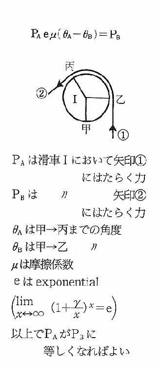

| 虚無への供物 | |
| 中井英夫 | |
| (2015) | |
|
虚無への供物
中井英夫
|
序 章
１ サロメの夜
２ 牧羊神のむれ
３ 月の夜の散歩
４ 蛇神伝説
５ ザ・ヒヌマ・マーダー
６ 鱗光の館
７ 未来の犯人
８ 被害者のリスト
９ 井戸の底で
10 『凶鳥の黒影』前編
第一章
11 第一の死者
12 十字架と毬
13 『凶鳥の黒影』後編
14 透明人間の呟き
15 五つの棺（亜利夫の推理）
16 薔薇のお告げ（久生の推理）
17 第三の業（久生の推理・続き）
18 密室と供物殿（藍ちゃんの推理）
19 ハムレットの死（藤木田老の推理）
20 〝虚無への供物〟
第二章
21 黒月の呪い
22 死人の誕生日
23 犯人たちの合唱
24 好ましくない容疑者（亜利夫の日記Ｉ）
25 皺だらけの眼
26 算術の問題
27 予言者の帰国
28 殺人問答
29 ギニョールふうな死
30 畸型な月
第三章
31 顔のない顔
32 瞋る者の死
33 閉された扉
34 オイディプスの末裔
35 殺人日暦
36 第四次元の断面
37 放火日暦
38 タイム・マシンに乗って（亜利夫の日記Ⅱ）
39 ゴーレムの正体
40 犯罪函数方程式
第四章
41 白い手の持主
42 第三の薔薇園
43 死体エレベーター
44 痴れ者の死
45 密室ではない密室
46 ワンダランドへの誘い
47 薔薇と経文
48 三枚のレコード
49 童子変相図
50 〝驚くべき真相〟
終 章
51 非誕生日の贈り物
52 夜の蓑虫（久生の告発）
53 仮面の人（藍ちゃんの告発）
54 黒と白（亜利夫の告発）
55 非現実の鞭
56 幸福な殺人者（藤木田老の告発）
57 鉄格子の内そと（蒼司の告発）
58 五月は喪服の季
59 壁画の前で
60 翔び立つ凶鳥
挿 図／吉中道夫
|
〝虚無〟へ捧ぐる供物にと 虚無への供物 美酒すこし海に流しぬ いとすこしを ──Ｐ・ヴァレリイ |
|
──その人々に |
|
序 章 |
１．サロメの夜
黒天鵞絨のカーテンは、そのとき、わずかにそよいだ。小さな痙攣めいた動きがすばやく走りぬけると、やおら身を翻すようにゆるく波を打って、少しずつ左右へ開きはじめた。それまで、あてどなく漂っていた仄白い照明は、みるまに強く絞られてゆき、舞台の上にくっきりした円光を作ると、その白い輪の中に、とし若い踊り子がひとり、妖精めいて浮かびあがった。のびやかな脚にバレエ・シューズを穿き、引緊った胴から腰にかけては紗の布を纏いつけただけという大胆な扮装で、真珠母いろの肌が、ひどくなまめかしい。
──一九五四年の十二月十日。外には淡い靄がおりていながら、月のいい晩であった。お酉様の賑わいも過ぎた下谷・竜泉寺のバア〝アラビク〟では、気の早い忘年パーティの余興が始まろうとして、暖房のきいた店の中は、触れ合うグラスや合図めくめくばせ、それに紫烟と人いきれで、熱っぽくざわめいていた。
竜泉寺、といっても、あの『たけくらべ』で知られた大音寺界隈ではない。日本堤に面した三ノ輪寄りの一角で、このあたりは、商店にしても蒟蒻屋とか炭団屋とか、手内職の麺麭工場などが軒を低く入り組んでいる、つましい装いの下町なので、バアだのキャバレエだのはおよそ場違いに見えるが、土地っ子のマスターは気にもしていない。戦時中の区画整理で、竜泉寺町の一角が日本堤に削り取られるまで、実家は吉原の大籬、大文字や山口巴に眼と鼻だったし、大門湯で白粉臭い産湯を使って育った気安さから、昼間はシャンソン喫茶、夜はＢＡＲ・ＡＲＡＢＩＱという、レモン・イエローのネオン看板を暗い路地に輝かせはじめて、もう二年ほど経っている。
この当時、──だが、一九五四年という昔の出来事を正確に記憶されている向きも、いまは少ないであろう。日本流にいって昭和二十九年というこの年には、すこぶる陰惨な事件が多く、警視庁の調べによると、年間の殺人件数は、未遂を含めて三千八十一件、一日あたりほぼ八件という未曾有の新記録を樹立している。──つまり、このとし、この日本では、それだけの人たちが本気で誰かを殺そうと考え、企み、実際に試みたのである。そればかりではない、この年が特に意味深いのは、たとえば新年早々に二重橋圧死事件、春には第五福竜丸の死の灰、夏は黄変米、秋は台風十五号のさなかを出航した洞爺丸の転覆といった具合に、新形式の殺人が次から次と案出された年だからでもある。
それは、確かに〝殺人〟だった。中でも、黄変米という毒物を主食として配給しようという政府案などは、鏡子ちゃん殺しの坂巻や、カービン銃ギャングの大津が、この年に演じてみせたスリラーなど、とうてい及ばない出色のプランニングで、その後も厚生省の環境衛生局あたりから、くり返しおすすめいただいたけれども、それもこれも大方の記憶からは、とうに薄らいでいるに違いない。──それも当然で、すでにこの夜の忘年パーティの客たちでさえ、ことしの事件などきれいに忘れた顔で、のんびり舞台を眺めているばかりだったのである。
今夜の余興は少し変った趣向で、この店に勤めるおキミちゃんという子が、習い覚えたモダン・バレエを御披露に及ぶところだが、素人の座興ながら、演しものは、いまちょうど来日中のコレット・マルシャンを真似た〝七つのヴェールの踊り〟──れいの、妖姫サロメが、舞の褒美にヨカナーンの首を欲しがるというあれで、伴奏の方は、レコードではありきたりすぎるというのか、お花婆あと呼ばれている流しの三味線弾きが受け持ち、舞台の袖で仔細らしく糸を合わせている。
従って、舞台といっても、店の片隅を黒い垂幕で仕切っただけだし、床からボーイが差付けている照明は、また、ボール紙で電球をくるんで色ガラスをあてがうというだけのもので、いま、そのハイライトに浮きあがったおキミちゃんは、フォリ・ベルジェールの式に裸、おまけに唇には黄薔薇を一輪、横ぐわえにしているというのも、下町風なサービスのつもりかも知れない。得体の知れぬ風体だが、そのとき照明が、突然真黄色に変えられたのは、やはりサロメらしく、満月の夜をあらわしたのであろう。お花婆あが一膝のり出し、シュトラウスまがいに弾き出すにつれて、おキミちゃんは、身ぶりたっぷりに唇から薔薇をぬきとり、煙草の火が明滅する仄暗い客席へ見当をつけながら、いきなり抛ってよこした。──造花ではないらしい。薄黄の花弁を痛々しく散らして、薔薇は、ちょうど光田亜利夫の足もとに崩れ落ちたのだった。
「あらいやだ、まるで、ここを狙って投げたみたいじゃないの」
向い合せのシートから、すばやく体を屈めてその薔薇を拾いあげると、奈々村久生は、ついでに亜利夫の脚を突ついてそう囁いた。
ざっくりした黒白の七分コートに、緑の革手袋を脱いだところで、白い手と、化粧のない顔とが薄明りに浮いている。見たところただのお嬢さんだが、としは亜利夫より少し上の筈で、錆びた声が日本では珍しいシャンソン歌手──といっても、まだほんの駆け出しだから、奈々緋紗緒という芸名も、まるで知られていない。本人も、あまり売り出す気はないらしく、ラジオ・ライターの仕事を本職にしているが、たまに水を向けるのがいても、自分には唄うたいより探偵の才能があると堅く信じこんでい、そのうち難事件を解決して、自伝的な推理小説に書きあげるの、などと太平楽を並べていられるのは、現在パリにいるフィアンセの牟礼田俊夫が、もうじき結婚のため連れに帰るという、結構な身分のせいであろう。亜利夫とは父親同士からのつきあいで、いまもただひとりの、気のおけない女友達だった。
「この店に来ると、アリョーシャもまんざらじゃないのね」
亜利夫のことを、そんなふうに呼んで、
「キミちゃんていったかしら、あの子。やたらにピルエットばかり見せるのは感心しないけど、テクニックは一応本式みたい」
甘口のカクテルに、小さな唇をふれながら、眼だけが舞台を追っている。
「一週に三べんは、バレエの稽古に通うんだってよ」
亜利夫は、拾われた黄薔薇の、崩れ残った花片をいとおしむように、淡い桃いろ暈しの縁に鼻を寄せた。鋭い香気が、重なりあった花片の奥から、いきなり昇った。
「ここのマスターが御自慢の子なんだけど、アクロバットでも声色でも玄人はだしなんだって。奈々も見習って、少し売出しなよ」
「あら、ありがとう。だって、いったでしょう、あたしには女探偵のほうが性に合ってるって。......でもとにかく、あれだけ芸人の素質があるっていうのは、それだけでも大変なことね。惜しいもんだわ」
器用なグリッサーを追って、七枚のヴェールをあらわす照明が、黄から赤、赤からオレンジと変ってゆく。緑金のタイツで踊ったマルシャンとは、むろん比較にならぬにしろ、どこか面影を伝えているように見えるのは、あるいはマルシャンの、美少年じみた歯切れのよさを思わせるせいであろうか。──少年じみた、といえば、実際に舞台のおキミちゃんの、あらわな胸をどう眺めてみても、女性特有の、あのやさしいふくらみは見当らない。今夜のこのサロメには、肝心な乳房がないのであった。
２．牧羊神のむれ
乳房のないサロメ。
いかにも、おキミちゃんのむきだしな腿や肩の線は、まだ少年の名残をとどめて、巴旦杏めいた円みを描いている。肌の光沢も、女体とは違った、甘酸っぱいほどの輝きを帯びている。──つまり、おキミちゃんは、ことし十九歳になったばかりのこの店のボーイで、〝アラビク〟は、浅草に数多い同種の店を尻目にその道で人気の高い男色酒場なのだ。もっとも、この当時で東京に三十余軒、それから十年と経たぬうち、浅草と新宿だけでそれぞれ三百軒あまりに殖えたほど、戦後の新しい享楽として日常化したこの世界は、格別、珍しい眺めでもない。ゲイたちは文字どおり花やいだようすで街に繰り出し、反対に亜利夫のような平凡なサラリーマンが、本物の女性同伴で彼らの城に乗りこんでも、黙殺するのがせいぜいで、毛嫌いされることもなかった。
舞台ではおキミちゃんが、絢爛とアラベスクをお眼にかけたあと、おしまいに真青な光を浴びたまま、ヨカナーンの首ならぬものを手にした思い入れで床に突伏すと、それで陽気な幕になった。吊下げ燈がほどよく明るんで、俄かに客席のさまざまな人影が浮かびあがる。海馬姫、お牧の方、三田の局、ドレミハ夫人等々の源氏名を持つ大和撫子たち──といっても、アリョーシャなどと呼ばれている亜利夫同様、素性も風体もありきたりの勤め人がほとんどで、秘密の悪徳という翳りなど、まるで見当らぬこの人種を、隠花植物にたとえるのも的外れだが、それだけにまた〝ニンフのいない午後〟を求めて、水暗い沼辺につどう牧羊神のむれ、といったふぜいも、いまは乏しい。
亜利夫は、そのどちらでもなかった。久生など、どう見ているか知らないが、少なくとも自分では女嫌いのつもりはない。といって会社の同僚たちのように、女を唯一の慰めとも救いとも思い切れない、いわば性の真空地帯に迷いこんだ都会の独身青年──この世界の用語でいえば、まったくの純タチでもなければ格別ホモっ気があるというわけでもない中途半端な存在なので、こんな店に出入りはしていても、初めから相手を求めるなどという気にはいっこうになれなかったのだが、それでもひとり、最近に来はじめた若い客で、アイちゃんという呼び名の、まだどこか稚な顔の残っている少年だけはひどく気にいっていた。いつも藍いろのトッパーを着こんで、白い歯の輝きが清潔に美しい。向うも亜利夫の、どことなくバタ臭い容貌が好みに合ったのか、初めのうち、はにかんだような笑顔を向けていたのが段々になついて、このごろは気さくな話相手になっている。
そのアイちゃんが大のシャンソン好きで、ついこの間もその話から、日本の歌手で聴けるのは淡谷のり子に越路吹雪、あとは奈々緋紗緒という新人が少しましなだけだよと、思わぬ名前をいった。奈々ならば学習院でオチョボぐちをしていたころから知っている。嬉しくなって、早速そちらにも御注進に及んでやると、
「それじゃ、たった一度〝黒馬車〟へ出して貰ったのを見てたのね、そのひと。奇特なお話だわ。あたしにもファンがいるなんて夢みたい。いっぺんお顔を拝ませてちょうだい」
すっかり感激したようすで、ついでに、かねて覗いてみたかったゲイバアなるものを見学するいい機会だからと、勢いこんできたのが今夜だった。ところが約束しておいたアイちゃんは、サロメが終ったいまも現われる気配がない。ボーイにきいても、さっきまでは確かちょうどこの席にいましたわと首をかしげるだけだが、初めてのゲイバアに浮き浮きした久生は、そんな約束も忘れた顔で、
「ちょっと、ここのマッチったら愉快じゃないの。モハメッド・アリみたいな黒んぼの少年が逆立ちしてるわ。ねえ、〝アラビク〟なんていったって、アラビア風な飾りはまるでないし、これがそのつもりなのかしら」
ひとりでお喋りしながらごきげんになっていたが、そのうち、ざわめきを縫って聞える、幽かなレコードの唄声に聴き耳を立てると、また、いきなり頓狂な声をあげた。
「あら、リイヌ・クルヴェかしら。......そうだわ、ねえアリョーシャ、きいてる？古い歌手だけど、断然ごひいきなのよ、あたし」
いかにも、ひと昔まえのレビュー小屋で栄えたような、お侠な鼻声が高っ調子に唄いあげているのは、何やら戦前のシャンソンらしく、針音もひどいしろものだが、
「あれは〝恐い病気よりまし〟って唄。いまどき、こんなレコードがあるなんて、珍しいお店ね。一度でいいから、この人の〝アルフォンソ〟って唄、しみじみきいてみたいんだけど、ここにならあるかもしれないわね」
むかし、流行ったパソ・ドブレの曲名を、うっとりするような調子で口にしたが、
「さあね、マスターにでもきいてごらん」
古い唄などに興味のない亜利夫は、しごく冷たい声で答えた。
「昔のシャンソンなら、たいていそろっているような話だから。......だけどアイちゃんの奴、ほんとにどうしたのかなあ」
中腰になって伸びあがると、久生もやっと思い出した顔できょろきょろしながら、
「そうだったわね。大事なファンを忘れちゃった」
そういって一渡り店の中を見廻してから、ふと思いついたように、
「ねえ、そのアイちゃんて、氷沼家の方だっておっしゃったわね。アリョーシャ、あなた何か氷沼家のことで、変な噂をきいてらっしゃらない？」
「変なって？」
「代々、当主の方に祟りがあるといったような......」
久生はエッグ・ノッグのグラスをおいて、妙な上眼づかいをした。
そんな古風な話は知らないが、もう六年ほど前、旧制最後のＴ──高校で、一年下の理甲に氷沼蒼司という秀才がいた。同じ中学から行ったせいもあって、当時は顔を合せる機会も多かったが、〝アラビク〟でアイちゃんと仲よく話しこんでいるうち、本名は氷沼藍司といって、蒼司とは従兄弟同士だと判ったときには、驚くというよりも急な親しみが湧いて、いきなり肩を抱きすくめてやりたいような思いに包まれたほどだった。
もっとも氷沼蒼司とは、高校時代も学校で顔を合すだけのつきあいで、向うは理科系で大学は応用数学へ進んだし、こちらは経済に別れてしまい、さして親しかったわけではない。ついこの秋の洞爺丸事件で、身内に大変な不幸があったと知った時も、ハガキ一枚の悔みは書いたが返事もないくらいだった。藍ちゃんにきいてみると、洞爺丸で死んだのは、蒼司の両親ばかりでなく、その弟夫妻──札幌で装身具店を開いていた藍司の両親とも四人という、乗客の中でも例のない悲運であったらしい。兄弟もいないので、いきなり孤児になった藍ちゃんは、ともかくも札幌の家を畳んで、この十一月初めに、目白の氷沼家へ引き取られたばかりだときいているが、それ以上のことは、藍ちゃんも話したがらなかった。代々の祟りなどといっても、まさか洞爺丸の遭難がそれに当るわけでもなかろうし、けげんな顔で見返すと、
「いえ、古い話なの。迷信みたいなことでしょうけどね」
ぼかすように曖昧なことをいって、久生が莨を一本ぬきとった時であった。両手で囲んだマッチの炎を、すばやく鼻先にさし出したのは、いつの間にかクリームいろのセーターに着かえたおキミちゃんで、顔いっぱいの愛想笑いをしながら、
「あーらアリョーシャ、しばアらく。あたしのサロメ、見てくだすって？」
頬をすりつけるほどに寄せて、マスカラのこぼれそうな付け睫毛をしばたたく。素顔のままならば、あるいは目もと涼しい美少年なのだろうが、いつ見てもはでな化粧を欠かしたことがない。これで案外、寝タチ──オン・ベッドでは男っぽく、やくざじみたところもあるそうだが、今夜はサロメのつくりのままアイシャドウで青く目尻を吊りあげているので、ピエロまがいのばかばかしい顔になっている。
「ああ見たよ。この薔薇はもらっとくぞ」
亜利夫は反射的に、これもすこしばかりタチっぽい口調になって、テーブルの上の黄薔薇をとりあげた。
「ま、アリョーシャが拾って下すったの。嬉しいこと」
しなだれかかるように、そのまま横坐りに坐りこむおキミちゃんへ、久生が正面から、やんわり莨の煙を吐きかけた。
「でも、ごぞんじかしら？ 黄いろの薔薇は花言葉が良くないのよ。嫉妬とか、不貞とかって」
「あら」
おキミちゃんは、わざとびっくりしたように体を起した。ゲイバアの女客も、もう近ごろでは珍しくもないが、やはり初めての顔には本能的な警戒心がチラと動くのか、
「そうでしたの、まあ嫌だこと。でもこれはママさんが好きですのよ。ピースとかって、フランスで戦後にできた、有名な花なんですってね。咲き残りで大事にしてたのを剪ってきたんですけど、嫉妬や不貞だなんて、いけませんわ、女として」
口先でつなぎながら、さもあどけないように眼をみひらいて、黒ずくめな久生の風体をすばやく見定めていたが、それほどのタマでもないと踏んだのであろうか、安心した顔でお愛想をいった。
「こちら、おはじめて、ね？ ずいぶんキレイな方だこと」
久生が持ち前の錆び声で応じた。
「それがもう大変なお婆さんよ。安心して、こっちイいらっしゃいな」
おキミちゃんは、しかし薄い唇を歪めた。久生のさしのべた手を優しく押しのけると、
「いけませんわ、同性愛は不潔ですもの」
すらりと立ちあがって、もう二人のことは忘れた顔で新しい相手を物色しはじめたが、そのとき店に入ってきた若い客を眼ざとく見つけると、たちまち、けたたましく呼び立てた。
「あーらいやだ、藍ちゃんたら。あたしのサロメ、見てくれてたんじゃないの？ずいぶんだねえ」
「あ、済んじまったのかい」
藍ちゃん──氷沼藍司は、どこか遠いところを見るような眼で、そう答えた。
３．月の夜の散歩
名前のとおり、深い藍いろのトッパーに、ともいろのスラックスを細身に仕立て、おしゃれな貴公子といったふぜいだが、寒風を受けてきた頬に薄紅く血がのぼって、いかにも北国育ちらしい白い肌が引立っている。死んだ父の菫三郎も、同じように小柄でたしなみがよく、若いころから口髭を蓄えていたという話だが、こちらはまだうぶうぶしいほどの少年で、キザなところはどこにもない。
高校三年で同いどしの、ルナちゃんと呼んでいる少女と仲がよく、ことしから進適（進学適正検査）が廃止になったのを幸い、いっしょに東大を受ける準備をしていたというのに、その少女は札幌に残したまま、いまこんな店にたぐまっているという気持は、しかし亜利夫にも判らないでもなかった。
洞爺丸遭難の報に、東京から皆が駆けつけるまで、藍ちゃんは店の連中と、七重浜から有川桟橋、中央病院、大森公園と走り廻って次々陸揚げされる死体の中に、両親と伯父伯母を探した。母親たちはついに見つからぬままで、まだ洞爺丸と共に沈んでいると諦める他なかったのだが、父親と、伯父の紫司郎とは、砂まみれの水死体と変って、新川べりの慰霊堂に運ばれていた。
その翌朝、七重浜の沖に美しくかかった虹を眺めてから、藍ちゃんは、この地上とはまったく別な次元に迷いこんだ気がしたという。その日から現実を棄てて、非現実の世界に赴くより生きようのない気持でいた少年を誘ったのは、泣くために入った映画街の暗闇の中で、自分の手を求めて忍びやかに近寄る、行きずりの見知らぬ男の掌の、ふしぎに優しい、微妙な囁きであった。......
それはともかく、今夜の藍ちゃんは、まだあまり街で見かけないディキシランド・スタイルの黒靴をつっかけているが、おキミちゃんの眼は、たちまちそれに釘づけとなった。どこへ行ったともいわず足もとへかがみこむと、お脱ぎったらお脱ぎよ、とせかして立て、どぎつい色の靴下をあらわに、自分の萌黄のスエードと穿きくらべをはじめた。とし恰好も似ているせいか、靴もぴったりで、自分のもののようにとみこうみしている。服装でも言葉でも、男の流行はすべてゲイバアからはじまるのが戦後のならわしだが、中でもおキミちゃんは、いつでも最尖端を取入れようというタイプなので、仕方なくその肩につかまりながら、藍ちゃんがすっかり持てあましていると、いい具合に、奥のスタンドで田舎客の相手をしていたママさん──土地っ子のマスターが、眉をひそめながら出てきた。
〝蘭鋳〟という綽名だが、そのとおり、やたら肉瘤のついた顔を猪首の上にのせ、派手な色シャツを着こんで、泳ぎ出すような手つきをしながら近寄ると、声を落して、
「また例の浅黄裏が舞いこんだんだ。今夜はどうでもお前としんみりしてみたいとさ。頼んだよ」
「まあ、ママったら、皆さんにきこえるじゃないの」
ようやく藍ちゃんの黒靴を諦めて、おキミちゃんも渋々立ちあがった。それと見て、外套のお尻を止り木に据えつけた大男が、厚かましくこちらをふり返って、合図するように手をふっている。葉巻を横ぐわえにして、頭は油で黒光りさせたような、遠見にはいかにも喜ばれそうにない中年の風体だった。
「また、あの鯰坊主？ いけすかないわねえ」
おキミちゃんも露骨に舌打ちしたが、
「いいわ、そいじゃ、いつものシャトルーズ洗いざらいおリツにするから。寝酒にとっとくんだから、ママったらこないだみたいに、体に毒だよ、アラスカにしておおきなんて、余計なこといわないで。カクテルなんかしようがないじゃないの」
「お前のお店思いは、そりゃ嬉しいけどね」
マスターは軽く笑って、
「飲みもの喰べものは、おリツのうちに入らないんだよ、あとにしっかり残るものでなくちゃ。早速、靴でも買ってお貰いな」
潮の引くように、二人がスタンドへ引きあげたあと、藍ちゃんはひどくむつかしい顔に返って、亜利夫の隣へ腰をおろした。
「どうしたんだ、約束しといて。何かあったの？」
「うん、ちょっと......」
「今晩は。握手しましょう」
久生は、いたずらっぽく手を出して、
「あたし、奈々。でも久生って名前のほうを呼んでちょうだいね。もうじきおヨメに行こうってところだから」
藍ちゃんは、育ちのいい、はにかんだ微笑を見せて握手すると、ボーイの持ってきたお冷やを、あおるように一息にのみ干した。話し好きで気のいい二人のことだから、さぞかしウマが合って、賑やかにシャンソン談義でも始めるのだろうと思っていたが、何か、ただならぬことでも起ったような藍ちゃんの表情に気をのまれて、久生まで、もじもじと莨をさぐっている。
「何だか変だなあ、今夜は。急に、どこへ行ってたんだよ、本当に」
「え？ ああ、いまね」
打明けたくない顔でためらっていたが、やっといいわけを考えついたように、
「だって、今夜のお月様ったら、へんに大きくて、低いところにぬっと出てるんだもの。ちょっと散歩して、眺めてたんだよ」
そういえば、きょうあたりが満月で、外は明るい月夜に違いないが、乱れた髪や服の具合からおすと、それほどのんびりした話でもないらしい。黙って莨に火をつけていた久生が、そのとき冗談めかして口を挟んだ。
「お月様っていえば、いま演ってたサロメもワイルドのお芝居じゃ、満月の夜なんでしょう？侍童のせりふにもあるじゃないの、〝月は死人たちを探しておりまする〟って。今夜のお月様は、どうかしら、やっぱり死人を探していて？」
あ、というように、藍ちゃんは、一瞬、鋭い視線を相手に走らせたが、すぐ眼を伏せてしまった。
「悪いことをいっちゃったわね、御不幸が続いてらっしゃるのに」
いたわるような眼で眺めていたが、ふいに亜利夫にとっても意外なことをいい出した。
「藍ちゃんねえ、あたしが今度結婚する相手って、牟礼田俊夫......御存知ないかしら。いまパリにいるけど、おたくとは遠い姻戚に当る筈なの。蒼司さんのことは、よく存じあげているようよ」
「あの、紀尾井町の牟礼田さん？」
「ええ。蒼司さんのお母様、あなたには伯母さまだわね。その方の実家のほうの御関係。ですから、血も何も繋がってやしないんですけど、そんなわけで、あたしもまんざら赤の他人じゃないでしょう？」
「牟礼田さんなら、よく蒼兄さんのとこへも手紙がくるよ。......へえ、そうなの」
藍ちゃんもようやく打ちとけた顔で、
「ぼくもずっと前に会った。すごく頭のいい人みたい。......だけど久生さん、いま妙なことをいったでしょう、月は死人を探しているって。あれは、何か知っていていい出したの？牟礼田さんから、何かきいてる？」
「いいえ、何にも」
久生もむしろ不審そうに、
「まるで何かいい当てられたような顔をなさるから、こっちのほうがびっくりしたわ。......氷沼家のことは、何にも知らないのよ。ただ御不幸が続くのは、何かの祟りで、代々、当主の方が変死されるとか、それがみんな北海道と関係があるとかって噂は、ちょっと耳にしたけど、いまごろそんな因果噺もないもんだと思って......」
「そうなんだよ。呪いだの祟りだのっていわれると、ぼくもおかしくなっちゃってたけど、やっぱりうちには、何かあるのかも知れない......」
考え深い眼になって、藍ちゃんは、やっと今夜の出来ごとを話しはじめた。
「へんに大きな満月が出ているのは本当だけど、散歩なんかしていたわけじゃない。......馬鹿みたいな話だけど、さっきまでこの席にいて、あんまり人いきれがするから、この窓を少うしあけたんだ。そしたら、そこの路地のところを、また、あいつがうろうろしてた......」
「あいつ、って？」
「顔じゅう髭もじゃで、あの厚司を着たアイヌなんだよ。それですぐ飛び出して、泪橋のへんまであとをつけて追いかけたんだけど、逃げられちゃった......」
４．蛇神伝説
「何ですって」
久生は呆気にとられた顔だったが、亜利夫も思わず問い返した。
「アイヌって、あの北海道のかい？」
「そうだよ」
「じゃあ、サンドイッチマンか何かだろう」
黙ってかぶりをふるのに笑い出しながら、
「だって、本物のアイヌが、このへんをウロチョロするものか」
突っ放すようにいって、つけ加えた。
「それとも、花やしきに熊祭でもかかっているかな」
実際、明るい月夜の日本堤を、藍紋様の晴着を着たアイヌが飛ぶように走って、そのあとを、やはり藍いろのトッパーを着た藍ちゃんが、見え隠れに小走りにあとをつけているなどという図は、どう考えても突飛すぎ、亜利夫にはくすぐったいような気しか起させない。しかし藍ちゃんは、やはり沈んだ調子で、
「だから考えてるんだよ。あいつを見たのはぼくが目白の家へ来てから、今夜で二度めだもの。同じ背恰好の同じ顔のアイヌと、そんなに偶然出会うわけはないし、それに、札幌じゃ一度も現われなかったのに、東京へ来たとたん、思わせぶりに姿を見せるってことがおかしいでしょう。そうなんだ、あいつはただ、ぼくに姿を見せて、ホヤウ・カムイのお使いが来たことを知らせているんだ」
「何だか、お話がよく判らないんですけど」
久生は、それでもすっかり興味を持ったように、のり出してきた。
「そうすると、そのアイヌは、何か目的があって藍ちゃんの前に姿を見せに来たわけね。何かいまのお話だと、不吉な使者が来たようなおっしゃりかたですけど、純粋なアイヌなんて、もう何百人もいやしないでしょう？沙流や白老でなら、観光用に厚司ぐらい着てみせるでしょうけれど、わざわざ正装して、竜泉寺のゲイバアまで覗きにくるっていうのは、どうかしら」
相手が黙っているので、おっかぶせるように訊いた。
「いま何とかおっしゃったわね。なにカムイですって？」
「ホヤウ・カムイ──洞爺湖の蛇神だよ」
藍ちゃんは、苦々しい口調で繰り返した。
蛇神──。もとよりアイヌ伝説の一つで、熊や狼や梟など、何によらず神として崇めるかれらには、ごく自然な動物神だが、蝮の群が重なり合って、臭うほどにうごめく岩山や、蛇の入りにくる温泉さえある胆振・日高地方のアイヌにとって、それは内地の山陰地方に見られる白蛇信仰のように、愛敬半分のものではなく、現実的な恐怖から生まれたものであった。たとえば、観光案内にはないことだが、アイヌ語でシャック・ショモ・アエップ──〝夏、口に出してはいけない〟という言葉が、そのまま〝恐い蛇の神様〟の意味で通用するくらい、この地方で蛇を怖れることは大変なもので、蛇の出てくるユーカラは、夏場だけは頼んでも決して歌ってくれないほどである。
久生も、あら、という顔で、
「蛇神なら、あたしも知ってるわ。この前、北海道へ行ったとき、土地のお友達が教えてくれたけど、洞爺湖じゃ、夏になると、饅頭島から中島へ、蛇が群れになって泳いで渡るほどなんですってね。蛇神って、あの地方で一番恐い神様だそうですけど、でも......」
何か、のみこめないというように口をつぐんだ。
いかにも、かりに蛇神伝説が生きているにしろ、それはわずかに残された純粋のアイヌたちが、ひっそりと五弦琴を鳴らし、膝を打ちながらうたう氓びの唄の中でしかない筈で、氷沼家とアイヌとの間にどういう因縁があるにしても、現実にホヤウ・カムイの使者などが現われるわけはない。
だが藍ちゃんは、まだ一人で考え考えしながら、つぶやくようにいった。
「何のためなんだろう。アイヌを恐れているのは、ぼくじゃあない、紅兄さんだのに、なぜぼくの前に......」
いいかけて、二人が心配そうに見つめているのに気がつくと、無理に笑っていった。
「大丈夫だよ、そんな顔しなくっても。ただ変なのはね、うちで本当にアイヌの呪いだの祟りだのってことを信じているのは、紅司って、蒼兄さんの弟だけなんだ。体質的なものかも知れないけど、まだ何にも知らない小さい時、どこかの原っぱで、アイヌの蛇使いが客寄せしてるのを見てひきつけたことがあるくらいだから、洞爺丸の後じゃ、アイヌと蛇って言葉だけでも顔色を変えるんだよ。それなのに、なぜその紅兄さんの前に現われないで、ぼくにだけ姿を見せるんだろう。それに、誰がそんな......」
「それじゃ、こういうことなのね」
久生は急に、しゃんと背すじをのばすように、正面から藍ちゃんを眺めた。
「氷沼家には何かいわれがあって、アイヌを昔から恐れている──つまり洞爺湖の蛇神に祟られているんで、今夜ここに現われたアイヌも、そのお使いらしいって。むろんそれは、氷沼家の当主が代々変死なさったことから出た話でしょうけれど、そこのところを詳しく伺いたいのよ。どういう因縁でアイヌがからんでくるのか......。氷沼家って、もともと北海道の御出身なわけ？」
「違うよ。だけど、曾お祖父さんの誠太郎って人が、開拓使の役人で、クラーク博士の通訳をしてたから......。氷沼っていうのは、曾お祖母さんの実家の姓なんだ」
藍ちゃんはまた意外な名前をいった。
──Ｗ・Ｓ・クラーク。日本ではもっぱら〝ボーイズ・ビー・アンビシャス〟の一句だけが有名で、新教育の功労者としてのみ知られているが、学者としての本領は、その後に急速な発展を見せた、植物生理学の新研究にあったひとである。曾祖父の誠太郎が通訳になったのは、明治三年に渡米してアマースト州立農業学校に留学した折、そこの学長がクラーク博士だった縁によるものだが、大島正健氏の『クラーク先生とその弟子達』に、米国から同行帰朝したとあるのは誤りで、誠太郎だけ明治七年に帰国し、開拓使出仕としてしばらく青山試験場勤務となり、明治九年の博士の来日と共に札幌在勤となった。
それはともかく、博士の帰米後も東京へ来て英語学校に姿を現わし、年端もゆかぬ生徒だった内村鑑三や新渡戸稲造を得意の弁舌で説きつけて、未開の北海道へ送りこむ役割を果しているのだが、そんな新知識の一人だった彼が、その後半年と経たぬうち乱心状態となり、時の長官の黒田清隆と烈しい争論を交したあげく、長崎出張申シ付ケ候事という一片の辞令で、高島炭坑へ追い落されてしまった。誠太郎はそのまま失踪し、最後は郷里へ帰って酒乱の果てに狂死したという噂が、函館の実家へ戻っていた妻子のもとに届いた。......
久生に責められて、藍ちゃんは口重くそこまで語ったが、相手はいっこうに納得しない顔で、
「だって、どうしてかしら。クラーク博士の直弟子なら、熱烈なクリスチャンでもあったでしょうに......。急に乱心状態になったというのは、どういうことなの」
「だから、そこにアイヌとのいきさつが入ってくるんだけど、それも実際にあったことなのか、誰かの讒訴なのか、誰にも判りゃしないんだ」
「でも、いい伝えはあるんでしょう。おっしゃいよ。今夜のようなことがあるんじゃ、やっぱり放ってはおけないわ」
言い渋る藍ちゃんから無理矢理きき出したのは、明治十年の暮になって誠太郎が、突然人が変ったように狂信的なアイヌ教化をやり出したいきさつであった。その後も屯田兵が、アイヌの襲撃に備えて、つねに厳重な砦を築いていたことでも知られるように、和人のアイヌに対する暴行と、それへの復讐は、松前藩のころに劣らず、正史の陰で酸鼻を極めていた時代だから、アイヌ狩という残虐行為が平然と行われたとしても、それほど珍しい出来事ではなかったのだが、その時の恐怖はいまでも──およそ八十年ほど経った現在にも黒い尾をひいて、奥地の部落では、内地人と見れば母親がいそいで子供を呼びいれ、家の中に隠す実情を示している。
ことに〝北海道土人ハ容貌言語陋醜ニシテ......〟という、当時の優越感を背景にした誠太郎のやりくちは、異端審問僧さながらで、火の神を祀る者は火中へ、水の神を祀れば水中へという仮借のないものであった。そして、蛇神を祀る一部落の幼児をことごとく捉えて赤蝮の谷に平然と投げこんだという訴えは、西南の役から帰った黒田長官をさすがに驚かして追放の措置になったと伝えられているのだが、それがどこまで事実か、或いは悪質な誣言とすれば誰から発しられたものか、いまとなっては確かめようもないのだが、──
「それ以来、氷沼家の人間は、ろくな死に方をしないって、アイヌ狩が事実ならそれも当然だけど、みんな変死しているんだ。お祖父さんは大正時代に知られた宝石商だけど、それも昭和九年に、生まれ故郷の函館へ帰って、支店を開こうとしたところで火事に逢って焼け死んじゃったし......」
昭和九年三月二十一日夜の函館大火で、祖父の光太郎がむざんな焼死をとげたあと、残された三男一女のうち、まず長女の朱実が、広島の原爆で夫と子供もろとも爆死し、今度の洞爺丸で、長男の紫司郎・三男の菫三郎夫妻が水に葬られた。──それは確かに、個人的な変死というわけではない、いわば日本の災害の歴史に殉じたともいえるのだが、当の氷沼家にとっては、どすぐろい運命の糸に操られているとしか思えない。いま目白の家に生き残っている四代目の当主蒼司と、その弟の紅司、それに藍ちゃん、そして、同居人の叔父橙二郎夫妻まで、ひとりひとりの胸にはいつとなく、幼児虐殺の行われた部落の親たちが、唇を噛みしめて復讐を誓う幻の情景が灼きついて離れないのであった。
「むろん紅兄さんのほかは、本気でそんなことを信じてやしないよ。でも今夜みたいに、突然アイヌが出てくるとやっぱり変な気がするじゃないか。だってこの前の時も、たしか満月の晩に見かけたんだ。さっき久生さんが月は死人を探しているっていったけれど、それは本当かも知れないと思っちゃう。この次は、ぼくの番なのかなって......」
５．ザ・ヒヌマ・マーダー
「あのねえ、こういうことは考えられないかしら」
氷沼家の陰惨な歴史を、黙ってきいていた久生が、そろそろと用心ぶかく切り出した。実際の推理力はさっぱりの癖に、たわいもないシャーロキアンで、ホームズの口真似をしては喜んでいる──でなければジュラニアンとでもいうか、久生十蘭の作中人物を理想とするこのお嬢さんは、蛇神に呪われた一家の末裔を前にして、持前の探偵気質が俄かに頭をもたげたらしい。
「いまのお話で肝心なのは、曾お祖父さんという方が急に乱心した、その動機ね。それはもうすこし探ってみなくちゃならないけど、それとは別に、ホラ、探偵小説によくあるでしょう、怪奇な伝説が甦ったとか、何百年前の予言が実現されたなんていいながら、その実、ごく身近な誰かの犯行だったというお話──。何々家の惨劇だなんて、いいかげん使い古された、おきまりの手口ですけど、当節のことだから、実地に応用してみようなんて奇特な方が現われないとも限らない。......ね藍ちゃん、もしかして『氷沼家殺人事件』が計画されている気配はないの？今夜のアイヌにしたって、氷沼家の内情を昔から知っている人物が、あなたを脅すために人を傭って、と考えたほうが、ずっと自然でしょう。ついそこの山谷のドヤ街へ行けば、アイヌめいた顔の男なんか、いくらでも拾えるもの」
「それはぼくも考えたさ。追いかけてつかまえようとしたのはそのためだけど、お祖父さんの代ぐらいでならともかく、いまぼくの知ってる限りの奴で、ただ脅すためにそんな酔狂な真似をしそうな人間、いそうもないな」
「判らないわよ、そりゃ」
久生は躍起になったふうで、
「むろん、そんなことをするのは、するだけの理由があればこそですけれどね。御免なさい、立入ったこと訊いて。でも、これはぜひ教えてほしいんだけど、氷沼家っていうのは凄い財産家なんでしょう？宝石だけでも随分おありだって伺ったわ。だから、もし誰かがそれを狙って......」
「ちっとも財産家じゃないよ」
藍ちゃんは簡単に否定した。
「そりゃ、お祖父さんが宝石商だったから、ぼくたち銘々の名前に因んだ誕生石は貰ってるけど、それだけのことだもの。ほんとなら目白の紫司郎伯父さんが、そのお店を立てていかなくちゃいけなかったのに、素人学者で植物の道楽ばかりしてたから、戦後はことにひどかった筈だよ。九月に札幌へ来たのだって、もう一度装身具店でもひらいて何とかしなくちゃというところまでになって、パパをかつぎ出しに来たんだもの。一緒に東京へ行って、顔を利かしてくれなんて頼まれたんだけど、おとどし、もく星号であんなことがあったばかりでしょう。飛行機は恐いから船にしようって伯父さんがいい出したおかげで、四人とも死んじゃった......」
「ああ、あの宝石デザイナーの方ね」
三原山に激突して、宝石とともにさまざまな話題をまいたもく星号の惨事は、同じ宝石仲間にとってことに強烈な印象であったに違いない。神妙にうなずきながら、
「まあでも、財産を狙っているんじゃないにしても、今夜ここにアイヌが現われた以上はアレね、どこか身近なところに黒幕がいると思わなくちゃ」
久生は、自分で思いついた『氷沼家殺人事件』を諦めきれぬらしく、あれこれ考えをめぐらしているようすだったが、そのうちふと亜利夫のほうに流し目をくれると、いきなりいった。
「そういえば、アリョーシャは、目白のおうちに伺ったことがあるの？」
「いや、ないよ。どうして？」
「だっていまのお話きいてると、氷沼家って、黒死館ふうな大階段や古代時計室でもありそうですもの」
亜利夫には判らないことをいってから、
「いえ、ね。あたしも前から一度、目白にはお伺いしたいと思っているんですけど、いくら牟礼田が蒼司さんの遠縁でも、あたしがいきなり女房でございなんて出て行くのも変でしょう。だからアリョーシャ、あなた、どうかしら」
「どうって？」
さっきからの話は、亜利夫にとっては余りに意外すぎて、まとまった感想も浮かんでこない。とまどった顔でいると、なんて鈍い男だろうとでもいうように、向う臑にロウヒールの爪先がとんできた。
「蒼司さんも、御両親を歿くされてお寂しいんでしょう。お友達も少ないようなら、あなたが慰めに行っておあげになったら」
すらりとした調子でそんなことをいうと、
「ねえ藍ちゃん、アリョーシャが目白のお宅へ遊びに行ったら、おかしいかしら。むろんゲイバアで知り合ったなんて、誰にもいわなきゃいいでしょう」
どうやら久生は、ドイルの『隠居した絵具商』の故智にならって、亜利夫をワトスン役に仕立て、ホームズの代理として氷沼家の内情を探らせたいらしい。
「ああ、いつでもおいでよ」
藍ちゃんは、しかしそんな企みも気に留めないようすで、無邪気にいった。
「こないだ蒼兄さんには、光田さんのこと、話したんだ。友達んとこで偶然会って紹介されたって......。そしたらよく覚えてて、とても会いたがってたよ。アリョーシャ、洞爺丸の後でハガキのお見舞くれたんだって？高校の時の知合いでお悔みよこしたの、光田さんだけだなんて、懐しがってたもの」
それから変な笑い方をして、
「それに大丈夫さ、一件がバレたって。蒼兄さんにはこんなセンス、まるでないけど、紅兄さんはぼくよりよっぽど凄いらしいんだ」
「凄いって、何が？」
「ここみたいなオカ場所へは出入りしないけど、やっぱりそうなんだよ。どこかの与太者と変なつきあいがあるらしいの。ぼくのことだって蒼兄さん、うすうす知ってるみたい」
「まあ」
久生はいささか辟易したていだったが、
「でも蒼兄さんが覚えていらっしゃるなら、アリョーシャ、ちょうどいいじゃないの。早速、あしたにでもお伺いしてみたら？」
けしかけるようなことをいうと、「今夜のうちに、ちょっとお電話でもして、ね」と、いまにも自分で立上がりそうな気配を見せた。
「目白のおうち、お電話はあるんでしょう」
「ああ、ぼくも来たばかりだからまだよく覚えてないや」
藍ちゃんは手帳を取り出して眺めながら、
「池袋の、と。......いま、ぼくがかけてきいてみるよ。どうする？あしたが土曜だから、あしたの晩にでもくる？」
それから久生のほうを向いて、
「さっき何とかいってたけど、古代時計室どころか、せいぜい郊外の文化住宅ってところだから、期待しないほうがいいよ。薔薇園ぐらいはあるけどね」
気さくに、電話のあるカウンターのほうへ立ってゆくうしろ姿を見送ってしまうと、久生は急に、おそろしく真剣な表情になって、早口にいった。
「アリョーシャったら、もう少し気を利かせてね。あたしが今夜出てきたのは、ゲイバアの見学だのシャンソンのお話だなんて呑気なことじゃない、藍ちゃんが氷沼家の人間だってきいたから、ただそのために来たのよ。......ついこないだ、牟礼田から来た手紙に、大変なことが書いてあったんだ。近いうちに氷沼家には、必ず死神がさまよい出すだろうって。あの頭のいい牟礼田のいうことですもの、間違いはないわ。それで、もうじき帰国するから、それまで何とかして蒼司さんを守ってやって欲しいというの。代々の死人たちの積み重ねてきた業が爆発したら、もう防ぎようはないなんて、判らないことが書いてあったけど、そういう話なら、何も手をつかねて殺人を待つ必要もないでしょう。殺人の起る前に犯人を見つけるのがあたしの流儀よ。ですからね、とにかくアリョーシャが代りに行って、いろいろようすを探って来て欲しいんだけど、あなたに出来るかしら。心配ねえ......」
６．鱗光の館
国電の目白駅を出て、駅前の大通りを千歳橋の方角に向うと、右側には学習院の堀堤が長く続いているばかりだが、左は川村女学院から目白署と並び、その裏手一帯は、遠く池袋駅を頂点に、逆三角形の広い斜面を形づくっている。この斜面だけは運よく戦災にも会わなかったので、戦前の古い住宅がひしめくように建てこみ、その間を狭い路地が前後気ままに入り組んで、古い東京の面影を忍ばせるが、土地慣れぬ者には、まるで迷路へまぎれこんだような錯覚を抱かせるに違いない。行き止りかと思う道が、急に狭い降り坂となって、ふいに大通りへぬけたり、三叉に別れた道が、意味もなくすぐにまた一本になったりして、それを丈高い煉瓦塀が隠し、繁り合った樹木が蔽うという具合だが、豊島区目白町二丁目千六百＊＊番地の氷沼家は、丁度その自然の迷路の中心に当たる部分に建てられていた。
宝石商だった祖父の光太郎が、昭和四年、初孫の蒼司が生れたのを喜んで、半ば隠居所を兼ねて建てた家だが、これという趣味も奇癖も持たなかったせいか、久生の期待したような尖塔も櫓楼もある筈はなく、間取りなどもごくありふれた平凡な建物だった。もっとも、空襲にも会わず焼け残った今になってみると、これでも大邸宅の内に入るだろうし、それに、五百坪ほどの庭には、ところかまわず楢やぶなや櫟を植えこんでいるので、昼間でも陰気に薄暗いのが、外からみれば宏壮な感じを与えている。ことに洞爺丸事件のあとは、無人の邸めいて静まり返っているが、蒼司たちは、この死者が遺していった、冷え冷えと陰鬱な空気の中で、地味な生活を続けているのであった。
〝アラビク〟での相談がまとまった翌日、光田亜利夫が、いくぶんうしろめたい思いをしながら氷沼家を訪ねたのは、もう夜に入ってからで、十六夜の月が凄まじいまでに照りつけていた。ようやく探し当てた門の前に立って一息つくと、暗い庭木立の上をしきりに雲が走って、切れ目から鋼いろの月が陰気に覗いている。庭に入りこんでも、まるで人気がなく、奥まった洋館の屋根やガラス戸は月光を浴びて冷たく輝いたまま、氷沼家の建物全部が、青い鱗光を放つ生物のように鎮まっていた。
話のはずみで訪ねることになったものの、どうにも気が重くてやりきれない。日本橋本石町の貿易商社に勤めて、朝夕のラッシュ・アワーにもめげずスポーツ新聞を耽読し、昼休みはチョッキの胸をはだけて室町界隈を回遊するサラリーマン生活に、しだいに同化しかけている亜利夫にとっては、これも幾分かの退屈しのぎには違いないが、不幸のあった家にようすを探りに行くというのが、そもそもあまり嬉しいことではない。それに、どんなきっかけで、藍ちゃんと知り合った理由を見破られぬでもないと思ったのだが、玄関に出迎えた蒼司は、初めからそんなことは気にもとめていないらしく、ただ無性に喜んでこの級友を請じ入れた。
肌に染みるほどな薩摩絣の胸もとから、清潔な白シャツがのぞいている、明治の書生っぽめいた姿も、澄んだ湖を思わせる奥深い瞳の印象も、六年前とほとんど変らない。大変な父思いだっただけに、洞爺丸のあとはショックもひどく、多くの遺族がしたように夜の砂浜に坐りこみ、暗い海に向っていつまでも動かなかったというし、その後も一と月ほどは、自殺するかと案じられるほどに沈みこんでいたそうだが、やっと諦めもついたのであろう、雪花石膏の中に灯を点すという形容をそのまま、頬には僅かな紅味もさしている。
つい先ごろまで大学院に籍をおいて、専攻は応用数学──正式の名称は工学部応用物理科数理工学コースという科で、フローセオリーの矛盾を追求していた、などという話をきくと、昨年の春から勤め人生活に入った亜利夫とは、およそ違う星の住人のままで終るはずで、機縁というものを思わぬわけにはゆかなかった。中学が同じといっても、そのころは戦争中の通年動員という時代だから、一年下にそんな生徒がいたかどうかも記憶にはないが、戦後の旧制高校、それも校舎が焼けたため駒場の一高と同居させられたり、三鷹に仮校舎をあてがわれたりというＴ──高校で、はじめて顔を見知った時の、甘美な誘いにも似た思いだけは忘れられない。食糧事情の悪化から、休校もしばしばという時期だったけれど、亜利夫はいつも、この催眠術師のようにどこか神秘的な顔を、遠くから見守るようにして過してきたのだった。......
感傷が先に立ったせいか、第一日目の氷沼家探訪は、はなはだなまぬるいものになった。久生のほうは、まだ起ると決まったわけでもない殺人事件に大きな望みをかけているらしく、翌日の日曜、早速電話で呼び出してきて、西荻窪の南口に近い、壁画荘という自分のアパートで待ち構えていたが、報告することなど何もない。
「とにかく、ゆうべの月は凄かったよ。屋根が蛇の鱗みたいに青く輝いて、まるで墓地へでも行ったようなんだ。......あのへんは奈々もよく知ってるだろうけど、古い住宅地で、いい加減くたびれた家が並んでる。氷沼家はちょうどその真中にあって、さしずめ没落家族の旧家といった趣きさ。広い庭の周りに、風雨に晒されて苔むした塀をめぐらして......」
「ちょっと、それは詩なの？ せっかくだけど、詩ならまたにしてちょうだい」
セミダブルのディヴァンにもたれこみ、天井に莨の煙を吐きあげながら、薄目になって聞いていた久生は、待ちかまえたようにホームズの口真似で、つけつけといった。
「つまり、高い塀があるってことでしょう」
「そうなんだ。なにしろ迷路みたいな処で、判らなくて閉口しちゃった。やっと門のわきに、電話の番号札が光っていたもんで、確かこんな番号だったと......」
「あのねえ、アリョーシャ」
いたわるような、優しい声を出すと、
「ようすを探るというのは、冷静に観察してきて欲しいということなの。屑みたいな話をしゃべってもらってもしようがないわ。まあどうかしら、月が青く輝いていたのを眺めてきただけなんて。肝心のことはどうしたのよ。むろん、アイヌに脅かされてる気配なんて、まるでなかったでしょう？」
「それは、まあね。いきなりそんな話も出来やしなかったし」
「話をするまでもないわ」
久生は、ひとりでのみこんだように、
「ワトスン役のあなたには、ぜひ覚えておいてもらいたいことだけど、殺人事件でね、最初に蛇神の呪いなんてことが出てきたら、それは必ず反対に、どこか身近なところに犯人がいて、合理的な方法の殺人を企んでいる証拠なの。ですから......」
「まだワトスン役を引受けるなんて、承知してないぜ」
亜利夫は苦笑いしながら、
「それにね、君が期待してるような殺人が、必ず起るときまったわけでもないだろう。事件もないのに探偵だけがしゃしゃり出るなんて話、きいたこともないよ」
「殺人を期待してるなんて、いってないわ」
莨を灰皿にねじりつけて体を起すと、
「あたしの考えてるのは、こういうことよ。そりゃ昔の小説の名探偵ならね、犯人が好きなだけ殺人をしてしまってから、やおら神の如き名推理を働かすのが常道でしょうけれど、それはもう二十年も前のモードよ。あたしぐらいに良心的な探偵は、とても殺人まで待ってられないの。事件の起る前に関係者の状況と心理とをきき集めて、放っておけばこれこれの殺人が行われる筈だったという、未来の犯人と被害者と、その方法と動機まで詳しく指摘しちゃおうという試み......。〝白の女王〟のいいぐさじゃないけど、それで犯人が罪を犯さないならなおのこと結構だろうじゃありませんか。むつかしい仕事ですけど、氷沼家をとっこに、それをやってみせようというわけ。登場人物は少ないんだから、何とか出来る筈よ。さあ、見てきただけのことを話してちょうだい」
７．未来の犯人
「そんな話ってあるかなあ」
勝手な気焔をあげられて、口の中で小さくぼやきながらも亜利夫は、
「まあ、あの家で誰が怪しいっていえば、まず橙二郎っていう叔父さんだな。漢方医で、大森のへんに開業していたのが、洞爺丸のあと急に病院が火事になって......漏電ということだけど、とにかく一時、身を寄せるという形で同居してるんだ。それがまるで、目的があって乗りこんできたみたいだから、紅司君なんかすごくきらってるらしいね。......それにさ、漢方医だなんていうから、髭でも生やして、羽織袴で人蔘か何か煎じてるのかと思ったら、ちゃんと医大を出た紳士なのさ。もっとも小柄で、魔法使の妖婆みたいな感じだし、へんな星占いに夢中でね、誰と誰との星がぶつかって今日の何日にはどうなるなんてことばかりいってるんだ。もう五十近いっていうのに......」
「だって、奥さんはひどくお若い筈よ」
「ああ、何でも三度目でね、まだ籍も入っていないというけど、看護婦あがりのブスケだって紅司君がくさしてた。それが、きょうあすに赤ちゃんが生まれるって騒ぎで、予定日はとうに過ぎてるし、長いこと板橋の産院に入っている。橙二郎氏もこのごろはほとんどそっちに詰めきりなんだけど、ゆうべは珍しく帰って、早速ぼくの星も占ってくれたよ。......それから紅司君だけど、猟奇趣味はあるかも知れないけど、気味が悪いってところはない。早稲田の英文の学生で、話好きな青年さ。あとは吟作っていう、大正時代からいる爺やで、お不動様に凝ってるそうだから、変り者は変り者だけど、ねえ、ほかには蒼司君と藍ちゃんしかいないんだよ。このうち誰が人を傭ってアイヌの扮装をさせたり、奈々のいうような殺人を企むと思う？」
そういわれても、久生はひるむけしきもない。
「だって、それだけが氷沼家の関係者全部ってわけじゃないでしょう。ふだんよく出入りしている人間なんか、いないの？」
「それも聞いといたけど、洞爺丸のあとは、財産目当てみたいな遠い姻戚まで押しかけて大変だったって。それが、あそこはほんとに血の続いた親身な親戚がないんだね。何にも残っていないと判ると、キレイに皆いなくなって、いまは八田晧吉っていう、家屋ブローカーしてる男が、番頭代りに何でもやってくれてるだけ......。しょっちゅう来てるそうだけど、ゆうべは会えなかったんだ」
「じゃ、紅司さんがつき合ってるっていう、与太者とかは？」
「そこまではきき出せなかったよ。〝アラビク〟とは違うんだからね、めったなことまで喋れやしないじゃないか」
「駄目ねえ、アリョーシャったら。せっかくあたしの代理で行きながら、肝心なことは全部見落してきたようね」
久生はまたホームズのせりふになって、土耳古青のビロードの部屋着をまさぐると、釦のうえに何やら書きつけていたが、
「まあいいわ。じゃ今度は殺人の現場よ。間取りとか部屋の構造とかは正確に見てきたでしょうね。氷沼家のどこで殺人が行われるかを、ここに寝ころがったまま当てようというんですもの、それだけはちゃんと伺っておかないくちゃ。......どう？この伝でいくと、いよいよ犯人はあの〝王様の使者〟みたいに、今のうちから牢屋へ入ってなくちゃならないわね」
「間取りなら正確にとってきたよ」
しゃれの通じない亜利夫は、得意そうに、藍ちゃんに頼んで写してもらった氷沼家の見取図を取り出した。
せいぜい、郊外の文化住宅、と藍ちゃんはいっていたが、それほどお粗末ではないにしても、昭和の初めごろから流行した規格形で、西向きに内玄関と表玄関が並び、西南の角に十畳ほどの応接間がどっしり構えている。そこから南に面して六尺の幅広い廊下が、八畳の客間と、掘ごたつのある六畳の居間とをつなぎ、東南の角が六畳のサン・ルーム、東に向いて八畳の食堂が板の間で続き、北東の角が出窓のついた台所になっている。北側は、それから順に、物置、裏木戸へ出られる土間、四畳半ほどのタイル張りの浴室、三畳の脱衣室、トイレ、納戸となって西北隅に爺やの部屋が置かれていた。
内玄関から一歩裏廊下に踏みこんだ、すぐ左手の棚に電話があり、右は階段になっているが、二階の書斎や書庫はすこし入り組んでいるので、図面のまま掲げておくことにしよう。
「なんだか、まるっきり当り前なうちね」
久生は一つ一つの部屋を指で押えながら、期待外れな声を出した。
「まあそうだけど、幾分変ってるのは部屋の装飾でね、二階のめいめいの部屋を、みんなが自分の名前に因んだ色で統一してあるんだ」
手許を覗き込むようにしながら、
「大体、蒼司とか藍司とかいう名前は、誕生石の色からつけたんだね。最初は、お祖父さんの光太郎氏が、二月に生まれた長男を、その誕生石の紫水晶にあやかって紫司郎としたことから始まったことだけど、蒼司君が四月十八日生まれで、誕生石はブルーホワイトのダイヤ、紅司君が七月十二日で、鳩血色のルビーってわけだよ。ところが橙二郎って叔父さんだけは、いまこの二階の書斎を占領してるんだけども、本当なら八月生まれで誕生石はサードニクスだから、そんな瑪瑙いろで飾りそうなものなのに、今度生まれる子供の名前を、先に緑司って決めていてさ、書斎までやたらに緑系統の色で飾り立てているんだ。そりゃ十二月はトルコ石で、中には緑色のまだらが出てるのもあるそうだから、名前は緑司でもいいようなものだけど、だって男の子が生まれると決まったわけでもないだろうに......」
聞いていた久生は、ふいに奇妙な笑いを洩らしたが、すぐまたさりげないように、
「リョクジだなんて、まるで稗史小説にでも出てきそうなお名前ね。あんまり趣味のいい方じゃないらしいわ、橙二郎さんも」
そういって唇をゆがめた。
「ですけど、そう伺うと、この二階だけはいっぺん覗いてみたいようね。それじゃ紅司さんとこが〝赤の部屋〟ってわけ？よくまあ、平気で住んでいられるわね。おおいやだ、あたしなんか、道ばたにまるいポストが赤く塗られて立っているだけでもぞっとしちゃう。あのベタベタした赤塗りのお地蔵さんみたいなそばを通ると、いつでもうしろから車を突っかけられそうな気がして、いやでしようがないの」
「紅司君の部屋だけは、絶対に誰にも見せないんだって、入れてくれなかったけどね、まさか、ただ真赤ってわけでもないだろう。蒼司君や藍ちゃんの部屋でも、違った青をうまく使って調和がとれてるし、書庫は紫司郎氏の使っていたままだそうだけど、ソファや窓掛にいろんな調子の紫を配合して、よく出来ていたよ。書斎にも、ヴェルサイユ宮殿の写しだとかって、紫水晶のシャンデリアが吊してあるし。......他に変ったところといえば、二階にあがる階段が古くなったせいか、オルガンみたいな低い音いろで鳴るってぐらいかな。とにかくぼくの見たこと聞いたことはこれで全部さ。さあ、今度は奈々の出番だぜ。これだけの資料で、未来の『ザ・ヒヌマ・マーダー』の犯人も犯行現場も、ちゃんと指摘出来るかい」
「ええ、出来てよ。やさしすぎるくらい」
久生は、こともなげに答えた。
８．被害者のリスト
「さっきもいったけど、あなたはただ氷沼家を見てきただけで、観察ということをしていない。あたしはここに寝ころがっていても、心の眼で全部を見通しているのよ。......たとえばね、なぜ橙二郎氏が、生まれる前から子供を緑司と名づけて待ち構えているかといえば、アリョーシャ、自分でもいってたでしょう、氷沼家の名前は誕生石に因んでつけられているって。その逆を狙っているんだわ。つまり、ある人間が七月に生まれれば、ルビーをもらって紅司と名づけられる。九月ならばサファイヤがもらえて藍司と名前がつくって不文律があるものなら、それを逆に、先に名前を緑司と決めておいて、トルコ石なんかじゃない、緑系統の宝石の中でももっとも高価なもの──ひょっとすると蒼司さんのダイアモンドよりもいいかも知れないエメラルドが、まだ誰にも渡っていないのを幸い、それを取りこもうと考えているのよ。むろん五月生まれの人がもらう筈のものを、横あいからひったくろうというんですから、橙二郎って方の人格の程度も想像がつくわね。奥さんが三度めだというのも、きっとお子さんが出来ないんですぐ別れたからに決まっているわ。......ただの想像じゃない、先例のあることですけれど、もう一つ当ててみましょうか。確か爺やさんは、吟作とかいったわね。お祖父さんの代からいる人なら、きっと橙二郎さんとひどくソリが合わなくて、ツンケンしているんじゃなくって？」
「うん、そうなんだ。蒼司君がそういってこぼしてたよ」
亜利夫も少し不思議そうな顔で、
「どうしてそんなことが判るんだい」
「かんたんなことよ。お祖父さんの光太郎氏は、当然、初孫の蒼司さんばっかり可愛がったに違いないもの。そのころからお守りをしているなら、爺やさんのほうは下の弟の紅司さんを大事にして、親身に育ててきたに決まっている。その紅司さんが、さっきから伺っていると、ひどく橙二郎さんとは仲が悪そうですもの、一緒になって楯ついて、紅司さんのためならという気になるのは、これは当然なことよ。......ね、これで、氷沼家に伝わるエメラルドをめぐって、肉親の間に激しい憎悪と対立があるという、犯罪図式が一つ出来たでしょう。こうやって組み立ててゆけば、ザ・ヒヌマ・マーダーの核心に近づくのはわけもないけど、本当をいうとこんな対立なんて、アイヌの蛇神と同じことで、ほんの表面的な葛藤なの。事件の本質は、こうした見せかけの殻を幾重にもかぶって、その底でどす黒くとぐろを巻いているに違いないのよ。ですからね、いまここで判っているだけのことを喋って差上げてもいいけど、それにはまだちょっと、被害者のリストが足りないわ」
「何のリストだって？」
「あのね、こういうことなの。いま氷沼家に生き残っている人間の中には、被害者はいても加害者はない。......氷沼家八十年の歴史を詳しく調べあげれば、間違いなくいえることですけど、ザ・ヒヌマ・マーダーで一番変っているのは犯人がもうとうに死んだ人の中にいるという点よ。いま生きている人は、全部被害者に予定されているにすぎない。死人側の誰が、どんな方法で、生存者側の誰を使者の群れに引きずりこむか、そこが問題のポイントですけれど、それを明らかにするためにはまだ被害者側のリストが出揃わない。八田晧吉という男のことも判ってないし、紅司さんとつき合っている与太者も、まだはっきりしない。そこを御苦労だけど、もう少し調べてきて欲しいのよ」
「それが牟礼田さんのいっていた、死人の業がどうとかってことなんだね」
亜利夫はそろそろ渋い顔になって、
「牟礼田って人も、何を考えてるか知らないけど、ずいぶんファンタスチックだね。......お似合いの夫婦で結構だな。......ぼく、蒼司君にちょっといってみたんだ。牟礼田俊夫と親しいのかって。そしたらびっくりして、どうして牟礼田を知っているんだってあまり不思議がるから、奈々のことも少し話してやった。頭がいいって評判だけど、パリで何をしてるって？」
「ラジオと新聞の仕事よ。欧州総局のお手伝い......。それはどうでもいいけど、アリョーシャ、あなた氷沼家で歓待されて？いえ、ゆうべ一晩だけの話じゃ心細いから、もし度々行っても大丈夫なようだったら......」
「それは大丈夫さ」
亜利夫はひどく自信ありげに受け合った。
「蒼司君も相談相手がなくて、それこそ泣きたいくらいだったらしい。毎日でもいいから来て欲しいって、真剣な顔でいってたもの」
「助かるわ。それじゃぜひ、八田晧吉ってのと、それからその与太者のことをきき出してくれない？アリョーシャが生きてる人間のことを調べてくれてる間に、こっちは死んだ人間のほうを調べあげちゃうから。そのあとで何もかもお話するわ。実をいうとね、死人の側でまだ一人、広島の原爆で死んだ朱実さんて方がよく判ってないのよ。ですけど、アリョーシャも、もう察したでしょう？〝アラビク〟では恍けておいたけれど、あたしが氷沼家に関心を持ちはじめたのは、昨日や今日じゃない、あたしの才能を示す絶好の機会ですもの、この一と月ぐらいってものは、大げさにいえば寝ても覚めてもというくらい......。頼むわね、あなたがいてくれるだけで、とっても仕事に張りが出るんですもの」
「ああ何でも報告して差上げるよ。ぼくも観念して、ワトスン並みに詳細な記録をとることにするから」
亜利夫は苦笑して答えたが、それでも約束どおり、四、五日経つと、まず八田晧吉なる男の風体を、喋り方まで真似てしらせに来た。
革ジャンパーを着こんで、四十がらみの、弾むほどに肥ったこの男は、祖父の死ぬ前後にもまだ学生服姿で時折顔を見せていた古い馴染みだというが、今年になってからまたひょっこり現われて、紫司郎が新しく店を興す決心をして北海道へ渡ったのも、だいぶ彼の後押しがあってのことらしい。大阪弁で、万事に如才ない取廻しをするし、女房に先立たれて再婚もしない独り身の気易さから、洞爺丸以後、世慣れない遺族の面倒を見て、東京地区の遺族懇談会などにも進んで代理をつとめなどするうち、いつか氷沼家の番頭格におさまった男だが、その結びつきには、何か納得のいかない、曖昧なところがあった。
その夜、亜利夫が、いつものように茶の間の掘ごたつに通された時は、ちょうど橙二郎に期待どおり〝緑司〟とあらあじめ名づけられた男の子が生まれた──といっても、大変な難産で、麻酔もかけられぬまま帝王切開をするという騒ぎのあげくだが、八田晧吉はそれを見舞った報告に来て、いま帰るというところであった。蒼司から紹介されると、すぐ太い猪首をかしげ、「光田、光田」と、何やら覚えがあるように口の中で繰返して、すこぶるいんぎんに亜利夫の父の商売を尋ね、小舟町で染料屋を営んでいるときくが早いか、
「光田商会やおまへんか」
と、大げさに手をうった。
「いえもう存じあげとりますとも。あの、お宅はやっぱり目黒の不動前で、へええそうでっか。いえ実は私もいまは不動産の売買しとりますけど、いっとき染料のほうもナニしまして、小舟町のお店にはちょこちょこお邪魔さしてもろとりましたもんで。何ともこれは、へえ、さいでございますか」
いそがしく喋りながら改めて膝を折ると、
「いまでもヘマチンだけは多少扱ことりますが、どうぞよろしゅう、八田と申します。家をちょいと直しましたところで、何やもう片付いとりまへんけど、どうぞひとつ、おあすびに......」
丸まっこい体を屈めて丁寧な挨拶をした。そそくさと彼が帰ったあと、亜利夫が笑いながら、
「よくああいう人がいるね。名刺もよこさないで遊びにこいなんて......」
というと蒼司は、
「いつでもああなんです。だってあの人の不動産売買というのは、外国じゃ皆その式だっていうけど、売家に自分が住みこんでいろいろ改築してから買主に引渡すというやり方なんですよ。かたつむりのように、売物の家と一緒に引越して廻ってるわけですね。だけど、いま住んでるところの名刺、どこかにあったかな」
そういって探し出してくれた。
八田商事代表取締役 八田晧吉
本社 千代田区九段上二ノ六
電話 九段（33局）二四六二
もったいらしい肩書のその名刺を持ち帰って、亜利夫が父にきいてみると、昔──といっても戦後だが、そのころから体ひとつのブローカーで、六年前までの染料の統制時代、ローダミンの大がかりな闇で面白いほど儲けたなり足を洗ったらしく、近ごろはさっぱり姿も見かけないという話だった。
「革ジャンパーを着て、猪首で、丸っこく肥っているのね」
久生はいちいち念を押すようにしてから、初めて賞めてくれた。
「アリョーシャ、大阪弁の真似がうまいじゃないの。いつもその調子で願いたいものね。......さて、と。これでもう、紅司さんがつき合ってるという与太者の正体さえ掴めれば、被害者側のリストは揃うってわけかしら。あたしのほうの調べもだいぶ進んだから、もうそろそろ、誰がどんなふうに殺されるのか、お話してもいいんですけど、どうせなら、ふつうの殺人事件と筋立てを全部逆にしちまわない？ほら、何かひとつ事件が終るたびにホームズが、さあ服を着替えてアルバート・ホールへでも行こう、今ならまだ第二幕に間に合うよ、なあんていうでしょう。それをひっくり返して、事件より先に、目ぼしい音楽会もないようですから、あたし一人で旅行してきたいの。何でもない、ただの骨休めよ。だってこのごろったら地球が暖かくなったせいか、東京にいると、クリスマスに雪の降るなんてこと、まるでないでしょう。たまにはあたしも詩人になって、雪の中にオレンジ色の灯が点るイブを迎えてみたいわ。一週間か十日ほど留守にしますから、その間に紅司さんと与太者との関係ってのをきき出しておいてちょうだい。紅司さんはだいぶ猟奇趣味がおありのようだから、そこを突ついてみたら何とかなるんじゃなくて？それじゃ、頼んだわよ」
勝手なことをいい置いて、久生は本当に東京を離れたようすであったが、彼女の空想の中でしだいに組立てられてゆくザ・ヒヌマ・マーダーに、どれだけ本気で打込んでいいものか、考え出すとこの新米のワトスンは、ひどく頼りない気持になるのだった。
９．井戸の底で
「今夜も寒いですね。煮葡萄酒でも一杯やりませんか」
煉瓦いろのジャケツを無造作に着こみ、両手をずぼんのかくしに突込んで、紅司はふらりと茶の間に顔をのぞかせたが、亜利夫の来ているのに気づくと、そんな大人びたお愛想をいいながら、自分も掘ごたつに入りこんできた。もっとも、こたつの上の置テーブルには、紅茶が運ばれているだけで、葡萄酒の出る気配はなかった。
数学専攻の蒼司とは正反対に、『詩世紀』という早稲田派の雑誌に拠って、日夏耿之介ばりのスタイルで詩を書いている文学青年だが、年子の兄弟だけに、こうして並べてみると、背恰好や体つきは驚くほど蒼司に似ている。ただ、兄が湖の性とすれば、弟は火山の性であろう。長く心臓を患っているとかで、顔いろはへんに白っぽいが、どういう加減か唇だけは妙に赤く、眉も眼もいっそうくろぐろとして、それなり気性も激しいらしい。
亜利夫がこの家に出入りし始めてから、もう十日近くなるのだが、この紅司については、心臓の故障とか耳が悪いとか、或いは橙二郎との仲が険悪だとかいう程度の知識は得たものの、肝心の与太者の話は、いっこうに匂ってこない。それに本人にも、あの〝アラビク〟で見かけるお仲間たちのような奇妙な柔らかさはみじんもなく、ただ癇症というのか、自分の下着類は爺やにも触れさせず、さっさと洗濯機で洗ってしまうなどという話をきくと、やはりその気があるのかしらんと思わせる程度であった。
何にしても、もうそろそろ久生も帰京することだろうし、今夜あたり与太者の件は探り出しておきたいところだが、掘ごたつには蒼司もいるし、藍ちゃんも受験の参考書を持ちこんで、半分居眠りをしながら傍に控えているので、いきなりそんな話を持ち出すわけにもいかない。久生のいっていたように、猟奇趣味とやらを突ついてみたら、何か反応があるかも知れぬと思いついて、亜利夫は、紅司の額にうるさく垂れかかる漆黒の髪を見やりながら、それとなく水を向けてみた。
「アレですね、ここの二階の部屋ってのは、だいぶ変ってるけど、確かポウの小説にもそんなのがあったんじゃないですか」
「ええ、『赤き死の仮面』ね」
紅司は、すぐ話にのってきた。
「べつに、意識してあれを真似たわけじゃない、皆の名前から何となくそうなっちまったんですが......。それに、あの小説に出てくるのは、東側から、青・紫・緑・橙・白・菫・黒の順で、それを〝赤き死〟が走りぬけてゆくんでしょう。うちとはどこが違ったっけな。叔父貴の奴が変なことをするから判らなくなっちまう」
青の部屋はうちでもやはり東向きだ、などと指を折りながら、
「いまも書庫は紫のままですが、前は書斎もパパの名前どおり、紫の典雅な部屋だったんです。それを、あの橙二郎って叔父がのりこんで、兄貴が甘いのをいいことに、すっかり緑いろに模様替えしちゃったでしょう。だからあそこを二人一緒に、緑と橙色の部屋に数えて、藍ちゃんの部屋を菫色だとすると、結局うちには『赤き死の仮面』の白と黒の部屋が見当らない、と、こういうわけですね」
「だけど、紅兄さんの赤の部屋なんて、ポウには出てこないよ」
参考書をひろげて、眠そうな小声で読みあげていた藍ちゃんが、本から眼を離さぬまま口を挟んだ。
「だから、紅兄さんの部屋を白の部屋に模様替えしちゃえば、丁度いいんだ」
「それにしたって肝心な黒の部屋がないさ」
子供っぽいことをいっているうち、だんだん嬉しくなってきたらしい。それも、亜利夫を同好の士だと思いこんだようすで、
「光田さんもなかなか探偵小説はお好きなようですね」
「ええ、まあ」
あいまいな返事も気にとめずに、
「なんといっても探偵小説は、ポウが最高ですよね。代表作を選べっていわれたら、やはり『赤き死』だな。それから『アッシャア家の崩壊』......。こないだ、近代美術館のフィルム・ライブラリーで、ジャン・エプスタンの『アッシャア家の末裔』やったけど、御覧になりましたか」
「お前、床屋に行かなくちゃ」
それまで黙っていた蒼司が、すぐ垂れかかってくる弟の前髪をじろじろ眺めながら、だしぬけにいった。
「うるさいな。人のことは放っといてもらいたいね」
紅司はふりむきもしないで、映画の話を続けかけたが、蒼司は水をさすように、
「話といったって、紅ちゃんのいうことは決まってるんだ。『赤き死の仮面』と『アッシャア家』と、それから『大鴉』が、ポウの三大傑作だといいたいんだろう？いつ聞いても同じことばかり繰り返して、まるであの大鴉そっくりだ」
「何がそっくりなんだい」
紅司は口を尖らせたが、その時また藍ちゃんが、寝呆けたようにいい出した。
「大鴉とそっくりなんじゃないよ。紅兄さんは、あの『大鴉』に出てくる学生とそっくりなんだ。〝ひとみなの夢せぬ夢を夢みつつ〟さ。そうでしょう、光田さん」
「え？」とはいったものの、その時はあいにく『大鴉』が、ポウの詩の代表作だということも忘れていたので、何が何にそっくりなのか、さっぱり判らない。それに、この調子では、今夜も与太者とやらのことは聞き出せそうもないので、諦めて腰を浮かせた。
「もう何時でしょう。......いけねえ、十時半すぎてるのか」
蒼司のつき出していた腕の時計が眼にとまって、慌てて立ちあがろうとするのを、藍ちゃんがとめた。
「蒼兄さんの時計は、いつも十時三十九分でとめてあるんだよ。まだいいじゃないか」
「そうなんです、もう少しいて下さいよ」
蒼司は急いで時計を隠すようにしながら、人なつっこい眼になっていった。紅司も自分の腕時計をつき出して、
「ほんとうの時間は、ね」
といいながら、首を捩じ曲げるようにして反対側から覗いている。なんのためか、逆の向きにはめているらしいそれを心配そうな顔で外すと、耳に当てて振った。
「おれのもとまったらしいや、六時だなんて」
「蒼司君の時計、わざととめてあるの？」
亜利夫がけげんな顔で尋ねると、蒼司はきまり悪そうに答えた。
「ええ、動かないもんだから。......でも、この家に住んでると、時間なんかいらないんですよ。古井戸の底にいるようなもので、何にも動きやしない。ここでは時間は過ぎてゆくんじゃなくって、降りつもるだけなんです」
「十時三十九分てのは洞爺丸の沈んだ時間ですよ」
ふいに紅司が、亜利夫の耳もとに口を寄せて囁いた。驚く間もなく、わざとらしい大声になって、
「それよか光田さんにね、〝新しい時間〟ていうの、教えてあげましょうか」
紅司は、兄の気持などまるで関心のない表情で、いったん紅茶茶碗の受皿においた腕時計をまたとりあげると、さっきのように文字盤を逆の向きにして腕にはめながら、
「こうやって、一日じゅう、わざと時計を逆しまにはめておくんです。見るたんびにオヤと思ってね、勝手に過ぎちまう時間という奴を邪魔するみたいだし、そんな簡単なことで何かこう、異次元のワンダランドにでも入ってゆけそうな気がして面白いですよ。やってごらんなさい」
この、とりとめもない、どこか調子の外れた会話を、ずっとあと──桜の咲くころになって亜利夫はしみじみと思い返したのだが、その時は帰りそびれて閉口したなり、仕方なく先刻の、大鴉と学生が似ているとかいないといかいう話を思い出して訊ねた。
「何でしたっけ、ポウの『大鴉』っていうのは？」
「日夏さんに名訳があるでしょう、〝むかし荒涼の夜半なりけり〟って......」
紅司がすぐ引きとっていった。
「ある嵐の晩に、ひとりの学生が、死んだ恋人のことを考えてまどろんでいるという、有名な詩ですよ。〝黄奶のおろねぶりしつ交睫めば〟ってわけですね、そこへ突然、大鴉がとびこんできて......」
「藍ちゃんはまた寝ちゃった。可哀そうに、よっぽど疲れているんだな」
蒼司はそんな話が嫌なのか、また腰を折るように呟いたが、紅司はそしらぬ顔をして続けた。
「......大鴉が突然とびこんでくる。そして、学生が何を訊ねても、〝またとなけめ〟って同じ言葉を繰り返すばかりなんで、学生もしまいには苛立って、〝黄泉の国へと立還れ〟と絶叫するんですが、その不吉な凶鳥は、やっぱり部屋の神像の上にとまって身じろぎもしない。おしまいのところはね、こういうんです」
紅司は軽く眼をとじて、日夏耿之介の訳詞を暗誦してみせた。漆黒の睫毛が長い影を作り、唇が気味悪いほどに赤く輝いている。
その瞳こそ、げにや魔神の夢みたるにも似たるかな。
灯影は禽の姿を映り出で、床の上に黒影投げつ。
............
「ごぞんじでしょう、この詩」
「何だか聞いたことはあるようですね」
亜利夫は仕方なしにいった。
「こんなふうに続くんです」
耳が悪いせいもあるのだろう、紅司は、ひとりで得意そうに暗誦を続けた。
............
さればこそ儂が心 かの床の上にただよへるかの黒影を得免れぬ便だもあなあはれ
──またとなけめ
「またとなけめ......。この詩がぼくは大好きなんでね、大鴉の黒い影から、自分は決して逃れられぬてえところがいいですよね。それでね、ひとつ『凶鳥の黒影』という、大長編探偵小説を書こうと思って......」
この時になって、やっと亜利夫にも推察出来たのだが、紅司の大鴉の話はすぐ自分の小説の自慢話に変るのが癖で、それももう皆、耳にタコが出来るほどなんべんもきかされて、いいかげん腹の立つものだったらしい。まず藍ちゃんが寝言めかして、
「またとなけめ、またとなけめ、またとなけめ......か」
参考書の上に顔を伏せたまま、茶化すようにいい続けるそばから、
「紅ちゃん、探偵小説の話なら、もうごめんだよ」
蒼司が奇妙な笑い方をしていった。
「いつもいうことは決まっているんだもの。四つの密室殺人があって、という筋だろう。凶鳥の黒影だの密室だのって、同じことばかりいうから、きいてるほうでくたびれちゃうよ。もうじき新潟から藤木田さんが出てくる筈だから、そしたらいくらでも二人でやり合ってくれ」
そういいすてると、ぷいと立ちあがって、れいのオルガンめいて鳴る階段を乱暴に踏んで二階へあがってしまった。
10．『凶鳥の黒影』前編
藍ちゃんは狸寝入りをしたままだが、紅司はむしろけげんな顔で、
「なんだあいつ。それじゃ約束が違うじゃねえか」
紅い唇を舐め回して、判らないことを呟くと、亜利夫の思惑なぞはおかまいなしに話を続けた。
「もっとも『凶鳥の黒影』といったって、まだ一行も書いちゃいない。トリックだけは自慢出来ますけどね、とにかく四つの密室で、四つの異様な殺人があるわけなんです。それを、シュニッツラアの『輪舞』、御存知でしょう？あれの式にね、殺人輪舞という趣向に仕立てたんですよ。......舞台はどこか赤土の丘の上の、遠くに海が見える精神病院で、院長というのは黒い髭を生やして、裏庭でせっせと新種の花を栽培している。そこに患者がＡＢＣＤと四人いるんですが、コンクリートの粗壁と鉄格子のほか何もない鎖された個室で、まずＡがＢに殺される。それからＢはＣに、ＣはＤにと順番に殺されて、最後に、残ったＤは、Ａが殺される前に作っておいたトリックに引っかかって死ぬという筋なんだけど、あとで定石どおり〝驚くべき真相〟というどんでん返しがあるんです......」
探偵小説のマニアというのは、こんなことを喋っているだけで楽しいのだろうか、くったくなげな紅司の声をききながら、これで久生と噛み合わせたら、どういう乱戦を演じるのだろう──それより久生にとってこの紅司は、『ザ・ヒヌマ・マーダー』の中の一登場人物にすぎないわけだが、仮りにこの先、紅司が『凶鳥の黒影』の構想を発展させて、その中に久生という女性をも登場させるようにしたら、これはどういう関係になるのかと、思わず亜利夫がにやにやすると、紅司はこいつ傾聴しているとでも思ったのであろう、
「それも、もう小説なんて形式じゃつまらない、歌舞伎仕立にしてみようと思うんです。通し狂言で、一番目は人形写しのでんでん物──時代風に怪奇な伝説でもあしらって、中幕はやたら引き抜きの多い、早変りの所作。第三の密室は二番目狂言というわけで生世話......ね、いままでの探偵小説って、時代はいつでも間に合うように出来てるけど、あんなの、おかしいと思うんですよ。だって、このごろみたいな世相じゃ、向う様のほうがよっぽど進んでますからね。といってただ、汚職だのストだのって現実らしきものを後から追っかけるんじゃなく、小説の日付と現実の日付とを一致させていって、ちょうどその第三の事件の起るべき日に実際起った事件を、何でもいいから新聞記事そっくりにひねり入れて、しかも密室殺人に仕立てようというんです。大詰のどんでん返しは、もともと歌舞伎のお約束だし、そこはまた時代に帰ってお囃子も賑やかに打出し......。こっちの題は、むろん『凶鳥の黒影』じゃない、その病院の院長──って、ポウの小説みたいに、むろん初めから気違いなんだけど、その院長が新種の花を育ててるでしょう、だから、〝花模様〟と、植物学の〝リンネ〟とをひっかけて、こんな外題にしてみたんですが、どうでしょう」
藍ちゃんのノートと鉛筆を引きよせると、得意そうに次の七文字を書いてみせた。
花亦妖輪廻凶鳥
ノートを破って、さあというふうに差出すのだが、亜利夫にはさしあたって挨拶のしようもない。「ははあ」といったきり、苦心の外題をぼんやり眺めていると、ようやく紅司も、こいつは話にならぬと気がついたらしく、手をのばして藍ちゃんの頬を軽くつねった。
「起きろよ、藍公」
乱暴な口調になって、
「眠ってばかりいねえで、話をしな」
いわれて藍ちゃんも、ゆっくりと顔をおこした。
「眠ってなんかいなかったよ。話はみんな聞いてたよ」
それから、何か硬ばったような、さっき蒼司が見せたと同じ笑い方をしながら、
「だけどその小説、どうして田舎の精神病院だなんていうの？はっきりうちの名前で書いたらいいじゃないか。紫司郎伯父さんは、実際にあれだけ新種の花を育てたんだし、いっそこうするといいや。昔むかし、目白の古い屋敷にある井戸の底に、三人のきょうだいが住んでおりました。名前はエルシー、レシー、ティリーじゃない、蒼司、紅司、黄司といって、フロー・セオリーや血液学やレモン・パイを食べて生きていましたって......」
そこまでいうと藍ちゃんは、いきなりノート類をひっさらって立上り、これも手早く襖をしめて出ていってしまった。
ぼんやり取残された亜利夫は、たしかに気違い病院なみのきょうの氷沼家に、すっかり呆れながら、もぞもぞと掘ごたつから出て帰り仕度を始めたが、ふっと今の藍ちゃんの言葉に気がついて訊ねた。
「どなたか、もうひとり御兄弟がおられたんですか、三人兄弟って？」
紅司も、何か急に気おちがしたように、ぼんやりと答えた。
「いいえ、誰もいませんよ。兄弟は兄貴とふたりっきりですから」
雪の中でクリスマス・イブを迎えたいなどと、魂胆のあるらしいことをいって出かけた久生が、東京に舞い戻ったのは、十二月二十六日、日曜の夜で、たちまち亜利夫の家に、陽気な電話がかかってきた。
「ハロー......、あたし。いま上野駅へ着いたところなの。みんな、変りはなくって？与太者のこと、何かきき出してくれたかしら」
亜利夫は電話口にしがみつくようにしながら、
「奈々？ 奈々なんだね？ どこをいままでうろついてたんだよ、馬鹿」
「いきなり馬鹿ってことはないでしょう。変りはないかって訊いてるのよ。ホラ、あの与太者......」
「与太者のことは判ったよ、紅司君とどんな関係で、どんな性格だかも。それより、まごまごしてるから、ほんとに死んじゃったぜ」
「死んだって......」
おうむ返しにいったが、初めて言葉の意味に気づいたように、
「いま何ていった、もういっぺん......。誰が殺されたんですって？」
「殺されたんじゃない、死んだんだ」
亜利夫はじれったそうに繰り返した。
「とにかく大至急会いたいんだけど、渋谷か新宿のへんまで来てくれないか。ああ、いますぐにだよ」
「判ったわ、渋谷の〝泉〟にでも行っててちょうだい」
それから急に、しらじらとおちついた声が受話器の底に響いた。
「誰が殺されたか当ててみようか。......紅司さんでしょう。そうね？そうでしょう？どうして、ったって判るのよ。殺される人は、紅司さんのほかにいないの。だって二十年も前から決まっていたことですもの。ええ、むろん犯人の名前も知っていてよ」
|
第一章 |
11．第一の死者
──一九五四年十二月二十二日。水曜。
その夜、氷沼家は、九月の洞爺丸以来、ふたたび喪章に飾られた。
それも、久生がいい当てたとおり、第一の死者に選ばれたのは確かに紅司だが、「殺されたんじゃない、死んだんだ」と亜利夫がいい張るのも、理由のないことではなく、紅司の死は病死以外に考えられなかった。
その夜、風呂に入っていた紅司を、いくら呼び立てても返事をしないし、内側から鍵をかけたまま鎮まり返っているので、居合せた連中が戸のガラスを破って入りこんでみると、タイルの上にうつぶせて死んでいた。犯罪めいた匂いも若干はあったが、調べてみると風呂場はひどく厳重な密室で、何者かが忍びこむことはまったく不可能なうえに、死体は毒物や外傷による変死ではなく、主治医の嶺田博士の診断では、持病の心臓が急激に悪化したというほか、さしあたって死因が考えられない。それに、監察医を呼んで解剖というわけには、どうしてもゆきかねる特殊な事情があったので、多少の疑いは銘々が抱きながらも、久生の帰ってきた二十六日には、〝急性冠動脈障害による心臓衰弱〟という診断書で、もうすでに紅司は埋葬されたあとだったのである。
そこのところが、久生には何とも納得がいきかねたらしく、〝泉〟で一通りの話をききながらも、しきりに舌打ちしていたが、たまりかねたとみえて、口をはさんだ。
「死に方はどうだって、つまりは密室殺人ともいえるわけね。解剖もしないでお葬式を出しちゃうなんて、あたしがその嶺田博士っての、訴えてやるわ」
「それが出来なかったんだよ。奈々も絶対に他殺だなんていいふらさないで欲しいんだ。実際、その場にいたら無理ないと思ったろうし、とにかく藤木田さんの意見では......」
「何よ、藤木田さんて。判らないことをいってないで、その晩のことを、順序立てて詳しく話してちょうだい」
手帳と鉛筆を取り出して、婦人記者のように身構えながら、
「その晩、氷沼家に居合せたのは誰々かしら。つまり、事件の目撃者ね。......その藤木田さんていうのは、何者なの？」
「うん、何でも昔から氷沼家のお目付役みたいな人で、こんど新潟から出てきたんだ。その人と、あとはぼくに藍ちゃん、橙二郎氏に爺やの五人だけ......」
「あら、蒼司さんは？」
「蒼司君は九段の、八田晧吉のうちに行ってたんだ。それも藤木田さんが来るんで、わざと留守にしたらしいけど」
本当は、夕方、亜利夫と新宿駅で待ち合せて、気晴らしに食事をしたあと映画でも見ようという約束をしていたのだが、双方のカン違いで会いそこね、夜になって目白を訊ねてみたが、まだ蒼司は帰っていない。ふと思いついて、八田晧吉の家に電話してみると、ちょうどそちらに廻ったところで、やはり彼も仕方なくひとりで、〝原子怪獣現わる〟などというアメリカ版ゴジラ映画を見ていたんですと笑ってから、声をひそめるようにして、こんなことをいった。
「いま、そこに藤木田さんて人が来てるでしょう。昔からうちの御意見番みたいな人ですけど、紅司と橙二郎叔父さんのゴタゴタを捌いて貰おうと思って、新潟からわざわざ呼んだんですよ。今晩は二人にみっちり意見をしてくれるっていうから、ぼくはかえっていないほうがいいと思って、ダシにして悪いけど光田さんと遊ぶつもりだったのに......。すみません。ぼくもちょっとこっちに相談事があるんで、じきに帰りますけれど、光田さん待ってて下さいますか。ぜひ聞いていただきたいこともあるし......」
そういわれて、また茶の間へ戻ったが、帰ろうかと思いながら、つい腰を据えたのは、ひとつには藤木田誠──きのう新潟から上京したばかりだという、銀髪の美しい老人を、すこし観察したい気持もあった。
年齢は六十をすぎているのだろうが、血色のいい、日本人ばなれのした押し出しの巨漢で、それに渋いツイードの着こなしからも、長い外国生活を送ってきた人という印象だったが、きいてみるとやはり祖父の光太郎と同業で、いつも一緒に世界各国を渡り歩いた間柄だという。このごろは引退して郷里の新潟に引込んでいるものの、昔から氷沼家にとってはうるさい存在で、血縁関係はないのだが、難しいことが持ちあがると、必ず出むいて取りまとめてくれるという、いわば家老格の人物だった。
橙二郎と紅司の仲がひどく険悪だとは、亜利夫も気がついていたことだが、その二人へのお説教ももう済んだところなのであろう、珍しく産院から帰ってきた橙二郎は、二階の書斎に引きこんだままで、爺やは家じゅうの戸締りをして廻っていたが、これもじきに玄関わきの自室に、音も立てず引籠った。茶の間の掘ごたつには、紅司と藍ちゃん、それから亜利夫と藤木田老人とが脚を突込んで無駄話をしていたので、床屋へ行ったばかりの、若々しい顔つきになった紅司が、そのとき思い出したようにいいはじめた。
「ゆうべの夕刊に出てたけど、松沢病院で、患者が同室の患者を蹴殺したっていう話、ちょいといけるじゃないか。『凶鳥の黒影』に使ってやろうかな」
「そんなことがあったろかの」
新潟弁でそういいかけてから、藤木田老はあわてて、威厳をつくろうような咳ばらいをした。老眼鏡をおしあげてじろりと紅司の顔を見ると、今度はアクセントを変えて、
「松沢病院も満員で、凶暴な発作を起す患者を個室に隔離することも出来んのじゃろう。ナニ、いまの日本とおなじことよ。ただ日本人という奴は、元来、悪人の資格がないから、たわいはないが」
「また、オハコの〝日本人〟が始まった」
紅司はまぜかえすように呟いたが、老人は平気な顔で、
「いやいや、近ごろの新聞を読むと、ミイはつくづくこの国が情けなくなるな。飲屋の喧嘩でカッとなって殺した。別れ話に逆上して殺した。思いつきの自動車強盗で殺した。どれもこれも、枯っ葉みたいにお粗末な殺人ばかりだて。誰でもいいが、西洋の探偵小説にあるような、ネチネチとたくらみぬいた不可能犯罪でもやって見せぬかな。ミイがたちどころに乗り出して、謎を解いて進ぜるが」
この老人もどうやら久生と同じに名探偵志望らしい。こう誰も彼もスリラーづくようでは、犯罪の方だって負けずに起らぬわけにもいかないだろうと、亜利夫が下を向いていると、
「探偵小説の不可能犯罪ったって、さ」
案じたとおり、藍ちゃんも一枚加わって、皮肉な口調でやり出した。
「このごろは何かっていうと、へんてつもない密室だもの。ねえ、〝密室の中の他殺〟ぐらい無意味なものはないのにさ、御丁寧に、機械仕掛でどこかの隙間から短刀が飛び出したなんて、馬鹿みたい。密室を使うんなら、必ず犯人がその部屋に出入りして殺すんでなきゃ、おもしろくもおかしくもないや」
うす笑ってきいていた紅司が、ふんといった顔で、急に立上って紙と鉛筆を持ってくると、何やら数式めいたものを書きはじめた。それを横目で見ながら藍ちゃんは、
「外から内側の鍵を締めるんでも、もう少し奇想天外な方法がありそうなもんだけど、相も変らずピンセットと紐のトリックに毛の生えたようなことばかりだものね。紅兄さんの『凶鳥の黒影』はどうだか知らないけど」
「まあ、これを見てくれよ」
紅司はいかにも得意そうに、書きあげた数式をその鼻先へつきつけた。
「数学の先生に頼んで作ってもらったんだが、こいつアちょっとしたもんだぜ。藍ちゃんだって眼を廻すこと疑いなしのトリックさ」
それは、後に亜利夫もとっくりと見定めたのだが、次のような訳の判らぬ平衡式だった。
「よしとくれ、そんなもん。試験だけで沢山だア」
藍ちゃんが相手にしないでいると、
「ホホウ、何かが何かにイコールというわけだな」
当り前のことをいいながら、藤木田老は紙片を手にとって、ひねくり廻している。
「ごく簡単な密室トリックですけどね、めっぽうおもしろいんです」
紅司は舌舐めずりでもするように、
「この密室には死体が二つ要るんですよ。それも、ホラ、殺人が発見された時って、発見者があわてて死体を抱き起したり、かかえおろしたりしちゃうでしょう？そこを狙ったんで、発見者がちょっとでも死体を動かしたら最後、トリックの痕跡はあとかたもなく消滅するという仕掛でね......」
また、ひとくさりスリラー談義が始まろうとした時、れいの階段を低く鳴らして、橙二郎の降りてくる気配がした。しかし、まっすぐこちらへは来ず、途中で階下のトイレへ入ったらしく、両側に動くドアが、ギコギコと小刻みに揺れながら、いつまでも鳴り続けている。紅司はなぜか、すぐ数式を書いた紙をひったくってポケットにしまいこむと、わざとらしい大声で、とってつけたように話題を変えた。
「光田さんは勝負ごとなんか、あんまりお好きじゃないでしょうね」
「ええ、まあ」
「残念だな。チェスなんかどうです？ ぜんぜん駄目ですか」
「チェスはほんの少し......。まあ麻雀ぐらいですね、どうにかっていうのは」
「ホホウ、それは頼もしい」
突然に変った紅司の態度も気にならぬふうで、藤木田老は嬉しそうな声を出した。
「そうかね。ミイはまた麻雀であれカードであれ、勝負ごとなら何でもこいでな。いつぞやロスでやっためくら賭けの大勝負なぞは、いまだに西海岸の話題......」
「そんなら麻雀しようよ、今から」
遊び好きな藍ちゃんは、もともと今度の試験なぞ振った気でいるのだろうが、こたつの中で亜利夫の足を蹴とばしておいて、
「いいでしょう、光田さんも今夜は泊ってきなよ」
そういったとき、またトイレのドアがギコギコ揺れ、滑るような足音が近づくと、襖が静かにあいた。
「紅司君は、もう風呂に入ったのかね。オヤ藤木田さんもまだのようですな」
魔法使いの妖婆めいて、チョコナンと佇みながら、橙二郎の小心で陰険そうな視線が、金ぶち眼鏡の奥から、ひとわたり皆の顔を撫でた。
「お疲れでしょう。たまには風呂に入られてお休みになったら」
「ミイの風呂ぎらいは知っとるじゃろう」
藤木田老はそっぽを向いたまま、苦々しい声で、
「大体、日本人は水に恵まれておるせいか、むやみに風呂に入りたがるが......」
「あれ、もう十時すぎたんだな」
紅司は遮るようにいって、こたつをぬけ出しながら、亜利夫にも風呂をすすめたが、返事もきかぬうちにすぐ、
「ぼくの部屋、きょうは特別にお眼にかけましょうか」
と、意味ありげにいい出した。
「チェス台もありますから、藤木田さんと一番いかがです。そうだ、お見せしたい本を出しときましょう」
気軽に二階へあがってゆくあとから、帰りそびれていた亜利夫も立ちあがって、もういちど蒼司に電話してみると、こちらで冬至の柚子湯をたててくれたので入りかけたところだが、じきに帰るから、ぜひとも待っていてほしいという。
「九段で風呂に入るんだって、兄貴がそういうんですか？......兄貴もたまげるだろうな」
降りてきた紅司がその電話をききつけて、唇を歪めた、妙な笑い方をしてみせたが、その風呂のことは、このあいだ晧吉の話を耳にしてから、亜利夫にもちょっとひっかかっていた。
八田商事という看板で家屋ブローカーをしているというものの、晧吉のはふつうの不動産売買ではない、彼自身がその売家に住みこんで、注文どおりの凝った改築をしてから買手に引き渡すという外国式のやり方だとは、前にもきいたことがあるけれども、いつだったか蒼司が皮肉まじりに、何しろ八田さんのは道楽半分な商売で結構なことだというと、ムキになって、
「そらな、ちょっとないだ、わが住んでみんことにはアラが判りまへんよって」
などといいながら、それでも本当のところ、時には外人からの注文で、小型ながら淫蕩なローマ風呂めく、浴室と寝室とを兼ねたようなものも作ることがあるのだと打明けた。
「やっぱりあれだんな。向うさんは、えらい外聞気いにして、自分で大工使こたりして評判たてられるのん嫌いますよって、わてが住みこんで注文どおり改築したのを、さりげのう買うちゅう寸法だす。......蒼司さんのいうてのように、気楽に見えるかも知れまへんが、これで存外苦労も多おますねんで」
人が好さそうに、小さな眼をしばたたかせると、何しろ自分の家がないのだから、落ちついて再婚も出来ないといいながら、
「それに、死んだ家内の両親が元気でいよりまんのに、家内の弟がしょのないでんこで......」
と、家庭の愚痴までこぼしかけたのだが、いま改築中という九段の風呂場はどんな仕掛なのか、紅司が思わせぶりにいうところを見ると、いずれは淫らでなまめかしいものなのであろう。
それはともかく、藍ちゃん、亜利夫、藤木田老の三人が二階へ上ろうとするあとから、橙二郎も続いたが、その時ふいに電話のベルがけたたましく鳴りひびいた。
「違いますよ」
受話器をとりあげた橙二郎が、ぶっきらぼうにいって切ったあと、脱衣室から紅司が、大声で爺やを呼んで、何かをいいつけている声は、たしかに亜利夫にもきこえた。しかし三人が二階の紅司の部屋に入り、橙二郎が書斎へ姿を消したそれからの三十分ほどの間は、階下からべつだんの物音もきこえてこなかったし、また二階にいる四人のうち、誰も階下へ降りたものはいない筈であったが......
「その三十分ほどの間に、紅司さんは何者かに殺された──、あなたのいいかたなら〝病死〟したというわけなのね」
久生は鉛筆の手をとめて、
「だけど、誰も下へ降りたのはいないって、二階では、四人が四人とも一緒にいたわけじゃないでしょう？」
「そうだけど、いつか図面で見せたろ。二階の部屋の窓には、全部厳重な鉄格子がついているんだよ。藍ちゃんの部屋の外の雨ざらしの踊り場に、非常梯子があるけど、折畳み式でふだんは上に引上げてあるしさ、結局、あの低い音で鳴る階段を使わないでは、誰も下へ降りることは出来ないんだ。ぼくも験してみたけど、どんなにそっと踏んだって鳴るんだから、寝てる時ならとにかく、誰かが上り下りすりゃ気がつかないわけはない。......それより、紅司君の部屋でタマげちゃったんだけど、藤木田っていう御老人は、たいした曲者だよ」
初めて見る紅司の部屋は、床に厚手な深紅の絨毯を敷きつめ、カーテンは古風な天鵞絨で、ほとんど黒に近い赤を使っているが、電気スタンドは眠たいような、淡い鮭いろの光を投げている。一方、ディヴァンには深緋の繻子を使うといった具合で、多様な色調を巧みにまとめ、調和のとれた〈赤のシンフォニー〉を創り出しているこの部屋のようすは、あるていど想像のついていたことだったが、また、なかなかの蔵書家らしく、さっき見せたい本があるといったのはこのことであろう、机の上に、日夏耿之介訳の『大鴉』がはじめて載った『游牧記』が、三十六部限定の局紙本の揃いで五冊と、同じ黄眠堂主人訳になる『院曲撒羅米』の大型本が散らばっていた。
チェスよりも、そのほうに気をとられて、『撒羅米』の鋭い挿し絵に見入っている時であった。ふいに藤木田老が、うしろから声をかけたのである。
「そのサロメも結構じゃが、いつぞやのおキミちゃんのサロメも中々あでやかだったの。あのとき君が連れておった女史は、いったい何者かね。女だてらにゲイバアへ乗りこんでくるなぞというのは......」
12．十字架と毬
「何ですって。あたしのことを......？」
「そうなんだよ。奈々のことも、ちゃんと知っていたんだ」
藤木田老の一言に、『サロメ』のページを繰っていた亜利夫も、チェスの駒を並べていた藍ちゃんも、同時に愕然とふり返った。〝赤の部屋〟の妖しい光の中で、藤木田老が突然、誰か全く別な人間に変ったような気がしたのである。
「いや、驚かんでもよろし。ユウと同じ日にミイも〝アラビク〟へ行っておっただけよ。気がつかなんだかな、あの変装には。藍ちゃんに手をふってみせたが、いっこうに知らん顔をしとったようだが......」
間違いはなかった。おキミちゃんが「またあの鯰坊主」とか何とか罵っていたスタンドの田舎紳士に、いわれてみれば体つきもよく似かよっている。ただあれは、遠見にも髪の黒い、口髭をはやした中年男のはずであった。
「これかな」
藤木田老は美しい銀髪に手をやって、
「鬘もあれば黒チックという簡単なものもあってな、洗えばすぐ落ちる仕掛だて。......どうじゃ、クリスマスのパーテー券は、諸君も買わされとるだろう。ひとつ皆で、盛大に押しかけるとしようか」
「だって......」
亜利夫は考え考えしながら、
「あの店では、この秋ごろから時々あなたを見かけたことがあるけど、きのう上京したばかりだなんて」
「新潟なぞ、半日で往復出来るさ」
「それじゃあの晩、藤木田さんはおキミちゃんと寝たわけ？」
藍ちゃんはあんまり驚いたせいか、思わず失礼なことをきいた。藤木田老は眼玉をむいて大きな手をふると、
「いやいや、このとしでは、そのほうはさっぱりだて。昔から雰囲気を楽しむだけでな、あの晩も夜食につき合って終りよ。もっとも靴やら洋酒やらを買ってやったが。......さあ一番、勝負を片づけるか」
そういって、どっしりとディヴァンに腰を据えてチェス盤に向う傍で、藍ちゃんは「ああタマがった」などと呟いていたが、
「そうだ、〝パリの街角〟の時間だ」
と、向いの自分の部屋へ飛んでいった。
このラジオ番組のおかげで、あとから紅司の死亡時刻もほぼ正確に推定されたのだが、これは、ＬＦで毎週水曜の夜十時三十五分から、おなじみ蘆原英了先生の解説、スポンサーは大日本製糖、ジェルメエヌ・モンテロの〝タ・マ・ラ・ブム・ディ・エ〟をテーマ音楽に放送されていた、シャンソン専門の番組であった。
その時も、じきにもの哀しいような男の唄声が、亜利夫たちにも幽かにきこえはじめたが、あとで聞いてみると、曲はコマン・プチ・コクリコ、〝小さなひなげしのように〟で、唄っていたのは、これで前年のディスク大賞をもらったムルージ──曲名も歌手も、後には日本でも知れ渡ったが、この当時は、ちょうど帰国していた石井好子がしきりに唄いまくったため、ようやく知られはじめたはしりというところで、一般にはまだなじみの薄い曲であった。
そのあとの音楽は、亜利夫の記憶にはないが、五分も経ったころであろうか、ふいに書斎から橙二郎が、あわただしく出てきた。何事かと思うくらいに、オルガンめく階段を踏み鳴らして階下へ降りかけたが、途中で急に思い直したように立ちどまると、
「藍ちゃん、部屋にいるのか、藍ちゃん」
びっくりするほどの大声で、階段をあがったり降りたりしながら、いつまでも呼び立てている。何が始まったかと思うような騒ぎなので、亜利夫もついチェスの駒をおいて、踊り場に顔をのぞかせてみたが、橙二郎はわざとのようにそっぽを向いて、小さなお婆さんがうろたえているようなさまが、何かいかにも異様に思えた。
やっと藍ちゃんが自分の部屋から、負けないくらいの大声で、
「なあに。いまシャンソンきいてるのに」
それでも、呼ばれるままラジオを切って出てくると、橙二郎について書斎へ入っていった。それぎりで、あとは上も下も、気になるような物音はしなかったのだが、とにかくこの時間──皆が二階へあがった十時二十分ごろから、ちょうど三十分経った十時五十分までの間に、紅司は、鎖された浴室の中で死体に変ったのである。
爺やが血相を変えて何事か叫ぶようにしながら階段を駆けあがってきたのは、十一時五分前で、一斉に顔を出した四人に、唇をふるわせながらこういった。
「紅司様のおいいつけで、洗顔クリームを買いに参っておりましたが、只今帰りまして、いくらお呼び致しましても御返事がございません。鍵はどちらの戸も内側からかかっておりますし、もしや心臓の発作でも......」
「よし、すぐカンフルの用意をしてゆく」
橙二郎は、ひどく悲壮な顔で、待ち受けたようにそう答えた。......
「アリョーシャのお話って、細かいのは結構ですけど、じれったいわね。判らないのはそのお風呂場が念入りな密室だってことよ。そりゃお風呂場にも鍵をつけることはあるけど、そんなもの、簡単な掛金ぐらいがふつうでしょう？」
「そうなんだよ。念入りな鍵がついてるっていうのは、理由のあることだけど、紅司君がこの十月ごろからっていったかな、自分で工夫して、頑丈な鎌錠を二つの戸に取りつけたんだって」
「鎌錠って、何よ」
「鎌の形になった刃が受金の中に喰いこむ式の、戸の中に埋めこんだ取付け錠なんだ。むろん内側からだけ動かしてかけるようになっているんだけど、それも銀いろにピカピカ光るつまみで開閉するやつでね、あれはどうしたって人間の手で、中から廻す以外に動きゃしないだろうな。......何しろ、ぼくたちも初めは、てっきり殺されたと思って、何とか風呂場に入りこもうとしたんだけれど、戸はそんなふうでビクともしやしないし、窓からはどうかと思って藍ちゃんが裏土間から外に出てみたりしたけど、これは窓の方に鉄格子がはまっているのを忘れてたわけさ。そうでなくっても窓にはちゃんと鍵がかかっていたけれどね。結局、台所に面したほうの戸は同じ鎌錠がついていても厚い板戸で破れないから、脱衣室のほうから皆で入って、ガラス戸のガラスをさ、壊すのに苦心したんだぜ。でも、うまい具合に粉々にならないで割れたから、ぼくが手を突っこんで、鎌錠てえのをあけたんだ。そしたらね、洗面の水道が出しっ放しで出てるのはいいとしても、螢光燈がさ、ほら、よくそんなふうになるだろう、ジーッと点きかけては、ぽっと消え、またジーッと点いて、ぽっ......」
「判ったったら、バカ。問題は死体よ。お風呂の殺人ていえば、まず電気風呂か、洋風のバス・タッブなら、二本の足をひっぱりあげて頭を浸けこむのが定式ですけど、紅司さんの死因、当ててみようか、ガスでしょう？」
「ガス？ どうしてさ」
亜利夫はけげんな顔で、
「そりゃ、お風呂はガス風呂だけど、匂いも全然しなかったし、あとで嶺田さんも、絶対にガス中毒じゃないっていってた。死体は、前にいったろう、心臓麻痺か何かで、タイルの床の上にうつぶせに倒れてたんだ。むろん素っ裸でだよ。ただ、それがねえ......」
亜利夫がいいよどむのも無理はないので、その時の光景はいかにも異様なものであった。皆は脱衣室から折り重なるようにして覗きこんだのだが、あいにく逆光だし、螢光燈がじれったく点滅しているので、はっきりは見えないにしろ、右手に愛用の日本剃刀を持ち、左手は拳を固めてうつぶせている裸の背中に、まるで赤蝮でもうねくったような、奇怪な十字架型の紋様が浮かびあがっていたのである。おそらく紅司は、この肉体の秘密を隠すために、風呂場にまで厳重な鍵を取りつけたに違いない──というのは、薄暗に眼が慣れるに従って、その十文字に交叉した紅いみみず脹れは、おぞましい鞭痕だということが、誰の眼にも判ってきたからである。
とっさのことだが、亜利夫にはこの鞭の意味が痛いぐらいに判った。紅司は、忌わしいマゾヒストだったに違いない。しかもその相手は、物語にあるような黒タイツの美少女でも、淫蕩な貴夫人でもなく、藍ちゃんのいっていた、どこかの与太者に相違ないのだ。誰にも実行するだけの度胸はないけれど、ハヴェロック・エリスをひもどくまでもない、受身の倒錯者には、水夫とか与太者とかに苛まれたいという、風変りな願望が根強く巣喰っているので、紅司はそれをあえて実行したと思うほかはなかった。
「ちょっと、どうかと思うお話ね」
さすがの久生も閉口したようすで、眉根に嫌皺を寄せたが、発見者たちにしてみれば、今の場合、それどころではなかった。爺やなどは前後の考えもなく、おろおろと飛びおりて抱き起そうとしたが、たちまち藤木田老の太い腕で、邪慳に引き戻された。
「現場に触ったらいかん、絶対にいかん」
そういいながら、自分の大きな図体で脱衣室の上り框をふさいでしまったが、橙二郎は医者だけに、ひとりタイルの上におりると、慣れたようすで左手首を握って脈を取りはじめた。息づまるような数秒が流れ、橙二郎の眼が暗い輝きを帯びた、と思うまに冷ややかな顔をふりむけていった。
「死んでいる......」
むろん、それもこれも瞬時のことで、ガラスを壊し鎌錠を廻して戸をあけてからこの時まで、おそらく二分とはかかっていなかったであろう。
「警察など知らせんでいい、すぐ蒼司君と嶺田博士に電話するんだ」
唸るような藤木田老の声をうしろにききながら、電話へとびつく前に亜利夫は、いまの光景をもう一度しっかりと眼に焼きつけた。
白いタイルの湯ぶねには蓋もなく、透きとおった湯が僅かな湯けむりをあげていた。左手の電気洗濯機は、蓋も絞り機も外され、シャボンの泡が細かに崩れかけている。引き違いの二枚のガラス窓には、差し込みの鍵が根元まできっちり締まっているし、その上の、空気抜きの狭い高窓もとざされていた。ジェット蛇口というのか、しぶきのとばないように栓をつけた水道が、勢いよくほとばしっている洗面台。その棚には、温室咲きの純白のグラジオラスが、一輪差しに差されて暗い鏡に映っている。そして、相変らず緩慢に点滅する螢光燈の下に、ソドミットの烙印のように醜い十字架形の鞭痕を背負って、紅司の死体が転がっている。......
だが、どういうわけか、受話器を外してみると、さっきまでは何ともなかった電話が、急に不通となっているのだった。隣家を騒がせるなという藤木田老の指示で、亜利夫と藍ちゃんは夜道を駆けて、この当時は目白駅前の右手に二つ並んでいた黄色い電話ボックスに飛びこんだ。しばらくお話中が続いたが、やっと通じてからもじれったくベルが鳴り続けたあげく、八田晧吉のどうま声が、
「あ、光田さん、えらいすんまへんなあ、長いこと蒼司さん引っぱってもて。帰りが遅なったよって、せんど目白へ電話してたんやけど、お話中続きで......」
のんびりそんなことをいいかけたが、たちまち顔色を変えるように、
「へ、何ですて。そらえらいこっちゃ。ほなちょっと待って......」
電話口であわただしい声が交錯すると、すぐに蒼司が、
「どうしたんです、大変なことって」
冷静にきき返したが、それもすぐおろおろ声に変って、
「紅司が、まさか......」
呻くようにいって絶句した。それは、ついに来るべきものが来たというような、悲痛な声音だったが、亜利夫はうろたえたまま、
「とにかく大至急帰ってくれないか。エ？ お風呂でだよ。たったいま......」
だが嶺田医師がまだこないで、橙二郎がカンフル注射をしかけているときくなり、
「駄目々々、光田さん、ダメだよ」
蒼司は半分泣き声になっていうのだった。
「嶺田さんがくるまで、叔父さんに紅司を触らせちゃいけない。光田さんも知ってるでしょう、二人の間がどうだったか。......ねえ、死んでるといったのは叔父さんでしょう？皆で確かめたわけじゃないでしょう？もし紅司が、まだ死んでいないんだったらどうなるんです。さあ早く、早く帰って、紅司を見て下さい。ぼくもすぐ車で帰りますから」
そんなふうにうわずった声でいうのは、肉親の叔父が、紅司の仮死状態になったのを奇貨として、カンフルではなく何か毒物でも注射しかねぬという意味なのだろうか。そこまでは亜利夫も考えていなかったのだが、
「大丈夫さ、藤木田さんが見張ってるもの」
そう答えて電話をきると、それでも急いで氷沼家へ駆け戻った。しかし、いま聞かされた疑惑の言葉が強く耳に残っているせいか、家の中には、何かしら前にも増して異様な雰囲気がみちていた。
まず、風呂場に残っているはずの藤木田老が、どうしたことか階段の上り口に突立って腕組みしながら、二階と風呂場の方とを等分に見較べている。何をしているんですときいても、いま橙二郎君が書斎に麝香を取りにあがったから、などと、独り言のように呟いて要領を得ない。死体を放たらかしにして何だと、藍ちゃんと二人で呆れながら風呂場へ来てみると、水道だけはもうとめてあったが、螢光燈が相変らず仄暗く点滅する下で、紅司はさっきの姿勢のままうつぶせ、足もとのタイルには爺やが平たくへたりこんで、いっしんに死体へ手を合せて拝みながら、何やら口の中で経文を唱えているのだった。
....................................................................................
にじだいゑういつみやうおわう、ぜだいみやうわううだいゐりき、だいひとくこげんせうこくぎやう、だいぢやうとくこざこんがうしやく、だいちえこげんだいくわえん、しゆだいちけんがいとんじんち、ぢさんまいさくばくだんふくしや..................
....................................................................................
亜利夫は思いきってそこに膝をつくと、さっき橙二郎がしたように、そっと紅司の左手首を握ってみた。かつて手にしたことのない重味と冷たさを瞬間に伝えて、手首はまた、ふざけてでもいるように、だらりと下に垂れた。ふり返った亜利夫は、そのとき爺やの傍らに、奇妙なものを発見した。小さな紅いゴム毬がひとつ、濡れて転っているのである。
「どうしたの、これは」
肩をゆすぶるようにしてきいても、爺やはただ、
「ここにこうしてございました」
放心したようにいうばかりだが、とにかくそんなものは、さっきまで風呂場になかったことは確かだった。どこの雑貨屋にもあるような、ただのゴム毬で、まさかこれが凶器だとも、犯人の遺留品とも思えない。とりあえずそれは亜利夫がしまいこんで、あとで藤木田老にも見せたが、どこからそんなものが出てきたのか、さっぱり見当がつかなかった。......
「アリョーシャ、あなたったら」
そこまできくと久生は、胸倉でも取っ掴まえそうな呆れ声で、
「何がそれで殺されたんじゃないのよ。何が病死よ。立派な殺人じゃないか。現場に居合せたくせに、それが判らなかったの？」
「そこまでは、そうだったんだよ。だけど、それからあと何もかも、ガラリと変っちゃったんだ」
亜利夫は弁解するようにいった。
そうこうしているうち、十分も経たぬ間に蒼司がとびこんで来、藍ちゃんの電話した嶺田医師が駆けつけ、一足おくれて八田晧吉が「えらいこっちゃ」を連発しながらやって来たのだが、それまではいかにも凶々しい装いを持っていた紅司の死は、三人が来たころから、急に白けた、平凡な病死に変ってしまったのである。
水道は先にとめられていたし、螢光燈の点滅は、電気に詳しい蒼司が回路を辿って、じきに不良の箇所を発見した。バイメタルがどうのということをいっていたが、誰が細工したのでもない、ただ古くなったための偶然の事故だったらしく簡単に直って、たちまち、まばゆいほどの白色光を投げはじめた。急に不通となった電話も、むろん線を切断されていたわけではなく、よくあるローゼット内部の接触不良だったのであろう、試みに亜利夫が受話器を外してみると、さっきまではどうやってもかからなかったのが、ちゃんと通じていて、けげんな気持がするほどだった。
何より、殺人現場と思えばこそ、死体には手も触れずにいたのだが、嶺田医師には、紅司をそのままタイルの上に放置しておいたことが、意外とも非常識ともいいようのない処置に思えたらしく、すぐに指図して座敷へ運ばせてしまった。
むろん紅司はもう完全に絶命していて、死亡時間は、正確なことはいえぬにしろ十時半ごろと思われるので、いまさら手の打ちようもなかったのだが、死体には毒物や薬物の痕跡が全くないうえ、背中の忌わしい鞭痕も何日か前のもので、少なくとも死因とは直接の関係がないときかされてみると、たしかに、紅司を冷たいタイルの上に放たらかしにして電話をかけに走り廻っていたのなぞは、正気の沙汰ではなかったかも知れない。嶺田老博士の一番の不満もそこにあって、他の者はともかく、なぜ橙二郎がれっきとした医者でありながら、発見してすぐ、注射とかマッサージとかの応急処置をとらなかったのか、ことに、なぜ手首の脈をみたくらいのことで、簡単に死んでいると決めこんだかを、激しい口調で問いつめた。
橙二郎の狼狽ぶりは、たしかに常軌を逸していた。亜利夫が帰ってきた時からあのまま二階へとじこもり、皆に呼び立てられるまで顔を見せなかったくらいだし、渋々おりてきてからも、肝心の紅司の死体には近づこうともしないで、電話が直ったときくとすぐ産院へかけて緑司の安否を確かめるという取り乱しぶりだった。
何かをひどく怖れているのか、それとも憎み合っていた紅司が死んでくれたので、抑えようとしても浮き浮きしてしまうのか、彼のおちつかない原因を、亜利夫には見てとることが出来なかったのだが、老博士に再三面詰されると、ふてくされたように薄笑って、脈をみただけでダメなのは判ったが、せめてもと思って、部屋で福寿草を煎じていたとか、妻の圭子の手術のことが思い出されて、何かいたたまれぬ気持だったなどと、ヤケっぱちな答え方をしてみせたが、嶺田医師という人は、祖父の光太郎時代からの主治医で、藤木田老とも古い碁敵だし、氷沼家の内情は知りすぎるくらいに知っている。橙二郎の狼狽ぶりや、皆の異様に昂ぶったさまからも、すぐ今夜の事件の意味を察したように、冷ややかな口つきで辛辣な嫌味をいったあと、蒼司と二人だけ死体の傍らに残って相談を始めた。
亜利夫たちがまた呼ばれて座敷に集ったのは、もう十二時をすぎたころだったが、嶺田医師はうつむいたなりで、もう一度紅司の胸や顎に手をかけ、前のめりに倒れた時の打撲の痕を調べていて、顔をあげようともしなかったが、しだいに苦々しい表情を露骨にあらわにし、乱暴に紅司の腕をまくりあげて、おびただしい注射の針痕を、黙って皆の前に示した。白っぽいその腕には、煤ぐろく変色したしこりが、あちこちに出来ているほか、最近のものには四角の小さいばんそこが、まだ二つ三つ汚れたまま貼りつけられている。
「ジギタミンやアンナカを乱用していたことは、私も知っていました。最後に診たのがこの九月、洞爺丸の御不幸の前で、ただ悪いなんぞという状態じゃあない、いつだって心筋梗塞ぐらいは起しかねないほどだから、半月に一度は見せに来なさいといっていたのだが、一度も来はしなかった。あの時から、いずれこうなるとは思ったんだが......」
ひとわたり、皆の顔を順番に見廻しておいて、いきなり激しい言葉つきになった。
「背中のみみず脹れは、私としても見たことのない種類のもので、断言は出来かねるが鞭の痕かといわれれば、まずそうだと答えるほかはない。念のため、いま蒼司君にきいてみたんだが、実際にそういう相手がいたらしいというんだから、驚いた気違い沙汰だ。いつ、つけられてたかとなると、これも明言は出来ないが、二、三日は経っているらしい。死因に直接関係はないといったって、こんな真似をして今まで保ったのが不思議だね。......皆さんごく内輪の方ばかりと思うから申しますが、マゾヒズムの傾向は小さい時から見えていたんで、案じてはいたものの、こうまでとは思わなかった......」
忌わしい秘密に触れられて、たちまちしゅんとなった一座に、嶺田医師は諭すように続けた。
「相手の詮索も今からでは仕方ないが、こんな気違いを放っておくわけにもゆかん。蒼司君もよくは知らんそうだが、どなたかお心当りがあるようなら、おっしゃって戴きたい。どういうつき合いをしていた、どんな御婦人か......」
言葉を切って待ち受けたが、むろん誰もいい出す者はいない。蒼司も眼を伏せたままのところを見ると、さすがに彼も、相手が女ではないとまでは打明けられなかったのであろう。
「オヤ、どなたも御存知ではない......。そうですか。しかし、いずれは向うから何かいってくるでしょうから、その時は蒼司君も、まず私におしらせ願いたいが、よろしいな」
それから、改まった口調でつけ加えた。
「死亡診断書は格別のことはいらない。冠動脈狭窄でも狭心症でも、とにかく急性心臓衰弱で済ませれば済むが、この際、それではどうも疑わしい、警察に届けて徹底的に調べて貰いたいとお考えの方があれば、どうか率直におっしゃっていただきたい。背中のみみず脹れも、果して本当に鞭痕か、そうとすればいつごろつけられたものか、これは解剖する以外に正確なことはいえないわけで、これが我々のカン違いだとすれば、紅司君の汚名をすすぐためにも、ことは明らかにしたほうがいい。......ただ心配なのは、マゾヒズムが事実だった場合のことだが、それも或いはやむを得んでしょう。私としては、先々代からのおつき合いだし、大きな御不幸のあとで、また新聞などで猟奇的に騒ぎ立てられるような破目になってもと思い、こう申しあげているだけのことだから、皆さんも遠慮なく御意見を出していただきたいな」
しばらく誰も答える者はなかったが、やがて蒼司が代表格で口を切った。
「まあ、ぼくも紅司の性癖には薄々気がついていましたけど、まさか背中の、あんな秘密を見られたくないために、風呂場に鎌錠なんかを取付けたとは夢にも思わなかったんです......。そういえばときどき、知らない人から電話がかかって出かけることもあったようだけれど」
「その鎌錠を取付けたのは、いつごろからかな」
藤木田老がだしぬけにきいた。
「そうですね、十月に入ってからのことは確かだけど」
「すると、そのころに相手の人物と出会ったわけか......」
ひとりでうなずいている藤木田老にかまわず、蒼司は要件をいった。
「まあそれで、今夜のことですが、きいてみると紅司は、その鎌錠をかけたまま風呂場に倒れていたんだそうで、何か異様な雰囲気ではあったというけれど、ぼくの考えではまず心臓麻痺で倒れたとみていいと思います。ですから......」
「しかしじゃな」
藤木田老は、またしゃしゃり出てくると、
「いま蒼司君のいうのは、風呂場が完全な密室状態にあった、しかも紅司君には際立った外傷も毒物の痕跡も見られぬ以上、これはただの心臓麻痺か何かで他殺ではないと、こういいたいのだろうな。ところが、それをそっくり裏返せば、どうなる？つまり密室状態の風呂場に出入りするてだてさえ見つけ得たならば、これは殺人事件とも見なし得るという理屈にならんかな。電気風呂とか、静脈への空気注射も古い術だが、病死に見せかけて殺す方法にはこと欠かんよ」
「だって......」
蒼司はさすがに呆れ顔で、
「藤木田さんたちが死体を発見した時は、あの鎌錠は内側からかかったままだったんでしょう？」
「いかにもかかっておった」
場所柄もわきまえぬ勢いのよさで、
「ことにあの鎌錠というやつは、知っての通り、つるつる滑る円っこいつまみで開閉する仕掛だし、二つの戸は隙間もなくぴったりとざされておったから、糸を通したりピンセットで挟んだり、先例もあることだが水道の水圧を利用したり、要するに何か特殊な装置で外側から動かすような細工は、まず不可能といってよかろう。人間の手で、内側からしめる以外には開閉の方法がないとなれば、すなわち何者もあの風呂場に出入りすることは出来ん。ただひとつ......」
「オイオイ、いいとしをして、まだ幼稚な探偵趣味が抜けんのか」
嶺田医師は、渋い顔で友人をたしなめた。
「そういうたわけた論議は、あとでゆっくりやって貰おう。肝心なのは、紅司君の背中の秘密を、明るみに出すか出さんかということよ。それを決めて貰いたいだけだ、私は」
そういわれてまで、あえて異議を唱える者はいなかった。初めの雰囲気だけはいかにも殺人めいていたし、橙二郎の奇妙な振舞や、紅い十字架だのゴム毬だのという、納得出来ない節は残っているが、やはり紅司は髭を剃りかけていて、突然螢光燈が点滅しはじめた拍子に、いつもの激しい発作に襲われたあげく、声も立てず前のめりに倒れて悶絶したと考えて葬るほかはない。しばらく低い声で意見が交されたあと、最後に蒼司が皆の考えをまとめた形で、もし嶺田さんが特に変死の疑いをお持ちでなければ、願っても警察を呼ぶなどということはやめたいと答えて、それでことは終った。
「判ったわ。それじゃ紅司さんは、氷沼家の名誉を守るために〝病死〟したわけね。何でアリョーシャが、殺されたんじゃない死んだんだなんていい張るかと思ったら。......でもおそらく、そこが犯人のつけめだったでしょうよ。鞭痕の秘密を曝いて事件を表沙汰にさせないために風呂場を利用するなんて、奸智に長けた奴じゃないの。いまごろ赤い舌を出して笑ってるだろうな。旅行が長びいたばかりに先手を打たれちゃって、本当に何もかも逆しまになったけど、いいわ、もう犯人の名前もちゃんと判っているんだし......」
「電話でもそんなことをいっていたね。いきなり、殺されたのは紅司さんでしょうなんていうから驚いたけど、どうして判ったんだか、犯人の名前も、知ってるんならもったいぶらずに教えろよ」
「いったって、背後の事情を説明しなくちゃとてもアリョーシャには判りっこないわ。だけど、殺されたのは紅司さんである以上、逆にそいつの仕業に間違いないのよ。それで......どうなの、藤木田さんは？犯人のメドがついてるようなことをいっていたかしら」
「うん、何だか、もうすぐにでも指摘して、風呂場の密室トリックも必ず曝いてみせるなんて、自信たっぷりだった」
「冗談じゃないわ。この犯人の動機には、氷沼家の大きな秘密がからんでるんですもの。どんなお爺ちゃんか知らないけど、そうたやすく曝けるもんですか。あたし、一度会ってやろうかしら。何なら推理の腕くらべをしてもいいって......」
「向うでも喜ぶかも知れないよ」
亜利夫はニヤニヤしながらいった。
「藤木田さんにはいってやったんだ。この間〝アラビク〟で一緒だったお嬢さんていうのは、奈々村久生といって、まだ何も起りもしないうちから『氷沼家殺人事件』を見通して、未来の殺人に躍起になって走り廻っている女探偵だって。そしたら、どうしても一度顔を合せて意見を闘わせたいってさ。どうする？旅行で疲れてるだろうけど、よければあしたの夕方、目白の〝ロバータ〟っていう喫茶店で、藍ちゃんとも会うことになっているんだけど......」
13．『凶鳥の黒影』後編
暮の二十七日、四人は〝アラビク〟以来ひさしぶりで顔を合せた。その日は午後から段々に冷えこみ、雨がいつの間にか変って、白いもののちらつく空模様だったが、一足先に来た亜利夫が、藤木田老と話しこんでいてふっと気がつくと、店の入りくちで久生と藍ちゃんが、ちょうど顔を合せたところで、お互いに肩を叩きあいながらさも嬉しそうに笑っている。再会を喜ぶというにしては仕草が大げさすぎ、そぐわない眺めだったが、じきに後先きにつながって入ってきた。
歳末で学生も少なく、店の中は閑散としていたが、漆黒のアストラカンのオーバーに交織のスカーフだけが金と黒、手ぶくろも、スエードのパンプスも黒ずくめといういでたちで、珍しくハンドバッグを抱えた久生が、ほどよいこなしで一番奥の、窓べりの席につくと、待ちかまえた藤木田老は、挨拶もぬきに話しかけた。
「お噂はいまもアリョーシャ君から承ったところだが、まだ殺人の起らぬうちから、先に犯人を透視してみせるとは、恐れ入った力量だな。なんでも電話をきくなり、殺されたのは紅司君だと見抜いたそうだが、どうしてそれが判ったものか、まずそれをきかせて貰いたいが......」
「どうしてって」
久生はあどけないような口調になって、
「だって、もう二十年も前から決まっていたことですもの」
「ほほう。二十年前といえば、まだ紅司君は四つかそこらで、先々代の光太郎氏が函館で嫌な死に方をしたころだが、そんなことと関係があるわけかな」
「ええ、まあね。正確にいえば、昭和十年の十一月以来ですけど。でもそれより、藤木田さんは、何だって早くから内緒で東京へ来てらしたの。そちらこそ、もう殺人の日取りが、前もって判ってらしたみたい」
「いやいや、東京へ来ておった理由は簡単明瞭でな、ただの骨休めにすぎん。新潟には、めぼしいゲイバアもなし......。いやしかし、なんだな、してみるとミス・ホームズには、むろんのこと犯人の正体も、犯行方法も掴めておるのじゃろうが、実にどうも偉いものだな。これはひょっとすると、ミイも太刀打ち出来んかも知れんて」
「あら、それほどでもないのよ」
久生は優しく笑っていった。
「でも今度の事件で張合いがあるのは、警察の手が全然入っていないことね。それでいて我々だけには、これが深く企まれた密室殺人だってことが、ちゃんと判っている......。まあそりゃ、警察の御厄介にならない代り、現場の指紋がどうだとか、裏庭にどんな足跡がついていたなんていう実況見分調書ぬきで探偵を始めなくちゃならないけど、そんなのも変ってていいわ。探偵小説のたびごとに捜査一課長のお出ましを願ってちゃ、あちらにも御迷惑だろうし、せめて『ザ・ヒヌマ・マーダー』だけは警察も事件記者もぬきで終らせたいの」
「それも変った意見だが、ミイには賛成しかねるな」
藤木田老は遠慮ぶかそうに、
「近ごろは警察も進歩して、戸高事件なんぞのように、事件の起る前から犯人が判っておる場合もあるらしいて......。いや、冗談はさておき、もう少しユウの考えておる犯人についてききたいが、その殺人の起る前に犯行を曝くとやら、犯人はいまごろ牢屋に入っておるとやら洩らしたのは、どういう根拠からいい出したものか......」
「いやだ、アリョーシャったら、つまらないことになると記憶がいいのね。そんなことまで教えたの？」
軽く頬を歪めてから、
「犯人が牢屋へ入ってるっていうのは、それこそ冗談よ。ほら、『鏡の国のアリス』って有名な童話があるでしょう？あれに『不思議の国』の気違い帽子屋と三月兎が、今度はハッタとヘイアという王様の使者になって出てくるけど、そのハッタのほうが、罪を犯す前に牢屋へ入ってるじゃないの。あれから思いついた洒落だわ、ただの」
「へえ、偶然の一致だな」
藍ちゃんが頓狂な声をあげた。
「ぼくたちもこないだ〝気違いお茶会〟をひらいたんだけど、アリョーシャ、気がつかなかったろ？でもやっぱり帽子屋の役は八田さんにやらせるんだったな」
二人のいうことは何の話だか、亜利夫にはさっぱり判らないが、きいてみると〝気違い帽子屋〟というのは、いつもバタつきパンとティ・カップを持ち、売物の大きな帽子をかぶって歩いている。それが売家と一緒に引越して廻っている八田晧吉にそっくりだし、名前も同じハッタなのだから、〝気違いお茶会〟には当然彼に出て貰うべきだったというのだった。
「白状するとね、こないだの晩、名前も亜利夫だし、光田さんをアリスに見立てて皆でからかったんだ。紅兄さんが得意になって『大鴉』の詩を暗誦してみせた、あの晩さ。ぼくが眠り鼠の役で、紅兄さんが三月兎、帽子屋は蒼兄さんが受持って〝気違いお茶会〟を開いたんだよ。葡萄酒でも召上れとか、髪を刈らなくちゃいけないとか、大鴉と机はなぜ似ているかだとか、井戸の底に三人のきょうだいが住んでいましたとかって、おきまりのせりふを順番に喋って、最後に、Ｍで始まるのは、密室、凶鳥の黒影、そして殺人なんてオチにする約束だったんだけど、もともと蒼兄さんがいやがっていたもんだから、途中で投げ出しちゃって駄目になったんだ。でもアリョーシャが、意識しないでアリスの台詞を喋るから、おかしくってさ」
「ちょっと、その井戸の底の三人きょうだいっていうのは、エルシー、レシー、ティリーだったわね」
久生が妙に真剣な顔できき返した。
「それを？ 蒼司、紅司、黄司の三人兄弟におきかえたわけ？ねえ、そのお茶会をすることや、そんな台詞、誰が考えたのよ」
「誰って、いい出したのは紅兄さんだよ。あれですごく敏感だからね、どうやらアリョーシャは、うちに遊びに来てるだけじゃない、誰かに頼まれて様子を探っているらしいから反対にからかってやろうっていい出したんだ。ぼくも仕方ないもの......」
いわれてみれば〝気違いお茶会〟のことは心当たりもあったが、はじめてハッタだのヘイアだのといわれて亜利夫は、何やらのみこめぬまま笑っていると、藤木田老が一膝のり出すようにして、
「いや、『不思議の国のアリス』がからんでくるとは、いよいよもって頼もしい。これでこそ『氷沼家殺人事件』は本格推理の体裁を具え得たわけだて。したが、本日ここに、わが学識高き同僚方にお集まりいただいたのはじゃ......」
ようやく腰を据えたいいかたで本題にはいると、
「このたび氷沼家に惹起した不慮の死の真相を看破することにある。御承知のごとく紅司君は、急性心臓衰弱という診断書によって葬られたが、これあはくまでもあの風呂場が完全な密室であり、従って何ぴともそこには出入り出来なかったという前提にたって処置されたわけじゃ。そこでこれを裏返して、万一にそれが可能であればだ、憎むべき暗殺者は自由に風呂場へ出入り出来、どのようにも紅司君を抹殺する機会を持ち得たということになる。我々の目下の急務は、その方法を発見することじゃ。すなわち忌むべき犯罪の真相をあばいて、殺人鬼の巧妙・陰険なる密室殺人のトリックを白日の下にさらすことだて。......したが、お断りするまでもなくあの風呂場には、二つの出入口とも内側から鎌錠がかかっておったし、窓には差込みの鍵がしっかとささり、しかもその外には、厳重な鉄格子が異状なくついておる。空気ぬきの高窓には鍵こそないが、やはり鉄格子が二寸間隔ほどに嵌めこまれて、まず子猫がすりぬけるぐらいがせいぜい──といって、そこに何のトリックを施しようもないことは、ミイの点検したところでも明らかじゃ。天井、壁面、タイルの床などに仕掛のないのはむろんのこと、もとより犯人のひそむ余地などは全くない、完全な密室であることを念を押しておこう。死亡時刻には若干の疑義も残されておるが、発見者の一人である橙二郎君が、まだ生きておった紅司君をプスリなどという早業殺人でないことは確かで、我々が現場へのりこむ以前に、好漢紅司君の死が訪れたことは、まずもって確実とみなさなければならん。......ところで」
藤木田老はいよいよもったいぶって、
「話にきくと紅司君は、『凶鳥の黒影』と題する大長編探偵小説を書きあげる予定だったが、藍ちゃんが彼の部屋を調べたところでは、ただの一行もそれらしきものが書かれておらず、メモとか日記のたぐいも見当らんというが、確かだろうな、それは？」
「え？ 何ていったの。聞いてなかった」
「紅司君が『凶鳥の黒影』を一行も書いておらんという話よ」
「ああ、ずいぶん探したんだけど、なかったよ。自分でもまだ全然手をつけてないっていってたもの」
「するとだな、こう考えることは出来んだろうか」
一座を見廻すようにしながら、
「つまり紅司君は、ペンでこそ小説を書かなんだが、憎むべき犯人によって、自分の体でその前編を書きあげさせられた、とな。そこで我々が犯人のトリックをあばいて、その後編、すなわち解決編を書きあげ、それを亡き紅司君に捧げようじゃないか」
「だけど、あの時の話じゃ......」
そういいかけた亜利夫は、急に気がついて声をあげた。
「そういえば、死ぬ前に書き残した数式はどうしたろう。あれは......」
「あれはここにあるよ」
藤木田老は、こともない顔で、かくしからあの時の紙片を取り出して、
という、れいの数式を指で叩きながら、
「あの晩すぐに、ミイが、紅司君の脱ぎすてた服のポケットから失敬しておいた。それで早速、数学専門の蒼司君に見せて訊ねたが、紅司の奴、誰にこんなものを作ってもらったんだろうと不思議がっておったよ。このＰというのはすなわちパワーで、力というわけだ。ｅはイクスポーネンシャル、特殊な対数の底とやらで、μは摩擦係数、θは角度をあらわすことは御存知じゃろう。蒼司君にも数式の意味はよく判らんが、ある力Ａが、別なある力Ｂに釣合うためにはどうならなければならんかという条件式だというておった。といって、あの晩、風呂場に何か得体の知れぬ力が働いたとも思えんから、これはマア今度の事件とは無関係と見てよかろう」
「だけど、紅司君はこういってたんです」
亜利夫は先夜の話を思い返しながら、興奮した口調でいった。
「自分の『凶鳥の黒影』には、四つの密室殺人があるって。ＡＢＣＤと四人の狂人がいて、それが順番に殺し合ってゆき、最後にＤは、Ａが死ぬ直前に遺したトリックで殺されるという筋を喋っていたんだけど、今度のこの事件は、まるでその通りに始まったじゃありませんか。紅司君をそのＡだとすれば、その数式は、誰だか判らないけどＤの......」
「筋書き殺人かね。古い古い」
藤木田老はあっさりとはねつけた。
「それに、四つの密室など、とんでもない話よ。一つ以上の密室、或いは秘密の通路など用いてはならんと、ノックス先生が『探偵小説十戒』の第三項に記しておるのを知らぬかな」
「バカいってら。あれは秘密室って意味で、ロックド・ルームの意味じゃないよ」
藍ちゃんが通なところを見せたが、藤木田老はそしらぬ顔で、
「何にしても密室殺人なぞは、あの風呂場だけで沢山じゃ。要はこの鉄壁のごときトリックをどう曝くかだが、ミス・ホームズには何か意見がおありかな。大体ユウは、まだ一度も氷沼家を見ておらんのだろう。ここから十分とかからんのだから、牟礼田氏の代理で、お悔みがてら覗いてきたらどうじゃ。現場を知らんことには、いくら犯人の目星がついておっても......」
「あたしならいいの」
久生はすらっとした顔で、
「ホームズはホームズでも、お兄さんのマイクロフトのほうが性に合ってるみたいですもの。鉄道員を訊問したり、レンズを持って腹這いになったりなんてことは、あたしも苦手だし、それにアリョーシャの書いてくれた、氷沼家の見取図があるから、これで充分間に合うわ」
そういいながら、いつぞやの紙をひっぱり出して、
「でも念のために、ひとつふたつおききしておきますけど、二階から下におりるためにはオルガンみたいに音をたてる階段を使うほかはないというお話でしたわね。というのは、二階の窓という窓に全部鉄格子がはまっているからだときいたんですけれど、なんだってそんな、松沢病院みたいなことになってるのかしら」
「松沢病院てことはないだろ」
藍ちゃんはムクれたようにいった。
「ただの泥棒よけさ。なんでも建った時に、宝石商のうちっていうんで、宝石がザクザク転がってるとでも思ったのか、コソ泥が絶えなかったんだって。だから......」
「それで、藍ちゃんのお部屋の外にだけは、非常梯子がおいてあるのね。図でみると、その踊り場から物干場へ上るようになってて、その真下がお風呂場に当っていることに気がついたのよ。さっき藤木田さんが、お風呂場の高窓はトリックに関係ないようなことをおっしゃったけど、この物干場からだったら、ひょっとして何か出来るんじゃないかしら。ただ今度の場合は、お部屋に藍ちゃんがいたわけだから......」
「これだからアームチェア・ディテクティヴって奴はいやだな」
何やら含みのあるような久生のいい方が気に障ったのか、藍ちゃんは拗ねたように遮った。
「自分で行ってみてくればいいじゃないか。ぼくの部屋はね、もともと洗濯物なんかを、ちょっと取込んでおくといった、三畳の小部屋なんだ。外の踊り場っていうのは雨ざらしで、物干場もいまは使ってやしない。非常梯子がおいてあるのは、窓に鉄格子をつけすぎて消防署から文句の出たせいなんだ。なんだか今のいいかたを聞いてると、誰かが非常梯子を使って上り下りしたり、物干場から逆に風呂場の高窓へ何か細工したようにきこえるけど、誰かってぼくのことなの？」
「あら、何も藍ちゃんのことなんて......」
「いいんだよ遠慮しなくたって。ただあの晩は、ぼくもすぐ伯父さんによばれて書斎へ行っちゃったから、あとのことは知らないけど、少なくともその前だったら、ぼくならおあいにくだよ。物干場から高窓まで、どれっくらいあるか計ったこともないけど、宙吊りにでもならなきゃ細工なんか出来ないだろうし、非常梯子なんて半分銹びついた、鉄の折畳み式で、あんなもの一人でガチャガチャおろすだけでも大変だア。第一、下へ降りたって、どうやってあのお風呂場に出入り出来るのさ」
「だから、誰も藍ちゃんが降りたのあがったのなんていってやしないわ。ただそういうこともひょっとしたら出来るかしらんて思っただけよ」
久生は面くらったように弁解したが、虫の居所が悪かったのか、藍ちゃんは八つ当りみたいに逆襲してきた。
「そんなふうに誰でも怪しいって疑うんなら、この四人の中で一番怪しいのは久生さんなんだぜ。探偵小説だって、動機もアリバイもシロみたいなのに限って犯人なんだから。久生さんも事件当日は、雪の中でクリスマスを迎えるなんて、とぼけたことをいって出かけたそうだけど、案外、東京にいたんじゃないの？二十二日の晩のアリバイは、ちゃんとこしらえてある？」
「面白いことをおっしゃるじゃないの」
久生も気色ばんで背すじを立てるのを、藤木田老があわてて割って入った。
「マアマア、仲間割れはあとにしてもらおう。探偵自身が犯人であってならんというのも、ノックスの第七項にある重要な戒めだて。我々四人は、はじめから容疑の外におかんけりゃ......。それで？まだ何かききたいことがあるかの」
「ええ、裏木戸のことなんだけど」
氷沼家の略図を指さしながら、
「犯人が内部にいた者ではなく、外部から忍びこんだとすれば、まさか表門からも乗りこまないでしょう。お風呂場に来るのは、この裏木戸が一番近いわけですけど、その戸締りはどんなふうだったのかしら。それに、この木戸を出るとどこへ抜けられるか、それも知りたいのよ」
「それそれ、それも肝心なポイントじゃよ」
藤木田老はわが意を得た顔になって、
「裏木戸は簡単な掛金ひとつで、それも垣根の外からでも、ひょいと手をいれて外せるという無用心さには恐れ入ったな。きいてみると氷沼家でもほとんど出入りはせんし、外の道は隣家の私道とやらで、めったに人通りもないから安心だなぞというが、木戸から風呂場までは石畳みで、誰が通ったとしても足跡さえ判りやせん。あれは早く直さんといかんな。それで、木戸を出たところは狭い坂道となって、池袋へ向う大通りに出るには出られるが、夜などは猫の子一匹も通らんという、邸町の裏手にはよくあることだが、しんかんとしたものよ。大体あのへんの門構えの家には、人が住んでおるか判らんようなのが多くてな、つい裏木戸の斜め前にも古びた邸があるが、なぜ日本人は表札を出しよらんのか......」
「いえ付近の描写は結構よ。それから、と、お風呂場の中のことですけど、水道が出しっ放しだったのは、髭を剃りかけだったからだとしても、螢光燈が点滅した原因は何ですって？」
「ミイも電気には詳しくないが、点燈器──グローとかいうておったな。それが古くなっていたせいで、蒼司君が取替えたらすぐ直ったということだが......」
「つまり、逆にいえば、何者かがグローを取替えて古いものを取付けさえすれば、点滅を始めるかも知れないってことね」
「そうなるかな」
「頼りない探偵ね。で、洗濯機に泡が立っていたというのは、紅司さんが癇症で、自分の下着はみんな自分で洗濯しちまうからだと、前にきいたんですけど、今度もそうだったのね？」
「爺やや蒼司君の話では、その通りだな」
久生は指で図面を辿るようにしながら、
「ええと何だっけかな、ほかにきくことは、そうそう、お風呂場の窓はむろん磨ガラスでしょうね。それはいいとして、この土間を隔てた物置には、何が入れてあるのかしら。これは藍ちゃんも知らないかな」
「こないだ、あけてみたよ。古い椅子とか、夏の網戸とか扇風機......」
答えかけるそばから、藤木田老が口を添えて、
「そこはしかし、事件の間じゅう大きな南京錠がおろしてあったから、まず今度は関係もなかろう」
「その、事件の間じゅうですけどね」
久生はようやく切りこむ調子になって、
「アリョーシャの話で、事の前半は判ったけど、電話をかけに駅へ飛び出してからのあとが判らないわ。なぜ橙二郎さんが急に二階へ引き籠ったのか、それからなぜ、お風呂場に紅いゴム毬が出てきたのか......。あたし、今度の事件の時間表を作ってきたんですけど、いま読みあげますからね、間違ってたらおっしゃってちょうだい。名前は全部頭文字だけで略して、......
事件直前 藤、藍、紅、亜、階下の居間。
橙、書斎。爺、自室。
蒼、晧、九段。
10時20分 橙、居間へ。亜、蒼に電話。
紅、風呂へ。爺、買物へ。
藤、藍、亜、二階の〝赤の部屋〟へ。
マチガイ電話。橙、書斎へ。
判るかしら？ こんな調子で......。
10時35分 藍、自室へ。ラジオ〝パリの街角〟
10時40分 橙、藍を呼ぶ。藍、書斎へ。
10時50分 爺、帰宅。紅、返事なし。
10時55分 爺、二階へ皆を呼びにくる。
とにかく、この10時20分から10時50分までの間に、紅司さんは殺されたわけよ。
11時０分 死体発見。紅い十字架ほか。
それで、電話にとびついてみると、これが急に不通になってて、二人が目白駅へ駆けつけた。走りづめでもないでしょうから、片道五分として、
11時５分 亜、蒼に電話。藍は嶺に。
11時10分 藍、亜、帰ると橙は書斎に。
藤、廊下。爺、風呂場。
紅い毬出現。
11時20分 蒼帰宅。嶺、晧、来る。
ざっとこんなことなんですけど、問題は死体発見の十一時すぎよ。つまりアリョーシャと藍ちゃんが駅に駆けつけたあと、藤木田さんと橙二郎氏、それに爺やさんが何をしていたのか、そこのところを知りたいの。これは想像ですけど、ほんの一分ぐらい、爺やさんまでが死体の傍を離れて、お風呂場をカラにしたことなくって？」
久生のいう意味を計りかねたのか、藤木田老はしばらく相手の顔を見ていたが、やがてさも感服したように唸り声をあげた。
「いやどうして鋭いお嬢さんだわい。いかにも一分ぐらいは、確かに誰も風呂場におらなかったが、どうしてそれが判るのかの」
「だって、当然じゃありませんか、それは」
久生は、こころもち首をかしげるようにして、さりげなくいった。
「でなくちゃ紅い毬も出てこないだろうし、第一、それまでお風呂場に隠れていた犯人の、逃げ出す隙がないんですもの」
14．透明人間の呟き
かすかなどよめきを見せる三人を、女王のような笑顔で制して、
「知ってるわよ。いくら暗かったにしろ、お風呂場の中には、紅司さんの死体があるだけで、隠れるようなところはどこにもなかったといいたいんでしょう。湯ぶねは底まで透けて見えたし、窓には鍵がきっちり差しこんであったし、まさか天井の隅に貼りつけもしない。床のタイルにも仕掛がないんですから、どこにいようもないわけね。でも犯人は、ちゃんとあそこに隠れていた。そして誰もいなくなった、ほんの一分ほどの隙に、死体を残して疾風のように逃げ出したの。あたしには眼に見えるよう......。えゝえ、れっきとした人間ですとも。あの紅い毬は、その時犯人が落していった遺留品よ。むろんそうやって透明人間になり終せるために使われた小道具だわ。現場を見ないでも、たちまち犯人のトリックが見破れるというところが、想像力のありがた味ね。でも、説明をきけば何だと思うでしょうし、判りすぎたことをもったいらしくいうのも、皆さんのおつむをバカにすることになるから、まず、さっきの質問の、藤木田さんと橙二郎氏が残って何があったのか、それから聞かせてくださらない？」
一息に喋り終ると、そしらぬ顔でハンドバッグの莨を探している。その顔を眺めながら藍ちゃんがぽつりといった。
「つまり久生さんも、あの晩お風呂に、もう一人の透明人間がいたって説なんだね。ぼくたち目撃者のほかに......」
「ええ、そうよ。紅い毬の小道具ひとつで、透明人間に......」
いいかけて、気がついたように、
「あら。あたしもって、藍ちゃんも同じ意見なの？......あのトリック、そう簡単に見破れる筈はないんだけど、藤木田さんはどうかしら。つい鼻の先に犯人が息を殺して隠れていたって説は」
「諸君が何を考えておるかは知らんが......」
重々しく腕組みをしながら、
「暗殺者は外部から来て巧みに風呂場へ入りこみ、また風のごとく外部へ逃れ去った。これは動かせぬ事実じゃよ。犯人が紅司君を殺害した後も、なお風呂場に隠れておったなどというのは、他愛もない空想にすぎんて。今回における、鉄の函のごとき密室を出入りするトリックもいずれはミイが見破ってみせよう。......ところで先刻の、残った二人が何をしておったかという御質問じゃが、これはまあ、ミイと橙二郎君より知らんことだし、口うらを合せたといわれればそれまでだが、正直に打明けんことには、諸君の推理もフェアにゆかん。これはひとつ、嘘偽りのないありのままとして受取って貰いたいが、こんなことだった......」
死体を発見した直後、電話が突然不通になったという、廊下からの大声に答えて藤木田老が、隣家を騒がせてはならんと、亜利夫たちを駅まで走らせたのは前にのべたとおりだが、そのあと、すぐ思いついてもうひとつの出入口──土間を隔てて台所に向いあう、洗面台のわきの板戸に、何か仕掛はないだろうかと、ハンケチを出して、指紋をつけぬようにしながら鎌錠を開閉してみた。こちらの方はまたいっそう固く、亜利夫たちが破った方は、ふだんよく使うせいか、動きも滑らかだが、この板戸となると、銀いろのつまみにしても相当指さきに力をこめて廻さぬと動かぬくらい頑丈だった。むろん板戸と床の隙間にも糸を通してどうのという余地はまったく見当らない。外に出て、土間におりてみる。そんな動作の間にも、背後の橙二郎が何をしているかには、おさおさ注意を怠らなかったのだが、カンフルの用意はしてきた筈だのに、馬鹿のように死体の傍らに突立って、いっこう手をつけようともしないのが解せなかった。いっぽう爺やの方は、上り框に呆然と坐りこんだまま、憑かれたように死体を見つめていたが、それに気がつくと橙二郎は、いきなり叱りつけて、すぐ二階へいって福寿草を煎じろといいつけた。福寿草は心臓の薬に違いないから、それはいいとして、どうも橙二郎の挙動には不審な点がある、ひとつ油断をさせて、どう出るか見きわめてやろうという気になった藤木田老は、もう一度念のため紅司の傍に戻って、脈の絶えていることを確認し、ついでに洗面台の水道をとめると、板戸の方から土間へおりて、姿を隠してみせた。
風呂場の気配に注意をあつめながら、物置のバカでかい南京錠を確かめていた時であった。何か人間の声とも思えぬ、圧し殺した呟きに続いて、橙二郎が、ふいに立上って脱衣室から廊下へと出てゆく気配がした。藤木田老もすぐ浴室を覗きこんだが、どこにも変ったようすはない。橙二郎のあとを追って飛び出しながら、折よく二階からおりてきた爺やに、絶対に死体の傍を離れぬよう固くいいつけたが、爺やも呆気にとられたようにその場に突っ立って、二人をふりむいていたらしいので、一分は経たぬだろうが四十秒か五十秒ぐらいの間は、確かに風呂場は開け放しのまま死体だけが放置されていたわけで、爺やのいうとおり、それからすぐ浴室に戻ってみるとあの紅い毬が、死体の傍に濡れて転がっていたというなら、まったくの短い時間ではあるけれども、どこか思いがけぬところに潜んでいた犯人が、その奇妙な遺留品を残して逃げ出すのに、或いはこと欠かなかったかも知れない。......
「こと欠かないどころですか」
久生はすっかり自信を深めたように、
「皆さんで御丁寧に土間の戸まであけて逃げ道を作ってやったんですもの。どこへでも一目散だわ。......ですけど、その得体の知れない声っていうのは、どこから聞えてきたの？橙二郎さんが何か叫んだわけ？」
「さあ、それがはっきりせんのじゃよ」
藤木田老が渋い顔でいうとおり、とっさの場合の人間の耳というものは、いっこう当てにならないので、風呂場には橙二郎しかいないから彼が発したのだと、その時は単純に思ったのだが、もし久生のいうように、透明人間のような奴がどこかに潜んでいられるものなら、どの方角からか呟くことも出来たであろう。その言葉も曖昧を極めていて、強いていえば語尾だけは「......ヤル」と、そんなふうにも思えたのだけれど、日本語で何々してやるぞというときの「やる」とは、また違った印象であった。
はなはだ漠然とした、頼りのない話だが、誓っていえることは藤木田老が土間の方に姿を隠したのは、ほんの瞬間的なことで、ぼんやりそれまでたっていた橙二郎が、藤木田老が見えなくなるなり、電光石火の早業で何か特別な注射を──つまり、まだ死んでいない、気を失っているだけの紅司に、あとで嶺田医師が点検しても判らぬような毒物を注射して殺す、などということは、出来得ようもない短い時間だったことである。紅司は、皆がガラスを破って鎌錠を外し、一斉に覗きこむ以前に死亡していたことだけは間違いない──と、藤木田老は自分にいいきかせるように繰り返すのだった。
「そんなこと、解剖してもみないで、判るもんですか。まあ今度の場合は、そう信じて間違いないでしょうけれどね。......で、橙二郎さんのほうは、駆け出してどこへいらしたのかしら」
爺やに死体の傍を離れぬようにいいつけ、藤木田老が橙二郎に追いついたのは、廊下の外れ、階段の真下だった。そこで橙二郎は、しきりとかかりもしない電話のダイヤルを廻し続けていたが、その間ももどかしそうに、「赤ん坊が、赤ん坊が」と呟いているのを、藤木田老はきき洩らさなかった。肩をどやしつけて、一体何があったんだときくと、とにかく緑司のいる産院へ電話をしなければ、と真顔でいう。この電話が壊れているなら、すぐ隣の堂前さんにいって借りるから、と内玄関から出て行こうとするので、夜の十一時すぎ、紅司の死んだという時にそんなことで隣家を騒がせれば、あとあとまで噂が立って、病死でおさまるものもおさまらなくなるぞと、懇々といいきかせてやると、まるで駄々っ子のように、では駅まで行ってかけるといい出した。大丈夫、いま出た二人が気をきかせて故障係へかけるだろうから、電話はおっつけ直る、それよりも紅司君をあのままにしておいていいのかと叱りつけると、急に二階へ駆けあがった。福寿草が駄目なら麝香で、とか何とかいいながら、薬戸棚をひっかき廻しているさまも上の空で、押問答の末、藤木田老は仕方なく階段の下に突っ立って、亜利夫たちの帰ってくるまで、浴室と二階とを等分に見やりながら待っていたというのが真相だが、何がそれほど橙二郎をうろたえさせ、産院へ電話することを思いつかせたのか──もともと橙二郎という男は、ひどくエキセントリックで、突拍子もない言行が多かったが、今夜のこのふるまいばかりは、確かにただごとではなかった。
電話がいつの間にか直って、──というのは、藤木田老が階段の下に突っ立っているとき、チンと澄んだ音で電話が鳴りかけ、念のため受話器を外してみると、もう通じていた。それでやっと産院へかけ終え、緑司が元気でいることを確かめた橙二郎は、すこし気もおちついたのであろう、自分の奇妙な行為をこんなふうに説明したが、それは亜利夫たちもきいている。
「紅司君にカンフルを打とうと思ったが、脈をみただけでもういけないのは判ったし、それに、背中のあの忌わしくのたくったみみず脹れを、改めてとっくりと見たのがいけなかった。御承知のように、今度緑司が生まれる時は回旋がとまって、麻酔も無論かけられないまま、十文字に裁ち割った腹の上へ、どさりと腸を取り出して載せるという手術までやる破目になった。それを私ア最後まで、圭子の手を握って見守っていたんです。医者として夫として当然といっても、あの鼻を衝く血腥さだけは忘れられない。それが、お恥しい話ながら、紅司君の紅い十字架を見たとたんに、その時の情景がゲエッときましてね、何かこう、赤ん坊に大変なことが起ったんじゃないかという......エエ、そりゃ胸騒ぎなんてものじゃない、あなた、この年で始めて父親になったんですから、それアもう確信といっていいくらいのもので、何がどうあっても産院へ電話して、緑司の安否を確かめずにいられなかった、とこういうわけです。いや、どうも、年甲斐のないことで、いやあ、アッハッハ」
ひきつったような笑い方をしながら、なぜか紅司の死から眼をそらそうと努力していたあの時の態度は、何かもうひとつ奥があるに違いないのだが、本人はあれからというもの産院へ逃げ帰って、めったに目白へは顔を見せようともしない。警察の手を借りるなら別だが、いまのところ、泥を吐かせるといっても、何か決め手になる事実でも出てこなければ無駄であろう。あの晩も藤木田老は、蒼司に頼まれたとおり、二人を並べて懇々と諭したのだが、橙二郎はまるで耳も藉さない態度で、そらとぼけるばかりだった......。
しだいに藤木田老の舌鋒は鋭く、アレだけは氷沼家に珍しい不作だとか、欲のためには人殺しもしかねない、
「アレの姉にあたる、広島で死んだ朱実という御婦人も、たいへんなケチンボウではあったが、まだこのほうは陽性で明るい気性じゃったから救われたな。橙二郎はいかん。紫司郎君ともひどく仲が悪かったのを、いくら病院が自火を出したとはいえ、よくもまあ厚かましく乗りこんできおったわい」
などと、とりとめもない攻撃に変っていったが、それまで黙って皆の意見を聞いていた亜利夫は、そろそろと確かめるように口をひらいた。
「そうすると橙二郎さんは、風呂場を飛び出すなり〝赤ん坊が、赤ん坊が〟と口走ったんですね」
うなずくのも待たずに、
「それはもしかしたら、アレじゃないでしょうか。本当は病院の緑司のことなんか心配したんじゃない、それはあとのごまかしで、橙二郎さんはあの薄暗い風呂場の、どこか思いがけないところに、例の紅い毬を見つけて、それを畸型な赤ん坊みたいに錯覚した......とは考えられないですか」
「どういう意味かな、それは」
藤木田老が問い返すと同時に、久生が横合いから口をいれて、
「何をいってるのよ、アリョーシャは。それより、あんまりぞっとしないお話ですけど、紅司さんの背中の十字架......。そのお相手ってほうはどうなの。どこかの与太者っていうことはきいたけれど、果して本当に存在してるのかしら」
──それは誰もが頭の中であれこれと思い浮かべはしながら、わざとのように避けてきた問題であった。あの醜い痕が、ありありと残されていた以上、相手がいることはまず間違いないにしても、紅司の頓死をいぶかしんで氷沼家へ訪ねてでもくれば格別、いまの処はまだ噂の中の、影のような存在にすぎない。
「でも一度、こういうことがあったんだよ」
藍ちゃんが声をひそめるように、伏目になりながら、
「いつか電話がかかってきて、蒼兄さんが取次いだそうだけど、ゲンジとかケンジとかいう乱暴な口のきき方なんで、あとから紅兄さんに、何だい今の奴はってきいた。そしたら薄笑って、ダチさ、ヤア公だよって答えたんだって、鞭痕の方も一度爺やが見つけて、びっくりして紅兄さんにきくと、ひどく怒って答えない。心配して蒼兄さんに相談に来たことがあるんだってさ。だから、ケンとかゲンとかいう名の与太者がどっかにいて、紅兄さんとヘンな関係にあったという推察は出来るけどさ、でもどうなんだろう、それっきり、紅兄さんが死んでからも電話がかかってきたこともないし......」
言葉を濁す藍ちゃんに続いて、久生は陽気にいった。
「まあどうかしら。こう何もかもあいまいで中途半端なお話ばかりじゃ、ザ・ヒヌマ・マーダーも始末がつきやしない。だってまだ他にも、考えにいれる必要はないけれども、藍ちゃんを脅しに来たアイヌ装束の人物だっているわけでしょう。あれからまた、あいつに出くわした？そう、まだ満月の晩は廻ってこないわね。ですからさ、そんなアイヌとか、何とかいう与太者とか、それから橙二郎氏の奇妙なふるまいなんかは、一応御破算に考えていいんじゃないの。つまり今度の紅司さん殺しには、どれも直接関係のないことと見なしても真相は歪められない──あたしはそう思うの」
ひどく確信ありげにいうのは、まだ打明けようとしないが、犯人の名前を知っていると断言したくらい、自分の調査に自信があってのことであろう。
「必ずしも関係ないとはいえんな」
藤木田老は藤木田老で、独自の見解に達した顔つきだった。
「いかにも、これまでのところでは、何やらとりとめのない話にきこえるか知らんが、その与太者からさっぱりと音沙汰ないことと、橙二郎の風呂場での奇妙な振舞との間にも、案外な黒い糸がつながっておらんでもない。ま、しかし、橙二郎だけについていえば、紅司君の死んだ時刻にはちゃんと二階におって、風呂場に足踏みせなんだことは確かだな。諸君も知ってのとおり、十時四十分ごろかに書斎を飛び出して、藍ちゃんを呼び立てはしたものの、階下まで降りてはいない。むろんのこと風呂場に近寄る時間的な余裕はまったくなかった。従ってアリバイの点のみから論ずれば......」
「ちょっと待ってくださいよ」
口を尖らすようにして、亜利夫は、
「どうも判らないことがあるんです。そりゃ今度の場合は、もし本当に殺人だったとするなら、ぼくも、ある変な奴が風呂場に隠れていたような気がしますけど、でも犯人は、必ずしも現場に出入りしなくったっていいわけでしょう？風呂場の外にいたって、中の紅司君に非常なショックを与えることも出来たろうし、反対に紅司君が、怪しい物音か何かするんで裏庭あたりまで出てみると、突然犯人が襲ってくる。あわてて風呂場に逃げ帰って、自分で内側から鎌錠をしめたまではいいけれど、それっきり心臓に変調をきたして、一巻の終りになっちゃったことだってあり得るじゃありませんか。剃刀を握りしめていたのは、犯人の襲撃をおそれたせいかも知れないし、密室殺人だからって、何も犯人が必ず出入りしなくちゃいけないなんて......」
「えへん」
藤木田老はようやく元気づいて咳ばらいすると、
「犯人が外にいて、内部の者に非常なショックを与える。或いは被害者が、犯人の次の襲撃をおそれて、自分で鍵をかけてから死ぬ。いずれも密室トリックとしては上々だが、しかしな、アリョーシャ君」
おごそかなくらいの口調になって、
「それはどちらも、過去の探偵小説に先例のあるものなんだよ。きみ、氷沼家における侫邪奸悪なる犯人が、過去に用いられたようなトリックを使って恥じぬと思うのかね。いやいや、犯人は犯罪史上に前例のない、奸智に長けた方法を用いて、ちゃんとあの風呂場に出入りした筈じゃ。さればこそ紅司君を、病死とより見えん形で葬り得た。きょうここに額を集めて、推理くらべの下相談を計り、『凶鳥の黒影』後編を各自がしたためて紅司君の霊前に供えようとしておるのも、いかにしてそのトリックを曝くかという、......」
「そうよ、犯人が出入りしない密室殺人なんてばかばかしいもの」
藍ちゃんも尻馬にのってつけ加えたが、亜利夫にはどうも、人を殺すのに、いちいち前例のない方法を用いるものかどうか、はなはだ疑問に思われてならない。しかし、ここに集まった連中には、そんなことこそ最大の関心事なのであろう、得意の持論が出て、
「機械仕掛のなんて、ことに幼稚だよね、密室トリックっていうんなら、どんな厳重なところにでも、ちゃんと犯人が出入りしてみせなくちゃ。......それで、藤木田さん、その推理くらべっていつやるの？条件だの場所だの決めておいてよ。『凶鳥の黒影』後編だっても、原稿紙に書かないでいいんでしょう、口で喋りさえすれば」
「それはむろんだが......」
藤木田老は指を折って数えながら、
「きょうが二十七日か。よし、今からちょうど十日の余裕をおくとしよう。暮はお互いに何かといそがしいことだし、明けて来年の一月六日に花々しく開こうじゃないか。場所は......と、ここも静かでいいが、そうそう長居するわけにもゆくまい。どうだね、我ら四人が初めて顔を合せた記念に〝アラビク〟としては。あの二階には、ちゃんと御休憩用の座敷があるから、あれを予約しておこう。それで当日は、めいめい順番に推理の結果を喋って貰うことになるが、条件としては、まず誰にも納得のゆく合理的なトリックで、しかもそれは、必ずこれまでのどんな探偵小説にも先例のないもの......。難しすぎるかな、それでは」
「かまわないよ、ちっとも」
藍ちゃんは、けろりと答えた。
「機械仕掛の殺人はナシ、犯人は飼い慣らした動物なんかじゃない、ふつうの人間で、しかもあのお風呂場に必ず出入りするって条件ね」
「でもねえ、先例のないトリックっていうのは、どうかしら」
久生は小くびをかしげて、
「あたしたちだって、世界中の探偵小説を読み切ったわけじゃなし、絶対に例がないなんて偉そうなことはいえないわ」
「いや、その心配はいらんて」
藤木田老は自信ありげに、何か本のようなものを取り出そうとしたが、それを遮って、
「まあ少なくともあたしは、方法か犯行動機かどちらかに新味があればいいということにしていただくわ。だってあたしが探り当てたのは、方法より動機のほうが先ですもの。そりゃもう、絶対に世界に類がないって断言出来る動機なのよ、今度の事件の発端は」
「いや、それならばそれで結構。動機の探求もむろんおろそかには出来んことだてな。さて、これは大変なことになったわい。久生女史はミス・ホームズと決まったし、藍ちゃんはボートルレとゆきたいところだが、今回は小柄なところを見込んで、エルキュール・ポワロと願おうか。ミイは、ほれ、藤木田誠の頭文字をとってもＨ・Ｍになるとおり、ヘンリ・メリヴェール卿の役処が、まず動かぬところだて。ポワロはベルギー生まれとやらだが、何にしても、光栄あるイングランドにその名も高い代表的探偵が一堂に会して、ザ・ヒヌマ・マーダーに取組む趣きを呈したとは、いや壮観なものだ。ではこちらに控えらるる、アリョーシャこと光田亜利夫には、まとめて三人分のワトスン役を引受けていただこうか。何でもユウは、初めて氷沼家を訪れた日から詳しい日記をつけておるというておったが、いい心がけじゃよ。ま、ひとつ。来る昭和三十年一月六日夜の記録は特に詳細に願って、後年、回顧録を出版する時は誤りのないようにして貰いたい。それこそ世間では、ミイの......」
「あのねえ、藤木田さん」
亜利夫は、いつにない微笑を浮かべていい出した。
「そりゃワトスン役は、行きがかりでお引受けしますけどね、ぼくもひとつ考えたことがあるんです」
「ほう、何だね」
「紅司君を殺した犯人のことですよ。どうもきょうお伺いしてると、話が高尚すぎるというか、趣味的というか、実際の殺人とは縁遠い気がするんです。だってあなた方は、これが犯罪史上に例のない動機と方法の犯行だと決めてかかっておられるけど、べつに犯人がそう宣言したわけじゃないでしょう。で、ぼくはこう考えたいんだけど......」
「考えることくらい、誰でもするわ」
久生はききたくもないというように、ホームズばりで決めつけたが、藤木田老は片手でなでめて話をうながした。
「つまり、もうすこしありふれた人物の、ありふれた行為からだって、事件の核心は掴めると思うんですよ。たとえば、あの吟作という爺やのことなど、少しも問題にされていませんけれど......」
「爺やはいかん、爺やは」
びっくりするような大声で、
「爺やとか女中とかを犯人にしてはならんというのも、ノックスの......いや、これはヴァン・ダインの探偵小説二十原則か。とにかく爺やは問題にならん。ミイは光太郎氏が、あれを傭い入れた大正時代から知っておるが、当時はあれも十八歳ぐらいの、初々しい美少年でな、惜しいことに光太郎氏の変死した年からお不動様に凝りはじめたが、いまのようにすっかり頭にまでこようとは、思いもせんじゃった」
「誰も爺やが犯人とはいっていませんよ」
亜利夫も少し、つっけんどんに、
「そりゃ氷沼家に対しては忠実無比でしょうけど、だからって犯行にまるで無関係だとはいえない。殺人といえば、必ず悪人が善人を殺すときめてかかるのは、おかしな話じゃないですか。......べつに紅司君が悪人だったというわけじゃないけど、その、橙二郎氏が風呂場を飛び出したあと、ほとんど入れ替りに、爺やが死体の傍につききりだったというのは、確かなんですね」
「まず間違いはなかろうよ。ほれ、ユウが帰って来た時、ミイは階段の下に立っておったろうが。あれは抜目なく、二階と風呂場と両方に眼を配っておったのじゃが、土間の側から出入りすればともかく、脱衣室からは一度も顔を出さなんだからな。しかし、なぜそれが......」
「だって、ホラ、最後に爺やは死体を拝みながら、しきりにお経を唱えていたでしょう。あの時あんなことをしていた意味が、ぼくには少し判るような気がするんです。つまり、ぼくは簡単に死体を拝んでいたと思いこんじゃったけれど、本当はあの紅い毬を拝んでいたんじゃないか......」
「それはまた風変りな意見だが、それで？」
「だとすれば、こんどの事件の殺人者は、ただの悪人じゃない、爺やにとっては、むしろありがたいような存在じゃなかったのか、ひょっとするとお不動様が殺したぐらいに思ってるんじゃないかって、どうもぼくにはそう見えるんですよ。だって爺やは、特別に紅司君びいきだったんでしょう。それが、どうも見てると、それほど悲しんでいるようすもないし、何かひとりでニコニコして、まるで嬉しいことがあって、これで一安心てな顔をしてるのが、ぼくには無気味でしようがないんだけど......」
「アリョーシャ、すげえや」
藍ちゃんはひどく感心したらしく、
「ワトスン役にはもったいないよ、そこに気づくなんて」
「......それでね、爺やにも直接きいてみたんだけど、これは無論はっきりしたことはいわない。でもぼく、今度の事件には、何かしら大きな暗い塊りのような因果噺がつきまとっている、決してただの殺人じゃないってことに、そのとき気がついたんです」
「ですから、それがつまりあたしのいっていた、死人たちの積み重ねた業でしょう？」
口紅のついた莨を灰皿へ突っこんで、
「あたしもね、裏木戸がどうの、お風呂場がカラになったのなんて訊いたけど、本当はそんなこと、どうでもいいの。今度の事件は前々からいうとおり、死人たちの仕業よ。曾お祖父さんから四代にわたる、氷沼家八十年の秘密が重なり合って生じた事件なんだわ」
「ところが八十年ぽっちじゃない、千年は経っているよ」
亜利夫は、珍しく逆らうようにいった。
「ぼくのいうのは、もっと古い因果噺さ。千年以上も前から、五つの墓が用意されてて、氷沼家の五人の人間が、ひとりひとりそこに埋められてゆくのかも知れないんだ。とにかく、ぼくの発見したことが正しければ、紅司君の死は殺人とはいえない、当然の約束なんだ」
「いやだ、すっかりあたしのお株をとったじゃないの」
久生は問題にしない顔だったが、藤木田老はすかさず乗り出して、
「構わん、構わん。これはまたひとり探偵が殖えたか。しかしユウの考えた犯人──というか、とにかく紅司君の生命を絶った人間じゃな、それはあの風呂場へ、物理的に出入り出来る存在かな？幽霊のようなものが壁を通り抜けたりするのでは困るが」
「ええ、それも考えてみたんですが、何とか出来そうですよ。ただ、いまもいったようにその本体はどんなものか、ぼくにも見当がつかない。しかし、ぼくらのよく知っている或る人間が、その啓示を受けて犯行をやってのけたことは確かだと思うんです。厳密な意味で、だから犯行とはいえないし、それにぼくは探偵小説なんかロクに読んだことがないから、そのトリックが今までにないものかどうか、そんなことはとても......」
「それには、いいものがある」
藤木田老は、待ち構えたようにオーバーのポケットから、さきほど出しそこねた一冊の本を取り出した。このとし六月に早川書房から出版された、江戸川乱歩の『続・幻影城』で、いつも持ち歩いているのか、カバーの汚れたやつを亜利夫の前に押しやると、
「この中に〝密室トリック集成〟というものがあってな、今までに出た大きなトリックは大抵載っておるよ。ええと、これこれ、（１）の〝犯行時、犯人が室内にいないもの〟という項は、すなわち犯人が現場に出入りせんで行う殺人じゃから、今回の約束に従って不要だが、（２）の、〝犯行時犯人が室内にいたもの〟という、これだな。ここにいろいろと例があがっておって、乱歩自身もまだ不備なものとはいうておるが、めぼしいトリックは落ちておらん。ま、ひとつこれを持っていって勉強してくれたまえ」
いきなり押しつけられて、仕方なく亜利夫がその空色のカバーの本をめくっていると、藍ちゃんが思い出したようにいった。
「乱歩ってば、全集は出すしさ、新年号から二つも長編を書き始めたのね。『化人幻戯』は読んでるけど、『影男』ってどんなの？」
「いや昔と変らん元気なものだて。鏡の部屋で、とある富豪が怪しげな振舞をするのを、影男が鏡の裏から写真に撮って脅迫するという出だしでな、何でも影男には男の愛人さえあるという謳い文句までついておるが、いや頼もしい話だわい」
探偵小説の話をさせておくときりもないこの遊民たちは、こうして揃って『氷沼家殺人事件』の解決に乗り出し、そして奇妙なことに、四人四様の犯行方法を指摘したのであった。
15．五つの棺（亜利夫の推理）
昭和三十年──一九五五年が明けた。一月末の国会解散、二月末の総選挙がほぼ確定したこの暮から正月にかけては、民主、自由、左社、右社と入り乱れた政党の動きがあわただしく、浮き足だった世間に歩調を合せるように、犯罪件数も凶悪犯を主にうなぎ昇りとなっている。当時の警視庁の発表によると、殺人の手口がひどく残忍になり、いままでのように衝動的でなく計画的な犯行が目立つということだが、一方、火事は都内一日で四十二件、交通事故が八十件という、新記録のはしりも出たくらい、この頃から東京には、眼に見えぬ悪気流のようにひろがった熱病──誰ひとり罹ったとも意識せず、いつかまたおさまっていった熱病が、少しずつその兆候を現わしはじめたのである。
正月にも、氷沼家はひっそりと門を鎖したままだった。二日に亜利夫が、爺やに問いただしたいことがあって行った時は、ちょうど九段の家を引払って、麻布谷町に越したばかりという八田晧吉も訪ねて来ていたが、傍らに控えた蒼司に遠慮して、亜利夫にも軽く会釈をしたなり、
「おめでとうさんもいわれしめへんなあ」
と、ひとりごとのように呟いた。
蒼司はその時も、行者のように端座していた。木々高太郎が『青色鞏膜』に描いた主人公さながら、重苦しい悲劇を負いこんだその姿は、初めて会った時に較べたら、脱け殻ともいえるほどで、洞爺丸の事件後からしきりと小旅行に出、ふだんでも昼日中からふらりと家を出たなり、しばらく帰ってこない。どこに行っているのかと思うと、映画館の暗い椅子に何時間でも坐っているのだそうで、薄暗い舟底のようなところにじっとしているのだけが救いだ、盲になってしまえたら幸福かも知れないなどと、苦笑するように語っていたが、誰よりも愛していた父に続いて、何者かの黒い手が、残されたひとりの弟までを奪っていった今は、もう何をする気力もないらしい。紅司の死が、企み抜かれた殺人であるなら、この兄の鋭い頭脳にも、犯人のイメージは自然に浮かんでいるに違いないし、それなりの意見もあるのだろうが、これ以上、人を疑い咎めることには、到底神経が堪え難いのであろう。何を考えるのも大儀そうに窶れきった姿を見ると、亜利夫にはそんな話を持ちかけることも憚られた。まして四人が集まって推理くらべをするなどといえば、人の死をおもちゃにするのかと、眉をひそめるに相違ない。
結局、蒼司には何も打明けず、相談もせぬまま、約束の一月六日が来た。寒の入り──吉例の出初め式のきょうは、朝のうちよく晴れていたが、冷えこみ方はきびしく、季節風の運んできたものか、夕方、亜利夫が出かけようとする時は、十日まえと同じように雪となって、一時は、これは積もるなと思わせるほど力をこめて降り続けたが、やはりごく局地的なものにすぎなかったのであろう、〝アラビク〟に着いたころは止んでしまっていた。
ふだんは勤め人らしい地味な背広で、それがかえってバタ臭い顔を引き立てている亜利夫も、きょうは正月だけにめかしこんで、一つ釦で胴を緊めたフラノの変りジャケットに、スラックスはぐっと濃い目の灰色のギャバという、昨年十一月、帝国ホテルで開かれた、じゃがいも会新作ショウそのままといったスタイルであらわれたが、久生はいっそう派手だった。雪の精みたいに純白なシールのコートを脱ぐと、どっしりとした鶸いろの一越に、洗朱と銀で遠山霞を織り出した綴の帯という仕度は、さすがに常連たちを驚かせたらしい。階下にたむろする一件どもが、まさか男の筈は、と眼をみはる間に二階へあがってしまった。
〝蘭鋳〟だの、おキミちゃんだのがいたら、またうるさいことだったろうが、幸い買物とか映画とかに出かけた留守で、いつもこの店を根城にしている三味線弾きの爺い、自分ではお花婆あと名のっているのが、心得顔に、
「ハイハイ、承っておりますわ。もう皆様、お揃いでございます。まあこのお召物は、手描きですのねえ。結構な、またおみ帯」
押しあげるようにしてついてくる。
「お茶の帰りなのよ、きょうが初釜。あなた方ももうお開きはお済みになって？」
にっこりふり返って、お嬢さんらしからぬことをいうと、呆気にとられるお花婆あの鼻先に、ピシャリと襖をたてきった。
初春らしい、花やかな羽根ぶとんのかかったこたつに顔を合せ、飲物も瓶ごと運ばせて、呼ぶまでは誰も来ないようにいいつけると、どっかりあぐらをかいた藤木田老が、嬉しそうに亜利夫をうながした。今夜はまた前どおりの幼稚な変装で、黒ぐろと染めわけた髪とつけ髭で、すっかり若返っている。
「どうだね、アリョーシャ君。『凶鳥の黒影』後編は、うまく出来ましたかな。すべての現象を合理的に説明出来、しかもまったく新しいトリックを用いた解決編は。いや、それよりも、千年も前から氷沼家には、五つの墓が用意されておるとやらいうておったな。まず、それから伺おうか」
「合理的な説明といえるかどうかは判らないけど......」
亜利夫は、コニャックのグラスを両手で暖めながら、自分の奇妙な〝発見〟を話しはじめた。
「紅司君のお葬式が終ったあと、夜だったけど、あのお風呂場の螢光燈をつけて、もう一度つくづくと眺めてみたんですよ。そのときはじめて気がついたんだけど、ホラ、あそこは、床も腰壁も湯ぶねも、全部白いタイルでしょう？洗面台もむろん白だし、天井も白く塗られている。それに事件のあった晩は、白い塗装の電気洗濯機にシャボンの泡が浮いていたし、おまけに棚の一輪差しには、白いグラジオラスまで差してあった。何から何まで白ずくめ......そうなんです。つまりあのお風呂が、ポウの『赤き死の仮面』にはあるけれども、氷沼家には見当らなかった〝白の部屋〟なんです。白の部屋はあそこだった......。そして、紅い十字架の鞭痕を背中につけた紅司君が、自分自身、〝赤き死〟としてあの部屋に出現した──そう考えていいんじゃないでしょうか」
百年あまりも前に、ポウの卓抜な幻想から生まれた僧院の華麗な仮面舞踏会が、突然、氷沼家に再現しはじめ、失われた部屋の一つが甦った、とでもいうように言葉を切ると、グラスをおいて今度は笑いながら藤木田老に話しかけた。
「この間いってた、ノックスの〝探偵小説十戒〟っての、見ましたよ。九番目だかに、ワトスン役は何でも思いついたら隠し立てしちゃいけない、おまけに読者より少し知能が低くなくちゃいけない、なんて、ひでえことが書いてあったけど、どうです、〝白の部屋〟の発見はすばらしいでしょう？それだけじゃない、もうひとつの失われた部屋、〝黒の部屋〟がどこにあるかまで、ちゃんと判っちゃったんだから、とてもじゃないけどワトスン役には、もったいないな」
「だけど、アリョーシャ」
藍ちゃんが少しせきこんだ調子できいた。
「紅兄さん自身が、〝赤き死〟だってことの意味、考えてみた？」
「それは考えたさ」
亜利夫は鷹揚にうなずいた。
「いつか紅司君が喋っていた『凶鳥の黒影』じゃない、歌舞伎仕立にしたほうの『花亦妖輪廻凶鳥』ね、ぼくはよく知らないんだけど歌舞伎の約束で、通し狂言の一番目というのは、必ず時代物なんだって？金ピカ御殿か何かで義太夫の出るのが決まりだっていうけど、そうすると、殺人でいえば、時代がかった古い物語だの伝説だのに情景を象って見せるということだから、あのお風呂場が〝白の部屋〟で、紅司君が〝赤き死〟だってことは、つまりそれが間違いなく『花亦妖......』の第一幕、一番目狂言に当る殺人だという意味をあらわしていることでしょう。何か訳の判らない数式を残して死んだ点からいっても、狂人ＡＢＣＤのＡに間違いはないし。......
ただ、どうも変だと思うのは、どこかに謎の犯人がいて、紅司君の考えた筋書どおりに殺人を始めたというんじゃ、あんまり物好きがすぎる、あの筋書を知っているのは、ごく少数にすぎないし、誰よりも、もしそんなことを始める人間がいるとすれば、それは紅司君その人のほかにはない。案外紅司君は、死んだと見せかけただけなんで、そういえばあの爺やが、ちっとも悲しそうな顔をしていないことなんか思い合わせると、ひょっとしてこれは、とも思ったんだけど、でも紅司君が死んだことは確かに死んだんだから、一時はさっぱり判らなくなっちゃったんです。......
それが、どうにかメドがついて、この事件の背後には、もっと奥深い、暗い塊りみたいなものがある、百年前の物語なんかに因んだことじゃない、もっと古い因縁がからんでいると判ったのは、もうひとつの〝黒の部屋〟ですね、それがどこにあるんだろうと考えていて、ふっとその在り場所が判ってからなんです。どこにあるか、見当がつきますか？それはね、もしかしたらぼくのうちにあるんですよ。......変だと思うでしょう、ぼくのうちなんて。でも、ぼくのうちは目黒にあって、氷沼家は目白にあるんですよ。目黒という地名は目黒不動があるからだけど、それじゃ目白不動なんてのもあるのかと思って爺やにきくと、千歳橋の向うだかにちゃんとあるんですってね。しかも、そのほかにまだ、目青、目赤、目黄という、全部で五つの五色不動が、千年以上も前から武蔵国には配置されていて、それこそ氷沼家の守り本尊なんだ、とうとうあなた様もそこにお気がついたかなんて、爺やさんは真面目な顔でいうんだけど、それじゃ赤や黄がどこにあるんだってきいても、ニヤニヤして教えない......。だけど、目白の〝白の部屋〟が、げんに紅司君のお墓だったとすれば、目黒のぼくの家のどこかに、ちょっと気がつかないような〝黒の部屋〟が突然出現して、そこがあるいは蒼司君のお墓に予定されているのかも知れないでしょう。それに、まだあと三つ、目青、目赤、目黄という不動が残っていて、氷沼家にもまだ、男だけを数えれば、藍ちゃん、橙二郎、緑司と三人ちょうど残っている。するとその一つ一つが銘々のお墓に昔から予定されているんじゃないか、とこう思ったんです。だから、早く五色不動と氷沼家との間の因縁を探らなくちゃ......」
「よしとくれよ。お不動様なんかと心中するなんて、ごめんだア」
藍ちゃんは、ハイボールに上気した顔をふりむけた。たしかに、この時はまだ亜利夫のちょっとした思いつきとしか、誰にも考えられなかったし、勢いこんでいい放った藍ちゃんの言葉が、自分の運命をいい当てたとは、まさか思えなかったのだが、藤木田老はそんなことより何より、こうした〝非合理的な発端〟というものが、たまらなく嬉しいらしく、
「なるほど、すると何だな、ディクスン・カーの『三つの棺』ならぬ『五つの棺』が、千年も前から氷沼家のために用意されておる、と、マアこういうわけかな」
「そうなんです。だからぼく、さっそく目黒不動に行ってみたけど、開運お箸だの兵たん守なんてお守りを売ってるだけで、縁起なんか判らないっていうから、社務所のほうへ行って目赤や目黄のことをきいたんです。そしたら、青・赤・白・黒・黄の五色は、その順に、東・西・南・北・中央をあらわすんで、べつに仏像の眼玉に色が塗ってあるわけじゃありませんなんてってさ、何でも天台宗三世の慈覚大師って坊さんが、千百五十年前に開いたことは判ったけど、じゃ、なぜその当時は草茫々の原っぱだったこんな武蔵国に、何を中心にして五つの不動尊を安置したのかということになると、さっぱり要領を得ない。むろん目黒不動ってのは、三代将軍の庇護で昔は壮麗な伽藍の並ぶくらい栄えていたらしいから、それにあやかって他のが生まれたとも考えられるし、何だか社務所の人もそういいたそうな口ぶりだったけど、でも目黒だけがいきなり出来た筈もないでしょう。結局、そこらへんは判らずじまいで、本尊も見せて貰えないし、ぼく、五百円もお布施を包んで損しちゃったな」
「ふむふむ。まあしかし、五色不動縁起のほうはともかくとして......」
藤木田老はそろそろ本題に入って、
「それと今度の殺人とを、どう結びつけるかというのが、ユウのはたらきじゃよ。非合理な発端と合理的な解決こそ、本格探偵小説の約束だて。まさか紅司君が、お不動様の怒りに触れて頓死したわけでもないからな」
「ええ、そこのところが、ぼくも一般の殺人と違うなと思うんで、つまり紅司君は殺されたんじゃない、むしろ救われたんじゃないか──これは、爺やにももう一度確かめてみたんですが、こういってました。本当はあの晩、北の国の穢れた神、っていうから、アイヌの蛇神か何かなんでしょうね。それがやってきて紅司君を殺そうとしたんだって。それを氷沼家の守り本尊である不動明王が、とっさにコンガラとセイタカという二童子を遣わして助けられたなんて、すごくまじめな顔でいうんです。まるで本当に不動明王の降臨を仰いだみたいな口ぶりで......」
「爺やの寝言は改めて紹介に及ばんが......」
藤木田老もふっと不安顔で、
「アレも可哀そうだが、そろそろ適当な病院を探してやらにゃならんな。橙二郎が躁病、爺やが分裂症の初期症状を見せはじめたとなると、何のことはない紅司君の小説そのままじゃ。コンガラ、セイタカの二童子きたり助くとは、また文覚上人の荒行以来の珍事だが、何をいい出すことやら......。それにしても、もうそろそろ、ユウの密室トリックを説明願いたいな。まさか一緒になって、爺やのたわけ話を信じておるわけでもあるまいから」
「ところが信じてるかも知れないですよ。ただ、爺やのほうはほんものの不動明王が来たと思っているらしいけど、ぼくはその啓示を受けた人間だと思うだけの違いで......」
照れたようなことをいいながら亜利夫は、それでもようやく乱歩の『続・幻影城』を取り出して、
(2)犯行時、犯人が室内にいたもの
という項をひらいた。
「なにしろ探偵小説はろくに読んだことがないから、ここに出てる短い説明じゃピンとこないんで閉口しましたけどね。この項目に分類してあるトリックを順番に見てゆくと、
〔イ〕 ドアのメカニズム
犯人が殺してから外に出て、紐やピンセットを使って外から内側の鍵をしめるという方法ですけど、お風呂場の鎌錠は、外からじゃ動かしようがないし、確かに両方ともガッチリかかっていたから、これは不可能ですね。
〔ロ〕 実際より後に犯行があったと見せかける
これは密室でない時に殺しておいて、あとでその部屋を人が見張っている時に、まだ中で生きてるような悲鳴をきかせたり、動く影を窓に映したりして、駆けつけてみると死体だけあって犯人がいないというトリックでしょう。今度はそんなこともなかったし、
〔ハ〕 実際より前に犯行があったと見せかける
密室を破って入って、まだ死んでいないのをとっさに殺すというんで、これは可能性がありますね。だけど藤木田さんの話じゃ、橙二郎氏は注射も何もする暇がなく飛び出したというし、そのあと爺やが見張っているのに何者かが来て殺すということも有り得ないし、それに嶺田博士の来たのが、十一時二十分から半の間でしょう？紅司君の死体は、むろん解剖してみなくちゃ判らないにしても、少なくとも死んでから小一時間は経っているものだと、あの時ハッキリいったんだから、診立て違いもないとすれば、お風呂場が完全に鎖ざされた状態の時に死んだわけで、これも成り立たない。〔ハ〕の追記にある、密室の一部または全部を持ちあげて隙間をつくるなんて大がかりなことも出来やしないから、あとは一番幼稚な方法らしいけど、最後の、
〔ニ〕 犯罪発見者たちがドアを押し開いて闖入した際、犯人はドアのうしろに身を隠し、人々が被害者の方に駆け寄る隙に逃げ出す
──これの変形しかないと思うんです。つまりぼくたちが覗きこんだ時、犯人はまだあの風呂場の中に隠れていた。ドアのうしろはないわけだから、もっと突飛なところ......。こないだ奈々も同じようなことをいってたから、もし先にいっちまうと悪いな」
「あら、かまやしないわ。どうぞ、おっしゃってちょうだい。大丈夫、あたしの考えたトリックには気がつきそうもない顔してるもの」
「それはね、電気洗濯機の中......」
いい終らぬうちに久生は手をふった。
「そんなことじゃないかと思ったの。ばかばかしい、いくら何だって、あたしがそんな所を考えると思う？」
「電気洗濯機はダメだな、そりゃ」
藤木田老もさすがに呆れ顔で、
「ユウはあの寸法を計ってみたのかね。あれは噴流式３０５型という、当節最新の型で、水槽は奥行が一尺、左右が一尺二寸、深さが一尺というしろものさ。あんな中に入れるのは、せいぜい生まれたての赤ん坊ぐらいなものだて」
「そうですよ、犯人は赤ん坊みたいに畸形な奴なんです。あの晩やってきたコンガラ童子ってのは、そんな形をしていたんだから」
まじめにそう答えながら、そのとき亜利夫の頭には、とっさに真黒な雲のような疑惑と、激しい稲妻にも似た真相のひらめきとが思い浮かび、またたちまち遠のいていった。あまりに荒唐無稽すぎる、と思いながらも、いま自分で口にした〝コンガラ童子〟が何を意味するのか、彼は瞬間的に悟っていたのである。
ほかの三人が、奇妙な顔で見守っているのに気がつくと、亜利夫はいそいで、いまの疑惑を押しのけるように喋りはじめた。
「赤ん坊ならば洗濯機の中に隠れられる。......御承知のように紅司君は、癇症で自分の肌着はみんな自分で洗っていたというけど、それもきいてみると十月に入ってからで、あの鞭痕の秘密と関係があるのかも知れません。爺やはいつもそれを痛わしいことに思って、あの晩も死体の傍にひとり残ってから、泣きながら洗濯機に手を入れて、下着を取り出そうとした。そしたら......」
「そしたら、コンガラ童子でも隠れておったというのかね」
「そこのところが、爺やの話じゃ曖昧で、これだけ聞き出すのも大変だったんですが、そのとき手に触れたのが例の紅い毬だったというんですね。......本当にその通りで、紅い毬は洗濯機の中に入っていたのか、それとも事実コンガラ童子がそこに隠れていて、紅い毬というのはその象徴みたいなものか、ぼくには判断がつかないけれども、とにかくあの晩、赤ん坊みたいな奴が紅司君より先に風呂場に入りこんでいて、理由はわからないけども紅司君を殺してから泡の立った洗濯機の中へ隠れた。ストローでも口にくわえていたんでしょうが、そいつが誰もいなくなったと思って、ひょいと顔を出したのを、ぼんやり立っていた橙二郎氏がチラと見てしまった。藤木田さんのきいた、変なアクセントの声というのは、そのときそいつが驚いて出したんだろうし、橙二郎氏のほうでもおそらく異様な恐怖に襲われて逃げ出したと考えられる。赤ん坊が、赤ん坊がといっていたのは、だから緑司のことじゃなく、そのとき洗濯機から顔をのぞけた、異形のコンガラ童子のことなんです。身代りの紅い毬はこれだけど......」
どこかに穴があいていたのか、お臍がとれているのか、ぶわぶわにへこんでしまったその毬を取り出して、こたつの上において見せた。どこの文房具屋でも売っている、へんてつもないゴム毬を、何やら童子の化身でもあるかのように扱う亜利夫を、皆は呆気にとられて眺めていたが、やがて藤木田老が巨体をゆすりあげて豪快に笑いとばした。
「なにをいい出すかと思えば、え？ コンガラだかセイタカだかが、五色不動のお使いで氷沼家の風呂場に忍びこんだとな。こいつは愉快じゃ。それで逃げ場がなくて電気洗濯機の中に隠れた......。コンガラ童子と最新の電気洗濯機とは、いやどうもアリョーシャ君も、爺や同様、たぶんに宗教性譫妄症の気味があるわい。五つの棺までは大出来だったが、解決はあくまで科学的にやらにゃ。超自然力だの説明のつかぬ作用などは、ノックス先生も第二項において、厳に戒めておるところじゃよ」
あっさりと笑殺されて、亜利夫もそのまま口をつぐんだが、そのとき、やおら久生が体を起すと、涼しい声で割って入った。
「アリョーシャの話は問題にならないけど、でもあの晩、お風呂場で、紅司さんがある人物と会ったことだけは事実ね。れっきとした合図が証拠として残してあったのに、皆さん、どなたもお気づきにならなかったようですけれど」
16．薔薇のお告げ（久生の推理）
ふくらんだ胸もとから懐紙と帛紗をのぞかせ、茶会のあとだけにマニキュアのない指をしなやかに組み合わせると、自信にみちた口調で続けた。
「どうしてかしら、現場に居合せたあなた方より、いなかったあたしのほうが、あの晩の光景をはっきり思い浮かべられるみたい。......いいえ、合図の証拠のといったって、こんなお臍のとれたようなゴム毬なんかじゃない。第一、こんなものを合図においておけば、密会の相手だって変に思うに決まってるわ。そうじゃなくて、相手にも気がつかれようのないもの。......アリョーシャ、さっきいってたわね、洗面台の上の棚の花瓶に、白いグラジオラスがさしてあったって。もうその花はとうに棄てちゃったでしょうけれど、それが証拠だったの。グラジオラスの花言葉は〝密会〟、花の数が〝その時刻〟ということに、昔から決まっているわ。誰も数えてみなかったでしょうけれど、密会の約束はたぶん十時半とすれば、花の数は十と半分ついていた筈よ。もっとも、英国では剣百合って呼ぶから、〝密会〟とは別に〝武装完了〟という意味で使う向きもあるけど、紅司さんはおそらく、その二つを併せた意味のつもりだったでしょうね。〝自分も充分用心して、十時半にある人物とここで密会した〟というのが、なにげなくさされたグラジオラスに托してあった言葉なんですけど、その用心の甲斐もなく殺されたってわけ......」
「ほう、ほう」
藤木田老は奇妙な嘆声をあげたが、久生は知らん顔で、
「誰に会う約束だったか、それさえ判れば密室トリックの見当もつくけど、並の探偵が考えるような現世の人間じゃない。紅司さんは死人と約束があったんです。......よしてよ、あたしがいうのは、もうとうに死んだと思われてる人間という意味。爺やさんみたいに恍けた話じゃないわ。アリョーシャにもたびたびいったけど、今度の事件は、そこいらの生きてる人間を突つき廻しても解決はつきやしない、氷沼家八十年の歴史を詳細に調べて、初めて納得のゆく悲劇なのよ。......白状しますけど、雪の中でクリスマスを送りたいなんていったのは、むろん嘘。あれから飛行機で駆け廻って北海道から九州まで氷沼家の資料蒐めに夢中だったの。アリョーシャみたいに五百円ぽっちのお布施でかき集めた話と違って、もとがかかってますから、そのつもりで謹聴していただくわ。そうそう、それに藍ちゃん、紅司さんが殺された二十二日の晩は札幌にいて、あなたのお店にいた百々瀬さんって番頭さんね、あの方に会っていたんだから、あたしのアリバイが怪しいと思ったら、どうぞ問合せてちょうだい。
......それにしても氷沼家って、驚いた父系家族ね。母系はみんな糸の切れたように縁がなくて、やっと牟礼田が一番近く、八田晧吉が遠縁のまた遠縁ぐらいで二番目ですけど、その牟礼田にしても血は続いてやしない。だいたい、氷沼家の家系というのが、まだよくのみこめてない方もおありでしょうから、系図を作ってきたわ」
そういって、次のように記された紙片をとり出した。
誠太郎─┬─光太郎─┬─紫司郎─┬─蒼司
└─綾女(妹)│ └─紅司
├─朱 実───黄司
├─橙二郎───緑司
└─菫三郎───藍司
「それでいま、代々の死人たちの業を手短に話しますからね、そのうちの何が紅司さんを殺す破目になったか、皆さんで当ててごらんなさい」
一膝のり出すようにして、胸元の、光琳風にあしらった桜と菊の絵柄をいっそう灯に浮き立たせながら、
「氷沼家も蒼司さんで四代目ですから、曾お祖父さんから数えて三つの業がからみついているのよ。第一の業は、むろん誠太郎氏とアイヌの蛇神のいきさつですけれど、これは少なくとも、今度の殺人には関係がなさそうね。だってこないだの晩は、そのお使いがわざわざこのお店にまで顔をのぞけたってことだけど、それきりで音沙汰ないのもおかしいし、お風呂場には蛇形のイナウも、サバウンベのきれはしも落ちてたわけじゃない。ですけどね、ここでついでに、なぜ若き学究の徒だった誠太郎氏が突然失踪したか、八十年前のその秘密を解いておくと、こうなのよ。......
むろんいくら調べてみても、誠太郎氏が本当に残忍なアイヌ狩をやってのけたかどうか、その証拠はどこにもなかった。あるいは人に嫉まれて、ひどい讒訴を受けたのか、それも判らない。ですからそんな風評のたぐいはとりのけて、誠太郎氏に関する事実だけを拾ってみると、この間、藍ちゃんがいっていたように、明治三年に渡米して、四、五年後にクラーク博士と前後して帰朝している。博士の通訳として開拓使の九等官出仕になったことも確かだし、明治十年の四月に、アメリカへ帰る博士を見送ってから、六月に東京に来て、英語学校で名演説をし、新渡戸稲造さんたちを北海道へ送りこむ役割をしたことは、大抵の『内村鑑三伝』や宮部金吾さんの御本にも見えているから、これも否定できない。ところがそれから半年経つか経たないかのうちに黒田長官と喧嘩して、九州へ追い落されたのもまた事実なのよ。そうなると、その半年の間に、何かあったに違いない。アイヌ狩はしないまでも、何か急に誠太郎氏を殺伐な気持にさせたものは何だろうと考えていって思い当ったのは、誰と一体渡米して、その相手はどうしたのだろうということなの。そしてやっぱりそれが原因だったわ。氷沼家の悲劇のそもそもの初めは、この渡米の時に胚胎していたんです。......
誠太郎氏の出は長州藩ですけど、大志を抱いて江戸へ出奔して、明治元年には神田錦町の森有礼さんの家で、書生としてごろっちゃらしてらしたのを、藍ちゃんなんか御存知かしら。ええ、あとで初代の文部大臣になったあの森有礼。それが、明治三年に有礼が少弁務使になって渡米する折、本当は大学南校の先生をしていた矢田部良吉さんと、それから橋和吉郎っていう二人だけを連れてゆく筈だったのに、誠太郎氏が横合いから強引に割込んで、とうとう橋って人を蹴落し、自分が代りについていっちゃった。......この橋和吉郎というのが、後年のダルマ蔵相高橋是清の変名ですけど、『是清自伝』を見ると、その時のことを、あんまり愉快じゃない口ぶりで口述していらっしゃるわ。
勇躍アメリカへ渡った誠太郎氏は、おそらく得意の絶頂だったでしょうけれど、同行した森有礼も矢田部良吉も後になって変死したように、これが悲劇の始まりだった。ことに同年輩の矢田部さんと一緒だったということが運の尽き、というか、とにかく大変な競争相手を背負いこんだわけなの。向うへ渡って矢田部さんはコーネル大学、こちらはマサチューセッツのアマースト農業学校へ入る、そこの学長がクラーク博士だった縁で、札幌農学校へ赴任してからも、植物生理の講義を受けたり、新天地開拓の情熱を燃やしていた間はいいけれど、八ヵ月経つと博士は、ボーイズ・ビー・アンビシャスてんで帰っちまう。残された当座は、それでもまだ情熱が醒めなかったでしょうけれど、ふっと気がついてみると、当時の北海道なんて、川で顔を洗ってると、鮭や鱒が寄ってきて鼻を突くくらいの未開地ですもの、結婚して二人の子供も出来たけれど、すっかり左遷された九等官何とかヴィッチ氏みたいな心境になっているところへ、前年に帰国した宿命のライバル、矢田部良吉さんがいきなり東京大学の生物科主任教授に任命された。のちには初代の理学部長に推されて、かたわら『新体詩抄』を出したほど文才にも長けた方だから、頭の出来が違うといえばそれまでですけれど、誠太郎氏の気持は考えてもごらんなさい、おないどしの競争相手にどうしても勝てないという〝二流の人〟のみじめさを、嫌というほど味わわされた結果よ、がらりと人が変ったというのは。それが本当にアイヌ狩までに発展したか、あるいは奴ならしかねないという誣言か、そこのところはさっきもいったように判らずじまいですけれどアンビシャスの方向が狂えば或いはあり得た、ってぐらいのところね。
氷沼家の第一の業は、ですから蛇神の呪いだ祟りだなんてことじゃない、もっとなまなましい劣等感の産物として考え直さなくちゃいけないんですけど、それじゃ藍ちゃんが満月の夜ごとに見かけたというアイヌ装束の人物は、偶然の重なりか誰かの変装か、紅司さんの死も蛇神とは絶対に無関係かといえば、これもそういい切ってはしまえない。だって、さっきアリョーシャが、お風呂場は〝白の部屋〟であったなんて発見を得意がっていたけど、その伝でいけばこうもいえるじゃないの。ほら、蛇神の守護神には水の神と火の神とがいて、氷沼家の代々はそれに祟られているんでしょう。だとしたらあのお風呂場は〝白の部屋〟といえるかも知れないけど、同時に〝水の部屋〟でもあるわけだわ。なぜ洗面台の水道が勢いよく迸っていたか、疑えば疑えるわね。だけどこの程度のことじゃしようがない。もし蒼司さんが、〝黒の部屋〟で殺されて、そこが同時に〝火の部屋〟だったら、蛇神伝説も改めて考えるとして、大正時代の第二の業をきいてちょうだい。お祖父さんの光太郎氏の代ですから、一緒に中国や印度を旅行して廻った藤木田さんのほうが詳しいわけですけど、ついでに喋りますからね、間違ったところがあったら注意していただくわ。
......それで黒田清隆と喧嘩した誠太郎氏が失踪したあと、うら若い奥さんは仕方なく、まだ三歳の光太郎氏と、生まれたばかりの妹綾女さんとを連れて函館の実家へ帰った。この綾女さんて方はあれね、どことかの大使をつとめたほどの方へお嫁にいらしたんだけど、お身内の縁が薄くて、いまは戸塚の老人ホームにいらっしゃるの。もう八十にお近いし、おみあしだけは御不自由ですけど、それでも昔のお話はいろいろときかせて下さったわ。氷沼って姓は函館の実家のお名前なんですってね。藤木田さんもよく御存知でしょう、品のいいお婆さん。......
それはともかく、光太郎氏は、大体が父親の血を受けた海外雄飛型で、少年時代から夢の大きい方だった。宝石商を志しても、当時の細工師たちのように、膝袋にこぼれた金銀を、大事そうにはたいて掻き集めるなんて、いじましいことで満足していられない。そのころは日本でも珍しい旅行家──こっちじゃ、俗に鞄屋さんなんて軽蔑していうけど、シャルダンやタヴェルニエには及びもつかないまでも、大正の中ごろまで南方を主に、盛んに廻り歩いた。綾女さんのお話じゃ、外国では必ず〝日本王室鑑定人〟なんて肩書をつけていらしたそうじゃない。大した心臓だわ。光太郎氏のほうが十いくつも年上で、藤木田さんとは横浜の一土会でお知合いになったというから、古いお話よね、ともかくも大正七年に、内地で三男一女を育ててらしたお祖母さまが歿くなられるまでトラヴェラーで飛び廻って、途方もない財産を残されたんですから、そこに当然、氷沼家の第二の業があっても不思議はないと思うの。案外、藤木田さんも一役買っていらっしゃるんじゃなくて？」
「おだやかならんことをいうが、なんの話かね」
突然、鉾先を向けられて藤木田老はあわてて体を起したが、
「だってホームズに『四つの署名』という先例があるでしょう。もし光太郎氏の時代に、アグラの大宝物に似た宝の秘密を山わけにする約束をした仲間がいるとすれば、残された一族をみなごろしにすることにもなりかねない。トンガっていったわね、ジョナサン・スモールが連れて歩いていた、アンダマン島の土人ぐらいの醜怪な犯人が登場してもいい話じゃないの。お風呂場に出入りする約束には背くけど、トンガが天窓から吹矢を使って殺したように、あの空気抜きの高窓から、何者かが小さな毒針でも射ちこんで、紅司さんを殺すことだってあり得るわ。光太郎氏の残した意外な秘密が、今度の事件の遠因になっていやしないかしらっておききしてるのよ」
「いかにもミイは光太郎氏について世界中を廻ったが......」
藤木田老は皮肉な笑い方をして、
「このお嬢さんのおつむにあるほどの秘密や冒険には、ついぞお眼にかからなんだ。まあアグラの大宝物を山分けにせなんだことだけは誓って確かだから、安心して貰おう。よく調べ上げたのは感服の至りだが、そんな古い話を突つき廻してどうするつもりかね。何も出て来はせんと思うが、それで？まだ先があるのかな。早く今回の事件の、密室トリックを説明願いたいものだが」
「慌てることはないわ、夜は長いのよ」
久生はおちつきはらって話を続けた。
「次の話をきけば、トリックの見当も自然についてよ。これからが肝心なところですもの。......それでね、三男一女というのは、紫司郎、朱実、橙二郎、菫三郎の四人ですけど、これもつつがなく成人するし、第一次大戦後の好況で、銀座に新しく構えたお店も肥るばかり。そのころは、大阪の与田忠、東京の角谷と並んで、七彩堂といえばずいぶん聞えたものだって。ここまではホヤウ・カムイの祟りも何もない、氷沼家もめでたく栄えていたけど、昭和四年四月に蒼司さん、五年の七月に紅司さんと、続けて孫の出来たころは、さすがにお疲れになったのか、御自分は会長格で御隠居。あとは紫司郎さんに任せて、新しく建てた目白の家におちつこうとされたんですけど、御承知のように紫司郎氏は植物好きで経営は得手じゃない。光太郎氏はまた持って生まれた事業癖で、昭和九年に故郷の函館へ支店を開いて錦を飾ろうと出かけたばかりに、三月の大火でやられて新川べりで焼け死んだ。ところが今度の洞爺丸で、紫司郎、菫三郎のおふたりが亡くなられて運ばれたのが、同じ大森公園の火災遭難者慰霊堂なんですって？ちょうど二十年目の親子の対面が、焼死体と水死体だなんて、偶然といってもあんまり悲惨すぎるし、船の沈んだ翌朝、七重浜に七色の美しい朝虹がかかったということも、まるで氷沼家の象徴のように見えたことでしょうから、またぞろアイヌの呪いなんてことが蒸し返されても仕方はないけれど、紅司さんが殺されたのは、本当をいえば第一も第二の業も関係はない、光太郎氏の亡くなったあと、昭和時代の氷沼家に起った第三の業のためなの。藍ちゃんの生まれる前の話だけど、知ってるかな？アラ、寝てるじゃないの、この子ったら。......
さっきグラジオラスの話をしたけど、大体今度の事件に、花が一役買うのは当り前なのよ。紫司郎氏──蒼司さんのパパって方は、商売気なんてみじんもない。七彩堂のほうも人に任せきりで、植物の研究ばかりしていらしたんですってね。さすが昭和聖代の三代目だけのことはあるわ。それも、初めのうちは胴乱をさげて採集旅行に出たりという、素人愛好家にすぎなかったんですけど、ある事件以後急に発心して、まだ学会でも未解決な、花の色が何で決まるかという問題を探って、そこに新しい法則を発見しようとされていた......。牟礼田が前に教えてくれたけど、お二階の書庫には、ドドネウスの『薬用植物史』だの、ディレニウスの『苔の書誌』なんていう、リンネの『ゲネラ・プランタルム』一七五四年版以前の、世界に五冊とないような稀覯本が揃ってるそうじゃないの。学問的価値はないにしたって、二階の書庫に鍵をかけておいてあるのが不思議なくらいのものよ。それだけでも、ただの植物愛好家とはちょっと毛色が変ってるけど、研究のほうも色素ばかりでなく、たとえば平地の青い菫が、高山性では黄色くなるとか、とりかぶとの属で、一つ種類のものが、あるときは黄烏帽子草、あるときは麗人草と呼ばれて黄と紫に咲くとか、表日本では紫の花をつける桐が、裏日本へ持ってゆくと黄色く変るといった具合に、風土、気候とからみ合せた系統分類まで熱心になすってた。それだけじゃ足りなくて、目白のおうちの庭いちめんに実験用の花を造っていらしたそうだけど、考えの根本になっているのは、一種類の花に、通俗的な意味での三原色が揃って咲くことはないという自然界の事実なの。そしてその証明にのり出した動機が、こんどの紅司さん殺しを引きおこしたんです。......
ごぞんじでしょう、一種の花ならどれを見ても、青・赤・黄の三色が揃っていないのは。たとえば薔薇や百日草にはどんな色でもあるけど、青だけはない。えぞ菊や朝顔には絶対に黄色がないんです。どんな花でも、どれか一色欠けている。もっともことし──ああ、もう去年だわね、マックレディ、コルデス、メイヤンという、英・独・仏の三大薔薇作りの代表的名家が、いっせいに、ライラックタイム、マゲンタ、プレリュードという名の青い薔薇をそれぞれ初めて発表したし、黄色い朝顔のほうも、世田谷の烏山で尾崎さんが、何十年と研究してらっしゃるそうだけど、もともとあり得ない色へ、むりやり似せたものを作り出そうというんですから、こればかりは咲いてみないと判らない。牟礼田にきいてみたらメイヤンのプレリュードも、まだとうてい青だなんていえない色ですってね。......ただね、紅司さんの殺された一九五四年に、英・独・仏の薔薇作りの三大名家が、揃って青い薔薇を作出したってことは、大へんな意味があると思うのよ。それが頭に閃いたとたん、何もかもすっかり判っちゃったんですから、もしあたしの推理が当っているとすれば、とりもなおさずこれは〝薔薇のお告げ〟っていうわけ」......
17．第三の業（久生の推理・続き）
「前置きが長くなったけど、紫司郎氏がそんな研究を熱心にやり出したのは、昭和十年、妹の朱実さんと大喧嘩したのがきっかけだったの。藤木田さんはよくご存じでしょうけれど、若いころの朱実さんは尖端的モガってやつで、写真も残ってるけど、炎いろの夜会服なんか引きずっているところは、女スパイにでもしてみたいくらいの妖艶な美人だったから、取り巻きの賛美者だけでも何人いたか判らない。あの八田晧吉って人も、今でこそ小さな河馬って風体らしいけど、そのころは小肥りの、愛嬌のいい学生で、やっぱり取巻きの一人だったという話よ。まあ、そうやっていい心持にすごして、女王のようにふるまっていた間は無事だったけれど、そのうち流行の赤い恋にかぶれたのか、左翼崩れの田中とかいう、小詰らない男と駆落しちまった。これが堂々たる美丈夫か何かならいいけど、痩せっぽちの貧相な小男で、ルパシカにベレーのほかはどう見たって取得のない奴だったそうですけど、晧吉さんあたりが使者に立って、いくら説得してもききいれない。宝石商の娘なんて階級に留まるのは我慢できない、女工になって働くんだ、女工こそ未来の女王なのよという目覚め方で、その田中某と二人して、広島にちっちゃな世帯を構えたのが赤新聞にすっぱぬかれたからたまらない。むろん、おうちのほうも大へんな怒りようで、それっきり勘当、目白にも出入りをさしとめられてた。ところが昭和九年に、パパの光太郎氏が歿くなったでしょう。そのころになると、もともと働くなんてことの出来るタイプじゃない、それに、貧乏というものが何より嫌いな朱実さんですもの、あれだけの遺産を紫司郎氏ひとりの手に渡すのが、口惜しくって仕方なくなってきた。裸同然でおん出て、敢然とブルジョワ階級には訣別した筈なんですけど、何とか遺産を、いくらかでも取り込もうと考え出したからうるさくなった。......
藍ちゃんのパパの菫三郎さん、あの方が兄弟の中じゃ、ことに光太郎氏から可愛がられていたようね。お元気なうちから相当なものを頒けて貰って、札幌に装身具店も出せたそうだけど、朱実さんと橙二郎氏が一番つまらない目をみた。といって旧民法の時代ですから、そればかりはどうにも仕方がない。まさか紫司郎氏一族をみな殺しにするほど殺伐な気持にもなれないで、毎日ヤキモキと考えをめぐらしているうちに、翌とし、昭和十年に朱実さんが妊娠したから大へん、腹に一物とはこのことだわね、好機到来とばかりに朱実さんは、大きなお腹のまま自分ひとりで目白の本家へのりこんでくると、切口上でこう挨拶したんですって。子供の生まれる予定日はこの十一月十日前後だから、名前もその月の誕生石の黄玉に因んで、黄司と決めた。たぶん王子のような可愛い子が生まれるだろう。ついてはお祝いとして、氷沼家の慣例に従い、残された宝石のうちから黄系統のものはこちらへ頂戴したい。黄ヒヤシンス、イエローサファイア、クリソライト、何でも差支えはないが、お店で自慢のオリエンタル・トパーズだけは、黄司に貰う権利があるといっていいくらいのもので、パパが生きてらしたら当然勘当も許して、可愛い孫のために手ずから送って下すった違いないって、そんな高飛車な調子で居直ったんです。......
酔っぱらうと眦を青ずませて、山の手ふうなお行儀も忘れ、わちきは口惜しくってならねへヨ、なんて芸当もやってのける姐御肌の人だったのが、世帯の苦労で衰えの出た美貌をふりたてての啖呵ですから、さぞ凄まじい光景だったんでしょうけど、そう出られては、ふだんおとなしい紫司郎氏もオイソレとは承知しない。第一、生まれる子供が男の子かどうかも判らないのに、何が王子だとせせら笑って突っぱねると、朱実さんのほうはそれならということで、とうとう十一月の予定日まで目白に居坐り、そこでほんとうに男の子を産んじまった。それが病院にも行かず、いまの〝赤の部屋〟でだというから恐いみたいよね。橙二郎さんは陰で応援するし、叔母様の綾女さんが間に入って、ずいぶんオロオロなすったって......。それまで氷沼家の家族の名は、誕生石に因んだむしろ洒落たものだったけれど、この時から意味が変って利欲がからみ出したんです。こんど橙二郎さんが五月生まれでもない子供に緑司と名づけたのなんかは、この朱実姉さんの故智に倣った下司なやりかたよ。
ところがフギャフギャ泣く赤ん坊をわきに引きつけて、朱実さんは相変らず黄玉をよこせというのかと思うと、これが打って変ってしおらしくなり、本当は宝石なんて何ひとつ欲しくはない、まっとうにお嫁に行けば持たせてもらえた筈の持参金も何もいらない。その代りこの黄司を、どうか氷沼家の籍に入れてほしいと涙っぽく頼みこんだ。あたしはもう氷沼家の家名を汚した女で、好きで出ていったことだから、どこで野垂れ死にしてもかまわないが、何にも知らない赤ん坊だけはこの先とも不幸にしたくはない。必ずりっぱに育てあげてみせるけれども、田中などという、あんな安っぽい男の姓を名乗らせるのだけは我慢がならないんです、と訴えられてみると、もともと気のいい紫司郎氏は、それも嫌だとはいいかねて、承知した上に相当なものをくれたやろうとした。ですから戸籍の上では、蒼司、紅司、黄司の三人が兄弟ということになっているのよ。アリョーシャが気違いお茶会に呼ばれてきいた井戸の底の三人きょうだい、エルシー、レシー、ティリーがどうのというのはここのことなんです。......ちょっと、嫌らしいわね藍ちゃんたら、また眠り鼠みたいに寝こんでさ。起きなさいってば。つねるわよ」
「うるさいなあ、なんだよ」
のみつけないハイボール一杯で、いい気持そうにうつぶせていた耳を引っぱられて、藍ちゃんは渋々顔をあげた。
「少しは人の話もききなさいよ。藍ちゃんは朱実伯母さんて方に会ったことがあるの？あなたのパパともあんまり仲が良くなかったそうだけど」
「広島のほうにいた人のことだろ。知らないよ」
「そうでしょうね。......というのが、またそのあとがいけなかった。うまうまと氷沼の籍にはめこんだとなると、朱実さんの態度はまたがらりと元に戻って、こうなったからには黄司は氷沼家の人間だ。あたしのもらい損ねたものいっさいを受けつぐ権利が出来たと思ってもらいたいと切口上になって引きあげた。初めからそれだけが狙いだったとまでいわれて、それきり目白のおうちとは完全に絶交。ただ面白いことに、帰ろうとする朱実さんに紫司郎さんは自分から、黄玉の代りにこれでもくれてやろうって、放り出すように猫眼石を渡したんですってね。何か不吉な因縁のある石のような話ですけど、あたしの考えでは傷物か何かにしてもそれほどのものをただやるというのは、それが危険と困難を予知するという石ですから、反対にいつも危険と困難に見舞われていろという呪咀をこめてのことだったんでしょうけれど、腹立ちまぎれにはそうはしたものの、してやられた気持はおさまらない。それに、むりやり黄司を氷沼家の籍に入れていった腹の底を推し量ると、まさかみな殺しを企んでいるわけもないだろうけれど、いいかげん薄気味が悪いし、これは一番、入籍を後悔させて思い知らせてやろうと、気の弱い人にありがちな、子供っぽい考えにとりつかれて始めたのが、一種の花に三原色は咲かないという現象の証明なんです。
紫司郎さんはその現象を追いつめて、やっと普遍的な一つの法則を発見した。つまり、一種の花に通俗的な意味での三原色がないということを注意してみると、赤と青、赤と黄の組合せで咲く花はいくらでも例があるけれども、赤を除いた、青と黄だけの色を咲かす花は地球上に存在しない──それが、紫司郎さんの新しい発見なの。だから、さっきいった高山性の菫がどう、表日本の桐がどうとかいうのは、例外中の例外で、いかにあり得ないものかという研究のうちなのよ。いいえ、この法則は、赤が優性だなんて簡単なことじゃない。大体、花の色がどうして決まるかということは、色素だけでいっても、青と赤を司るアントシアン、黄と白を司るフラボンやカロチノイドの千変万化な、微妙なからみ合いによることで、学者の間でも定説はない。試験管内では多少のことが判ったって、生体内では何がどう働くのか、神様のほかご存じないんですから、折角の発見を証明するといっても雲を掴むような話ですけど、紫司郎さんのつもりでは、先に蒼司と紅司という兄弟が存在する以上、いまさら黄司なんて名をつけても無駄なことだ、氷沼の籍には入れてやったが、もともとお前の子供なぞ存在しないのも同然だという気持を花の研究に托していいたいんですから、熱の入れ方が違う。商売なんか放たらかしで、新しいデータが揃うたんび、広島へ内容証明をつけて送ってらしたというから、こちらもずいぶん風変りな方だと思うの......
そんな状態が戦争末期まで続いたんだそうですけど、ちょうど八月六日、疎開先から親元に帰った小学生の黄司君が、広島紙屋町の家へ着いたか着かないかのころに、あの原爆だった。爆心地なんだからひとたまりもないわけよ。親子もろとも、枯っ葉みたいに舞い上った、といえるのは、その朝、広島駅を発った人で、黄司君を見かけたっていう、確かな証人がいるの。うちへ帰るんだよってニコニコしていたそうだから、可哀そうだけれどこれは助かりようがない。さすがにあとで、その知らせをきいた時は、買上げ宝石の鑑定人か何かでチンとしてらした時代ですけれども、紫司郎氏も真青になって、ものもいわなかったって。......
これが氷沼家の第三の業。お判りになるかしら。もしこの黄司君が、原爆を頭の真上から浴びながら、奇蹟的にいのち拾いしたらどうでしょう。ふつうなら助かるわけはない時間と場所ですけど、そんな例も皆無じゃなくてよ。炎と黒煙の渦まく中で、掠り傷ひとつない黄司君がどうやら生きのび、どこでどうその後の生活を送ったかは判らなくても、とにかく戦後をくぐりぬけてきたら、彼の記憶はどう変化するかしら。小さい時からお母さんに、お前は氷沼家の人間なんだけれども追い出されたぐらいのことをいわれて、さんざん恨むようにしつけられてきていたら、たとえ戸籍は戦災死亡で抹消されたって、紫司郎氏の執拗な嫌がらせに対しては必ずお礼をしてやると逆怨みしても不思議はないし、そうなれば、まず殺そうとするのは誰よりも紅司さんをということになるんじゃなくって？憎い憎い〝赤〟を除いて〝青〟と〝黄〟だけの、地球上には存在しない新種の花を、氷沼家という系譜の上で咲かせようとするのは、これは当然でしょう。ね、アリョーシャ、あたしが、誰かが殺されたってきくなり、被害者は紅司さんだって当てたわけ、判るわね。逆にいえば、紅司さんが殺された以上、犯人は原爆で死んだはずの黄司に決まっているのよ」
明治・大正・昭和と、氷沼家三代の秘められた挿話を一気に語り終った久生は、さすがに疲れたようすで、膝を崩して思いきり体をそらせた。
「そんだら、黄司が生きてるってか」
途中で起された藍ちゃんは、ごきげん斜めで北国訛りを出しながら、
「それで？ その黄司があの晩、いきなり目白のうちの風呂場に紅兄さんを殺しに来たんか？はんかくさい......」
「いいえそうなのよ。そりゃ前々から、氷沼家の内情やら間取りやらは充分に調べておいたでしょうけれどね。すっかり殺人の準備が出来たところで、いきなり紅司さんを電話に呼び出す。これがまた人一倍猟奇趣味の強い人なんだからひとたまりもないわ。それに、ボク十年前に原爆で死んだことになってる弟の黄司です、なんていわれれば、誰でもちょっと会ってみたくなるじゃない。そこいらの喫茶店か何かで会わないところが、いかにも紅司さんらしいけど、あの晩十時半に約束しておいて、裏木戸からお風呂場へ呼びこんだんです。
黄司君のほうは、あとの用心のために、抜目なく近くのアジトから番号をまちがえたふりをして、氷沼家に電話する。ね、相手の電話を一時ちょっと不通にする方法で一番簡単なの、ごぞんじ？こちらからかけた電話の受話器を、そのまま外しっ放しにしておけばいいのよ。電話が突然不通になって又すぐ直ったということは、犯人が外部から来た何よりの証拠だし、その両方の時刻がはっきり判れば、犯人のアジトと氷沼家の距離がすぐ算出できるじゃないの。あたしはごく近い、二、三分のところと睨んでるの。案外、裏木戸を出たとこにあるっていう、古いお邸かも知れないわ。
一方、紅司さんにしてみれば、黄司君と会うことは誰にも秘密にはしていたけれど、朱実叔母さんとパパとのいきさつを知っているだけに、やはり何か不安な気もする。そこで〝密会〟と〝武装完了〟と、二つの花言葉を持つグラジオラスをさしておいて、万一に備えたわけよ。もしあたしというものがいなかったら、到底ここまでのことは見破れなかったでしょうけれど。......おや、藍ちゃん、何をさっきから笑ってるのさ」
「いやいや御明察じゃよ」
おとなしく拝聴していた藤木田老が、横合いから引取っていった。
「紅司君が風呂場で、ある人物と〝密会〟したという意見だけは、どうして秀抜なものだて。さて、すると尋ねてきた黄司君は、出迎えた紅司君をいきなり、挨拶もぬきに殺したというわけかな。まさか紅司君も、そのときはまだ素裸だったとは思えんが、電気風呂にでも浸けこんだか、それとも......」
「どうやって殺したか、あいにく法医学には興味がないから、まだ決めてないんだけど、延髄に針一本さしても片づけられるし、前例のない方法というなら、こんなのはどうかしら。あのお風呂の洗濯機は、どこから電気を引いていて？」
「コンセントは脱衣室にしかないんだよ。そこからソケットでとって、壁を通してお風呂場の中で洗濯機のソケットと結んであったけど......」
亜利夫が思い出しながら答えるのに軽くうなずき返して、
「つまりお風呂場の中で、簡単に電気をとられるわけね。じゃあそれよ。どんなふうに欺したかは判らないけど、紅司さんの唇から感電死させたのよ。唇からだと軽い水ぶくれが残るていどで、心臓の悪い人ならショックで参っちゃうんですってね。唇はお調べになったかしら。それに、監察医務院へ出てる人にきいてみたら、いくら詳しく解剖してみても、中枢神経から呼吸器から何の異状もなくて、そのくせ二十代から三十代の、元気のいい人に限って急死する例が、最近妙に多いんですって。仕方がないからポックリ病だなんて名付けて、いい加減に片づけちゃうそうですけど、紅司さんもその伝でいこうじゃないの。たしか第四項だったわね。未発見の毒薬だの、長い科学上の説明を必要とする殺し方はいけないって、ノックス先生はおっしゃっているけど、現実に監察医務院でも説明の出来ない死体が存在する以上......」
「判った判った。すると憎むべき犯人黄司君は、ある方法で紅司君を殺してから、あの風呂場の中のどこかに透明人間のように潜み、われわれがいなくなった隙に遁走した......その隠れ場所を伺おうか。といって、電気洗濯機の中はもう駄目じゃよ。湯ぶねも底まで見透しだったし、天井も床も、壁も、もとよりドンデン返しの仕掛もなければ抜穴もない。ほかにどこか、思わぬ隠れ場所があったかな」
「窓があるわ」
久生はこともなげに答えた。
「おききなさいよ。黄司君は、まず紅司さんの服を剥いで素裸にした。御承知のように誰が見ても心臓麻痺としか見えない死に方なんですから、いまここでお風呂場を完全密室に仕立てさえすれば、誰も他殺だとは思わない。まず先に死体を運び出すだろうから、その隙に逃げ出そうと、そう考えて螢光燈を点滅するように仕掛け、二つの戸の鎌錠はむろんしめて窓をあけると、窓と鉄格子との間に入りこんだのよ。入れますとも、湯ぶねの湯気でガラスは曇っているし、端っこのほうに体を縮めてまた窓をしめれば、判りっこないもの。問題は、あなた方が覗きこんだとき、窓の鍵は根元まできっちり差しこんであった点でしょう。でもごらんなさい、この部屋だって同じ差込み式の鍵が取付けてあるけど......」
久生はこたつから抜け出して窓の傍に行くと、何やら細工して体を離した。亜利夫たちの見たところでは、鍵はたしかに締まっているようだったが、久生がその引き違いの二枚ガラスに手をかけると、窓は鍵をさしこんだままでガラガラとあき、同時に戸と戸の重なり目から、まるめた懐紙がぽろっと落ちた。
「二枚の戸の重なり目には、薄い紙の入るぐらいの隙間があるでしょう。そこをこじあけて詰め物をするの。鍵はただ差込んであるだけで締まってはいないんですけど、ちょっと見たんじゃ完全にとざされているとしか見えない。ええ、むろん窓の向う側からだって、そろそろと引張れば出来ますとも。うちのアパートで何べんも実験してみたもの。それにあのお風呂場じゃ、外は鉄格子だという観念が皆の盲点になっているから、まさか犯人がそこで息を殺しているなんて、皆さん夢にも思わなかったでしょうけれど、でも黄司君は確かにそこにいたの。そして何か一言、これは腹話術だと思うけど、何とかヤルという語尾のついた、橙二郎さんにとっては思いもかけない過去の秘密を喋る。橙二郎氏はてっきり紅司君が口をきいたと思ってびっくり仰天、無我夢中で逃げ出したあとを追って藤木田さんも飛び出してゆき、入れ替りに爺やが戻ってくるほんのちょっとの間に、黄司君は窓から抜け出て、こんどは本当に鍵を固くしめて土間から裏木戸へと逃げたというわけ。そしてその戸の間に入れた詰め物というのが、来がけに道で拾ったんでしょう、このゴム毬よ。空気の抜けているブワブワのを挟みこんで、逃げ出す時におもしろがって入れたか、偶然落ちこんだかしたんでしょうけれども、洗濯機はむろんお風呂のお湯を使ってたから、中で温まって丸くふくれあがった。これが真相よ。橙二郎さんがそのあとで見せた変なふるまいは、死体が口をきいたと思っているからなの......。何さ、藍ちゃんたら、失礼ね」
「だって、御苦労さまだもの」
大きな生あくびをひっこめながら、藍ちゃんは、
「出発点をまちがえると、そうも見当違いなことになるのかって感心しちゃった。初めに得意らしくグラジオラスの話をするから、ばかばかしいと思って寝ちゃったんだ。......いいかい、あのグラジオラスをさしたのは紅兄さんじゃない、冬に白いのは珍しいなと思ってぼくが買ってきたんだ。〝密会〟も〝武装完了〟もあるもんか。それに、お風呂場の窓をどうとかという話だけど、あの時は鎌錠があかないんで、ぼくがわざわざ土間から外へ出てみたことを、アリョーシャにきいてないんだな。あいにく鉄格子と窓との間には、黄司も何も人間なんていやしなかった。黄司って、ぼくも会ったことはないし、レモン・パイが好きだったなんて話しか知らないけど、まさか今ごろ生きてるわけはないよ。......そんなことより、どうして紅兄さんの背中に、あんなものものしい紅い十字架が残されていたか、不思議だと思わない？みんな、紅兄さんが忌わしいマゾヒストで、どこかの与太者に鞭で責められた痕ぐらいに、まだ思ってるんだろうけど、そんな与太者なんて、初めからどこにも存在していやしなかったんだ」
18．密室と供物殿（藍ちゃんの推理）
桜いろに上気した頬と、黒曜石めいた瞳を輝かせながら、あっさりと久生の説をくつがえしておいて、藍ちゃんはまた意外なことをいい出した。
「......だって、誰もそいつの居所を知ってもいないし、紅兄さんと二人でいる姿を見かけたわけでもない。まして鞭をふるっている現場を確認したんでもないのに、いつの間にかそいつが存在し、今度の事件にも背後で一役買っていそうな気がしてきている、というのはよく考えてみると、ぜんぶ紅兄さんのほうでそう思いこませようと計画していたふしがあるんだよ。自分で思わせぶりなことを仄めかしていたのはもちろんだけど、いつかケンとかゲンとかいう名で、乱暴な電話がかかってきたっていったね。あんなことも、きっと友達に頼んで、わざとそれらしくかけて貰ったともいえる。ダチだ、ヤア公だなんて答え方も紅兄さんの柄じゃないし、爺やにあの背中を見せたのも、わざとのことかもしれない。お風呂に鎌錠をとりつけたり、自分の部屋には絶対人をいれなかったのも、かえってこっちの好奇心をそそるつもりだったんだろうけど、そうまでとは思わないから、覗き見もしないで悪いことしちゃった。......
つまり紅兄さんは、なんとかして架空の与太者を実在するように仄めかしていたわけだけれど、もう少しあとのことまで考えればよかった、というのは、その紅兄さんが死んでから、もう二週間あまり経つというのに、まだ一度もそれらしい男が門の前をウロウロしていたとも聞かないし、怪しげな電話がかかってもこない。突然に死んで連絡が絶えたんだから、電話ぐらいかけてきそうなものだけど、それが一度もないってのは、すなわち紅兄さんの奇妙な恋男、一件でサジストの不良青年なんてキャラクターは、この世に存在していなかったってことさ。
だけど紅兄さんには、どうしてもそんなキャラクターを創り出して、実在するように見せかける必要があった。話だけで信用されなきゃ、書いたもので信じさせるほかはないだろ。あの晩、自分から進んで〝赤の部屋〟にぼくたちを案内したのは、たぶんこれを盗み読みして貰いたかったからなんだよ」
藍ちゃんはそういうと、一冊の分厚い大学ノートを取り出して、こたつの上に置いた。
「紅兄さんの日記さ。死んだあとすぐ、机の引出からぼくがみつけたの。こないだ、書き遺したものは何もないのかってきかれた時、よっぽど出して見せようかと思ったけど、それじゃ皆の推理が片寄っちゃうでしょう。だから恍けておいたんだけど、探偵は拾いあげた手掛りを隠しこんだりしちゃいけないってノックスの八番目だかに戒めてあったっけ。でもこれは読まないほうがいいんだ、ぼくたちを惑わせるための贋日記なんだから」
ひとりでそう断定すると、ぱらぱらとページをめくり出すのに、藤木田老が納得のゆかぬ顔で、
「なぜ、贋だといえるのかね。紅司君の自筆ではないという意味かな」
「ううん、自筆は自筆だよ。大学の講義ノートなんかと較べても、ぜんぜん同じ字だし。ただ日付を見るとね、書き始めたのが十二月十日、終りが十八日。たった九日分しかつけていないんだ。おまけに十日より前の日記帳は、どこを探してもない代りに、これだけは鍵もかからない引出の一番上に、さあ見てくれというようにのっかっていたのは、あの晩、自分の部屋へ皆を連れこんだのが、チェスや『院曲撒羅米』のためじゃない、これを覗き見させるためだと考えていいでしょう。だからこの内容は、逆に信じちゃいけないんだと思うんだよ。だって、何とかしてその与太者──鴻巣玄次なんて名前までつけてあるんだけど、そいつが存在していることを信じさせようとするみたいなことしか書いていない。日記というより随想記だけど、項目を走り読みしてみようか。最初の十二月十日が、ハックスレーのメスカリン幻覚の実験のことで......」
大学ノートに美しいペン字で書かれたこの紅司の日記は、あとから亜利夫もつぶさに熟読したのだが、さまざまな想念が、漢字の多い、旧カナづかいの、ことさら古めかしい文体で綴られ、この世ならぬもの、反地上的な世界への憧憬を伝えている。
昨年二月に出版された、オルダス・ハックスレーのメスカリン体験記『知覚の扉』読後感に始まり、中に引用されている子規の〝薔薇を画く花は易く葉は難かりき〟という句は、明治三十三年五月十五日の作、などという注があるかと思うと、メスカリンなどの薬物によらない色彩幻覚──素面でこの地上に〝アダムの朝〟を迎え、ワンダランドの入口を探す自分なりの実験記録を記している。そのひとつは、街上で、ゆきずりの男に「どうです、お茶でも一緒に飲みませんか」と、いきなり話しかけるのだが、無視されたり因縁をつけられたりしたあげく、やっとある男から、「オヤ、何の話です。儲け話ですか猥談ですか」と鮮かに答えられて、なるほどその二つしか男同士を結びつけているものがないとすれば、同性愛者とはいかに偉大な存在であろうと書き加え、さらに小さく〝殴ラレルヨリ惨メダッタ〟などと添え書きしてあるといった調子で、どこまでが藍ちゃんのこれから喋ろうとする推理と関係があるものか、ちょっと判断のつかぬ形だった。
風変りな自殺の仕方がいろいろ記されている。この地上で最も輝かしい人間関係は、奴隷と主人の間だと繰り返し讃えている。そしてふたたび街に〝辱めの栄光〟を求める実験に出てゆくのだが、そこまでくると藍ちゃんは、小さな声で、この九月中頃に紅司が、鴻巣玄次という与太者と場末の映画館で初めて出会った回想記を読み出した。
『壁際に渠は佇んでゐた。仄明かりの中の言ひやうもない孤独な瞳の色が私を捉へた。手と手が触れ合ひ指と指が搦み合つて数刻、私の指尖には嘗て味はひ知らぬ体温が伝つて来た......』
「このあとに、こうあるんだよ」
藍ちゃんは、さすがにくすぐったそうな顔で、続きを読みあげた。
『身を翻して館を出る渠を私は躊ひもなく逐つた。迂り角で渠は咄嗟に振返り、憎悪に庶幾い眼で私を見据ゑ、そしてその眼のゆゑに私に君臨した。仮に名を鴻巣玄次と呼ばう。三十二歳、元電気工といふ無職無頼の徒......』
「なんていってサ、場所は書いてないけど、どこか坂の上の、彼のアパートへ連れこまれて、鞭痕の由来になるんだ。受身の悦びだの、一閃一閃に私の〝アダムの朝〟が展かれたなんて、もっともらしく書いているけど、さっきからいうように、これは全部作り話さ。だってあの紅い十字架は、紅兄さん自身のマゾヒズムのせいじゃないんだもの」
「あら、じゃ何のせいなの？」
「それが、これから説明する密室トリックに関係があるんだよ。だってあのお風呂場に犯人が出入り出来る方法は、たったひとつしかない筈だし......」
「それを早く願いたいな」
藤木田老はしびれをきらして、苦い顔でぼやいた。
「どうも諸君の話は、前説ばかりもっともらしい癖に、トリックはから他愛がなくていかん。藍ちゃんのも、そのくちでなければいいが......」
「まあ待って。この日記に、ひとつ大事な箇所があるの。ええと、『凶鳥の黒影』を早く書きあげて、この時代への虚しい供物にしたいなんて寝言はいいけれど、一番さいご、十二月十八日のところだけは、ちょっと聞いておいて貰わないと、ぼくの説明がよく判らないことになっちまうから」
そういって藍ちゃんが早口に読み始めたのは、次のような〝死んだ母への手紙〟であった。
お母さん。
......あの愚かしい舸が汨んで八十余日が経ちました。それでも矢張り水の底に睡つてゐらつしやる、貴女。約束を裏切つて私は未だ斯うして生きて居ります。もう直ぐ数へで二十六にならうとしてゐる。
何と云ふ事だらう、若しお母さんが歿りでもしたら、それこそ唯の瞬間でも生きてはゐないと、穉い昔から云ひ云ひもし、堅く誓つてゐたのだのに、耻知らずの私は恬然と今日も生残り、陋しく物を喰べた、飲みもした、呼吸をさへしてゐた......
降注ぐ罰を覚悟はして居ります。あの畸形な神の奴僕が程なく訪れたとしても、遁れやうはない。ほんたうは私をこそ連去る筈だつたワツカ・ウシ・カムヰの異形も、軈ては眼前に歴々と顕現れる事でせう。
夫迄の短い時間を、唯ひとつの試みに腐心して居ります。御存知のやうに私の躯体はもうすつかりやはになつてゐ、心臓は固より駄目、耳迄が此頃は錐を揉込まれるやうに思へて来る。
凩の裡で私は益〃小さく醜い猿めいて縮かまり、いつしんに一つの事丈を考へ続けてゐるのです。誰も試みた事のない「死」。詰りは生と死とを別隔てず、自在に往来する方法。夫れが漸く可能に近附いたと云へば、お母さんはまた仄かに微笑まれる丈でせうか。
霊界との交通といふ心霊術師擬ひの奇術では固より無い、物理的に可能といふ、あの言葉で評されても滑稽ですが、ドイルもフウデイニも果し得なかつた夫れを、いま漸く私が遂げようとしてゐます。その時こそ、かの書記ヘシラアのやうに、密室と供物殿との間を人は気儘に飛来し往反し得るでせう。さう、完全な密室の中で死を迎へる時にのみ死者は不思議な翼を与へられるのです。
此の地上と寸分隙のない容で異次元界の存在する事は、穉い時分から薄々気附いては居りました。神秘宗教やＳ・Ｆに折々語られてゐる其の世界を藉に黄泉の国と置換へれば、現世との境界を軽々と越える事は存外に容易い。方法は唯、死者と生者とが同時に同じ空間を占める他にはなく、従つて私自身が漆黒の翅を羽撃かせる、奇怪な大鴉に為変る他はありません。
何を御云ひだと、何時もの困つたやうな微笑を見せておいでですね。でも是丈が確実な、そして唯一の貴女を裏切らぬ方法なのです。爺やも大きく肯いて、北の国の異教の神などに礙げられる怖れはない、夫れよりも早く善童子矜羯羅・悪童子制吒迦が疾風のやうに天降つて救つて呉れようなどと判つたやうな事を申して居りましたが、兎もあれ独りでは適はぬ事とて、此の変身の手助をして呉れる愛人と、密かに研究を重ねて居ります。
愛人、と謂つても世間の慣しには無いひとですが──さう、お母さんには黙つて居りましたが、そしてお母さんのはうでは、夙うに御存知なのか哀しい眼をしておいででしたが、その渠が冷く笑ひ乍ら私の計画を聴いてゐて呉れる其時、漆黒の翼は私の腋窩から肩胛骨にかけて、纔かづつ徐々に育つてゆくやうです。
鞭痕や歯型や、恣な切創から滴る血も忽ち天鵞絨いろの風切翅と変つて、嗚呼、今にも如法暗夜の闇を直衝き、この世ならぬ密室と人間界とを飛行自在に往反出来るかと思へば、心の底から楽しくてならないのですよ。......お母さん、それでもやつぱり水の底に睡つてゐらつしやる、貴女。』
「何よ、その美文調は」
読み終るのを待ちかねたように、先刻やっつけられた久生が薄笑って、
「鴻巣玄次という与太者が架空の存在なら、その日記も同じことだわ。ぜんぶ藍ちゃんの創作なんでしょう」
「バカいってら。ちゃんと紅兄さんの筆蹟なんだぜ」
「たとえ紅兄さんの筆蹟にしても、今夜は推理くらべってお約束よ。折角ですけど、詩の朗読はまたこの次にしてほしいわね」
そばから藤木田老も口を添えて、
「では何かい。あの風呂場で倒れておったとき、紅司君の肩のあたりから黒い翼でも生えかけておったのかな。ミイにはいっこう見えなんだが......」
「案外、そうかも知らないんだよ」
藍ちゃんはすました顔で、紅司の日記を皆のほうへ押しやると、ようやくトリックの説明をはじめた。
「この日記にあるように、この地上と寸分隙のない形で異次元界が存在するってことも、あながち不合理じゃない。あのお風呂場に紅兄さんが死んで倒れていた、それは地上の現実だけど、もうひとつ、その情景とぴったり重なって、二重映しの別の死があったんだと考えられるじゃないか。ぼくたちは二つの死を一つのものに見てるからいけないんだ。あの紅い十字架は、玄次なんていう与太者の存在を教えているんじゃなく、二つの死を一つのものに見せかけるためのトリックだよ」
「どうも話が抽象的で判らんが......」
藤木田老が大きな掌で、ぶるぶると頬をこすり立てながら、
「結局のところ、誰が紅司君を殺したというのかな」
「だから、そう考えるからダメなんだよ。いい？あの晩、紅兄さんは、十時二十分ごろお風呂に入って、十一時ちょうどぐらいに死体となって発見された。その四十分の間、鍵という鍵は固く内側からとざされ、天井も床も壁も窓もいっさい異状がなく、絶対に外部から犯人などは出入り出来ない状況だったというなら、それはつまり、誰も出入りしなかったということじゃないか。ただひとり、紅兄さん自身を除いてはね......。
さっきアリョーシャは、せっかくあのお風呂場が〝白の部屋〟で、〝赤き死〟は紅兄さん自身だって気がつきながら、五色不動なんてバカげたことに話をそらしちゃったけど、むろんあそこが白の部屋だということは、紅兄さんもよく知っていて、自分で〝赤き死〟を象ってみせたんだよ。だって今度の事件に犯人といえる者がいるなら、それは紅兄さん自身なんだから」
「というと......紅司君は自殺したわけ？」
亜利夫は考え考えしながらきき返した。
「違うさ。大体皆は、あの事件の時の舞台装置というか、道具立てに迷わされてるんで、もっと単純に、お風呂場なんかじゃない、一つの四角い函のような部屋を考えてごらんよ。中には死体のほか何にもない、むろん窓もない。ただ内側からだけ鍵のかかるドアがついている。その場合、発見者がドアを壊して中をのぞきこんだとしたら、中には何が見える？死体だけで、むろん犯人はどこにも隠れることは出来ない。だけど、もし犯人が必ずその函の中に入りこんだというなら、当然どこからも逃げ出した筈はないだろ。煙のように消え失せることは不可能なんだから、どうしたって犯人はその死体自身だと思うほかはないじゃないか。それも、犯人自身が死体を装うという方法をもうひとつひっくり返して、今度の場合は、全部紅兄さんのひとり芝居だった。日記に〝死者と生者が同時に同じ空間を占める〟と書いてるのはそこのところだけど、つまりぼくたちがガラス戸を破ってあのお風呂場を覗きこんだ時、紅兄さんはうつぶせに倒れてはいたけれど、ほんとうに死んではいなかった。螢光燈を点滅させたり水道を出し放しにしたりしたのは、異様な雰囲気を醸し出す効果も狙ってはいたろうけど、何より自分が生きて呼吸していることを悟らせまいとしたからなんだ」
「ちょっと途中だけど」
亜利夫が口をいれて、
「嶺田博士がいっていたのは、たしか死後一時間ぐらい経っていると......」
そばから藤木田老も、
「オイオイ、まさか紅司君は、印度の行者のように脈も呼吸もとめてみせて、火葬場へ運ばれる途中での棺の中から抜け出したなんてことじゃあるまいな」
「そんなことじゃないさ。死後一時間というのはいま説明するけど、お風呂場みたいに暖かいところじゃ条件が違うんだから、もし正式に解剖してみたら、一時間どころか、もっと前、ぼくたちと茶の間で話をしている頃に死んだという結論になったかも知れないんだ。......でも、それなら藤木田さんにきくけど、なぜあの時、橙二郎伯父さんが〝死んでる〟と一言いっただけなのに、自分で調べもせずそれを信用しちゃったの？」
「信用したわけではないが......」
藤木田老は急にへどもどして、
「信用はせん、決して信用はせんが、直感的に殺人と閃いたのは諸君も同じじゃろ？殺人の現場とあれば一指たりとも触れてはならんのが、発見者の常識......」
「いいんだよ。疑ったり責めたりしてるわけじゃない。それも紅兄さんの計算のうちに入っていたんだから。ホラ、あのすぐ前に茶の間で、ＰAイコールＰBという数式を書いて見せながら紅兄さんはこういったでしょう。〝自分の発明した密室トリックでは、ちょっとでも発見者が死体を抱き起したり、抱えおろしたりすれば、すぐトリックの痕跡が消滅してしまう〟って。紅兄さんのつもりでは、それは第四の密室トリックだったんだろうけど、同時にぼくたちへ仄めかした暗示でもあった。それがぼくたちの耳に残っていて、絶対に死体に触っちゃいけないというブレーキになったんだ。このことからでも今度の事件は、用意周到な紅兄さんの犯行だっていえるじゃないか。それに、あの背中の紅い十字架を見れば、誰だって殺人という気がするし、ぼく、友達に頼んで、素っ裸でうつぶせになって貰ったら、急に死体のような気がして気味悪くなったぐらいだもの、薄暗いところじゃなおさら判りっこないよ。死体と生きてるのとじゃ、一眼で区別がつくなんていうけど、嘘だよね。......
だけど紅兄さんの狙っていたのは、ぼくたちの眼をごまかすことなんかじゃない、目的はもうすこし雄大で、しかも行きがけに、橙二郎伯父さんの正体を曝いて打ちのめす算段までしていた。自分が薄暗い風呂場にあの恰好で倒れていれば、誰でも殺人と思いこんでいきなり抱き起すことはしない。お医者だけに、必ず伯父さんひとりが、まず脈や呼吸を調べるだろう。瞳孔なんか見るまでもない、脈をとって生きてることに気がついたら、まさかワナだとは思わず、しめた、気を失ってやがるとほくそ笑んで、〝死んでいる〟といって皆を追払うだろう......。だって伯父さんにしてみれば、何とかして可愛い緑司にエメラルドを取込みたいんで、目の上の瘤の紅兄さんを片付けたいと狙っていたんだからね、わざと誘いの隙を作って、あの紅い十字架まで見せつけてやれば一も二もなく乗るだろうし、あの場合なら多少の変死はうやむやに出来るという気になるさ。だから皆を追払って、手早く何かの注射でほんとうに殺そうとする。その現場を取っ掴まえて、証拠の注射器や毒液でも取上げたら、もう文句なしに紅兄さんの勝だろ。事実、その狙いどおりに事は運んで、藤木田さんがちょっと眼を離して土間へ降りた隙に、伯父さんは大急ぎで怪しげな注射か何かをしようとした。そこでいきなり紅兄さんが顔をあげて、証拠はつかんだぞ、いまこそ貴様を地獄へ追い落してやる、ぐらいのことを早口にいえば、伯父さんがびっくりして逃げ出すのは当然でしょう。あの、嶺田さんが来てからの変な態度、見てごらんよ。紅兄さんの死んだことがどうしても信じられないってふうだったじゃないか。それも道理で、たしかにその時までは生きて口をきいたんだからね、いつまたむっくり起き上って、自分を面詰するか判らないと思って怯えていたんだ。でも、何も伯父さんを脅すことなんかがほんとうの目的じゃない、そうやって、完全に風呂場から皆がいなくなり、紅兄さんひとりが取り残されたあとで、はじめて奇怪な犯罪が行われた。......
さっきの日記の話だけど、鴻巣玄次という与太者は、紅い十字架の説明のための架空の存在にしても、紅兄さんが、人知れず自分を抹殺して、この地上世界と寸分隙のない異次元に住みたいという、奇妙な情熱を持っていたことは判るでしょう？一種の変身願望といえるけど、九月のあの事件以来、ぼくたちは皆それに取憑かれているんだ。ぼくがこんなゲイバアにくるのも、一件の世界というものが、その異次元だからさ。階下のお客たちだってそうだろ。昼間は会社で何くわぬ顔の課長か何かで、家庭には幸福な妻も子供もいてさ、夜は大悶えの大姐さんてのがザラじゃないか。それだけにぼくもよく判るんだけど、紅兄さんがメスカリン幻覚によらないワンダランドを探してたというのは嘘じゃない、本音だよ。ただ紅兄さんの場合は、ただの一件と違ってもう少し行動的な意図があったんで、街へ出ては行きずりの男に声をかけていたのが事実とすれば、何も人間関係の本質を研究してたわけじゃない、自分の計画のために必要な人物を物色していたんだと思うな。探していたのは自分と顔や背恰好のよく似た青年で、とうとうそいつは見つかった。──ところが、見つけたのはいいけど、その青年というのがリンパ腺炎か何かで、背中には紅い十字架型のみみず脹れがのたくったようについている奴だったんだ。つまり紅兄さんはマゾヒストでも何でもなかったんだけれど、相手の方にそんな瘢痕があったってわけさ。でも二人を似せるためには仕方がない、紅兄さんも、わざと苦痛をこらえて同じ十字架型の鞭痕を同じ箇所につけさせた。......相手の青年というのは、どうせ東京に巣喰う高等浮浪者で、むろん紅兄さんが何のためにそんなことをするのか、深い意図は考えても見なかったろうし、行方不明になったって、不審がられるような身許でもない......」
「待った待った」
とつぜん藤木田老がびっくりするような大声で、
「何をいい出すかと思えばそれでは何かね、あの晩紅司君はまだ生きていて、誰もいなくなった隙に、どこからか顔かたちもそっくりな自分の替玉死体をひっぱり出し、お手前は大鴉に変じて如法暗夜の闇の中に飛び立ったとでもいうのかな。やれやれ、コンガラ童子よりまだ始末に悪い話だて。替玉死体だの酷似した人物だのを用いてはならんという、ノックス第十項......」
「ノックスの話はもういいよ」
藍ちゃんはおちついた声でいった。
「知ってるでしょう、五番目に、シナ人を登場させてはならないっていってるのは。彼らからみれば、ぼくたち日本人もシナ人も変りはないさ。そんなことをいえば、もともとアングロ・サクソンの思考形式に合って発達した本格推理なんてしろものを、日本人が書いたり読んだりするほうがよっぽど滑稽じゃないか。十戒だの二十原則だのってふり廻すこともない。......聞きたくなけりゃ、あとは話さないよ」
「あら、怒らなくてもいいわ」
これは自分の話以上にお粗末だと見きわめをつけた久生が、意地悪くとりなし顔で、
「たいへんおもしろくうかがってるところよ。だけど紅司さんが、その替玉死体と入れ替るだけの時間があったかしら」
「そりゃいくらでもあったさ。爺やは初めからグルなんだから。藤木田さんが橙二郎氏を追っていったあとは、ぼくたちが電話をかけて帰ってくるまで、まるまる十分間も風呂場には紅兄さんと爺やと、二人きりしかいなかったんだもの。......あの晩の話の筋はこうだよ。むろん爺やが洗顔クリームを買いに行ったなんてのは嘘で、十時半の約束で裏木戸から訪ねてきた相手の青年を、二人がかりで殺して土間のわきに物置に入れた。それから紅兄さんは自分で鎌錠をかけて風呂場にうつぶせる。爺やは、さあ目撃者の出番ですとばかりに顔色を変えて皆を呼びに来たのさ。それでまた誰もいなくなった隙に、物置から死体を引張り出し、いままでうつぶせていたとおりの位置におくと、紅兄さんだけは爺やの部屋かどこか、あらかじめ用意しておいた処に隠れたんだ。この紅いゴム毬は、その『続・幻影城』にも出てるだろ、脇の下にはさんで腕をしめつけ、脈をとめてみせるための小道具だし、あとで爺やが死体を拝んで早口にお経を唱えていたのも、それが紅兄さんじゃない、べつな死体だと知っているからお詫びしていたのさ。ぼく、ぶっつけに聞いてみたんだよ、紅兄さんはいまどこにいるんだって。そしたら爺やの奴、みごとなくらいに顔いろを変えて、何もいわなかった......」
「お話は判ったけど」
表情だけは優しそうに、久生は、
「それじゃ皆さんは、どこの馬の骨だか判らない男を、紅司さんだと思ってお葬式をなすったことになるわね。まあ大変。それに、そうお手軽に死体が殖えても困るんじゃない？それから、替玉死体がいれてあったという物置には、大きな南京錠がガッチリかかっていたというお話でしたけど」
「紅兄さんは右手に剃刀を持って、左手は握り拳を作っていた。あれはすぐ起きあがって物置をあけられるように、その鍵を握っていたんだ」
「オヤ、そうでしたの。でも藤木田さんは、あとで物置の中まで確かめてごらんになったんでしょう？鍵は元の置場へ戻したとしても、替玉死体がいれてあったんじゃ、中にはきっと痕跡が残っていたでしょうね。体は多少でも濡れていたろうし。......どうでしたの藤木田さん、物置の中は」
「びしょびしょに濡れて、いちめん血だらけじゃったよ」
藤木田老は渋い顔で笑いもせずに答えた。
「だけど、こうは考えられないかな」
亜利夫はふっと思いついて、
「さっき自分でもちょっといっていたけど、いまの話を逆に、犯人が死体を装った。つまり、はじめにうつぶせていたのが犯人で、紅司君はやっぱり殺されて物置の中に......」
藍ちゃんは指を折るようにして、
「第一に動機がありゃしない。それに、もし紅兄さんと本当に瓜二つの男が犯人なら、どこか他の場所で殺して死体を隠し、自分が氷沼紅司になりすませばいいんで、何もお風呂場を舞台に危い芸当をすることはない。それともただ、背恰好だけ似た奴が犯人だとしても、紅兄さんが秘密にしている背中の鞭痕をそっくり同じにつけておくなんてことは不可能だし、あの時間に紅兄さんが風呂へ入ってるなんてことも判りゃしないだろう。何より爺やが、死体の入替えを黙って見てるもんか」
「ですけど、とにかくね」
じれったくなった久生がとどめをさした。
「鴻巣玄次という与太者が実は存在せず、紅司さんの背中の鞭痕は御自身のマゾヒズムのせいじゃなくて、替玉死体の特徴に合せて作ったものだという着想は着想で面白いけど、実現されるとなると、やっぱりあちこちに無理が出るようね。継ぎはぎだらけのボロ推理も、こうなるとお気の毒みたい」
「だってそれじゃ、爺やが哀しんでもいないのはどういうわけ？それに、鴻巣玄次って男がもし実在しているんなら、どうして一度も、うちのようすを探りにこないのさ」
藍ちゃんは照れかくしの半分のやけくそで、ウイスキーをストレートで呷りつけながら反問したが、藤木田老は、さて真打の出番だというようにゆらりと体を起して坐り直すと、
「爺やは気の毒だが、分裂症の初期症状と思うほかないな。与太者のことはミイの話をきけば判る。......それにしても、諸君は呆れ返った怪奇幻想派だな。合理的な解決をつけるというのが今夜の建前のはずだったが」
皮肉にいって皆の顔を見回した。
19．ハムレットの死（藤木田老の推理）
「背後関係や動機の探求には、多少卓抜な意見も出たようだが、肝心の犯人がコンガラ童子だの、原爆で死んだ黄司だの、さては紅司君自身などと夢幻的なことをいい出すようではこれはまるで解決とはいえぬよ。いいかな、ミイの推理方法はごく簡単だが、これに限って間違いはない。あらゆる史上の名探偵が用いた消去法、つまり容疑者を洩れなくあげて、絶対に白の者だけを除いてゆく、あの手を用いればよいのじゃ。その除き方に誤りがなければ、残った者がすなわち真犯人だて」
久生は帯の間に垂れた根付の珊瑚をまさぐりながら、ぼんやりきいている。亜利夫はスラックスの皺ばかり気にしているし、藍ちゃんはウイスキーをのみすぎたせいか、耳たぶまで火照らせていかにも眠そうだ。藤木田老ひとりが得意満面で、取り出した葉巻を噛み噛み、Ｈ・Ｍのイミテーションよろしく、紅司殺しの犯人をあばきはじめた。
「さて、その容疑者だが、これはミス・ホームズの折角の調査は御苦労ながら、死人などに関係のあるわけはない。考えても見給え、今度の事件の犯人は、ひとつ、厳しい条件を充さねばならんのだ。つまり、あの晩あの時刻に、紅司君が風呂に入ったことを知っている者に限られるわけだろうが。まさか久生女史も、二十年も前から紅司君が、昭和二十九年十二月二十二日午後十時二十分に、風呂へ入るべく運命づけられていたなどとは考えんじゃろ？黄司が電話をかけてきて密会したなぞという空想は、空想としてはユカイじゃが、なんら裏付けの証拠を具有しておらん。紅司君はあの時刻に風呂へ入った。白の部屋も水の部屋もない、ただの風呂じゃ。事実は厳粛にして平凡だが、しかしこの平凡な事実から逆に辿って、その事実を存知する者のみに容疑者を絞れば、指を折る必要もない少数の名が浮かぶはずだ。ましてそこから、約束に従ってわれわれ探偵と爺やの四人を除いてみたまえ、ホレもうそこに、犯人は笑って立っていようというものさ」
「だって、そんな......」
久生と藍ちゃんが、同時に声をあげた。
「そりゃ、あたしの犯人黄司説は少しばかり突飛かもしれないけど、でもこの事件の背後には、それぐらいの拡がりがあるって意味よ。藤木田さんたら、さっきは紅司さんが風呂場で誰かと密会した説に賛成した癖に、おかしいわ。もし紅司さんが、あの時刻に誰かと会う約束をしていたんだったら、その条件をみたす人物はいくらでもいるわけじゃないの」
「そうだよ、インチキだよ」
藍ちゃんは、まだ中っ腹らしく口を添えたが、もう本当に眠り鼠のような声だった。
「何がインチキなものか」
藤木田老はいよいよおちついて、
「いかにも密会した説には賛成したが、まさか二十年もの昔から犯人を呼び出すとは思わなんだからな。それに、ミイのは今からのべるように、純然たる推理の結果〝密会〟をつきとめたので、グラジオラスがさしてあったなぞという偶然には頼っておらんよ。探偵は偶然に援けられてはいかんというのも、第六項にノック......とっと、これは禁句か」
しかし藍ちゃんはもう文句をいう気力もなく、子供っぽい寝顔になって、こたつの上にうつぶせていた。
「おやおや、眠ったな。これは狸寝入りでもなさそうだわい。......ところでいまの話だが、紅司君は風呂に入る前、爺やに洗顔クリームを買いにやらせておる。藍ちゃんは確かめもせんで、それは爺やの嘘だなどというておったが、こちらはちゃんとあの翌日、駅前の化粧品屋に当ってみた。するとそこの店員は顔見知りだと見えてな、こういうておったよ。〝ハイ、いかにも十時半ごろ爺やさんが、何とかクリームを買いにお見えでした。でもその何とかクリームは、あいにくうちでは切れておりまして、二、三日しませんと入りませんの。そのことは夕方、紅司坊ちゃまが買いに見えました時にも申しあげたんでございますけれど〟......
お判りだろうな。紅司君は、ないと知っているクリームを探させに、わざわざ爺やを使いに出しておるのじゃ。忠実な爺やは、可哀そうにそれから二、三軒も歩き廻ったことだろうて。この事実から判るのは、紅司君が腹心ともいうべき爺やを遠ざけてまで、一人になりたがっていたということだな。それはわれわれを、見せたことのない自分の部屋に案内したり、チェスをさせたがったりしたことからも推察できるが、さてあの風呂場で一人になって、何をしようとしていたか、と考えて初めて〝密会〟という説に賛成してよいことになる。しかしそれは、腹心の爺やを遠ざけたことでも判るように、紅司君にとって危険な、未知の人物に会うためではない。むしろ秘密の快楽に属する種類の〝密会〟と見なすべきじゃ。さよう、ここにあるこの日記は、藍ちゃんのいうごとく我々を瞞着するために書かれたものではない。余分な詩情も氾濫しておるが、すべて事実を基底として記されたと見ねばならん。鴻巣玄次などという名前はおそらく偽名にしても、そやつは立派に実在しておる。それがあの晩の〝密会〟の相手に違いなかろう？」
「だってそれじゃ、日記の最後にある、密室と供物殿の間を気ままに飛行するとかいう点はどうなんです。鴻巣玄次だけが事実で、あとは余分な詩情なんですか」
亜利夫が当然な質問を発したが、藤木田老はいっこうに平気だった。
「いかにもそうだ。空想家の紅司君は、ふだんから死後の生を、古代エジプト人のようにさまざまに思いめぐらして、日記に記したたぐいのことを爺やにも吹きこんでおいたことだろう。それをすっかり真に受けた迷信深い爺やが、いまもって紅司君は死んでおらんなどと思いこんでいるから、しばらくはニコニコもしていようが、あれで本当に死んだと気づいた時は、可哀そうに、まず完全に松沢行きになることだろうな。......彼の家系には精神病の血統があって、それで結婚もせんままにおったくらいだから、それはやむを得んとしても、もし鴻巣玄次が実在しておるものなら、少しも様子を見にこんのはどうしたわけだと、先刻藍ちゃんがいきまいておったが、それは当然な話で、玄次は紅司君の死んだことを、よく知っておるから、電話もかけてよこさんのだよ。
しかし、ここまではいわばミイが暗算で出した答でな、この答と、さっきいった消去法による答が合うかどうか、ひとつこれから試してみよう。アイヌの呪いもアグラの大宝物も三原色も、折角だがこの際うっちゃって、事件当時の関係者だけを調べあげれば、犯人はおのずと明らかになるて。われわれ探偵や爺やは除く約束だが、藍ちゃんだけは氷沼家の人間だから、一応容疑者のリストに入れておこう。それにマア万が一、われわれの気づかぬ犯人がいるとして、それを怪人ｘ氏とでもしておくか」
そんなことをいいながら、藤木田老が、ちびた鉛筆をなめなめ、『続・幻影城』の余白に書き記した関係者──事件の容疑者は、次の七人であった。
蒼司、紅司、藍司、橙二郎、晧吉、玄次、ｘ。
「このミスタｘは、つまるところ悪童子セイタカか黄司君ごときものだが、実在もしない犯人などは成り立たんし、何者かわれわれのまったく知らぬ奴が、無動機、無目的に紅司君を殺したというのでは話にならん。一方、殺されたのはどこの馬の骨でもない紅司君にまちがいはないのじゃから、この二人は無条件に除いていいな。つまり、あと五人の中に犯人は潜んでいるというわけだ」
まず二人の名が、鉛筆でくろぐろと消された。
蒼司、藍司、橙二郎、晧吉、玄次。
「この五人について、一人ずつ、動機、アリバイ、犯行方法と検討してゆけば、たちまち黒白は明らかになるて。......そこでまず蒼司君だが、かれをこのリストにのぼせるのは、いささか不穏当ながら、ま、彼は動機の点だけでいっても九分九厘シロと見てよかろう。この『続・幻影城』には、異様な犯罪動機という分類の結果も出ているが、感情、利慾、異常心理、信念のどれをとっても、該当するものはなさそうじゃ。金銭的にいって、紅司君を殺して独占するほどの遺産もなし、自分のダイヤのほかに紅司君のルビーまで手に入れたいという宝石狂でもない。数学者の卵には違いないが、れいの〝僧正〟のように高踏的な殺人哲学はまさか持ってもおらんし、さきほどミス・ホームズがいうておった、三原色の花がどうだから〝赤〟を抹殺するというほど狂ってはいない。いささか正常すぎるのが気がかりだが......」
「でも、考えられる動機がひとつあるわ」
何を思いついたのか、久生が眼を輝かしながらいった。
「もっとも原始的でありながら、誰の心にもくすぶっている、単純で強烈な動機。......お判りになるかしら。それはね、ただ単に紅司さんが〝弟〟だから、ということなの。嫉妬も劣等感も利害も何もない、紅司さんが弟だから殺した、ってことはないかしら。誰だって、すべての〝兄〟には、理由もなくカインの血が騒ぐ時があると思うのよ。ねえ、すばらしい動機じゃなくって？」
はしゃいだ調子で皆の顔を見廻しながら、
「前に牟礼田からきいたんだけど、スタインベックの一番新しい小説に『エデンの東』ってのがあって、映画にもなったらしいけど、それがそんなテーマだとかいってたわ。カインがアベルを殺してから、エデンの東、ノドの地に逃れた話の現代版だそうですけど、映画になったのは逆に弟が兄を殺すことになってるから無意味だとかって。ただ、ジェームス・ディーンとかいう、すばらしい個性の俳優が新しく......」
調子にのって喋り出すのを、藤木田老は立て続けに空咳をして遮った。
「よしよし、それを九分九厘の残りの一厘としておこうよ。何とかデーン君については、いずれ暇な時にゆっくりうかがうとして」
久生のお株を奪ったようなことをいって、口を封じてから、
「もっとも蒼司君も、アリバイの点になるといささか疑わしいな。あの晩わざと家をあけて貰ったのは、ミイとの話合いで、おらんほうがよかろうということになったためだが、光田君とのスレちがいには解せんところも残っておる。一体、どこで待合せたのかね」
「ええ、たしか新宿駅の南口っていったと思うんですが......。二幸の側だねってきき返した時に、ただ改札を出たところで待ってますなんて、ぼんやり答えて、彼は上の、甲州口でずっと待ってたんだそうです」
「ふむふむ。それで映画は何を見るとも決めておらなかったのかな」
「ええ、それは。ぼくは新宿劇場で〝愛の泉〟を観たんだけど、彼は新宿日活にいて、アチラ物のゴジラ映画をみてたらしいですね。でも、待合せの点は思い違いってこともあるけど、べつに疑うっていうんじゃなくて、ちょっと変だなと思うのは、あの晩いつまでも九段の家から帰らなかったでしょう。ぼくが目白についたのは、ちょうど、そうか、力道山と木村のプロレス選手権がラジオで終ったあとでしたね。だから九時半ごろだのに、それから十一時ごろまで、何を八田晧吉と話しこんでいたのか、それが......」
「それはミイも訊きだしてみたが」
藤木田老は腕を組みかえて、
「これは藍ちゃんも知らんことらしいが、意外にも目白の家を近々売り渡す相談だというんだな。諸君も薄々は察していようが、氷沼家も三代目の紫司郎氏ですっかり傾き、めぼしい宝石はむろんのこと残ってもおらん。手つかずにあるのは、ただあの家と五百坪の土地だけとなると、家屋ブローカーの晧吉輩に頼るのも、無理はないところかも知れん。あの晩もその相談で遅くなったというておった。
ただそれは本人の弁だから、ミイはミイで独自の方法を用いてアリバイを調査してみた。九段の晧吉の家というのは、もう本人は麻布谷町に越しておらなんだが、注文流れとかいうことでさかんに壊しとる最中じゃった。場所は靖国神社の正面へ向って右横、九段高校の真裏に当る一角に、二丁目六番地という同番地が数十軒あるうちの一軒でな、ミイはぬからず、そこから目白の氷沼家までの最短距離を、車では何分かかるか計ってみたが、片道ちょうど八分というのが、まちがいのない所要時間だて。
ところで光田君は、事件の前後に、蒼司君とは電話で話をしたわけだが、その二回ともまさか電話の声は、テープ・レコーダーとか声色とかいうことはなかったろうな。いやいや、笑っちゃいかん。誰によらず一度容疑者のリストに加えたからには、徹底的に洗いあげるのがミイの主義でな、こうしなければ消去法を用いるといっても意味はない。電話にしても、これがどこかの山の奥なら、贋電話を近くに取付けるというテも出てくるが、東京のドまんなかでダイヤル式のものを、自在に移動することは出来ん。従って電話口に出た際の声や態度に不審がなく、本人に間違いはないとなれば、すなわち蒼司君は確かに晧吉の家におったに相違なく、目白まで往復するには最低十六分はかかる距離にいたということじゃ。
久生女史の作った表によると、光田君が電話をかけたのは、最後が二階へ上る前で十時二十分、あとが死体発見の直後で、十一時五分というところだから、その間は正味四十五分あって、目白へでもどこでも往復するには事かかんわけだが、ここに、白黒を決定するキメ手がただひとつある。これをパスすればまず絶対にシロとみなさねばならんが、すなわち彼はあの時間に、紅司君が風呂へ入ったことを知っておったか否かということじゃ。光田君は電話をかけた際に、彼に教えたかな、いまから紅司君が風呂へ入るところだと」
「まさか、そんな詰らないこと......」
亜利夫は苦笑しながら答えた。
「ただ早く帰らないかっていっただけです。そしたら向うがいったんだ、いまからこちらで柚子湯に入って、それから帰りますって」
「なるほどな。そうなると八田晧吉もむろんのこと知らんわけだから、まさか蒼司君を柚子湯に入れておいて大急ぎで抜け出し、目白まで紅司君を殺しにくることもあり得ぬし、あの晧吉という男もどちらかといえば紅司君びいきで、橙二郎についてはあまり快く思っておらんふうだから、買収されてどうという心配もない。何にしろ犯人の条件は、再々いうように、あの時刻に紅司君が風呂へ入る──即ち密会の相手を迎え入れることを熟知しておる者に限られるし、〝密会〟という通行手形を持たん限り、あの風呂場は金城鉄壁の密室で、手軽に忍びこむなどというわけにはいかん。ま、八田晧吉の身許はもうすこし洗ってみる必要があるにしても、あのオットセイ面では、今度のように考えぬかれた犯罪とはまず縁もなかろう。以上の調査によってこの二人はリストから除いて、と、さてお次は藍ちゃんか」
藍司、橙二郎、玄次。
残った藍ちゃんの名前の上を、トントンと鉛筆の尻で叩きながら、
「こんな可愛い顔をして眠っておるが、怒りっぽいのには驚くよ。容疑者に入れたなぞと知ったら、また何をいうか判らんから、早いところ片付けよう。......見取図にもあるように、彼の部屋の外の踊り場には、折畳みの非常梯子がおいてあるもんじゃから、この間、久生女史がそれをいい出した時は、疑われたかと思ってごきげんすこぶる斜めだったが、いかにもあの梯子を、僅かの暇にあげおろしするなんぞということ出来るものじゃない。また仮りに、綱を使うか何かして下までおりたにしろ、十時三十五分にラジオをつけて、四十二分ごろかな、橙二郎に呼び立てられて顔を見せるまでの七分間に、どういう方法でか浴室へ忍びこみ、痕跡も残さずに紅司君を殺し、また上へあがってくるなどという器用な真似は出来ん。またあの時間には確かにラジオで〝パリの街角〟という番組をやっておったし......。あれは何といったな、あの時うたっておったあのシャンソンは」
専門のことで、久生も含み笑いしながら、
「あたしも旅行してたからきいてないけど、藍ちゃんがいってたわ、その時かけた曲は、ムルージの〝コマン・プチ・コクリコ〟──小さなひなげしのように、だって。こんな唄でしょう」
得意の声で、低く唄ってみせた。
「そうそう、それそれ。さて、と。アリバイは片付いたが、藍ちゃんの動機については、ミス・ホームズに何かまた新案があるかな。さっきは彼自身、変身願望にとりつかれておるようなことをいうておったが、まさか紅司君を殺して、殺人者に変身してみたいなどと物騒なことも考えておらんだろうし、当節の密室トリックの機械仕掛が気に入らんから、自分で発明した奴を実地に験してみる気になったわけでもあるまい。......いや冗談はともかく、金銭的にも、札幌の店の者がしっかりしておったおかげで、いまでは目白の本家よりも遙かに実質的な恵まれ方をしておる筈なんじゃ。まず動機は百パーセント白だな」
常識で考えても、まさか蒼司や藍ちゃんが手間暇をかけて紅司を殺す理由など見当らないが、藤木田老はなおも得意げに消去法とやらを続けようとするのだった。
ようやく亜利夫も苦い顔になって、
「さっき藤木田さんは、皆の話が前説ばかりもっともらしいってことだったけど、どうも今度のお話もそんな気味合いですね。そろそろ、その、もっとも合理的な密室トリックの説明というのをきかしてほしいけどな」
めずらしく、つけつけという顔をにやりと見やって、
「よしよし。しからば探偵仲間のよしみとして、これぐらいで藍ちゃんも、容疑者のリストから除いてやるとするか。さて......」
橙二郎、玄次。
追いつめた獲物を前に、舌なめずりするような表情で、
「この二人を調べて、トリックを明らかにする前に、どうしても藍ちゃんにききたいことがある。可哀そうだが、ちょっと起してもらえんかな」
亜利夫にゆすぶられて、はね起きた藍ちゃんは、きょとんとした顔で、
「どうしたの、もう帰るの？ 藤木田さんの話は、おしまい？」
「いいえ、これからなの」
久生がいたわるようにいった。
「消去法とやらで容疑者を見つけてらしたんだけど、いま橙二郎さんと、れいの与太者が残ったところ。鴻巣玄次って人物は、やはり実在するって話よ。目白へようすを探りにこないのは、紅司さんの死んだことを知っているからですって」
「いやそれでな。あの晩、十時四十分に、橙二郎が何やら急にあわてて書斎から飛び出してくると、オルガン階段を踏みならしながら、うるさく藍ちゃんを呼び立てたろうが。そのまま書斎へ引込んで、二人して話しこんでおったが、一体どんな火急な用事で、何の話があったものか、それをききたいのじゃよ」
「何だ、そんなことか」
藍ちゃんは、まだ寝呆け顔で、
「話なんか別になかったよ。東大を受けるつもりなら、夜遊びしないで勉強しろとか、医学部へ行く気はないかとか、大きなお世話だよねえ。あいつ、親代りのつもりだから嫌になっちゃう」
「とにかく、急用ではなかったわけだな」
「うん、ちっとも」
「そうだろうて」
藤木田老は、いかにも満足そうに肯いた。
「これといって話なぞあるわけはない。橙二郎が十時四十分に藍ちゃんを呼び立てて、傍に引留めておいたのは、ひとつには紅司君殺しのアリバイを作るためと、同時に密室トリックを完成するためだったからじゃ。真犯人は、ほかならぬ、二階にいた橙二郎その人なのだ」
「だって、彼は一度も階下まで......」
亜利夫がいいかけるのを制しながら、
「確かに階下へまでは降りなかったな。だがそこにこそ怖るべき奸計が秘められておったのだ。......何を妙な顔をしとる。あのローレル夫人が考えたように、オルガン階段を踏み鳴らすと、パイプ仕掛で青化水素が風呂場へ噴出するとでも思っておるのかね。ミイの喋っておるのは、完全密室に人間が出入りする方法のはずじゃろ。......
いいかな、我々が居間の掘ごたつにいた時、紅司君は時間に気づいて急に皆を二階へ追いあげようとした。それは前にいったとおり、風呂場で玄次と密会するためと推定されるが、その、風呂へ入れとわざわざすすめに来たのは橙二郎だったことを忘れちゃいかん。断わると知って奴はミイにまで入れなどといいおったが......。つまり紅司君は、単に一層あくどい刺激とスリルとを求めるために、鴻巣玄次を自宅の風呂場へまで呼びこんだのだが、橙二郎は、もうちゃんとその密会の約束を知っておった。知っておればこそ、ぜひとも約束の時刻に二人を会わせたくて、さりげなく催促に来たのだ。なぜといえば玄次は、紅司君を裏切って密室殺人の贄となすべく、橙二郎から詳しい策略を授けられていたからなのじゃ。......
その手筈をどこでつけたか、そもそも橙二郎がどうして玄次の居所をつきとめたかといえば、これは腹心の部下に紅司君のあとを蹤けさせればわけもないことで、いま、例の産院には、橙二郎の軍医時代からの子分で、衛生兵あがりの吉村という男が女房ともどもで詰めておるのを、きいておらんかな。色眼鏡に薄あばたの、いけすかん面構えだが、そやつに紅司君の日記にもある〝坂の上のアパート〟を探り出させたと見てよい。その居所さえつきとめてしまえば、もともと玄次という男は無職無頼の、市井の小悪党じゃろうから、買収するのもわけはないて。二十二日の夜十時半、月のない晩を選んだことでも知れるように、密会の相談は紅司君からではなく、玄次のほうから持ちかけて取り決めたものだろうな。
まさか橙二郎と玄次の間で、陰の取引が行われたとは夢にも知らず、約束の時間が近づくと紅司君は、いそいそと皆を風呂場から遠ざけにかかった。爺やは買物に出し、我々は二階へ追いあげる。折から駅前あたりでかけたものだろうが、予定どおり今から行くという玄次の電話だ。橙二郎はニンマリして、違いますよ、などとさりげないことをいうと、何くわぬ顔で書斎へ引き取る。......さきほど久生女史は、電話の不通になった時間と直った時間とから犯人のアジトが判るなどというておったが、なに、公衆電話からかけて受話器を外し放しにし、故障と貼紙でもすれば済むことで、アジトの距離を測定出来るとは限らんな。......さて、そうやって丁度十時半に、玄次は裏木戸から忍びこむと、コツコツと風呂場の窓を叩いて合図したという寸法だて。ポウの『大鴉』にある〝忽然と叩々の訪なひ〟は、その詩句どおりに実現したわけじゃ。橙二郎から悪企みを授けられ、夜陰に乗じて窓を叩く玄次こそ、不吉な大鴉の化身といってよかろう。......
「その玄次を、紅司君は髭を剃りかけたままの素裸で、いそいそと迎え入れた。まさか、この男が、自分を裏切って殺しに来たとはツユさら思わない。可哀そうだが、おぞましい嗜好の度が過ぎた報いじゃ。喜ぶ紅司君を冷やかに見やって玄次は、むろんのこと服も脱がず、万一だれかに覗かれてはことだから電気を暗くしようといい出す。ホレ、日記にも〝元電気工〟とある、これだけでも彼の実在は疑えぬよ。ためしに螢光燈が、どうしたらあんな具合に暗くなって、間をおいて点滅するようになるか、誰かにきいてみたまえ。一番簡単な手段は蒼司君のいうておったように点滅器をわざと古いものに取替えることで、これは中々、素人に思いつく芸当じゃない。こうして細工を終るとまた玄次は、刺激が強すぎて心臓が苦しくなってもいけない、先にいつもの強心剤を注射しておこう、などといい出す。おそらくこの二人の間では、日常茶飯に行われていたことで、あのおびただしい腕の針痕からもその察しはつくが、それにも紅司君はまだ無邪気に裸の腕をさし出した。ところがその強心剤というのが曲者でな、螢光燈が暗くなっておるから紅司君も気づかなんだろうが──いや何も、橙二郎に授けられた漢方秘薬というわけではない、或いはただの油ではなかったかと、ミイは睨んでおるのじゃ。
探偵小説には静脈に空気を入れる話も出てくるようだが、あれはどうも、実効があるかどうか疑問だな。50㏄ぐらいを押しこんでも確実に死ぬとは決まっていない。気胸の折など下手な医者が間々やらかすように、脳エンボリーを起させて七転八倒ということもあって、効果のほどは疑わしいが、油ならば少量でカタがつく。どうせ背中いちめんの鞭痕を見れば医者も家人もたまげて、警察沙汰にする気づかいはない。まして完全密室の中で、外傷もない自然死にみせかければ、他殺の疑いを抱く者もいなかろうと、こういう見通しのもとに橙二郎が厚かましく差図したとおり、玄次は紅司君の静脈へ油を注入し終ると、その痕へわざと汚れた古いバンソコを貼りつけた。
......さあ、それからどうやって玄次が、あの密室を抜け出すことが出来たか、もう諸君にはお判りだろうが、紅司君がふだんから鞭痕の秘密を少しでも人に見られまいとした、その心理を利用したまでじゃ。玄次が注射を終って、手早く道具を片付け、いつでも飛出せる用意が完了したのが、ホレ、あの十時四十分よ。前もって打合せしておいたとおり、その時刻、間髪を入れず橙二郎は二階の書斎を躍り出て、オルガン階段を乱暴に踏み鳴らし、部屋にいるに決まっておる藍ちゃんをうるさく呼び立て、今にも風呂場のほうへまで探しに来そうな気配を見せたのだ。待ち構えていた玄次は、その足音をきくなり、誰か来るぞ早く戸をしめろ、といいざま、台所に面した板戸から飛び出す。紅司君は反射的に、自分の裸を見られまいという気持で、しっかり鎌錠をかけてしまう。それから点滅する暗い灯の下で、ドキドキと胸を高鳴らせて耳を澄ましながら、気をおちつかせるために剃りかけの髭を剃ってしまおう、ま、玄次はそこいらに隠れてまたすぐ合図をするだろう、などと気楽に考えて水道の栓をひねり、あの日本剃刀を手にしたのだが、そのとき、注射された油は心臓動脈に廻って、呻く間もなく前のめりに倒れたのじゃ。
この紅い毬の意味も、そうなれば他にはない。玄次が自分の来たことを橙二郎に知らせるために、紅司君の目を盗んで、折よく泡立っていた洗濯機の中に忍ばせたものと考える以外にはないな。ゴム毬とはまたふざけた合図を考え出したものだが、なるほど、こんなに空気の抜けた奴をポケットにひそませて、あとで風呂の熱を利用してふくらませるというのも、ひとつのアイデアだて。ま、それはどうでもよいが、風呂場を飛び出した玄次は、爺やのいないのを幸い、土間の戸をしめ、足音を忍ばせて内玄関から逃げ出したものじゃろう。つまり我々が橙二郎の呼び立てる声に何事かと階段の上の踊り場に顔をのぞけたころ、奴は悠々とつい眼下を横切っていったというわけじゃ。
だが一方、橙二郎にしてみれば、紅い毬の合図は残されているにしても、果して玄次がいいつけた手筈どおり事を運んで、紅司君がうまく御陀仏になってくれたかどうか、さっぱり判らない。そこで風呂場へ入りこんで、いい加減に脈をみるなり、すぐ〝死んでいる〟といって皆を追っ払い、もし死に損ねでもしていたら、すぐ注射でとどめを刺すという二段構えの殺人計画で臨んだ。もっともあの晩はミイの慧眼も光っておったし、予定にない光田君もおるので、さぞヘドモドしたろうし、最初は自分のほうが動悸して、人の脈どころではなかったろうが、少しおちついて、ミイが風呂場の外へ出た一瞬の隙に、もう一度よくよく確かめてみると、やれ嬉しや、紅司君は完全にこときれておる。洗濯機に手を突っこんでみると、ツルリとしたゴム毬の手触りも確かにする。こうなるとあの時ミイのきいた、何とかヤルという、押しつぶしたような声も、これは透明人間などではない、橙二郎が思わず、しめた死んでやがると、うわずった声を出したものと考えてよかろう。病院へ電話して緑司の安否を確かめようとしたのも、それがかねて紅司が死んだというしらせの暗号とみねばならん。あれからの橙二郎の異様な態度も、内心、嬉しくてたまらぬ気持を匿すためだて。......思えば氷沼家も、とんだエルシノア城だわい、紅司君というハムレットは、叔父のクローディアスに剣の一突きを与えもせぬうち奸計に破れて、自ら作った密室に己の屍体を横たえたのじゃ」
20．〝虚無への供物〟
話の途中では疑問をはさみたいところもあったが、藤木田老がこう語り終って一息ついた時には、いかにも他の誰よりも合理的なその解決に、みんなしばらく黙りこんだ。ことに亜利夫は、どうやら次第に実在のいろが濃くなってきた鴻巣玄次という男の風貌を、あれこれと思い浮かべずにはいられなかった。久生もそんなことを考えているのか、
「与太者っていうなら、せめて『泥棒日記』のスティリターノか、『蛭川博士』の混血児ジュアンぐらいな男前ならいいけどねえ、薄汚いんじゃ、ごめんだわ」
などと、よけいなことを呟いている。藤木田老は、まだ釈然としない顔の藍ちゃんへ、説いてきかせる調子になって、
「どうだね、これでなぜ玄次が氷沼家のようすをさぐりにあらわれないか、はっきりしたろうが。自分の手にかけて殺したのじゃからそれも当り前というわけだな」
悠然と葉巻に火をつけはじめたが、藍ちゃんは納得したようすもなく、口の中で何やら呟いている。
「どうしたな。まだ不審な点があるのかね」
「だって......」
ようやく考えをまとめたように、
「藤木田さんの説もさ、後半は憶測みたいなものだもん。そりゃ、かりに鴻巣玄次って人間が、紅兄さんの日記どおり実在してるっていうなら、それでもいいし、その居場所を伯父さんがつきとめて、金で買収したって認めてもいいよ。あの晩、階段を踏み鳴らしたのが密室を作るためのトリックで、ぼくはダシに使われたのなら、そうとしたっていい。でもその玄次が本当に買収されたかどうかは判りゃしないじゃないか。もしかしたら金だけ貰って何もかも紅兄さんに打明けたかも知れないしさ、二人して逆に伯父さんの計画の裏をかくように手段をめぐらしたとも考えられるじゃないか。だから、そこから先はぼくの説の方が正しいってことだってある。紅兄さんが替玉死体と入れ替るのも、その玄次が手伝ったんで、死体は物置に入れてあったんじゃあない、十時半に玄次が、裏木戸から届けてきたかも知れないんだ」
藍ちゃんは大まじめだったが、久生はたちまち花やかな笑い声を立てた。
「冗談じゃないわ。デパートの配達じゃあるまいし、死体なんてものが、そう簡単に届けられるもんですか。......藍ちゃんが自説に執着がおありのようだから、私もついでにいいますけど、かりにいまのお話のように、玄次が何もかも紅司さんに打明けたとする、ええ、二人で橙二郎さんのトリックの裏をかく相談までしたとしてもよくってよ。ですけど、そこから先はあたしの説のほうが正しいってことにならない？つまり、二人の内密の相談をわが黄司君が嗅ぎつけたとするのよ。どこかの坂の上のアパートに玄次がいるっていうなら、黄司君も前からそこに住みこんでいて、いきさつをすっかりききだし、もうひとつ裏をかいて別な密室トリックを作りあげたとも考えられるじゃないの。三者三様のトリックがいっぺんにあの晩に重なって、その結果、残されたのが紅司さんの死体だとしたら......」
「いやいや、三者三様とは言えんな」
藤木田老が、ようやく話のケリをつけるように、
「そんな具合に今夜の推理くらべを逆、逆と蒸し返してゆくなら、最初に光田君の喋ったコンガラ童子降臨説こそ、もっとも真相に近いわけだて。いかにも四者四様、四人の犯人が四つのトリックをいちどきにぶつけあって、その結果あの晩の密室が出来上ったというのは、話としては結構じゃが、それにはまず、裏付けとなるトリックの説明がされねば何もならん。どうかな、ミイの指摘したほど合理的な方法が他にあり得るか、どうか」
そういわれて三人がまた黙ってしまうと、藤木田老はその合理的方法に、もったいらしく注をつけはじめた。
「御承知のように密室トリックも、近来はすっかり出つくした観があるが、ミイの見破ったこれは、史上にもまだ前例がない。光田君は気がついたかどうか、その『続・幻影城』の(１)と(２)、〝犯人が室内にいなかったもの・いたもの〟とは折角ながら関係のないことでな、実はそれ、そのあとにもうひとつ、(３)として〝犯行時、被害者が室内にいなかったもの〟という項がある、それに該当するわけじゃ。ここには、
〝被害者自らが密室を作るのは、犯人をかばうためか、敵の追撃を恐れるためか、いずれかである〟
と記されておる。ところが今度の事件では、被害者は犯人をかばうつもりはない。第一、殺されるなどとも思っておらんのだからそれも当然で、ひたすら、自分の秘密を守ろうとするとっさの心理を巧みに利用されたまでじゃから、ここにもうひとつ、新トリックとしてつけ加えて貰わねばならんて。それはまあ、いずれミイが乱歩さんに手紙でも書くとして、ここでぜひ明らかにしておきたいのは、橙二郎がこうした奸策を弄してまであえて紅司君を葬る決心をした、その動機だな。これはただふだんから仲が悪く、目の上の瘤だなどという単純なものではない。橙二郎が現在もひた隠しに隠しておる一つの秘密を、ついに紅司君が嗅ぎつけ、その確証を掴んでしもうた、まさにそのためにとミイはにらんでおるが、何のことか、諸君にはお判りになるかな」
「そんなこと、簡単じゃありませんか」
火照った額に軽く手をあてると久生は、
「あの緑司って子供のことでしょう？ つまり、そんな名前の子は、生まれやしなかった。それこそこの世に存在していないってことじゃなくて？」
「ほほう、さすがに眼力は鋭いな。したが、ミス・ホームズは、どこからそれを？」
「そうね、それも〝薔薇のお告げ〟だっていっときましょうか。荒正人さんが、つねづね不思議がっていらっしゃるけど、この世に緑色の花なんてものはない──って」
冗談めかして答えたが、またすぐ、
「それでもイギリスのウールマン一家が、せっせと緑色の菊を作ってるっていうから、黄色の朝顔と同じで、もうすぐ見られるかも知れないけど、すくなくともいまのところ、この地上にはない──ないというのは花がその色を必要としないためでしょう？まあね、この緑色色素の研究というのが、また大変なしろもので、一応のはたらきはどんな理科の本にものってるし、紫司郎氏にはまた、鉄とマグネシウムを関連させた風変りな研究もあるんだけど、本当にやり出したら量子力学や高分子化学にまで通暁しなくちゃならないのよ。ですから簡単にいって、この世に緑いろの花はない、とすれば植物の精みたいな氷沼一族にも緑司なんて子供は生まれるわけがないという〝薔薇のお告げ〟で我慢していただくわ」
「何をいっておるのか、さっぱり判らんが......」
藤木田老は憐れむように顔を見ながら、
「それがミス・ホームズの『緑色研究』とは情けない次第だな。いかにも、事実はそのとおり、緑司という子供は生まれておらん──いや大手術のあげく生まれはしたが、死産だったというのが橙二郎の秘密だが、緑色の花がどうだから緑司も存在せんなどという飛躍は、探偵として許すべからざる暴言じゃよ。ミイのすぐれておるゆえんは、直感力に秀でる反面、足まめな調査も怠らぬところでな、れいの板橋の産院を直接間接に調べた結果の結論としてはっきりいうが、げんにあそこで泣いておる赤ん坊は橙二郎の子ではない、吉村という衛生兵あがりの子分の子よ。第一に、院長という人物が医大以来の橙二郎の親友、第二に吉村の女房が圭子女史と同じころの予定日で、これも早くから入院しておったという事実がある。しかもそちらの子は死産だったというのに、吉村の女房は乳があふれて困るなどというて、いまだに緑司につききりという、これだけのことからも何が行われたか察しはつく。つまり橙二郎にしてみれば、どこの厩でも木の股からでも、とにかく緑司と名のつく赤ん坊さえ手に入ればそれでいいという気持で、万一にそなえて予定日が近いのを幸い、吉村の女房を亭主ぐるみ抱きこんで同じ病院にいれた。どれだけ金を積んだか知らんが、吉村と子供を取り替えて緑司と名乗らせたことは確実だが、それだけに紅司君がその秘密を掴んだとなれば、これは葬り去る以外にないと決心したとしても不思議はなかろう。......いやどうも、諸君のような怪奇浪曼派は、こうしたなまぐさい現実や背後関係には、いっさい背を向けて、薔薇がどうの大鴉がどうのと、ほんの思いつきを喋るだけじゃから気楽なものだが、本物の探偵ともなると気骨の折れることさ。何よりの証拠に圭子女史の手術の経過が悪いなどというて、いまだに退院させる気配もないが、それも道理で赤ん坊は女史にも橙二郎にもまるで似ておらん。その吉村の女房と瓜ふたつで、それだけに実の母親が離そうとせんのじゃよ。そのへんの消息は八田晧吉にきいても判るだろうが、ま、かまわんから諸君も遠慮なく産院を訪ねてみることだな。ミイの訪ねた折の狼狽ぶりといってはなかったが、しかしまた、それほどまでにエメラルドに取り憑かれたかと、さすがに暗然とさせられたわい」
ひとりでうなずきながら紅司殺しの動機を指摘すると、藤木田老は改まった顔で、
「さてそこで、まじめな提案だが、こうしてさしもの難事件も、ミイがこともなく見破って真相をあきらかにしたとなると、残るのは後の始末だな。凶鳥にも似た暗殺者玄次と、主犯の橙二郎をどう処置するかという問題については、諸君に何か名案があるかな。いまさらおそれながらと警察に訴えてみても、物的証拠も残されておらん今となっては、ただ紅司君の不名誉な性癖を明るみに出すだけで、それより先にうやむやに葬った我々一党、わけても嶺田の御老体が法に問われるのがオチだ。といってこれだけの状況証拠をたよりに、正面から責め立ててみても、犯人と認めるはおろか、玄次の居所もシラを切るばかりだろうて。効き目のあるのは、その吉村の女房の母性愛をかき立てて白状させることだが、それも赤ん坊のすり替えまでは確かめられても、紅司殺しについてはおそらく圭子女史にも打明けてはいまい。さればだな、ここはひとつ、向うが心理的トリックで紅司君を葬ったのだから、こちらもそれを逆に応用して泥を吐かせようじゃないか。そのうえで、罪の償いは彼自身に選ばせるとしよう。いや、まじめな話、紅司君殺しの成功に味をしめて、藍ちゃんや蒼司君までを狙わんとも限らんて。
「さて、そこでその泥を吐かせる方法だが、ここはひとつ我々もひとかどの探偵らしく、フィロ・ヴァンスの向うを張ってみたらと思うのじゃよ。ホレ、あの『キャナリー殺人事件』のしまいごろに、ヴァンスが三人の容疑者を集めて、ポーカーをやりながら隠された心理的証拠を探り、凶行の手口と比較して真犯人を当てるという趣向があるだろう。そのまま真似るのではいかにも芸がないから、あれを東洋風にもじって、その上、もうひとつ例の『アクロイド殺し』で医師のシパードを囲む場面をとりいれて、橙二郎と麻雀をやってみようじゃないか。『アクロイド』の麻雀は本筋に関係ないが、こちらはそれに心理的な駆け引きを加えようという寸法さ」
麻雀ときいて藍ちゃんは、何を勘違いしたのか急ににっこりすると、
「だって、どうやるの？ ぼく、積み込みは元禄積みっきゃ出来ないよ」
「ばかばかしい、誰がそんなインチキを用いるといった。諸君はただチイのポンのと、余念なくやっておればいい。その間にミイが彼の挙動から、動かぬ心理的証拠を掴んでみせるわ。うまいことに橙二郎という男は、昔から賭事が飯より好きときておるから、誘えばすぐ乗ってくることはまず間違いない。なに、やりくちは汚いし、あの性格では思い切った賭のやれるわけはない。おまけに体力もないから徹夜というわけにもいくまいが、ミイの眼力で一、二荘廻せば、何もかも曝き出してみせよう。ヴァンスのいうとおり、漫然とつきあうよりは賭事の卓を囲んだ方が、人間の性質をよく極めることが出来るというものさ」
藤木田老がいうのは、きょう自分の指摘した状況証拠を基に、『カナリヤ殺人事件』を見ならって、ポーカーならぬ麻雀のかけひきの綾で心理的証拠を握り、それからあのアンダンテのレコードのような、動かぬ物的証拠を見つけて突きつける段取りらしい。『アクロイド殺し』では、シパードと姉が友人を呼んで牌をたたかわせながら事件の経過を話し合うだけの、その当時（一九二六年）流行りはじめた麻雀競技を早速に取り入れてみせた面白味なのだろうが、さて、医師シパードならぬ医師橙二郎がどれほどの反応をみせるものか、その時は皆も喋り疲れ、聞き疲れて、異議をはさむのもおっくうな気持になり、藤木田老の気焔もきき流しにしていたが、まさか後にこの提案が実現して暗殺者の驚くべき意図と、異様な殺人方法とが、すべて鮮かに暴露される結果になろうとは、誰ひとり考えもしなかった。
こうしてこの夜の奇妙な会合は終った。四人がけだるく立上って階下へおりてみると、いつのまにか店は賑かにたてこんで、帰っていた〝蘭鋳〟が、またけばけばしいシナ服に相好を笑み崩しながら走り寄ってきた。
「まあまあ皆さん、クリスマスにはどうしてお越しになりませんでしたの。いえ何せこのデフレで、去年にくらべればずいぶん淋しゅうございましたけど、でもストリップやら仮装やらで、そりゃもうあなた」
「あらママさん、ちょうどよかったわ」
驕った白孔雀のとりなりで、純白のシールのコートを羽織りながら久生は、このあいだ話にまぎれて聞き損ねた曲を注文した。
「このお店ならあるんじゃないかしら。古いものですけど、リイヌ・クルヴェってひとの〝アルフォンソ〟、もしあったらぜひ聴かせて欲しいの。リイヌ・クルヴェよ。戦後はクレヴェールなんていわれ出したようだけど」
それから藍ちゃんを見返って、
「知ってる？ 角田喜久雄の『怪奇を抱く壁』、──あれにも加賀美警部が〝アルフォンソ〟に聴き入る場面があるの。なんて、あんまり古いこというと、としが判っちゃう」
「まあ、クルヴェの〝アルフォンソ〟をごぞんじだなんて」
ママさんは大げさな喜びようで、久生の大きく結いあげた付け髷から足の先までをつくづくと眺め廻しながら、
「表はベーカーの〝コンガ・プリコティ〟でＢ面の曲でしたのに、よく流行りましたわねえ、粋なパソ・ドブレで。それがあなた、当節はＬＰなんて便利なものも出はじめて、割れも致しませんけど、前の引越でつい粗相をしたっきり......。他にも〝ラ・ダダダ〟や〝アリババ〟なんてございましたけど、いまは確か〝恐い病気よりまし〟って一枚だけ。ま、ちょっとおかけ下さいまし、すぐ探して......」
「いえ、よくってよ、それは」
艶麗なシナ服をくねらせてママさんは、傷だらけのレコードを取り出し、古きよき昔を偲ぼうとする気配なので、久生はあわてて断わった。
「あら、お姉さまも古いシャンソンがお好きなの？」
わきで、おキミちゃんが藍ちゃんに話しかけた。暮に封切られた映画〝赤と黒〟から、いち早く取入れたのであろう、新しい黒のルパシカに、襟元からは深紅の絹マフラーをちょっぴりのぞかせ、靴下も大胆に染めわけた赤と黒という最新のスタイルで、
「シャンソンなんて、いやーね、じめじめしちゃって。あの〝さくらんぼの木〟ってのはいいけどさ。ねえ藍ちゃん、アレをマンボに直したの、聴いた？ペレス・プラードの、そりゃア痺れるのがあるの」
「プラッドがどうしたって？」
見向きもしないように久生は、
「シャンソンの味が子供に判るわけはないのよ。何さ、マンボなんて......」
そう、きめつけたが、店じゅうの一件どもが眼をみはって、本物の女かどうか囁き交しているのに気がつくと、さすがに照れたらしい。
「あらあら大変なお客。......こう物見高いんじゃ、ゲイバアで女探偵を開業しようと思ったけど、考えものね。そうじゃなくって？アリョーシャ。ねえ、ちょっと待ってったら待ってよ」
大あわてで店を飛び出し、からんと凍てついた夜寒の舗道に、ほっと白い息を吐いた。
それにしても、この夜の推理くらべは、事件の何を解決したのであろう。螢光燈の点滅する暗い風呂場に、裸のままうつぶせていた紅司の死体は、まだそのままの位置で微動もしないくらいに、この四人の素人探偵たちは事件の核心を衝いていないのではないか。それとも群盲が象を撫でる図そのままに、彼らの触れたすべてがその正体なのかも知れぬ。一番の急所に触れたのが藤木田老らしいということは、あとの三人も認めないわけにはゆかず、その説どおり、橙二郎の犯行とすれば話のすじは通ってくるが、共犯者の鴻巣玄次という男となると、果して本当に存在し、あの晩たしかに風呂場へ訪れてきたかどうかは、まだ何ともいえない。紅司の日記が自筆であることはまちがいないが、なぜ事件の前から急に書き始められ、玄次との初めての出会いまでをわざわざ回想しているのであろう。疑えば、それも何かの必要があって、ことさらにそうした架空のキャラクターを作り出したとも思えるのだが、吐かれる息と霊魂とが同じプシュケーの名で呼ばれるように、紅司の日記や、この夜のたぶんにファンタスチックな推論からも、玄次ばかりではない、黄司とか悪童子セイタカとかまでが突然に生命を与えられ、歩きはじめもして、ついにはあのピュトアのように、いきなり裏口から訪ねてこないものでもない。......
生まれてはじめて本当の殺人事件らしいものに直面し、探偵として一役買っただけに、亜利夫はそんなふうに何かと思いめぐらしてみるのだが、素人の哀しさで手がかりのうち何と何を結び合せて推理とやらを進めていいのか見当もつかない。そしてそのたびに考えるのは、こうしたさまざまな疑惑を、もし蒼司に話してきかせたらどうだろうということであった。弟の死について、彼が心の底でどう感じているのか知りたいという願いは、〝アラビク〟の夜以来、亜利夫の中でしだいに強まっていった。まさか、ゲイバアで推理くらべをやって、皆の意見はこうだったなどとは打明けられもしないが、蒼司の鋭い頭脳に、死因やその前後の奇妙な現象は、どう映っているのであろう。
数学者の卵だが、僧正のような殺人哲学は持っていないなどと、藤木田老は訳の判らぬことをいっていたが、蒼司が大学院をやめたのは、塑性論の矛盾をめぐって教授と意見が対立したからだときいている。そんな話となると亜利夫にはさっぱりだが、塑性というのは一口にいうと弾性の反対で、たとえば物をひっぱる時に加えられる力と、そののびとの比例関係が崩れることだという。何でもアメリカで、ヘンキーらの唱えるデフォーメイション・セオリーと、プラーガーらのフロー・セオリーとが前々から対立していて、理論的には後者が正しいのに、実際では前者が合うという、応用数学界でも久しい議論の的だった矛盾を、去年、蒼司がみごとに解いて、新しい理論を示唆してみせた。従ってもしそれが系統立てて整えられ、学会で発表されることにでもなれば、ヒヌマ・セオリーとして蒼司の名は世界に知られる筈であったが、意外なことに途中で強い横槍が出て発表は沙汰やみになり、同時に彼は大学院を退いた。
またぎきのさらにまた聞きで、蒼司もその理由については、はっきりしたことをいわぬため、真相がどうなのか、亜利夫などには到底うかがい知ることは出来ないが、むかし、医学部では、お手のものの毒薬で助手が教授を毒殺した例もあるくらい、アカデミズムの奥の奥には、得体の知れぬ何かが渦やらとぐろやらを巻いていて、嫉妬も反目も一際どすぐろい様相を呈するのかも知れず、或いは蒼司の側に大きな落度があったのかも知れない。それにしても並の頭脳とは思えぬ彼には、紅司を陥し入れたトリックがあるならその解明などたやすいことであろう。もしかしたら〝アラビク〟での四人の話など、いっぺんに吹きとんでしまうくらいの〝第五の方法〟をもう見抜いているかも知れぬとは思うものの、いざとなると、それもなかなか切り出しにくい話であった。
ひとつには、紅司の死が氷沼家にもたらした荒廃が、思いのほか深いせいもあったのであろう。プロスペロ公の僧院に〝赤き死〟が出現したあとは、火も消え、時計も鳴らず、ただ暗黒と荒廃とが支配者に変ったということだが、氷沼家の場合はもう少し生ぬるく、退屈で、それだけにやりきれぬ陰惨さがあった。事件以来、橙二郎はほとんど産院につめきりだし、蒼司も、教授の推薦が取れないのでは思わしい就職口もないのか、それとも、勤める気さえ持たぬのか、ひとりで映画や小旅行に出あるき、藍ちゃんは試験勉強も放たらかしで麻雀屋に入り浸っている。家の中の掃除も行き届かず、秋に職人を入れなかったので、庭木の無用な枝の伸びもうっとうしい。常緑樹は萎びた色のままだし、サンルームを兼ねた温室は埃まみれで、ドラセナや蘭の類が汚れた鉢に放っておかれている。
亜利夫が初めて氷沼家を訪ねた頃は、何かしら事件を期待していたせいもあって、異様な雰囲気も、それなり多少の活気を帯びて眺められたのだが、それさえ今は失せてしまった。ことに、何を考えたのか、蒼司は一月の中ごろ、橙二郎の反対や、大きな出費も厭わず、二階の部屋全部の改造を始めて、強硬に模様変えをしてしまったため、氷沼家はいよいよ平凡な中流住宅になり了せた。
もともと藍ちゃんの部屋は三畳の物置程度なので、紅司の死後は蒼司が一つずれて、もとの〝赤の部屋〟に移り、そのあとの〝青の部屋〟を藍ちゃんに譲ったのだが、その代りにカーテンも絨毯も、いっさいありきたりのものに変えてしまったのである。そうなっては、亜利夫が折角発見した〝失われた部屋〟もまるで意味はなく、この先〝黒の部屋〟がどこに出現しても無駄であった。例のオルガン階段も全然音のしないように修理され、ことに橙二郎がせっせと飾りつけた〝緑の部屋〟は、この時ばかりは嫌なら出て貰うというほどの強い態度で、強引にただの書斎へ引き戻し、ありふれた壁紙や敷物の、平凡な部屋に作り変えた。きいてみると、この家を売る話が八田晧吉の世話でだいぶ進んでおり、場所柄、買手は学校か宗教団体に限られている。それも近々に下見というところまでまとまりかけているため、突飛な装飾は取払っておかなければ話が壊れるというのだが、それだけの理由でここまでのことをするとも思えない。
「ずいぶん金がかかったんじゃないの」
しばらくぶりで訪ねた亜利夫は、あまりの改変に呆気にとられながら、無遠慮にいったが、蒼司はいつものようにちょっと哀しそうな笑顔で、
「でも仕方がないんです」
おとなしく、そう答えた。
例年のように晴天続きで、暮からこっち、雨といえば一月九日の夜におしめり程度のものがあっただけ、季節風の吹きまくる下で火災は新記録を作り、電力不足でネオンも消えるという中の日曜であった。大寒に入ったといっても、気温は八度くらいの暖かな日で、亜利夫はふらりと遊びに来た顔でいるが、一度、蒼司の真意を確かめたい気持が底にあるので、押し返すように、
「それにしてもさ、せっかく凝った飾りがしてあったのに、惜しいじゃないか」
そんなふうにいってみるのだが、蒼司はあまりその問題に触れて貰いたくないらしい。
「天気がいいし、庭に出てみませんか」
立ちあがって誘い出すと、
「紅司が植えた薔薇をお見せしましょうか。たった一本ですが、何でも枚方のほうから頒けて貰った試作品の新種で、うまく咲いたら薔薇界でも一大革命なんだそうですよ」
下駄で霜土を蹴返しながら、二重に垣根で囲まれた、日当りのいい空地へ案内したが、見ると、問題の薔薇というのは、ただ三〇センチほどの緑色の茎が地面に突き刺さっているだけの、何のへんてつもないものだった。
「これが？」
藍ちゃんの話では、『黒死館』には似ても似つかぬ家だが、薔薇園ぐらいはあるということだったのに、一本きりというのは侘しすぎる。
「ええ。色は朱色だそうですが、違うのはその花びらが光るというんです。ホラ、もう芽があがっているでしょう？」
光る薔薇。──そういわれて、気をつけてみると、緑色の茎のところどころに節がついて、そこにまるで小さな紅い腫物とでもいうように、ポッチリと新芽が輝いている。
「これが咲いたら、名前はたしか〝オフランド・オゥ・ネアン〟──〝虚無への供物〟ってするんだと紅司がいってたんです。ぼくは知らないけど、ヴァレリーの詩にそんなのがあるんですってね」
〝虚無への供物〟──亜利夫もその方面は不案内だが、後で人にきいてみると、有名な『失われた美酒』という次のような詩だった。
一と日われ海を旅して
（いづこの空の下なりけん今は覚えず）
美酒少し海に流しぬ
「虚無」にする供物の為めに。
おお酒よ誰が汝が消失を欲したる？
あるはわれ易占に従ひたるか？
あるはまた酒流しつつ血を思ふ
わが胸の秘密の為めにせしなるか？
つかのまは薔薇いろの煙たちしが
たちまちに常の如すきとほり
清げにも海はのこりぬ......。
この酒を空しと云ふや？ ......波は酔ひたり
われは見き潮風のうちにさかまく
いと深きものの姿を！──その詩をきかされたときも、亜利夫には何のことだかよくのみこめなかったし、いま蒼司から〝虚無への供物〟という言葉をいわれても、そういえば紅司の日記に似たような文句があったなと、ぼんやり思い出しただけのことだったが、その小さな紅い芽だけは、──痛くも痒くもなく膿んだ腫物のような、一ミリくらいのふくらみだけは妙に心に残った。
「まあ、紅司の大事にしていたものだから、何とか咲かせるだけは咲かしたいと思っているんですが、薔薇って難しいらしいですね。肥料のやり方ひとつで、光るといっても違ってくるだろうし」
「しかし、花びらが光るって、どんなふうになるんだろう、まさか螢光燈みたいに......」
「ええ、それはね。咲いてみないと判りませんけれど、いまチューリップに、レッド・エンペラーという金属光沢のものが出来ているんです。たぶんそんな感じじゃないでしょうか」
いいながら立上って、この一本の薔薇のほかは何もない、寒々と荒れた空地を見廻している。亜利夫もここは初めてだが、水道もついていて、何かの廃墟という感じがする。何のために二重に垣根をめぐらしてこれだけの敷地を囲ったのだろうといぶかっていると、蒼司は気持を察したように、
「昔はここに、いちめんの花畠や温室があって、父はずいぶん珍しい新種を創り出していたんですよ。パンジーでは、このごろはいくらも見られるスイス・ジャイアンツ系というんですか、大型の色変りで、金箔を塗ったようなのも、朽葉いろのもあったし、ヒヤシンスのあとはラナンキュラスが続いて、五月の中ごろまではそれは美事なものでした」
それらの幻の花々を眺めてでもいるような遠い眼づかいになると、
「それでいながら極端な秘密主義で、ぼくたちにさえ進んで見せようとはしなかった。苗や球根をわけてくれという人にはなおさら、こんなふうに二重に垣根をめぐらして、まるで秘密の花園みたいだったんです。だんだん戦争がひどくなるというのに、菜園にもせず花畠にしていたせいもあるんでしょうけど、それというのが父は、花を眺めたり売り出すためには作らなかった。奇妙なことですが、花を咲かせるのに、人を呪う藁人形を作るような気持でいたらしいんですよ。その相手が戦争で死んでからは、ふっつり栽培をやめてしまいましたけど」
蒼司は、ぼかすようないい方をしているけれども、相手というのは、むろん原爆で死んだ黄司であろう。〝黄司〟という名の人間が少なくとも氷沼家には存在し得ないという奇妙な証明を得るために、庭を実験栽培場にしていたことは、先夜も久生が話していたが、それがここだったのか。亜利夫は改めてあたりを見廻した。空襲のさなかにも、繚乱の花畠を、ただ人間憎さの一心で歩き廻っていた紫司郎は、たしかに異次元界に住む一人だったし、紅司が『凶鳥の黒影』の中に登場させ、精神病院の院長に仕立てたとしても不思議はなかった。
「あの花は実際美しかった......」
蒼司は相変らず、遠いところを見るような眼で続けた。
「どうしてこんなに美しいのかと思うくらいでした。その理由が、このごろやっと判ったんですが、それは父がひとりの人間を憎み続けて、その憎悪を花の中に実らせようとしていたからなんです。つまり、憎しみだけが、あんなにまで美しく花を燃え立たせることが出来た......。光田さんは、しきりに二階の部屋の模様変えを惜しいとおっしゃるけど、それに気づいてから、もうぼくは色彩というものが嫌になったんです。祖父の代から氷沼の人間は、名前まで色彩にがんじがらめにされているけれど、本当は色彩って、ひどくおそろしいものなんですね。何ていうのかな、生命力のシンボルには違いないけれども、それだけに毒のあるもので、憎しみに支えられて輝きを増すぐらいのことは平気なんだ。そう考えたから、思い切った造作変えをしたんですが......」
蒼司は、はじめて本心を打明けた。そしてそう聞かされてみると、いかにもそのとおりで、赤の部屋も、緑の部屋も、肉親間の憎悪を強めるだけならばないほうがいいという、祈りにも似た気持は、亜利夫も痛々しいほどに納得できた。それだけにまた、やつれた面持で話をする蒼司を見ていると、もうさっきから口に出かかっている質問──君は紅司君の死んだことをどう思ってるの、とか、黄司という人はひょっとしてまだ生きているんじゃないの、といった言葉が、どうしても出てこないのだった。あと早口に続けて、
「まあ、ぼくなんか偶然に首を突込む破目になっただけで、内輪のことにあんまり口出しちゃいけないんだけど、紅司君は誰かに殺されたって考えてはいないの」
とか何とかいえば、蒼司もそう気を悪くすることはないだろう。そう思いながらも、やはり深く傷つけはしないかと惑っているうちに、相手はまたゆっくりと母屋の方へ歩み返して、
「近いうちに親族会議みたいなものを開きたいんですが、光田さんも出て下さいますか」
「親族会議？」
「ええ。この家を売った後のこととか、爺やのこととかの相談があるんです。爺やの様子が少しおかしいんで、いずれは千葉の方にいる身内に引きとって貰おうと思って......」
「それはいいけども、しかしぼくなんかが出るってのは、どうかな」
「いいんです。ひとり、どうしてもオブザーバーでいて貰わないと、話がまとまらないから。......牟礼田でも早く帰ってくると、テキパキ采配をふってくれるんですが、あちらにも政変があるらしくて、また帰国がのびるようなんですよ」
そういえば、牟礼田俊夫という男もいた。氷沼家に死神がさまよい出す、などと古風な予言をしたなり、紅司が死んだという通知にも久生のところへ、じきに帰国するからとだけいって、何も意見らしいことはいってきていないが、帰ってさえくれば、なぜ死神とか、死人たちの積み重ねた業が爆発するとかいい出したのかだけは説明してくれるだろう。しかしその牟礼田も蒼司の言葉どおり、信任投票を繰返していたマンデス内閣が二月に入って倒れ、続いてソ連のマレンコフが辞任すると、新聞の支局員を兼ねてラジオの欧州総局にもひっかかりがあるため、すっかり足止めされてしまった。その間に氷沼家は、蒼司の努力にもかかわらず奇妙な活気を取り戻し、ふたたび癲狂院めいた翳りを濃くしはじめたのだった。
|
第二章 |
21．黒月の呪い
──一九五五年二月六日。日曜。
季節は、それでもまちがいなく春に向っていた。烟るように細い枝を差し交す冬の雑木林の向うには、まだ研ぎ澄まされた水いろの空が冷たく張りつめてはいたけれども、気をつけてみると、それは僅かずつながら仄かな紫味を帯びはじめ、やがては金や紅を溶き流して、美しい合唱曲のような拡がりを見せるに違いない。新聞にも、異常乾燥や電力危機といった例年のとおりの話題に変って、大島の桜だよりなどもきかれるようになった。
五日の土曜日、夕食のあとで親族会議を開きたいから、ぜひ立会ってほしいとは、前々から光田亜利夫もいわれていたのだが、当日になると、少し早目に来て貰えないだろうかと、重ねて電話があった。ひどく沈んだ調子なので、早速午から駆けつけてみると、いつものように、肌に染みるほど藍の匂う薩摩絣を着こんだ蒼司は、ほっとしたように、二階の自室へ招き入れた。
「また、嫌なことが起きちゃって......」
「どうしたの。叔父さんと何かあった？」
先廻りして訊ねたが、軽く首をふって、
「爺やのことなんです。先月、とんでもないことをしていたのを見つけて、可哀そうだけど、思い切って家を出て貰ったんですよ。千葉に弟がいて、喜んで引取るというから......」
「そんなことをいってたね。だけど？」
爺やが祖父の光太郎に傭われたのは、大正の半ばというから、四十年近い年月を氷沼家に送ったことになる。このまま蒼司たちに骨を拾って貰うのが順当なのだろうが、それをあえて引取らせるについては、やはり相応な心配をしてやらなければ納まらないだろう。その金額の相談かと思ったが、それも違っていた。
「爺やが少しおかしいってこと、光田さんも気がついておられたでしょう」
「それは、まあ......。何でも分裂症の血統があるんで結婚もしなかったとか、藤木田さんがいってたな。それが、本物だったっていうわけ？」
「ええ、千葉にやってから専門医に診せて、やはり入院に決まったんですが、きのう、実はこんなハガキをよしたんです。馬鹿々々しいとは思うけれど、何か心配で......」
蒼司が差し出したハガキには、薄い鉛筆書きの、字画の正しい文字が、一杯に行儀よく並んでいた。
......此度ハ格別ノ御世話相成リ有難御礼申上候。黒月の呪法、御前様ニハ御叱リヲ受ケ候ヘ共、必ス実現致可ク候ヘハ、鳥渡御報セ迄申上候......
まるで、小学生が力をこめて書いたような文字の中で、黒月の呪法という耳慣れない一句は、鉛筆の痕を鈍く光らせながら、別世界の思念を伝えてくるようであった。何を意味するにしても、いずれは爺やの信仰する不動明王に関係したことなのだろう。亜利夫が黙ってこの異次元界からの便りを眺めていると、蒼司も暗い顔になって、
「それなんですが、先月の二十五日ですけれども、ぼくは十一時ごろ床に入って、何となく階下が気がかりになったんです。何だか爺やの様子がおかしかったなと思って、小一時間も経ったころですか、もう一度、戸締まりだけでも確かめておこうと思って降りてみると、案の定、爺やがいない。裏玄関があいているんで、庭に出てみたら......」
木立の間を透かして、赤い火が陰気に明滅しているのを見た時は、てっきり火事だと思って胸をとどろかせたが、立ちどまってよくよく眼を凝らすと、火は妙に低いところで、這うような燃え方をしている。のみならず、その前に黒い人影が蹲っているらしいので、忍び足で近寄ってみると、それが白衣をまとい、異形の姿をした爺やであった。
「何をしていたと思います？ ぼくも見たのは初めてだし、とっさに、そうじゃないかなと思っただけですが、やはり降伏法という、人を呪い殺すための祈祷をしていたんです」
圧し殺した声で熱っぽく唱えているのは、真言秘法の口呪に相違なく、立木に掛けられた古めかしい軸には、彩色の剥げかかった不動明王像が、炎明りに牙をむき出してゆらめいている。降伏法ならば降三世忿怒尊の力を借り、壇も黒色三角形とするのが本来の姿だが、そこまでの余裕はなかったのであろう、急ごしらえの護摩壇らしいものを設けて爺やは、顰眉破壊の形相も凄まじく、魔魅、悪鬼、人非人らを調伏する秘密の修法を、真剣に行じているのであった。
黒月と呼ばれる、一ヵ月のうちの後半、それも特に火曜日を選んで、とりかかるのは必ず夜半でなければならない。行者は身を浄めて南面し、自分の右足で左の足を踏み、口からは忿怒の火を吐く思いで──というのは、行者自身が、炎魔・羅刹らの眷属を従え、大自在天の面上を踏まえた降三世明王になり代って行うためだが、目指す悪人を壇の上に追い載せて、その悪業を焼浄する。これはいわば黒ミサの儀軌にもひとしい秘法なので、蒼司も、あとから爺やがぼつぼつと語ってきかせた順序を記憶にとどめたにすぎないが、繰り返し火を煽ぎ、水を注ぎ、供華をまき散らしては印を結んでいる後姿を見ていると、狂った脳の断面をさながら見せつけられているようで、何より情けない思いが先に立った。ころ合いを見はからって声をかけ、火を消させ、古ぼけた掛軸をしまわせて家へ連れ帰ると、懇々といいきかせたのだが、その夜ばかりは爺やも頑なに首をふって、何を諭しても無駄でった。
──吽、四明、阿喜爾、大悪人の作すところ悉く消滅せん、〓（「口偏＋発」）吒
血を吐くように唱える降三世の真言が、何者を調伏しようとしているかは、判りきっている。爺やの歪んだ脳の裡には、紅司を葬った怨敵の姿が、次第に色濃く刻まれてきたのであろう。初めのうちこそ紅司は死んだのではない、不動明王に救われたとばかり信じていた爺やにも、それではようやく事の真相が判ってきたのか、それにしても寒夜に蹲居して呪法を行うだけならばいいが、このまま家にいるうち、思いつめて橙二郎に毒でも盛られたら取り返しがつかない。こんな真似をするなら、明日にでも家を出て貰うとまでいったのだが、爺やは平然として、これから貪・瞋・痴の三悪が滅ぼされるまでは、たとえ自分が氷沼家からいなくなろうと、必ず不動明王の忿怒は消えることがない、自分は今夜、その確証を得たと、うすら笑って答えるのだった。
かねてから藤木田老が、あれは分裂症の初期だと嘆じていたとおり、次第に現実と空想の見わけがつかなくなり、あげく法界に遍して独股羯磨の曼荼羅など観じられては、もう放っておくわけにはいかない。いま爺やを出してしまえば、さしあたって衣食住いっさいに不自由することは判りきっているが、それは当分の間、通いの派出婦に来てもらうことにして、やむを得ず千葉の家に引取ってもらったのだった。
「そこへこのハガキでしょう？ 気になるから確かめてみたんですが、間違いなく入院はさせたそうです。ハガキはその前に出したのかも知れませんが、しかし......」
いいよどんで、暗い表情のまま口を噤んだ。
亜利夫にしてみれば、〝白の部屋〟と目白不動の結びつきを発見してからというもの、どちらかといえば不動明王には親愛の情を抱いてい、五色不動はもとより、青蓮院に青不動、明王院に赤不動、三井寺に黄不動の、それぞれ優れた画像があるときいてからは、ぜひ一度拝ませて貰いたいものだと思うほどになっているのだが、むろんそれは軽い好奇心に近い気持で、とても爺やほどにはつき合いきれない。それに、目立って翳隈を濃くした蒼司の、やつれた表情を見ていると、何より慰めてやらなくてはという気になった。
「だって黒月の呪法だなんていっても、もし偉い坊さんでも正式にやったというなら、効き目もあるだろうけど、爺やさんぐらいの修行じゃ、どうってことはないさ」
「そりゃ、そうですけどね」
苦笑いする蒼司の眼をみつめながら、
「まあ君もいろいろ大変だろうけど、もう少し暖かくなったら、大島か伊豆のへんへでも二人で出かけないか。藍ちゃんがいってたけど、このごろはなるたけ外に出るようにしているんだってね」
「ええ、何とか気持に張りを持たせようと思って、盛り場に出たり、一人で旅行したりはしているんですが......。大島か。椿でも見に行きたいな」
窓際に立って、ふくらんだ寒雀が舞いおりてくるだけの荒れた庭を見おろしながら、蒼司の白い頬には、それでもかすかな微笑が浮かんだ。そんな姿を見ていると、亜利夫には、本当に一緒に旅行でもするほか、何にもしてやれることはないのだという、熱っぽい思いがあらためて湧いてくるのだった。
それは確かにそのとおりで──いまはこうして蒼司の親友でもあるかのように、何かと相談を受けているけれども、実際に役立つといったら、せいぜい一緒に旅行して、気晴らしをさせるぐらいのことであろう。というのは、夕食後に開かれた親族会議に出てみて判ったことだが、氷沼家の財政的な破綻はひどく深刻なもので、到底、亜利夫などの手に負える状態ではなく、この面からも蒼司はじりじりと蝕まれていたのである。
藍ちゃんのほうは、それでも、百々瀬という律儀な番頭の働きで、札幌の店も順調に整理がつき、この先、かりに遊んでいても困らぬ見通しは出来ているが、目白の本家となると、なにぶんにも紫司郎の死が、戦前からのとりとめもない植物道楽のあげくだけに、内証はみじめなものであった。負債のないのがまだしもで、このさき蒼司がどこに勤めたにしろ、たかの知れたサラリーで支えきれる家ではない。といって洞爺丸の補償金など、なおさらあてに出来ず、むしろ国鉄の有責・無責の決まらぬうち示談に持ちこむのが精一杯で、遺族会の大勢も、傾くところは同じであろう。十一月にやっと出た一時見舞金は、両親を失った氷沼家の場合百万円だが、はじめのうち蒼司も紅司も、そろって絶対受けとらぬと突っぱねて一悶着おこした。それも、折れたころにはそれだけ入費が嵩んでいるというほどのものだった。結局、この家を手放すほか、凌ぎのつけようがないというのが唯一の決着で、きょうの集まりもそのためだが、あらためて話がそこまでくると、みんな奇妙に黙りこんだ。
親族会議──といっても、蒼司、藍司、橙二郎という、残された僅かな血縁を囲んで、八田晧吉、藤木田誠、光田亜利夫の三人が、オブザーバーとして席に連なっているばかりだが、家の売却問題となると、晧吉のほかに話の出来る者はいない。これまで走り廻って得た結論をきかせてもらって、それから、というように、皆は黙りこくったまま晧吉を見つけていた。相変わらずの革ジャンパー姿で、何やら書類を取りそろえていたのが、では、とばかりに喋り出そうとしたとき、奇妙な微笑を浮かべた蒼司が、遮るように口をひらいたのだった。
「家の話ですけどね、ぼくはちょっと、こんなことを考えたんです。この際、安くってもいいから、誰かもっと親しい人に買って貰えないだろうか、って」
何をいい出すのかと、声にならぬざわめきの立つ中で、
「八田さんからも話があるでしょうけれど、いま実はＰＲ教団との話がほぼまとまりかけてはいるんです。向うが千五百万と値をつけてきて、あと二、三百万のところが折合わないんですが、それよりも身内の、親しい人に......」
「親しいとは、たとえば誰のことかな」
藤木田老は、いちはやく蒼司のいう意味を察したように、わざとゆっくりした口調で問い返したが、
「叔父さんに、どうだろうと思うんです」
蒼司は平気な顔で答えた。
「ここで叔父さんに病院をひらいてもらったらそれが一番いいんじゃないかって考えたんですよ。だって、この家が新興宗教の本部かなにかになって、朝からドンドコ太鼓なんか叩かれるより、よっぽどましでしょう？」
何がましなものか。──亜利夫は、そう口に出していってやりたかった。相手もあろうに、橙二郎に譲ろうというのは、いくら何でも人が好すぎる。
「本気なの、蒼兄さんは」
藍ちゃんも思わずとげとげしい声を出したが、蒼司はそれにも取合わないで、
「叔父さんにもちょっと話はしてあるんだけど、賛成のようだったし......。そうですね？もし融資がむつかしいようなら、ぼくは年賦でも月賦でもかまわないんですよ」
そんなことをいうところを見ると、もう二人だけで打合せも済ませてのことらしい。話しかけられて橙二郎は、それまで、ちんまりとソファに埋もれていたのが、急に卑しい笑い方を見せながら、
「いや、この間、一応の話はきいたがね、何しろ突然のことで......。まあ折角の好意だからお受けしようよとはいっておいたが、そういうことなら私も、蒼ちゃんの損のいくような話にはしたくないと思って、いろいろと考えていたところですよ。ナニ、私のほうは、世間並みの相場でちっともかまやしない。年賦の月賦のということもないさ。これでも銀行筋には、貸したがるのばかりだし......」
大様にうなずいてみせた。確かに、橙二郎にしてみれば、この話は渡りに舟というところで、融資どころか、前の病院の火災保険で片のつく、これ以上の買物はない筈であった。
だが、これまで、少しでも蒼司の有利にと走り廻ってきた晧吉は、ただもう呆気にとられたらしい。すべり落ちた書類を拾おうともせず、むやみに手をふり廻したり、頬をふくらませたりしていたが、とうとうたまりかねたように坐り直すと、一段と改まった口調になって、
「そやけどな、蒼司さん。ここんとこは、いっぺんよう考えたほうがええで。そら、ほかならん叔父さんに売るいうねんさかい、売るなとはいいまへん。売るなとはいわんけどやな、もうちょっと、じんわり事運んだほうがええのんやないか」
「そりゃあ、そうですよ」
蒼司はおだやかに向き直ると、
「八田さんには世話になりっ放しだし、こういい出したからって、いきなり決めるというつもりはないんです。ただねえ、このうちもこれで下町にあるんなら、料亭にでも何にでも向くだろうけど」
多少、申訳なさそうにいうのに、晧吉はもうすっかり躍起になって、それは確かに場所柄からいっても、料理屋とかホテルに向いてはいない。いないけれども、いまのいま、そんな選択もしていられないではないか。それに、だからといって病院が一番似合いというわけでもなし、新興宗教が気に入らないのだったら、会社の寮でもよし、あるいはアメリカの財団に渡りをつけて、教会の敷地に買いあげさせるというテもあることだから、いま売り急ぐくらい阿呆な話はない。山の手の駅に五分というここなら、家は添えものとしても、あと一年もすれば二千万を切るわけはないのだと、早口にまくし立てて説得にかかった。
実際、どういうつもりで蒼司が、こんな思いもかけぬ提案をはじめたのか、誰にも見当がつかぬけれども、藍ちゃんはすっかり腹を立てて不満をいうし、藤木田老も唸るような声を出して反対する騒ぎとなって、とうとう決定は明日にまでのばすこと、仮りに橙二郎に売るとしても、なるべく時価に近く、手続いっさいは晧吉に任せ、その場合の手数料も他の話の場合と同額にするということで、どうにか話が一段落したのは、そろそろ八時に近いころであった。上機嫌なのは橙二郎ひとりで、鼻唄でもうたいそうな顔で二階へ上っていったのは、人にきかれぬよう、上から早速病院へ電話をするためであろう。残された皆の間では、あらためて非難がましい声が、くちぐちにあがって、藤木田老などは相当露骨に紅司殺しの主犯だというところまで匂わせたが、蒼司はおちついた口調でそれを遮った。
「判っています。いまいわれたようなことはぼくだって考えないわけじゃない。緑司が本当に生まれたかどうか怪しいことも知っています。でも藤木田さんが仄めかすような、紅司の死んだ原因にまで叔父さんと関係があるなんてことは、ぼくは信じられないな。まちがっても叔父さんが、紅司をどうにかするような気持を起す筈はないんです」
ひどく断定するような口ぶりだったが、藤木田老は、そのお人好しなところが悲劇の原因になるのだといわんばかりに、
「そう無邪気に構えられても、後見役は難儀だて。あの業つく張りの欲張りが、この家に住みこんで何を企もうとしておるか、ユウも気づいていいころだが......」
「だからなんですよ、この家を明け渡そうと考えたのは」
蒼司は待ち構えていたようにいった。
「たしかに叔父さんは欲張りですよ。でも、欲張りっていうのは、ともかくも人間らしい情熱なんだから、いいじゃありませんか。それに、もう皆も察してくれていいと思うけど、ぼくはつくづくこの家が恐くなっているんです。気ちがいじみた悪念みたいなものや、死人の業がいっぱい詰まっている感じで、早くアパートにでも引越したい。氷沼家という枷から逃げ出したい。といって、折角お祖父さんが建てたものを、見棄ててゆくよりは叔父さんに住んでもらいたい気持だってある。つまりこの家に取りついている業みたいなものがあるなら、それを叔父さんに肩代りしてもらおうというのが、ここを明け渡す本当の理由なんです。そのためには、千五百万が千万になったっていい、ぼくにとっては安いものじゃないかって考えたんだけど」
22．死人の誕生日
しばらく沈黙が続いた。
死人たちの業。それは、牟礼田が遠くパリにいて指摘し、久生が具体的に調べあげて、一応明らかにはなっているが、実際にその血を受けつぎ、その家に住み続けている者には、傍からでは到底窺い得ない悩みも恐怖もあるに違いない。そして、こういいながらも蒼司は、結局その業の犠牲者として滅びてゆくほかはないのだろうが、いま当人の口からそう訴えられてみると、たしかにこの家を売る売らぬより、どうやって早くその枷から逃げ出すかが大事なことは、判るような気もする。
続いて何かいいかけようとした蒼司は、そのときまた橙二郎が降りてきて顔をのぞかせたので、話を打ち切ってふりむきながら、
「病院へ電話したんですか。きょうは土曜だから、また麻雀でしょう」
ひやかすようにいった。
「いやいや」
柄になく照れた笑いをして、空いた椅子に腰を落すと、
「そういきたいところだが、もうちゃんと始まっていたよ。まあ私は、明日の相談もあることだし、今晩はこちらに泊めて貰おう」
残念そうにいったが、麻雀、ときいて藤木田老が、好機到来とばかり、一膝のり出そうとするより早く、これも相当に好きらしい晧吉が口をはさんだ。
「ことしはほんまに正月らしいめもせんと過ぎてもたけど、どうだ、今晩は皆で麻雀でも摘まみまひょいな」
手数料だけは同額と決まったので、晧吉も気楽な気持でいい出したものだろうが、それはまったく願ってもない提案で──もっとも、藤木田老もあとから、この日は嫌でも橙二郎を麻雀に誘うつもりだったと打明けたが、ちょうど一ヵ月めに〝アラビク〟での申し合わせが実現しようとしている。それも向うから切り出した形なのは、まさに思う壺であった。
いい出したものの、誰も返事をしないので晧吉は皆が尻ごみしているとでも思ったのか、
「どや藍ちゃん。藍ちゃんもなかなかの腕やちゅうけど、わては年期いれてるよって、めったに負けまへんで」
そそのかすように、まるまっこい指先を鳴らしてみせた。藍ちゃんはあわてて二、三度咳ばらいをすると、
「だって八田さんなんか戦前派だから、昔の昭和六年度ルールとかっていうので育ったくちでしょう？白板をポンして二百で上れば大威張りだったそうだけど、いまは時代が違うもの」
東大もすっかり諦めて、毎日麻雀屋に入り浸っているだけに、半分は本気らしく、
「ぼくたち、いつも二飜ルールでさ、めくり（ドラ）が一飜の、満貫は六千九千、七飜八飜の五割増し、役満は倍って決まってるんだ。いまはどこでもそれがふつうだけど、勝手が違っても気の毒だし......」
「なあに、わてかてとうから二ルーでんが」
晧吉もムキになったふうで、
「大阪ルールはきつうおまっさかい、満貫が八千の一万二千かて、びっくりせえしめへんで。一丁、いてこましたろか」
二人のやりとりに、橙二郎も乗り出して、
「だいぶ皆さん自信がおありのようだな。ひとつ、揉んでもらうか」
とうとう話に入りこんできたが、ふと気がついたように、
「しかし、メンバーは余っているなあ」
「いえ、ぼくは覚え立てで駄目なんです」
亜利夫は、慌てていった。本当は麻雀ならば子供の時からやっているし、この連中がどれほどの腕だろうと互角に戦える自信はあったが、ここはひとまず遠慮しておくほかはない。
「人数が余ったって、乗りでやればいいよ」
藍ちゃんのいう傍から藤木田老もけしかける、忘れちゃったから教えてもらわなくちゃ、という蒼司には、「ああ、なんぼでも教せたげまっせえ」と、晧吉が陽気に尻押しするといった具合で、さっきまでとは打って変り、この家には珍しい賑かな笑い声を立てながら、六人は応接間から居間の掘ごたつへと移った。
晧吉や蒼司が、あちこちに電話をかけたり、莨をとりに立ったりで落ちつかぬ隙に、藤木田老は亜利夫を食堂へ呼びこみ、きょうはどうしても麻雀をやる気で、手廻しよく用意しておいたという紙片を手渡した。それは、横に細長く罫線を引き、縦に経過時間のついたメモ用紙で、得点表とも違うらしい。
「いいかな。ユウとミイはなるべく交替に休んで、この表をつけるとしよう。他の者には気づかれんように、つけ方も簡単にマルかボチの符合でいくとするか」
「だって、何を書きいれるんですか」
「なんでもいい、麻雀の途中で記憶に残ったこと全部じゃ。いや待てよ、記憶に残らんようなことのほうが大切かな。つまりだな、誰が手洗いに立ったとか、席を外したというような時には、すぐとこの時間のところに黒ボチでも打って、連中の動静一覧表とでもいうべきものをこしらえようという寸法さ。むろんわれわれのも忘れずにつけねばならんが」
「じゃ、誰が満貫をあがったとか、点数なんかも書くんですか」
「いや、それは別に得点表を作ればいい。こちらは要するに麻雀を終った時、三荘めの南の二局では誰がどうしたといった記憶の助けにするわけでな、こうしておけば、あとからミイがこれと得点表とを一睨みして、ひとりひとりの深層心理まで解剖して進ぜよう。うまくゆけば、氷沼家の事件の根本に横たわる悲劇の因子を、手に取るが如く説明出来るかも知れんて。『キャナリー・マーダー』と違って容疑者は橙二郎ひとりなんじゃから、彼の心理的証拠なぞは一荘もやらんうちに掴んでみせるが、それだけでは曲もなかろう？」
藤木田老が一体なにを考えているのか、亜利夫にはどうもよく意図がのみこめないのだが、そのキャナリー・マーダー──『カナリヤ殺人事件』という小説は、このあいだ走り読みしておいた。カナリヤとよばれる踊り子が、完全な密室の中で絞殺されるという発端で、事件の大詰に近く、名探偵フィロ・ヴァンスは、三人の容疑者に大金を賭けたポーカーを挑み、勝負の手口と殺人の手口とを比較分析して真犯人の心理的証拠を掴むという筋であった。もっともヴァンスは、あらかじめイカサマ師を配り手に傭って、相手の手の内を知りながら勝負する仕組だが、藤木田老は念を押して、
「ユウが休んでいる時も、橙二郎の手を覗きこんで合図をするような真似は、絶対に慎んで貰いたいな」
と、くり返しいうのだった。いかにも、カードと違って麻雀では、場や牌の切り方である程度、相手の手の内も察しがつくわけだが、さて、そう何もかも藤木田老のもくろみ通りに事が運ぶものかどうか、ともかくこの晩の勝負は、手伝いの派出婦も帰ったあと、八時四十分に始められた。ざっとした記録と経過は次のようなもので、戦後のルールどおり、東南の半荘を一荘とし、略記した人名はその回の得点順、カッコ内は休んで観戦した者の名になっている。
一荘目 ８時40分──９時40分
橙・藍・晧・藤（蒼・亜）
始める前に藤木田老が『カナリヤ』を真似てのことか、少し賭金を大きくせんかい、などといい出し、晧吉だけは、何ぼでもよろしおまっせと澄まして受けたが、皆に反対されて、結局千点百円というところにおちついた。ヴァンスに見習うというなら、せめて差し馬の上下で一万円ぐらいつけたらよさそうなものだが、そこまで踏み切れないのは、しょせん探偵の格の違いであろう。
それにしてもお家庭麻雀には過ぎた額で、自信のない蒼司と亜利夫は観戦、その代り二抜けという約束で始まったのだが、広言するだけあって、晧吉、藍ちゃん、藤木田老の三人は、手つきからしてまるで違っている。中でも晧吉は、自模る時でも、丸っこい指が積み牌の上を軽く撫でたかと思うと、もう、一枚が掌の中におさまり、間髪をいれずにはじき出される棄て牌は、両手で揃えでもしたように、鮮かに一列に並んでゆくという手際のよさで、どうやら素人の太刀打ち出来る相手ではなさそうだった。
得点表をこしらえながらも、亜利夫の眼は自然に橙二郎の切り出す牌に向かっていた。藤木田老が見破ろうとしているのは、どういう点なのであろう。れいの『アクロイド殺し』では、医師シパードが親荘となり、南風の初っ端に天和をあがったりするが、漢方医の橙二郎は何を狙うか、あれほど〝緑司〟を大事にするくらいだから、さしずめ緑一色というところだろうけれども、緑発を暖めて紅中を嫌うというたぐいなら、何も麻雀をやってみるまでもなく察しがつく。といって表情や態度から何か読みとれるのかと気をつけてみても、いつものように神経質そうに眼鏡を光らせ、黙々と下を向いているので、見当のつけようがない。ただ、上りはもっぱら闇聴で、そんなところには僅かに橙二郎らしい小心さ、陰険さが、仄見えるといえばいえた。いずれにしてもこの一荘目は、いわば前哨戦といったところで、すくなくとも亜利夫には、火花を散らすような心理闘争が行われているとは思えなかった。
藤木田老も何をしているのか、東の二局ではでなハネ満を自模上りしたほかは、気前よくふりこんでばかりいるので、勝負は逆転して、ほかの三人の微妙なトップ争いとなったが、いよいよラス前という大事な場で、やたらに槓の続いたあと、どういうわけか藍ちゃんが少牌して、まず脱落した。それはむろん山から引き忘れたのでもない、二度棄てたわけでもない、まったく原因の判らぬままで、不思議というよりほかになかったが、ともかくもオーラス、藤木田老の安い自模上りで、橙二郎のトップが決まったのであった。
二荘目 ９時40分──11時０分
蒼・橙・晧・亜（藤・藍）
一荘ごとに、間に四、五分の休みはあるわけだが、あまり細かいことは略すとして──
二抜けの約束なので、二位の藍ちゃんがくやしがりながら休み、代って蒼司と、藤木田老の強いすすめで亜利夫とが入った。自信があるといっても学生麻雀の域を脱せず、強気一方の亜利夫の打ち方にくらべると、蒼司の鋭さ、カンの良さはさすがなもので、走り出すと手のつけられない旨味を見せ、橙二郎のツキも、晧吉の腕も歯が立たぬまま独走を続けた。橙二郎は、こんな筈はないという気持なのであろう、無理な聴牌に持ってゆくため、しだいに傷を深くしていったが、オーラスに蒼司が、魔がさしたように放った初牌の緑発を槓して、嶺上開花で鮮やかにあがったのがよほど嬉しかったとみえ、皆が得点を数え終っても、いつまでもその手を壊そうとせず、思い切って万子を切り出したのがよかったとか、両面待ちにしないでシャンポンにしたカンが冴えていたとか、長々と講釈をぶっているのだった。
休みの藤木田老は、交替するときに素早く亜利夫が手渡した例のメモ用紙を、しさいらしくひねくっていたが、そのうちトイレに立って帰ってくると、さりげない顔で自分のところに黒マルを書きこんでいる。それを盗み見しながら亜利夫は、どうにも滑稽な気がして、こみあげてくる笑いをごまかすのに苦労したほどだった。
前にも広言したように、橙二郎の手口などは、最初の回で何もかも心眼に映ったのだろうか、気にしているようすもない。名探偵ヴァンスがポーカーをやって発見したのは、カナリヤ殺しの犯人が、思いきった賭けをやってのける性格だという点だが、おそらく藤木田老も、紅司殺しの裏付けとなる心理的証拠を、すっかり読み取ったに違いなかった。というのは、二荘目が終ったあと、橙二郎が、未練らしく撫でていた四枚の緑発から手を放して、「オヤ、私の抜ける番か。これを上っても三位かと思ったが」と、初めて気がついたらしく、「いや、すっかりくたびれたな」などと自分で両肩を揉みほぐしながら立上って、
「今夜はこれで失礼するかな。せっかく気分よくさせて貰ったところで。......あすの相談もあることだから、皆さんも徹夜は控えたほうがいいね」
そういいながら二階へ引取ろうとするのを、藤木田老は、いっこう止めようともしなかったからである。
もともと体力のない男だし、徹夜は初めから無理と判っていたけれども、お目当ての橙二郎が寝てしまっていいのだろうか。亜利夫はひとりで気を揉んだが、一回休まされた藍ちゃんは、申し合せなど忘れた顔で麻雀に夢中になり、さあやろうと点棒を揃え出すし、藤木田老のさっきの話では、橙二郎の心理的証拠ばかりでなく、氷沼家の底に横たわるものをどうとかいう話だったので、黙って見送ることにした。
すっかり調子を出した蒼司は、珍しく快活なようすで、
「お休みなさい。じゃあした、お昼御飯の時にでも相談しましょう」
と、追っぱらうようにいって襖をたてきると、
「さて、お次は藍ちゃんか。もう少しうまくなったかと思ったけど、さっきの見てると、まだちょっと無理みたいだな。気の毒だが、弱い者いじめといくか」
軽く揉んでやろうというように、笑顔をふりむけた。
三荘目 11時０分──12時20分
藤・蒼・藍・亜（晧）
亜利夫が抜けるといってがんばるのを、ただの遠慮とでも思ったのか、晧吉は、当然自分の休む番だからといい張って観戦に廻ったが、よくあるタイプで、蒼司のうしろにつき切りになり、うるさく助言しはじめた。いまの回で、蒼司の腕前は判っている筈だが、やはり自分の打ち方と違うのが気になるのであろう、裸単騎で確実な上りを狙おうとすればすぐ、頭ちゅうものは二つ揃わな、ふたあつやで、とどうま声をあげ、何か切ろうとすると太い腕でおさえて、そんなん放ったらあけへんと、いちいち干渉するので、蒼司もすっかり閉口して、もう教えなくてもいい、頼むから離れていてくれと邪慳に追い立てると、急にしょんぼりして、部屋の隅のほうでオーバーを引っかぶり、中腰に火鉢をかかえこんでいるのが哀れだった。
藍ちゃんは休んだあとだけに、勢いすぎたのか、今度も調子が出ず、しきりにぼやいていたが、とうとう東風の終りで晧吉に「ちょっと並べといて」というなり、風呂場へ飛びこんで顔を洗いはじめた。
「いいよ、続けてやってて」
そんなことをどなっていたが、やがて冷たいタオルで顔をこすりこすりあらわれると、効目があったのかどうか、後半は得意のシャンソンらしい鼻唄も出るようになり、コンフィアンス、コンフィアンス、スゥ......などと、陽気に口ずさみながら、調子のいい連荘を重ねた。しかしそれも、藤木田老の豪放な一発主義と、蒼司の、何か精密機械を思わせる的確な上りとには及ばず、三位に甘んじて、またまた物もいわず点棒を揃え出すのだった。
メモ用紙には、藍ちゃんが洗面に立ったのと、十二時ごろ、手持無沙汰で退屈顔の晧吉が、お茶を沸しに台所へ立ったのを、トイレとは区別して、白いマルでしるしをつけておいたが、どうも無駄なことをしているような気がしてならなかった。
四荘目 12時20分──２時０分
晧・亜・藍・藤（蒼）
五荘目 ２時０分──３時30分
晧・藍・藤・蒼（亜）
四荘目で休んだ蒼司は、爺やがいないのでもう一度戸締まりを見て廻ったり、着物だとどうしてもやりにくいといって、隣室でジャケツとズボンに着替えたりしていたが、それを何時何分と、正確にはメモし損ねた、というのは、そんなことはどうでもいいくらい、亜利夫にも運が向いてきたせいもあるし、それにもまして晧吉が、凄まじいまでにツキ出して、思わず唸るような旨味を見せ続けたからであった。四、五牌めで、仕方なさそうにかけるリーチが、純チャン三色などというのはザラで、役牌をひとつポンした時は、必ずもう混一色で聴牌しているのであった。それも隠されている手の内は、索子かと思えば万子だし、筒子とみれば索子というふうに、考えれば考えるほど飜弄され、裏をかかれて、大きくふりこむのがオチだった。
もともとあの手品師のような指先で、積み込みでもやられたら助からないとは、始めたときの手つきを見るなり考えてはいたが、いくらよく洗牌して、並べるときの手もとに注意していても、白板や緑発は湧いて出るように自在に呼びこむし、あっという間に面前清が出来てしまうらしい。これほどつきにつくというのは、覚え立ての頃ならばともかく、玄人っぽい今では信じられぬ話で、もしかすると晧吉は、車取り、エレベーター、返しなどという高等技術を弄して、いいくらいに皆をもてあそんだのかも知れない。亜利夫の下手な、というのは常識外れな戦法がわずかに太刀討ち出来るという逆の結果になったが、二位といっても完全な三コロで、今回ばかりは藤木田老の本場仕込みの腕も冴えなかった。
五荘目では、ちょっと妙なことがあった。ちょうど二時半ごろ、さっきからロクな手のつかない藤木田老が、だいぶ眠そうな声で、
「ひとと、お茶でも沸かさんかい。濃いやつでも飲まんことには、牌まで居眠りしよる」
などとぼやき出したので、休みの亜利夫が台所へ行こうとすると、すぐあとから晧吉が「小ン便が近てかなん」といいながら、大いそぎでトイレに立った。亜利夫が台所から引き返したときは、その肥った姿は廊下からトイレに吸いこまれ、ドアだけがギコギコ揺れて動いているばかりだったが、そのとき、まったく突然に廊下の電話が、チン──と、澄んだ音で鳴りかけたのである。
亜利夫は、とっさに薄暗い廊下を透かしてみたのだが、もとより電話の前に人影はなかった。晧吉もすぐトイレから出てくると、
「いまの音、何やったんやろ」
と、けげんそうにふり返ったが、鳴りかけたのは電話のベルにまちがいない。といっても、午前二時半といういまごろ、電話をかけてくる酔狂な者もない筈で、それぎり、ほかには何も気になるような物音はしなかった。
亜利夫のかけたヤカンは、すぐ蒼司がおろしに立ち、ついでにココアの罐と茶碗まで盆にのせて運んでき、亜利夫にいれてくれと頼んだ。

こうして暁方までにメモ用紙には、前図のような黒マル白マルがつけられた。このうち最後の二回は、この表の示す〝重大な証拠〟にはあまり関係がなく、蒼司などは疲れたといって毛布をひっかぶったまま傍らにゴロ寝をしていたくらいだが、ついでに記すと──
六荘目 ３時30分──５時０分
晧・藍・亜・藤（蒼）
七荘目 ５時０分──６時30分
藍・亜・藤・晧（蒼）
そしてこの三荘目以降、十一時少し過ぎに二階へ引き取ってから、橙二郎は何の異状もなく寝しずまっているようだったが、麻雀が終った時刻には、書斎のベッドの上で、完全に息が絶えていたのである。
それはちょうど二月六日、紫司郎の誕生日の朝に当ってい、蒼司が、押入れから出してきた毛布をひっかぶってゴロ寝する前にも、「もう六日になっちゃった。パパの誕生日なんだな」とさびしそうに呟いていたその〝死人の誕生日〟に、黒月の呪法はそのひとつを実現したのであろうか、橙二郎──この〝貪る者〟は、金ぶちの眼鏡を外したなりの、尖った鼻を仰向かせ、鮮かな紅班を浮かべた死体に変った。そして書斎は、また念の入りすぎるくらい厳重な密室で、扉も窓も、すべて内側から固く施錠されたままであった。
23．犯人たちの合唱
はじめのうち亜利夫は、何が起ったのか、よく判らなかった。いつの間にか牌の動きに引き入れられて、勝負に熱中してしまい、六時半に七荘目が終った時は、ただもうぐったりと寝ころんで、得点の総計が合うとか合わないとかでざわついている皆を、ぼんやりと眺めていたのだが、その時、トイレに立った晧吉の、異様にカン高い、真剣な声が、階段のほうから響いてきた。
「何やえらいガスくさいみたいけど、ちょっと来てみてんか」
その声に、まず藤木田老が、顔いろを変えて立ちあがった。蒼司も毛布を蹴って跳ね起き、キリがいいからもう一荘だけやろうよと主張していた藍ちゃんも、得点表を放り出して、廊下に飛び出した。皆は階段の上り口に折り重なるようにして、一斉に真暗な二階を見あげたが、気のせいか、それとも本当にどこかで洩れているのか、まぎれもないガスの、あの甘く不安な匂いは、このあたりにも漂ってくるようであった。
誰かがスイッチをいれて、上の踊り場が明るく輝いた。もつれ合うようにして、階段を駆けのぼると、誰もが当然のように、橙二郎の眠っている、右手の書斎のドアを連打して、くちぐちに呼び立てが、返事はない、内部から固く鍵がかけられているらしく、ノブをガチャガチャいわせても無駄であった。しずまり返った部屋の中では、無数の、眼に見えぬ蛇が這い廻っているように、ガスが洩れ続けているらしく、匂いはしだいに強まってくるような気がする。まさか、几帳面な橙二郎が、夜中にガス管を踏み外したとも思えないが、これほどの騒ぎにも眼を覚まさぬとすれば、事故の起ったことは、もう確実とみてよかった。
「ここはダメだ。書庫のほうから廻ろう」
ビクともしないドアに業を煮やして、蒼司は先頭に立ったが、廊下を廻りかけてすぐ、
「何だ、ここが洩れているんだ」
大声をあげると、化粧室を指さした。
そこは便所に並んだ、一畳ほどの板敷きの小部屋で、奥に洗面台と、左手に大きめなガス湯沸し器がついているだけのところだが、その細い管から出ている導火用の焔が消えてしまっていたらしい。もう長い時間、そのまま洩れ続けていたと見え、狭い化粧室は染みつくほどにひどい臭気にみちていた。あとで聞くとこの湯沸し器は、ここ数日具合が悪く、誰も使わなかった筈だというのだが、ドアは半開きになっていたし、階下まで匂ってきたのは、おそらくこちらからなので、運よくか悪くか、これが洩れていなければ、死体の発見もまだよほど遅れたかも知れなかった。というのは、ひんやりした書庫の中を通りぬけ、書斎のもう一方のドアにぶつかってみると、こちらもまた内側から鍵がかけられたまま鎖されていて、書斎はさながら密閉された函のように、ガスの臭気さえ外に洩れて出る隙間もなかったからである。
さしあたって、どうやって書斎に入りこんだものか、みんなオロオロするばかりだったが、蒼司が冷静に頭を働かせて、階段側のドアは鍵ばかりでなく、ナイト・ラッチがついているから、壊しでもするほかにあけようがない。こちらはふだん出入りしないので、いつも内側から鍵をかけて差し込んだままになっている筈だから、と判断して、ためしに、注意深く合鍵を鍵穴にさしこみ、ノブを持ちあげるようにして、ささっていた鍵を向う側につつき落してみると、これがうまくいって、やっとドアをひらくことが出来た。
だが書斎に踏みこんで、灯りのスイッチを入れるが早いか、たちまち、部屋いっぱいに充満したガスの煽りで、皆あわてて廊下まで後退するほかはなく、案じられたように、そこは死の部屋に変っていた。一瞬のことではあったが、誰の目にも、器具栓も部屋の隅の元栓も全開にしたまま、音を立ててガスを噴出させているストーブと、ベッドの中で変にちんまりと身を縮めている橙二郎の姿が灼きつけられ、しろうと考えでもそれは死後数時間を経て、手のほどこしようもない印象だったが、事実それに間違いなかったのである。
それからの騒ぎを、亜利夫は、何か遠い出来事でも見るように、呆然と眺めていた。胸の動悸ばかりが、どっどっと耳につき、心の中で早口に囁きかけるひとつの声を打ち消そうとするのに必死だった。その声は、ある途方もないことを、きいてはならぬことを、執拗に繰り返そうとしていた。......
蒼司が電話で嶺田医師を呼び出している。晧吉は放心したようにへたりこみ、その間に藍ちゃんと藤木田老が、濡れ手拭で顔を蔽って、決死隊のように書斎へ飛びこんでは、締め切られていた窓を次々にあけ放していった。そして、現場に触るなといってもいられない、パジャマ姿の、縮かんだ老婆のように軽々とした橙二郎を運び出して、はっきり死んでいるのを確認すると、ようやく騒動は一段落したが、亜利夫の胸騒ぎはますます強まって、息ぐるしいばかりになった。誰がこんな事故を惹き起したのか、いまはもう判りすぎるほど判っていた。いわなくてもいい！だが、暗く沈んだ一座を見廻して、その時、蒼司の鋭い声が飛んだ。
「麻雀してる時、まさか誰も、台所のメーター・コックには触らなかったでしょうね」
──亜利夫の考え続けていたのも、他ならぬそのことだった。見たとおり、書斎のストーブの栓が二つとも全開になって、ガスを噴き出していた以上、夜中に誰かが忍びこんであけ放ったか、あるいは橙二郎が自殺したのでもない限り、彼はうっかりとストーブをつけたまま寝こんでしまったに違いない。それを知らずに、階下で、大元のメーター・コックを夜中にしめ、そしてまたあけた者が確かにいた。......
しばらく誰も答えなかったが、やがて晧吉がおずおずと口を切った。
「へえ、私が締めましてんけど......」
「締めたって？ 何でそんな......」
顔いろを変えていいかけたが、三荘目、十二時ちょうどごろに、その回休みだった晧吉がお茶を沸かしに台所へ立った姿を思い出したのであろう、蒼司は唇を噛むと、低く呟いた。
「うちじゃ、メーター・コックには絶対に触らないことにしているのに」
前にも一度、そんな事故を起しかけたことがあって、ことに２階に湯沸し器が取りつけられてから氷沼家では、部屋の元栓の方にだけ万全の注意を払い、メーター・コックは動かさないきまりになっている。それを、ちょっと注意しておけば、と繰り返しいう蒼司に、
「へえ、けど」
晧吉はかえって不審そうにいい返した。さすがに自分のしたことの意味は悟って、顔いろは青ざめていたが、言葉はしっかりと、けれどもし用心のためというなら、自分の家ではいつも、寝る前に必ずメーター・コックを締めることにしている。どこの家庭でも、その方がむしろふつうのことで、当然だと思うが、どうだろうか。それで、夜中にお茶を沸かしに立った時も、まさか橙二郎さんがストーブをつけ放しにして寝こんだとは夢にも思わないから、日ごろの習慣どおりメーター・コックを締めたというのであった。
晧吉が、むしろ昂然とそういい張るのをきくと、亜利夫は言外に、コックをまた開けた者さえいなければ、こんな事故は起りはしないのだといわれているかのように、そっとポケットの中のメモ用紙を握りしめた。取り出してみるまでもない、五荘目の二時半ごろに藤木田老にいわれて台所へ立った時の情景は、はっきりと眼に浮かんでくる。ヤカンをかけてマッチをすったが、いっこうに火がつかないので、気がつくとメーター・コックが締めてあった。何の懸念も不審もなくそれをあけてガスに火をつけたのは、ほかでもないこの自分なのだ。十二時ジャストに元をとざされて、橙二郎が消し忘れた書斎のガス・ストーブは炎をおさめ、二時半に亜利夫の手がそれを開いて、勢いよく生ガスを噴出させた。橙二郎を殺した直接の下手人は、まぎれもなく亜利夫自身であり、その真犯人の氏名と犯行状況は、残りなくメモ用紙に、犯人自身の手で記入され、いまも残されているのだ。......
まだしも、亜利夫が自分でヤカンをおろしにゆけば、またメーター・コックを締めたかも知れないのだが、蒼司が思いついてココアの罐やカップを取りに立ったばかりに、いつもの習慣どおり手も触れずに来てしまい、こうして眠りこんだ橙二郎の血を犯すには、充分すぎるくらいのガスが放出された。不幸な偶然が重なった結果とはいえ、あのとき藤木田老が、お茶でも沸かさんかいなどと、いわでものことをいわなければ、そして亜利夫がそれを実行しなければ、この事故は避け得られたに違いない。しかもその二人が共謀して、心理的証拠どころか、動かせぬ物的証拠までを、自分たちの手でせっせと書き記していたのである。
──犯人は誰でもない、この自分だ。
そう気がついたのは、藤木田老も亜利夫も同時だった。ひょっと視線を交しあった一瞬の、お互いに探り合うような、怯えた眼の色がそれを語っていた。体が小刻みに震えてくるのを意識しながら、亜利夫はようやく、なぜ橙二郎があれほど厳重な密室の中で死んでいたのか、そして二時半ちょうどに、鳴る筈のない電話のベルが鳴りかけたのか、その意味がおぼろげではあるけれども、うすうす察しられてくるような気がするのだった。
ともかく二人は謀られたのだ。うまうまと下手人に仕立てるように、何者かがお膳立てをしたのだ。──といって、何を、どう企んだというのか？知る筈のないメモ用紙を逆手に取って、こんな皮肉な結果を生むようなことまで、一体誰に出来得るだろう。それにあの念入りな密室に何者かが出入りしたというなら、どんなトリックが可能なのか、いくら考えようとしても亜利夫には、そこから先は真黒な霧が渦巻くばかりで、何ひとつ判らなかった。
誰がどこでどんな顔をしていたのか、それもよく覚えてはいない。ただ晧吉が、耳もとで何度も同じことを、うるさく繰り返していたのは知っていた。
「こらえらいことしてもた。橙二郎はんがストーブつけたなりで寝たんなら大事や」
すると藤木田老が、まるで合唱でもするように、傍からつけ加えるのだった。
「ミイがそれをあけさせたんじゃ......」
「ああ、どないしょう、どないしょう。過失致死罪になるんやろか」
ぼやぼやと額を叩きながら、同じことばかりいっている晧吉は、それとなく亜利夫に向かって、お前も同罪だぞ、いやお前こそ本当の下手人なんだぞと催促しているとしか思えない。
一緒になって沈痛な顔で唸っていた藤木田老は、そのうち、何を思ったのか、いきなり蒼司の前に両手をついて、頭をさげた。
「ミイが悪かったんじゃ。ミイがしたり顔でのり出さんければ、まだ救えたかも知れん。こうまでのことにはならなんだろうに、蒼司君どうか許してくれ。光太郎氏に、何というて詫びたものか......」
驚いたことに、頬肉をふるわせて、藤木田老は本当に泣いているらしい。
「仕方がないでしょう、偶然に運の悪いことが重なったんだから」
蒼司もびっくりして、反対に慰めにかかったが、藤木田老はまだ取りすがるようにしてなおも頭を下げ続け、扱いかねて部屋を出てゆくと、追いかけて隣室につれこみ、くどくどと訴えるのは異様なほどであった。しかしいくら謝られたところで、今度ばかりは内輪の一存で事を内密に済ますというわけにはいかない。警察の来る前に、打合せておかなければならぬこともいくつかあった。
亜利夫も藤木田老も、そんなふうでいっぺんに参ってしまい、晧吉も大きな図体をしょんぼりさせて椅子に坐りこんでいるし、藍ちゃんはまた異常に興奮して、人が変ったように思いつめた表情を見せながら、書斎と書庫とをウロウロしている、となると、蒼司はひとりで、驚くほどきびきびしていた。産院に電話をして吉村夫妻を呼び出し、手短に橙二郎の急死を告げたあと、警察から調べのいった場合の圭子夫人の応対や、銀行筋に手を廻して新聞関係をよろしく頼むということまで指図している。それから部屋へとって返すと、冷静な声でいい渡した。
「皆さんにも覚悟しておいて貰いたいけど、今度ばかりはぼくたちも放ってはおかれません。家の売買がからんでいるし、紅司の死んだばかりの時ですから、われわれがグルになって叔父さんを謀殺したぐらいに疑われるかも知れない。まあそれは、事情をありのまま説明するほかはないでしょうが、ぼくの心配しているのは、紅司の時のことまで蒸返して詮索されることなんです。嶺田さんに迷惑をかけたくないし、ここで皆さんにお願いしたいのは、まちがっても勝手な憶測を警察に喋ってもらいたくない......。たとえば、きのう話をきいてると、まるで叔父さんが紅司をどうとかしたようなことをいってたけど、冗談じゃありませんよ。詳しい説明をしてる暇はないけど、叔父さんはそんな人じゃない。いいですね、藤木田さん」
「ああ、判っておるよ」
藤木田老は力なくうなずいたが、それまでひとつのことを考え続けていた亜利夫は、ついそこでその疑いを口に出してしまった。
「だけど、橙二郎さんは、本当にストーブをつけ放しにして寝こんだんだろうか」
もし、といいかけて、皆の厳しい視線が注がれているのに気がつくと、あわててつけ足した。
「そりゃ書斎はあんなふうで、誰も入れやしなかったんだから、べつに疑ってるわけじゃないけれど、ただ......」
「また、ですか」
カンの立っているせいか、蒼司は遠慮のない口調で浴びせかけた。
「そんなことは、あとから警察の人が来て、いやというほど調べてくれますよ」
しかし、突然の橙二郎の死を、素直に過失だと受取れぬのは、亜利夫だけではなかった。
「でも今度だけは、何もかもはっきりさせたほうがいいと思うな」
重々しい声で、そういい出したのは、藍ちゃんだった。
「何もかもって？」
ふりむく蒼司に、やはり沈欝なひびきで、
「何もかも、さ」
死体が発見された時から、いままで見せたこともない、ただならぬ表情でいたが、何か気のついたことがあるらしい。
「あの書斎を、もう一度見てきたらいいんだよ。きちがいみたいな犯人が遺していったものを。......どうしてそんなことが出来たかは、ぼくにも判らない。判らないけど......」
「何をいってるんだ」
蒼司もまた、これまでにない決然とした、挑戦的とさえいえるような鋭い表情で、
「じゃ藍ちゃんは、叔父さんが殺されたっていいたいのかい。紅司も、それからパパやママたちも、アイヌの蛇神の呪いで犬のように殺されたんだと」
「だって......」
まるで泣き出す時のような、せつない顔になって、
「あれがあそこにある筈はないんだ。あんなものを持込むとしたら、紅兄さんでもなけりゃ、出来るわけはないもの」
「ちょっと待ってくれよ」
初めはまた何か素人探偵めいたことをいい出すに違いない、そしたら今度こそ腰を据えて、はっきりと論理的に説得してやろうと気構えていたらしい蒼司は、どうやら藍ちゃんが、ショックで少しおかしくなったと見て、心配そうに眼の中をのぞきこんだ。
「紅司がどうしたって？ ちょっと、こっちへ来なさい」
きびしくいって部屋を連れ出すと、何やら二人でしきりに話し合っている。藍ちゃんのいおうとしたのは何のことか、蒼司がそれをどう説明したのか、後ではだいぶ藍ちゃんもおちついたらしく、何もいわなくなったが、気になった亜利夫は、その間にもう一度立って、書斎を覗いてみた。まだガスの異臭の沁みついているその部屋は、ようやく明るんできた朝の外光と、さっきつけたままのシャンデリアの光とに、交〃に白く照らし出されて静まっている。
藍ちゃんが思わせぶりにいう何かの証拠らしいもの、犯人が遺したとか持込んだとかいうたぐいのものは、何を指してのことであろう。あけ放したままの窓から吹きこむ風に思わず見ぶるいしながら、亜利夫はゆっくりと書斎のすべてを見廻した。
階段側のドアは、いまは開けられているけれども、死体発見当時はナイト・ラッチもとざされ、鍵も内側からかけたままだったし、その上の空気ぬきの小窓は、小さな引違い戸だが、外に鉄棒もはめられていて、埃の積り具合からみても、動かされた気配はまったくない。書庫の側のドアも、同じように内側から鍵がかけられ、鍵は鍵穴にささったなりだったし、ふたつのドアとも僅かな隙間さえ見当らない。西向きの小窓、南向きの大きな三枚ガラスの窓は、どれにも掛金がおりていて、これは、あけて廻った二人に確かめるまでもなさそうだった。しかもその外は厳重な鉄格子で、檻のように人の出入りを許さない。先月の中ごろにありふれた花模様に変えられた壁紙や絨緞に触れてみても、もとより異状のある筈もなかった。天井からは、この上もなく頑丈そうな、紫水晶を飾り立てたシャンデリアが垂れ、床には古風な飾りのついたガス・ストーブが置かれている。広々とした机と椅子。橙二郎を連れ出して乱れたままのベッド。それから飾り戸棚には、海金砂、南蛮毛、さいかち、白刀頭、蘇鉄実、地黄、川骨、天麻、香付子、白南天等の、乾からびた草根木皮をおさめて、それぞれのレッテルを貼ったガラス瓶が幾十となく並べられ、へんにしずまり返っている。もう〝緑の部屋〟の面影はあとかたもとどめていないここで、この戸棚だけは緑の塗料に塗られているのが、なおさら陰気に感じられるが、藍ちゃんは一体、何を指して「あれが書斎にあるはずはない」などといい出したのだろう。
ハンケチを鼻に当てたまま、シャンデリアの真下に突立って、念入りに見廻していた亜利夫は、そのときふと、戸棚と、それから机の上に並べられている奇妙な土偶に気がついた。橙二郎が趣味で集めたものだろうが、単純な眼と口に稚拙な手足のついたそれは、原始時代の美術品なのであろう、手にとってみると足の裏に紙を貼って、〝縄文後期・群馬県〟とか、〝メキシコ・ハリスコ州出土〟などと書かれている。そして、さらに異様に思われたのは、その怪奇な古拙味をおびた土偶と並んで、机の上に、デパートの玩具売場にあるような真新しい兵隊の人形がひとつ、粋な赤い上衣を着せられて、愛くるしい笑いを見せていることだった。
まさか、生まれたばかりの緑司のために買ったものでもないだろう。藍ちゃんのいっていたのはこれのことだろうかと、亜利夫が手をのばしかけた時、階下に嶺田医師が興奮した声で駆けつけてきた。
橙二郎の死因は、まちがいなくＣＯ中毒と見られたが、今度は紅司の時のように勝手な真似は出来ない。前後の処置を検討したあと、遺体は一先ず病院へ運ばれ、そこから届けが出て、真名子肇という、巡査部長の名刺を持った刑事が、眼つきの鋭い二人の男と一緒に氷沼家へやってきたのは、午に近いころであった。
24．好ましくない容疑者（亜利夫の日記Ⅰ）
二月七日（月）
当然のことだが、きょうは会社を休んだ。午後からはまた目白に行き、お通夜や、あすの葬式の準備を手伝ってやらなければならない。奈々からハガキが来て、はやりのインフルエンザで寝こんでいる、見舞いにこないとひどいゾなんて、呑気たらしいことを書いているが、氷沼家に第二の殺人が起きたと知らせてやったら、どんなにか驚くことだろう。時間があればちょっと寄って、とも思うが、まだとても、人に話すだけの気持の整理がつかない。文字どおり、ぼくは事件の渦中にいて、揉みくちゃに飜弄されているだけだ。
目白も心配で、さっき電話してみたら、警察はまだ何もいってこないが、いずれ呼出しはあるだろう。それよりも派出婦が、昨日の調べでおそれをなしたのか代りもよこさないので困ったと蒼司君がいっていた。派出婦はともかく、警察がどう出ようとこうなったらあとは自分の手で真相を見つけ、汚名を雪ぐほかはないという気がする。それまで、ぼくは、この手で人ひとりを殺した殺人者なのだから。ゆうべも眠れぬまま日記を書き続け、二晩の徹夜で頭はモウロウとしているが、ともかく続きを書いておこう。
真名子刑事というのは、三十がらみの、手首にまで剛毛の密生したような男だが、あとの二人は名刺も出さないし、ほとんど口も利かなかったから、何者だか判らずじまいだった。鑑識係か、監察医なんだろう。
さぞ峻烈な取調べがあるものと覚悟していたのだが、意外だったのは、警察というところが事実だけを丹念に調べ、その事実の積重ねの上に結論を出すという、考えてみれば当然のことしかしようとしない点だった。嶺田医師のところには、先に廻ってきたらしく、蒼司君から前夜の状況や、われわれの関係をききとってしまうと、まず調べはじめたのは、ガスの配管だった。こんなところも、われわれとは大違いだ。
その配管状況だが、台所のメーター・コックから、天井裏へ這いあがる二階へのガス管は、化粧室と書庫と書斎の、三カ所にだけ顔を出している。化粧室のは、富士Ａ３号とかいうガス湯沸し器につながっていて、これの導火用の焔が消えてしまっていたのは、ぼくたちが発見したとおりだが、これは書斎のストーブと同じく、十二時に階下で元を締めたため消され、二時半にまた開かれたためと思われる。この湯沸し器のことを考えただけでも、メーター・コックには手を触れてはならない道理だった。
書庫は、西北の隅にカランが出ていて、隅のソファで読書する折などのため、ストーブが取りつけられていたそうだが、これはもうだいぶ前に取外され、いまはカランの口にもゴムのキャップを冠せて塞いだなり、久しく用いられていない。このことは蒼司君も気にして、刑事の来る前に調べてみたそうだが、ゆるんだり洩れたりという異状はなかった。藍ちゃんがしきりにこのカランのことを口にしていたが、事件に関係のある筈はなく、刑事の不審を買う箇所でもなかった。
問題の書斎では、書庫側のドアに近く、家庭用３／８吋というカランが頭を出し、そこからまだ新しいゴム管で、大型のガス・ストーブに接続している。このストーブは、紫司郎氏の代から使っている古風な型のもので、台の上には一、二本の、新しく擦られたマッチの燃えさしが転がっていた。おそらく橙二郎氏は、十一時にこの書斎に引き取ったものの、冷え切った部屋の空気に、急いでストーブをつけて暖を取っているうち、うとうととして、ついそのまま寝こんでしまったという状況ではあったが、パジャマに着かえていること、常用のブロムラール系の睡眠薬をいつものように飲んだ形跡があって、日ごろ、用心深い彼が、その場合に反射的にもまずストーブを消す気にならなかったものかどうか、その点が疑問だった。
「この元栓と、それからストーブの栓とが、ふたつとも全開になっていたんですな」
刑事は体をかがめて、二つの栓を開閉してみながら、
「おっそろしく固い栓だ。こりゃあ、寝巻の裾でひっかけた、というわけにはいかんだろうな。人間の手であけたてするほか動かしようはないが、ガス・ストーブをつけ放して寝るというようなことは、いままでにもあったんですかな」
「さあ......。几帳面な性格ですから、いままではちゃんと消していたと思います。ただ、その代り......」
蒼司君は、いかにもいい憎そうに、
「うちの者は誰も、台所のメーター・コックには手をふれないというきまりになっていたんです。先月までは爺やがいて、その点はしっかりしていましたが、暇をとったものだから......」
「なるほど、そのきまりを、ゆうべのお客さん方が知らなかった......」
うっそりと眠たいような流し眼が、一かたまりになったその「お客さん」たちを撫でていった。だが、何といわれても、氷沼家のそのしきたりを知っていたのは、蒼司君と藍ちゃんだけなので、メーター・コックを開閉した時間と人名だけをききとると刑事は、もうそのことはそれ以上追求しようとせず、こんどは戸締りの方を調べはじめた。
「ガス臭いというんで、あなた方が二階へ駆けあがった時は、このドアに鍵がかかって、いくら叩いてもあかなかった......。しかし、合鍵があったでしょう」
「ありましたけど、このドアには、鍵ばかりでなく、ナイト・ラッチもさしてあったものですから」
「ほう、ナイト・ラッチまでねえ」
刑事は、階段側のドアをぶらぶらとあけたてしてみながら、相変らず無表情に、
「で？ 外をぐるりと廻って、あちらのドアから入りこんだ......。その途中で、あの洗面所ですか、あそこのガスも洩れていると気付いたわけですな」
それは、時間の奇妙な二重映しだった。その朝のように息せき切ってではなく、蒼司君は沈欝なほどの足どりで廊下を廻り、先に点検した化粧室でちょっと立止ると、書庫の中へ入っていった。それをぼくたちは、遠まきにして、つながって歩いていたのだが、その時ふっと、まったく突然に、何かでよんだ舞台奇術のことが頭に浮んできた。
それは魔術ショウなどで見かける〝宙に浮く美人〟の種明かしで、あれが観客に見えないよう天井から吊されているのはもちろんだが、奇術師は、いかにも何の仕掛もありませんというように丸い輪を手にして、それを宙に浮いた美人の体にくぐらせる。タネはそこになるので、その輪は必ず、往復三度くぐらせなければならないのだ。一往復して、さらにもう一度。それではじめて、吊具から輪を抜きとることが出来るのだが、観客には、何度も念を入れて通してみせたとしか映らない。
この書斎にも、どこかそれと似たようなことがありはしないだろうか。書庫の中を通って、ぐるりと廻らなければならないというところに、この奇術と同じネタがあるのではないか。──ぼくはしばらく、熱心にこの思いつきを追求してみたが、無駄だった。
気がつくと、蒼司君は、書庫側のドアを合鍵であけた顛末を、もう一度実演して見せている。このドアはまた、一段低い書庫の床へ擦り痕を残すほどに重々しく開く、頑丈な一枚づくりで、もとより特殊な仕掛があるわけもない。ついでにいえば、北に向いた書庫の窓は、いずれも長い間とざされたきりという用心深さだった。
刑事はまた、書斎の中に立った。こんどはぐるりと一廻りして、書庫側のドアから入りこんだわけだが、ぼくはふたたび、さっきの奇妙な思いに囚われた。われわれが一廻りする間に、この書斎が、何かしら違った次元の場所に変ってしまったような気持であった。むろん実際には、何の変りもある筈はない、シャンデリアも緑の戸棚もそのままだ。だが、ただひとつだけ違っているものがある──それに気がつくと、ぼくは妙に興奮した。残念なことに、たったいま階段側のドアから覗いた時には、それがあったかどうか、そこまで見届けられなかったのだが、朝、ひとりで来てみた時には確かにおいてあり、手にとってみようとした、赤い上衣の人形がないのだ。
「あの机の上に、赤い玩具の人形があったんじゃない？」
ぼくは隙を見て蒼司君にそう囁いたが、彼は上の空のように、「ああ、そう」と見当違いな返事をしている。
大したことではないかも知れない。赤い上衣といっても確か塗りもので、ブリキ製か何かの人形だった。バッキンガム宮殿の近衛兵みたいに、黒い綿帽子をつけ、胴を緊めた短衣の粋な形で、外国製らしいというほかはどうというものでもない。しかし、確かに朝方にはあって、いま見当らないというのは、どういうことだろう。むろんあれからここは明け放しで、誰でも入れたし、圭子夫人やら病院長やらもつめかけてきたことだから、誰かが持っていったのなら不思議はないが、藍ちゃんがしきりにいっていたのはこのことなのかと、彼にもそっと話してみると、そんなもの知らないというニベもない返事だった。
紅司君の死んだ時には、紅い毬が現われ、こんどは赤い上衣の人形が消えた。それは、何か深い意味を持っているのか、それとも、まったく無意味な偶然なのだろうか。ぼんやり考えているうちに、刑事はひととおり窓を点検し終って、ゆるぎもなくついている外の鉄格子に、
「これア、ムショなみですな」と苦笑しながらも、そこでふっと、
「しかし、何だってこう、念入りに鍵をかけて寝まれるんですかなあ」
当然な疑問を投げてよこした。
言葉はのんびりしているが、相手の出ようでは、いつでも投網のように引きしぼろうという油断のなさがみえている。といって刑事が〝密室殺人〟に気を配って、こういい出したのではないことは明らかで、奈々には気の毒だが、その言葉は刑事の辞書にはないらしい。それに、こうまで念入りにドアも窓も鍵と鉄格子に護られ、ベッドの枕もとの、小さな明り取りの窓さえナイト・ラッチで鎖されていたこの部屋では、仮りに橙二郎氏がしっかりガス栓を締めて寝た場合、何者かが外から器具を操ってそれをあけるという真似も出来得ない。まして人間が出入りした筈はないので、刑事が密室トリックなどに考慮を払わなかったとしても当然だが、そうではなくて彼が不審を抱いたのは、寝室にこれほど厳重に鍵をかけ廻して寝るという、日本人にはない習慣についてであろう。
これほどまでに用心を重ねていたのは、橙二郎氏が誰かを怖れていたためではないか、というところまでたぐり寄せるつもりでいたかどうか、やんわりと投げられた質問には蒼司君が、書庫側のドアは前々から締めきりになっていたし、窓の鉄格子は、宝石商の祖父の代からのことで、ただの盗難除けにすぎない。それに橙二郎氏は漢方医で、戸棚に並んでいる薬物の他にも思わぬ毒や劇薬も扱うため、留守にする時はいつでもドアに鍵をおろしてゆくが、寝る時もそれが習慣になっていたのではないかと答えて、あっさり幕になったが、あと引続いてひとりひとりに少し話をききたいからといわれ、階下に引きさがっていると、蒼司君の次に誰よりも先に呼ばれたのには、正直のところ愕然とした。
ぼくは元来、こうした眼の鋭い、咎めるような視線を持つ男の前では、何だかソワソワしてしまうのだ。街を歩いていて、交番の前を通る時でも、心はおだやかでない。まして、立番中の巡査とひょっと眼が合ってしまい、向うがさもうさんくさそうに、じっと見送っているのを知ると、もう自分が指名手配の犯人でもあるかのように動悸がたかまってくる。
いまは藍ちゃんの部屋となった、昔の〝青の部屋〟で、真名子刑事は、ひとり取り出した煙草をもてあそびながら、待ちうけていた。ぼくの出した名刺を、ロクに見もしないでしまいこむと、
「学校のお友達でしたな、ここの若主人と」
「ええ、中学から高校、大学までずっと一緒でした」
第一声は顫えもせず、無事にすべり出た。中学時代は一年違いで、ろくに顔も知らない仲だったとは思いもしないふうで、刑事は、ゆうべの親族会議から麻雀の経過、橙二郎氏が二階へ引取った前後の様子をききにかかったが、それにもどうやら、あまり詳しく覚えすぎていると思われない程度に、ぼつぼつと答えることが出来た。そうなると、悪く度胸がついて──実際、自分でも驚いたくらいだったが、ぼくが真名子刑事の手首に眼をとめて、手の甲にまで這いのぼっている黒い縮れ毛と、太い腕にめりこむ金側の腕時計とに気づいたのは、彼がいきなり次のような質問を浴びせかけ、それに平然と答えた瞬間のことだったのである。
「去年の暮に、ここで紅司さんという方が歿くなったのは、御承知でしょう」
「ええ知っています。その時、ちょうど居合せたもんで」
「ほほう、そこに居合せた......」
刑事は急に、改めて見直すような眼つきになり、言葉にもどこかねちっこい調子が出て、
「じゃあ、よく御存知なわけだ......。病名は急性心臓衰弱で、前から悪かったんだそうだが、風呂場で急に倒れたというから、危い。誰も近くにおらなかったのかね。物音をききつけるとか......」
「ええ、あいにくみんな二階にいて......」
「その時は？ ゆうべのお客さん方はやはりどなたかいましたか」
「ええ、ぼくと藤木田さん......あの、年寄りの方ですが、あの方が新潟から上京されたばかりの時でした。ほかはこの家の人で、藍ちゃん、て、藍司君ですね。蒼司君は八田さんの家へ行ってて留守だったんです」
「なるほど。で？」
「あの時は、ぼくたちみんな二階にいて──そう、きょう歿くなった叔父さんもおられたんですが、紅司君が風呂に入ったきり返事がないって、買物から帰った爺やさんがいそいで二階へ呼びに来たんです。行ってみるとお風呂のタイルの上に倒れていて、叔父さんがお医者ですから、すぐ脈を見られたんですが、もう駄目のようでした」
喋り出すと、とにかくこれは少しも嘘ではないぞと、自分で励ますようにして一気にいってのけたが、顔が硬張るのはよく判ったし、言葉もおそらく、いま書いているほど滑らかではなかったに違いない。
それを、どこまで読み取ったか、刑事はゆっくりと煙草に火をつけながら、
「すると、別に変ったことも見当らなかったわけですな」
「ええ、それは......。ただ、急なことで、本当にびっくりしましたけど」
そう答え終って、やっと気持が平静に戻る思いがした。何も怯えることはない。変ったことといえば全部が全部だが、いまここで、氷沼家はアイヌの蛇神の祟りを受けているだの、黒月の呪いだの、薔薇のお告げだのといい出したところで、この日常的な犯罪に慣れた刑事には、それこそ宗教的譫妄としか響かぬことだろう。彼のききたいのは、そんな異次元界の魑魅魍魎の跳躍ぶりではなく、宝石商の末裔だというこの一家の、現実的な利害関係、親戚間の財産争いといった類の話柄なので、それならこちらにも用意がある。
事実すぐ、遠まわしながらそれに触れてきたし、ぼくのあとで呼ばれた八田晧吉氏などは、家の売買にからんで、相当しつこくやられたらしいが、金銭関係の線をいくら押してみたところで、氷沼家に関する限りまず何も出てくる望みはない。橙二郎氏の死を他殺と見て、手のこんだ謀殺を企む人物を探すとすれば、さしあたって墓の中の紅司君か、精神病院に監禁されている爺やか、もしくは伝説のアイヌの裔以外にはなく、そのどれも警察としては好ましい容疑者ではないだろう。まじめな話、厳重な密室内の死という点からだけでも他殺は不可能で、自殺という線も初めから論外であった。
他殺ではあり得ぬ、自殺でもない──とすれば残された解釈は、日ごろ用心深い橙二郎氏にしては、まったく考えられぬ過失ではあるけれども、この晩に限って、うっかりガス・ストーブをつけ放しで寝こんだのを、階下で徹夜麻雀をしていた、この家の習慣を知らぬ客が、動かしてはならぬメーター・コックをあけたてしたために起った不慮の災難という、状況どおりの決着しかないわけであった。真名子刑事の考えもひとまずそこへ落着いたのかどうか、とにかく昨日は別段の指示もなく帰っていったのだが、ぼくにはひとつの重い使命が残された。ほかでもない、ぼく自身の手で、この事件が紛れもない他殺であり、真犯人が自在にこの密室へ出入りした証拠を見つけ出さねばならぬということだ。
再びいおう、その確証を掴むまで、ぼくは血まみれの手をした殺人者なのだから、と。
25．皺だらけの眼
しかし、亜利夫のこうした決意も、しばらくは空しいままに過ぎた。予想どおり警察の手は離れて──もっとも晧吉とふたり、再々、署まで呼ばれて事情聴取は繰返されたが、橙二郎の解剖も行われなかったし、単純な過失死として処理されたあと、亜利夫は自分に誓ったとおり必死に頭を絞って、当夜の状況を組立てては壊してみたものの、陰に潜んでいる筈の真犯人とはついにめぐり会えず、奇妙な異次元のワンダランドを通りぬけるまで〝再会〟することもなかった。亜利夫は、自分で貼りつけた汚名を、ついに自分の手で払いのけることは出来なかったのである。
警察側の追求が深くなかったのは、氷沼家にとって幸か不幸か判らぬけれども、かりに徹底した捜査があったとしても、結果は同じだったかも知れない。橙二郎の死因は、どう切り刻んでみたところで明白なＣＯ中毒以外ではなく、睡眠薬の服用も定量を超えたものではなかった。それに、同じこのとし、昭和三十年には、『ドミニカ糖事件』の周某が、やはりガス中毒の変死体を横たえているが、それさえ、あっさりと焼場へ送りこまれて、数年後に騒ぎ立てられるまでは何の不審も抱かれなかったことからも窺えるように、ガスが犯罪に利用されることは極めて稀れだというのが当時の捜査常識でもあった。紅司の場合と違って、なんら犯罪の匂いの感じられぬ橙二郎の死に対して、警察がこの見解に従ったのも、やむを得ぬことだったろう。
一方、頻々とガス禍の起り始めた翌三十一年からは、ジャーナリズムも中毒死に敏感になり、紙面の扱いも派手になったが、この時はまだそれほどのニュース価値もなかったのか、案じられた新聞記事もあらわれず、ただ一紙だけが『氷沼橙二郎氏（四七）は、目白の親戚宅に泊ってガス中毒死した』という、五行ばかりの記事をのせた。三面の最下段の小さな文字──それが〝氷沼〟の名を世間に伝えたすべてだったのである。
氷沼家の崩壊は、こうして誰に知られることもなく、僅かに近隣の人々の同情と疑惑に包まれながら、隠微に正確に進行を続けた。それは、庭の奥深くに植えられた、たった一本の薔薇の芽が、あの紅い膿のような輝きを増すにつれて次第に速度を早め、四月、その残酷な月の訪れるまで、決してとどまろうとはしなかった。得体の知れぬ氷沼家の業が、窮極のところ、残された蒼司と藍ちゃんまで葬ろうとして迫っている、とすればその目的は、もうこの橙二郎の死で、ほとんど達しられたともいえる。事件後の二人は、病人というより、半ば死人に近いほどであった。藍ちゃんは、人が変ったように思いつめた顔で無口になったし、蒼司のほうはそれでも、葬式の時まではともかくも気を張りつめていたけれども、いよいよ納棺という時になると、堪えに堪えてきた思いをいっぺんに爆発させ、声を立てて泣き出してしまった。腸を抉る、という形容をそのまま、棺の上に投げ出した体をよじるようにして、誰よりも愛していた父の名を呼び立てている。悔しみとも呪咀ともつかぬ長い慟哭は、むしろ当然のことであったろう。両親と叔父叔母、そして弟、さらにまた一人の叔父。昨年の九月から百数十日の間に、みるまに肉親から取り残され、いま少年のように泣きじゃくる彼の姿には、ついもらい泣きする人も多く、それまでとかくの噂を立てがちだった近所の連中も、思わず立って肩を撫でさすってやるほどであった。
しかし、ともかくも氷沼家には、片付けねばならぬ問題が山積していた。緑司の後始末もそのひとつで、内縁の妻の圭子、病院長、それに吉村夫妻も、事件当日から葬式にかけてつぎつぎと姿を現わしたが、一体、彼らは橙二郎の陰謀にどの程度加担していたのであろう。その点が亜利夫などには、ひどく奇異に思えた、というのは、この一行がどこともいえない畸型な感じ──たとえば不具者たちの仮装行列でも見るような風変りな印象を与えながら、そのくせ深い企みとか魂胆とかはまるでないらしいという点であった。
院長というのは、小肥りの、血色のいい顔つやで、やたら大袈裟に手をふり廻して話をする癖のある、型どおりチョビ髭を生やした町医者タイプだし、吉村という男は、いつか藤木田老の罵っていたように、薄あばたの顔に色眼鏡をかけ、香具師ふうな柄の悪いところもあるが、話をしてみると女房ともども、ひどく律儀な気質らしい。圭子だけは、色白の肌がひどく荒れて、眼の下に透きとおるような青い隈の浮んでいるのが、自堕落な印象ではあったけれども、これも神妙に数珠などをまさぐって、べつに大それた要求を持ち出す気配も見えない。
藤木田老の推理では、もともと緑司は圭子が腹を痛めた子供ではなく、帝王切開のあげくに取出された本当の『緑司』は死んでしまった。それを予期して同じ病院に入院させておいた、同じ臨月の吉村の女房の子供を、多額の金で緑司に仕立てあげ、その秘密を紅司に気づかれたために鴻巣玄次を使嗾して殺したのだという話だったが、もしそれが事実ならば圭子なり吉村なりが、おとなしく引下がる性質のことではない。かならず結託して、強請とまではゆかぬにしても、相応のものをねだりにくるだろうと推察していたのに、まるでそんな気配がないばかりか、どさくさに取込めば取込めたと思われる橙二郎の遺産まですなおに打明け、今後の処置は万事氷沼家と相談できめたいという態度さえ見せられると、これはどうやら、まるでこちらが見当違いなことを考えていたらしくもある。
話合いはほとんど吉村と晧吉の間で行われたが、その時も吉村は圭子の口上として、「緑司はもともと虚弱なうえに、ひどくタチの悪い眼病にかかって、とても自分には育ててゆける自信がない」旨を伝え、差支えなければ緑司さんは、ぜひ自分たちで引取って育てたい、私共の郷里は四国で、辺鄙なところへお連れするのは恐縮だけれども、小さな雑貨屋をひらいているので、親子三人の暮しが立ってゆくだけのメドはついている。むろん、そのための養育費をなどとはいわない、ただ橙二郎さんへの恩返しのつもりなのだから、籍さえぬいて貰えれば、すぐにでもつれて帰りたいのだ、と真剣に頼みこんできた。
「それはしかし、どういう腹なのかなあ」
あらためて晧吉から彼らの意向をきかされた席で、亜利夫は思わずそんなふうにいわずにはいられなかった。そうまでして〝緑司〟を引取ろうとするところをみると、藤木田老の推理も半ばは当っているらしいが、圭子もおとなしく身を引く、緑司は面倒なしに養育するというのでは、あまりにも氷沼家にとって好都合なことばかりで、橙二郎が生前に見せた数々の奇矯なふるまいからいっても納得がいかない。
亜利夫の思わず洩らした呟きに賛成らしい藍ちゃんや藤木田老を制するように、蒼司は静かにきき返した。
「眼が悪いってどんな病気なんです」
「へえ、それが......」
晧吉はちょっとためらったが、声をひそめるようにして、
「緑司さんの眼え、夜になると、猫みたいに光り出すらしおます」
「眼が光るって？」
誰もが、思わず確かめるような声を立てたのも当然で、赤ん坊の眼玉が、あの『ミドウィッチ・カックー』の少年さながらに光り出すなどという奇病があるものだろうか。晧吉も首をふり立てるようにして、
「気味悪うてしゃないさかい、医者にみせたら、膠腫ちゅう病気やそうで、早よ眼玉くりぬかんとだんだん固となって、エンドウ豆みたい緑いろの、皺だらけの粒になってまいますねんて」
いたいけな赤ん坊の眼が、乾からびたエンドウ豆のように固まってゆく──しかも、色彩だけは変に毒々しい緑に残るのがこの病気の特徴だが、暗い病室の中で螢火のように光り続ける眼を持つ緑司は、たしかに圭子にとって無気味という以上の鬼子とも思えたことであろう。しかも生まれつきの弱い体で手術も出来ぬまま、しばらく経過を見るほかないときくと、あれほどエメラルドに執心した橙二郎には、あまりにも残酷な因果噺で、まだしも発病が彼の死後すぐというのが救いだったともいえそうに思える。
「エメラルドなら知らんこと、エンドウ豆ぶらさげても、しょおめへんよってなあ」
晧吉が続いてそんな毒舌を吐いたのも、いわば皆が漠然と考えていることを代弁した形であったが、蒼司は暗然としたように、
「八田さんまでが、そんなことを......」
そういってから、誰にとっても思いがけぬことをいい始めた。
「これは、もっと早く打明けて、皆さんの誤解をといておくべきだったんでしょう。ことに、藤木田さんには、新潟から出てきていただく前にお話しておかなければならなかったのですが、叔父さんがどうしてもいわないでくれというから......」
強く念を押すように、
「いいですか。叔父さんという人は、確かに変った性格は性格でしたけれども、決して緑司をダシにして、エメラルドを取込もうなどと考えてはいなかったんです。ですから、そのために紅司を邪魔にして殺すなんてことは間違ってもあり得ない。紅司が憎んでいたのは確かですが、叔父さんのほうはむしろ紅司を怖れて、争いを避けようとばかりしていた......」
不信のいろにざわめく一座を諭すように、
「考えてもごらんなさい、洞爺丸のあとすぐ自分の病院が焼けて、水火の二大厄をいっぺんに受けたら、一体どんな気がするか。確かに、それまではうちに対して好意的じゃなかった叔父さんも、あらためて嫌というほど氷沼家の業というものを思い知らされずにはいなかった。火事のあと、叔父さんはすぐ相談にきて、こういったんです。自分は医者だから、植物の知識といったら薬草のことしか知らないけれども、紫司郎兄さんが一生を賭けた色彩の研究を、何らかの形で継いで生かす方法はないものだろうか、それだけが疎遠だった兄貴への供養だと思うと、しみじみいってくれたから、ぼくも差当ってこれという考えもないけれども、もうじき奥さんに赤ちゃんが出来るのなら、どうか男の子であってほしい、将来、植物学者になるならないは別として、名前は緑司としたらどうだろう、──この世にあり得ないと思われている緑色の花を、氷沼家の家系の上に咲かせてくれたらそれが何よりのことじゃないかって、ぼくの方からそういったんです。......
その言葉が、叔父さんにとっては啓示以上のものだったらしく、その時も無性に喜んでくれて、ああそれがいい、それだけをこれからの生甲斐にしようといって、ぼくのすすめで奥さんと一緒に目白へ来た。ところが、事情を知らない紅司がひどく邪慳にするし、部屋が二階というのも身重な奥さんには辛いので、仕方なしに仲のいい院長のいるあの産院に移って貰った。......
判るでしょう？ 緑司を生むということは、叔父さんにしてみれば、氷沼家を再興出来るか出来ないかの岐れ目という気持だった。といって男女を科学的に生むなんて、まだ出来もしないし、それに調べてみるとひどく胎児の位置が悪い。まさか死産になるとも考えなかったろうけれども、気の小さい叔父さんは、八方手をつくして、あの吉村夫妻というのを見つけ出してきた。万一の場合には赤ん坊を取換えて、ぼくの前にだけはめでたく緑司が生まれたように取りつくろおうという、それをまたあの吉村という人が、すっかり打明けて相談にきたから、ぼくは何もかも先に承知していたんですが、それほどまで氷沼家のことを考えてくれるならと思って......」
「しかし、それはだな」
藤木田老が遠慮深そうに口を挟んだ。
「ま、いまの話はミイにも初耳で驚くほかはないが、果して橙二郎君は、本心から氷沼家のためを思って、緑司を創ろうとしたかどうか。ひょっとして内心では、どす黒く......」
「エメラルドを狙っていたというんですか」
蒼司は冷やかに、藤木田老の推理の頼みの綱を切って落した。
「叔父さんもいっていました。もしそう誤解されるならされてもいい、緑司誕生という悲願をとげるまでは何も弁解したくないって。......いいですか、うちにはもうエメラルドばかりじゃない、ぼくのダイヤも、紅司のルビーも、宝石なんて一かけらも残っちゃいないんです。だって、そうでもしなければ、戦後の苦しい時期に一文の収入もなくて、どうして凌げたと思います？宝石は、ぜんぶアメリカへ渡っているんです。このことは藍ちゃんや紅司にもいわなかったけど、叔父さんにだけはもう前にぼくから打明けてある。ですから緑司という名はエメラルド欲しさのためじゃない。それだけは判って下さいよ」
意外なことに、エメラルドばかりか、もう氷沼家に一顆の宝石も残っていないという打明け話は、後になってからもまったくの事実と判明したが、しかも橙二郎がそれを承知していながらあえて緑司の名をつけたというなら、藤木田老の説など確かに無意味というほかはない。そして事件の本質も、改めて根底から考え直さねばならぬようであった。
「だけど、その〝緑司〟も、結局はあの薔薇と同じように〝虚無への供物〟でした。叔父さんの怖れていたとおり、吉村という人には男の子が生まれたけれど、圭子さんは死産だった。それを叔父さんが泣くようにして頼んで、ともかく次に出来るまで、出来たら必ず返すという一札をいれて自分の子に仕立てた。......ぼくには筒抜けだったのに、叔父さんはひとりで隠し了せるつもりでいたんです。しかも妙な星占いに凝っていて、──西洋にあるやつに中国の命運学をまぜたような特殊なものですが、緑司の主星はペガサス座の何とかで、それがつねに紅司の星に左右されている。ただ藍ちゃんの星が強くて、傍にいてさえくれれば大丈夫なんてことをまじめに信じているようでした。そういえば十二月生まれの人馬宮の人にはサファイアが幸運の石だって、ぼくもきいたことがありますけれども、とにかく紅司の死んだ晩は、緑司にとっての最悪日で、天中殺──フランス語で〝虚無〟と同じ〝ネアン〟というんだそうですが、年も月も日もいっぺんに重なった夜の十時半だか四十分だか、どうしても藍ちゃんに傍にいて貰わなければ赤ん坊が危いという気持で、大声で呼び立てたというんです。さすがに後では恥しくなったのか、そして緑司の代りに紅司が死んだことからも信じられなくなったんでしょう、あれはインチキだなんて自分でもいっていましたが......
そりゃ、星占いのことなんかは、どこまで本当かぼくには判らない。しかし、とにかくうちには狙うべき宝石も遺産もないんだし、洞爺丸のあとでしみじみいっていたことは本心なので、藤木田さんが何か探偵ごっこみたいな真似をされるのは勝手だけれど、もうこれ以上、橙二郎叔父さんを犯人呼ばわりするのだけはやめて下さい。気の小さい、子供っぽい人だったのに、可哀そうじゃありませんか」
とどめをさすようにいわれてみると、藤木田老ばかりではない、亜利夫もまた呆然とこれまでの出来事をふり返らずにはいられなかった。それならば紅司と橙二郎の死は、まったく見かけどおりの病死と過失死にすぎないのだろうか。薄あばたに色眼鏡をかけた黒幕の一人〝吉村〟が実は人の好い律儀者にすぎなかったように、まだ姿を現わさぬ〝鴻巣玄次〟も、もしかしたら紅司の忌わしい鞭痕とは何の関係もない存在なのではないか。
架空の人物の架空の犯罪。そして架空の探偵たち。ザ・ヒヌマ・マーダーなど初めからありはしなかったのだろうか、といぶかしむ亜利夫を後にして、緑司は吉村夫妻が予定どおり引取って四国へ連れ帰り、圭子は相応の金で別れ話がついた。そして完全に敗れ去った名探偵藤木田老も、長い間陣どっていたホテルを引き払って、新潟へ帰っていったのだが、ただひとり、亜利夫だけが見送りにゆくと、どこまで芝居がかっているのか、来た時と同じに白っぽいホームスパンを着こみ、発車までのしばらくを向い合って腰かけていた老人は、ちょうどあの『鏡の国のアリス』の紙の服の紳士そっくりに体を屈めると、ささやくようにいうのだった。
「ミイのことならば心配はいらん。誰が何をいおうと気にすることはないが、しかしユウも、もうそろそろ手を引いたほうがいい。ここらで帰りの切符を買うことじゃ。これ以上、死人の群れが殖えんうちにな」
「だけど藤木田さん」
そんな〝見立て〟の通じない亜利夫は、真剣にいった。
「本当のところ何があったんです、氷沼家には。紅司君も橙二郎さんも、ただ意味もなく死んだだけなんですか。それとも......」
「馬鹿な。あったのはれっきとした殺人じゃよ。ただそれが、この人間世界にあっていいことかどうかは、ミイにも最後まで判らなんだ」
発車のベルの響く中で、藤木田老の表情には、いいようのない寂しい影が横ぎった。
「だが、最後にいうておこう。〝アラビク〟での推理くらべでは、ユウの話が一番真相に近かったんじゃ。これだけは間違いのないところだて。まもなくユウも、本物のセイタカ童子やら不動明王やらに会うことだろうが、ぜひよろしくと伝えてくれ。ミイは何もかも知っておったとな」
負けおしみとしか思われぬことをいう藤木田老をあとに、亜利夫はあわててホームへ飛びおりた。列車はゆっくりと動きはじめ、みるまに走り去って、それぎりこの老人は、二度と誰の前にも姿をあらわすこともなかったのである。
「一体、あの人って、何しに東京へ出て来たんだろう」
れいのとおり、セミ・ダブルのディヴァンに体を投げ出し、まだ風邪のぬけきらぬまま毛布にくるまっている久生の前で、亜利夫はそういわずにいられなかった。きょうは藍ちゃんも一緒で、敷物の上にじかに腰をおろし、むっつりと膝を抱えこんでいる。
事件後何回か、概略の報告だけはしておいたが、あいにくひどい熱を出して眼ばかりギラギラさせ、やっと鎌首をもたげるようにして枕から頭をおこすと、
「やっぱりあたしのいったとおりでしょう。氷沼家にガスの殺人が出てこないわけはないのよ」
御託宣じみたことをいったかと思うと、もうすぐ激しく咳きこむというふうで、とても話など出来る状態ではなかった。一週間ほど経ったきょうは、やっと熱もひいたからという催促で、こうしてやってきたのだが、果してこの先まだ蒼司のいう〝探偵ごっこ〟を続けることに意味があるのかどうか、亜利夫はすっかり心細くなっていた。
「まあ藤木田さんのことは放っておきましょうよ。あの方はそりゃ先々代の光太郎氏の親友だったんですから、氷沼家の不為や不利益を願うはずもないけれど、でも事実、彼が上京してきたばかりに、事件はすっかりこんがらがって、収拾もつかないじゃないの。あたしたちにもいい迷惑よ。やっぱり探偵としては二流の人だったのね。......まあ、それはもう放っておいて、きょうはひとつのことだけをはっきりさせとかない？つまり橙二郎さんは、絶対にストーブをつけ放しで寝たりはしなかったという証明ね。それで、その前に藍ちゃんにおききしたいけど、あなた、事件のすぐあとで、アレが書斎にある筈はないとか何とかいったそうだけど、何のことなの？もうそろそろ教えてくれてもいいでしょう」
優しくたずねたが、藍ちゃんはやっぱり自分だけの考えにふけって、ぼんやり首をふるばかりであった。
「困った子ねえ......。アリョーシャ、その妙なお人形とは関係がないって話だったわね。それもやっぱり見つからないままなの？」
「ああ、あれはあったことはあった。何でも藤木田さんがひねくり廻していたんで、蒼司君がそれは叔父さんがアメリカ土産に貰って大事にしていたものだからって取返して、こんど緑司につけてやったらしい。とうとうぼくは一度きりしか見なかったけども......」
「そう。まあでも、そんなものは別に関係もないでしょうし、やっぱり藍ちゃんにきかせてもらわなくちゃね。何でも犯人が持ちこんだとかきいたけれど、本当にそんな......」
「そうなんだよ。ぼくにはそうとしか思えなかったんだ」
藍ちゃんはようやく口をひらいた。
「そうすると、また犯人は厳重な密室に、自在に出入りしたことになるわね。いいわ、もしそれが確かなら、橙二郎さんがストーブを消して寝た証拠にもなるでしょうし......。さあおっしゃいな、何なのよ、その遺留品は」
「凶器だよ、こんどの事件の」
呟くように、藍ちゃんはそう答えた。
26．算術の問題
「凶器って？」
いっこうに判らない顔の久生へ、
「凶器は凶器だよ。短刀とかピストルみたいな......」
「ですから、何を......」
「きまってるじゃないか。もし叔父さんが心臓を刺されて死んで、傍に血染めの短刀が転がっていたら、それが凶器だろう。ところが叔父さんは、ガスで殺されたんだ」
「何ですって？ じゃあ......」
「そうだよ。犯人が残していった凶器は、あのガス・ストーブさ。大体、ふだんあんなに用心深い叔父さんが、ストーブを消し忘れるかどうかということより、寝室にガス・ストーブを使う筈はないと考えたほうが自然じゃないか。あのストーブは、書斎じゃなく、昔から隣の書庫に取付けてあったものなんだ。犯人は、それを取外して書斎に持ちこんだとしか、ぼくには思えないんだよ」
思い切ったことをいいながら、声は静かだった。
「ぼくもあまり書斎や書庫に入ったことはないけれども、そのことは知っているんだ。ホラ、紅兄さんの死んだ時、叔父さんがぼくを呼び立てて書斎へつれていった、あの晩にもガスのカランはゴムのキャップが冠せてあって、使ってやしなかった。使っていたのは電気ストーブだけで、ぼくが、これだけじゃ寒いねっていったら、変な笑い方をして、ガスは危いからな、なんていっていた。それが、死んでみると、書庫のカランのほうにゴムキャップがかぶせてあって、電気ストーブはそっちにおいてあるんだ。反対に、書斎の方に、書庫にあったガス・ストーブがつけ替えられているっていうのは、どういうことなんだろう。むろん警察には、そんなこと全然いってやしないけどね」
「ちょっと待ってちょうだい」
はじめは呆気にとられていた久生も、ようやく気がついたように硬ばった笑い方をしながら、
「そりゃ橙二郎さんはあんな方ですから、用心してガス・ストーブはお使いにならなかったでしょう。でもその用心というのは、御自分の過失じゃなくて、紅司さんに対する用心じゃなかったかしら。それも本気だったら、とうにガス屋を呼んで正式にカランを塞がせたでしょうが、それさえなさらなかった。まして紅司さんが死んだあとはすっかり安心して、何も寒い思いをすることもない、御自分で書庫のストーブを書斎につけ替えられたに決まってるわ。ばかばかしい、どこの誰か知らないけど、犯人が書庫から、重たいガス・ストーブを小わきに抱えて書斎に忍びこむと思って？それも内側から閉されてる書斎に、よ。決まってるじゃないの、橙二郎さん御自身がなさったってことは」
「蒼兄さんもそういっていた」
藍ちゃんは笑いもせずにいった。
「ちょっと気になって、書庫のカランのゴムキャップまで調べてみたって。玄人じゃないから、いつ誰がつけ替えたかは判らないけれど、叔父さんがしたことに決まっている、馬鹿なことをいうなってすごく怒られちゃった。でも、ぼくはいまでも、やっぱり犯人がしたような気がするんだ」
「やれやれ、どんな大発見かと思えばねえ」
久生は首をすくめるようにして、
「どこの何兵衛が、どうやって書斎に出入りしたかというメドでもついているなら、そんな空想を楽しんでいてもいいけど、冗談じゃないわ、つい鼻先で二人もの人が殺されたっていう時に。しっかりしてちょうだいよ、藍ちゃん。......アリョーシャもそうだわ、犯人に仕立てられて、陰で笑われているのに、何か手がかりは見つけたの？こないだは晧吉さんが怪しいようなことをいっていたけど、まさか彼自身が大きな図体で、麻雀の隙に二階へ駆け上って早業殺人をしてのけたわけでもないでしょう。それに橙二郎さんが確かにストーブを消したものなら、いくら台所でメーター・コックをあけたてしたって無駄じゃありませんか」
「それはそうなんだよ。だから、彼自身がというんじゃない、彼の手引で、何者かが二階に潜んでいたということなんだ」
それはもうこの一週間というもの、考えては打ち消してきたことで、自分でも成立ち得ない仮定だと判ってはいるのだが、やはり口に出していわずにいられない疑問だった。本当に晧吉は、危いと思ってメーター・コックをしめたのだろうか。もしかすると反対の意図からではないのか。それに二時半ちょうどに彼がトイレに立った時、なぜ電話のベルが鳴りかけたのだろうか。
「またそんな、〝何者〟だなんて」
つくづくと憐れむように見おろしながら、
「都合が悪くなると、すぐどこかから犯人を連れ出してくるのが、あなた方の悪い癖よ。いいからアリョーシャ、あのメモ用紙というのを見せてちょうだい。考えの間違っている点を指摘してあげますから」
一度は丸めて棄ててしまおうと思った、れいのメモ用紙をひろげさせると、指でさし示して、
「いいこと、晧吉さんが怪しいというのは、こうなんでしょう？この五荘目の二時半にあなたが台所へ立った、すると彼もすぐお手洗へ行き、同時に電話のベルが鳴りかけたからなのね。つまり、あなたが台所へ立つということは、あらかじめ締めておいたメーター・コックがひらかれることだ。それが判っていた晧吉は、すぐ何らかの方法で電話のベルを鳴らし、二階に潜んでいたその〝何者〟かっていう共犯者に、さあガスが出はじめたぞと知らせる。そこでそいつが、ある方法で書斎に忍びこんで、そっとストーブの栓をあけ放した......。つまり八田晧吉がメーター・コックを締めたのは、アリョーシャに開かせるためだったといいたいのね」
「だって、もしぼくが本当に謀られて、犯人に仕立てられたというなら、そういえるんじゃないかな。あらかじめメーター・コックを締めた者こそ真犯人に違いないって」
「そうかしら。ですけどね、どうして彼の次に台所へ立つのがあなただと決まっていて？もしかしたら蒼司さんが、ひょっとお茶でも沸かそうという気になって立ったかも知れないのよ。そしたらすぐ気がついて、誰が締めたということになるし、念のために橙二郎さんも叩き起されるだろうし、何もかも御破算になるんじゃないかしら。まああたしが犯人なら、そんな間抜けたやり方はしないわね」
「だけど、人数からいえば、次に立つのは、ぼくでも藤木田さんでも、確率は五〇パーセントあるわけだから......」
亜利夫はいいわけがましくいったが、久生はきいてもいないように、
「それに、電話のベルが二階への合図だというのは何のこと？だって、彼は確かにお手洗の中へ姿を消して、ベルがチンと鳴りかけたのは、間違いなく電話のところでなんでしょう」
「それは簡単なトリックで出来るんだ」
亜利夫は少し勢いづいた声で、
「こないだ電話局の人にきいてみたら、チリンとでもベルを鳴らすなら、ベル回路に電流を流せばいいって、それは当り前だけどね、あの電話は二階と切り換え式になっているから簡単だよ。下の電話のそばに、エボナイトの丸いつまみのスイッチがあって、左へ倒せば二階へ、右へ倒せば階下へ切り換わる式になっているから、初めにつまみを左へ倒しておいて、それに細い紐をひっかけ、自分はトイレの中へ入ってひっぱればいんだ。つまみは右へ倒れて切り換わると同時に、電話はチンと鳴るし、しかも紐はつまみを滑って手もとにたぐり寄せられる仕掛さ。......ね、このメモ用紙を見たら判るけれど、晧吉はそのすぐ前にもトイレに立っている、この時はだからトイレのドアだけをギコギコさせておいて、本当はスイッチのつまみに紐をひっかけに行ったと考えていいだろう」
「あのねえ、アリョーシャ」
久生はいたわるような声を出した。
「あたしが聞きたいのは、そんなおトイレの臭いがするような、小つまらないトリックじゃないの。何でわざわざ二階へ合図する必要があるかということよ。だって、そうじゃありませんか、あなたのいう何者──二階に潜んでいた共犯者だわね、それはどこからどう忍びこんだのか知りませんけれど、鍵のかかった書斎へ、いつでも自在に出入り出来る不思議な存在なんでしょう？それなら何も晧吉さんが、紐を引っぱりの、ドアをギコギコさせのって苦労をしてまで電話を鳴らすのを待っている必要はないじゃないの。いつでも好きな時間に忍びこんで、橙二郎さんはぐっすり眠っていらっしゃるんですから、ストーブの栓をあけるまでもない、ゴム管を蹴外しておけば済むことよ。ガスはあとから出はじめたっていっこうにかまわないし、やっぱりあなたがメーター・コックをあけたためということになるし、そのほうがよっぽど自然な過失死に見せかけられるでしょう。判る？ガスの出るまで辛抱強く待つこともないし、まして電話の合図なんか必要はないことなの」
黙ってしまった亜利夫へ、とどめをさすように、
「晧吉さんが仮りに真犯人だとしてもよ、アリョーシャや藤木田さんを見かけ上の犯人に仕立てるというほど、手のこんだことをするかしら。本当に橙二郎さんを殺すつもりがあるなら、わざわざ台所のメーター・コックに手を触れて、自分が疑われるような真似までする筈はない。黙って放っておけば常時ガスは出放しなんだし、二階には便利で器用な共犯者とやらもいることですから、全部まかせてやってもらえばいいでしょう。それともアリョーシャ、何か特別に彼を犯人に仕立てたい気持でもあるの」
「そうじゃないけどさ、一応誰でも疑ってみなくちゃ、ぼくがやりきれないからね」
「それはそうでしょうけど、ちょっと邪推がすぎるようね。それに、もし疑うというのなら、犯行方法ばかり突つき廻していても仕方がない、動機も追及してみなくちゃねえ。まさか前日の親族会議で、急に蒼司さんが目白の家を橙二郎さんにあけ渡すというので、大いそぎで殺しちゃったなんていう安っぽいことじゃないにしても......」
「奈々が調べあげた氷沼家の歴史の中じゃ、どうなんだい。彼のからんだ一幕っていうのは......」
照れかくしに苦笑するように、また半ば冷やかすようにいったのだが、久生はまじめな顔で、
「そうねえ」と、過去帳を繰るように眼をとじた。
「綾女さんのお話では、光太郎氏の歿くなる前ごろに初めて顔を見せたそうですけど、どういう縁故で出入りするようになったかは、よく覚えてらっしゃらないんですって。そのころは丸ぽちゃに肥った学生服の、愛嬌のいい人だったというけど、何しろ当時の氷沼家は全盛時代で、朱実さんも勘当前の花やかなころですから、もしかしたら取巻きの賛美者の一人かも知れないっておっしゃってらしたわ。まあ、そんなところ......。いまの風体からは想像もつかない話でしょうね。でも、彼ばかりじゃない、きょうのお話だと橙二郎氏も、前とは打って変った純情な人として再認識しなくちゃいけないようだし、何もかも全部御破算にして考え直さなくちゃ、ダメかも知れないわね。ガス・ストーブを締めて寝たとか寝ないとかは、そのあとで検討した方がいいと思うの。......正直な話、きょうのおふたりの状態じゃ、まだとてもその段階じゃないって判ったのよ。あたしも風邪がぬけ切らないことだし、こうしない？もうすぐ牟礼田が帰ってくるから、そしたらもう一度、皆で集まって......」
「帰るって、いつ？」
「十八日の夜よ。まだ五日ほどあるから、それまでにあたしも風邪を癒して、よく考えておくわ。ええ、すぐ電報は打ったの、トウジロウシス、カエレって。そしたら入れ違いに手紙が来ちゃって、どこかそこいらにあるけど、下落合に小さな家を借りて、すぐにも住めるように手配したから、帰国早々に式をあげたいなんて、呑気なことをいってるじゃないの。腹が立ったから、アリョーシャに聞いただけのことを書いてやって、──ねえ、もともと彼が予言した殺人事件でしょう。いつまで放っとくつもりだって当り散らしたら、やっとゆうべ、十八日の夜に羽田へ着くって電報が来たわ。......まあこれで肩代りが出来るからホッとはしたけれども、結婚なんていつになるかしら。ともかくも事件の片をつけなくちゃね」
何か思いついたことでもあるのか、或いは亜利夫と藍ちゃんの話が相も変らぬ調子なので、これは本当に牟礼田の帰ってくるまで集まっても無駄だと思ったのかどうか、その日は急にそんなことをいって二人を追い立てにかかったが、一方、折角の結婚休暇も、久生の案じたとおり早急には実りそうもなかった。というのは、水曜ごとにパリを発つエール・フランスの定期便が、二月十八日、金曜の夜に、牟礼田俊夫を羽田に運び返すより一日早く、氷沼家にとっては何ともやりきれぬ陰惨な事件が、意外な方向に突発したためであった。死人の業はまだ終りを告げず、父系家族の最後の生き残り──祖父光太郎の妹で、高齢を保っていた綾女が、戸塚の老人ホーム聖母の園で、九十余名の老女たちとともに、無残な焼死をとげたのである。
二月十七日付の夕刊各紙は、透きとおるばかりの炎に包まれて、くろぐろと棟木の燃え落ちてゆく聖母の園の写真と共に、この事件の詳報を大見出しで第一面に伝えている。それによると、出火は十七日の午前四時半で、その時刻、異様な爆発音と同時に火は建物の左右に走り、眠りこんでいた老女たちを、たちまち焦熱地獄に追いやったのだが、横浜市警の捜査一課と戸塚署とが合同で設けた特捜本部の調べでは、放火の疑いは最後まで出ず、出火の原因は〝カイロ灰の不始末〟ということで片がつけられたのは、これも新聞の報じたとおりである。
綾女が、特別室とはいえ、この辺鄙な老人ホームに余生を送っていたのは、もともと氷沼家にほど近い、目白の聖母病院の分室にいたのを移された関係もあるのだが、それにしても、ちょうど二十年前、兄の光太郎が函館大火で辿った運命をそのままなぞりでもするように、炎と煙とに責められて痛ましい最期を迎えたのは、どういう因縁がまつわってのことであろう。氷沼家の関係者たちには、到底この事件の本当の原因が、ただのカイロ灰などというしろものだとは信じられなかったが、果して焼跡から、ひどく人間界ばなれのした、不可解な事実が発見された。
当時の新聞には、なぜかその点については一行も報じられていないし、後で話題になりもしないままで、ただ〝朝日〟の昭和三十一年七月七日付朝刊に、事件記者たちの語り草として伝えられているだけのことだが、その事実というのは、どうしてだか聖母の園の死人が一人だけ多い──当然一致しなければならぬ筈の引き算と足し算の答が合わぬという、算術の問題であった。つまり、常識からいえば、そこに焼け死んで横たわっている老女たちの死体数と、全収容人員から生き残った人数を引いた数とは同じになるのが当然だけれども、何べん数えても焼死体の方が一人だけ多くなって、いまなお解決がつかぬままなのである。
27．予言者の帰国
「ぼくには探偵の資格がない。藤木田氏が引退したからって、ピーター・ガンスばりに事件を解決する役は、勤まりそうにないな」
久生の運転するプジョオの２０３が、京浜国道へすべり出ると、牟礼田俊夫は誰にともなくそういった。
羽田には、顔だちのよく似た弟妹や、ジャーナリズム関係らしい友人たちも迎えに来ていたのに、先に帰してしまってこちらの車に乗りこみ、紀尾井町の家へも寄らず、昨日から寝ついてしまった蒼司を見舞に、まっすぐ目白へ行こうというのは、よくよく氷沼家に関心の深いためだろうし、もともと事件のいっさいは、牟礼田の変な予言から始まったといってもよい。それを、いまさら探偵の資格がないなどといい出すのは、折角とれた三ヵ月の結婚休暇を、あらかた探偵稼業で暮すのはやりきれぬという意味なのか、それとも、フランス帰りの彼には、アングロ・サクソン流に、何時何分に誰がどこにいて何時にはどうといった野暮ったい真似はごめんだというのか、いずれにしろ、ピーター・ガンス──あの『赤毛のレドメインズ』で、ブレンドン刑事がみじめな失敗をしたあと、嗅ぎ煙草をやりながら悠然と登場する、鼻腔のふくらんだ紳士と較べるには、まだ少々若すぎるし、それに肝心の鼻も、精悍に引緊ってすじが透りすぎている。
助手席に坐った亜利夫は、ときおりバック・ミラーを覗きこむようにして、この新しい、年長の友人を盗み見していた。すれ違う車が強烈なヘッド・ライトを浴びせかけるたび、鏡の奥に、一瞬、その姿が浮びあがる。三十一、二歳であろうか、久生から写真は見せてもらっていたが、羽田で荷物検査が終って、ロビイの階段をあがってきた時から、何か擽ったい気持のするほど、眩しい印象を受けた。ジャーナリズム関係らしい友人たちと、長いこと話しこんでいたが、亜利夫が紹介されると笑いもせずに、「アリョーシャ君だね」とぶっきらぼうにいって手を差し出した。熱っぽく輝いた眸と暖かい掌には、もとよりその気も潜んではいないのだろうが、外人の間でも目立つほどな長身のせいか、むやみに頼もしい気がしてくる。それに、アリョーシャというからには、〝アラビク〟のことも知っているんだと、亜利夫はふっと顔の赤らむ思いがした。
──そういえばあの店にも、推理くらべの夜以来、とんと御無沙汰だなと、ぼんやり考えているうしろで、牟礼田に並んで乗った藍ちゃんは、もうただ、それだけが訊きたくてたまらなかったというように話しかけた。
「ねえ、聖母の園のことはもう聞いた？」
「ああ、マニラで初めて知った。いまも通信社関係の友達が、詳しいことを教えてくれたよ」
「やっぱり、放火だと思う？」
答がないのに、沈んだ声で、ひとりごとのようにつけ加えた。
「蒼兄さんはあの知らせで、完全に参って寝こんじゃったんだ。......だけど、ぼくにはどうしても判らないや。誰が大叔母さんを殺したにしろ、そのために聖母の園に放火までするなんて......」
藍ちゃんは、もうすっかり、何者かが氷沼家の血すじを絶やすためにあの事件を起したと決めているらしい。亜利夫にしても、ただの失火とは到底思えぬにしても、はっきり殺人事件だというにはあまりに突飛すぎ、とりとめのない気がして、見当もつかない気持であった。
「だけど、けさの新聞には、失火の原因はカイロ灰の不始末って出ていたね。警察でも放火とは見ていないって」
朝刊には各紙とも、筵をかぶせた死体に取りすがって泣く遺族や、死者の霊を慰めるロザリオの祈り等々の写真とともに、
『......火災原因について横浜市警捜査一、二課、鑑識課、戸塚署特捜合同本部では同日朝から調査を開始、同夜九時半にいたり原因はカイロ灰の不始末とわかった』
として、失火理由に、現場である一階のペトロ室にいた某女が、十七日の暁方にカイロ灰を取り替え、それから火の出るのを見たという生存者がいること、焼跡から掘出されたカイロ灰の残体がきちんと残っていることなどをあげ、特捜課長の談話や厚生省社会局長の防火施設に関する御通達などを報じているのだが、
「カイロ灰なもんか」
躍起になっていいかける藍ちゃんへ、
「さっきも友達が変なことをいっていた」
牟礼田はうなずくようにしながらいった。
「聖母の園では死体が一つ殖えて困っているそうだが、日本の新聞ではどこも取上げる気配がないって。怪談にしても嫌な話だな」
「何のことですか、それは」
亜利夫も思わずふりむいて訊き返した。そういえば昨夜買い集めた夕刊でも、同じ四版でＡ紙は死者95人、Ｂ紙は93人、Ｃ紙は96人と、バラバラな数字を載せていたけれども、死体が殖えたなどという奇怪なニュースを、各社が放っておく筈はない。
「そんな怪談があるんなら、なぜ......」
「そう、結局は焼死者の数が合わないということだが、園のほうでは生き残った人を集めてみて、死者は九十八名と発表した。収容人員の総数が百四十四名で、生き残ったひとが四十六人か、とにかく簡単な引き算だから、これは間違えようのない数字だ。ところが特捜本部で、焼跡から死体を寄せ集めて数えてみると、これが九十九名で、ひとり多くなってしまう。何でも顎の骨だけを集めて確認したそうで、これも絶対に狂いはない。つまり、引き算と足し算の答が、どうしてだか合わないということになった。......新聞もいまのところ、両方のいいぶんを持て扱って静観しているのかも知れないが、何しろ園のほうは、初めの収容人員に思い違いもないし、外泊者や職員の調べもついている。警察は警察で犬や猫の骨を足し違えるわけはないから、双方で頑張って譲らない。そうなると結論は、どこからか死人がひとり、ひょっこり紛れこんで来たとしか考えられないんだ」
ふいに車が激しく右によろめいたが、久生がまたとっさにハンドルを切り返して、危うく立直った。さっきから喋りたくてたまらないのを、借り物の車だけに、うっかり口をきくまいと辛抱しているせいであろう。
「だって、そんなことが......」
右頬を掠めるようにしてすれ違ったトラックに肝を冷やしながら、亜利夫もつい叫ぶような声をあげたが、藍ちゃんはすっかり興奮していた。
「本当なのね、その話。......じゃあ、やっぱり放火なんだ。カイロ灰の不始末だなんて、そんなもので爆発音が起ったり、火が左右に走ったりするわけはないもの。ねえ、牟礼田さん、そうでしょう？大叔母さんを殺すためだけじゃない、誰かもうひとりの死体を始末する必要があったから、聖母の園に放火して一石二鳥を狙った奴がいるんだ」
薗田という婚家の姓のまま死んで、現在の氷沼家との関係はほとんど知る人もないにしろ、八十近い大叔母の綾女までが焼死したいま、藍ちゃんがそう断定するのも無理はないかも知れない。しかし亜利夫には、まだどうも納得がいかなかった。かりに牟礼田のいうとおり、得体の知れぬ死体が突然殖えたというにしても、新聞が騒がぬくらいだから、双方の思い違いということもあり得る。もしまた間違いのない事実であっても、行路病者がひとり偶然にまぎれこんだとも考えられるし、どうしても放火だというなら、誰かキチガイじみた奴がいて厭世自殺を思い立ち、何の理由もなく聖母の園を道連れに選んで火をつけ、燃えさかる炎の中に自分から飛びこんで死んだという解釈も成り立つだろう......。
「とにかく、これが氷沼家のための犯罪だと決めてしまうのは、どうかなあ」
亜利夫は、強いて自分にいいきかせるような気持に襲われながら喋り続けた。
「だって、いいかい。もし藍ちゃんのいうとおりだとすれば、どこかに凶悪無残な犯人がいて、紅司君や橙二郎氏を殺したあげく、今度は綾女さんを焼き殺した。それも、もう一人、正体不明の人物を先に殺しておいて、その死体を始末するために聖母の園に放火したことになるだろう？そんな、かりに火をつけたって、もしかしたらボヤ程度で終るかも知れないのに、それほど不確実な死体の始末をするというのは、変だと思わないか」
「不確実なもんか」
藍ちゃんはいよいよムキになって、
「考えてもごらんよ、聖母の園なんて、手足の不自由なお婆さんばかりがいる養老院だもの、眠りこんでる夜中や暁方に火をつければどんなことになるか、判り切ってるじゃないか。むろん犯人は夜中に忍びこんだんじゃない、前から準備して確実な自然発火装置を取りつけたり、死体を運びこんでおいたりしたに決まってる。だから、前日に出入りした奴を洗えば、すぐ判る筈なのに......」
そんな二人のやりとりを聞いているのかどうか、牟礼田は、
「そういえば似た話がチェスタートンにあった。殺した一人の死体を隠すために、将軍が無理な戦争を始めて戦死者の山を築くという筋だが、小説の中でなら機知とか趣向とかいわれることも、現実に養老院に放火となると、飛躍がすぎていけない」
シートに長身を埋めるようにして、のんびりとそんなことをいっている。
久生の話では、牟礼田さえ帰ってくれば何もかも片がつくような口ぶりだったが、どうもそのへんが頼りなく思えてきた亜利夫は、ぶっつけに訊いてみた。
「しかし牟礼田さんは、なぜパリにいて、氷沼家に殺人が起るということが判ったんですか。なにか、ぼくたちの知らないような、特殊な事情でも御存知なら......」
「特殊な事情といったものじゃない、誰にでも察しのついたことだ」
そっけない答え方をしたが、ようやく体を起すようにして、
「氷沼家で何が始まり、何が終ったか、事件の本質は一体、何だったのかという問題は、近いうちに日を改めて話し合うことにしよう。実をいうとぼくも、奈々に初めて手紙をやったころは、氷沼家で何が始まろうとしているか、すっかり判っているつもりでいた。それが、いつかしらどこかで狂い出した気がしないでもない。あり得ないことだが、とうに死んだ筈の人間までが動き出して、事件に一役買っている気配さえする。そのへんをよく確かめた上で、近々に集まってもらいたいんだ」
そういってから、ふっと気を変えて話をそらした。
「もっとも、死んだ筈の人間が生きているというのは、よくある筋書きだな。いま、パリでも、クルーゾーのそんな映画を、ゴーモン・パラスでやっている。藍ちゃんが見たら喜ぶだろうが、『レ・ディアボリク』というから、『悪魔のような女たち』とでもいうのかな。フィルム・ヌワールの代表作なんていわれて、なかなか評判だった」
「あれを観たの、牟礼田さん」
藍ちゃんは、たちまち眼を輝かした。
「こないだ〝読売〟に出てたけど、凄いんだってね。シモーヌ・シニョレの主演だろ。どんな殺しなの？」
「殺しは風呂場だが、あとで眼玉を取り出す場面がヤマさ。......はじめはね、ひどく横暴な亭主がいて、学校の校長なんだが妻君と情婦とを同居させて威張っている。我慢できなくなった二人の女が共謀して、そいつを別荘の風呂場のバスタブに浸けこんで殺すんだ。それから死体を車に積んで、夜中に学校へ運び返し、プールに投げこんで過失の溺死に見せかけようとする。ところが、どういうわけか確かに投げこんだ死体が消えてしまう。プールを干してみても、もぬけの殻なんだね。そこから怪談になって、二人だけしか知らない筈の殺しを、第三者が知っているような、それに、どうしても男がまだ生きているとしか思えない出来事が次々に起り始めて、女たちを脅やかすんだ。しまいにはバスタブの中に、殺した時のまんま洋服を着て男が浸かっている、そいつがいいなり起きあがると、眼玉を、って義眼だが、ぎょろりとしたのを自分で抉り出す。前から心臓の弱っていた妻君はそのショックで悶絶するという筋だが、そういえば紅司君の死んだのも風呂場だったな」
「ちょっと、面白そうなお話ね」
慣れない車だけに、ものもいわず走らせていた久生が、そのとき、はじめて割りこんできた。何年ぶりかでフィアンセが帰ってきたというのに、いっこうに情味のない、まだ風邪のぬけきらぬ渋声で、
「それで、どうなのよ、その絵解きは。まさか、まるっきしの怪談じゃないでしょう？」
「それはそうさ。だけどタネをあかしたら、こんど映画が来た時につまらないよ」
「いいの。この際、ザ・ヒヌマ・マーダーに参考になりそうなことは、何でも聞いておきたいもの」
「弱ったな。見終っても結末だけは絶対に人には話さないでくれって、タイトルがついていたんだ。......まあいいや、話は簡単で、男は本当に殺されたんじゃない。つまり、情婦が妻君と共謀すると見せかけて、実は情婦と男とが、初めから妻君を殺すために共謀して死んだふりをしていたのさ」
「なあんだ、そんなことなの」
久生はがっかりしたようにいった。
「そんなことって、組合せを変えて考えてみるというのは、氷沼家にとっても教訓になるだろう。......まあ、事件の話はまた日を改めてするとして、藍ちゃん、いいレコードを持って来たよ。イヴ・モンタン......、〝ガレリアン〟が入っているやつだ」
「ほんと？ いま持ってるの？」
藍ちゃんはやっと笑顔を見せた。
この時から七年経って、ようやく日本の舞台にも姿を見せたモンタンだが、この当時はまだラジオで聴くのがせいぜいで、やっと一枚輸入されたデッカ盤のＬＰが銀座のヤマハで奪い合いになるくらいの時だから、ふだんなら飛上がって喜ぶほどのお土産といってもいい。久生も商売柄、あれこれと新曲の楽譜をいい立てるところなのだろうが、これもあまり元気のない笑顔で、
「とにかく、きょうでお役目は終りね。あなたのおいいつけどおり、蒼司さんだけは何とか無事にお守りしたんですから、あとは確かにお渡ししてよ。......およろしいの、このまま目白へお廻りしても」
いわれて気がついてみると、車はようやく品川の駅前通りに入って、明るい灯が窓外に流れはじめているのであった。......
車が目白へ着いたのは、もう十一時をだいぶ廻っていたが、蒼司は二階の、いまは自室にしている昔の〝赤の部屋〟で、ベッドの上にぽつねんと起きて待っていた。久生は内心、さいごまで本物の氷沼家には足踏みもしないで事件を解決したい腹があるので、風邪が癒り切っていないからなどと車の中でごてていたが、牟礼田に叱られて、渋々、挨拶にあがった。
もっとも、すぐ藍ちゃんと二人で、もらったレコードを聴きに隣の部屋へ行ってしまったので、久々の旧友の対面を見守るのは、亜利夫ひとりになったのだが、蒼司は布団に顎を埋め、歯を喰いしばるようにして、いきなり泣き出したのであった。懐かしさとか淋しさとかではない、それは口惜し泣きに似た涙とも思えたのだが、とすれば、死が日常茶飯の出来事に変ったこの家の業を、一身に引き受けた辛さからであろう。
「さあ、もう大丈夫だ」
牟礼田は蒼司の顔の上に長身を折り屈めるようにして、力強くいった。
「ぼくが、何もかも片をつけてしまうから。......しかし、とにかく君はこの家を離れなくちゃいけない。伊豆へでも行くか、でなければ腰越の、北小路さんの別荘は知っているだろう。薔薇園があって、海が見えて、あそこの離れがあいている筈だから......」
それからまたこの家を処分する方法や時期などの内輪話となったので、亜利夫も遠慮して、隣の藍ちゃんの部屋へ行ってみると、新しいレコードを針で痛めるのがもったいないといって、二人はテープに録音している最中だった。つい壁一重の向うでは、蒼司が、氷沼家の業と枷を一身に受けとめて、病身を横たえているというのに、シャンソンに夢中なこの男女は、かくべつ音量を絞ろうともしないで、イヴ・モンタンに聞き惚れている。甘美な悲哀とでもいうような〝ガレリアン〟の唄声のひびく中で、亜利夫はしばらく、ぼんやりと立ちつくした。
帰国後の牟礼田は、それより何かと忙しかったらしい。その後は、亜利夫が克明につけている日記を借りていったほか、しばらく連絡がなかったが、ようやくひと落ち着きしたので、あらためて氷沼家の事件について話し合いたいといってきたのは、それから十日ほど経った二月二十八日の夕方であった。
28．殺人問答
この年も相変らずの暖冬で、昔はよく見受けられた早春風景──たとえば、風の冷たい曇り日、灰いろの舗道に置きさらされた花売車の、積み重なった花たちが一斉に顫えているといった眺めは、さっぱり忘れられたような陽気が続いたが、ことに二十日を過ぎてからの一週間は嘘のような暖かさで、クロッカスが黄や紫の蕾をつぎつぎにつけ、沈丁花はすっかり紅味を増してふくらんだ。
前日の日曜、衆院総選挙の投票日には、久しぶりの雨がぱらついたが、明日はもう三月という二十八日は、朝からの激しい吹き降りで明けた。待には選挙速報が貼り出されて、「民主の第一党確定」とか、「自由、東京で僅か一名」という太文字を黒ぐろと散らし、雨に濡れた無料の号外が、軒並みに投げこまれてゆく。空模様もそれにつれた慌しさで、昼からうっすらと明るんできた空が、午後にはもう、四月中旬の気候という上天気に変ってしまった。
本宅は紀尾井町だが、結婚のため手廻しよく借りておいたという下落合の家は、高台に臨んだ小さなヴィラ風の洋館で、二人の間にどんな話合いがついたものか、牟礼田は、まだいっこうに式をあげる気のない久生を西荻窪においたまま、ここで一人暮しを始めたらしい。
「ほら、あそこよ」
高田馬場の駅前から、交番の横の狭い商店街に車を乗り入れ、橋を渡っていくらも行かぬ小さな神社の前で降り立つと、久生は手をあげて、崖の中腹に見えている白塗りの家を指さした。南に向いて、アトリエ風な大きいガラス窓の部屋がせり出し、辛子色のカーテンの傍に、黒い人影が動いている。
「ここからまた、ぐるっと狭い坂道を廻って上ってゆくの。ねえ、ここでならあの〝犯人自身が遠方から殺人行為を目撃する〟っていうトリックが出来そうでしょう。読まなかった？いつかの『続・幻影城』に出てるの。ホラ、あのカーテンの傍にいるのは藍ちゃんらしいけど、ちょうど顔までは判らなくて、背恰好だけ判るぐらいの距離だから、先に藍ちゃんを殺した犯人が、身代りの人物をおいといて、ここから他の目撃者と一緒に嘘の犯行を見守ればいいてわけ。それにちょっと歩くと、ね、もう隠れて見えないんですもの」
銀鼠と黒とを切りかえにしたスーツを着こみ、嬉しそうに話しかけるところを見ると、いまさらのように探偵好きな女だなあと、ほとほと感服しずにはいられない。これではまだ当分、結婚などは思い浮かびそうにもなく、家に着いてからも早速亜利夫を引っぱって、アトリエ風な居間から、反対にさっきの神社の場所を教えたり、暮れおちると今度は藍ちゃんに、高田馬場から新宿にかけての、きらびやかな夜景を自慢したりしているが、その気になれば明日からでもこの家の女主人におさまれる筈だということには、みじんも思い至らぬようすだった。
暗く重い雲をわけて、月が覗こうとしているらしい。昼間の馬鹿陽気のせいか、外はいちめんに、ぼったりと層の厚い夜気が立ちこめている。牟礼田はひとりで酒の仕度をしていたが、三人がいつまでも外を眺めているのにじれったくなったふうで、コニャックの瓶を片手にしたまま、声をかけた。
「こっちで一杯やりながら話そう。おっと、カーテンを引いてきてくれないか」
気がついた久生が飾り紐を引くと、辛子色のカーテンは這うように波を打って左右からとざされ、部屋はようやく殺人事件を語るのにふさわしい灯と酒杯のきらめきに充ちた。
久生は今夜も、自分が主役だと決めているらしい。グラスに軽く唇をつけ、こぼれるほどの笑い方を見せると、おもむろに口をひらいて、
「きょうは事件の本質をどうとかいうお話ですけど、ここいらで一度、これまでの経過を見直す必要もあるわね。それに、橙二郎さん殺しのトリックについても、ちょっとお話しておきたいことがあるの。あたしばかりじゃない、アリョーシャや藍ちゃんも何か掴んだらしいわ。それはまあ後で、また順番に喋るとして、本質というと何かしら。初めに、どうしても聞いておきたいのは、この間アリョーシャもいっていたけれど、なぜあなたがパリにいながら、氷沼家には死神がさまよい出すだろう、代々の死人たちが積み重ねた業が爆発するなんて、大時代な御託宣をして来たかということじゃなくて？車の中では確か誰にでも察しのついたことだとか、突っ放すみたいにおっしゃってたけど、あいにく、こればかりはいくら考えても判らない。まずそこから説明していただくわ」
取り出した莨をまさぐっている白い指に眼をとめると、牟礼田は慣れたようすで、すばやくライターの焔をさしつけてやりながら、
「死神とか業とかいうのは、奈々好みの言葉を使ったまでのことさ。大時代な御託宣とは御挨拶だな」
「御託宣じゃありませんか。おかげであたしは北海道から九州まで走り廻るし、実際に予言どおり、紅司さんから綾女さんまでが歿くなったんですもの」
「そこが違うんだ。紅司君が死ぬことなど予想もしていなかった。いまでも、なぜ彼があんな死に方をしたのか、よく判っているとはいえない......」
何か口ごもるようないい方をしたが、久生はかまわずに問いつめた。
「あらどうして？ それじゃ、誰が殺される予定だったの」
「殺されるとはいわない。死ぬのは橙二郎氏と蒼司君だけだと思っていた」
「ですから、なぜ......」
畳みかけてくるのを、むしろこっちがじれったいんだというように、
「いったい奈々は、一度でも氷沼家の事件の性格を考えたことがあるのかな。光太郎氏から綾女さんまで、氷沼家の人々がどんな死に方をしてきたか、調べはついている筈じゃないか。そこに共通している特徴を考えてみたらいい。そのうえ、なぜ紅司君や橙二郎氏まで死ななければならなかったかを」
「それがつまり事件の本質というわけね」
牟礼田の激しい語気に驚いたように、久生はそう呟いたが、まだはっきり、意味を悟ったらしくもない。
「藍ちゃんなら判るだろう」
体を乗り出すようにして、牟礼田は、
「ぼくが死人たちの業といったのも、そこのところなんだ。死に方の特徴......藍ちゃんは当事者だから、嫌というほど味わっている筈だが、それが根本だし、すべてでもあるんだから」
氷沼家の死者たち──光太郎が函館の大火で、朱実一家が広島の原爆で、紫司郎・菫三郎の夫妻が洞爺丸で、さらに綾女が聖母の園でという、とめどもない死の行列は、そのまま日本の災厄史の一部を形づくっているには違いないが、牟礼田のいおうとする本心は何なのか、計りかねた面持で、
「特徴......って？」
不安そうに問い返すのを見守りながら、
「一口にいえば、それはまったくの〝無意味な死〟の連続だろう。ひとりとして人間らしい死に方をした人はいない。......これくらい無意味な死が続けば、氷沼家に潜在する力が爆発しても不思議はない。どこかでそれを押し留めようとする働きが起るのは当然なんだ。しかし、それがぼくにはおそろしかった。その力は、爺やの畏怖していた不動明王のように、狂暴な破壊力をふるうだろうという気がした。案じたとおり、紅司君と橙二郎氏が犠牲になったが、パリにいるとき、蒼司君だけはそれに巻きこまれないようにと思って、それで奈々に守ってほしいと手紙を書いた......」
牟礼田のいうことは、確かに半ばは事件の核心をついているようでもあるけれど、半ばはまるで判らない。潜在する力とか働きとかいっても、まさか誰かが夢遊病者のように、無意識のうちに殺人をして廻ったわけでもあるまい。
「しかし、そうすると......」
亜利夫は、おそるおそる口を挟んだ。
「いまの話だと、やはりどこかにひとりの殺人者がいて、それが何とかして氷沼家の〝無意味な死〟を喰いとめようと努力しているうちに、紅司君や橙二郎氏を殺してしまったというんですか。それも何だか変だけど、あの聖母の園の事件までそいつのしたことだとすると、ずいぶん陰惨な話ですね」
「陰惨？ 何が？」
牟礼田は不思議そうに聞き咎めた。
「だって聖母の園事件がそいつの放火だというなら、そうでしょう。あんな養老院の、あらかたが身寄り頼りのない、中風や神経痛のお婆さんたちばかりがいるところへ、別な死体を隠すためか何か知らないけど放火するなんてことが許されますか。まあ、人間世界に考えられることじゃない。そりゃ、ぼくたちは綾女さんという人が氷沼家の一人だって知っているから、或いはと思うけど、常識からいっても話が陰惨すぎて、非現実的な空想としか思えないなあ」
亜利夫にしてみれば、もっともすぎるくらいもっともな感想をのべたにすぎないが、牟礼田はまるで憐れむような顔をみせた。
「つまり聖母の園事件に犯人はいらないというわけだね」
「ええ、少なくともいて欲しくないですね」
「ということは、氷沼家の事件にも犯人の必要がないことになるね」
いいかけようとするのを遮って、
「そうなんだ。聖母の園の事件くらい氷沼家を象徴しているものはない。殺人か、それとも無意味な死か、どちらを選ぶかというのが氷沼家の問題さ。いいかい、君は聖母の園が放火だとすると、あまりに陰惨すぎるというけれども、それじゃ百人近いお婆さんたちが、カイロ灰の不始末なんていう、無意味きわまりない事故で焼け死んで、おまけに、どこからともなく余分な死体がひとつ紛れこんだまま説明もつかないという現在の状態は陰惨じゃないのか。どちらが人間世界にふさわしい出来事かといえば、むしろ、どこかに凶悪な殺人者がいて、計画的な放火なり死体遺棄なりをしたと解釈したほうが、まだしも救われる、まだしもそのほうが人間世界の出来事といえるじゃないか。ぼくにはあの聖母の園の事件が殺人であり、放火であるほうが望ましい。望ましいというより、人間世界の名誉のために、犯罪だと断定したいくらいだ」
何をいおうとするのか、牟礼田はひどく熱っぽい調子で続けた。
「氷沼家の場合でも、意味は同じだろう。おびただしい死人たちの無意味な死に方を陰惨と見るか、それとも陰に邪悪な犯人がいて、血みどろな犯行を続けてきたとすれば、まだそのほうがましだと考えるか、どちらかさ。聖母の園の事件に犯人がいて欲しくないなら、氷沼家にも犯人の必要はないんだ」
「だって、判らないなあ」
亜利夫も一層もどかしそうに、
「すると犯人は、紅司君や橙二郎氏を、オレが殺した方がまだましだと考えて、やっちゃったというわけですか。どうせ氷沼家の人間は無意味な死に方をするんだから、一思いに殺してやろうと......」
「どうも、話にならないな」
牟礼田はつくづく情けないといった顔で、
「ぼくのいってるのは、世間ふつうの意味での殺人じゃない。氷沼家のおびただしい死人たちが、無意味な死をとげたと考えるよりは、まだしも血みどろな殺人で死んだと考えたほうがましだということだ。聖母の園事件もそうだが、もし犯人がいないというなら、ぜひとも創らなくちゃいけない。狡智なトリックを用いてわれわれを愚弄し、陰で赤い舌を出している犯人が必要なんだよ。君たちが推理くらべをやったり、誰かれ構わず犯人に見立てたりしたのは、その意味でかと思ったんだが......」
「どうやら皮肉をいわれてるらしいわね」
牟礼田の話がのみこめないまま、いらいらと莨を吸っていた久生は、ようやく切りこむ隙を見つけたように、
「結局、どっちなのよ。本当は紅司さんも橙二郎さんも、ただの病死であり過失死なんだけれども、これ以上、無意味に死ぬのは可哀そうだから、あたしたちがお義理で探偵になって、架空の犯人を探せばいいわけ？いやだ、そんな話、きいたこともないわ」
「冗談をいう場合じゃない」
牟礼田は真顔でたしなめた。
「とにかく、いまいったことが事件の根本であり、悲劇の原因はこれしかないと、ぼくは考えていた。ところがね、どうも変なんだ。紅司君の死んだこともそうだし、聖母の園の事件もそうだが、あちこちに辻褄の合わないことばかり出てくる。もしかすると、ぼくはひどい思い違いをしていたので、これはただの、本物の殺人事件なのかも知れない。そうだとすると、ぼくの手に負えることじゃないんだが......」
「もう少し具体的に説明してくれませんか」
ひとりでのみこんだ顔の牟礼田に、じれったくなった亜利夫は、
「たとえば聖母の園ですけどね。犯人がぜひともいなくちゃいけないというなら、どこの誰なんだか、果してこれが氷沼家の第三の殺人なのかどうか......」
「第三の殺人ということはないだろうが......」
けんめいに事件の本質とやらを判らせようと努めていた牟礼田は、黙りこくっている藍ちゃんのほかは、結局なにも感じていないらしいとみると、それならそのほうが気楽だという態度になって、
「お望みなら、聖母の園の犯人くらいは割り出してもいいが、大体、君は場所がどこだか知っているの？」
「いえ、ただ戸塚にあるってことだけ......」
「そうか、奈々はよく知っているわけだが、聖母の園というのはね、戸塚と藤沢のちょうど中間ぐらいにあるんだ。乗物といったらバスしかないし、近ごろはどうか知らないが、あの近くの国立戸塚病院なんていったら、荒れ果てた敷地の中にポツンと建っていて、看護人は死体置場に住んでいるという土地柄だから、犯罪を行うには、まず持ってこいのさびれ方だ。そこで今度の事件を殺人・放火と見て、夜中に事が運ばれたとする。そのためには〝犯人〟が、自分で車を持っているか、あるいは急行便のトラックにでもうまく便乗したかということになるが、死体まで運びこんだというなら、むろん自分の車だろう。いずれにしろ彼は、まだ若くて、しかも相当に頑健かつ身軽な人物でなければ出来ることじゃない。それに、彼の目的が、どうしても薗田の大叔母さん──綾女さんだね、あの人を併せて殺すという点にあるものなら、その前から聖母の園に出入りして、大叔母さんにも何度か会い、お互いに素性を知りぬいていることが条件だし、われわれも、顔は知らなくても、名前ぐらいは聞いている人物の筈だろう......」
牟礼田は次第にある特定の人物を〝架空の犯人〟として描き狭めていった。
「ところで一方、その運びこまれた死体──殺されたうえ聖母の園に放りこまれた人物というのは、犯人と面識もあり、親しかったこともむろんだが、焼跡の顎の骨からも鑑別できるように、これは老人に決まっている。肉体的な特徴はあらかじめ除去できるとすれば、必ずしもお婆さんとは限らない。女性でなくてもいいわけだが、ただし、当然これも氷沼家に関係ある人物の筈だ。われわれが知っていて、しかも氷沼家とつながりのある老人──それが、今度の事件の隠れた被害者なんだ」
「だって、まさか......」
久生と亜利夫は同時に声をあげた。氷沼家と縁故のある老人──といえば、もう決まっているが、それはあまりにも突飛で信じ難い。牟礼田もその意味を察したように、奇妙な微笑を浮かべて、
「それじゃあんまり可哀そうだ。爺やの方は市川の精神病院に入ったきり、おとなしく聖不動経でも唱えているだろうし、藤木田氏は新潟に隠栖して、回顧録でも執筆中だろう。ちゃんと上野駅を発った人が、わざわざ行先を変更して、聖母の園の顎の骨になったとは思えないが、心配なら問い合わせてみたほうがいい。......ただね、氷沼家の事件に関係のある老人は本当にその二人だけだろうか」
誘うようなその声は、ホラ、あいつがいるじゃないか、あいつを忘れたのかと念を押しているようで、一瞬、ハッとその姿が思い浮かぶような気もしてくるのだが、しかし、いくら頭を絞ってみても、老人では、爺やと藤木田老のほかに氷沼家の関係者がいるとは思えない。
「ぼくには心当たりがないですね」
しばらく考えて、亜利夫はとうとう溜息をつくようにいった。
「そのうち思い当るさ」
牟礼田はへんな慰め方をしたが、
「むろんこれは、いまのところ勝手な憶測にすぎない。具体的な証拠はまるでないし、第一、犯人がどんな動機でそこまでのことをしたかとなると、確かなことは何もいえないんだからね。しかし、どうあっても聖母の園事件は計画的な犯行でなければならぬという前提をおけば、こうして或る程度の、おぼろげな犯人の姿が浮んでくる。それに当てはまる実在の人物も、君たちにはまだ察しがつかなくても、ちゃんと存在しているんだ。氷沼家の事件全体に、こういう不気味な、奇妙な点がある。思い違いといったのはそこのところだが、紅司君にしろ橙二郎氏にしろ、表面的な病死・過失死と、それからさっきいった本質的なもののためと、それに加えてもうひとつ、本当の殺人犯による他殺と、三つの死が一緒になって死体を横たえたという気がする。このうち、どれが真相かということは、正直のところぼくにも判らない。これからそのもつれをほどいて見なければ、何ともいえないが、ただ、いまの感じでは、もうこれ以上、事件を探ろうとしない方がいいらしい。〝無意味な死〟でも仕方がないから、諦めて手を引かないと大変なことになりそうに思えるんだ。ちょうど藤木田さんが橙二郎氏を犯人と決めて、そのためにとうとう死に追いやったようにね。もうこのうえ犠牲者は出したくない......。どう思う？藍ちゃん」
いわれて、長い睫毛が怯えるように動いたが、またすぐ眼を伏せながら、
「ぼくもそう思う。いろんなことが判ってきたから」
ぽつんと、そう答えた。
「どうしたのよ、藍ちゃん。すっかりしょったれちゃって......」
久生は、ことさら座を引き立てるように、
「お話はまだよくのみこめないけど、肝心なあなたがそういうなら仕方がないわ。でも、いったい氷沼家に殺人はあったのか、なかったのか、どっちともつかないんで、ずいぶん歯切れの悪い、中途半端な尻切れとんぼで幕になるのね。これじゃ、あたしが自伝風な探偵小説に仕上げてみせたって、拍手もこやしない......」
不満顔にかまわず、牟礼田は亜利夫に向かって、
「君の日記は、面白く拝見したよ。なかなかの名文だが、細かい点で疑問があるんだ。たとえば今度の麻雀の途中で、藍ちゃんが理由もなく少牌しているだろう？何かそこのところが思わせぶりな書き方になっていたけれども、本当の原因を、君は知っているんじゃないのかな」
いわれて、亜利夫は困ったようにもじもじしていたが、ようやく、
「ええ、知ってます。でも、なんだか藍ちゃんに気の毒みたいで......。本当はあの時、続けて槓があって、皆がそれに気をとられている隙に、藤木田さんがすごい早業で、藍ちゃんの並べてある牌の中から、一枚を引っこぬいたんですよ」
29．ギニョールふうな死
藍ちゃんの表情が、みるみる変った。自分ではいっぱしの賭博師のつもりが、そんなふうに遊ばれて気がつきもしなかったというのは、大変な侮辱に違いない。亜利夫は慌てて慰めるように、
「むろんぼくも、あっと思って、すぐいおうとしたんだよ。だけど、何のためにそんな真似をと考えたら、すぐ判ったから......。だってあのとき、そうしなければ藍ちゃんがトップになってさ、せっかくの橙二郎氏が二抜けになるかも知れなかったもの」
そういえば確かに藍ちゃんは、約束など忘れて麻雀そのものに夢中になっていた気配なので、自分でも思い出したのか、苦笑しながら舌打ちしている。
「そうだろうと思ったよ」
牟礼田は妙に深刻な声でいった。
「あの麻雀は、いずれ劣らぬ腕自慢の集まりだったわけだが、中にひとり、ずば抜けて達者な、格段の業師がいたんだね。みんな、そいつの思うとおりに引っぱっていかれたとは想像していたんだが......」
そこで急に立上ると隣室へ消えたが、何をしていたのか、またすぐ戻ってきて話を続けた。
「それにしても、いつもは病院につめきりだった橙二郎氏が、麻雀につられて一夜を氷沼家に過したばかりに死ぬというのは、どういうことだろうな。もっとも、病院に居続けたほうがおかしいともいえるが、院長にきいてみると、彼にはクーバードというのか、いまでも未開地の人たちの間に残っている擬娩の気味があったらしいね。つまり、初めて子供が出来るというのに、女房にだけお産の苦しみを任せておけない気持が昂じて、まるで自分も産むみたいに一緒に苦しんだり痛がったりして騒ぐというあれだが、変っているといっても、そんな点ではやっぱり無類に純情だったのかも知れない......」
「ちょっと、あのねえ」
さっきから不平そうに、ひとり莨を吸っていた久生が口を挟んで、
「そんなふうにバラバラなことを喋ってたんじゃ、いつまでも纏まりがつきやしないわ。折角あなたもパリから帰ってみえたところで、一度事件の経過を、あなたの眼でざっと点検してみて下さらない。そのうえで、あたしたちの考えている橙二郎さん殺しのトリックを喋りますから。そのトリックがとうてい成立し得ないって証明がついて、事件の経過も、点検した結果、犯罪ではないということになれば、あたしもザ・ヒヌマ・マーダーを諦めて引下るし、早いところ式をあげてあなたのお嫁さんになる算段も立てますけどね、こんな中途半端なまんまの幕切れじゃ、お断りだわ」
そうつめよられて、牟礼田も閉口したらしい。複雑な表情で考えこんでいたが、ようやく決心を固めたように、
「そりゃ幕切れというか、この事件をまっとうな悲劇の、悲劇らしい終りにしたいというのが一番の念願だけれども、その時期はただ待つより仕方がない。よし、それじゃ事件の経過だけをひととおり振返ってみて......」
頼りないいい方をしながら、渋々という表情で、
「とにかく事件は、藍ちゃんがアイヌ装束の人物と出会った時から始まったんだろう？しかし、それがぼくには判らないね。そんな真似をしたり、させたりする人物がいるとも思えないが、その後はどうなんだ。満月の夜に、またどこかで出会ったかい？」
「会わないよ、一度も」
藍ちゃんはまっすぐに、牟礼田の眼を見つめながら答えたが、何か、当り前じゃないかとでもいいたげな口調だった。
「そうだろうな。......大体、蛇神の守護神に火の神や水の神がいるなどというのも妙な説で、きいたこともない。その後の事件の現場にだって、アイヌを思わせる形跡は何もなかったというのは、確かなんだろう？」
「ええ、それは確からしいけど」
変り織りのタフタの胸元に、愛らしく銀鎖をのぞかせた久生は、少し控え目なようすを見せて、
「ひとつ、気になることがあるの。紅司さんが歿くなった時、ほら、藤木田さんが物置の南京錠を調べていると、どこからともなく声が聞えた。それも、日本語にはないようなアクセントで、『......何とかヤル』といったそうだけど、それはもしかしたら〝ロルンプヤル〟じゃなかったのかしら。アイヌの供物窓──。家の中でも、一番神聖な場所という話ね。それが、あのお風呂場にも、空気抜きの高窓があるでしょう？誰が口走ったにしろ、そんな声がきこえたとすれば、その高窓を指していたという気がするの。それに、紅司さんの背中についた紅い十字架や、紅い毬なんかも、もしかしたらアイヌの秘密がからんでいるんじゃないかって......」
「アイヌの供物窓？」
牟礼田はちょっとけげんな顔をしたが、たちまち笑い出して、
「ああ、あの祭の時に供え物を出し入れするやつ......。あれはしかし、必ず東に向いていなくちゃいけない。北を向いた高窓など問題にならないさ。それに、十字架なんてバチェラー博士が来てからのものだし、毬で遊ぶという習慣はアイヌにはない。カリップ・パーシテという輪廻しはあるけれどね。まあぼくには、ここいら序幕のだんまりでは、光田君が初めて氷沼家を訪ねて、青い月光の中で電話の番号札が光っているのを見つけたという場面以外は、あまり興味がないんだ。大体、アイヌの呪いだの蛇神の祟りなどという話は、曾お祖父さんの誠太郎氏の突然の失踪から起ったことだが、それはアイヌ狩と関係のない、矢田部良吉氏とのゆくたてから始まったって、奈々も証明して見せた筈だろう。ただし、それも正確とはいえないが......」
「あら、どうして？ 誠太郎氏のその後について、何か史実があるのかしら」
あまり何もかも否定してしまうので、久生はおかんむりのていだったが、
「そうだ、今度帰ってきて、偶然昭和十二年の『一高同窓会会報』というのを手に入れたんだが、誠太郎氏は失踪したきりじゃない、三高や一高の前身校の教師になって、姓も渡米前の内藤、渡米後の堀からまた改めて結婚して変っている。その氷沼家と別な子孫の中井猛之進という人が書いているけど、それによると、矢田部氏と角逐があったどころか、むしろ意気投合していたくらいで、明治十七年に矢田部氏が植物園管理になると、呼ばれて管理心得という役についている。園長代理といったところだ。二十九年には箕作派の事件というのがあって、一緒に東大を追われているくらいだから、奈々には折角だけれども、二流の人の劣等感を持ち続けていたとは思われないな。歿くなったのは明治三十五年、胃潰瘍のためで、酒を飲みすぎたには違いないだろうが、酒乱の果てに狂死したといわれては可哀そうだ。日本に初めてセロリやパセリ、アーチチョークなんかを取り寄せて園芸植物にしたという功績はあるが、アイヌ狩などという事実は、まったくなかったものと見ていいな」
こともなげに、奈々の調べあげた〝第一の業〟を退けると、現実の問題に帰って、
「さて、そこで八田晧吉と藤木田誠という、ふたりの人物の登場になるんだが、藤木田氏が何のために上京し、年甲斐もない失敗を繰り返して逃げるようにまた新潟へ帰っていったかとなると、これはおそらく途中で事件の本質に気がついたからだろう。むろん、初めからある程度の察しはついていたにしろ、首を突っこんでみてようやく真相に気づき、逃げ出すほかに道がなくなった......。帰りの汽車で光田君に、氷沼家で行われたのは、れっきとした殺人だといったそうだが、その点はぼくと違うな。ぼくにはまだ殺人といいきれるだけの気持はない。......あ、藍ちゃん、トイレならそっちだよ」
ふいに、ふらりと立上った藍ちゃんに、玄関のほうを指さしておいて続けた。
「晧吉という人物は、どうもよく判らない。いまは麻布谷町から、また三軒茶屋の方へ越したそうだが、紅司君の死んだ晩は、たしか九段に蒼司君と一緒にいたんだったね。九段のどこだって？」
「番地は控えてありますよ」
亜利夫はいそいで手帳を取り出しながら、
「貰った名刺がどこかへいっちゃって......。ええと、千代田区九段上二ノ六で、電話は33局の二四六二、ですね。八田商事取締役なんてしてあっけど」
「33局というと九段だね」
牟礼田は難しい顔になって考えこんだ。
いまでは東京の局番はすべて三桁となり、どの数字がどこらへんに当るのか見当もつかぬほど殖えもしているが、この当時はまだ24局といえば日本橋、42局といえば世田谷と、すぐ判るようになっていたころで、いかにも33局は九段から神保町界隈に間違いはない。何を考えているのか、しきりに頭をふりながら、
「彼にも会ってみたが、思ったより人は好さそうだ。そういえば今度は、家と一緒に引越して廻ることも廻るが、三宿に小さい事務所を持ったといっていた。電話が42局のミナヨイ──三七四五番で、げんのいい番号がとれたなんて喜んでいたけど、そう、氷沼のうちは何番だっけ」
「池袋の──97局ですね、二五二三。でも、電話に何かあるんですか」
「べつに......。どうしたんだ、藍ちゃん、気分が悪いんじゃないのか」
たしかに今夜の藍ちゃんは──今夜というより、橙二郎の死後ずっとだが、すっかり生気をなくしてふさぎこんでいる。トイレから帰って、冴えない顔でソファに沈みながら、
「気分が悪いってわけじゃないけど......」
そういいかけて、ふといたずらっぽい眼に返ると、
「ボートルレがいってるよ、この世の中にはルパンや探偵物語のほかに、バカロレアってものもあるって。東大の試験はしあさってからだのに、こんな状態じゃ受けられそうもない......。ルナが、どうしても一緒に受けるって、きのう出てきたんだ」
札幌で机を並べていた稚い恋人の名をいうと、深い溜息をついた。
事件にまぎれてすっかり忘れていたけれども、東大文二の一次試験は三月三日で、英・数・国の三課目、それに通ると十四日から三日間、二次試験が続く。高校生の藍ちゃんが憂欝になるのも無理はなかった。
「そうか、それを忘れていたな」
牟礼田もいくぶん慌てた気味で、
「じゃ、きょうの会合は、これでお開きにしようか」
「あら、ちょっと待って」
ここで幕をおろされちゃたまらないというように、久生はいそいで遮った。
「そりゃ藍ちゃんには気の毒ですけど、事件を放っておくわけにもいかないわ。それに、藍ちゃん、さっきチラッと橙二郎さん殺しのトリックが判ったようなことをいってたじゃないの。あたしたちもそのことでいっておきたいことがあるし......。乗りかかった船で続けましょうよ」
「いいんだよ、ぼくのことは心配しないで」
藍ちゃんも、つとめて元気そうに、
「牟礼田さんが帰ってきたら、どうしたって一度は事件の全体を眺めて貰おうと思っていたんだから、話を続けてよ。ぼくも考えたことはいろいろあるけど、後でいうから」
「よし、それじゃ後は簡単にいこう。晧吉と藤木田老の登場までだったね。......それから、あの〝気違いお茶会〟になって、紅司君がＭで始まるものの話をするんだが、彼の考えた長編『凶鳥の黒影』だか、『花亦妖輪廻凶鳥』だか、どちらにしろ四つの密室殺人が行われてという筋書きは、いま確かにそのとおり進行している。しかし、誰かがその台本どおりに演出しているという考えは、棄てたほうがいいだろう。予言どおりとすれば、あと二人──爺やのいう黒月の呪法では瞋る者と痴れ者と残っているわけだが、四人もが密室で変死をとげるんじゃ、いくら探偵がいても間に合わない。まあそれは偶然の一致であることを祈って、さていよいよ〝思いぞいずれあわれ師走の厳冬なり〟か、十二月二十二日の紅司君の死になるんだが」
そこで、ちらと時計に眼を走らせてから、
「例の、死ぬ前に残した平衡式は、誰に作って貰ったかも判らないし、しばらく放っておくより仕方がないが、何にしても第一の密室には、変なことが多すぎる。まるで居合せたもの全部が、それぞれ何か思惑があって行動しているとしか思えない。紅司君自身、そうだ。もし藤木田老の調べたように、爺やを使いに出したのが、ないと知っているクリームを買いにやらせたのなら、確かに彼には皆を遠ざけて果したいことがあったとみていい。しかしそれは〝密会〟とは限らない。反対に......」
「反対に、何よ」
不意に黙りこんだ牟礼田を促して、久生はいらだたしげにいったが、
「いや、これも憶測で、もう少し実地に調べてから話そう。しかしあの事件で、誰が、何のために密室を必要としたかという問題は、もう少し考えてみたほうがいいな」
「あらだって、それは紅司さんを病死に見せかけて殺すためでしょう」
はぐらかされた久生は、またじれったそうに問い返したが、それには答えないで、
「あの晩の橙二郎氏のふるまいも、ずいぶん奇矯なものだが、氷沼家にエメラルドがないのを知っていたことも、〝緑司〟を氷沼家再興のために創り出そうとしたことも、たぶん事実だろう。昔からそんな人だった。ただし、星占いに凝ってという話はぼくにも初耳だが、とにかくトリックを弄して誰かを殺すなんて真似は出来ぬ人だと断言していい。藤木田氏の推理は、その点で問題にならないが、もともとあの老人の話もふるまいも、君たちの眼を真相からそらすためにわざとしたことだろうから、帰りの汽車で何もかも知っていたと自慢していたとおり、状況に合せて作り出した贋の推理としてはりっぱなものだ。決して二流の探偵とはいえない。それにしても、あの推理くらべには、ぼくも出席したかったな。皆が皆、着眼点はいいのに、どこかで話をおかしくしてしまっている。その結果、鴻巣玄次だの黄司だのという、幻のような人物が浮びあがってくるんだが、間違ってこんな連中が実在するとなったら、探偵の方が驚くんじゃないか。それに、奈々がいい出した薔薇のお告げも、マンセル先生に怒られそうな、誤った三原色説が原になってのことだし、光田君の五色不動縁起となると氷沼家に関係があるわけもない。それでいてぼくには、薔薇や不動がただの思いつきではない深い意味を持っているような気がして、自分でも妙な気持がするけれども......まあ、いまのところ五色の薔薇よりも〝虚無への供物〟か、大変な名をつけたものだが、裏庭にある一本の薔薇の方が問題だな。紅司君の遺志というより、何かへんに邪悪なものが育っているという感じだ。......さて、これで第二の密室までの概略の経過は見直してみたことになるが、どうも紅司君の『花亦妖......』を踏まえているせいか、皆さん、ひどく人形振りだね。もっとも、グラン・ギニョールのほうが、なまじなスリラーよりよっぽど陰惨だから、ギニョールふうな死も意味がないわけじゃない。どころで奈々は、何かさっき、橙二郎氏を殺したトリックが判ったようなことをいっていたね。大丈夫かな、またやたらに死んだ筈の人間を甦らせても閉口だが」
「それは大丈夫よ」
久生は急に生き生きして、
「その代り、ちょっと自分でもおそろしいんですけど、今夜はここで、はっきり犯人の名が判ることになるの。つまり橙二郎さんの死体が発見された時、書斎で、ある動作をした人がいるのよ。その人が誰か、少なくともこちらのお二人には判っている筈だから、名前をきくのが恐くって......」
「なに、遠慮はいらないさ」
牟礼田はあっさりといった。
「しかし、ひとつ断っておきたいのは、もし第二の密室が殺人だとするなら、その犯人は前々からあの晩に必ず麻雀をしようと企んでいた筈だよ。しかも藤木田氏が、ぜひとも一度橙二郎氏を囲んで一荘やろうという、本心かどうかは判らないがその機会を狙っていたことを知っていた筈だ。でなくて、どうしてああも手際よく藤木田氏と光田君を仮の犯人に仕立てられるものか。もう一度、念を押すとね。推理くらべの終ったあとで藤木田氏が犯人をあばくための麻雀の計画を話したんだろう？それを知っているのは君たち三人しかいない。そして藤木田氏も、おそらくその計画を誰にも洩らしはしなかったろう。それにもかかわらず、犯人はあらかじめそれを知っていた......」
「また、何てことをおっしゃるの」
けしきばんで遮りながら、
「それじゃまるっきり、あたしたち三人のうちに犯人がいるということじゃないの」
「そうとはいわないが......」
「冗談じゃないわ。いくらアリョーシャが手際よく犯人に仕立てられたからといって、何もそこまでのことを真犯人が察していたかどうか、判りっこないじゃないの。確証もないことを思わせぶりにいうなら、あたしたちだって負けないことよ」
「変な自慢だな。......ぼくのいうのは、もし第二の密室が本物の殺人なら、ということだ。いま話をしていて、少なくとも第一の密室は殺人じゃないという確信が持てた。なぜ紅司君が死ななければならなかったのか、どうも判らなかったが、それはなぜあの風呂場が密室だったかというのと同じ意味なんだ。第二の密室も、出来れば殺人であって欲しくない......。そうであっても殺人とはよびたくない。そんな気持からいったことだが、まあいい、奈々の自慢のトリックを聞かせてくれよ」
「それが、あたしばかりじゃないのよ。アリョーシャも電話で判ったというし、ここへ来てみたら、藍ちゃんまでぽつりと、密室トリックが解けたよっていうじゃないの。そう、やっぱり前座はアリョーシャからね。この前の推理くらべと同じ順番で喋りましょうよ。さあ、どうしたの、電話じゃ『続・幻影城』にも出ていないって得意がってたのに」
「それはそうだけど、犯人が誰で、何のために橙二郎氏を殺したかという点は、まだ何も判っていないし、トリックもいまになってみると幼稚な気が......」
「何をいってるのよ。いまはとにかく、橙二郎氏が確かにガス・ストーブを消して寝たのに、何者かがそれをあけた──ところが部屋は完璧な密室で、どこかの隙間からガス栓を動かすような真似も絶対に出来ないという状況があたしたちの大きな壁になっているわけでしょう。少しでもそれを破る手がかりが掴めればいいんで、誰も本当にアリョーシャの推理をあてにしてやしないわ。さあ、気楽におっしゃいな」
「そこまでいってくれれば、ぼくも喋りやすいけどね」
亜利夫は牟礼田の方に向き直って、
「ぼくの考えたのは、結局ただの機械仕掛のトリックかも知れないけど、つまり、とざされた室内で、自動的に動き得るもの、というと、あの書斎ではただひとつ、赤い上衣の人形しかない。あれがデパートでよく売っているロボットなんかと同じ無線操縦で、リモート・コントロール──室外から操って自由に動かすことが出来るなら、ガス栓をあけさせるぐらい簡単だし、もしかしたらドアの鍵でも締めさせられるんじゃないですか。何しろアメリカでは、一キロくらい離れたところから動かせるリモコン人形があるそうだから、調節さえよくしておけば、階下からでも自由に出来たと思うんです。つまりギニョール風な死じゃなくて、ギニョールの殺人というわけですね」
30．畸型な月
牟礼田は、またついと立って隣室へゆき、すぐ帰ってくると、立ったままで、
「それじゃ君は、その人形を手にとって、とっくり見たわけじゃないんだね」
「ちょっと、何してるのよ、さっきから」
久生が横合いから眉をひそめて、
「立ったり坐ったり、おちつかない人ねえ」
「ええ、あの朝はじめてあの人形に気がついて......」
亜利夫はかまわずに答えた。
「手にとろうとしたら、ちょうど嶺田さんが来たものだから......。あとで藤木田さんも見つけて、あれはブリキ製の安物で、たぶんメイド・イン・ジャパンの三文雑貨を、知らない人がありがたがってアメリカから逆に買って来たんだろうなんていっていたけど、確かなことはいえないんです。まあ、蒼司君にもう一度きいてみれば判りますけどね」
何者かが階下で操るままに、橙二郎の寝しずまった書斎で、赤い上衣の人形がコトリと身を起し、ゆっくり歩いてストーブのところまでくると、無表情にガス栓をあけ放す。それからくるりと廻れ右をして、ガスの噴き出す音を後に、もといたところまで歩いてゆき、刻々に死の部屋に変ってゆく暗い片隅で、いつまでも耳を澄ますようにじっとしている......この想像は、亜利夫にとってはひどくなまなましい実感のある情景だが、果して本当にそれがアンテナのついたリモ・コン装置だったかどうか、肝心の人形は緑司とともに去って、確かめようもない。
「その人形も安物かも知れないけど......」
はじめに異議を唱えたのは、やはり久生だった。
「あなたの推理も相変らず二束三文というところね。考えてもごらんなさい、ブリキ雑貨の人形が、かりにトコトコ歩くことが出来るにしたって、ガスの栓は二つとも、おそろしく固かったというお話でしょう？まさか人形の手に、ねじ廻しがついていたわけでもなし、それにどうやって机の上にまで這い戻ることが出来て。人形というんならアリョーシャ、勉強して『黒死館殺人事件』ぐらい読んでからおっしゃい。メイド・イン・ジャパンも安物ばかりじゃなくってよ」
あっさりと亜利夫の説を片付けておいて、いつもの得意げな微笑をゆったりとふりまきながら話し出した。
「藤木田さんの口真似でいえば、第二の密室にも絶妙な心理的トリックが行われたのよ。ところがこっちには、もう去年のうちから氷沼家にはガスを用いた殺人が起るって判っていたから、そのトリックも先に調べつくして見当はついていたの。覚えているかしら、アリョーシャ。紅司さんが殺された時すぐ、あたしが死因がガスじゃないかっていったこと......」
「そういえば、そんな気もするけど......」
「頼りないワトスンね。そもそもあたしが、なぜガスという点に......」
「時間がないんだ。演説はまたに願いたいな」
牟礼田はぶっきらぼうに留めた。
「奈々のいいたいのはこういうことだろう。古来の著名な探偵小説でいえば、クロフツやノックスの長編にもガスを用いた密室殺人があるけれども、トリックとしては上等といいがたい。しかるにわたしは古来に例のないようなトリックを発見した......。まあ、前説はぬきにして、本題からきかせて貰いたいな」
「先例がないわけじゃないの」
何をいわれても感じない顔で、
「クロフツやノックスの例は知らないけど、ドイルにあるわ。......でも、あたしだって、無駄なお喋りをしているわけじゃなくてよ。たとえば問題の書斎に、おそらく警察でも点検していない箇所がひとつ、残されている筈ですけど、皆さんは気づいていらっしゃるかしら。あたしもこの間お伺いした時は、わざと書斎を覗かないできたんですけどね。......ほら、どなたもお判りにならないでしょう。まさか今度はあたしも、犯人がガス・マスクをかぶっってまで書斎に潜んでいたとはいいませんけれど、隠れるつもりならりっぱに隠れられるくらいの広い空間......」
「ベッドの下のことなら、ぼくが調べておいたけど」
亜利夫はこともなげにいった。
「引き違いの板戸で、あけてみたら中は埃だらけのがらん洞だった......。まさか、あんな処のことじゃないだろう？」
「いやだ、アリョーシャ、調べてたの」
久生は少し狼狽したように、
「頼もしいじゃないの、そこまで調べたなんて......。いいえ、ね、今度の密室は、あたしもどうやら本物の気がする。つまり、どこをどうしても犯人が出入りした痕跡はないということよ。従って犯人は何喰わぬ顔で、階下で麻雀をしていたうちの一人に違いない。それをいまここで指摘しようというんですもの、少しばかり前説がついても我慢していただくわ」
坐り直すようにして改まると、
「さっきもいったように、氷沼家にガスの殺人が起ることは、前から予想がついていた......ホラ、そもそものはじめに、アリョーシャをあたしの代理に立てて、氷沼家のようすを探りにいって貰ったでしょう？あれはドイルの『隠居した絵具商』の真似ですけど、アリョーシャときたら、あの小説そっくりにワトスンの台詞を喋るんですもの、殺人の筋まで符節を合せても不思議じゃない。その筋というのが金庫室に被害者をとじこめておいて、ガスで殺す順序ですから、これアひょっとしてと思わないでもなかったのよ。それも仕掛は剥き出しにしたガス管のはしを金庫室の天井の花模様のついた石膏細工に隠しておいて、外でいきなり栓をあけると、いっぺんにガスが噴き出すというんですから、氷沼家の事件の犯人が取り入れて、階下で麻雀をしながら簡単に開閉できるガス孔を、書斎のどこかに取りつけておいたらどうかしら。どこって、場所は天井の中央に決まってますけど、書斎にはそこに、大きなシャンデリアが吊りさがっているんじゃなくて？」
「ああ、あるよ」
話の途中から、少し興味を覚えた顔で久生を見つめていた藍ちゃんが、すぐ答えた。
「紫水晶の花飾りがいっぱいついて、人間がぶらさがれるくらい頑丈なやつ......」
「そこが本当のガス孔だったの」
久生はあっさりと断言した。
「犯人が誰かはまだ伏せておくとして、手口はそうよ。シャンデリアの花飾りの中に、いまでも別なガス管が口をあけているから、調べてごらんなさい。......皆さんストーブにばかり気を取られて、まさか犯人が階下にいながらシャンデリアからガスを吹きつけ、またとめたなんて想像もしなかったでしょうけど、ストーブはただ過失死と思わせるための見せかけで、みんな、手品師が舞台でやるような錯覚トリックに引っかかったのよ。判るでしょう、書斎に飛びこむ、ガスが充満している、とっさにストーブのコックも元栓も全開になっていると思いこむのは当然ね。本当は全開でも何でもない、あとから平静になって見た時と同じで、栓は二つとも締まったままなんですけど、非常の場合にはこんなトリックが一番効くのよ。ですからまず書斎に入るなりストーブと元栓に飛びついて、それを締めるふりをした人こそ犯人というわけ。......さあ、だあれ、まっさきに飛びついたのは」
ちょっとした沈黙が流れた。あの死体発見の騒ぎの中では、誰がどこで何をしていたか、いちいち記憶に留められるものでもないが、しかし、いちはやくストーブの栓に飛びついて、それを動かした人物は──もし、それが久生のいうとおり真犯人だとすれば、亜利夫にはいまでもはっきり指摘できる。その姿は、ありありと目に灼きついているからだ。
藍ちゃんが、しかし先に口をひらいた。
「ぼくだよ、栓にとびついたのは......」
それから急に腹を立てたように、
「得意らしく何をいうかと思ったら、またこの間のグラジオラスと同じことじゃないか。ばかばかしい、警察じゃ何より先にガスの配管から調べていったんだ。二階にはどこを伝ってどう出てるか、自分でいって天井裏にでも潜ってきたらいいや。そうでなくたって、部屋の元栓が全開か締まっているかぐらい、一眼で判らア。手品もトリックもあるもんか。第一、犯人は確かに書斎へ出入りしたんだから、何も御苦労にシャンデリアの中へ配管工事をするまでもありゃしない」
「アラ、どうして出入りしたって断定できるのよ」
折角の思いつきを否定されて、久生は挑戦するように構え直した。
「いくらあなたが、密室殺人は必ず犯人が現場へ出入りすべきこと、なんていったって、現実はそう旨く運ぶとばかりは限らないわ。そりゃ外から内側の鍵をかける例は沢山あるけど、それはドアの下なり何なりに隙間があってのことだし、もうさんざん調べつくしたとおり、書斎には絶対に仕掛はないという約束なら、トリックの用いようもない筈でしょう。それともまだ犯人は、あのガス・ストーブを小脇に抱えて、自由に忍びこんだとおっしゃるつもり？」
「ストーブばかりじゃないよ。犯人は伯父さんの死体まで運びいれたんだ」
いきなり、思い切ったことをいうと、藍ちゃんはようやく元気を取戻した調子で、
「やっぱりホームズの役は、女にはつとまらないよね。自分で金庫室がどうとかいいながら、それが氷沼の家のどこにあるかも気がつかないなんて。判るだろ？金庫室というなら、だだっ広い書斎なんかじゃない、二階の化粧室がふさわしいぐらい、すぐ思いつきそうなもんだのに。一畳の板敷きでさ、窓もドアも締め切ったあそこに湯沸し器のガスを一杯に噴き出させれば、誰だって二、三分でお陀仏に出来るじゃないか。あの二、三日前から湯沸し器の具合がおかしくなって、確か元栓は締めたままになってた筈だのに、あの日に限って洩れてたってのも変だし、犯人があらかじめ何かの細工をしたとしか思えない。伯父さんはあそこで殺されてから、書斎のベッドに運びこまれたんだ」
確信にみちた口調に、久生もすっかりたじろいだ形で、
「そう......もしかしたら......でも」
などと、しどろもどろな受け答えになるのへかぶせて、
「ぼくが変だなと思いはじめたのは、あの朝、化粧室がガス臭かったのは当然にしても、すこし臭すぎたって気がついてからなんだ。導火管の焔が消えたぐらいで、あんなに匂いがするのかなと考え出したら、何もかもいっぺんに判っちゃった。......順序立てていうとね、麻雀してた中に一人、共犯者がいたことは確かだけども、その手引で、ある人間があの晩二階へ忍びこんだんだ。前のぼくの部屋から入って、どこかに身を潜めていたそいつは、十二時前か二時半過ぎか、とにかくまだ台所のメーター・コックのひらいている最中に、伯父さんの寝しずまったのを見計って書斎へあらわれた。方法はあとでいうけど、簡単なトリックだよ。睡眠薬で眠りこんでいる伯父さんをさらに麻酔で昏睡させてから、化粧室へ運び出した。......痩せて、お婆さんみたいに小さくて軽い人だもの、ぼくだって楽に担げる。そうしてから湯沸し器の焔を吹き消し、全開にしてドアをしめたんだ。そこまでで、せいぜい五分ぐらいかな。完全に息が絶えたのを見すまして、大いそぎで湯沸し器のガスを導火用だけ残して消すと、死体をまた書斎に運び返したのさ。ベッドに横たえてから、こんどは書斎の電気ストーブを外し、書庫からあのガス・ストーブを持ってきてつけかえると、これも栓を全開にしておいて立ち去った......。これでもう誰が見ても、伯父さんは過失で書斎で死んだという状況が出来上るし、化粧室からほどよく洩れたガスが、死体の発見を早めて、共犯者を含めた皆が麻雀をしてる時というアリバイも作れるだろう......」
「ちょっと、そのことだけどもね」
何か得体の知れぬ不安に駆られながら、亜利夫が口をいれた。
「そんなに、書斎へ自由に出入り出来るというなら、ある人間とか共犯者とかいわなくても、誰か麻雀をしながらでも、ひょっと立って殺せそうな気がするけど......」
「そんな人がいた？ あの晩に」
藍ちゃんはその点も自信があるように、
「死体の出し入れで五分、ストーブのいれ替えで五分。......どうしたって十分はかかるだろ？」
確かにそれはそうだった。あの晩の動静表は、もう頭の中にしっかりと焼きついているが、トイレに立ったのは誰も二、三分だし、問題の二時半と十二時に台所へ行った亜利夫と蒼司と晧吉の三人も、すぐ帰ってきた。ほかには十一時半ごろ洗面のために藍ちゃんが、一時ごろだったか戸締りのために蒼司が座を外しているけれども、二人ともせいぜい五分ほどで、藍ちゃんはすぐタオルで顔をふきふき現われたし、蒼司はそのあと隣室でこちらに話しかけながら着替えをしていた。ことに一時前後といえば、台所のメーター・コックはとざされたままの時刻で、他には誰一人席を立ったものはいない──忙しく亜利夫が頭の中に並べ立ててみるまでもなく、階下にいたうちの一人が、皆の眼を巧みにくらまして二階へ駆け上り、鎖された書斎へ自由に忍びこんだばかりか、橙二郎を担いで化粧室との間を往復するなどということは、時間的にいっても、まず考え得る話ではなかった。
しかし久生は、今度ばかりはだいぶ感服したらしい。
「でも藍ちゃん、あなたはしきりにストーブの入れ替え説に固執するけど、もし橙二郎さんが、前から御自分で入れ替えて使っていたものなら、十分もかかりやしないでしょう。犯人はただ書斎に忍びこんで、栓をあけてくればいいんですもの」
「それは駄目だ」
牟礼田も真剣な表情で、
「何のために君たちが、こうまで氷沼家の事件を殺人に仕立てたいのか判らないが、どうしてもというなら、まず殺人者の心理を考えてみたらいい。ガスの栓をあけただけで、果して、そのまま死ぬかどうかも判らない不確実な殺し方をするものか。自分の手の中で、確かに死んだという実感だけが目的の筈だ。殺人と見るなら、橙二郎氏は化粧室で殺されたと考えていい。ただし、それもすべて、書斎に出入りする方法があるという仮定の上でだが......」
「その方法だけど」
藍ちゃんは淡々と話しはじめた。
「こうだったと思うんだよ。だってあの書斎は、抜け穴も隠れる場所もないし、窓も鉄格子と掛け金でふさがれて、階段側のドアにはナイト・ラッチまでついていたんだから、何か仕掛が出来るとすれば、書庫の側のドアっきゃないだろう？それも、書庫の床が一段低くなっていて、紐やら紙やらを通す隙間もないんだから、ドアの鍵と鍵穴に細工するほかないじゃないか。そうなんだ。犯人は前から用意して、あのドアの合鍵を作った。それは真鍮メッキはメッキでも、尖端に磨いた鉄の部分が露出している贋鍵なのさ。鍵屋に原型を持ってゆけば簡単に作ってくれるよ。それを使えば、忍びこむときには本物の鍵をつつき落してあけられるし、最後にしめる時は、贋鍵の方を代りに内側から差し込んでおいて、ドアをしめてから、鍵穴に丸い棒状の、強力な永久磁石をいれるんだ。それを廻せば、贋鍵もついて廻って鍵はかかるし、磁石はすぐ抜き取れる。......ただね、共犯者がいたっていうのはそのところだけど、あの朝、蒼兄さんがつつき落したのはその贋鍵の方だったわけだろ。あんな際だから、誰もそんなことに気付きゃしないけども、手早く、犯人がおいていった本物とすり替えておく必要はあったし、逃げ出した出口の後始末もした筈だ......」
「さあ、そのトリックはどうかしら」
久生は小くびをかしげるようにして、
「橙二郎さんを化粧室で殺して、書斎へ運びこんだまではいいけど、磁石と鉄の鍵というんじゃ、あんまりパッとしないみたい。藍ちゃんがいつもいっている、ピンセットと紐に毛の生えたようなものじゃないの」
「トリックは、もうどうでもいいんだよ」
藍ちゃんは逆らわない調子で、
「ぼくはただ、本当のことが知りたいだけなんだ。本当に何が行われたのか知るために、こうも考えられるという意味で喋ったんだから。......きょうの牟礼田さんの話をきいていると、まるで真実を曝くのをためらっているとしか思えない。悪く勘ぐっていえば、氷沼家の中に犯人がいるような口ぶりだから、さっきから考え続けていたんだけど、どう客観的に見直したって、ぼくや蒼兄さんが伯父さんまで殺せたわけもないし、どだい、これ以上の無意味な死を、氷沼家の人間が作り出すもんか。もう確信がついたから、大丈夫だよ。もし牟礼田さんが何もかも知っているなら、いま話して欲しい。全部、本当のことを......」
「全部、本当のことを......」
牟礼田はおうむ返しにいったが、その眼は一瞬の間、奇妙な輝きを見せ、衝動とためらいとが交〃に押し寄せた表情が微妙によぎった。それを改めて、向き直ると、
「さっきもいったように、殺人か、無意味な死か、どちらを選ぶかが岐れ目だ。この先まだ、もっと血みどろで邪悪な殺人を惹き起すよりは、事件をこのまま収めてしまった方がいいというのが、ぼくの意見だ。......しかし、そういっても納得できないだろうから、反対に訊くけれども、それじゃ藍ちゃん、仮りに君のいったとおりのことが行われたとして、階下にいた共犯者とやらはともかく、一体誰が橙二郎氏を抱えて化粧室と書斎を往復したり、ストーブをつけ替えたりという、そこまでのことをしたと思う？現実にそれだけのことをし得る人間がいないばかりじゃなく、ぼくたちの知っているどんな名前も犯人にあてはまらない。まあ、死んでしまった人間、たとえば紅司君が実は生きていてというなら別だが」
牟礼田のいうとおり、氷沼家の事件は、つきつめてゆけばゆくほど、肝心な〝犯人〟のなり手がない。どこかに得体の知れぬ人間が潜んでいて、動機も皆目不明な殺人を続けているならばともかく、事件の関係者といえばここにいる四人と、蒼司、藤木田老、晧吉ぐらいのもので、あとはただ、おびただしい死者の群にすぎないのだ。
しかし藍ちゃんは眼をあげると、
「ぼくもそのことは考えたけど、一人だけ、犯人にあてはまるのがいると思うんだ。どんな人間で、どんな動機を持っているか、まるで判らない存在だけども、紅兄さんの日記にあった、あの鴻巣玄次さ。どう考えても紅兄さんは、わざと玄次がいるような思わせぶりをしていた──それが、二重に手のこんだトリックで、本物の玄次の存在を隠すためだったような気がしてきたんだよ」
鴻巣玄次。──本名か偽名か、どこかの坂の上のアパートにいる元電気工という、紅司の日記に記された言葉も事実かどうか判らない曖昧な存在で、誰ひとり姿を見かけたこともないそんな人物が、すべての鍵を握る犯人だといっても、事件はいっこうに解決したことにはならないが、藍ちゃんは真剣だった。
「鴻巣玄次、ねえ」
にんまりとしたふうに、久生は、
「玄次とはまた、苦しいところへ持込んだじゃないの。それじゃ、聖母の園も玄次が車を運転して火をつけにいったってわけ？」
「その玄次のことだが......」
牟礼田はもう、藍ちゃんの答を予期していたように、
「すると藍ちゃんは、玄次という男が確かに存在している証拠を掴みたい──逆にいえば、もし彼が架空の人物だという証拠さえあるなら、氷沼家の事件全部が殺人でも何でもなかったと納得するわけだね」
渋渋のように肯くのを見ながら、そのとき亜利夫が口を挟んだ。
「でも鴻巣玄次って、なんとなくいてもいいって感じだな」
「あら、なんのことよ、いてもいいって」
「だってさ」
いいよどむのを藍ちゃんが引取っていった。
「そうなんだよ。紅兄さんの日記しか手がかりはないけど、玄次は元電気工っていうんだろ。そしたら、ホラ、よくいるじゃないか。ジーパンの尻がもっこりしてさ、幅の広い革バンドがずり落ちるみたいに、ビス廻しやウインペンチなんてのが重たくぶらさがってるって恰好の若者......。あんなのが玄次だったらって気がするよね」
「うーん、ちょっと違うな」
いかにも、大ビス・小ビスを差した革バンドをたゆげに腰に巻いているブルージンの若者というイメージも、そのひとつには違いないが、やはり亜利夫には、もう少し眼の鋭い、与太者ふうな肖像が思い浮かぶのだった。
「何より暗い眼をしてるんじゃないかな。ものすごく人間好きで人恋いしくって、人家の周りをうろうろしたばっかりに殺されちまう狼っていうような」
「そうかしら」
久生はまたべつな思いつきがあるらしく、
「あたしならアイヌの青年みたいに全身毛深くって、それでいて眼だけは澄んでるってタイプがいいわ。強靱な腰つきは、これはもう確かですけどね」
「まあまあ」
三人三様の勝手な見立てに、牟礼田が割って入った。
「せっかくの御意見だけれどね、残念ながら、鴻巣玄次という男は、この世にはいない。それだけは確かなことだ」
いきなり、そう断定してみせた。
「むろん、どこかのアパートには、〝鴻巣玄次〟に似た男、玄次の原型といってもいい奴は現実にいるかも知れない。しかし、紅司君の忌わしい趣味の相手で、一件のサジストなんていう玄次は、絶対に存在しないんだ」
「なぜ......？」という顔の三人を順番に見廻しながら、牟礼田は当然のことのように、
「紅司君の背中のアレは、鞭痕でも何でもなかった......。嶺田さんにも確かめて見給え、あの晩は蒼司君に頼まれて、やむを得ずアレを鞭痕のようにいって皆に見せたが、本当は蕁麻疹の一種で、紅司君は得意なアレルギー体質にすぎなかったんだよ」
それは最後の切り札にも似た言葉であった。螢光燈の点滅する仄暗い風呂場で、いきなりあの紅い瘢痕を見た時は、ただもう醜い鞭痕だとばかり思いこんだのだが、それならば、いったい何のために蒼司や嶺田医師は、そんな虚言を構えたのだろうか。
「昨日、腰越に蒼司君を見舞ったが、彼もぜひ釈明しておいて欲しいといっていた。弟の名誉を傷つけてまで、あの時、皆に鞭痕だと思いこませたのは、何より藤木田さんを始めとして、皆がおそろしい疑惑の眼で見たり、探偵気分でいるのに堪え難かったから、......それに、その方が紅司にとっても幸福だと思ったからというんだ。十月の半ばごろ、紅司君が背中のアレを見せて、こんなものが出るようになったと打明けた。生き残った罰としか思えないといって泣き出して、いまにも自殺したいといった口ぶりだったそうだが、確かに、誰よりも愛していた母親を死なせて、すぐ紅い十字架型の瘢痕が背中にあらわれる奇妙なアレルギー症状にかかれば、いいかげん死にたくもなるだろう。蒼司君も慰めようがなくて、まだしもお前がマゾヒストか何かなら救われるのにという意味のことをいった。紅司君はその言葉にすがりついたんだね。あの瘢痕を負って生きのびるためには、自分が醜いマゾヒストだという錯覚が必要になった。でなければ、たったいま自殺するほかはない。......判るだろう。紅司君が何とかして架空の相手を創り出そうとしたのも、無理はないんだ。どこから鴻巣玄次という名前を見つけてきたかは判らないが、とにかくその日から彼は、風呂には鎌錠をつけ、友達に頼んで電話をかけさせ、あげくもっともらしい日記をつけたりして、何とか〝鴻巣玄次〟が実在するように、自分に思いこませようとした......。蒼司君も見ていて痛ましいくらいだったそうだが、アレルギーが食物のせいでなく、寒暖に左右されていたのも因果なことだし、自分でするビタミンの注射もいけなかったんだろう。そう、いい忘れてたけど、藤木田さんが油を注射して、なんて、静脈注射も皮下注射もごっちゃな話をしていたらしいが、君たち実際に紅司君の腕は見ているんだろう？
そんなアレルギー症状が、死んだあと、どれくらいまで残るものか、蒼司君も座敷に運んだあとは見ていないそうだが、おそらく埋葬されるころには、もう影も形もなかったろう。しかし、あの晩のあの雰囲気の中で、蒼司君はとっさに考えたというんだ。いまここで、これは蕁麻疹の一種だといっても、誰が紅司の哀しみまで理解してくれるだろう。一度でも見られてしまった以上、むしろ鞭痕だと思いこませて葬った方が、紅司も幸福かもしれない。それで嶺田さんを別室に連れこんで事情を打明け、わざと秘密めかしていってもらったため、とうとう紅司君の死んだあとにまで、架空の相手は生き残る形になった......。これが〝鴻巣玄次〟という男──〝凶鳥〟の本当の正体なんだ」
牟礼田はこうして〝犯人〟の最後の一人までを消し去った。いまの打明け話のとおり紅司が、最愛の母を奪われたあと、神の刻印のような十字架を肉体の上に生じて、堪え切れずに愚かな夢の世界に逃避したというなら──そして蒼司がそれをかばい続けていたのならば、周りで皆が見当違いな〝犯人〟を追い求めても仕方のないことだった。痛ましい空想の果に生れた〝鴻巣玄次〟は、こうして霧のように四散し、それとともに『氷沼家殺人事件』も、すべては幻として終りを告げようとしているのだろうか。
誰も、何もいわなかった。牟礼田は立上って隣室へゆきかけたが、久生をふり返って、
「何か割切れない顔でいるけど、ぼくの話をもう一度きけば、説明はしつくしたつもりなんだ。念のため隣にテープで録音しておいたから、きいてみるかい？」
久生もつられたように立上って、
「呆れた。何のためにさっきから、立ったり坐ったりしているのかと思ったら......」
肩を並べながら隣室へ入ってゆく二人をぼんやり見ていた藍ちゃんは、いっそう顔を曇らせたまま、これもついと立って窓の方へゆくと、カーテンの隙間から外を眺め始めた。亜利夫も手持無沙汰になって、そのうしろに佇むと、肩ごしにいった。
「本当だろうか、きょうの話......。何もかも、ぼくたちの錯覚だったなんて」
藍ちゃんは答えようとしなかったが、急に気がついたように飾り紐を引いて、カーテンを小開けにすると、
「ごらんよ、あの赤い月。まるで笑ってるみたいじゃないか」
二人は重なるようにして空を窺った。春も近い、生暖かな夜気が流れているのは、ここからも察しられたが、西南の方角には、お椀型をした、赤銅色の月が浮いている。いま、その月の表面には、青ぐろい雲が流れ、それはちょうど二つの眼と、それから唇をあらわす位置にさしかかっていた。雲の動きにつれて唇のはしは捩じくれ、歪み、藍ちゃんのいうとおり、その畸形な赤い月は、そのとき確かに笑って見せたのである。
「ルナ・ロッサじゃないの、本物の」
ききつけて牟礼田たちもやってきたが、久生が思わず見とれたようにいうと、
「そうだ、あの唄は、きっとこんな月のために作られたんだね」
藍ちゃんも興奮した声で、
「ぼく、あの唄がシャンソンの中で一番好きさ。歌詞もすごくいいんだもの」
「唄いましょうよ、藍ちゃん」
久生は無理にはしゃいだように肩へ手をかけると、
「ヒヌマ・マーダーも変な幕切れになっちゃったけど、せめて二人でフィナーレの合唱をしない？〝ルナ・ロッサ〟なら、ちょうどふさわしくてよ」
仲のいい姉弟のように、二人は低く声を合せて唄い始めた。
すべての終りを告げているのか、それとも何かの始まりの合図なのか、一九五五年二月二十八日夜の赤い月は、皆に見守られながらいつまでも笑い続けていた。
そして、翌三月一日、昭和女子大の大火とともに、この世にはいない筈の鴻巣玄次が突然出現し、またたちまち異様な犯罪の中に消えていったことは、当日の新聞に詳しく報じられたとおりである。
|
第三章 |
31．顔のない顔
──一九五五年三月一日。火曜。
本郷、動坂の都電の停留所から、追分へ向かって幅広いだらだら坂をのぼりつめると、右手に一宇の御堂があって、日限を切って願いごとをすれば霊験さらにあらたかという〝日限地蔵〟が祀られている。この場所には、戦前は別な草堂が安置されていたので、地蔵のほうは涎掛の朱色も古びた路傍の石仏にすぎなかったのだが、昭和二十年四月の空襲を境に様相を変え、いまでは信者も殖えて、供花と線香の煙とが絶えない。
その角を入った裏通りに、──といってもその後、一九六〇年十月の区画整理で、このあたりのようすはさらに大幅に変って、いまは面影も見当らないが、木造二階建ての『黒馬荘』というアパートがあり、部屋数は少なく、どれも六畳一間きりながらそれでも押入と洋服ダンスは造りつけで、ガス・水道を備えた小さな台所も部屋ごとについて小綺麗な普請だった。しかも間代は格安というので、釣られてくる人も多かったが、持主が変り者で、素っ堅気の勤め人には、いい顔をしない。入居の条件が特別うるさく、学生はだらしがないからダメ、夫婦者はじきに子供が出来て汚すからダメ、職業は問わないが、綺麗好きの独身男に限り、風紀に関しては別に一礼を取って、妹が遊びに来てさえ、それをタテに管理人の婆さんが田舎言葉で嫌味をいうくらいだから、居心地のいいわけはなかった。寄席芸人、ペット吹き、バーテンなど、夜の職業の者は二階に、仕立下職、図案家、セールスマンなど昼の勤めの者は階下という部屋割りも押しつけがましいものだったから、間代に魅かれて入った者も、じきに腹を立てて引越してゆき、玄関にはいつも『貸間アリ』と板片がぶら下っていた。
その日──三月一日の朝十一時すぎ、このアパートの玄関に、一束の郵便物が、かすかな音を立てて投げこまれた。個人個人の郵便受けなどは作られてもいない。さすがに新聞だけは、このごろようやく部屋ごとに配るようになったが、郵便となると、配達員が靴を脱ぐのを面倒臭がって、いつもこうして玄関の板廊下へ、まとめて放り出してゆくのであった。それを居住者のうち、気のついた者が拾って管理人の部屋の受付の窓へ立てかけるという習慣だが、このごろはそれが、階下の右はしの部屋に住む、仕立下職の伊豆金造の仕事になっていた。というのは、この時刻の階下には、ほとんど誰もいないせいもあったけれど、それよりも金造自身が、誰よりも早く他人宛ての手紙を見るのを、ひそかな楽しみにしていたからである。
女気に乏しいここでは、この色白の小男がもっぱら鉄棒曳きをつとめてい、ひょっとして手紙の中に、二階のバンドマンなどに宛てた、艶めかしいいろの封筒でもまじっていようものなら、裏表を丹念にひっくり返してつくづくと眺め、しっかり差出人の名前を記憶してしまう。記憶して、べつに誰かれに触れ廻るというのでもない、ただその場限りでも憶えこむのが、無性に楽しみなのである。葉書のほうは、誰に来たのでもすばやく文面に眼を通し、時には小さく声に出して読みあげたりするのが癖だった。
で、その時も、管理人のとよ婆さんが井戸端で洗濯しているのを幸い、金造は袖割りの将棋を放り出してスリッパを突っかけ、いそいそと玄関に来てしゃがみこむと、六、七通の郵便をひとつひとつ熱心に調べはじめたのだが、そのうち、ふっと背後に冷たい視線を感じて、急に体が硬ばるような気がした。ふりむかなくても判っている、うしろに立っているのは、あいつに違いないのだ。
玄関のすぐ右わきの部屋で、ふだんは音も立てないような暮しをしている、三十がらみの、見かけだけは神妙そうだが、眼に妙な底光りのある男──去年の十月初めごろに越してきて、人形絵師という触れこみのとおり、ときどき問屋から段ボールの箱につめた型押しのマスクが届き、それに眼鼻を描き入れては返しているものの、なかなかどうして、金造には、そんな優しいなりわいの男だとは思えなかった。何か曰くのある過去を持っている男に違いない、その証拠に米穀通帳も、区役所へ行くのが面倒臭いとか何とかいって、未だに登録もしていないし、この近所の風呂屋で、さっぱり顔を合せたこともないのは、きっと体いっぱい刺青をしていやがるんだ。──そう考え出すと、金造の胸は、きまって妖しく波立つのだった。向うの方でもまた、こちらの挙動を、どこからかじーっと見つめているようなところがあって、それだけにこの小心な仕立職人は、暗く凄味のある人形絵師を、煙ったく苦手に思っていたのである。
──はーて、野郎たしかここんとこ、四、五日いなかった筈だが、ゆんべ遅くにでも帰って来やがったんだな。畜生め、部屋の前にスリッパも見当らなかったっけが。......
郵便を手にしたまま、さりげなく首をまげて、下から順々に見上げてゆくと、スリッパを穿かないままの赤い靴下、明るいフラノのズボン、煉瓦いろの派手なシャツの上に、案の定、いつもの暗い顔がのっていて、冷たい眼が威圧するよう見おろしている。人気のない廊下に突っ立っているだけでも気味悪いのに、何かいいたいようにおし黙っているその風体には、じーんと殺気めいたものが漂い、胸に覚えのある金造は、思わずぎくりとして立上った。
「こんせつは、たいへんにお暖かで......」
口先でそんな御愛想を呟きながら、郵便を受付窓に並べ、早々に引取ろうとすると、男は待ちかまえたように声をかけた。
「ちょっとお話があるんですよ、伊豆さん。お手間はとらせませんが、あたしの部屋まで来ていただけませんか」
「へ、へえ」
伊豆金造は、まるで襟首でも掴まれたように、その場に立ちすくんだ。
名前のとおり、河内の在の温泉田圃でとれたくせに、やたら威勢のいい巻舌ばかり使うので、仲間内では「江戸っ子金ちゃん」などと呼ばれて嬉しがっているが、本当は芯からの臆病者で、肝っ玉の小さいことといったら無類だった。こうして声をかけられただけで、ふしぎと体が小刻みに顫えてくる。
「済みません、さあ、どうぞ」
男は玄関わきの自分の部屋のドアをあけ、油断なくあたりに眼を配りながら、声だけは優しくいった。観念した金造が、おどおどと腰をかがめて入りかけた時、石鹸でも取りに来たのか、管理人のとよ婆さんが濡れ手のまま裏口からあがって来て、へんな顔で通りすぎようとしたが、すぐ気がついていった。
「ありゃあんた、帰んなさり。あんたがおらんときの新聞、うちで預かっちょるけん持って来ようか」
「いいんです。後で取りにあがりますよ」
男は何かあわてたようにそういいながら、急にうしろから金造を押すようにして、無理矢理に（と、金造には思えたのだった）部屋へ連れこみ、ドアに差込んであった鍵を、うしろ手に廻して、カチリとかけてしまった。
金造はぞっくりちりけ立った。倶利伽羅か滝夜叉かは知らないが、背中いっぱいの総刺青のやくざに、これから何をされるかと思うと、なぜ、いま大声をあげてとよ婆さんに救いを求めなかったろうと、ホゾを噛む思いだった。ついこの間まで、大分の山の中で牛を追い廻していたというあの頑固婆あならば、あるいは相手にむしゃぶりついて、一幕やりあってくれたかも知れない。万一の時は窓からでも逃げ出そうと眼を走らせたが、曇りガラスの二枚戸も、しっかり捩じ鍵で閉されている。何だってまたドアにまで、と思うとぶるっと胴震いが出て、
「カ、鍵をかけないだっても......」
「鍵？」
ただならぬ金造のかすれ声に、男はびっくりした顔で自分の手のうちの鍵に眼をやったが、
「こりゃあ、どうも。つい癖になっているものでしてね」
そういって、すぐあけに立つのかと思うと、平気な顔でその鍵をポケットに落しこんでしまった。
「ちょっと具合の悪い話だから、このままにしときましょう。......ま、どうぞ掛けて下さいよ。そう、しゃっちょこ張られちゃ、お話がしにくくって」
「けど、あっしア......」
部屋の中は、男世帯にしてはさっぱりと片づいていて、六畳いっぱいに薄赤い敷物が敷きつめられ、左手の壁添いに整理ダンスと本棚、奥の窓際には小さいテーブルを挟んで椅子が向い合っている。右手の狭い台所もきちんと整い、ガス台にはやかんが湯気を噴きながら煮立っている。しんかんと静まったアパートじゅうにその音が聞えそうに思えるくらい、あいにくときょうは、階下に誰もいない筈だと気づくと、あらためて身震いしないわけにはいかない。金造はもう、さっき呼びとめられた時から、とっさに、アレがばれたのだと観念していたのである。
それにしても、いつかはこういう破目になる筈であった。この男が一部屋おいた隣へ越してきた時から、なぜこうまで胸が騒立ち、彼のことばかり気にかかるのか、自分でも不思議に思えるくらい、彼の一挙一動を見張っていたのだ。ひとつには、何かしら裏のありそうな人物が新しく舞いこんで来たというのに、何も知りませんでは消息通の沽券にかかわる。何かひとつ探り出して、皆を呀っと驚かしてやろうと、頼まれもしないことを躍起になって嗅ぎ廻っていたが、水曜と土曜の晩に決まって外出するほかは、手紙もこず、呼出しの電話もかからぬというふうで、どうにも手がかりがない。くやしがっていると、十二月の或る日、珍しく彼の処に客が来た気配なので、しばらく廊下をうろうろしてみたが、そのうち我慢出来なくなって、彼との間の部屋が空室で、いつも鍵のかかっていないのを幸い、足音を忍ばせて入りこむと、壁一重の台所に佇んで立ちぎきを始めた。あいにく話声も低く、客は若い男らしいというほか何も聞きとれなかったのだが、それでも金造は、ようやく男の秘密に一歩入りこんだような不思議に満足した気持になり、ふるえる膝頭を押え押え空室を抜け出そうとすると、気配に気がついたのか、ただの偶然か、思いもかけず男がドアから首を突き出し、凄い眼であたりを見廻しているのに顔を合せた。南無三、と思っても間に合わない。うわずった金造の態度に、相手はいっぺんに盗みぎきを見破ってしまったようだったが、なぜか一言もいわずに引込んでしまい、その後も口をきく機会があっても、皮肉めいたこともいわれずに済んでいた。
だが、きょう突然に部屋に連れこんで鍵までかけるというのは、そんな古い話の蒸し返しではあるまい。やっぱりアレだ、アレに気がついたんだ。いまはまだ丁寧な口をきいているが、これがいきなり開き直って居丈高になり、凄んだあげくドスが光るか、ハジキが向けられるか、二つにひとつだと思うと、窓際の椅子にかしこまりながら、金造の腋の下には、しきりに冷たい汗が流れ出してくる。
アレというのは、......。しかし、男はどうしたのか、暢気たらしく台所からコップを二つ持ってきてテーブルに置くと、お茶代りにといいながらウイスキーの瓶をあけて注ぎはじめた。それを手で押しのける仕草になりながら、
「御用って、どういうことなんで......」
「おっと、そうでしたっけ」
立上って、いきなり押入に首を突っこみ、ひどく上等な洋服地を一巻き取り出してくると、いぶかる金造の足もとへ、無造作に拡げてみせた。
「実はこれなんですがね、こいつを一丁、大至急にバラして貰えませんか」
「へ？」
「金にしていただきたいんですよ」
「あの、これを......」
おそるおそる手にしてみると、仲間相場でヤール五千円はしそうな舶来のウーステッドだが、何を思って彼がこんな話を、と、金造がまだ相手の気持を計りかねていると、
「お恥ずかしい話ですが、急に金のいることが出来ましてね。餅は餅屋で、お得意先なりお店なりで、早いとこ処分して貰えたらと、まアいきなりの話で御迷惑でしょうが......」
自分も金造と向い合いの椅子に腰かけながら、
「妙な品じゃあない。そのうち伊豆さんにでも仕立てて貰おうと思って、出物を買っておいたんだが、どうでしょう、お顔を利かして頼まれてくれませんか」
下手に出ていたが、金造がいつまでも「へえ」とばかりいって、いっこう煮えきらないのを見ると、急に冷やこい眼付きになった。
「伊豆さん、あんた何かカン違いなすってやしませんか。売っていただいて迷惑のかかる品じゃないんだが、それじゃまア、これは引込めるとして......」
いいながらも額の青すじのふくれてゆくのが、金造にはありありと判った。
「前から気になっていたんだが、どうもあたしの顔を見るたんび、チラチラした眼つきをされるようだねえ。いつかも隣で聴き耳たてていなすったことは知っているが、ひつこい真似はよしにしましょうや」
予想どおり、いきなり浴びせかけられて声も出ない金造を、憐れむように見やると、
「それだけなら過ぎたことだ、虫を抑えもしますがね、人の留守へ入りこんで家探しまでするてえのは、すこし度が過ぎるんじゃありませんか。誰かに頼まれなすったというなら念のために聞いておきたいんだが」
金造は泳ぎ出すように、思わず腰を浮かせた。「ご冗談」といいかけてみたが、舌がもつれて言葉にならない。やっぱり奴はアレに気がついたのだ、四日前、俺がこの部屋に忍びこんだことに──。だがしかし、誓ってもいい、オレは何ひとつしやしなかった。ただちょっと入りこんで、すぐ飛び出しただけなんだ。......
五日ほど前の木曜、珍しく明るい顔で、旅行に行くといって男が急に出掛けたあと、金造はどうにもおちつかず、いても立ってもいられない気持に責められた。いまだ、いまのほかに奴の部屋を覗き見する隙はありゃしない。そう思って、昼間、人眼のないのを幸い、思いついて自分の部屋の鍵を、彼の部屋のドアにあてがってみると、なんと、簡単にあいてしまった。安アパートによくあることだが、鍵は各部屋みんな共通だったのである。だがさて、ままよと部屋に入りこんで、うしろ手にドアを締めた時のおそろしさ──。六畳一間とはいいながら、雨戸がしめきられて、暗く静まり返った白昼の室内には、冷え冷えとした空気が漂い、眼を凝らしてみると本棚もタンスも、黒い生き物めいて呼吸しているように思える。そろりと一足進めると、それと一緒に、もうさっきから、押入の中か台所か、どこかの物陰にへばりついて潜んでいる奴がいて、けんめいに息を殺そうとしながら堪えきれず動悸を昂ぶらせ、抑えに抑えていた息づかいが、しだいに強く、近く迫ってくるように感じられる。
床の敷物の上に何か落ちている。と気づいたのはその時だった。薄暗に慣れた金造の眼に、それはしだいに仄白い輪郭を浮きあがらせ、紙屑か、それとも手紙かと顔を寄せていった金造は、たちまち恐怖に縮みあがって、首すじでも掴まれたようにあわてふためいて部屋を飛び出すと、鍵をしめる間ももどかしく逃げ帰った。そこには、顔のない顔──眼も唇もなく、ただ凹凸だけがついた白い小さな顔が落ちていたのである。
あとで考えれば何のこともない、人形絵師の彼が仕事に使う材料で、四角い布板に白いジョーゼットを張り、型押しした無地のマスクにすぎなかったのだけれど、眼も鼻も口も、ふくらみだけはついていながら、まだ顔とはいえないその人形の顔は、そのとき無心に天井を見あげながら、幽かに笑っていたのだった。
......ともかく、そうやって忍びこんだ以上、いまこうして彼から責め立てられても弁解の余地はないのだが、その時のおそろしさといったら、とうてい家探しなどする段ではなく、事実、部屋の中のものには指一本ふれはしなかった。
「そんな、人さまのところになんて、いえ、本当。あっしがどうして......」
やたら手をふって、しどろもどろにいうのを、相手は相変らず暗い眼つきで眺めていたが、いきなり立ちあがると、
「サツのガサ入れにしちゃ、静かすぎる。......それとも留守中、誰かが覗いていったというなら、正直にきかせて貰いたい。どうなんですよ、伊豆さん」
言葉は気味悪くおちついて、それだけにもうこの男は、いまにも飛びかかって首を絞めに来そうな気配だった。
「そりゃ違う、誰も来やしない、あっしだって何もしやしねえ。ほんとうだ、あっしア何にも......」
......胸が苦しい、吐きけがする、助けてくれと、いまにも叫び出しそうな怯え切った金造の表情を、男はしばらく見つめていたが、
「そうかい、あんたじゃないんだな」
ゆっくり、そういった。その響きには、どんなことをしても白状させてやるという残忍な決意が籠められているようで、金造は思わず固く眼をつぶったが、それっきり声がしない。おずおずと眼をひらいてみると、相手は台所で何かゴトゴトさせていて、気がつくと自分の前にあったウイスキーのコップがない。何をしているのだろうと思う間に、すぐまた両手にコップを持ってあらわれたが、それには厚切りのレモンが浮んでいるのだった。しかも金造のほうのコップには、残ったレモンの尻尾をつまんで念入りに汁をたらしこみ、こんどは煮立ったやかんを持って来て、目の前で熱い湯を注いだ。生きた心地もなく縮こまっている金造の前にそれを押しすすめると、また丁寧な口調に返って、
「そいつア悪いことをしました。どうも留守に誰かは入りこんだ気配なもんで、あたしはまた、てっきりあんただろうと思いこんで、......どうも昔っから気が短くていけませんよ」
口もとだけが笑っている。
「ところで、さっきの話ですが、この生地は何とかなりませんかね。安く叩いて貰って結構だが」
「さようで」
答えはしたものの、鼻さきに湯気を立てているホット・ウイスキーを見ていると、金造はとめようとしても、しぜんにまた体がふるえてくるのだった。知っている、レモン入りのウイスキーに青酸加里をたらしこむ手口は、これまでにも新聞や雑誌で何べんか読んだことがある。いま眼の前に突きつけられたコップにはまちがいなくあの猛毒が仕込まれているに違いない。その青酸の臭いを消そうとして、奴は、御丁寧にレモンの尻尾までを絞り出し、オレのコップに注ぎいれたじゃないか。奴の暗い眼の奥にあるのは、どんな酷薄無残なことでも平気でやってのける、蛇のような輝きなので、嫌がる口を引き裂くようにして、喰いしばったオレの歯の間に毒ウイスキーをつぎこむぐらいは、顔いろも変えずにやるだろう。ドスでもピストルでもない、凶器はこの毒薬だったのか。──
だが一体、オレが何をしたというのだ。そりゃ確かに覗き見もし、聞き耳も立て、根も葉もない噂を流しもした。留守に部屋へ忍びこんだのも本当だ。だけど、誓っていうが、オレは塵っぱひとつ拾いあげやしなかった。それとも、あの白いマスクが、顔にならない顔の人形が、見てはいけない秘密だったとでもいうのだろうか。仮りにそうだとしたってオレは、もし喋るなといわれれば、金輪際、誰にも喋りゃしない。お願いだ、兄貴。たった一言そう命令してくれれば、決して口を割りゃしないんだから。いままで詰らない真似をしたというのも、本当は兄貴の仲間に入れて貰いたかっただけなんだ。一番下っ端のチンピラでいいから、血なまぐさい、秘密の匂いのする世界で、弟分として甲斐甲斐しく勤めてみたい、それだけの気持だったんだ。
......判ってくれ、オレにはただ〝他人〟だけが生甲斐なんだ。二階のバンドマンと、いつも手紙をよこす何とかみね子さんとの情事がオレの情事なんだ。オレは詰らない、ケチな男で、女もいない、度胸もない。階下の端にいる色白なセールスマンが鞄を抱えて出張すれば、オレも出張し、銘酒屋の二階で旅先の女を抱くだろうと思えばオレも抱く。そうして今度は、兄貴の暗い秘密がオレの秘密になった。いや、ほんのちょっぴり頒けて貰おうと思っただけなんだ。それを、こんな風に、わけも聞かず嬲り殺しにするなんて......
金造は思わず涙声になって、意味もないことを口走った。
「兄貴、そりゃ、あんまりだ」
「あんまり？」
男はびっくりしたように、引攣った笑い方をして、
「そりゃ、どうも。じゃ、ま、この話は打切りにして、一杯飲んでって下さいよ。せっかく作ったんだから」
押しすすめるコップの湯気が、ふわりと鼻孔を撫で、同時に、まぎれもない青酸のあの臭いが鋭く衝きあげてきた。
「どうしました、一口ぐらいいいでしょう」
相手は自分のコップをとって、両手を暖めながら、陰気な声でくり返した。
もう駄目だ、これほどオレが実のあるところを見せても、やっぱり殺す気だ──。毒入りコップを叩き落さなかったのが不思議なくらいで、涙にぼやけた眼の前いっぱいに、男の歪んだ凶悪な顔が、真正面からわアと大写しに迫った。コロサレル、コロサレル、コロサレル、コロサレ......ル。その言葉だけが夜行列車のように真黒に襲いかかり、「オウ、どこへ行こうてんだ」──確かに奴がそういって、一瞬、背後から鋭い匕首がひらめいた、と思うその時だった。つい隣の玄関に、変なアクセントで「鴻巣さん、鴻巣さん」と呼び立てる声がし、金造はやっと我に帰った。男も──鴻巣玄次も傍らで妙な顔をしながら耳を澄ましているが、自分を刺した筈の血染めの短刀も手にしていず、部屋の敷物に血も垂れてはいない。してみると、どうやらオレは、まだ刺されたわけではなかったらしい。......
玄関の客は、すぐ靴を脱いであがってくると、どさどさ廊下をゆすぶるような歩き方でこの部屋の前を通りすぎ、あちこちをやたらにノックして廻っていたが、むろん誰もいないので返事はない。そこで井戸端に蹲みこんでいるとよ婆さんを見つけたらしく、大声で玄次の部屋をたずね、それからやっと戻ってきて、乱暴にドアを叩きはじめた。
始めのうち玄次は、その声の主を、よく知ってはいるが、ここに訪ねてくるわけはないとでもいうような不審顔で、金造よりもけげんそうにしていたが、ノックをきくと、手早く散らかった服地をまとめて押入に放りこみ、それから身構えるようにして「誰だ」とどなった。
「わいやがな、晧吉や」
何の理由でか、突然に鴻巣玄次を訪ねてきたのは、あの八田晧吉だったのである。しかもその声に、いそいでポケットから鍵を取り出し、用心深くドアを細目にひらきながら、玄次はこんなことをいった。
「どうしてここが判ったんです、兄さん」
32．瞋る者の死
鴻巣玄次が実在していた──架空か実在かで揉めたあげく、牟礼田俊夫によって、絶対にこの地上には存在しないと断定された玄次が、本郷動坂上のアパートにいたばかりか、八田晧吉にとっては亡妻千代の実の弟で、二人は義理の兄弟に当るという関係を後に知った時は、亜利夫たちも事の意外さに呆然としたけれども、そういえばいつか晧吉が愚痴まじりに洩らしたことがある、「死んだ家内の弟がしょのない不良」というのは、ほかならぬ鴻巣玄次のことなのであった。
しかし、氷沼家も何も、背後の事情を何ひとつ知らぬ金造にとっては、いまの急場に、これほどの救いの神はなかった。晧吉がこのアパートを訪ねあてたことが、まだよくのみこめない顔の玄次の傍を、すりぬけるようにして、ではあっしはこれでと、びっしょり冷汗をかいて自分の部屋へ逃げ戻った。しばらくは息をはずませて、仕立台につんのめったままだったが、やがて這いずるようにして台所へゆき、水道の蛇口に口をつけて、顔いっぱいに飛沫をはね散らかすと、やっと人心地がついて来た。それから、のろのろと立って下着を替えると、どうにか胸の動悸もおさまったが、同時に、残してきた後の様子が急に気がかりになり出した。
すれ違いにチラと見ただけだが、左手に脱いだ靴をぶらさげ、小脇に何か風呂敷包みを抱えて入ってきた、革ジャンパーの肥った男──このごろ売り出しの力道山を、ずんぐり縮めたような図体の奴が、玄次の兄というのもむろん初耳で、いままで一度も見かけたことのない客だけれども、それより、青酸加里の入ったウイスキーがあのままにしてあったのはどうしたろう。兄という人がうっかり口をつけたら大変じゃないか。それに、耳を澄ましていると、どうやら二人は口論を始めたらしく、何かおだやかならぬ言葉が、きれぎれに耳に入ってくる。はじめは自分の部屋の中に突っ立って聞いていたが、とうとう我慢しきれずに金造は廊下に出ると、性懲りもなく隣の空室のドアが、いつものように開きかけているのを幸い、足音を忍ばせて入りこみ、台所の壁に耳をおしあてた。
もっとも、そうやって苦心しても、兄という人は早口の大阪弁をまくし立てるし、玄次は玄次でドスのきいた低い声の応答なので、話の内容をききとるまでにはゆかず、ことに玄次の言葉では、「姉さんの悪口はよせ」とか、「警察が俺を探してる」ぐらいしか金造には聞きとれなかったのだが、後に晧吉が申し立てたとおりだとすれば、それは五日ほど前、玄次の実家の南千住で行われた、陰惨な親殺しの模様をあばき立てて、せめていさぎよく自首しろとすすめている最中だったのである。
「手前や、何ちゅうたかてお前のほかにあれへん。あんなえげつない殺しよ、誰にでける。実の父親細引で括って、電気コードで首絞めて、むごたらしい押入へ放りこんで、強盗かてようせえへんこっちゃ」
憎体に睨みつけながら、
「千代に手前みたい弟がいると知ってたら、誰がもらうかあ。長い病気でたいがい迷惑かけといてからに、死んだあとまで、こないややこしい人殺しの始末せんならん。これが世間に知れてみい、わいの信用、だだ下りやが」
「姉さんの悪口いうのはよせ」
玄次の眼に俄かに険悪な光が増し、ようやく肝を据えたようにいい出した。
「じゃ、サツは、いまごろになって俺を探し始めたっていうのか、え？」
「なにそらつこてくさるねん。さあ、つかまる前に、せめてきっぱり自首せえ」
そうして不意に、掴み合い、押し戻すような音が金造の耳に入り、また暫く二人が、低い早口で興奮した声を投げ合っているようであった。
金造もまさかその時は、隣室の争いが今朝の新聞記事に関係があるとは夢にも思わなかったのだが、「今暁世田谷に大火─昭和女子大など五千五百坪焼く」というニュースに並んで、次のような写真入りの記事が三面に出ていたのは、むろん眼を通していたのだった。
押入に老父の絞死体
素行の悪い二男を指名手配
二十八日午後九時半ごろ荒川区南千住町三ノ七〇無職川野松次郎さん（六七）が四日ほど前から行方不明になり家の中の様子が変だと長男の家屋周旋業広吉さん（四二）から南千住署に届出があった。同署で検視したところ、クギ付けされていた押入に細引で括られた松次郎さんの絞死体を発見、ただちに警視庁捜査一課に連絡捜査を開始したが、広吉さんの申立から家出した二男元晴（三二）の凶行と見て殺人容疑で指名手配した。
──これが、その記事の大要であって、このあとに、ある新聞は広吉さん談として、
『元晴は盗みで警察の世話になって以来不良ぎみで、父はこれをやかましくいっていざこざがたえなかった』
とか、ある紙にはまた、
『調べによると元晴は定職がない不良でたびたび家財を持出して父親とケンカしており意見をする父親と争っての犯行ではないかとみられている』
などと伝えている。夕刊にはさらに母親の殴殺体までが発見されたと報ぜられたが、もしこれが事実彼の犯行ならば、本名川野元晴──別名鴻巣玄次にとっては、まさにのっぴきならぬ正念場へ追いこまれていたわけであった。ただ、長兄として誤記されているその広吉こと八田晧吉が、いち早く警察に提供して、そのまま新聞にものった元晴の写真は、およそ生身の鴻巣玄次とは似ても似つかぬ顔で、これでは金造はじめ黒馬荘の住人や、いつも人形を届けにくる蔵前や五反田へんの問屋の店員までが、今朝の新聞を見ても皆目気がつかなかったのは当然であったろう。
それにしても鴻巣玄次は、本当にそれほどの凶行を敢てしたのであろうか。あとで判ったことだが、推定の犯行日と符節を合せたように、旅行と称して黒馬荘から姿を消し、指名手配された翌朝に忽然とあらわれて、急に金造に金の工面を押しつけたりしているところをみると、高飛びの準備に一旦帰って来たと見られるが、一方、まるで事件と無関係に思われる節もいくつかあって、晧吉の来たのを怪訝そうにしていたのも、本当にどこかへ旅行していて、新聞もラジオも見聞きしておらず、何も知らなかったためと思えぬでもない。しかし、たちまちのうちに玄次こそ親殺しの犯人と決定づけられたのは、金造が聴き耳だてているつい壁一重の向うで、突然に意外な破局が生じたからであった。
ただならぬ気配とか殺気めいた空気に人一倍敏感な金造は、掴み合いが始まったと思うと、もうじっとしてはいられない。歯をガタガタいわせながら壁から耳を離すと、廊下から裏口へ裸足で飛び降り、井戸端のとよ婆さんを手真似で呼んだ。何事かと、濡れ手を拭き拭き近寄る婆さんに、声を立てぬよう合図しながら、二人でもういちど空室に入りこみ、台所に息を殺してたたずんだ時、血も凍るような玄次の破れかぶれな声が、はっきりと二人の耳に響いたのだった。
「俺が殺ったらどうだというんだ。え、オイ貴様もついでに片づけてやろうか」
晧吉も負けていず、おっかぶせるように怒鳴り返した。
「やっとこさ泥吐きやがって、この親殺しのど阿呆め。おれがそんな用心もせんと、ここへくると思てんのか、ええか、ようきけよ」
そういいかけたが、玄次の剣幕がよほど恐ろしかったのであろう、腹に力のない、震えるような声になって、
「おれはな、巡査十人ほども連れて来てんのや。な、それをむさんこうに手錠かけんと、おれが説得して、おとなしい自首させますいうて待ってもろてるのんや。そこの窓から覗いてみい」
むろん、これは晧吉が、とっさの才覚でついた嘘だと後から申し立てたし、実際にまだその時は巡査など一人もいるわけはなかったのだが、とよ婆さんと金造とは、はじめてそこで事の重大さを悟ると、もう盗みぎきなどしていられなかった。何が始まったにしろ、早く誰かを呼んで何とかしなければと、二人がもつれるように廊下へ飛び出そうとした、ちょうどそのとき、どさっと人の倒れる音とともに、晧吉の悲鳴が、アパートじゅうにきこえるほど響き渡ったのだった。
「呀っ毒を、毒飲みくさって。いかん、早よ誰か来てえ......」
二階からも、居合せた連中が、眠い目をこすりこすり階段まで顔をのぞける、それよりも早く金造ととよ婆さんが、玄次の部屋の前に駆けつけた時だった。
ほんの僅かばかり内側に開きかけていたドアが、中から乱暴に体をぶっつけて、そのまま背中をもたせかけたらしくバタンととざされ、差しこまれていた鍵が、手のふるえをそのまま伝えるように、鍵穴の中で、小刻みな音を立てながら廻った。ドアは、見ている二人の鼻の先で、しっかりと内側から鎖されたのである。
それは、いま晧吉が叫んだように、毒を飲んだという玄次の苦しまぎれの仕業に違いなかった。ドア一枚をへだてて、激しい息づかいが、断末魔の苦しみをそのまま伝えるように忙しなくきこえ、それからすぐドアに沿って、凭せかけていた体がずり落ちた。喘ぎながら、それでも必死の努力で、向うへ少しずつ這い出したらしい気配だったが、じきにタンスの引出をあける音がスウときこえた。そして、それこそ幽かな、草叢を渡る蛇のそよぎのような音が最後にしたきり、あとはいくら呼んでも叩いても、部屋の中はしーんと静まり返っている。
「誰か来ちょくれえ」
とよ婆さんは、日ごろの剛気にも似ず、他愛なく廊下にへたりこんで叫んだが、呼び立てるまでもなく二階から駆けおりてきた連中が、代る代るドアを乱打して、鴻巣さん、鴻巣さん、と繰り返したが返事はない。気のついたのが駆け出して外に廻り、窓から覗こうとしたが、曇りガラスの二枚戸は内側から固くとざされたまま、ビクともしなかった。
廊下では、誰かが踏台を持ってきて、ドアの上の空気抜きの窓から、何とかして中を覗こうとしている。そんな騒ぎの中で、金造は呆然と立ちつくしたまま、ある一つのことだけを考え続けていた。
とよ婆さんは仰天してしまって気がつかぬようだが、たったいま部屋の中で、「毒飲んだあ、誰か来てえ」と関西弁で叫んだ、あの革ジャンパーの、兄だという猪首の男は、どうしてしまったろう。叫び声をきいた時、たしかに自分は、隣の空室から廊下に顔をのぞけていた。そしてすぐ、つい眼と鼻の、玄次の部屋のドアの前に駆けつけたのだから、兄と名のったあの男は、まちがいなくまだ部屋の中にいる筈なのだ。震える手でドアの鍵をしめ、苦しげに這いずっていたのが、毒を飲んだという玄次に相違なく、見苦しい死にざまを見られまいとした最後のあがきだとすれば、兄なる男があれっきり声も立てないのはどういうわけであろう。
このアパートの部屋全部が、同じ六畳の同じ造りだからよく知っているが、窓とドアのほかには外に出られるところなど、どこにもない。潜りこめるような天井も床板もありはしないのだ。それが、こうして変に静まり返っているのは、もしかするとあの猪首の男は「早よ誰か来てえ」と叫んでから、気を落ちつけようとして、うっかりあの毒入りホット・ウイスキーをあおり、一瞬のうちにこときれたのではあるまいか。
金造は頭をふって、もう、一度思い返してみた。まちがいはない。早よ誰か来てえという叫びは、自分が廊下に顔を出した時、つい鼻先の玄次の部屋のの中できこえたのだ。兄なる男は、従ってその時まだ確かに部屋のの中にいて、それから誰もドアから出て行かなかった。それだけは確かだ。だが、待てよ......。
金造が同じことをくり返し考えては眼玉をパチクリさせているうちに、もう玄関前には、通りがかりの野次馬までが足をとめて、降って湧いたこの白昼の事件にざわめき出していたが、誰が知らせたのか、巡査がひとり、息せき切って駆けつけてくると、いきなり泥靴のまま板廊下へ飛びあがった。ドアに体当りしたが開かないと知ると、早く合鍵を持ってこいと怒鳴っている。そのあとからさらに巡査が二人ほど飛びこんで来たが、金造が思わず自分の眼を疑ったのは、その間に挟まれてハアハア喘いでいるのが、確かにまだこの部屋の中にいる筈の八田晧吉──兄だという男だったからである。
呆れる金造を尻目に、合鍵でドアがひらかれた。半ば引っぱり出されたタンスの引出を前に、親殺しの凶悪犯・鴻巣玄次は、うつぶせに倒れてこと切れていた。ウイスキーのコップがひとつ、傍にころがっているのは、金造が怯えたとおり青酸加里の入っていたのを、観念した玄次があおったものだろうか。事実、彼の死は青酸化合物によるもので、ひらきかけたタンスの奥にも、青酸加里の粉末が一包み、蔵いこまれていたが、それよりも巡査の眼を驚かしたのは、その上に詰めこまれていた、おびただしい人形の顔であった。れいの、ジョーゼットを貼った白無地のマスク──型押しされたまま、まだ眼も眉もない数百の顔ならぬ顔は、血反吐の中で悶死した玄次の傍らで、どれも一様に唇のはたを愛くるしくめくりあげ、幽かに微笑し続けているのだった。
いま、当時の新聞の縮刷版を取り出してみると、三月一日付の夕刊各紙は、世田谷区三宿町の昭和女子大大火の詳報と共に、この、荒川区南千住から本郷動坂に飛んだ殺人事件の、あわただしい終末を報じている。それによると、殺されたのは父の松次郎ばかりでなく、母のうめ（六五）も同じように惨殺され、同じ押入の上段に発見されたのであった。
『......事件について南千住署では、警視庁鑑識課の協力を求め、一日早朝あらためて現場検証を行った結果、松次郎さん妻うめさん（六五）が、同押入の上段に鈍器で後頭部をメッタ打ちにされて死んでいるのを発見した。
同署では行方をくらましている二男元晴（三二）を有力容疑者として追求していたが同日午前十一時半ごろ長男広吉さん（四二）の通報により、鴻巣玄次と変名潜伏していた文京区動坂一〇一アパート黒馬荘（管理人千田とよさん）方を急襲したところ、逃げられぬと観念した元晴は持っていた青酸加里を飲んで自殺をはかり、同区駒込病院に収容する途中死亡した』
──記事はなお続いて、元晴が定職のない札つきの不良であること、時おり金をせびりに帰ってくるらしく、そのたび父親と争いの絶えなかったこと、従って今度も、金の無心を断られてカッとなって父を殺し、それを感づかれて母までを殴殺したと署では見ていると伝えている。
だが、この事件には何かしら奇妙な喰い違いがあった。事件の関係者の誰もが──当の鴻巣玄次でさえも、とんでもない錯覚に陥入っているような、白昼の妖かしめいたものが窺われた。新聞の多くが〝義兄〟と〝長兄〟とを取り違えたというたぐいのことではない。ある紙では〝青酸加里〟を〝睡眠薬〟と報じていたし、また、殴殺された母親うめを絞殺とした記事もあったくらいで、それは夕刊の締切に追われたためにすぎず、人形絵師という職を持つ彼を、定職のない不良としたのは、晧吉の話を一方的に信じてのことであろう。実際に川野元晴には、五年ほど前の無職のころに、ちょっとした傷害沙汰を起したこともあって、その点では不良といわれても仕方はないのだが、喰い違いというのはもう少し微妙な、どこともいえないところ──まるで、南千住で凶悪な親殺しを果した〝川野元晴〟と、本郷動坂で毒をあおって死んだ〝鴻巣玄次〟とは、まったく別な人間であるかのような、何かしら解せぬ点であった
もとより、氷沼家の事件を見守り続けてきた者たちには、鴻巣玄次の意外な出現と、その突然の死との報を聞くなり、これこそ、人気のない白昼のアパートを舞台にした、大胆きわまりない第三の密室殺人としか思えなかったのだが、しかし、かといってそれならば八田晧吉が犯人かといえば、そうも断言出来ず、またいきなり姿を現わした〝鴻巣玄次〟が、紅司の日記にあった彼奴──皆でさんざん探し求めたあげく、ついにこの世には存在しないと決定したあの玄次と同一人物だといいきってもしまえない、困惑と不安の入りまじった気持に駆り立てられるだけであった。
それに、密室といっても、今度ばかりは素人の杜撰な検証ではなく、手だれの刑事や鑑識係が獲物をほふるように、残りなく調べて廻ったので、たかだかありふれたアパートの六畳一間に、複雑な仕掛がある筈もない。例によってこれも、何かのトリックを見つけるためではなく、ただ玄次の自殺を裏付けるための捜査にすぎなかったが、念のため記しておくと──
まずドアは、金造ととよ婆さんの二人の眼の前で閉じられ、鍵がかけられたことに間違いなく、窓は二枚の引違い戸で、取付けの捩じ込み式の鍵が完全に締っていた。その外は人通りがほとんどないとはいっても、ともかく真昼の道路に面している。壁や天井に妙な仕掛のないのはむろんだが、全部、白い漆喰で塗り固められ、三尺幅の押入の中、台所、洋服ダンスの上まで、糸一本、通す隙間もない。床は、六畳の部屋いっぱいに薄赤い敷物が敷かれ、畳釘で丹念にとめられていたが、それを剥がして畳まであげてみると、古新聞を敷きこんだ床板はがっしりと張られて、どの一枚も動かし得なかった。狭い、半畳ほどの台所も同じことで、明り取りの小窓は鍵が絞め放しで埃が積もったまま、流しの下の戸棚はガスメーターと、あとは空の一升瓶などが置かれ、床板は亀甲張りという頑丈なものだった。洋服ダンスの中や、その下の、汚れ物が突込まれていた引出も引っこぬいて、奥の方まで、ありあわせた金槌で叩くようにして調べたがビクともしない。押入の中も、布団や行李や、それから玄次があわてて放りこんだ洋服地などすっかり出して点検したけれども、一部でも取り外しのきく床板とか壁とかがある筈もなかった。むろん、変った指紋も見当らない完全な密室──だが、あの肥った兄なる男は、確かにこの中で悲鳴をあげ、それから外へ抜け出したのだと、金造はいまだに固く信じていて、警察でも頑強にいい張るのだった。晧吉は晧吉で、そんな馬鹿なと振り切るようにいいつのり、二人は争って次のように供述した。
33．閉された扉
〈八田晧吉の供述〉
へえ、わてが八田広吉でおます。としは四十二歳。本籍は大阪市阿倍野区松虫通三丁目十三。現住所は世田谷区太子堂町四五二。最近、麻布谷町から移ったのでおます。家屋ブローカーしとりますねん。大阪にも親きょうだいはおまへん。女房にも先立たれて、天涯孤独だす。へ？ああこの名刺の、晧吉いう名前でんな。こら易者に見てもろたら、このほうが縁起がええいわれて、商売にはいつも使てる名前だす。広吉と読み方は一緒やし、どうちゅうことはおまへんね。
......女房の千代は四年ほどまえ死によりましたが、結婚の時から実家の、そうだす、千住の川野の家だんな、あの両親の世話したる約束で、いまでも月ずえに間違いのう仕送りしとりました。そらわては、そういうことにはぎっとなほうで、人間の道に外れたことは出来まへんよってなあ。......
今度の事件は、けど、ほんまにそのお陰だす。元晴ちゅうのは千代のたった一人の弟で、へえ、三十になっとる筈でおます。わてらが結婚した七年前ごろは、電気工で固う暮してるように見せとりましたが、これがもう、うっちゃけたとこ、どだいしょのないでんこで、箸にも棒にもひっかかりまへんね。ごぞんじのように、お上にはたびたび御厄介になっとりますくらいだっさかいなあ。
いえわては家屋ブローカーいいましても、売り家に住みこんで、改築してからナニする商売でっさかいに、家移りばっかしして、めったに千住の家には行けしめへん。それが昨日（二月二十八日夜）、いつもは為替で送りまんのですが、月末の金届けがてら、久しぶりに顔見せといたろ思いまして寄ったら、雨戸から何からびしっと釘づけになってしーんとしたある。近所にきいてみますともう四日ほどそんなんやちゅうこって、こらおかしい思いましてん。こじあけて入ってみますと、両親とも居いしめへん。家の中ひっかき廻されて、強盗でも入りよったんか思いましたが、そのうちに奥の六畳に血いみたいもん落ちてるのを見て、ぞーっとして交番へ走りましてん。
お巡りさん二人来てくれはりまして、三人で入ってあれこれ探してみますと、押入の下段に、ああむごたらし、義父があないに殺されて布団の中へ突込んだある。義母も今朝がた見つかりましてんが、御承知のとおり何日も経った死体で、眼えもあてられんざまでおました。
それから大騒ぎになりましたんやが、強盗にしては後始末がごっつうええし、勝手知りすぎてる。内輪のもんちゅうとあのでんこより居いしめへん。もうそら、こんな洟たれのころから窃盗で掴まるくらいでしてんさかいな、何年も家には寄りつきよらしまへんし、どこに住んどるのやら何してくさるのやら、とんと知りまへなんだ。それがこのごろは、いよいよ厭らしい眼つきして隠れるように、義母に小遣いせびりに帰ってくるちゅうこって......へえ、近所の人も、ときどき姿見かけたいうてました。
それで早速指名手配ちゅうなことになりましてんけど、今朝がたわてが、ちょっとないだ家に戻らせてもろた時でおます。──いいええな、それが太子堂のあの家やおまへんね、ほんそこの三宿に、ついこないだちっこい事務所持ちましてな、へえ、お届けもせんと済んまへん、別に事件とは関係ない思て申上げまへなんだけど、そっちい帰りつきますと、どこで番号知ったもんやら、もうじきに誰とも知れんお人から電話がかかって......ほんまに待ち構えたふうで、わても不思議でなりまへんねけど、元晴は本郷動坂上の黒馬荘いうアパートに鴻巣玄次ちゅう変名でいよるいうてなあ......へえ、それが女の声ですねんけど、いっこも心あたりがおめへん。情婦と違いますやろか。かかり合いになるの厭やさかい、名前はいえんちゅうて、なんやしゃがれた気味悪い声でおました。それがもう、でんぐり返りするような気持でいたとこでっさかい、お届けもせんと一気に本郷へ出かけてもたりして、ほんまに申訳のないことでおました。が何せそんな女の電話で、さあほんまに元晴がいよるやらどうやら、判れしめへん。もしいたら、それからでも遅ないわちゅうな気で......へえ相済みません、ついかあっとなって車飛ばしてまいましてん。
部屋を探して入った時、何や貧相な男が一緒に酒飲んどりましたがコソコソ逃げて......あれが相棒やおまへんやろか。違いまっか、いえそんならよろしおまっけど。とにかくわては、入るなり、もうこの親殺しのど阿呆め思て怒鳴り倒して、さあ立て、せめて男らしい自首せえいうて引っ立てるようにしましたら、初めのうちは何やかやいうてシラ切っとりましたけど、とうとうふてくされて白状しよりました。そして、いま思い出しても、ああ怖わ、お前もついでに殺したるいうて、えげつない顔して立上りましたよって、こっちも負けてられるかい思て、巡査んが十人ほども入口出口張ったはるいいましたら、いきなり机の上に出ていたウイスキーのコップとって、一口に飲んで、呀っと思う間ものう倒れて......さあ、どっちゃのコップやったやら、右かて左かて同じことやおまへんか。飲む瞬間にぱっと毒入れたんやろし、へえ、わてには見えしまへなんだけど。
それから白眼むいて苦しみよって、わてはもう無我夢中で、誰か来てくれえ、毒飲みよったあと叫んで、わが靴だけ持ってドアから飛び出しましてん。もう、じきに交番へ駆けつけましたわけでおます。あとにも先にも、こない怖い目に会うたことおまへん。
へ？ わてが毒飲んだあと叫んでから、あの部屋を飛び出さへんかったといわはりまんのでっか？廊下で見てた人がある......ふんふん......わては部屋の中にずっといて、とにかくドアからは出てへん......そんな阿呆な、じきに交番へ行たやおまへんか。そらその人の聞きぞこない......見ぞこないだす。わては毒飲んだあいうて、じきに飛び出したよって眼にとまりへなんだんやろ......。
〈伊豆金造の供述〉
......そいでその生地をカタにどうでもすぐに金を貸せってゆすりやがるから、あっさり断りやすとね、こんどはオレの部屋あ家探ししたろう、ってこうでさあ。ええ、とんでもねえいいがかりなんで、あっしも負けちゃいませんや。手前っちの部屋なんざ、おかしらしい、前を通るにも鼻をつまむくれえなんだ、と一発噛ませといて、このオレ様に金が借りてえなら、はなっから膝を折って頼むがいい、凄味な台詞で脅かされちゃあ、お気の毒だが貸されねえ、まあお断りしましょうよって、こう、お嬢もどきに突っぱねやすとね、そこでホレ、あのウイスキーを持ち出して来やがったんで。
そりゃそうですよ、あっしまで殺ろうとしたんですよ。だって旦那、あっしみてえにポンポンいやあ、野郎だって目の上の瘤だと......エエもう始めっから青酸加里の臭いがプーンとして......しましたとも。そりゃ一度も嗅いだこたねえったってあの臭いだ、すぐ判りまさ。さようで、あっしが部屋を入って左っ方の椅子、奴が台所のほうに坐っていたんで。そうでしょう、ね、旦那。野郎は左っ方のウイスキーくらって死んだんでしょう......。ああ飛んでもねえ野郎だ、なんしろ飲め飲めってきかなかったンですからね。タンスの引出に、ひぇっ青酸加里。冗、冗談でしょう、あっしが入れたなんて。
エエそれでね、何も青酸加里が入ってると判ったものを飲むこたねえ、殺るんならもちっと威勢のいいもんで向かって来やがれって、イエ言やしねえけど気持でさア。あっしもこうなったら腕木でも金まんでも持ってきて渡り合う気でいますとね、野郎もすっかりひるみやがってタジタジになった、そこへちょうど、あの肥った兄さんてのが見えたんで......へえ、今までに全然見かけたことのねえお人で、野郎もびっくりしてやした、どうしてここが判ったなんてね。
まったく、そんな大それた野郎だと知ってたら、もう少しとっちめてやるんだっけが、今朝の新聞見たろうって旦那、あの写真、まるで似ちゃいませんや。あっしばかりじゃねえ、アパートじゅう誰も気がついてねえくれえだもの。エエ、四、五日前から確かに出かけて、さあ、どこへ行くともきいちゃいませんけどね、ずっといなかったことは確かでさ。ゆんべ遅く帰ってきたようなんで。その前って、そういえば何かソワソワしてたっけが、そりゃもう、うしろぐらいところのある野郎だとは、とっくにガンをつけてたんで。だから野郎もあっしが烟ったくて閉口してたんでさア。
ハーテ、野郎のこったから、情婦の一人や二人はいたでしょうねえ。女が泊ってジャラジャラしてたってえところは気がつかなかったなあ。イエ知りません、手紙って、旦那、他人に来た手紙なんざ見るわけがねえもの。何しろあっしゃ、人のことは気にしねえタチだし、陰口や噂話なんてえのがまた、でえ嫌えでね。......
それからって、そうそう、その革ジャンパーを着た兄さんてのと入れ替りに、あっしもひとまず虫を抑えて、自分の部屋に引き取った。するてえとさっきも申しあげたように、すぐもう殺したのなんのって騒ぎになって、そん時アまさか野郎が、親殺しのお尋ね者だとは気がつきませんや、てっきり兄弟喧嘩がこじれたぐらいに思って、いざとなったらあっしが捌く気で、管理人の婆さんを呼んどいてね、隣の空き部屋から聴き耳を立ててやすと、野郎がドスのきいた声で、ついでに手前も殺してやるってンで、ええハッキリきこえましたとも。兄さんてのも負けずに、巡査を十人ほど連れてきたとか何とかどなり返す、もうひでえ修羅場でさア。こいつア一番、仲裁に入らざあと思いやして、廊下へ飛び出したとたんに、毒を飲んだアって騒ぎだ。部屋の前へ駆けつけると、半開きのドアがバッタリしまって、旦那、同じことばかり訊くんだね、中なんざ見える間もねえ、野郎が鍵をかけやがって、ずりこけ落ちて這いずり出して、タンスの引出がスウ......。ええ、ええ、そりゃもう確かに野郎でさあ、ゼイゼイ喘いでやがって......。
ですからね、あっしもそれが不思議なんで、あの兄さんて人が呀っ毒をって叫んだ時、あっしはもう廊下に顔を出してたんですよ。誰か来てくれえって時は、もう野郎の部屋の前に来てたくらいんなんで、聞き違えるわけはねえんだけれど、ひょっとすると、あっしがまだ隣の空き部屋にいた時......ああ、そうじゃあねえ、確かに廊下へ出てたんだ。待てよ、だけどあんとき、あっしがこう......。旦那、どっちでもいいや、負けとかあ。
え？ 管理人の婆さんがそんなことをいったんですかい、叫び声がきこえたから、そのあとでおっかなびっくり廊下へ顔を出したんだって？あっしは真青になって震えていた......この、あっしが？クソ婆あめ、手前こそ腰を抜かしてへたりこんだ癖に。
──いかにも、とよ婆さんは、仰天して廊下に坐りこんだには違いないが、彼女の供述には金造のようなハッタリが少しもなく、川野元晴が自殺するまでの模様は、とよの話が一番信用のおけるものと見られた。ただ、大分の在といっても、久住山の谷間で、溜めいごの周りにべべんこを追いまわしていたのが、アパートの持主の遠縁に当るので、一年ほど前から呼ばれて上京し、管理人はつとめているものの、言葉の訛はいっこうに脱けず、何より、事件発生と同時に押しかけた警察と新聞社の車と人数には、すっかり胆をつぶしたと見え、
「おっとろしいことぜえ、あんたア、まあ、どうしち、あげえ車やら人やらが来るもんじゃろうか」
などと、余計な感想ばかり述べるのは閉口だった。それに、鴻巣玄次には、またよほど好意を持っていたらしい。
「はい、いんげ、鴻巣さんちゅう人は、去年の十月に越して来たんじゃけんど、そりゃアもうおとなしゅうち、部屋代もキチンとして、いんげあんたア、女子やら不良仲間の出入りなどぜんぜんのうち、こげなばされえ親殺しをするなんち、夢にも思えんことでたなあ」
そういって、「信じられんたなア」と、なんべんも嘆息するのだった。だがそれでも、留守中の新聞を預かっているからよく覚えているが、玄次が出かけたのは二月二十四日の夜で、四、五日温泉に行ってくると、楽しそうに屈託もない顔だった。それが、昨夜遅くか今朝早くにか、とにかく誰も気がつかぬうちいつの間にか帰っていて、けさの十一時すぎ金造を部屋の中へ連れこんだのは確かで、その時も、いわれてみれば何か周辺を憚るような気配だったし、少し様子が変だなとは、ちらと思ったのだけれども、それ以上は気にもしないで井戸端に戻って洗濯を続けていると、じきに大阪弁の、いままで見かけたこともない肥った男が訪ねてきて、大声で玄次の部屋を訊いた。それからさらに十分も経ったころ、裸足になって歯の根も合わぬ顔の金造に手真似で呼ばれ、何ごとかと隣の空室で二人して耳を澄ましていると、訪ねて来た男と玄次とが口論して、玄次が「貴様もついでに殺してやる」と罵るのに答えて、相手が、早口の関西弁だからよくはききとれなかったが「巡査を十人ほど連れて来ている」といった意味のことを怒鳴り返し、続いてすぐ「毒飲んだア」という叫びがあがって、もうその時のおそろしさといってはなかったが、ガクガクする脚を引きずるようにして駆けつけてみると、半開きのドアがいきなり乱暴にしめられ、中は見えなかったけれども、玄次が苦しそうに這っていって、やがてタンスの引出をあける幽かな音のしたことまで、肝心な点では、前の二人とどこも矛盾なく申し立てたのであった。
ただひとつ、「毒飲んだア」という叫びと二人が廊下へ出たのと、どちらが先かという点では確かに金造の供述と喰違っていたが、もともと、根っからの臆病者らしい金造が、叫び声をきいたからといって、威勢よく空室から飛び出すわけもない。とよ婆さんのいうとおり、誰か来てえといわれてやっと、怖わ怖わ廊下に顔をのぞけたという方が真実であろう。仮りに晧吉が部屋の中で叫んだきり、ドアからは出て行かなかったというなら、どこから脱け出して交番へ駆けつけることが出来るんだと、警察側では初めから問題にもしていなかったが、そのうち晧吉も、どこで叫び声をあげたかまるで覚えてもいないが、もし誰かが廊下で見ていたというなら、きっと部屋の中でではなく、玄関で靴をつっかけながら、ふりむきざまに叫んだのだろうといい出して、この奇妙な喰違いもあっさり解決してしまった。何より、そんな常識外れな矛盾より先に、鴻巣玄次こと川野元晴の、異様に残虐な両親惨殺と、突然の自殺とには、究明しなければならぬ問題が多く残されていたのである。
解剖の結果、老夫婦の殺されたのは、二月二十四日の夜と推定されたが、松次郎の方は電気のコードで二重に首を絞められ、そのコードもそのままに手と足を細引きでぐるぐる巻きにされ、奥の六畳の押入の下段に乱暴に放りこまれていたのだが、うめの方は後頭部を鈍器様のもので二カ所ほど強打されたのが死因で、同じ押入の上段の綺麗に畳まれた夜具の間に、安置したように上を向いて寝かされ、両手を胸の上に組合せてあった。ひどく行届いた整い方で、ちょっと見たのでは、まさかそんなところに死体が隠されていようとは思えない、それも発見の半日ずれるに至った理由のひとつだが、こうした後始末の仕方、そしてこの押入が釘で打ちつけられていたことが、行きずりの強盗などではない、内輪の者の犯行──家出した不良息子の元晴の仕業と決定づけられたのであった。
凶行は玄関に続く三畳から奥の六畳にかけて行われたらしく、花瓶や茶器が散乱し、六畳には晧吉もいっていたように、うめの吐いた血反吐の痕も残っていた。おそらく元晴はいきなりという形で父親の首を絞め、驚いて逃げまどう母親を追って凶器をふるったという状況ではあったが、その凶器も、また指紋も、犯行のキメ手となる形では残されていない──というのは、被害者と元晴、それに晧吉のものが検出されはしたけれども、肝心な死体のコードや着衣など、押入の内部に残された指紋がひどく不明瞭な上に、うめの殺害に用いられた凶器が、最後まで発見されなかったからである。鉄棒様のものであることはうめの後頭部の傷や頭髪からも明らかにされたが、果してその凶器を、元晴があらかじめ用意してきたのか、それとも発作的に、あり合せの鉄製品を取って凶行に及んだのか、いずれにしろ該当するものが見当らない。何にしても凶器が発見されさえすれば、指紋も明瞭に検出できるだろうし、犯行の経過もよほどすっきりした形で浮かび上る筈であったが、逃走経路とおぼしい道すじには、どぶ泥の堀割が隅田川まで数多く入り組み、おそらくその中のどこかに投じたと見て、いくつかを洗いはしたものの、これは到底、手に負える捜査範囲ではなかった。
凶器の追求は最後まで続けられ、そしてついに打切られたが、それにしても、これが南千住三丁目──あの、大きなガスタンクの真下に拡がる町の一角でなければ、事件はもう少し変った様相を呈していたに違いない。現在では地下鉄も開通し、駅を隔てた反対側の七丁目には、東京スタジアムが建てられて賑やかさを増したとはいえ、その球場の喚声も届かない三丁目となると、工場や倉庫が多いだけに、いまも取り残されたようにひっそりしている。
遠く鶯谷や田端の高台からも、あおあおとけぶって眺められる二つのガスタンクを囲み、バス通りを挟んで隅田川貨物駅に隣接するこのあたりは、汚臭の強い川風に晒され、丈矮い家並みをつらねる下町風景に変りはないものの、犯行の現場は右隣が自動車修理工場、左が板囲いの空地となって、二十四日の凶悪な殺人者にとっては、まさに恰好な条件を作りあげていた。松次郎の偏屈さも手伝っていたのだろうが、近所とのつき合いも薄く、誰ひとり悲鳴や争いの声を聞いた者もいない。それに、四日ほど釘づけにされたまま雨戸が閉まっていたことも、
「だけど川野さん家じゃ、二人とも旅行すんだって、そいってたのに」
裏手の家の、むやみに顴骨の張ったお内儀が、さすがに不安そうな眼いろになっていう傍から、小柄な亭主も口を添えて、うちの責任じゃないとでも言訳するようにまくし立てるのをきくと、川野の家では、松次郎が九州の親戚へ行くことになって、珍しく一週間ほど家をあける予定になった。その留守に、うめも骨休めに出かけるような口ぶりを洩らしていたので、雨戸が鎖されたままなのも、てっきり旅行のせいとばかり思って、べつに気にもしなかった。その折にもうめは、息子が孝行してくれるので嬉しいという意味のことをいっていたけれども、果してその息子というのが、今でも間違いなく月々の仕送りをしてくれる、死んだ千いちゃんの旦那さん──八田晧吉のことなのか、それとも、父親とはひどく仲が悪いが、その眼を避けてうめにだけは会いに来ていた元晴のことなのか、近所でも確かなことはいえない。何しろ松次郎は昔気質で、不良の元晴などはとうに勘当した気でいるため、ことごとに口汚く罵るばかりで、つい一週間ほど前にも元晴の姿を見かけたのをうっかりお愛想のつもりで口にすると、また金をせびりに来おって、というなり家へとって返し、おとなしいうめを手荒く責めていたというぐらいで、傍眼にも異常な家庭としか映らず、親しい近所づき合いもなかった。そして聞き込みを重ねるにつれて、その異常さは次第に明らかになっていったが、それは、いつかこうした破局を招かずにいなかったろうと思われるほどの、激しい父と子の憎しみに充ちていたのである。
34．オイディプスの末裔
殺された松次郎の頸部には、索溝が二重につけられていて、その重なりからみると、一度強く絞めてからまた改めてコードをほどき、念を入れて締め直しているという残忍さだったが、そこにもただならぬ憎悪が読みとれた。一度で充分に絶命させ得た筈のものを、元晴はなおあきたらず力まかせに締めあげ、その上で手足までを細引で括りあげたのであろうが、その凶暴さは、他ならぬ父から受けついだものであった。
鉄道職員を定年退職した松次郎は、律儀な小心者に思われていたが、酒を飲むとたちまち人が変って、家庭では猛々しい暴君で通し、子供の躾けには厳しさを通りこしたサディスチックな面さえ窺われた。型ばかりの葬儀のために渋い顔で集った親族や近隣の人々の雑談にも、しきりとその話が出て、中でも同席した刑事の耳を捉えたのは、幼い元晴を継子としか思えぬほどに苛んでいたという回顧談であった。可愛がっていた長男が幼いころ死んだせいもあり、時代の風潮もあったのだろうが、もともと軍人好きの松次郎は、何とかしてこの不出来な次男を鍛えあげて幼年学校にいれ、先ゆき、拍車のついた長靴を鳴らす凛々しい青年将校になってくれたらと願っていたらしい。あいにく、厳格な父に怯えぬいた元晴は、ひよわな上に人の顔色ばかりを見る子供に育ってしまい、学校の成績も香ばしくない。ずば抜けて旨かったのは図画だけで、小学校の教師は何とかその才能を父親に認めさせて、もう少し自信を持たせるように計らってくれたが、松次郎はただ、柔弱者めがと罵るばかりで、何より、元晴の描く絵の暗さが我慢がならぬというのが口癖であった。
実際、元晴の描くものは、三河島から白髭橋へかけての森閑と人気のない白昼の風景ばかりで、廃液とどぶ泥に澱む堀割の真黒な油照りや、赤錆びた貨物の引込線や、赤煉瓦建ての毛織工場の崩れた一角など、心象そのままの暗くおどんだ空気が、絵の中にたちこめていた。元晴自身は、油絵具でも、せめて水彩でも自由に使って、もうすこし明るい色を浮かべたいと思わぬでもなかったのだろうが、頑なな父は、一本の色鉛筆さえ満足に買い与えず、酒気に光る顔で、容赦なく元晴の作品を破り棄てた。
そのころの元晴の夢は、二十四色ほどもあるパステル・クレヨン──赤にしてもクリムズン・レイクとか、カーマイン・マダーといった微妙な色調にわけられた美しい箱を手にすることで、それさえあれば、いつも遠く眺めては溜息をつくほかのない夕焼雲──淡い水色が湖のように拡がり、金とオレンジと朱いろの雲の島が南国の風景のように展開する、あの輝かしい一刻も描けようし、それから新樹の梢に、喰べられそうな柔らかさで緑とも紫ともつかぬ光を帯びる嫩葉の新鮮さも、すべて思いのまま写し取れそうに思えるのであった。
激しい渇きに似たその希いを、元晴はとうとう充たした。だが、文房具屋から盗み出したパステルの箱を、寝床の中で撫でさすっているのを発見された時は、母や姉や、それに近所の人々までが必死にとめなければ、元晴はおそらく堀割にでも叩きこまれていたかも知れない。狂気じみた折檻のあと、松次郎は元晴を引立てて、その文房具屋の戸を叩き、お代さえいただけばと迷惑がる店主を無理に同道して、近くの交番へ届け出たのである。たったいま、こいつを縛って手錠をかけてくれ、いますぐ少年院へ送りこんでくれといきり立つ松次郎を、巡査は苦笑してなだめにかかったが、その人だかりの中で彼は、元晴を思いきりそこへ蹴倒すと、地面に手をついて天子様にお詫びしろ、ここで腹を切れと罵り続けた。
晧吉が供述した「洟たれのころから窃盗で掴まるくらい」云々という実情はこの通りだったので、蹴倒されて声も出ない元晴が、ようやく頭をあげた時に、交番を遠まきにした他人たちの、憐れみとも冷笑ともつかぬ黒い影と、遠い灯とは、何を教えたことであろう。画家になりたいという願いはその日限りで棄てたが、追いやられるように通わされた工業学校のころから、体力がつくとともに元晴がグレだしたのも当然であった。何回かの家出と傷害事件、兵役。そして敗戦後の数年間は、晧吉のいうように、しばらく「電気工で固う暮して」いたが、培われた暗い性格は募る一方で、これも長続きせず、松次郎と最後の立廻りを演じて家と職を棄てたのは昭和二十四年、元晴が二十七歳の時であった。
その後、どういう伝手で人形の仕事を始めたものか、問屋の方でも確かな記憶はないけれども、足かけ三年にはなる筈で、腕もよかった。画料は、ふつうの顔型で一個が二十五円から三十円、十四号ぐらいになると六十円という相場だったから、定職のない不良どころか、いまの元晴の収入は決して悪いものではなく、事件の前、二十二日にも、旅行に行くからといって、新しい仕事と引きかえに数万円の金を受け取っている。タンスの引出に発見された夥しい顔型はその時のもので、池袋のさる問屋が、苦い顔で引取っていった。何のために鴻巣玄次という変名を用いていたかは判らないが、せめてもの雅号のつもりでいたのか、すくなくとも川野という姓だけは一生名乗るまいと考えていたのであろう。前に住んでいた市ヶ谷の暗闇坂上のアパートでもそれで通し、仕事関係でも本名は口にしたこともない。水曜と土曜に決まって出かけていたのは、本棚にその関係の雑誌が多くあったことから、ボディ・ビルのジムとあたりがついたが、そこでも〝玄ちゃん〟という呼び名だけで知られていた。伊豆金造が空想したような刺青など、まるでなかったのは無論である。
こうして裏付けの聞き込みを重ね、元晴の人となりが少しずつ明らかになってくると、南千住の殺人事件も、違った眼で眺めなければならぬようであった。元晴の月々の収入から考えても、金の無心を断られたとか、へそくりを奪うためとかの動機で、両親殺しをあえてしたとは思えない。父の眼を盗んで母に会っていたのは、むしろ逆に小遣いを与えていたのだろうし、一週間ほど前に姿を見せたのは、松次郎が九州へ発ったあと、母をつれ出して近県の温泉にでも行こうとした、その打合せのためであろう。解剖の結果、犯行日と推定される二十四日の夜、元晴が旅支度でいそいそと黒馬荘を出ていることからも、また南千住の家に、うめの身の廻り品をいれた旅行鞄のあったことからも、二人のささやかな計画が窺われたが、当日、元晴が誘いに来てみると、故意か偶然にか、九州へ出かけた筈の松次郎がいて、父と子は何年ぶりかの不幸な対面をしてしまったものと思われる。
いつものように酒を飲んでいたようすが、散らばった食卓に残されていたが、その折の松次郎の怒りと、うめの困惑とは容易に想像されることで、最愛の母が責められるのを見、また自分も口汚く罵られて凶暴な発作に駆られた元晴は、躍りかかって父と争い、ついにこれを絞殺したあげく、何もかも終りだという気持になって、母までを手にかけたのであろうか。幼年時代からの積りに積った憎しみから、重ねて父の首を絞め、一度はどこかに棄てる気で死体の手足を縛ったものの、思い返して押入の下段に放りこみ、さすがに母だけは、安置するように上段の布団の間に葬って、ようやく元晴は我に帰った。押入と雨戸を釘付けにし、凶器を持出して始末すると、どこともなく旅立ったとも思われる。
この行先はついに判らぬままで、黒馬荘からも、洗面具や汚れた肌着の入ったバッグが押入に見つかったけれども、切符や旅館のマッチ、タオルといった、行先を示す手がかりは何ひとつ残されていなかった。一人でか、あるいは〝情婦〟も同行してか、転々としたあげくに金を費い果たし、二十八日の深夜に黒馬荘へ舞い戻ったが、翌三月一日、指名手配されたことを知ってか知らずか、隣室の仕立職人伊豆金造を脅して、高飛びの算段をはじめた。もっとも金造が、あのウイスキーに始めから青酸加里が入っていたと主張するのは、臆病の昂じたあげくの妄想と思われるが、元晴が自殺の覚悟をしていたことは確かで、入手経路は不明だが、タンスの中に青酸加里の一包みがあったのも、その証拠と見られる。義兄の広吉──八田晧吉の突然の来訪から先は、供述にもあった通りで、観念した元晴は、晧吉と争いながらとっさにウイスキーと共に服毒し、死に切れぬまま、取り乱した最後の姿を見せまいとしてドアに鍵をかけ、さらに青酸加里を取り出して一息に死のうと、タンスの引出に手をかけて、半ばひらきかけたところで絶命した。
警察側が苦心の末に辿り得た事件の経過は、おおよそ以上のようなものだが、しかし、この成行きには何かしら腑におちぬ、うっすらした靄のようなものが感じられた。たとえば黒馬荘に帰ってからの元晴の態度だが、観念していたとはいえ、どうも静かすぎる。親殺しの凶悪犯で、当然、追及の手がのびていることも覚悟していただろうに、どことなく指名手配の犯人にそぐわぬ印象が、金造やとよの供述を通しても窺われる。いまひとつは例の〝情婦〟と、その前後の晧吉の行動で、過去の元晴を洗っても女関係はさっぱり浮かんでこないうえ、晧吉の事務所へ突然に電話してきた濁声の女というのは、いかにも曖昧な話で、果して本当に存在するのかどうかも疑わしい。
そのへんのことは、晧吉もだいぶ追求されて──大体、三月一日の早朝、現場の再検証が行われ、母うめの死体が発見されるまでは晧吉の話もすっかり筋が通って、これはやはり〝家出した札つきの不良息子〟元晴の犯行以外にはないと思われたのだが、不審なのはそれが終って、いったん太子堂の自宅へ引き取る段になってからの晧吉の行動であった。
昼にひとつ、どうしても外せない取引があるということは、始めから申し出ていたし、午後にまた出頭を煩わすという条件で、その時は係長も愛想よく笑いながら了承したのだが、立ち去ろうとする革ジャンパーの猪首の後ろ背に、ぐいと顎をしゃくって、黙って尾行をつけさせた。ところが晧吉のほうでは、まるで尾行を予期していたとしか思えぬほど、巧みに電車や車を乗り継ぎ、はぐらかそうとする気配が見える。しかしそれも、次第に太子堂の自宅へ向っていることは読みとれたので、先廻りする気でいたのが誤算だった。晧吉は三宿の事務所と称する、小さなしもたやの付近で姿を消したのである。彼の供述によれば、そこへ帰りつくが早いか、情婦らしい女から電話があったのいうのだが、この二月初めに借りたばかりという事務所の電話を、元晴の情婦などが知っていて、時間も都合よくかけてくるなどということは、まず信じられない。むしろ絶対にあり得ぬといってもいいくらいのことであった。
もしかすると晧吉は、前々から黒馬荘に元晴が住んでいることを知っていたのではないか──そればかりではなく、南千住の殺人も、元晴の突然の自殺も、彼が直接手を下したのではないにしろ、すべて彼のお膳立てによるものではないかという疑惑さえ湧くほどだったが、そこを突込むと晧吉は、とぼけきった顔で、
「そら、ほんまに、わても怪体で怪体でしょがおまへなんだけど、たぶんこの名刺だんな。ここにホレ、こやって、世田谷区三宿町八五、電話は世田谷、42局でんな、42局の三七四五番と出てまっしゃろ。この名刺を、せんど南千住の両親に渡したよって、それ手に入れたんやおまへんやろか」
そんなふうに、眉も動かさず答えたが、まだ疑念の晴れきらぬ相手の表情を、すばやく読みとると、
「なんやわてのいうことが、でたらめみたいいわはりますけど、なんのためにそない大嘘つかんなりまへん？」
眠そうな眼の奥に、うっすら冷笑めいた光さえ宿しながら、声だけはひどくまじめに逆襲してきた。
「そうかて、よう考えとくんなはれや。わては黒馬荘ちゅうなアパートは、聞いたこともあれへんし、いっぺんも行ったことおまへんねんで。それに元晴は、前の晩遅う旅から帰ったらしいけど、わてはあの女の電話きいて駆けつけるまで、案配よう奴がそこに居合わすちゅうなことも、判る筈がないやおまへんか」
それは確かにその通りであった。かりに、今度の事件が、晧吉の書き下ろした一幕で、こんなふうにいい放つ言葉も、完全犯罪をとげた者の勝利の唄だとしても──警察では、そこまで疑っていたわけではないけれども、両親殺しも晧吉の仕業であって、ある必要から元晴を犯人に仕立てるため、黒馬荘を舞台に自殺と見せかけての密室殺人を果したというのでは、あまりにも非現実すぎて、前後の矛盾が多すぎる。晧吉のいうとおり、一度も訪れたことのない場所に、時間も具合よく到着するほうが無理だし、元晴がまったくの無実で、新聞もラジオも、旅行していたために見聞きせず、両親の殺されたことも知らない隙に、真犯人の晧吉がタイミングよく乗りつけ、複雑なトリックを弄してこれも葬り去るといった空想は、氷沼家の関係者ならばともかく、少なくとも警察の側には思いも浮かばぬことであった。
晧吉はいよいよ真顔になると、しんみり声を落すようにして、
「まあそれは、わてもあなん奴の義兄やいうことで、疑われるのもしょおまへんけど、そんならあの黒馬荘で元晴がとうとう白状しよって、オレが殺ったらどやちゅうねん、手前もついでに殺したるいうて大声に怒鳴ったんは、誰かきいてた人がいるのやおまへんか、どないです」
とどめを刺すようにいわれてみると、元晴の自殺が事実である以上、多少の疑惑は残しながらも、晧吉の追求はそこで放棄するほかはなかった。第一、晧吉には老夫婦を殺すだけの動機がまるでない。多額の生命保険がかけてあるわけでもなければ、月々の援助を負担に思ってという馬鹿な話もあり得ない。そうしてみると、やはり〝情婦〟はどこかにいると見なければならぬが、これも、共に旅行していた間は事情を知らぬままで、帰京して初めて新聞に元晴の手配写真を見、思案したあげく警察に届けるよりはと、どこかで手に入れた名刺から晧吉の事務所へ電話をかけたとも想像され、その後もひたすら係り合いになるのを恐れて息をひそめているとすれば、あながち、晧吉の嘘ともいいきれない。
こうして、再度晧吉の犯行経過を辿る段になって、ひとつ、とんでもない事態が発生した。それは、事件の性質全部を、がらりと変えてしまうばかりでなく、なぜ元晴があんなふうに静かにしていたかも説明できるようなことだったが、松次郎の死因を再鑑定した結果、縊死の上に絞死を重ねたものとも考え得ることが判明したのである。二重の索溝はそのためであって、最初の解剖の時は、凶悪な両親殺しという先入観を誰もが抱くほどの状況で、自殺他殺の微妙な岐れ目には、どれほどの注意が払われたかも疑わしい。しかし、元晴がそれほどの不良ではないと判明したいまとなっては、それもあり得ることであった。
もし松次郎が、二十四日の夜、元晴の訪れる前に二人の旅行計画を知って、凶暴な発作に駆られ、あり合せの凶器で、うめを殴殺したとするならば、どうであろう。呆然として、自首を考える先に、老い先短い体を縊ろうと決心しても不思議はない。自分で自分の手足を縛って縊死する例は男にも多く、電気のコードを用いたことも、松次郎が自分で選んだ首吊りの索条と考える方が自然であった。
そして、丁度その時に元晴が訪ねて来た。最愛の母が血だまりに倒れているその場の悲惨な光景に、おそらく彼は一瞬のうちに事の成行きを悟ったに違いない。呻くように駆け上ると、鴨居かどこかにぶら下って、絶命直前か直後か、際どい境目の父を引きずりおろし、何とか蘇生させようと手をつくす代りに、あらためて三十余年の憎しみをその手にこめて絞殺することも、その時の元晴の心境からすれば、あるいは当然のことであった。
確かにこれは稀れな例で、絞死体を吊して縊死に見せかけたり、一見、他殺と思われるような縊死の例は多くあっても、自殺した者をわざわざ他殺としか考えようのない形で押入の中に放りこむ奇妙な犯罪者はいない。それは、最愛の母の死を目前にして錯乱した、オイディプスの末裔だけが果し得る行為であった。それも、松次郎の絶命時刻すれすれに行われたとすれば、元晴の殺意だけは確かとしても、不能犯かどうか、真相の微妙な岐れ目は、探り出し、立証することも困難を極めていた。
自殺とすれば、松次郎がどの柱なり鴨居なりを用いたのかという痕跡も、見るには見られたが確実なものとはいえず、それに、うめを殺した凶器までを、わざわざ持出して隠匿するという玄次の心理も不可解であった。二重の索溝にしても、法医学の上ではさまざまな異論を残していたし、黒馬荘で、弁解らしいこともいわず突然に自殺をとげた元晴の、本当の気持もいまは窺い知ることも出来ない。ただいえることは、川野の家系深くに流れていたどす黒い血は、いつかしらこんな形で噴き出さずにはいず、そして、絵描きになりたいという幼いころからの希いを無残に断たれ、人形の顔を彩ることで僅かにその夢を慰めていた川野元晴──鴻巣玄次が、親殺しの犯罪者であるにしろ、ないにしろ、はかない三十年ほどの生涯をとじた事実だけであった。
黒馬荘の玄次の部屋は、しばらく鎖されたままだったが、残された家具の類は、晧吉が固く受取りを拒否したので、のちに競売に付された。そして、初めから警察では気にもとめなかったことだけれども、ボディ・ビルの雑誌や、いくつかの読物小説の類が並べられた本棚の隅には、ま新しい、大きな赤い絵本──スウィフトの『ガリバー旅行記』が、妙にそぐわない感じで置かれていたのである。
35．殺人日暦
二月二十八日夜の、畸型な赤い月が、何を笑っていたのか、いまとなっては氷沼家の関係者たちにもよく判った。『ザ・ヒヌマ・マーダー』は終りを告げるどころか、正確に進行していたのである。それにしても今度の、あまりにも突然な鴻巣玄次の出現とその死を、一体どう解釈したらいいものか、素人探偵たちにはそろそろ手に負えなくなっていた。同一犯人による綿密な殺人計画というにしては、とりとめがなさすぎ、偶然の連続とみるには何か背後に、一本の黒い糸がつらぬかれているように見える。めまぐるしい殺人の、ひとつひとつの真犯人、動機、犯行方法と考えてゆけばゆくほど、何かしら理屈に合わぬ、非現実めいた出来事のように思われた。ただひとつ、確かなのは、紅司の構想になる未完の長編『凶鳥の黒影』が、紙の上にペンで書かれる代りに、実際に死体で綴られ、しかも次第に完成に近づいていることであった。狂人ＡＢＣＤのＣまでが次々と殺人輪舞を続けていることはもう疑いをいれず、とすれば残されたＤすなわち〝痴れ者〟の死も、すでに予定されていると思わなければならない。
黒馬荘事件から一週間ほど経った三月七日の夕方、亜利夫たちはもう一度、下落合の牟礼田の家で顔を合わせた。事件の詳細な経過は、関係している新聞社から聞きこんで、牟礼田がいちいち報告してくれていたが、きょうは至急に善後策を講じたいという、改まっての電話だった。何を協議しようというのか、承知はしたものの、地理痴の亜利夫には、一度行っただけの牟礼田の家など、道順もろくに思い出せない。やむを得ず高田馬場の駅前で久生と待ち合せることにしたが、時間にすこし遅れて、あわてて車で駆けつけると、気むずかし屋のこの〝赤の女王〟は、トルコ石のイヤリングをぶらぶらさせ、駅の階段のほうへ何度ものびあがって、しきりにじれているところだった。
ペール・ピンクのスーツにともいろのクロシェを横かぶりにし、一見、山の手の令嬢風といいたいスタイルだが、うしろから声をかけると、凄い眼でふり返って、人前もかまわず頭ごなしにきめつけた。
「いままでどこをウロチョロしてたのよ。こんなザワッとしたところで、十分も十五分も待つくらいなら、あたしにはいくらでも時間を有効に使うところがあるの、判って？」
ラクダいろのスプリングを抱えた腕で、背中をこづき廻すようにして車道を渡ると、交番の角を折れながら、まだ不服そうに、
「よっぽど先へ行ってやろうかと思ったの。こう見えてもあたしだっていそがしいのよ。十二月からこっち、氷沼家にかかりきりで、ラジオの仕事がさっぱりなんですもの、顎が干あがっちゃう」
シャンソンのほうはまだ売れるとまではいかないし、本職のラジオライターも事件にかまけて怠けがちとなると、嘆きも無理はなかったが、それは亜利夫も御同様で、このところ目立って会社も休み出している。いまとなっては最後まで成り行きを見守るほかはないが、この先、どういう形で片がつくというのか、不安な思いで黙っていると、橋を渡りながら久生もふっと気を変えたように、
「まあ、でも藍ちゃんなんかに較べたら、文句もいえないわ。何しろ彼ったら......」
「そういえば、きょうはもう先に行ってるのかな。このごろは、いつ目白に電話をしても、いたためしがないけど」
「あら、知らなかったの？」
久生はけげんな顔でふり返って、
「あの子、家出しちゃったのよ」
「家出した？」
「そう、だって、東大の試験が始まろうって鼻先に、今度の事件でしょう。むろん受ける気はなかったでしょうけど、それにしてもひどいショックだったらしいわ。ヤケになったみたいに家出して、どこへ行ったか判らないそうよ。蒼司さんはこの間ちょっと目白へ帰ってらしたけど、またはやりのウィールスＢで熱を出して、腰越で寝こんでいるし、氷沼家も事実上もう壊滅状態ね。お庭なんかどうしてるのかしら。あの紅司さんの薔薇だけが、ひとりで大きく育ってるとしたら、気味が悪いみたい」
いわれて、初めて亜利夫も、荒れ果てた庭の奥で、紅司の植え遺した薔薇〝虚無への供物〟が紅い膿のような新芽をふくらませているさまを思い浮かべた。肥料ももらえず、剪定もされぬままとすれば、まともな育ち方をする筈もないが、紅司の執念が籠っている限りその芽は次第に色をおさめて白緑に輝きはじめ、やがて柔らかい葉を噴き、細い茎を差し出し、蜜のように透きとおる棘を初々しく光らせながら見るまに逞しくのびて、ついには高々と血の色の蕾をかかげるに違いない。風にゆらぐその一花は、まだ世界の誰もが創り出したことのない〝光る薔薇〟だというが、それの咲き誇る日こそ紅司の予言が完了し、殺人輪舞の終る刻ではないのだろうか。
その日のために根は腐土の間に這いのび、茎は絶え間なく養分を吸い上げているのかと思うと、植物が花を開くという当り前の生理が、実はひどく残忍な意味を持っているのだと、亜利夫は何か悟ったような気持にさせられたが、久生はもう自分の行ったことなど忘れたように、
「このごろったら、どこででも沈丁花の匂いに呼びとめられるわね」
いつもの坂の中途に立ちどまり、夕闇の中で鼻先を掠める甘だるい香りに吐息をついた。
出迎えた牟礼田は、背をこごめるように、ひどく沈欝な面持ちをして、頬には青い翳りさえ見えるほどであったが、広間に通ると、待ち構えていた一人の先客を紹介した。痩せぎすな少女で、まだいかにも女学生らしい、石鹸の香りのするような頬を染めながら、
「月原伸子ともうします。きょうは藍ちゃんのことで御相談にあがりましたの」
いいわけするように微笑した。月原という名字からすると、これが〝ルナちゃん〟と呼ばれる、高校で机を並べていた稚い恋人らしい。藍ちゃんと並んだら、兄妹としか見えぬような黒い瞳を活き活きさせて、
「牟礼田さんが引受けて下さったので、もう心配はしませんわ。でも一度、皆さんにお眼にかかりたくって......」
東大の一次の発表はこの十日ごろだが、藍ちゃんと一緒に受けられたら、どんなにか気強かったのに、といいながら帰り仕度をはじめる少女の、産毛が光るような首すじを亜利夫は半ば呆然と見送った。
「なんて可愛い子かしら。藍ちゃんにお似合いの、ままごとみたいな恋人だわ」
固い握手をして送り出してくると、久生も感じ入ったらしく繰り返していたが、ようやく気がついたように、青緑の手袋と、小さい生革のバッグを長椅子に放り出して傍に腰を据え、立ったままで何かおちつかぬ牟礼田に呼びかけた。
「さあ、何とか御挨拶なさいな。つい一週間ほど前じゃありませんか。鴻巣玄次などというキャラクターはこの世に存在しない、紅司君がマゾヒストにさえ扮してみせた深い哀しみがどうとやらで、氷沼家に犯罪はなかったと断言なすったのは、あなたでしょう。ずいぶん中途半端な幕切れだと思ったら、案の定この始末だわ。あの時、妙な隠し立てをしなければ、今度の事件だって防げたかも知れないのに......」
「そんな、大きな眼をするなよ」
ようやくソファのひとつに長身を落すと、牟礼田は苦笑して答えた。
「隠し立てなんかしてない。あの時はまさか鴻巣玄次が実在して、それがしかも八田晧吉の義弟だなど、夢にも知らなかった。いまでも信じられないくらいだ。気になるから、もう一度嶺田医師にも確かめたが、紅司君の背中の瘢痕は、アトピー性皮膚炎といったもので、あくまでも医学上の問題に間違いはない。鞭をふるう与太者などという、おぞましい空想の産物じゃあないんだ。だが、そうなると、紅司君はどこで鴻巣玄次の存在を知ったんだろう。なぜ、日記の上だけの架空の人物にその名前をつけ、坂の上のアパートに住まわせたのか、それが判らない。紅司君自身が、本物の玄次や黒馬荘を知っているわけはないから、誰かに聞いたに違いないんだが、一体、誰に元電気工ということまで教えてもらったのか、それが......」
「あら、何をいってるのよ」
久生は憐れむような顔になって、
「本物の玄次を知っているわけはないって、どうして断言できて？それゃ、マゾやサドといった関係でなくっても、ゆきずりにどこかで出会って、たまたま意気投合することだってあるでしょうし、玄次のほうでも人形絵師だなんて打明けなかったとすれば、紅司君が元電気工の無職無頼の徒と思いこんでいても不思議はないわ。問題はそれより、二人がどの程度親密だったのか、氷沼家の二つの殺人に、玄次はどれくらいの関わり合いを持っているかということでしょう。あなた、電話でいってたわね、玄次は毎週水曜と土曜の夜に、ボディ・ビルのジムへ出かけていたって。ところが、氷沼家の二つの事件は、やっぱり水曜と土曜の夜じゃありませんか。そうなると偶然の暗合とはいえないわ。ジムの方では、まさかその日に玄次が確かに来ていたかどうか、覚えてもいないでしょうし、......」
「ところが覚えていたんだ」
牟礼田は自分でも不思議なことのように、
「有楽町のガード下にあるジムなんだが、十二月二十二日、力道山と木村のプロレス選手権試合があった日というと、マネージャーがすぐ思い出してね、あの日は夕方から常連の若手舞踊家の藤間百合夫も来合せていて、その取巻きだの玄次ちゃんだのと一緒に、銀座へ出てクリスマスの前祝いをやったそうだ。藤間と玄次というのも変った取合せだが、前から仲が良かったらしいね。十二時近くまで騒いでいたというから、調べれば判ることだろう。......二月五日から六日にかけての方は覚えていなかったが、そんなアリバイは必要もないことだと思う。第一、紅司君がゆきずりに玄次と知り合ったという偶然は考えられないことだし、まして二人で共謀して、この地上と寸分隙のない異次元界を往反するなどという計画を樹てた筈もない。たまたま、あの日記を書く段になって、相手の名を何としようかと考えているうちに、誰かに聞いた鴻巣玄次という名が浮かんできた......」
「そんな......。それこそただの空想じゃありませんか。二人が直接に知らなかったという証拠は何もないのよ。ですけど、どうしても誰かに聞いたと考えたいのなら、それは晧吉からに決まっているわ。晧吉がうっかり口をすべらせたというほかに考えられて？」
「ぼくたちのまるで知らない第三者が陰にいるとすればだが......」
「またすぐ〝第三者〟だなんて」
久生はいかにも軽蔑したように、
「そう次から次に勝手な人物を創られちゃ探偵がいくらいても足りないとかいったのは、あなたじゃなかったかしら。よくって、今度の黒馬荘事件ではっきりしていることは、いままでの密室と違って犯人は晧吉しかいないという点でしょう。その晧吉が、第一と第二の殺人でどんな役割を果したかはしばらく措くとしても、とにかく先に黒馬荘の密室トリックだけは、あたしたちの手で曝ける筈よ。むろんのこと彼は、義弟の川野元晴が鴻巣玄次という変名で本郷動坂の黒馬荘にいることを、前から知っていたに決まってるけど、いまは何より彼のやってのけたトリックを見つけて、あとは本人に自白させる以外に方法はないと思うの。氷沼家の恥になることが明るみに出たってもう仕方がないでしょう。放っておけば、それこそ第四の事件だって起りかねないんだし......」
「でも、それはどうかなあ」
亜利夫は遠慮がちに口を挟んだ。
「いままで、いつもそれで失敗してきたじゃないか。事件のたびにすぐ密室トリックの詮議をしてさ、そのたんびに見当違いな犯人を見つけて、もうそんな、遊び半分のことはしていられないよ。いまここでトリックを発見して、犯人は八田晧吉に間違いないとする。だけど、そうなったら必ず第四の密室事件が起って、そこで死ぬのは晧吉に決まってる。しかも『凶鳥の黒影』では、ＡＢＣＤのＤは、Ａの残したトリックで死ぬというんだから、最後の犯人は最初に死んだ紅司君ということになって、それこそ永久に解決しない殺人輪舞だけが続くってことになる。爺やのいっていたとおり、貪・瞋・痴の三悪が、橙二郎、玄次、晧吉の順に滅ぼされて、めでたしめでたしということになったら──いや、いまの調子でいったら、きっとそうなるよ。だから第四の事件を起さないためにも、密室トリックの詮議なんてことは、もう後廻しにしたほうがいいと思うな」
「じゃあどうしろっていうの」
水をさされて、久生はふてくされたようにいったが、
「解決する方法はひとつあるさ」
牟礼田が力強く答えた。
「ぼくたちの手で、その第四の密室殺人を、先に作り出してしまうんだ」
「なんですって」
「つまりタイム・マシンに乗って、未来の殺人現場を先に覗いてこようというんだ。そんな変な顔をしなくてもいい。判るだろう？第四の事件がもし起るとすれば、被害者は晧吉で、使われる密室トリックは例のＰａイコールＰｂという数式だ。それを元に、どんな状況でそれが行われるか、実際の犯行より先にぼくたちで組み立ててみるんだ。なんならぼくが小説の形式で書いてみせてもいい。そして、それをあくまでも実際に起ったこととして点検してゆけば、紅司君のいっていた〝驚くべき真相〟も浮かんでくるだろう。それ以外に、この事件の進行を喰いとめる方法はないね」
──未来の犯人と犯行方法を先に指摘するというのは、そもそもの事件が起る前に久生が得意らしくいっていた台詞だが、その約束はたちまち破られてしまった。牟礼田にはそれが出来るというのだろうか。不安顔の二人を前に口調を改めるようにして、
「この間の晩、君たちに、氷沼家に犯罪はなかったといったのは、橙二郎氏が死んだ以上もう殺人はあり得ないと思っていたからで、収められるものならこのままうやむやに収めたい気持だった。何年か後になって、誰かがふっと、もしかしてこれはと気がつけばついたでいい、とにかくもうこれ以上、事件を突つき廻すのはよそうといいたかった。しかし玄次が死んだいまは、そうはいかない。ぼくに探偵の能力があるかないかは判らないが、真相は必ず探り出してみせるし、君たちにも包み隠さず知らせるよ。ただね、鴻巣玄次が本当にいたということ、それを紅司君が名前だけでも知っていたということは、実際、薄気味の悪い話だし、それ以上に玄次が本郷動坂のアパートにいたというのが、ぼくには不思議で仕方がない。あまりにも奇妙な暗合が幾つかあって......」
そこで気がついたように笑い出した。
「いや、こんないい方は、探偵はしちゃいけないかな。しかし君たちにぜひ頼みたいのは、これから先ぼくのいうこと、すること、或いは誰かにさせることが、どんなに奇妙で馬鹿々々しく見えても、信頼していて欲しいということだ。玄次の死の真相を探ると同時に、次の殺人を犯人より先に組み立てなきゃならないとなると、ぼくの行動の意味を、いちいち説明していられないかも知れないから」
そういってふらりと立上ると、隣の部屋にいって、何やら書きつけた紙片を持ってあらわれたが、渡すのをためらうように、手でもてあそびながら、
「さっきいった奇妙な暗合のひとつがこれなんだ。もう一枚、これに似た日暦が揃いさえすれば、ぼくがなぜ動坂のアパートに玄次がいたことを不思議がるか、判って貰えると思うんだが......。いや、これだけ見たのでは、変でも何でもない、ただの殺人暦さ。この三月一日から、きのう六日まで毎日新聞に出ていた殺人の見出しだけを写したものだから」
そういって差し出したその紙片には、一日の黒馬荘事件をトップに、次のような文字が並んでいた。
...................................................
三月一日 両親惨殺の次男自殺
横浜、一家四人を惨殺
二日 老人、覆面男に刺殺さる
妹を殺して木の下に埋む
養父を猟銃で射殺
重役を毒殺
新妻を刺殺
三日 新小岩、路上の殺人
女高生を絞殺
五日 銀座、雑貨商殺し
六日 江東、土工を木枕で殴殺
...................................................
「同じ六日には、もうひとつ、車で轢き殺した死体を病院へ運ぶと見せかけて、また元のところへ棄てにきた運転手の記事も出ているよ。こうなるともうスリラーだの探偵小説だのがどう頭を絞っても、現実のほうが一枚上だ。こんな事件が現実に起っているだけでも気違い沙汰だが、そういう世相の片隅で、いま自分が確かに呼吸していると思うと、身が縮む思いがするよ」
牟礼田はそんな感懐をつけ加えたが、紙片を覗きこんだ二人は、一体これにどんな意味があるのか計りかねて、けげんな顔をしていた。ことに年月を隔てた今となっては、大方の記憶に幽かにでも留まっているのは、捜査の長びいた、五日の銀座、雑貨商殺しぐらいであろうけれど、このとし、一九五五年三月初旬の殺人ブームは、例年、春さきに決まって起る異常犯罪の度合いを遙かに超えていたのである。新聞も、「相つぐ殺人事件の恐怖」（毎日・３・７）「殺人すでに30件」（読売・３・16）等の大見出しを掲げ、連日の犯行のどすぐろい息吹きに眉をひそめているが、それも当然で、つい昨年に未曾有の殺人新記録が樹立されたばかりだというのに、ことしはまた爆発的に増加し、一月から二月末までの殺人と放火だけを昨年同期に比較すると、実に二・五倍という数字を示すに至っている。しかもそれが、この三月になって、さらに血みどろな様相を呈し始めたわけで、
あまりにも異常な殺人続発
捜査が事件の発生に追いつけぬ
等々の新聞見出しも、すでに記憶からは遠いにしろ、われわれがこの狂気の時代を閲したことだけは確かな事実なのであった。
だが、何かいわくありげに取り出された紙片が、神秘的な暗号を伝えていると思いのほか、ただの新聞記事の写しと知ると、久生は手で押しやる仕草になって、
「折角で悪いんですけど、当節の世相のほうは、あたしも新聞を読んでいますから、改めて聞かせていただくには及ばないわ。それよりあなた、もう少しどうにかならないかしら」
「どうにかとは？」
「いえね、もう少し史上の名探偵を見習って、快刀乱麻というほどでなくとも、あたしたちがハタと膝を打つぐらいのことはいえないの？」
さりげない顔で、ボディに一発、強打を噛ませたが、牟礼田はたじろぐけしきもない。
「判ってないんだな。この暦が氷沼家の事件を解く大事な鍵だというのに」
紙片を取り返して、小さく折りたたみながら、
「じゃ、やっぱり奈々は、黒馬荘で何が行われたか、それが先に知りたいんだね。さっき光田君がいってたように、またしても見当違いな解決をつけることになっても......」
「ですから、見当違いをしなければいいじゃありませんか」
判らない人たちだというように、
「黒馬荘なんて、たかが六畳一間のアパートでしょう？それに、今度の事件は、氷沼家の時と違って目撃者もいれば警察の手も入っているんですもの、どんなトリックが使われたにしろ、それほど見当違いをするわけはないと思うの。つまり、晧吉がどうやって、あの狭い六畳の密室から脱け出すことが出来たか、それを......」
なおもいいつのる久生に、牟礼田のほうが諦めた顔で、投げ出すようにいった。
「それほど御執心ならば仕方がない。ぼくも史上の名探偵を見習ったやりくちで説明しよう。先にいってしまえば、黒馬荘は、なるほど六畳一間きりの安アパートだが、ぼくにはどうしても、その部屋の中にもうひとつ、別な次元の断面が口をあけているような気がする。つまり、天井でも壁でも床でもない、部屋というものを構成する三次元のほかに、第四次元の出入口があって、犯人はそこから自由に出入りした......としか思えないんだが、判るだろう？なんのことだか」
36．第四次元の断面
牟礼田はいつのまにか、先ほどの紙片をしまいこんで、代りに、手品のような別な図面を取り出した。それは、黒馬荘の玄次の部屋とおぼしい六畳の間の俯瞰図で、タンスの引出をひらきかけてうつぶせに倒れている男を天井から見おろした形に描き出したものだが、その、どこにいうこともなく指ではじいてみせながら、
「念を押すまでもないが、天井はぜんぶ漆喰で塗り固めてあるし、壁も同じで、糸一本、通す隙もなかった。窓とかドアとかは、これも壁面に属すわけで論外だし、床は、畳まであげて捜したらしいが、どの床板一枚でも動かした形跡もないそうだ。そうなると、いやでもこの六畳間の中に、もうひとつ、殺人犯だけの眼に見え、殺人犯だけが自由に出入りできる、別な次元のドアみたいなものが、ぽっかり口をあけているとしか考えられない。......なぜ、ぼくがそんな奇妙なことをいうのか、理由がないわけじゃない。仕立職人の金造という男ね、目撃者のひとりの。あいつからだいぶいろんなことを訊き出したんだが、彼がいうんだ。あの日、晧吉が黒馬荘へ訪ねて来たとき、彼はちょうど玄次の部屋に居合せて、服地を売ってくれと頼まれていた。そこへ晧吉が入ってきて、金造は入れ替りに部屋を出たんだが、そのとき、チラと見た記憶では、晧吉は片手に自分の靴をぶらさげて、片手には何かの風呂敷包みを確かに持っていたというんだ。書類包みだったような感じもするし、何か細長い箱みたいな気もするしという曖昧な記憶だが、風呂敷包みを持っていたことは確からしい。そうするとね、玄次の死んだあと、晧吉はそれをどこへやったんだろう。交番にまで持って駆けつけたとも思えないし、途中でどこかへ放り出したのでもないとすると、その風呂敷包みは、玄次の部屋のどこかに置かれていたわけだろう？ところが、ぼくの聞いた限りでは、そんなものが死体の傍に残されたという記録はない。考えようによってはその包みだけが、ひとりで消えたのかも知れないんだ。むろん、ドアが内側から閉められて、警官が来て合鍵でドアをあけるまでの間にだよ。......
それがひとつ。それからね。呀っ、毒のみよったと晧吉が叫んで、金造と、管理人のとよ婆さんとが部屋の前へ駆けつけると、中では玄次が手荒くドアをしめ、タンスのほうへ這いずっていって引出をあけた、その時に、金造の話では、一番最後に聞えた物音は、タンスの引出をあける音ではなくて、そのすぐあとに、何かまるで草叢を蛇が渡ってゆくような、小さい、幽かな音が、ちょっとの間だけ確かにしたような気がするというんだ。まあそれも、あんな事件が突然に起った時のことだから、正確とはいえないだろうが、しかし......」
牟礼田が不意に口を噤むと、きいていた二人も、思わず顔を見合せた。森閑としずまった白昼の密室、それも血反吐にまみれた死体の傍らを、そよぐように音を立てて渡っていったものがあるとすれば。──
「風呂敷包みも、それから幽かな物音も、金造という、少し頭の弱いような男の見たり聞いたりしただけのことだから、それだけでどうということはいえないけれどもね、しかしその二つが吸いこまれてゆくような場所が、この六畳のどこかにあるとするなら、四次元の断面とかドアとかいう言葉も、必ずしも突飛じゃないと思うんだ」
「で？ その断面とやらは、生身の人間が出入りできるほどの大きさなわけ？」
考え続けていた久生がようやく何か思い当った顔で問い返した。
「どうやらお話が『ユダの窓』の問答めくけど、さだめしその断面も四角な形で、金庫みたいに密閉された部屋の中にくろぐろと口をあけているんでしょうね」
答えない牟礼田へ浴びせかけるように、
「お話はよく判ってよ。つまりはあなたの空想にすぎないわけでしょう？そんな断面がもしあればというだけの......。だって、いい？風呂敷包みがどうとかいうことですけど、そんなもの、あとのどさくさに晧吉が思い出して、係官にいって取返したかも知れないじゃありませんか。それに幽かな物音がしたというのは、つまり引出をあけた玄次の手が、把手からすべって落ちて、畳の上を力なく這ったといえば、それで説明のつくことでしょう？何も、ものものしい第四次元がどうなんて、持出すまでもないじゃありませんか」
「それは、そうさ」
「まあ、なんて頼りない探偵」
改めて相手を眺め廻すようにしながら、
「このごろ考えてるんですけど、あなた、どなたか御存知寄りの恩師でもいらっしゃらないの？」
「なぜ？」
「いいえ、ね、事件がとても手に負えそうもないというんで、あなたがお知合いの、銀髪の老先生の処へでも駆けつけるとするでしょう。するとその先生が書斎に引籠ったまま、フムフムと肯いて、たちまちパラリと、もつれた糸をほどくように、事件を解決して下さるというふうにはならないかと思って」
いつもの通り、莨を取り出しながらの、強烈な左アッパーというところだったが、牟礼田はまたすぐライターの焔をさしのべてやりながら優しくいった。
「君こそもうそろそろ、ホームズの引退にならって、蜜蜂の実用便覧でも書き始めたらと、心配しているんだ」
巧みなカウンター・ブローで切り返しておいて、それでもふっとまじめな顔に戻った。
「だから、最初にいったろう。氷沼家の事件で不気味なのは、少しでも密室トリックを突つくと、すぐ何か手がかりらしいものが見つかる。得意になってそれを引張ると、まるで見当違いなお化けが顔を出すというところなんだ。今度の黒馬荘にしてもそうだ。ぼくが第四次元の断面なんていうのは、ただの空想というわけじゃない、それらしいものは現実にあるし、それを利用した犯行の筋書きも、組立てて組み立てられないこともないさ。ところが、そうなるとまた事件の性質は、初めからガラリと変ってしまう。存在する筈のない人間が突然あらわれて、狂気の沙汰の殺人を次々に遂行したとしか考えられなくなるんだよ。そんな筈はない......」
「この前もそうおっしゃったわ。だって現実に起っていることは、狂気の沙汰じゃありませんか。いいから、もったいをつけずに教えていただきたいの。黒馬荘で、本当に起ったことは何だったのか......」
今度は牟礼田が、珍しいものでも見るように、つくづくと久生の顔を見つめていたが、
「しかし、君にも考えのつくことだろう？ いいかい、この間もあらかたの経過は教えた筈だが、最後に晧吉が、呀っ毒飲みよった、早よ誰か来てえと、玄次の部屋の中で叫んだ。で、隣室から金造ととよ婆さんが駆けつけると、二人の眼の前で玄次の部屋のドアは閉められたんだよ。そして苦しい息を吐きながら、鍵をかけ、這いずっていったその男、それは一体、本当に玄次だったのか、それとも、奈々は晧吉がそんな真似をしたと思うのかい？」
さっきから黙って二人のやりとりを聞くばかりだった亜利夫も、思わず首をあげた。その場の情景は、あれこれと想像をめぐらす以外にはないけれども、まさかあの八田晧吉が先に玄次を殺しておいて、二人の目撃者を呼び寄せ、その眼の前で玄次のふりをしてドアをしめたり、苦しげに這いずったりするだろうか。しかも物音の絶えた次の瞬間には、肥った猪首の図体を魔法のように部屋の中から脱け出させて、何喰わぬ顔で交番へ駆けつけるほどのことが出来るものだろうか。
久生の莨の手がとまった。
「ちょっと、なんだかやっと判りかけてきたわ。......そう、だけど......」
ひとりで頭の中のあれこれを整理するように喋り出して、
「晧吉は確かに一度も黒馬荘へ来たことはなかった......。これは事実ね。それから玄次が旅行から帰ったばかりということも、誰かからか知らせのあるまでは知らなかった。その晧吉が、白昼、とっさの場合に、手品めいた密室トリックの殺人をやってのけられるわけはない。......ということは、いかにもあの日、あの時刻に、黒馬荘に訪ねてきたのは間違いなく晧吉だし、巧みに玄次を毒殺したのも......いいえ、そうじゃあない、訪ねてきたことは来た。でも、そのあと......」
そこまでいいかけて久生は、何か怯えたように大きな眼をあげた。
「そのあと......？」
牟礼田が誘うようにいった。しかし久生は急に泣き笑いめいた表情になって、奇妙に黙りこんでいる。その顔を見守ると牟礼田は、かえって安心したように肩の力をぬきながら、
「そうなんだ。黒馬荘を調べてみて、やっとはっきりしたことだけれど、そのあとで晧吉は、あのゴーレムみたいな泥人形に変ってしまった......。そうとしか考えられない。ただ、ぼくが恐いのは、それで今までの事件もすべて説明がつくという点なんだ。たぶん蒼司君も、それから藤木田という老人も、早くからその存在を知っていて、それだけは絶対に警察へは渡したくない、何とか自分たちの手で始末をつけたいと考えていたとすれば、うなずける節もあるし......、だから、きょう集って善後策を講じたいというのも、そのゴーレムをどうやって土に帰すかという相談をしたかったからなんだ」
泥人形のゴーレム。そういわれても、亜利夫にはしかし、いっこうにピンとこなかった。そういえばいつだったか、場末の映画館の名画祭で、デュヴィヴィエの『巨人ゴーレム』という映画は見たことがある。なんでも、地下牢にとじこめられていた土偶のゴーレム──フェルジナント・ハルト扮する伝説の巨人が暴れ出し、たしかライオンを手玉に取ったりするような筋だったが、これはもしかすると『キング・コング』か、『猿人ジョー・ヤング』かも知れない。とにかく覚えているのは、最後にアリ・ボールのロドルフ二世が手を一閃すると、ゴーレムの巨体がたちまち土塊となって崩れ落ちる場面で、それだけはいまも眼に残っているが、さてそれが、いまの話のゴーレムとどう繋がるのか、あの、猪首に革ジャンパーを着こんだ晧吉が、実は凶暴なゴーレムだったとでもいうのだろうか。それにしても、土に帰すといったところで、誰がアリ・ボールのように手を一閃するのか、見当もつかない。
ただ、「蒼司君も藤木田老も早くから知っていた」というところをみると、それは、中世伝説のゴーレムのように、甦らしてはならぬ氷沼家の悪霊ともいうべき存在で、それが判っているために蒼司も、あえて犯人を探ろうとせず、何かを堪え忍ぶように死の跳梁を許していた、あるいは藤木田老もそれに気づいて、急に新潟へ逃げ帰った──と、そんなふうに考えてゆけば、何か納得のいく気もするけれども、たとえそうにしろ、何のために黒馬荘で玄次まで殺したかとなると、亜利夫には判らないことばかりであった。
「そのゴーレムって、何だか知らないけど、つまり晧吉が何かに変ったということなんですか。ジキルとハイドみたいに別な人格に入れ替ったとか何とか？」
あれこれ考え出すと、じれったくなって、返事も待たずに続けた。
「だけど、別な人格に変ったにしろ、土偶みたいなものになったにしろ、玄次を殺したあと、その怪物はどこへ消えたんですか？だって、生きて動くものは、それこそ猫の子一匹でも出入りできない部屋だったということは、警察でも充分しらべたんだろうし......」
「だから、第四次元の断面に消えたのさ」
牟礼田はまた同じ答えをくり返した。
「こう考えれば、説明がつくだろう。晧吉の背後には、いつも、われわれの見たことのないような、奇妙な怪物が潜んでいた。それが事件の主役なんだが、あの黒馬荘の時でも、そいつはじっと時の来るのを待っていて、晧吉が声をあげて飛び出す前後に、いつの間にか彼と入れ替ったんだ。金造やとよ婆さんは、むろんそんな第三者がいるとは思わなかったが、ふたりの眼の前で玄次のふりをして、ドアに鍵をかけ、畳の上を這いずってみせたのが、晧吉でもなく、本物の玄次でもないとすれば、当然、まったく別な人間──ぼくのいう第三者としか思えないじゃないか。そして、そいつだけが、あの白昼の密室を抜け出す大胆なトリックを果し得た。第四次元の断面は、そいつのためにひらかれ、また閉じられたんだ。タンスの引出があけられたり、そのあとで幽かな、草むらのそよぐような音がしたというのは、そのトリックに必要だったからに違いない......」
しかし、といいかけて、亜利夫は唇を噛んだ。見たこともない奇怪な人物が、晧吉と入れ替ったといっても、それならばそいつは、黒馬荘のどこに潜んでいたというのだろう。それは何者で、どんな動機があって玄次を殺したのか。また、紅司や橙二郎の死にどういう関係を持つというのか。
判らない顔の亜利夫へ、牟礼田はひとりでうなずくようにしながら、
「まあ君が納得できないのも、無理はない。それに、いつまでもこんな図面だけを頼りにして、アームチェア・ディテクティヴをくり返していたって埒があかないし、どうだい、近々に現場の黒馬荘へ一緒に行ってみようか。玄次の部屋はまだ警察の手が入っていて無理かも知れないが、このトリックは特別な仕掛というわけじゃないから、金造の部屋だって同じ第四次元の断面は見つかるだろう。それに、そのゴーレムが潜んでいた場所も、見せてあげられるかも知れない......」
「本当ですか」
「ああ。黒馬荘ばかりじゃない、南千住の家も見ておいたほうがいいし、晧吉の太子堂の家だの、三宿の事務所だのも、覗いてみたら何か意外な発見が出来ると思うんだ」
この、なまぬるいサロンの素人探偵はもうやめにして、まだ血のあとも生々しい殺人現場へ乗りこもうという提案には、亜利夫たちもすっかり乗気になって、次の日曜、三月十三日の午からでも、久生に車を借りてこさせ、いっぺんに廻ろうという話が決まった。
「でも、大丈夫かしら」
帰り仕度になりながら、久生はどことなく不安そうに、
「いいえ、これからの始末をどうつけるかってことよ、あなたひとりで......。事件からもう七日でしょう。ゴーレムのほうだって次の殺人をもくろんでいるだろうし......」
「だからさ、さっき話したろう」
牟礼田は立上って、自信ありげにいった。
「ゴーレムを土に帰すには、第四の密室殺人を、犯人より先にわれわれの手で作りあげるほかにはないんだ。いいかい、次の事件が起るとすれば、殺されるのはＡＢＣＤのＤ、八田晧吉にほかならない。それも、いままでの事件の死に方を見てみると、順番に、密室の中での病死、過失死、自殺という形式で来ている。人間の死に方には、もうほかに他殺しかないんだから、晧吉氏は密室の中での他殺という、一番無意味な形式をとって死んで貰わなくちゃならない。使われるトリックはあの紅司君が残したＰａイコールＰｂという平衡式だが、あれの意味もどうやら判りかけて来ているんだ。紅司君は氷沼家の二階の、例の書斎を考えて、あの数式を作ったらしいから、当然、第四の殺人現場は、もう一度あそこということになる。舞台が先に決まっているというのも妙な話だが、とにかくあそこを最後の密室にふさわしいように改造して、前より厳重に、二つの扉には内側からカンヌキをつけるつもりだし、他にも大詰らしい装飾や装置をほどこす。あと、足りないのは犯人だけということになるんだが......」
──いかにも、これまでの事件の経過からすれば、次に起る殺人は牟礼田のいうようなものになるかも知れない。しかし、だからといって先に殺人の現場も整え、トリックのための方法も用意し、被害者も予定しておくという奇妙な話があるものだろうか。久生も心配になったらしく、
「ちょっと、冗談でおっしゃってるの？」
眉をひそめるようにしていったが、
「冗談どころか」
牟礼田はいよいよ熱っぽく答えた。
「これ以外に氷沼家の事件を解決する方法はないと、考えぬいたあげくのことなんだ。放っておけば、さっきも光田君のいったように晧吉は次の密室の中で死んで、犯人はといえば墓の中の紅司君しかいないような状況が出来てしまうだろう。その殺人輪舞を喰いとめるために、いまゴーレムという存在を、仮りに考えてみたんだが、その正体を曝き出すためにも、この架空の殺人は、ぜひとも本当らしく作りあげなくちゃならない。......それで、手はじめに、蒼司君にも了解は得てあるが、御本尊の晧吉氏を実際に呼び寄せて、あの書斎に住みこんで貰うことにするから、そのつもりでいてくれよ」
「晧吉を？ 氷沼家の家に？」
亜利夫は思わず声をあげたが、牟礼田は平気な顔で、
「そう、あれだけの邸を、無人のままにもしておけないだろう。ちょうど、新しい売買契約が纏まりかけているし、それまで彼に管理して貰うという形だから、べつに不自然なこともないさ」
「いやだ、それじゃとうとう氷沼邸が、気違い帽子屋の新しいトップ・ハットになるわけ？」
久生は、のんびりとそんなことをいっているが、亜利夫はまたべつな、とめどもない疑惑に包まれていた。
晧吉の背後にいる第三者──ゴーレムとか泥人形とか、勝手なことをいわれている人物は、いまもチラと牟礼田がいったように、まったく仮りに考え出された、不確かな存在にすぎない。唯一の存在理由は、ただ黒馬荘の事件を密室殺人として解釈するためだけの必要からで、金造ととよ婆さんと、二人の目撃者の前でドアをしめた男が、晧吉でも、本物の玄次でもないとする仮定から生み出された怪人物なのだ。むろんそれは、どこから現われてどこに消えたのか、またどんな動機を持っているかも判らない曖昧しごくな存在であって、肝心の晧吉ともどんな関わり合いがあるのかさえ掴めていない。牟礼田はその正体を曝くために、第四の密室を先に準備するというが、果して本気でそんなことを考えているのだろうか。それとも──。
いいかげん混乱した亜利夫の耳に、牟礼田がまだ得意らしく、第四の密室における自分の役割を説明している、こんな声が聞えた。
「......だからぼくの名前も、いまの俊夫じゃなく、敏と雄の敏雄に改名しようと思っているんだ。そのほうがずっと探偵らしくなる筈だからね」
37．放火日暦
「晧吉ったら、ほんとうに氷沼家に乗りこんで、管理を始めたらしいのね。きょう目白に電話してみたの。そしたらすぐ、奈々村はんでっか、お噂はいつも伺ごてます、だなんて狎れ狎れしく出てくるじゃないの」
約束の十三日の日曜、ひるすぎに、また牟礼田の家で顔を合わせるなり、久生はいかにも驚いたように、そう報告した。
蒼司はまだ腰越に引籠り、藍ちゃんも家を出たままでは、それもやむを得ぬことだろうが、現実に八田晧吉が氷沼家に住みついたと聞くと、亜利夫には、何かまるで巨大な蜘蛛が古い邸の奥に巣を張って、そこの主となったような不気味さを覚えずにはいられなかった。晧吉は晧吉で、何か思惑があってのことだろうが、牟礼田はそれを逆手にとって、背後に潜む者の正体を曝こうとしている。その成行がどんな決着をつけるにしろ、とにかくきょうは、さしあたって皆で黒馬荘へ出かけ、現実に何が行われたのか、この眼で確かめようという話だったのに、牟礼田は渋い顔になって、「それが、駄目なんだ」と、警察の裏付け捜査が意外に難航し、南千住での松次郎の死も、縊死の上の絞死を重ねたものらしいという、新しい局面の聞き込みをきかせた。そのために黒馬荘と、南千住の川野の実家は、何度めかの現場検証が行われて、まだ素人探偵たちが、ぞろぞろと見物に出かけられる段階ではない。それに、あいにく久生も車を借りそこねてきたということで、
「まあ、きょうはあとで、三宿から太子堂のほうだけ廻ってみよう。それより、もっと変てこなことが起りはじめているんだ。この間ぼくのいっていた奇妙な暗合が出そろって、ぼく自身、気味が悪いくらいなんだが、気がついたかい、一昨日の夕刊......」
「おととい？」
久生は反射的にきき返したが、すぐ思い当ったようで、
「そうそう、それをいおうと思っていたの。おとといっていえば十一日よね。あれでしょう、〝朝日〟の夕刊に出ていた、マックレディの青い薔薇が、とうとう日本にも輸入されたっていう小さな記事......」
紅司の死んだ昨一九五四年に、マックレディ、コルデス、メイヤンという、英・独・仏の三大薔薇作りの名家が、いっせいに青い薔薇を発表したことは、すでに久生が推理くらべの夜に〝薔薇のお告げ〟と称して喋っているが、いまこそ、その推察が正しかったとでもいうように勢いこんで、
「それでね、まあ、どこへ入ったんだろうと思って、すぐ〝朝日〟へ電話してみたら、それが三宿ガーデンなんですって。晧吉の事務所っていうのが同じ三宿でしょう。あなたのいう奇妙な暗合って、ひとつはこれだなと、すぐ判ったわ」
喋りながら、牟礼田の表情に気がついて、
「あら、薔薇でなきゃ、なんなのよ。一昨日の夕刊にのっていたって......」
「いや、薔薇もそうなんだが......」
牟礼田は複雑な笑い方をしながら、
「似たようなものかも知れないが、放火さ」
「放火って、何の？」
「たしか〝毎日〟の夕刊が一番大きく扱っていたと思う。三月一日の昭和女子大の大火だが、あれが放火らしいという記事......」
「ええ、覚えてるわ。犯人を捜索中って。それがどうしたのよ。......いやだ、こないだは殺人で、きょうは放火の話？いくら紅司さんが、第三の密室は生世話でいくといったからって、そう世相ばかり気にすることはなくってよ。もっとも、玄次殺しも昭和女子大の火事も、同じ三月一日に起ったことですから、まんざら関わりがないわけでもないでしょうけどね」
「関わりどころじゃない、いまのマックレディの薔薇からいっても確かなことさ。奈々も知ってるだろう、このごろ世田谷で放火が続いていることは」
「そうね、そういえば新聞で見たかしら」
久生はあいまいに答えた。
のちに、あれほど連日のように社会面を賑わせた世田谷の放火魔事件──トビ職の勢力某や、投書狂の女性を逮捕したものの、その後いっこう衰えず続いて、特捜本部まで設けられたにもかかわらず、ついにそれきり未解決に終ったあの事件も、三月十三日のこのころは、まだそれほど世間の話題にもなっていず、久生ばかりでなく一般では誰も深く気にとめていなかったのである。
「この間からぼくは調べ続けていたんだが、これも氷沼家にとって偶然の出来事じゃない。反対に、この放火事件が、氷沼家の犯罪を解決する鍵になるだろう。......世田谷といっても、三軒茶屋、太子堂、三宿という、隣接する三つの町を結ぶ三角地帯だけで放火が続いているんだ。いいかい、それも八田晧吉が麻布谷町から太子堂へ越したのが一月末だろう。ところがこの二月一日から、急に新しい手口の放火が、三宿で始まっているんだよ」
「いやだ、いくらなんだって......」
久生は無遠慮に笑い出した。
「まさか晧吉が、あの図体をして、よる夜中うろついて火をつけたりするかしら」
「判らないかな。晧吉というんじゃない、晧吉の背後にいる人物がどんな性格の奴かということなんだ」
牟礼田はまたしても正体不明の人物を持ち出してきたが、さすがに気がさすのか弁解でもするように、
「まあ、いきなりこんなことをいい出しても呑みこめないだろうが、放火の手口から見て無関係とはいえない。とにかく、ちょっとこの表をみてごらん。これがこの間の殺人暦と、あともう一枚そろえばといっていた放火暦だが......」
何やら自信ありげに、調べあげたという世田谷の放火の一覧表を取り出した。牟礼田のつもりでは、これこそ氷沼家の事件を解く大事な鍵なので、殺人日暦と放火日暦と、この二枚が揃ったからには、もう犯人を追いつめたも同然とでもいいたげな口ぶりが窺われたけれども、亜利夫にはこの表がどんな意味を持っているのか、この時はまださっぱり判らなかった。
その表と、それから表の説明として牟礼田が喋った話の内容は、この日から一ヵ月ほど経った四月十四日付の読売新聞の夕刊の記事と甚だよく似ているので、ここでは便宜上、それをそのまま抄出させて貰うことにしよう。昨年度の分は省略して、昭和三十年に入ってからの放火の日付、曜日、場所は、次のとおりに記載されている。──
.....................
一月六日 木曜 太子堂
一・十六 日 太子堂
一・十六 日 三軒茶屋
二・一 火 三宿
二・一 火 太子堂
三・一 火 三宿（昭和女子大）
三・六 日 太子堂
三・一四 月 三宿
三・一五 火 三宿
三・二二 火 太子堂
四・三 日 太子堂
.....................
〝読売〟の本文は、「ナゾに包まれた世田谷の放火魔」「犯行日は火、日曜夜」という五段抜きの見出しで──
▽容疑者勢力勉のナゾ世田谷署は続発する放火事件のただ一人の容疑者として先月二十三日世田谷区太子堂町一三九勢力勉を自宅から検挙した。三月六日同町二五四材木商福島太平さん方材木置場の放火の際、現場に遺留されていた女物のゲタ、キャハンが同人のものだったので捕えたが、勢力は犯行一切を否認し、係官のうちにも勢力の容疑は薄いとする見方さえある。（中略）勢力検挙後も太子堂町、三宿町に各一件の放火事件が発生しており、勢力が犯人としてもほかにもなお犯人がいることを示している。
▽手口のナゾ捜査当局は太子堂町一帯に発生している放火と女子大周辺、三宿町付近の放火とは手口が違うとみている。太子堂町一帯では、薪炭置場、食堂のヨシズ、材木置場など燃えやすいものをねらっているのに対し、三宿町新星中学の場合は二十五本あった竹ボウキのうちから一本を抜き取り、これとぬれたモップを並べて火をつけ、ぬれモップで火がとまっている。（中略）この手口からみて太子堂町の放火は積極的だが、三宿町のは消極的なものであり、別箇の犯人という説が強くなっている。
▽放火発生日のナゾ今年に入ってからの放火十一件を分けると、火曜五回、日曜五回であとは木曜一回となり火、日曜の夜になると地元住民は放火の恐怖におののいている。当局では放火犯と火、日曜との関係についてはまだ全然わからないが、定職をもち火曜、日曜が休日になっている男には十分容疑があるわけで、容疑者のアリバイ証明には有力な材料になる。
▽放火犯の性格のナゾ（略）
..............................
この表と本文との間には、二カ所ほど矛盾があるけれども、それはともかくとして〝読売〟は、二月十九日付夕刊に、早くも「太子堂にまた放火」という敏感なところを見せているだけに、これだけ突込んだ調査が出来たのであろう。だが、このほかにも、〝毎日〟の四月九日、同じく十八日、〝朝日〟の四月二十二日、五月二日などの記事を見ても、この放火事件が、春先によくあるようなヒステリー女の錯乱や中学生の悪戯からではない、何か別の効果を狙った、邪悪な意図が含まれていることは容易に窺われるし、またそれが、このとき牟礼田の強調した要点であった。
「そうなんだよ。この放火事件には、犯人が二人いるんだ。太子堂方面のは、ありふれた放火魔で、衝動的な変質者にすぎない。ところがもうひとりは、それを利用して、放火という犯罪の象徴的な意味を誇示している。それも、氷沼家というより、ぼくたちに向って、何かを教えようとしているとしか思えない......」
牟礼田はひどく自信ありげにいうのだが、
「でもねえ、それはどうかしら」
軽く首をかしげながら久生は、
「そのもうひとりが、晧吉の背後に潜んでいる第三者とやらで、黒馬荘でもどこからか現われて玄次を殺した奴なんでしょう？そんな、殺人も放火も全部そいつに押しつけて考えようというのは、便利は便利でも、ちょっと信用しにくいんじゃなくて？」
もっともな疑問に、牟礼田もしばらく黙りこんだが、そのとき、めっきり考え深くなった顔つきの亜利夫が、自分の言葉のひとつひとつを確かめるように、ゆっくりと、こんなことをいい出した。
「前にもいったことだけど、ぼくたちの考え方は、どうも先走ったり、偏りすぎたりしているんじゃないかな。大体、晧吉の背後に何者かがいるというのは、黒馬荘の事件で、ドアをしめたのが晧吉でも玄次でもないという仮定から出発したことでしょう。その仮定が事実かどうか、第四次元の断面なんてものが本当にあるかどうかは、いずれ黒馬荘へ行ってこの眼で見れば、ぼくたちにも判ることなんだから、それは先のことにして、きょうはとにかく出かけてみて、晧吉の足どりというものを徹底的に追求したらと思うんです。太子堂や三宿ばかりじゃなく、いまいる氷沼家の家も、それから前にいた九段上の家ね、あれだって何か事件に関係していると思うし、それを丹念に洗うということもやってみていいんじゃないですか」
「そう、アリョーシャのいうとおりだわ」
珍しく久生も賛成して、
「サロンに集まって、殺人だの放火だのの暦を眺めているより、よっぽど収穫があるかも知れなくってよ。さあ、それじゃ、目白をふりだしにして出かけましょう。歩いても十五分くらいなものでしょう？久しぶりにお天気もいいんだし」
しばらく曇り日が続いたあとの、きょうの日曜は、二二・四度という初夏なみの気温で、風は強かったが、歩き出すと汗ばむほどであった。蜂のように胴のくびれたテーラード・スーツに、胸元へヴェネチアン・レースのハンカチをようすよくのぞかせた久生を挟んで、三人はまず目白へとって返したが、あいにく晧吉は出かけているらしく、いくらベルを押しても、木立の奥の家は静まり返っている。『氷沼』という門の表札も、すでに剥がされて、あとに穴があいたまま、ここはもう完全に廃墟に近かった。
「ぼくは前から気になっているんですが......」
感慨深く門の前に立ちつくしていた亜利夫は、思い出したようにいった。
「裏木戸の斜め前にある家ってまだあのままかしらん」
「どうして？」
牟礼田はけげんな顔で問い返したが、
「いえ、ちょっと......」
「そう、そういえば裏木戸の所から坂になって、池袋への大通りに抜けられるとかいっていたわね。あたしも一度、そこらへんを見ておかなくちゃ......」
久生もそんなことをいい出して、三人は長い塀ぞいに大廻りをして裏手に向かった。私道だという細い坂道が、谷底めいた趣きで入りこんでいるこのあたりは、またいっそう森閑として、どの家も、この白昼に無人と思えるほど静まり返っている。
「この家だろう？ 君のいうのは」
鎖された氷沼家の裏木戸の斜め向いに、やはり高い塀をつらねた古い邸がひっそりとあって、いつだったか藤木田老が、どうして日本人という奴は表札を出しよらんのか、とぼやいていたとおり、前に廻ってみても、いかめしい門構えはもう何年も閉されたままらしく、門標も所番地も出ていない。
「誰も住んでいないらしいよ」
牟礼田はそんなことをいって、氷沼家の裏木戸とちょうど斜めに向い合った小さな潜り戸へ手をかけて押してみている。するとそれは意外にも音もなくあいてしまったのだが、ちょっと首を突っこんで、中を見廻していた牟礼田は、大胆にも、そのまま長身を屈めて入りこむと、「ちょっと来てごらん」と、後の二人へ声をかけた。
「よしましょうよ、そんな、人様の家に......」
そうはいったものの、やはり興味があるらしく、おっかなびっくり足を踏み入れる久生の後から、亜利夫も続いて入ってみたが、中は何ということもない、荒れ果てた庭だけがひろがっていた。
氷沼家ほど広くはないが、本宅は取り壊したらしい跡が見え、潜り戸に近く茶室風の離れがあって、その周囲は何やら由緒のある庭を写したように築山や池が古雅な趣きを残している──といっても、まるで手を入れていないために荒涼として、池の汀には壊れた乳母車が放たらかしになり、そのそばには、これも雨に打たれてすっかり白っぽくなった人形だのゴム毬だのがころがっている侘しさだった。
「馬鹿々々しい、何のために入ったのよ」
潜りこむときは多少のスリルがあったらしい久生も、冷汗をかいて損をしちゃったとこぼしながら、
「いいえ、そりゃ入るときは、紅司さん殺しの犯人のアジトが、もしかしたらあそこじゃないかしらんという気はあったの。あんな、高ぽっくりの女の子が切り髪のお祖母さんと手をつないで出てきそうなお化け屋敷みたいなとこ、見るだけ時間の無駄よ。こうなると晧吉のいた九段の家というのも、あんまり期待は出来ないわね」
だが、こうして一廉の探偵らしく現場の付近を歩き廻っていると、亜利夫にはまた別な感懐が複雑に湧き上ってくるのであった。螢光燈の明滅する仄暗い風呂場に、裸のままうつぶせに倒れていた紅司。背中の紅い十字架状のみみず脹れ。暗い鏡と白いグラジオラス。こまかい泡を崩していた洗濯機......。そう、あの十二月二十二日の晩に、晧吉は、これから向おうとする九段の家にいて、いつまでも蒼司を引きとめていた。それはもしかすると、確かなアリバイを作って、その間に背後に潜む人物とやらを身代りに氷沼家へ送り、巧みに紅司を殺すためではなかったか。やはり〝第三者〟はいるのだろうか。
しかし、藤木田老も指摘したとおり、あの晩あの時刻に紅司が風呂へ入っていることなど、晧吉も蒼司も知りはしない。たとえ知ったにしろ、晧吉なり影の男なりがやみくもに駆けつけてきて、どうやって素裸の紅司を、声も立てさせずに殺すことが出来るだろう。
そうだ、何はともあれ、藤木田老のいっていたように、九段と目白との間を往復するのに何分かかるか、それを計ってみてやろう。......
「藤木田さんは、確か八分とかいっていましたね」
大通りまで出て車に乗りこむと、亜利夫はすぐ腕時計を突き出すようにしていった。
「何が？」
「ここから九段上の家までの時間ですよ」
「ああ、そのことか。それじゃ、ぼくが時間を計ってみるよ」
車は千歳橋のところで上の目白通りへ出ると左に折れたが、見るともなく窓の外を見た亜利夫は、ふいに短く声をあげた。
「あそこ、あんなところに......」
「何よ、騒ぎ立てて......」
「うん、ほんのチラッとだけどね、五色不動の何とかっていう看板みたいなものが見えたんだ。ホラ、あの左の上のほう......」
「あれア目白不動でさあ」
若い運ちゃんが、まっすぐ前を向いたまま、こともなげにいった。
「目黒不動と対の御不動さんでね」
「あそこなのか。爺やが、千歳橋の向うにあるっていってたけど......」
そこから急に勢いづいたように、
「運転手さん、知ってる？ ほかにもまだ、目黄とか目赤とかってあるんだけど、どこにあるのか......」
「知りませんねえ。目白と目黒だけじゃアないんですかい」
車はそのまま目白坂を降り、江戸川橋で左に折れて飯田橋の交叉点までくると、市ヶ谷見付のほうには曲らず、駅のガードの下をくぐってから右へ入り、斜めの坂を一気に上った。暁星から九段高校、そしてその裏手一帯が晧吉の住んでいた九段上二丁目六番地なのだが、そこで降ろされたものの、そこはただ、白い道が四方に広がり、電柱の影が長細くのびているだけの、へんてつもない街角であった。
「時間は九分三十秒ってところだよ」
牟礼田が時計をみせながらいった。
「そう、ぼくのもそのくらいです。夜でも同じようなものでしょうね」
「そうだね、道を変えて、神楽坂を抜けても同じだろう。フルスピードでも、片道八分はかかるということだね」
「ちょっと、二丁目六番地っていうのは、いっぱいあるんだわ」
久生は、正面に見えている靖国神社の石垣へ向って歩き出しながら、一軒一軒の表札をのぞいていたが、そんな声をあげた。この一画、数十軒の家が全部同番地ということを知らなかったらしい。
「そこだよ、その石の塀の」
あらかじめ調べておいたのであろう、牟礼田が指さしたのは、もう取り壊しもすっかり終って、そのままに放っておかれている、九段高校の真裏に面した一軒だった。門の跡には板を打ちつけ、石塀も破れたこれが晧吉のいたところだといっても、これでは何の手がかりも掴めそうにない。ぼんやり眺めている亜利夫のうしろで、牟礼田はその時、囁くようにいい出した。
「紅司君の死体を発見してすぐ、君はここへ電話をしたんだろう。そのとき晧吉は、本当に電話口に出たのかい？」
「え？ ええ」
思い出してみるまでもない、「えらい済んまへんなあ、長いこと蒼司さん引っぱってもて」などと、のんびりいいかけた晧吉のどうま声は、まだ耳に残っている。何をいい出そうとするのか、計りかねて牟礼田の顔を見つめていると、口もとの謎めいた微笑はいっそう拡がって、
「むろん、君が電話をした時までに駆け戻るということも、時間的には不可能じゃないから、電話口に出たには出たと考えてもいい。しかし、すくなくともあの晩、紅司君の死んだ時刻には、晧吉は蒼司君の傍にはいなかった。そのことは晧吉自身もやっと白状したし、蒼司君も認めている。ただ、深い理由があって、二人ともそれを表立っていおうとはしなかった。君たちも、あとしばらくは、誰にも──晧吉にも蒼司君にも、そのことについては絶対に話して貰いたくない。あとの計画が進まなくなるからね」
突然のことに声も出ないでいた二人が、ようやく気がついたように問い返そうとするのを遮って、牟礼田は静かな口調で続けた。
「それじゃあの時、君がここに電話するまで、晧吉はどこにいたのかといえば、おそらく目白に来て、風呂場に忍びこんだと思うだろう。しかし、違うんだ。むろん、さっき見たあの空家のような、氷沼家の近くのどこかというわけでもない、もっと奇妙なところ......。この、紅司君が死んだとき晧吉がどこにいたかということさえ判れば、事件の性質もずいぶん違って考えられると思うんだが」
38．タイム・マシンに乗って（亜利夫の日記Ⅱ）
三月十三日（日）つづき
......ぼくたちは白く乾いた道のうえに、しばらく立ち尽くしていた。春の日ざしを無心に浴びているこの廃墟に、かつてどのような秘密が匿されていたというのだろう。
いまのいままで、晧吉も蒼司君も、第一の事件の時は確かにこの家にいたのだし、かたがた、あの時刻に紅司君が風呂に入ったなどと知るわけもないのだから、その死にはまったく無関係だと思いこんでいたのに、牟礼田さんはこともなげに、二人は一緒にいなかったといい、晧吉の居場所さえ判れば、事件の様相はがらりと姿を変えるだろうとさえいうのだ。
さまざまな疑惑を押し鎮めて、いそがしく考えをめぐらしているうちに、奈々が呟くようにいった。
「そうだったの」
それから、へんに切口上めいた口調で、
「で、あなたは、初めからそれに気がついていらしたわけ？」
「初めからというわけでもないが......」
曖昧な答え方をするのに、ぼくは念をおして尋ねた。
「むろん牟礼田さんは、晧吉がどこにいたか御存知なんですね？」
「それは察しがついたさ」
「ねえ、ちょっと......」
奈々は、まるで泣き出す時のような、硬ばった笑い方をして、
「まさか、晧吉と蒼司君が共謀して何かをしたというような、馬鹿げたことはないでしょうけど、なぜ、それなら蒼司さんは、晧吉の行方を追及なさらなかったのかしら」
「だけどそんな場合、君だったらどうする？」
牟礼田さんはぶらぶらと靖国神社の方へ歩き出しながら反駁した。
「君のよく知っている親しい人が、たまたまある時間どこかへ行っていた。ところがあとでその時間に殺人があって、その人にアリバイがない。頼むから君と一緒にいたことにしてくれといわれれば、何だか変だとは思っても、相手がよほど信用できない人間で、どうもその殺人の犯人らしいと思うならともかく、一応は引き受けるんじゃないか。それも、紅司君はあのとおり風呂場に倒れていただけで、警察の追及があったわけでもない。密室殺人だと考えて大騒ぎしたのは、君たちだけなんだからね」
皮肉めいていわれてみれば、それはそのとおりで、まさか九段のこの家に、何か重大な鍵が匿されているなどと思いもしなかった、われわれが迂闊なのであろう。
それにしても晧吉は、あの晩どこに出かけて、何をしていたのか。考えあぐねたぼくを促して、牟礼田さんは勢いよくいった。
「この九段から、次は麻布谷町に引越したわけだが、あそこにいた時はべつに事件も起らなかったのだから、省略して、これから三宿と太子堂へ行ってみよう。ぜひ見せておきたいものもあるし、九段とはまた違った意外な事実を発見できるかも知れないよ」
──渋谷から玉川電車で、四つめが昭和女子大のある三宿、その次が三軒茶屋、そこから線は岐れて、左へ行けば駒沢から二子玉川へ、右が西太子堂を経て下高井戸という駅の順序だが、ぼくたちはまず三宿で降りた。とりあえず〝朝日〟に出ていた、あの薔薇園を訪ねようというのだ。
昭和女子大とは反対側の右手、電車通りにある鞄屋の角を折れるとすぐ、イギリスの名家マックレディの青い薔薇〝ライラック・タイム〟を輸入した、その三宿ガーデンが見え、数百株の薔薇が緑の葉をそよがせている。もっとも、お目当てのそれは、ここで栽培されているわけでなく、川口とか鎌倉とかに分園があって、そこで育てられているという管理人の話だったけれども、奈々はそれでも充分に満足したらしく、ひとりで肯いている。まあ、仮りに現物がここにあったにしても、咲き出すまではあの〝虚無への供物〟と同じことで、ただ緑色の茎の、へんてつもない苗なのであろう。
晧吉が事務所に借りたというしもたやは、その近くにあって、じきに見つかったけれども、もう表札も変っている。牟礼田さんのいうのが本当ならば、晧吉の陰にいる第三者はここを根城にして放火を続けたことになるわけだが、放火と青い薔薇というのも妙な取り合わせだと、ぼくはひとりで擽ったい気がした。
一方、晧吉が住んでいた太子堂四五二という番地は、三軒茶屋から西太子堂の間にある筈だが、尋ね歩いてもなかなか見つからない。大体の見当だけは地図の上でついているのに、ひどく判りにくい。いいかげん探しあぐねたあげく、タバコ屋の赤い看板を見つけてきいてみた。人のよさそうなお婆さんがのり出すようにして、
「この先に生垣が見えますねえ。あれについて右に曲ると不動さんがありますから、そっちへ入らないで、その手前をまた右に曲ったところですよ。あれ、だけど八田さんは引越したんじゃないかしら」
「ええ、いいんです。不動産の手前を右に曲るんですね」
いいながら、ふっと気がついて訊き返した。
「土地売買の不動産ですか？」
「いいえ、あなた」
お婆さんは、ほっほっと笑い出して、
「目青不動という、お不動さんですよ。教学院という名のお寺さんで......」
ぼくは思わず牟礼田さんをふり返った。五色不動のひとつ、目青不動が、いま突然に晧吉の家とともに出現したというのは、何の意味なのであろう。だが牟礼田さんは、うなずくようにして笑っている。さっきから、晧吉の家を知らないようなことをいって引張り廻していたのは、ぼく自身にこれを発見させたかったからなのか、太子堂に見せたいものがあるといっていたのも、おそらくこのことなのであろう。
「こんなところにあったんですね」
広い境内に歩み入りながら、ぼくは感慨深くいった。青い薔薇──目青不動──そして放火。なにかひどくとりとめもないようでいながら、牟礼田さんがしきりにいっていた奇妙な暗合の意味がおぼろげながらも判るような気がする。あの推理くらべの夜に、五色不動と五つの棺とを持ち出したぼく。薔薇のお告げから結論を引っ張り出した奈々。熱心に殺人と放火の日暦を作った牟礼田さん。その三人が、いまここにこうして立っているのは、ただのめぐり合わせで偶然にすぎないけれども、何かしら非現実と現実の二重映しを見るような奇異な思いに迫られる。晧吉がいたという家は、どうといって見栄えもしない小さな洋館で、そこもすでに知らぬ人が入っていたけれども、教学院とその家との間をなんべんか行き帰りして、ようやくぼくにも何かが判りかけてきたような気持であった。
三月十七日（木）
このところ、暖かな曇り日が続いている。考えてみると、ぼくが氷沼家の事件に巻きこまれてから、きょうあたりで、ほぼ百日ぐらい経つらしい。その間、こうして克明に日記をつけてきたのだけれども、読み返してみると、ただ事件に流されてきたというほかに、ひとつ、際立って眼につくのは、事件が常に現実と非現実との二重映しになって進行し、自分がその間に挟まれているというか、いつでもその二枚ガラスを透かして成行を眺めてきたということだ。
第一の事件では、紅司君は自宅の風呂場で素裸のまま心臓障害を起して死んだ。背中には蕁麻疹の一種とかで、赤いみみず脹れが見られ、内側から鍵をかけ廻したままの密室内の出来事という、これが地上の現実である。
ところが、われわれの眼には、その陰に暗躍する魑魅魍魎の姿がさまざまに映り、不動明王の眷属や五色の薔薇に彩られて、この世には存在しない筈の人物までが次々とあらわれた。その非現実の眼鏡を透かしてみて、もっとも犯人らしいと思われた橙二郎は、次にまた、ガス・ストーブを消し忘れたという事故によって、密室内に死体を横たえた。これが第二の事件である。
この事件では、現実と非現実の境界がはっきりしていない。その代り、もし現実を容認するとなると、他ならぬこの自分が台所のメーター・コックをあけたてしたので、直接の下手人という汚名を着なければならぬ。それに我慢できなければ、やはり非現実世界に赴いて別に犯人を探すほかはない。こうしてわれわれは、ようやく或る人物を指名し、彼こそ黒幕と見極めをつけた。その男、鴻巣玄次は、第一の事件の折に考え出された空想の中の登場人物であったから、たちまち犯人としての資格を疑われ、その存在さえも否定されて、やむなく氷沼家の事件は、犯罪として考えることが出来なくなった。
その間に起った聖母の園の事件も、忘れることは出来ない。そこでは百名近い老婆が、カイロ灰の不始末という詰らぬ理由によって無残な焼死をとげた。ところがその現実を認めるとなると、焼死体がひとりだけ多いという奇妙な事実もまた認めなければならぬ。そんな馬鹿な、というのなら、これは氷沼家の事件と同じく、非現実の眼鏡をかけて真相を見極めるほかはない。その場合にのみ、殖えた死体の謎は解決され、その代り放火狂、殺人狂の未知の人物が新しく生み出されてくる。
そして第三の事件が起った。まるで当然の順序のように密室内での自殺をとげたのは、第二の事件の犯人と目された架空の人物であったが、それは実際にこの地上に存在するばかりか、昭和三十年三月といういまの日本の空前の殺人ブームの中でも一際残忍で凶悪な男であったのだ。......
いつまでこんな調子で、他人事みたいに口上めいたことを述べ立てていたって仕方がないけれども、まったく今度の事件くらい、現実と非現実が奇妙に重なり合い、どちらに与してよいか判らぬという、変な気持を味わわされたことはなかった。すべては牟礼田さんからのまたぎきだが、警察が手をつくして調べた結果では、どうやら南千住の事件は、玄次の犯行ではないらしい。癇癪持ちの父親が怒りに任せて母親を殴殺し、われに返って呆然とするとともに、決意して首を吊った。そこへ来合せた玄次──いや川野元晴が、三十年の積りに積った憎しみから、すでに絶命した父親を引きずりおろし、改めて首を絞めたというのが、本当のところではないだろうか。そうなると、法律のことはよく知らないが、死体損傷と遺棄の罪はあっても、殺人とはいえない筈だが、元晴にしてみれば、どちらでも同じことであったろう。義兄の八田晧吉──ではない、広吉に問いつめられて、両親殺しの凶悪犯という汚名を自分からすすんで被るほかないと観念し、その汚名を自分に手向けてあっさり自殺してしまった心理はぼくにも肯ける。
そして、これが地上の現実とよばれているものだ。いや、おそらく〝現実〟とやらは、この真相以前の、新聞記事どおりのことで、『親殺しの凶悪犯自殺』の報に右往左往する刑事や事件記者とともにあるものなのだろう。それが一度裏返しにされ、いままたわれわれがもう一度裏返しにして密室殺人として考え直そうとしている。元晴は玄次に、広吉は晧吉に扮装を変え、この世界ではたちまちまた薔薇や不動の暗号が優位を占める、非現実界におき換えられた。そのほうがより真実に近いのか、それともわれわれは、初めから出場を間違えた無用の徒なのか、これはいましばらく経過を見るほかはあるまい。
しかし、こうしてひと渡り事件の筋道をふり返ってみると、ぼくにもようやく納得できるのだが、第一の事件で八田晧吉が九段にいなかったというのが本当なら、また第二の事件で彼がメーター・コックをわざわざ閉めたものなら、第三の事件を待つまでもない、最初から彼が犯人でないにしても黒幕だったことは確かだろうし、またその背後に、殺人狂・放火狂のゴーレムとやらがいるらしいという推測も、ある程度、判らないでもない。だが──まったく、いつまでも、「だが」とよりいいようのない気持だ。
三月十九日（土）
きのうは南西風が吹きあれ、時雨めいた雨がぱらついていたが、きょうはまだ風だけは残っているものの、暖かな日和だった。
夕方、目白の〝ロバータ〟で、奈々と牟礼田さんに会った。「大ニュースがあるの」という奈々の触れこみだったが、まさか真犯人が現われて、何もかも私が致しましたと白状したわけでもあるまい。たかをくくって顔を出すと、案の定で、ただ氷沼家に住みこんだ晧吉が、二階のあの書斎を〝黄色の部屋〟に造りかえているというだけのことだった。
「黄色の部屋って、何です」
「まあ、知らないの」
奈々は、いかにも馬鹿にした顔で、こう説明した。
〝黄色の部屋〟──ラ・シャンブル・ジョオヌというのは、一八九二年の十月二十五日、聖ジュヌヴィエーヴのぶな屋敷に起った、奇妙な密室犯罪の舞台──といっても事実ではない。つまり、ガストン・ルルウというフランスの作家が一九〇七年に発表した探偵小説なので、密室殺人といえば、すぐ〝黄色の部屋〟が引合いに出されるくらいな、古典の代表作だという。いわれてみれば、その小説に出てくるルレタビーユとかいう名探偵の名は聞いたことがあるような気もする。
「ちょと、しっかりしてよ」
奈々は真顔になって、その〝黄色の部屋〟が、一九五五年三月のいま、忽然と氷沼家にあらわれたのは、大変な意味があるのだというのだが、ぼくもすぐ、こういってやった。
「だってさ、まさか晧吉がそのガストン・ルルウの愛読者で、真似をしてひとつ、なんていうんでそんな部屋を作ったわけでもないだろうに」
「それはそうだ。それとなくそそのかして作らせたのは、実はぼくなんだ」
牟礼田さんが引取って、奈々の方に向き直りながら、
「確かに〝黄色の部屋〟には、いろいろ複雑な意味がある......。しかし、奈々は考えたことがあるのかな。なぜルルウは、あの小説で、わざわざ部屋を黄色という設定にしたのか」
「あら」
いつもの大きな眼を見ひらいて、
「そういえば、考えても見なかったわ。そう、あれは確か、部屋の絨緞が黄色だとか......」
「小説ではそうなっているが、しかし何も、絨緞や壁が黄色でなくても犯罪に差支えがあるわけじゃない。それを、ルルウがどうして黄色でなくてはと考えたのは、たぶんポウの『赤き死の仮面』を意識していたせいだとはいえないのかな。つまり〝赤き死〟に出てくる七つの部屋ね、青・紫・緑・橙・白・菫・黒の七色にない色を選んで、ひそかにポウへの渇仰と挑戦をあらわしたとも見られる。氷沼家の〝黄色の部屋〟も、第一の意味はそれと同じだとしても、むろん、それだけとは思えない......」
「思えないって、作らせたのはあなただっておっしゃったじゃないの」
「うん、それとなくは吹きこんでおいたけれど、いい出したのは彼なんだ」
──晧吉が氷沼家にのりこんできた時は、蒼司君も立会い、牟礼田さんは介添といった形で傍に控えていたのだそうだが、晧吉は、
「ほな、部屋は書斎を使わして貰いまひょか」
などといいながら、いかにも玄人らしく家の中のあちこちを見廻っていたが、そのうち、さりげない顔で、
「この家は、前、部屋のなか赤やら青やらに飾ってて、あれ、ごつう面白い思てたのに、なんでやめはったんでっか」
といい出した。誰も返事をしないでいると、
「わてもいっぺん、ちょっとの間、あないさしてもらいたいもんですなあ」
しきりにこちらの顔色を窺うようにしていうので、蒼司君はそっぽを向いたまま、どうぞ御自由にと答えた。晧吉はしたり顔に、
「けど、前のままやったら面白ないし、何か前になかった色いうたら何でっしゃろ」
そういって考えこんでいたが、やがて、さもいま思いついたように、
「そやそや、黄色い部屋ちゅうのはないな。黄色、ふん、黄色がええわ。ほな、黄色うさしてもらいまっさ」
ぬけぬけとそういった。そんなふうにして、いまあの書斎は、晧吉の手でクリームいろのカーテンがかけられ、そのうち壁紙も黄色に貼り替え、黄色い絨緞も注文したとかで、近く、眼のさめるように鮮麗な〝黄色の部屋〟が出来上る予定だという。
そればかりではない。晧吉はそのあとで、じろりと牟礼田さんの顔を見やって、ひとりごとのように、
「部屋の戸締りも、もうちょっと厳重にせなあかんな。カンヌキでもつけさせてもろて」
そう呟いていたが、例の二つの扉──書庫に面したドアも、階段側のドアも、おそろしく頑丈なカンヌキを内側から取りつけ、鍵はかえって邪魔だという理由で、鍵穴も塞がせてしまうつもりだというのであった。
氷沼家の〝黄色の部屋〟はこうしてその名にふさわしく、完璧な密室として誕生しかけているというのだが、それにしても、とぼけた話だ。
「あなたのいっていた、第四の密室の道具立てというのは、それなのね」
奈々はいくらか不安げに、
「だけど、晧吉も半分は本気なんでしょう。何のためにそんなことをするのかしら。まさか、彼が本当に次の密室殺人を企んでいるのでなければ......」
「企んでいるかも知れないさ」
牟礼田さんはこともなげにいった。
「彼の計画と、ぼくのタイム・マシンとが、どちらが早いかの競争だと思ってくれてもいい。ぼくの予定では、あさって、二十一日の夜に、第四の密室殺人は幕をあけるつもりでいるんだが......」
「その、第四の密室ですけどね」
どこまでが本気なのか、ぼくも、たまりかねて訊ねた。
「タイム・マシンで乗りつけるって、この前は何でも小説の形式で書くとかおっしゃってましたけど、本当なんですか」
「そのつもりだよ。実は『凶鳥の死』という題で、もう書き始めているんだが、被害者も密室トリックも舞台も、みんな先に揃っているとはいっても、密室内の他殺なんて、どうしても通俗スリラーみたいになっちまうんで閉口しているんだ。それに、これまで現実に起った三つの死と、うまく話があって、同時に紅司君のいう〝驚くべき真相〟も、それを読めば汲み取れるように書くのが骨でね。目的はただ君たちに呼んでもらって、その真相を悟ってもらうという以外にはないんだが......」
それから奈々に向って、次のようなことをいいかける牟礼田さんを見ていると、ぼくにはやはり、冗談とも本気とも見わけのつかない思いがするのだった。
「これで紅司君の〝輪廻凶鳥〟も幕になるわけだが、〝黄色の部屋〟ならば、どうだい、切はまた時代に帰ってという約束も、ちゃんと守っているわけだろう？何しろルルウの向うを張るんだから、トリックも呀っというものにしたいし、ポウへの渇仰という意味合いからはもうひとつ凝って、〝赤き死〟にないもうひとつの部屋──いま氷沼家で〝黄色の部屋〟と向い合せになっている、もとの〝赤の部屋〟も同時に使うつもりでいるんだ。奈々は判ったかい？その小説でのぼくの名はビンとユウの敏雄にするといった意味さ。つまり、このぼくを、パリから駆けつけた名探偵ルレタビーユならぬムレタビンユウに見立てようというしゃれだけどね、本当はもうひとつ、ルルウのあの小説の一番奇妙な筋を借りるということが、舞台を〝黄色の部屋〟にした意味なんだよ」
何を喋っているのか、そろそろ心配になってきたぼくは、
「ところで藍ちゃんは、いったいどこへいっちゃったんですか。家出したっていうけど、放っておいて自殺するなんてことは......」
「藍ちゃん？」
牟礼田さんはかえって驚いたように、
「なんだ、もうとっくに知っていると思ったのに」
「あら、あたしだって知らないわよ」
「しかし、見当ぐらいつきそうなもんだな。藍ちゃんだって、べつに気が変になって家出したわけじゃない。ちゃんと貸間のアテがあって出ていったんだ」
「ああ、そうか」
奈々は呑みこんだ顔で、
「それじゃ、藍ちゃんの家出した前日ぐらいの新聞を探して、貸間広告の欄を調べりゃいいってことね」
「頭の悪いホームズだなあ」
牟礼田さんは露骨に顔をしかめた。
「新聞で貸間を探さなくても、今度の事件で空室になることが判ったアパートがあるじゃないか」
「黒馬荘へ？ 藍ちゃんが？」
ぼくも奈々も同時に声をあげたが、すぐ、空室になるといっても、玄次の部屋はオイソレと貸すわけはないと思い返した。
「そうか、玄次と金造の部屋の間に空室があるんでしたね」
牟礼田さんは、やっぱり情なさそうな顔でぼくたちを見つめていたが、すぐ、
「といっても、もういまはいない。旅行している筈だけどもね。そう、黒馬荘もそろそろ警察とは縁が切れたろう。こうしないか。あさって、二十一日が春分の日で休みだろう？蒼司君もあす腰越から出て来て、あさっての午後に墓参を済ませて帰りたいといっているから、皆で目白へ顔を出して、ついでに〝黄色の部屋〟も見て、それから黒馬荘に廻ろうよ。実はね、ぼくの小説というのが、皆で黒馬荘へ行くそのあとから始まることになっているんで、そうしてくれないと話が続かないんだ」
そんな提案を、苦笑いしてきいてはきたものの、いまひとりになって考えてみると、あまりにも牟礼田さんの話は異様な気がする。彼にはもう、何もかも判っているらしいが、それならなぜその真相を、率直に教えてくれないのだろう。なぜタイム・マシンだの、小説の形式だのという手のこんだことをしてまで、第四の密室を作ってみせなくてはならないのか。それも、わざわざ晧吉をそそのかして、そんな舞台まで実際に作らせる必要があるのか。
もしかしたら──本当に、もしかしたらだが、牟礼田さんはその舞台で、本物の殺人を行うつもりではないだろうか。むろん彼のことだから、自分が手を下すわけではなく、犯人が自滅するような形に持ってゆき、警察にも氷沼家の事件の最後の悲劇だとはまったく気づかせぬような形で事を運ぶのだろうが──そして、いまぼくの胸には、真黒な疑惑が渦を巻いている。牟礼田さんは、本物の殺人を今度も行うのではないかということだ。あり得ないことだが、いままでの事件の真犯人はすべて彼で、あの奈々は、とぼけた顔をした共犯者──というのは、理由のないことではない。今度の黒馬荘事件の話をいろいろきいているうち、ひとつ引っかかったのは、三宿の事務所へ帰った晧吉に、女から電話があったというけれども、その声がひどくしゃがれていたという点だ。しかもその前日、ルナ・ロッサの夜に、ぼくたちはその三宿の電話番号を話し合っているではないか。
むろん、これは根も葉もない空想であって欲しい。まさか牟礼田さんが、フランスにいると見せかけて日本にい、羽田空港でさりげない姿をあらわしたなどというのは、突飛すぎる話で信じがたいが、二十一日、あさってには、何かが起るような気がしてならない。予想された形ではない何か──というのも、黒馬荘の事件をいま一度、密室殺人としてぼくなりに考えてみると、ひとつ、どうしても解せない矛盾があるからなのだが。......
39．ゴーレムの正体
亜利夫の怖れと期待のうちに、三月二十一日が訪れた。初旬のような気違いじみた世相は、幾分おさまったというものの、十五日には、鏡子ちゃん殺しの坂巻に死刑の判決、十七日には、パチンコ店主を殴殺してから気の狂った犯人が松沢病院を脱走、十九日には第二次鳩山内閣が発足して、その合間合間に、キリで女九人を刺した江戸川の通り魔だの、怪盗団アトム、白人の自動車強盗などの陳腐な犯罪は続いていたし、銀座雑貨商殺しの、白いかっぽう着の男の足どりなどが、思い出したように報じられていた。そのころ──
氷沼家の荒れた庭にも、春が来ていた。うすら雨や黄塵の日や、白く冴えた曇り日などの移り変るうちに、沈丁花はすでにほうけ、クロッカスやフリージヤは、雨に打たれて、あえかな花弁を散らしてしまったが、代りに木瓜がガラス細工のようにきらめき、白木蓮、紫木蓮が陽気な祝盃をあげている。やがてはそれも風に汚されてゆく季節の、人気のない庭の奥には藪椿が毒々しいほどに闌けた彼岸の中日であった。前日の雨は、夕方から夜にかけて土砂ぶりとなり、この日の朝もまだ細かに降り続いていたが、それも午からは次第に明るんで、いかにもお彼岸らしい暖かな日和に変ったその午後、蒼司は、たったひとりの墓参を済ませた。
藍ちゃんはまだ姿を見せず、晧吉は留守番ということで、痛々しくやつれた蒼司が、雑司谷の墓所に深くうずくまるようにして祈るうしろには、牟礼田、久生、亜利夫の三人だけが、黙然と頭を垂れたが、眼だけはとかく蒼司の急激なやつれぶりにいき勝ちだった。僅か半年ほどの間に肉親のことごとくを失った彼が、幽鬼のように衰え果ててみえても無理はないが、これではもう、断崖のふちに立たされているにもひとしい。氷沼家の一族は、眼に見えぬ手でここまで追いつめられ、あと何者かの指の一突きが加えられただけで、真逆様に暗黒の淵に落下してゆくほかはないであろう。墓参を済ませたあと、仕残した荷物の整理をするという彼に従って、あとの三人も目白へ立寄ったが、表札も剥がされ、廃屋じみて静まった家へ入ってゆく後姿を見ていると、氷沼家の崩壊は、もうすでに完了したと思うほかはなかった。
橙二郎の死後、晧吉の働きで契約がまとまり、今月いっぱいで、残った家具や荷物いっさいを引取る──名義はもう書き替って、あと四月上旬に、観光をかねてアメリカから、買手の何とか協会理事が下見にくるまでの管理を、代理人から任せられているだけのことだったから、この家も、もう実質的に氷沼家とは縁が切れているわけだが、その先、裏庭のあの薔薇は植え棄てられたまま朽ちてゆくのだろうか。
蒼司もそれが気がかりなのか、家へはいる前に亜利夫を誘って、前に佇んだ二重垣根の中に足を運んだ。あのころと違って、土の色もすっかり紫がかって見え、〝虚無への供物〟は、それでも次々と葉を噴き出していた。その葉も白緑に若々しく、縁のギザギザだけがうっすらと紅い。とげはまだオルゴールの針に似て固いが、これもすぐ蜜蝋をたらしたように透きとおってゆくのであろう。蒼司はしばらくそこにしゃがみこんで、丹念に油虫をつぶしたり、土を均したりしてやっている。この家を買ったアメリカ人が、ここに何を建てるかはきいていないが、この一本の薔薇にこめられたさまざまな思いなどは知る由もなく、おそらく、花季を迎える前に抜き棄ててしまうかも知れない。亜利夫は、〝虚無への供物〟と蒼司の肩とを、感慨深く見守っていたが、遠くに晧吉の声をききつけると、問題の〝黄色の部屋〟を思い出して、そういえばきょうは奈々と晧吉の初対面の筈だと、そのほうが気になってきた。
どちらもとぼけた顔でいるが、もし、先日も空想したように、三宿へ電話したのが久生ならば、晧吉は声をきいただけで顔いろを変えるのではないだろうか。しかし、亜利夫の期待に反して、初めての顔合せは、何ということもなく終った。黒ずくめのワンピースに、真珠のネックレスをつけた久生を見つけると、晧吉はすぐ寄って来て、
「初めまして、お眼にかかります」
と、悪丁寧なお辞儀をした。
「あら、八田さんね」
久生も愛想よく笑い返したが、晧吉は、それが精一杯のお世辞のつもりであろう、牟礼田に向って、
「えらいまた綺麗な嬢はんでおまんなあ」
などと、大げさに手をひろげて見せた。牟礼田は苦笑いして、すぐ中へ入ってしまったが、晧吉はまだ、
「それにまた着物の好みのええこと......」
と、いかにも善良そうに呟いているのを、急にキリッとした顔になった久生が切り返した。
「八田さん、あなた、二階の書斎を何か模様変えなすったって？一度、ぜひ見せていただきたいの」
一瞬、晧吉の表情が硬ばったようにも見えたが、すぐにまた眼を細めて、さあというように先に立った。
話にきいたとおり、書斎はまだカーテンと壁紙の一部を黄色に変えたばかりだったが、新しい色だけに、そこが奇妙に浮き上って、ひどく毒々しい印象だった。二つのドアには、これも物々しいカンヌキが、ちゃんと取りつけられている。
「へええ、ここがねえ」
階段側の扉口から覗きこんでいた久生が、呆れたように声を出す傍らで、亜利夫も思い深く部屋のなかを見廻した。
天井の中央には、むかしどおり、ヴェルサイユ宮殿の鏡の間から写したという古風なシャンデリアが、頑丈な鎖で吊下っている。この花模様の枝の中には、久生の説では秘密のガス管が口をあけている筈だったが、それはやはりただの空想にすぎなかった。前と変ったところで眼につくのは、カーテンや壁紙のほか二階の廊下にあった電話を持込んで、黄色く塗られた受話器を幅広いデスクの上においてあること、それに、腰廻りも人一倍大きい晧吉が、どこからか見つけてきたものであろう、ルイ十五世風の大型の肘掛椅子が、これも黄色い繻子を張って据えられている点だが、飾り棚は橙二郎が塗り変えたままの緑だし、絨緞や壁紙の大部分も、まだありふれた花模様のままというちぐはぐさで、事情を知らぬ人が眺めたら、まさかこれが、未来の密室殺人にふさわしい〝黄色の部屋〟だとは、想像もつかぬに違いない。
何のために、ここがこうして飾り立てられ、厳重なカンヌキまでつけられたのか、執拗で陰険な殺人計画を練っているのは、晧吉のほうか牟礼田たちか、亜利夫にはやはり見当がつかなかったけれども、久生は久生で、現実に部屋を一眼見るなり、そこに籠められている邪悪な意図をたちまち見抜いたように、揉み手をして控えている晧吉へ、つけつけと無遠慮なことをいいかけた。
「お部屋をすっかり黄色になさろうなんて、八田さんも、ずいぶん変った趣味をお持ちのようね。ここは確か、前に橙二郎さんが緑色に塗り変えられて、そのために御不幸にお会いになったお部屋でしょう？黄色だったら大丈夫というわけなのかしら」
「へ？」
晧吉は、いわれた意味が判らなかったのかどうか、きょとんとしていたが、
「へえもう、いろいろ御心配いただいて、ほんまにありがたいことや思とります」
いかにも番頭じみたいいかたで、ピントの外れた返事をした。久生は追いかけて、
「いいえ、ずいぶん八田さんも凝ったことをなさるという話よ。このうえ、絨緞まで黄色に変えて、〝黄色の部屋〟を作るおつもりなんですってね。昔からそんなに黄色がお好きでしたの」
さすがに晧吉も、相手の言葉にこめられたあらわな敵意と冷笑を悟ったらしい。折よく牟礼田や蒼司の姿が見えないと知ると、たちまち、細い眼の奥に凶悪な光が走った。
「ほな、部屋黄色うしたら、何かげんの悪いことでもおまんのか」
吐き出すような物いいには、一瞬、その太い指をのばして来て首を絞めようとするような殺気さえこもって、久生はたちまちたじろいだ。
「縁起が悪いとはいっていないわ。......黄色には何か特別な意味があるのかしらと思ったのよ」
辛うじてそんなことを呟いたが、相手がすっかりたじたじになったと見ると、晧吉はもういつもの表情を取り戻してからかうようにいった。
「いいええな、わては黄色が何ともいえん好きでんね。優しいて気がおちついて、この部屋にいると眠とうなるくらいでっせ」
「そう、それなら何よりだわ」
差しでは到底太刀打ちできそうもないと見たのか、久生もくるりと背を向けた。権高に亜利夫へ顎をしゃくると、
「さ、アリョーシャ、もうこの家には、見せていただくものもないようよ。どこか他のところで、時間を有効に使うことにしない？」
そんな棄て台詞で、あぶなく引込みをつけた。
しかし、この時の晧吉の印象は、よほど悪かったらしい。連れ立って氷沼家を出て、腰越へ帰る蒼司を送ってしまうと、三人はまた〝ロバータ〟にひとおちつきしたのだが、坐るなり久生は、
「なんだあいつ」
と、むやみに罵り出した。
「どうした、すっかりあしらわれたんだな」
牟礼田に笑われると、ますますいきり立って、
「冗談じゃないわ。この間まではまさかと思っていたけど、あの部屋を見たとたん、あたしにもやっとことの真相がのみこめたから、いきなり切りこんでやったのよ、ずいぶん黄色がお好きのようねって。そいたらどうでしょう、まだ厚かましく恍けるじゃないの。......ねえ、あたしも前はあの部屋で晧吉を被害者に仕立てるってきいた時は、ちょっと賛成しかねたんですけど、もう何だって喜んでお手伝いするわ。あなた、本当に殺る気なのね？でもどうしたら旨く事が運べて？」
終りはさすがに声をひそめるようにしたが、亜利夫も思わず息をのんで、二人の表情をうかがった。やっぱり牟礼田は、本当にあの部屋で晧吉をほうむり去る気なのだ。久生もてっきり共犯とばかり思っていたが、こうしてあけすけに尋ねるところを見ると、その点は違っていたらしい。それにしても、牟礼田が何と答える気か、息をつめたまま待ち構えていると、いきなり笑い飛ばすように、
「冗談いっちゃいけない。薬が利きすぎて手に負えないな。......いいかい、ぼくはこんど帰ってきて、蒼司君に、事件のすべてをもっとも自然な形で解決すると約束した。その約束を果すために苦心しているんで、それ以上のことも以下のことも、しようとは思わない。それで？奈々の呑みこめた真相というのは、あの部屋の意味のことだろうね。晧吉が何のためにあんな部屋を作り出したのかという......」
はぐらかすようないいかたで、反対に訊き返したが、久生のほうはそれで納得したかどうか、神妙にうなずいてみせた。
「そうなの。いまごろやっと判るなんて、探偵失格もいいところね。でも、本当にどう片をつけるのか、それが心配で......」
二人の間だけで了解し合ったようなことをいっているのを、亜利夫が苦い顔でとどめた。
「ちょっと待って下さいよ。何の話か判りませんけどね、お二人で、もう初めから晧吉が犯人と決めて、どう片付けるとか何とかいうのは、すこし変じゃありませんか。そりゃ、ぼくもいろいろ考えてみました。どうやら晧吉が黒幕らしいとは思いますよ。だけどそれじゃ、いままでの事件の犯人も、すべて彼なんですか？その点をはっきりさせてもらわないと......」
ゆっくりと眼を移しながら、
「第一の事件で、晧吉が九段の家にいなかったというなら、どこにいて、何をしていたのか。紅司君を殺した直接の犯人だとは思えないけど、彼の役割は何だったのか、ぼくにはまるで判らない。それに、それほど不審な行動をとった男をどうして蒼司君が、その後も平気で出入りさせているのかも......。第二の事件となるとなおさらでしょう。あのメーター・コックをわざと締めたにしろ、二階の書斎に忍びこむなんて、誰にも出来やしなかったんだから。覚えてる？あのあとで晧吉が怪しいってぼくがいったら、いちいち反駁したのは奈々じゃないか。電話のベルが合図だなんて、おトイレ臭いトリックがどうとか、二階に共犯者なんかいた筈はない、すぐ〝何者〟なんて引っぱり出すのが悪い癖だとかいっておきながら、こんどの第三の事件では、平気な顔で〝第三者〟とか〝ゴーレム〟とか、牟礼田さんのいうなりに夫唱婦随ってのは、どうかと思うけどな」
手きびしくやりこめておいて、視線を牟礼田に返すと、
「それでね、この間からぼくなりに事件を組み立てちゃ壊し組み立てちゃ壊ししてみたんですよ。ついでに第三の事件も晧吉の犯行として、問題の〝第三者〟も仮りにいるとして、ね。だけど、そうだとすると黒馬荘で起ったことに、ひとつ大変な矛盾が出てくるんじゃないですか」
この二十日間、考えぬいたあげくの結論をいおうとするのを、牟礼田は静かに遮った。
「確かに奇妙なことだらけで、君にも納得のいかない点が多いだろう。ひょっとすると、君までがぼくを疑って、ぼくが本当に晧吉を殺すとでも思っているのかも知れないが、それは勘弁してもらうとして、......弱ったな、これから黒馬荘へ行ってみさえすれば、なるほどと思ってくれるだろうが、まだちょっと時間が早いんだ。こんなところで事件の蒸し返しをするのもなんだが、手短かに説明だけは、しておいたほうがいいらしい。〝第三者〟の正体も、そろそろ打明けるべきだろうから」
そういって体をのり出してくると、亜利夫の胸のわだかまりを解きほぐすように、ゆっくりと話しはじめた。
「玄次の死が自殺ではない、明らかな他殺だとすると、犯人はある動機から、どうしても彼を自殺という形で葬りたかったと考えられる。そのためには親殺しの罪を着せるのが一番自然だ。つまり、南千住の老夫婦を殺したのも玄次ではなく同じ犯人ということになるんだが、ここまででも確かに話は異常すぎるね。どんな動機が隠されているにしろ、殺人淫楽症でもなければ出来ることじゃない。しかし、それにも眼を瞑るとして、次におかしいのは、どうやって犯人が南千住で凶行を演じることが出来たかという点だ。解釈は二つあって、ひとつはもう犯人のほうで、玄次と母親の旅行の約束をすっかり知っていた、知って、その晩に先廻りして老夫婦を声も立てさせずに殺したとするんだね。あらかじめ考えぬいておいたように、母親は殴殺し、父親は絞殺してこれを鴨居に吊し、自殺の情況を作り出したおいた。そこへ玄次が来合せれば、どんな反応を示すか計算しつくして待っていると、案の定、玄次は父親が母を殺して自殺したと思いこみ、その死体を引きずりおろして、あらためて首を絞めさえした。その後の経過は警察が推測したとおりに運んだとする、これがひとつで、もうひとつは、もともと玄次と母親との旅行計画などなかった、玄次は他の誰かと旅に出たのだと考えるんだ。この場合はまた犯人のほうで、いちはやくそれを知って、玄次が旅に出ると同時に南千住で老夫婦に凶行に及ぶ。いかにも玄次の犯行のように見せかけておいて旅行の帰りを待ち、帰って、まだそんな事件があったとは夢にも知らないうちに玄次を自殺の形で殺したとするんだが、どちらにしてもこの犯人になる資格は大変だよ。一方では南千住の家の動静も手にとるように判り、また同時に、ふだんから玄次の挙動をすべて見張って、どこでどんな約束をしても、すぐ筒抜けになるぐらい看視していなくちゃならない。まあ、南千住の家のことは、晧吉にも判っていただろうが、黒馬荘となると、そうはいかない。とすれば当然、そこに〝第三者〟が潜んでいたと考えるほかはないだろう。玄次の旅行にしても、この第三者と一緒だったとすれば、行先がはっきりしないのも当然だが......」
牟礼田は、いかにも当り前なことのようにいうのだが、亜利夫にしてみれば、かえってもどかしいばかりであった。
「じゃあ、アレですか。まさか管理人の小母さんだの金造って男だのが共犯のわけはないし、黒馬荘に誰か......」
ふいに閃めくように頭の中をよぎったものがあった。まるで歩いている傍らをすばやく駆けぬけてゆきながら、チラとふり返ってみせたとでもいうように、幻の白い顔が浮かび、たちまちまた消え失せていった。
「誰か、得体の知れない共犯者が、前から黒馬荘に住みこんでいて、床下か天井裏か、そんなところからいつも玄次のようすを探っていたとでもいうなら......」
「そう、確かにいたことはいた」
牟礼田は、その言葉を待っていたように、重々しく答えた。
「晧吉が動き廻る背後には、その大きな図体に隠れて、凶悪な侏儒のような奴が、いつも活躍していた。とするなら、それが本当のゴーレムだが、実際にはもっと小柄で、あのトンガというアンダマン島の住人か、君のいう悪童子セイタカみたいな奴......。むしろ晧吉のほうが、そいつの指図するままに動き廻っていたと考えてもいい。証拠は黒馬荘に行って、じかにお眼にかけるけれども、管理人の小母さんの話だと、階下の、玄次の部屋とは正反対の端に、どこかの化粧品会社のセールスマンという触れこみで、浜中という男が去年の十二月初めから住みこみ、今度の事件の直後に引越しているんだ。いつも出張ばかりしていて、事件当日もいなかった筈だというけれども、その点はどうにでもごまかせるだろう。晧吉が大きな声を出して黒馬荘にのりこんでくるまで、自分の部屋に鍵をかけて、じっと息をこらしていればよかったんだから......」
「だけど、そんな......」
いいかけて、亜利夫は口ごもった。見も知らぬ〝第三者〟は、いま、しだいにその姿をあらわしかけている。今度ばかりは聖母の園の時のように架空の人物ではなく、たしかに実在していて、管理人にも金造にも、その素顔をさらしているというのだ。
「じゃあ、その浜中という男は、どんな奴だったんですか。黒馬荘じゃ顔を知られているわけでしょう？」
「そう、名前はむろん偽名だろうけどね、痩せて小柄で、華奢な感じの色白な男だったそうだよ。としは二十五ぐらいというが、これは当てにはならないな」
「でも、そんな奴が、なぜ晧吉の背後にいて、いったい何を企らんでいたんですか。牟礼田さんのいうとおりなら、そいつは稀代の殺人狂で放火狂で異常性格の男でしょう？それがどうして氷沼家にまで......」
信じられないように首をふっていいかけるのに、それまで冷やかな顔できいていた久生が、まともに見据えながらいい放った。
「アリョーシャったら、きょうあの〝黄色の部屋〟を見ながら、まだ判らないの？氷沼家の〝青の部屋〟には蒼司さんが、〝赤の部屋〟には紅司さんがいたのよ。とすれば〝黄色の部屋〟が誰のためのものか、決まってるでしょう。晧吉の背後にいるのは、あの氷沼黄司なんだわ」
40．犯罪函数方程式
氷沼黄司──。長女朱実の一粒種で、目白のあの〝赤の部屋〟で憎しみの渦に巻かれながら誕生し、広島の原爆で短い生涯を終えた筈の彼を死人の群から甦らせ、紅司殺しの犯人に擬したのはほかならぬ久生だったが、それだけに〝黄色の部屋〟に隠された邪悪な意図もいち早く読みとったのであろうか、当然のようにいい据えるのをきくと、亜利夫にはまた前にもまして疑念の数々が湧きあがる気持であった。鴻巣玄次ばかりではない、氷沼黄司──推理くらべの夜に生まれた、井戸の底の三人兄妹の片われが、現実に生きて黒馬荘に潜んでいたなどということがあり得るものだろうか。それがまた八田晧吉という男と、いつのまに、何のために組んで無意味な殺人を続けてきたのか。......
亜利夫の気持を察したように、牟礼田は、
「黒馬荘で彼は、厚かましく浜中鴎二という名前を使っていた......。カモメの鴎に二つだが、当然それは田中黄司──広島での名前をもじったものだし、晧吉が朱実さんの熱烈な讃美者だったことを思えば、生き残った黄司に晧吉が仕えたとしても不思議はない。二人の間柄も察しがつくというものだろう」
「だって黄司は、原爆の時に爆心地にいたんでしょう」
やっと気を取り直して、亜利夫はそう反駁したが、
「爆心地にいたからって、死ぬとは決まっていないわ」
横合いから久生が口をいれた。
「いつかも話したけど、実例があるのよ。あたしも存じあげているお嬢さんですけれど、あの当時、徴用のがれで、福屋百貨店にあった陸軍の監督局につとめてらしたの。それが八月六日の朝、掃除をしてらして、いきなり爆風で薙ぎ倒されたんです。爆心地から六百メートルのところですから、当然ですけれども、立上ってみたらもうそこらじゅう真暗になっている。でも二階にいたお陰で床も落ちずに、階段も無事だったから、夢中で外に逃げ出して、川を泳いで練兵場へ逃げこみ、それから饒津山を越えて向うの谷間まで、地獄風景の中を駆けぬけて、ともかくも助かっていらっしゃるわ。その方、いまだに白血病なんて起される気配もなくて、こんど結婚なさるくらいにお元気ですもの、黄司にも同じ幸運が恵まれなかったとはいえないでしょう」
「しかし......」
亜利夫はまだ、何か反対する材料はないかというように、いそがしく頭を働かせたが、久生はまるでうっとりとさえしたように、
「逃げ出す途中は濃い靄のようなものが籠めていて、建物はつぶれたまま火を吹いていたそうですけど、アリョーシャ、あなた写真集でも見たことがあるでしょう？べろりと剥けた皮膚を破れ肌着のようにぶらさげて、髪を乱して走り廻っていたあの人たち......。ねえ、黄司はそのとき、十歳の小学生だったのよ。そんな少年が、そういう阿鼻叫喚の地獄絵図の中をくぐりぬけたら、どれほどの殺人淫楽症に生まれ変っても不思議はないわ。ああ、でもやっぱり、あの晩の推理くらべは、あたしの説が一番正しかったことになるわけね。犯行方法や密会の合図は間違っていたにしても、動機だけはあたしのいい当てたとおりだったのよ」
「だけどねえ」
ようやく亜利夫は、批判の余地を見出していった。
「奈々の指摘したのは〝赤〟の抹殺ということだろう。何のために鴻巣玄次なんて、関係もない人間を殺さなくちゃならないんだい。それも、十やそこらの少年が、いつまでも復讐に煮えたぎった気持のまま大きくなるなんて、考えられないな」
「それは前にもお話したとおりよ」
久生はもう、すっかり落ちつきはらって、
「自分の名前に因んだ色彩の因縁話が、そう簡単に忘れられるものですか。よくって？本家の紫司郎氏は、黄司の存在を否定するために執拗な研究を重ねて、厖大なその結果を次々に送りつけてきたのよ。小さい頃から母親の朱実さんに、いやというほどその話をきかされた育ったものなら、氷沼家への怨念がどれほど深まるものか、考えてもごらんなさい。この世にあり得ない青と黄だけの花を、ひとつの家系の上に咲かせるという企らみはいかにも突飛ですけれども、論より証拠に生き残ったのは蒼司さんと藍ちゃんだけじゃないの。その〝赤〟の抹殺というアイデアをどこから得たかといえば、直接のきっかけは朱実という名の母が、自分の眼の前で無残な死に方をしてからのことでしょうから、それを思えば可哀そうなくらいのものよ。むろん、玄次までを殺した本当の動機は、まだ判らないけれど、すべての〝赤〟は抹殺されなければならないという狂的な願望からいえば、不思議はないの。だって花の場合、〝黒〟はかならず〝赤〟の色素が濃く重なったものなんだし。......それでね、これから先に起ること、つまり牟礼田が第四の密室でやろうとしていることも、あたしにはやっと見当がついたんですけど、ねえあなた、こうでしょう？黄司はいままで晧吉を共犯とも手先ともして殺人を続けてきたけれど、純粋な青と黄だけの花のためには、晧吉も邪魔になってきた。それというのも花の色の、青と赤を司るのがアントシアンで、黄と白を司るのがフラボン系の色素だから......。つまり純粋の黄だけを残すためには、晧吉なんて名前の奴もついでに抹殺しなくちゃならない。藍ちゃんもその意味では危いと思っていいし、ひょっとすると第四の密室で被害者に予定されているのは、晧吉だけじゃなく藍ちゃんも入っているのかも知れないって。どう？あたしの推察は、当っているかしら」
そう話しかけられて、牟礼田は、さっきから渋い顔をしたままそっぽを向いていたが、そのままで、
「そう、とにかく紅司君の残した密室トリックには、死体が二ついるからね」
そっけなく答えた。
「やっぱり、そうなのね」
久生は何べんもうなずきながら、
「そうすると、これで第四の密室は、行われないうちに、もう犯人も動機もトリックも、それから被害者までもすっかり揃ったわけね、あとはあの部屋に死体の飾られるのを待つばかりなんだわ。いやだ、そんな話って、あるかしら」
だが亜利夫には、笑いごととは思えない。いかにも、もし氷沼黄司が本当に原爆の真下を潜りぬけて生き永らえているものなら、それこそ氷沼家の悪霊にほかならず、ゴーレムのように土に帰さねばならぬのも当然だが、いつかの話では確か「蒼司君も藤木田老もそれを知っていた」ということだった。牟礼田がフランスから帰って蒼司に約束したというのも、氷沼の名を表立てずに、これを滅ぼすことなのだろうか。それでいながら、牟礼田の言葉のはしばしには、そんな気違いが実在するわけはないじゃないかとでもいうような、冷笑する響きがあって、いま、久生がひとりはしゃいでいるのにも、奇妙に苦い顔で黙りこんでいるのが解せなかった。
「だけどさ、どんな特異な育ち方をして、そのうえに原爆を浴びたにしろ、そんな、殺人のための殺人をして廻るような毒々しさを、生身の人間が持てるかしらん。黄司だってとにかく人間の恰好はしてるんだろうし......」
「しかしね、毒という点からいえば」
牟礼田はこちらに向き直って、
「黄司なんて大したことはないさ。いま、政府が躍起になって国民に喰わせようとしている黄変米ほどの毒もありやしない」
そんな、場ちがいな社会時評めいたことをいってから、思い出したように、
「さっき君は、黒馬荘で起ったことに、ひとつ大きな矛盾があるとかいっていたね。どんな点が矛盾している？」
「そう、それなんです」
亜利夫はやっと自分を取り戻したようにいった。その点にだけは、たとえ〝第三者〟が黄司だと判ったいまでも自信がある。──
「その前に黄司が、どうして家出した玄次の居所をつきとめて、同じアパートに住みこんだのかも疑問ですけどね、とにかくセールスマンに化けて黒馬荘にいたのはいい、何らかの方法で玄次の一挙一動を見張っていたとしてもいいですよ。そうすると三宿の事務所へ電話をかけて、いますぐ来いと知らせたのも情婦なんかじゃない、その黄司だったわけですね？」
「いますぐ来いといったかどうか......とにかく玄次が旅行から帰ったことだけは知らせただろうね」
「それで晧吉が車で駆けつけて、初めから部屋は判っているのに、わざと大声を出して探し廻った......。管理人の婆さんに訊ねたりしたのは、自分ひとりで、たったいまやって来たという証人を作ると同時に、待ち構えている黄司に、さあ到着したぞという知らせでもあった。でもそのとき、黄司は自分の部屋のなかで鍵をかけてじっとしていたとか、さっきいわれたけど」
「それはそうさ、下手に廊下へ顔を出したりしたら何にもならない。黄司が自分の部屋を出たのは、玄次が死んで警察が駆けつけて、アパートがごった返しているどさくさまぎれだろうと思う。殺人現場に出入りしたのは、まったく別な方法でなんだ」
亜利夫はそこでも判らない顔をしたが、久生が引きとって続けた。
「それよりあたしが変だと思うのは、晧吉が玄次の部屋へ入ってからね。まさか晧吉にしろ黄司にしろ、折よく玄次が金造をつかまえて、ホット・ウイスキーをのませようとしている場面まで予想できたわけじゃないでしょう。もしウイスキーが出ていなかったら、どうやって毒を飲ませるつもりだったのかしら」
「それは、この間もいったことだが、晧吉は玄次の部屋に入るとき、片手に何かの風呂敷包みを抱えていた。その中身は、当然、毒入りのウイスキーか何かだったと考えていい。はじめから晧吉は、その手土産のほうをすすめて殺すつもりでいたが、来てみるとテーブルの上には、願ってもないホット・ウイスキーがふたつ、湯気を立てている。殺人者にしてみれば、こんな運のいいことはないじゃないか。こういうこともあろうかと、別に用意してきた、粉末か液状かの青酸化合物を、隙を見て相手のコップの中に投ずれば、それで済んだし、水を一杯くれとでもいえば、それぐらいは簡単に出来たことだろう」
牟礼田のいうことが事実とすれば、用いる必要のなかったその風呂敷包みは、たしかに警察のくるまえにどこかへ消えなければならなかったろうし、また、タンスの引出から発見された青酸加里の包みも、晧吉なり黄司なりが突込んでおいたものと見られる。それにあの金造は、自分の側のコップに毒が入っていたといい張り、事実そのとおりに玄次は、向って左手のコップをとってウイスキーを呷っているのだが、晧吉はとっさの間に悪魔の知恵を働かせて、玄次の死んだあと、コップの位置を入れかえるまでのことをしたのであろうか。
この件について警察では、初めから玄次の自殺をつゆ疑わなかったので、先に毒物を口に含み、それを嚥下するためにウイスキーを呷ったものならば、左右どちらのコップを取ろうと問題ではないと考え、畳にころがった空のコップの、微量な液体から検出された青酸反応も、初めから毒物が投入されていた決め手にはならないとして、あっしを殺ろうとしたんでさあという、金造の折角の主張も斥けていたのだが、果して晧吉が、そうした微妙な効果まで計算したのかどうか、これは本人の自白にまつよりほかなかった。
久生はまだよくのみこめない顔で、
「ええ、そりゃ毒をコップに入れるぐらいのことは出来たでしょうけどね、玄次がうまく口をつけてくれなけりゃ何にもならないし、あたしの聞きたいのはその点なのよ」
「そこのところは想像で補うしかないが......」
牟礼田もいくぶん弱ったように答えた。
「しかしね、隣で聞き耳を立てていた金造の話だと、晧吉はやって来て、すぐに玄次と争いはじめたんじゃない、喧嘩の声が高まるまでには、少し間があったというんだ。そうすると晧吉は、初めのうち、さりげない世間話をしながら、自分のコップを手に持って、なんべんも口に持ってゆくような恰好をしてみせ、それとなく相手も同じ動作をするように釣り出したのかも知れない。そのうち南千住の事件に触れ、ことさら相手を激昂させる方向に話を運べば、いきり立った玄次が一口にウイスキーを呷って立上ろうとし、それぎりになるという場合も考えられる。......
晧吉にしてみれば、この場合、玄次が南千住の事件を知っていようといまいと、また、いつ毒入りウイスキーをのんで倒れようと問題じゃないんだ。なぜって、ぼくにはどうもあの声高な二人の喧嘩というのが、晧吉と黄司の掛け合いだったとしか思えない。黄司はもうそのとき身支度を整え、出番を待っていたんで、晧吉のすることといえば、倒れかかる玄次をうけとめて、死体の発見された時と同じ状態にうつぶせに寝かせ、タンスの引出をすこしひらいて、両手を把手にかけさせればよかった。それと同時に、待ち構えていた黄司が部屋の中へ飛びこんで来たんだから......」
「だって、ドアからですか？」
亜利夫は力をこめてきいたが、
「なんべんもいうように、犯人は第四次元の断面から出入りしたのさ。入口ではない入口から入って、出口ではない出口へ消えた。そうとしか考えようはないんだ。とにかく黄司は身軽に入りこんでくると、コップを置き変えたり指紋をぬぐったり、つけ変えたりまでのことをやったかどうか、とにかくそこで、今度の事件の一番大きなトリックが始まった。......
推察はつくだろうけれどね、晧吉がいつも喋っている品のない大阪弁、あれがトリックの種なんだ。関西育ちの人間には、神戸でも上と下との違い、京都や大阪の明らかな相違はすぐ区別がつくけれども、他の土地の人間には、微妙なニュアンスはまるで判らない。アクセントだけで一様に関西弁だと思いこんでしまう。つまり、晧吉の声色ぐらい真似しやすくて、聞く者を欺しやすいものはない。金造が聞き耳を立てているのは判りきった話だから、黄司と晧吉の掛け合いで、どんな会話でも交せたということだ。つまり、初めのうち黄司は玄次の声色を受け持って〝貴様もついでに殺してやる〟というたぐいのことを怒鳴り、晧吉のほうは〝やっとこさ泥吐きよって〟といいかけて、その台詞の途中で周りの気配を窺いながら、ドアから廊下へこっそりと滑り出る。すぐ玄関へ降りて靴を穿き、誰にも見咎められずに外へ飛び出した。そのあと、残った黄司は、ひとりで、ドアを薄めにあけたまま、晧吉の台詞の続き──〝巡査を十人も連れてきた〟とやり返す......。
金造やとよ婆さんのほうでは、まさかそこに別人が入りこんで、そんな芝居を続けているとは夢にも思わない。少しぐらいアクセントがおかしくても、玄次らしくなくても、それより先にこれは大変なことになったと気も動顛しているんだからね。ただ黄司にしてみれば、人の集まりかける気配だけが肝心なところで、見計らって〝毒飲みよったア、早よ誰か来てえ〟と叫んだんだが、それがほんの少し遅すぎた。幸い、聞き咎めたのが頭の弱い金造だから助かったようなものだが......」
「あのねえ、牟礼田さん」
待ち構えていた亜利夫は、冷静な口調で、
「そこのところに、大きな矛盾があるんですよ。大体、晧吉にしても、誰にも見咎められず黒馬荘を脱け出せたというのは、運がよすぎると思うけど、いいですか、いまも牟礼田さんが自分でいわれたとおり、金造や小母さんたちは、玄次の部屋に黄司なんて奴が入りこんでいるなんて、まったく知らないわけでしょう？それなら何も、途中で台詞の受け渡しをする必要なんか少しもない、黄司は最後まで玄次のふりをすればよかった筈です。晧吉は交番へ駆けつける代りに、ドアの前で皆を呼び集め、いま玄次の奴が親殺しを白状して毒を飲んだとわめき立てる。皆が大騒ぎして見つめる前で、黄司はドアをしめて鍵をかけて、さも玄次らしく掠れた声でも出して、いかにもオレが犯人だ、自殺するんだから入ろうとする奴は容赦しないぞぐらいのことをいって、それから這いずり廻るなり何なりしたあげく、入口でない入口ですか、第四次元の断面でも何でも、そこへ消え失せればよかったんじゃありませんか。そうすれば晧吉も、これっぽっちも疑われずに済んだろうし......」
この二十日ほどの間、考えつめただけあって、亜利夫のいうほうがもっともに思えたのだが、
「まったく、そのとおりだよ」
牟礼田もまた平気な顔で同意するのだった。
「確かにそうなんだ。かりに、金造にもうすこし度胸があって、自分の部屋へ逃げ帰る代りに、せめて廊下の端にでも、踏み止まって、ずっと玄次の部屋を見張り続けていてくれたら、この密室はもっと完璧になった筈だ。晧吉のほかには、誰もドアから入った者はいない。そこで口論が始まって、毒飲みよったアと晧吉だけが飛び出してくる。中では玄次のふりをした黄司が、さあ自殺するぞといいながら鍵をかけて消え失せ、警察が入ってみても、玄次の死体だけが残っている。......これなら密室トリックとしても、よっぽどすっきりしているのに、彼らは、というより黄司は、そうすれば出来た筈のことをしなかった。晧吉は皆に姿を見せて飛び出した方が安全なのに、わざと隠れるように脱け出し、部屋の中では黄司が、目撃者たちがもうドアの前まで来かけているというのに、晧吉の声色で〝早よ誰か来てえ〟なんて叫んでいる。なぜ、そんな奇妙なことをしたのか、変だと思うだろう？」
──いかにもそれは、変だぐらいのことではない。大変な矛盾だと思えばこそ亜利夫もいい出したので、なぜ、といわれれば牟礼田の推理が根本から間違っているため、としか答えようはないのだが、それでもこうして、改めて変だろう、何故だといわれてみると、何か別な理由が潜んでいるようにも思えてくるのだった。
「つまり黄司は、むしろ晧吉が密室を脱け出したように見せかけたかった......」
考え考えしながら、亜利夫はそう呟いたが、
「そう、それもあるだろう。あの大きな図体の晧吉が、どこからか煙のように消え失せて外へ脱け出したと、警察にではなくわれわれに向って挑戦したつもりもあるかも知れない。しかしね、もっと簡単に考えれば、彼らが間違えたともいえるんじゃないか」
「間違えたって？」
「芝居でいえばこの殺人には演出者がいない──役者だけの口立て狂言だということだ」
「口立て狂言て、何よ、そりゃ」
久生もいぶかしそうに口を挟んで、
「まさか黄司たちが、その場の思いつきで台詞を喋ったということじゃないでしょう？」
牟礼田は曖昧にうなずいているが、いくら黄司が殺人淫楽症というほどの畸型児にしろ、死体を前にして仁輪加をやるとまでは思えない。それとも何か別な意味のことだろうかと考えていると、わざとらしく時計に眼をやって、牟礼田は急に立上った。
「ああ、もうこんな時間だ。黒馬荘に行くまでに暗くなるといけない。論より証拠の黄司のいた部屋も、四次元の断面というやつも、これから行って、じかに見てもらうとしよう。管理人の婆さんや金造がいれば、黄司の詳しい人相も聞けるだろうから」
やっとのことで、そういって先に立つうしろに従いながら、亜利夫はもう一度、氷沼家の二階の書斎を思い浮かべた。さっきも見たように雑多な色調に囲まれたあそこが、氷沼家の関係者にだけは毒々しいまでに鮮麗な〝黄色の部屋〟として眼に映り、蒼司も藍ちゃんも追われるように出て、表札もすでに剥がされた家に、その部屋だけは不思議な活気を帯び、息づいてさえいるように思われるのは、他でもない、生身の黄司がどこかに潜んでいるからではないだろうか。氷沼家は、ついに黄司に占領されてしまい、暗い隅のどこかに黄色い毒蜘蛛のように網を張って次の獲物を狙っている彼を、牟礼田はまた何らかの方法で自滅させようとしている。......
動坂へ向う車の中で、亜利夫はそんなふうにいまの情況を思い描いていたが、牟礼田のほうは、これからの行手に何か楽しいことでも待ち受けているといった表情で、
「ぼくらがこうして黄司の犯罪のあとを追い、密室トリックを曝こうとしていることは、奴の方でもちゃんと知って、待ちうけてさえいるんだ。だってね、肥った大男の晧吉と、小男の黄司が巧みに入れ替って密室を脱け出すトリック──これは乱歩の長編に先例があるけども、まるでそのトリックを暗示するように、玄次の部屋の書棚には、『ガリバー旅行記』の大きな絵本がおいてあったそうだ。むろんこれは玄次のものじゃない、黄司がわざと残していったとしか思えないが、もうひとつ、黄司のいた部屋には、あきらかにわれわれに向けた挑戦状が残してあった。あとに藍ちゃんが入って、すぐ見つけたんだが......」
「その藍ちゃんですけどねえ」
久生は聞き咎めたように遮って、
「黒馬荘の事件が起るなり、すぐ、そこのどこかに氷沼黄司が潜んでいて、晧吉の手引きをしたと悟ったのかしら。何だか、黄司のいたあとにすぐ引越すなんて、手廻しがよすぎるみたいだけれども......」
「すぐというわけじゃないだろう。彼のことだから、たまりかねて自分ひとりで黒馬荘へ聞き込みにゆき、たまたま黄司の存在を発見したというのが本当のところだろうね。......それよりぼくには、黒馬荘の持主という奴が、事件とは別に興味がある。何でも、戦前は名の売れた講釈師だったそうだが、声がダメになって引退して、アパートを何軒か持っているのはいいが、そこに入れる住人に変った制限をしているらしいんだ。つまり、どこかしら崩れたところのある世の拗ね者、何かしらアウトロウめいた人間ばかりを集めて、律儀なサラリーマンなんか、頼んでも入れてくれないらしい。一度そいつに会ってみたいような気もするね」
「じゃ、黄司はその眼鏡にかなったというわけですか」
返事はなかったが、もうすぐにも、色白で華奢なセールスマンに化けていたという黄司の素顔については、金造なりとよ婆さんが話してくれるだろう。吹矢を持ったアンダマン島の土人、難苦語悪者の制吒迦童子にも似た凶悪なその表情についても。......
だが、ようやく淡い暮色の迫ろうとするころ、本郷動坂に着いて、『高級アパート黒馬荘』と札のかかった木造立ての玄関に、三人が勢いこんで来てみると、あいにく管理人のとよ婆さんは、夕方の買物に出たところで留守だという。じきに帰るからとはいいおいていったらしいのだが、応対に出たのは姪か何かの小さな女の子で、何をきいても「判りません」を繰り返すばかりであった。
「じゃこっちの部屋の伊豆さんは？」
「伊豆さんも出かけてるの」
「いつ帰るって？」
「判りません」
だがそのうち、弱ったな、牟礼田なんだけどなと呟くのをきくと、それでも急に信用した顔になった。
「あのね、小母さんのところにさ、こんなくらいの紙袋が預けてあるんだけど、お嬢ちゃん、知らないかな」
「ええ、あるわ。ムレタさんのだって」
「それをね、ちょっと持ってきてほしいの」
お河童の女の子が、チョコチョコと取って来たのは、ありふれたハトロン紙の袋だったが、牟礼田は大事そうにうけとって、
「これはね、さっきいったように、藍ちゃんが黄司のあとの部屋を借りた時、洋服ダンスの下の引出から見つけたものなんだ。黄司のただひとつの遺留品、というより、わざわざ残していった挑戦状なんだよ」
そういいながら、袋の口をちょっとだけ開いてみせた。一瞬、その底には、おそろしく鮮明な黄色の毒蛇がとぐろを巻いているかのように眼に映ったが、それは何のつもりなのか、片ほうだけの黄色い靴下で、袋の中にぐにゃりと蟠っているのであった。牟礼田はすぐ袋をとじて女の子に返すと、
「それじゃ、小母さんの帰ってくるまで、そこいらを一廻りしてくるからね」
そういって、亜利夫たちが、玄関わきの玄次の部屋に外から顔を寄せ、何とか閉された窓の中を窺おうと苦心しているのにもかまわず、せき立てるようにして表通りまで出てしまった。
「小母さんはすぐ帰るだろうから、そしたらゆっくり部屋を見せてもらって、トリックを調べるとしよう。それよりもこの近くに、暗くならないうちに見せたいものがあるんだ。ぼくがこの間から殺人と放火の暦を作って、奇妙な暗合だと騒いでいたのは覚えているだろう。そこに薔薇と不動がからんで、世田谷では、目青不動、青い薔薇、放火の三つが揃ったのは君たちも見ている。それだけではどうということもないけれど、実はね、戦前この動坂の上には、〝ばら新〟という有名な薔薇園があったんだ。おやじさんが戦死したとかで、いまは跡かたもないけれど、鳩山首相なんかも苗をわけて貰っていた由緒のある店で、古い薔薇つくりなら誰でも知っている。ぼくも昔、一度つれてこられたことがあるが、戦前のことだから、代表的な名花といえば、独逸のコルデスが作ったクリムソン・グローリーね、あれが中でも、ぬきん出て高くゆらいでいたのを覚えてるよ。つまり三宿に〝未来の青い薔薇〟があるように、ここには〝過去の赤い薔薇〟があったんだ」
「ちょっと、お話がよく判らないけど......」
久生はそれでも足をとめながら、
「動坂にコルデスの赤い薔薇があって、三宿にマックレディの青い薔薇があるからってどうということもないじゃないの。それが殺人と放火の象徴だとでもいうの？」
「まあね、あれを見てごらんよ」
曲り角に立った牟礼田は、ふりむくようにして、とある高みを指さした。〝日限地蔵〟と名づけられて、線香や供花の飾られた社がその角にあることは、二人も気がついていたけれども、その上の小高い空地に建っている一本の標柱にまでは眼が届かなかった。そこには、くろぐろとした墨の字で、こう書かれていたのである。
目赤不動再建予定地
──それが何を意味しているのか、まだちょっとの間、二人にはのみこめなかったが、たちまち、この間から牟礼田が口にしていた奇妙な暗合の意味を悟ることが出来た。
三軒茶屋の目青不動の近くには、英国マックレディの作出した、〝未来〟を代表する青い薔薇が、今後も引き続き輸入されて花ひらこうとし、そのあたりには、まだこの先とも放火が続けられてゆくだろう。一方、かつて目赤不動のあった動坂の近くには、独逸のコルデスが作出した、〝過去〟を代表する赤い薔薇がかつて存在し、そしてそこには殺人があったのだ。
目青不動、青の薔薇、放火。
目赤不動、赤の薔薇、殺人。
............ ............ ............
とすれば、あとは眼をつぶってでも指摘できる。目黄不動の近辺には、仏蘭西メイヤンの作出した〝現在〟を代表する黄の薔薇があり、そして、──
目黄不動、黄の薔薇、犯人。
この東京の、どことも知れぬ空の下に、目黄不動の安置された寺さえ探し出せば、その近辺には必ず犯人の黄司が、黄の薔薇の陰にひそんでいることを、この一本の標柱はくろぐろとさし示しているのであった。
牟礼田は、やっとこれで役目が済んだとでもいうような顔で、
「戦前にぼくが来た時は、たしか日限地蔵のほうは赤い涎掛けをした路傍の石仏で、目赤不動だけが栄えていたのに、戦災で焼けてから入れ替ったんだね。もっとも、この〝動坂〟という地名は〝不動坂〟の訛りだから、目赤不動のほうが主なことは確かだが」
のんびりとそんな昔話やら考証やらを呟いている。
先に記したように、一九六〇年十月の区画整理で、このあたり一帯はすっかり様相を変え、小高い空地も削りとられ、黒馬荘も消えた。その代り、目赤不動は日限地蔵と並んで復活し、いまは新しいお堂の中に、その小さい、赤銅いろの尊体を鎮座させているのだが、まのあたり過去の因縁がからみ合った薔薇と不動明王との結びつきを見せつけられた亜利夫は、これまでに見せたことのない、じーんと響く耳鳴りに堪えているような顔で黙りこんでいた。
「ねえ、これはどういうことなの」
久生は不気味なものでも眺めるように、標柱を見あげながら、
「あたしのいい出した〝薔薇のお告げ〟と、アリョーシャの考えた〝五つの棺〟とがこんなふうに結びついて、いまのいま、犯人の居場所を告げているなんて......」
「それはつまり、こういうことさ。〝薔薇〟と〝不動〟と〝犯罪〟との間には、ある関係式が成り立つんだ」
牟礼田は立ったまま手帳と鉛筆を取り出して、
「つまり〝不動〟と〝薔薇〟は、それぞれ青、赤、黄の変数を持ち、〝犯罪〟は放火、殺人、犯人という三つずつの変数を持った函数が成立する。いいかい......」
そんな関係式を手帳に書きつけてみせた。
「これに代入していけば、さしあたり九変数の犯罪函数方程式が出来上る。犯人をｘとおけばいいようなものだが、しかし......」
そこで顔をあげると、びっくりしたように亜利夫を呼びとめた。
「どこへ行くんだい、車なんかとめて。黒馬荘の玄次の部屋は、覗いてみなくてもいいのかい」
「いいですよ、そんなものは後で。それより早く」
じれったそうにタクシーのドアへ手をかけながら、
「早く目黄不動へ行ってみましょう。何とかして奴を掴まえなくちゃ......」
|
第四章 |
41．白い手の持主
──一九五五年三月二十一日。月曜。
犯罪方程式にみちびかれて、すっかり勢いこんだ亜利夫の促すまま、三人が目黄不動に車を走らせたのは、ちょうど五時半であったが、その時刻から三十分ほど経ったころ、かつての氷沼家、いまは八田晧吉が住みこんで管理している目白の邸に、正面わきの潜り戸から、忍びこむように入りこんだ小さい人影があった。
沈丁花の残り香が、宵闇にむせかえるほど漂っている、甘だるい夜気の中を、黒い影は、勝手知ったようすで植込みの間を抜け、二階の書斎に黄いろい灯が点っているのを見あげながら玄関の前に立つと、ためらわず呼鈴を押した。鈍いベルの音が、這うように響く。二階では急に人の気配が動き、書斎の小窓が引きあけられた。鉄格子の間に顔をのぞけた晧吉は、しきりと薄闇を透かして訪問者を確かめようとしていたが、よく見えないのに苛立って、「誰や」と声をかけた。返事はない。晧吉は舌打ちをして、窓をしめると、やがて慌しく階段を踏み鳴らして降りて来た。
戸口へ貼りつくような恰好で立っていた訪問者は、その足音を聞きすましながら、いっそう体を固くした。思いつめた表情で、肩にはくたびれたダスター・コートをかけ、手には旅行鞄を下げている。玄関の灯に、やつれた片頬が照らし出されたところをみると、それは、ここ一と月ほどの間、消息のなかったうちに、めっきり大人びた翳のさしはじめた藍ちゃんであった。
「どないしてん、いまごろ......」
思いがけぬ訪問者が藍ちゃんと知ると、晧吉はいぶかしそうにいって、でも、ともかく中に招じ入れた。用心深くうしろの闇を透かし見して、連れのないことを確かめると、また玄関の鍵を念入りにかけながら、
「どこ行っててん、いままで」
そう問いかけたが、藍ちゃんはやはり返事もせず先に立って階段をのぼると、まっすぐ二階の書斎に入りこんだ。淡紫の花やかなシャンデリアの灯に照らされた〝黄色の部屋〟、いまはもう奇怪な意図を露骨にあらわして、完成に近づこうとしているその部屋を、ゆっくり眺め廻すと、皮肉な微笑が頬に浮かんで、何かいいかけようとしたが、気がついたように、手にした旅行鞄をベッドにおき、その上にダスターを脱ぎかけて、藍いろのナイロン・ジャンパーだけの身軽な姿になった。その間に晧吉は、習慣になっているのか、いま入ってきたドアをきっちり締めて、御丁寧にカンヌキまでさしている。それを見ると藍ちゃんは、とっさに鋭い視線を、もう一方の、書庫の側のドアに走らせた。そこにも重々しくカンヌキが取りつけられているけれども、そちらはまだ閉されていない。
はじめて藍ちゃんの唇が動いた。いきなり刺すような言葉つきで、
「ここが黄司のための部屋か。王子さまの宮殿で、こんどは誰を殺すつもりなの。ぼくならおあいにくだよ」
しかし、そんなふうに浴びせかけられても、晧吉はいっこう驚いたようすもなかった。
「何の話やねん、一体」
相変らずの革ジャンパー姿で、くびれた顎をしゃくり、そこらへんの椅子にでもかけろという仕草を見せながら、自分はギャバジンのズボンの大きな尻を、黄色い繻子張りの肘掛椅子へおとしこんだ。子供でもあやすように、
「何や勢いこんで、ぜえぜえいうてるけど、勉強がすぎてもあかんでえ。そや、東大の試験も受けなんだそうやな。皆ごつう心配しててんで」
「そりゃあ心配だろうさ」
藍ちゃんは少し離れて、向いあった椅子に腰をおろすと、油断のない構えで晧吉を見つめながら、
「この二十日間というもの、試験も受けずに調べ廻っていたんだ。お前たちが何を企み、何をしてきたかの洗いざらいを」
だが晧吉は平然としたものだった。それどころか、そう聞くと急におかしさがこみあげてきたように下を向いて、笑いを噛み殺していたが、じきにまたぼんやりした薄眼の顔になると、
「何のことや、さっぱり判れへんね」
「いつまでしらを切っているんだい」
藍ちゃんもようやく胆を据えたように、
「ぼくがこの家を出てから、どこに住んでいたと思う？動坂の、黒馬荘なんだよ。玄次の殺された、あの黒馬荘に住みこんで、子供だましなトリックも、もうすっかり調べあげてきたんだ」
勝ち誇ったようにいい渡した。
「玄次が殺されてから、かならず空く部屋がひとつあるだろうと思ったら、やっぱりだった。そこをぼくが借りていたんだよ、図々しく浜中鴎二という名前で住んでいた奴のあとをね。......さあ、何とかいったらどうだ。あれくらい、はっきりした証拠が残っている以上、もう、いくらごまかしても無駄さ。お前が玄次を殺した事実だけは、隠しようがないんだから」
晧吉の腫れぼったい瞼の下で、眼がわずかに光った。
「ふうん、何の話や思うたら、ほな、わてがあの元晴を殺したとでも、誰ぞいいよるんか？」
さも面白い話をきくものだというように、
「何でやねん、何でわてが弟殺さんならん？ あのしょのないでんこ殺して、わてに何の得がある？」
「そりゃ得にはならないさ。だけどお前は、黄司に命令されれば、どんなことだって嫌とはいえない。人殺しだって平気でするんじゃないか」
「黄司？ あの広島のか？」
大きく腕を組み替えると、
「黄司いうたら十年も前に原爆で死によったんと違うか。それが黒馬荘にいたたら、人殺しを命じたたら、藍ちゃんも探偵小説よみすぎて、頭がどないぞしてんやな。阿呆らしいけどまあええわ、腹の底に溜ったること、ここですっぱりいうてみい。眠気ざましに聞いてたるよって」
そういって、ふかぶかと椅子に凭れると、腕を組んだまま眼をつぶってしまった。
「そんだら聞かしてやるさ」
藍ちゃんもムキになったように、熱っぽく喋り始めた。
「そもそもお前と黄司とがどんな関係なのかそれがぼくには判らなかった。だけど、お前が朱実伯母さんの取巻きの一人で、伯母さんが田中という男と広島へ駆落ちしてからも、たびたびその家に出入りしていたというんだから察しはつく。お前は氷沼家の使者として行ったんじゃない、相も変らぬ熱烈な讃美の言葉を捧げるために顔をみせて、とうとう朱実さんを口説き落したに違いないんだ。むろん、あの伯母さんのことだから、男は他にもいただろうが、たまたまそのとし、お腹に出来た子を〝これはあなたの子よ〟とか何とかいわれれば、お前はもうその時からかたじけなくて、ふるえが出るくらいだったろう。足の爪先に接吻してもと思いつめていた女王さまが、卑しい奴隷の子を産んで下さろうというんだ。黄司はお前にとって、生まれながらの王子さまだった。お前の子供でいながら、輝くばかりの光の御子にも思えたことだろう。......
それからの戦争を、お前たちがどんなふうに潜りぬけてきたのか、ぼくは知らない。たしかに原爆の洗礼を浴びた筈の黄司が、どこをどう生きのびてお前と再会したのか、それは後でゆっくり聞かせて貰うさ。ただ、成長した黄司は、白痴じみた美貌で、同時にこの上もない残忍で畸型な魂の持主になっていた筈だ。考えているのは、目白の氷沼一族をどう片付けてやろうかということばかりで、その復讐だけを生甲斐にしていた。お前は喜んでそんな気違いに膝まずき、改めて奴隷になることを誓うと、手はじめに何喰わぬ顔で氷沼家へ出入りしだした。......
そこへ、願ってもない洞爺丸の事件だ。お前は大車輪に働いて、すっかり蒼兄さんからも信用され、紅兄さんにも味方するふりをして、とうとう氷沼家の番頭格におさまった。内情は黄司に筒抜けになり、いつどこで誰を殺すか、すっかり手筈の整ったところで、氷沼家殺人事件の幕があいたんだ。ただ、くやしいけれどぼくには、お前たちがどうやって紅兄さんを葬ったか、よく判っていない。橙二郎伯父さんの時は、あらかた察しがつくけれども、それじゃその次に、なぜ玄次なんていう無関係な男まで殺す気になったのか、その動機も判らない。いくら殺人淫楽症が嵩じたからって、本当に気が狂いでもしなければ出来ることじゃないからね。その代り、黒馬荘で、どんなトリックが使われたかという点だけは、よく判っているよ。まだしらを切り続けるんなら、詳しく説明してやるさ。......
打合わせたとおりにお前が黒馬荘へ訪ねてきたとき、金造というお誂え向きの目撃者が玄次の部屋に居合せたのは、まったく願ってもない幸運だったろう。南千住の話なんか持出すまでもない、口争いひとつしないうちに、折よく出ていたウイスキーに青酸加里を投じて、相手が無意識のうちに呷るようにしむけてやれば、それで片がついたんだ。臆病な金造が自分の部屋へ逃げ帰って、まだ息をはずませているころに、もう殺人は終っていた。倒れる玄次を受けとめて、タンスの前にうつぶせに寝かせ、引出の中に青酸加里の包みを押しこんだり、コップの指紋をつけかえたりする余裕はたっぷりあった筈だよ。ついでにタンスの把手に、丈夫な細紐を一本ずつ引っかけて延ばしてから、さて、いよいよ黄司を呼び入れ、声色の掛合いで猛烈な兄弟喧嘩が始まったように見せかけたんだ。......
黄司の出入口は、黒馬荘に住んでみたら嫌でも判る。よくまあ、あんな厚かましい真似をしたものだが、なにしろ黄司の部屋は、畳をあげてみると根太を切って、床下に潜りこめるようになっていたからね。薄い足跡は、ちょうど玄次の部屋の下まで、何度も往復していた。それも、洋服ダンスの真下、あの引出が一尺ほど凹んでいる部分まで。......
玄次の部屋の中から見たのでは、あの引出は洋服ダンスと同じ奥行を持っているように見えるだろうが、実際に三尺もの長い引出なんてありゃしない。奥には必ず相当な空間があるんだ。わざわざ計ってみる奴もないし、奥の板が頑丈に取りつけてあれば、その向うに一尺四方ぐらいの空間が口をあけているとは思わない。だけど、もし奥の板を、あらかじめ自由に取り外せるようにしておけば、あの引出の穴は、人間ひとりが出入り出来る通路に変ってしまうんだ。玄次の留守の間にも、黄司はひとりでチョクチョク入りこんでいたことだろう。
......で、お前はすばやく引出を引っこぬいて、身軽な黄司を部屋の中に導き入れた。二人で怒鳴り合って、目撃者たちの注意を引いておき、その途中でお前だけは、すばやく玄関へすべり出て姿を消した。なぜそのときに、お前が廊下で皆を呼び集め、皆の前で黄司の消失をお眼にかけるという、安全な方法をとらなかったか、ぼくには判るような気がするよ。黄司の奴が、それだけじゃ面白味が薄いとか何とかいい張ったからなんだ。あくまでもお前みたいに肥った大きな図体の奴が、煙のように部屋から脱け出たと思わせたかったに違いない。とにかく黄司は、ひとり部屋の中に残ると、こんどはお前の声色でわめき立て、ころ合いを見はからって、呀っ毒を飲みよったアと叫んだのはいいが、もう金造と小母さんは廊下に顔を出して、ドアの前まで駆けつけようとしている。あわててドアをしめ、鍵をかけて、玄次のふりをしながら、また洋服ダンスの下に潜りこんだ。床下へおり立ってからさっきつけておいた、整理ダンスの把手の細紐をそろそろと引いて、引出をあける音にまぎらかしながら、反対に洋服ダンスの引出をしめていったんだ。あの二つが向いあっているからこそ出来たことだが、最後はその細紐を隙間からたぐり寄せ、奥から、外した板をまた捩じ釘でしっかり留めれば、もう金槌で叩き廻ってもビクともしない完全な密室が出来上る。お粗末なトリックだが、共犯者がいたと思わせないところがミソのつもりだろう。
部屋へ逃げ戻った黄司は、騒ぎにまぎれて裏口から逃げた。金造と小母さんにさえ顔を見せなければ済むことで、出張中と思わせたまま、二度と黒馬荘には帰らなかった。小母さんにきくと、二日ほど経ってから、急に転勤になったと電話をかけて来、いりもしない荷物も運送屋に取りにこさせたそうじゃないか。それでいて、紙袋にいれた黄色い靴下を残して、僕らに挑戦することは忘れなかったんだから、図々しいというのか、いい度胸なのか、ぼくには判らない。床下の足跡のことを警察に喋れば、それでお前たちも終りだが、何ならこれから一緒に行ってもいい。さあ、まだ覚えがないというつもりかい。オイ、何とか返事をしろったら！」
藍ちゃんの癇癪声に、晧吉はまたやっと薄眼をあけた。さすがに度胸を決めたらしい、おしつけるような低い声で、
「あのなあ、藍ちゃん。その黄司ちゅうのが床下にいたの、途中からわてと入れ替ったのと、何やえらい察しのええ、見てたようなこというが、そら藍ちゃん、ひとりで考えたんか。それともあのフランス帰りの、牟礼田ちゅう男にでも教えてもろたんか」
「ぼくひとりで考えたのさ」
藍ちゃんは昂然といい放った。晧吉はさらに声を低くして、
「ほな、まだ誰にも、黒馬荘のことは、いうてへんのやな」
「当り前さ、何もかもぼくが調べたんだ。お前がこんな黄色い部屋を作って、何を嬉しがっているかも、初めから判ってる。お前のつもりでは、これで氷沼家も黄司のものになったと思ってるんだろうが、あんな奴に誰が......」
晧吉はそこで、ゆっくりと立ち上った。口もとに凄味のある笑いが浮かんで、人造人間のような無表情な歩き方で、すこしずつ近寄ってくる。藍ちゃんも反射的に立ち上ると、すばやくドアを背にして、うしろ手でカンヌキをまさぐったが、これは、ちょっとぐらいの力では動きそうもなかった。
晧吉の顔には、ますます残忍な笑いがひろがりはじめた。
「藍ちゃんも、ようそんだけ頭廻るくせに、どっか抜けてるねんな。そやけど、黄司ちゅう男、よく知ってるみたいなこというが、どんな顔してんね」
「どんな顔だって？」
藍ちゃんはいきなり右手をあげて、もう一方のドアをさし示した。
「いつだってお前の陰に隠れているじゃないか。今夜も大方、あそこらにいるんだろう」
指さされた向う──書庫に面したドアが、その声とともにそろりと動いた。ひらかれた僅かな隙間から、ひどく明るい黄のジャケツを着こんだ小男が、背を向けたまま、身軽にすべりこんできた。
「出てきたらあかん、何や、すかたん」
晧吉がいうのも耳にとめないようすで、その男はゆっくりとカンヌキをかけ終り、それからひょいとふり返った。
「しばアらく。藍ちゃん、お元気ね」
氷沼黄司──。〝アラビク〟のおキミちゃんが、相変らず白痴じみた微笑を見せ、ほっそりと華奢な白い手をさしのべてきた。......
42．第三の薔薇園
「さっき黒馬荘で、黄色い靴下を見せられた時に、奴なんだって、すぐに判ったんです」
〝アラビク〟へ向う車の中で、亜利夫は、うわずった声で喋り続けていた。
「去年の忘年パーティで、藍ちゃんとあのおキミとが、靴の穿き替えっこをしていたことがあるんですよ。そのとき、たしか奴は、あの真黄いろな靴下を穿いていたし、それに......」
「それに、まだいくらでもあるわ」
久生が引取っていった。
「どうして早く気がつかなかったのかしら。あの子はクリーム色のセーターを着てたし、そう、いつもシャトルーズのイエローを寝酒にするっていってたし......」
「そうなんだ。あの晩のサロメも、マルシャンの真似なんかじゃあない。あの黄薔薇を投げつけたのも、幕開きに真黄いろのライトで出てきたのも、満月の夜の思い入れじゃなくって、自分が黄司だ、さあ今夜から氷沼家殺人事件が始まるぞという予告を、藍ちゃんに向けてしたつもりだったんだろう。ところがその席にぼくたちがいて、藍ちゃんはサロメを見ていなかったもんだから、あんなにがっかりしていたんだな」
「まあ、どうかしら。その黄薔薇をアリョーシャが拾いあげたなんて」
仏蘭西、メイヤンの作出した不朽の名花〝ピース〟──。〝現在〟を代表するその薔薇を高らかにかかげ、無言のうちに氷沼黄司の名乗りをあげていたものなら、彼はそのときすでに世田谷での放火も、動坂での殺人も予定していたのであろうか。
重なり合った花片の扉の、さらに奥から漂い出るような香気を思い返しながら、亜利夫は、いま初めて、玄次殺しの本当の動機を悟った。十二月のあの晩には、黄司はまだそこまで考えてはいなかったかも知れない。黄薔薇を投げつけたのも、ほんのその場の座興だったのかも知れない。しかし、その後になって世田谷に住み、近くに目青不動のあること、頻々と続く放火、そして三宿ガーデンにマックレディの青い薔薇〝ライラック・タイム〟が輸入されることを聞き込むに及んで、彼はついにこの神秘な暗号を完成させたくなったのだ。目赤不動のあると聞いた動坂のアパートに居を求めて、そこに晧吉の義弟が変名でいると知ったのがまったくの偶然であっても──いや、偶然であればあるほど、犠牲者はこの男以外にないという気持を強くしたことであろう。目赤不動も〝ばら新〟も、かつて存在したその動坂で、ただひとつ欠けている〝殺人〟を、何としても自分で遂行せずにいられなかった殺人淫楽症の強烈な願望。それが、氷沼家に直接関わりのない玄次までを葬る動機だったに違いない。......
「あのおキミなら、声色もアクロバットも、玄人はだしだといっていたし、黒馬荘で一人二役の掛合いをやっても不思議はないね」
次から次と、あの晩の情景を思い浮かべながら、亜利夫は、
「でも、そうすると、あの藤木田さんという人は、初めからおキミを黄司だと知って〝アラビク〟に来ていたんだろうか。そうだとすれば大変な慧眼だし、しまいに手に負えなくなって逃げ出したのも当然だけど」
「さあ、そこまでは、どうかしら」
久生も、酔ったようなまなざしで、
「それにしても、黄司の奴、憎らしいわ。あたしが黄薔薇の花言葉をいったら、嫉妬だの不貞だの、女としていけませんわなんて、いけしゃあしゃあとしてたじゃないの。でもねえ、アリョーシャ、ひとつ変なことがあるわ。黄司はどうしてもサロメの舞台を藍ちゃんに見せたかったわけでしょう？とすれば、それを邪魔するみたいに、アイヌ装束の男なんて傭うわけはない。......そうすると、あの晩、〝アラビク〟に顔をのぞけたアイヌというのは、誰の指し金だったのかしら。ねえ、あなたはどう思って？」
話しかけられて、それまで、とりとめもない二人のお喋りに口を挟むでもなく、ひとり考えごとに耽っていた牟礼田は、妙に擽ったいような微笑を浮かべると、
「いつかもいったろう？ なぜそんな時にアイヌが出てきたのか、ぼくには見当もつかないんだ。だが、いずれにしろアイヌなんて、事件の本質に関係のないことは、この前も証明したとおりだから、あまり深く考えない方がいい。......それよりね、君たちもいつかは、今度の事件の記録を世間に発表するつもりだろう？もし、探偵小説の形式にするなら、あの晩のサロメの幕明きから書き出すべきだね。だって、君たちが〝アラビク〟で推理くらべをやった時は、しきりにノックスの『探偵小説十戒』の話が出て、第二条から第十条までには触れたらしいが、どうも第一条の〝真犯人は話の最初から登場していなくてはならない〟という項目だけは出なかったようだから......。サロメの夜から書いておけば、他の各項には違反しても、第一条だけは合格というわけさ」
そんな、冗談めかしたことをいったが、ふっとまた気がかりな顔付に返って、
「ぼくが疑問に思っているのは、〝アラビク〟のママさんというマスターのことなんだ。本名は加藤というそうだが、これが果して、どこまで黄司の素性を知っていたかとなると、まだ何ともいえない。話をしてみると、ひどく気のいい小母さん風で、まあおそらく、何ひとつ知りもしないし、事件とはまったく関係もない人間だと思うけれどもね」
いつの間にか調べあげていた、というよりフランスにいた時から、もう〝アラビク〟に眼をつけていたのであろう、牟礼田は続いて意外なことをいい出した。
「だって、ママさんはともかくとして、もうひとり、あそこを根城にしていた、新内流しのお花婆あという人物、あいつの方は確かに黄司と協力していた筈だから」
「なんですって？ あの三味線弾きが？」
「そうさ。くり返しいったことだが、橙二郎を殺した犯人は、君たちが橙二郎氏を疑い、彼を囲んで麻雀をやろうと計画していたことを、あらかじめ知っていた筈なんだ。ところがそれを知るためには、〝アラビク〟での君たちの推理くらべを盗み聞きするか、あるいはテープに録音でもしなければ、出来た筈はない。あの晩はしかし、ママさんも黄司も出かけていて、お花婆あひとりが主人顔で留守番していたんだろう？」
いわれてみればそのとおりだが、亜利夫はただもうぼんやりして、
「テープで録音した......」
と、呟くだけであった。
「そうだよ。でなくてどうして、橙二郎氏を殺すのに、麻雀をやりながら君を直接の加害者に仕立てるような、器用な真似が出来るもんか。テープで録音して、麻雀という話が出たから、先に計画を立てて裏をかいたんだ。この間のルナ・ロッサの晩にもそれを判らせようと思って、テープの話を持出したが、気がつかなかったらしいね。......ただ、問題は、あのお花婆あがどこまで協力したのかという点で、例の聖母の園事件で、老人の死体が一つ殖えたときいた時は、呀っと思ったんだが、果して黄司がそこまでのことをしたのかどうか、まだぼくには信じきれないんだ」
「じゃあ、あの聖母の園で、一人だけ殖えた死体は、お花婆あだっておっしゃるの？」
久生は思わず、運転手もふりむくような声を立てかけたが、牟礼田は、そうとしか考えようがないじゃないかといいたげな顔で、黙って肯くだけであった。
三味線は婆あのお花でござい、とか何とかいっていた、眼の下のくろずんだ老男娼ふうのあの爺いが、まさか、〝もうひとりの老人〟だとは夢にも思わなかったが、ルナ・ロッサの夜に、牟礼田が描いてみせた架空の犯人の肖像──若く、身軽で、綾女にも面識のある内輪の人間という条件に、おキミちゃんの黄司がぴったり合致するとすれば、邪魔になった協力者お花婆あを殺して聖母の園の百人近い死体の中に紛れこませるということも、充分あり得ることであった。久生は、つくづくというような声で、
「そういえばあの晩、あの人は馬鹿にうるさくついて来たわ。あたし、おカマびらきは済んだのって追払ったんですけど、それじゃあたしたちがいい気になって喋り立てていたあの部屋のどこかに、テープを取るための仕掛マイクがついていたのね。まあ、何てことかしら」
「何てことだろうね」
亜利夫も、おうむ返しにいった。目黄不動も、いずれは近くにあるに違いないが、ふくよかな黄薔薇のみちびきで示された〝アラビク〟こそ、犯人の根城だとも知らず、推理くらべの夜以来、事件にかまけて足を踏み入れもしなかった。
あの〝蘭鋳〟──やたら肉瘤のついたような顔のママさんとも、久しぶりの対面だったが、これはやはり事件とは無関係らしく、勢いこんでおキミちゃんの消息をきく亜利夫に、こんなことをいった。
「おキミでございますか。それがあなた、あの子ばかりはあたくし眼鏡ちがいだったんでございましょうねえ。タチのよくない子でしたの。もうだいぶ前に出てもらいましたわ」
「タチがよくないって？」
「いいえ、あの......」
いいよどみながら、相変らずの、めっぽうはでなシナ服で、羽毛の扇を意味もなくそよがせている。
「マスターは知っていますか、あの子の身許。住んでたところとか......」
「はあ、うちは何でも三軒茶屋のほうとか申しておりましたわ。遠くて不便だから、どっかいい所に越したいと、いつもいって......」
「三軒茶屋、ですか？」
亜利夫はいぶかしそうに問い返した。
「去年の十二月ごろにも？」
「ええ、一月の半ばに暇を出しましたんですが、それまでずっと......。そちらに旦那がいたんじゃございませんかしら。それがあなた、旦那という方は、お店には電話ひとつかけてよこされるじゃなし、訪ねても見えませんでしたけど、あたくしどもにもよく気のつく......」
牟礼田が突然口をいれた。
「じゃマスターは、一度も旦那の顔は見たことがないわけだね」
「ええ、ええ、ただ何ですか、黄色がお好きな方のようで、旦那の出来たのが十一月ごろでしたかしらん、それ以来おキミも、黄色のものばっかり身につけておりましたっけ。お酒までそんなふうで、いつもシャトルーズのイエローを、アメ屋横丁まで自分で探しに行っておりましたの」
このママさんの話には、何かしら変なところがあって、旦那と称していた晧吉が太子堂へ越したのは、一月末の筈だし、また早くから二人で氷沼家の崩壊を狙っていたとすれば、十一月から云々というのもおかしい。そこにもまだ何か、気づかない企みが潜んでいるのか、それとも、ようやく万端の準備が整って、いよいよ黄司の正体をあらわにし始めたのだろうか。亜利夫は、あれこれと思いめぐらしながら、さりげない顔で、
「身許の方は何かきいていた？ 生まれたところとか？」
「はあ、何でも長崎だって申してましたわ。あの原爆で親きょうだいから親戚から、全部喪った孤児だなんて申すものですから、あたくしもつい同情して......。でも本当は東京に家があって、グレて家出したぐらいのところじゃございませんかしら。ちょっと、ハルちゃん」
ママさんは急にカン高い声で、ボーイのひとりを呼んだ。
「こちら、あのおキミのことでいらしったんだけどね、あんた、いつかいってたろ。おキミは東京生まれの東京育ちだって」
前からの顔見知りで、しばアらく、という目顔を見せて寄ってきたハルちゃんは、あどけないような唇を、ぷくんと突き出してから、
「そんなこと、自分でいってたわよ。でも、よく知んない」
「このごろ会ったことはないのかい」
「会ったら放っとかないわ」
上眼づかいに、睨む仕草で、
「あいつ、あたいの一番いいスラックス、借りたまんまなの。バカにしてるったら」
「そう、じゃいいよ」
去らせかけたのを、また呼びとめると、
「いつだったか、鬼怒川かどこかへ行って撮った写真、持ってたねえ。あれをお見せ。......いいね、ちょっと借りるよ」
そういってハルちゃんを追払うと、また愛想笑いをしながら、若いボーイたちが三人、頬を寄せ合って写っている写真を亜利夫に渡した。
「この、うしろがおキミですの。お化粧のない顔って御存知でしたかしら。こんな綺麗な顔をしておりましても、心の曲った子って、仕様がありませんわねえ」
小さな素人写真だが、うしろから顔をつき出すようにしている、それは化粧の下に薄々察しられた、まぎれもないおキミちゃんの素顔であった。彫りの深い、端麗な面立ちは、やはり氷沼の血すじであろうか、見つめていると、藍ちゃんや蒼司にも、どことなく似ているように思えてくる。この店にいた時は、いつも薄化粧を欠かさなかったが、それはゲイボーイのたしなみでも何でもない、この素顔を隠すためだったのであろう。
「これ、ちょっと借りていっていいかな」
「ええ、ええ。どうぞお持ち下さいまし」
あらかじめ牟礼田に、訪ねていったらこうして欲しいと頼まれてでもいるのか、ママさんは、ばかに調子がよかった。久生が話に割りこんで、
「さっきからおっしゃってるけど、おキミちゃんのタチがよくないって、どういう点だったのかしら。お差支えなかったら、きかせて下さらない？」
「まあ、いろいろでございますけどね。無断でお休みばかり致しますし、それに、性格もちょっと変りすぎて......」
「あの子、もしかしたら、ねえ」
いい出しかけて、思い直したように、
「ちょっと、そういえばおたくに、三味線弾きのお花婆さんていう人が出入りしてたわね、あの人、どうしたかしら」
「エエ、それもなんでございますよ。あれも出入をさしとめまして、どう致しましたやら、新宿の方へ移ったってチラとききましたあと、このごろは噂も耳にしませんけれど」
「そのお花婆さんとおキミちゃんと、二人で組んで、何か悪いことをしてたんじゃなくって？」
「まあ、こちら......」
いきなり図星をさされて、すっかりうろたえたママさんは、救いを求めるように亜利夫のほうへ顔をふりむけた。
「いいんだよ。誰にもいうわけじゃない。ただお花婆さんがテープを仕掛けるのを手伝ったかどうか知りたいんだ」
「御存知だったんでございますか」
急に力が抜けたように、扇の手が止まった。
「いいえ、初めからそのことだと思いましたわ。まあほんとに、どうでしょうねえ、テープを仕掛けて、お客様のおたのしみの声を内緒で録音いたすなんて。いい幸いにあたくしがマイクを見つけましたもんで、どこへも洩れずに済みましたけれど、本当にお花さんも厚かましい、あれだけ世話になっておきながら。こんな世界じゃ、そりゃもうあなた、噂は早うございますものねえ。そんな仕掛だの覗きがあるなんてことになりましたら、階下のお客様までバッタリになってしまいますわ。でも、どうしていまごろ......。あら」
そこで気を廻したらしく、見当違いなことをいった。
「まあ、お人が悪い。そのテープをきいてみたいということでしたら、あいにくでございますわ。みつけてすぐ棄てっちまいましたもの」
「そんなことじゃないよ」
亜利夫もつい苦笑いしたが、久生も慌てて話を変えた。
「そういえばママさんは、薔薇つくりがお上手らしいわね。いつかもおキミちゃんが舞台から投げた、あのピース、ママさんが丹精なすったものでしょう？」
「は、いいえ」
その話には嬉しそうに乗り出してくると、
「古い話でございますけど、あたくしの父親てえのが、こんな下町育ちの癖にハイカラ好きで、レイヨン・ドオルなんてのを大事にしておりましたの。そのせいですか、あたくしも昔っから黄系統のが好きで、お眼にかけるほどでもございませんのに、展覧会で賞もいただきましたし、それに、店の名も──」
れいの、鳶色の肌の少年が逆立ちしている店のマッチを取り出して、久生にさし出しながら、
「ここにＡＲＡＢＩＱってございましょう。逆立ちして読みますと、黄バラだなんて、つまらない悪戯をしてあるんでございますよ」
〝三宿ガーデン〟や〝ばら新〟に並ぶ薔薇園は見当らないにしても、〝アラビク〟──アラビア風な装飾などないのも道理なこの店が、その代りの、第三の薔薇園ということらしい。亜利夫は念を押すように、
「この近くに、目黄不動ってお不動様がありやしませんか。五色不動の一つだっていう......」
「目黄不動でございますか？」
ちょっと考えこんでから、
「飛不動じゃございませんわね。そう、そういえば日本堤を越えた三ノ輪寄りに、たしかあれもお不動さんですわ、永久寺さんとかおっしゃって......。さあ、でも目黄不動っていいましたかしら。何でもあたくし、鼠不動とかって伺っておりますけれど」
「行ってみましょう」
亜利夫は手早く勘定を済ますと、ふたたび勢いこんで立ち上った。最後に店を出ようとする牟礼田に、この気のいいママさんは、肉瘤をゆらしながら、いんぎんなウインクをしてみせるのだった。
43．死体エレベーター
........................
「握手しましょうよ、イトコ同士じゃないのさ」
黄司の笑いは、しだいに毒々しい、冷やかなものになっていった。どこかしら藍ちゃんに似ているとはいっても、その表情には、なにか人間の調子を外したような気味悪さがあって、そのほっそりした立ち姿は、暗い沼のほとりに咲く毒草というにふさわしい。横溝正史の『真珠郎』──『新青年』連載第一回の挿し絵に岩田専太郎が描き出した妖美な絵姿さながら、黄司は少しずつ、手をさしのべたまま近づいてくるのであった。晧吉はまた椅子に戻って腕組みをすると、この宿縁の従兄弟たちが、まるで悪童子セイタカと善童子コンガラのように睨み合っているのを、さも面白そうに見守っている。
ドアを背にした藍ちゃんは、両手をうしろに廻してしきりにカンヌキを動かそうとしていたが、いきなり黄司を蹴りつけるように足をあげた。
「誰が貴様なんかと握手するもんか」
若々しい怒りを、頬にも額にものぼらせながら、
「いまからお前たちを訴えてやるんだ」
動かないカンヌキにじれて、うしろを向くと、両手で押しあけようとしたが、黄司は身軽な踊り子のように、ひらりと廻りこんで藍ちゃんを押しのけると、代りにドアの前に立ちふさがった。
「訴えるなんて、薄情なことおっしゃらないで。水臭いじゃないの」
華奢な体をくねらせながら、ふざけているとしか思えぬように薄い唇を動かす隙を狙って、藍ちゃんはカンヌキに飛びついたが、どこにそんな力があるのか、黄司は軽く一突きして弾ね返した。
「さいぜんからの名推理は、かげですっかり伺ってよ。歌舞伎じゃないけど、話は残らずききましたってとこ......。いかにもお説のとおり、何もかもあたしのしたことですけど、賞めてあげることもないわね。わざと手がかりを残して、いやでもここへ乗りこんでくるように仕向けたんですもの。ほんとによく来てくれたこと。これからまだまだ、びっくりすることがたくさんあってよ」
薄笑いしながらいう間に、藍ちゃんは、とっさの才覚で机の上の電話機に手をのばしたが、それは晧吉が、がっちりと腕を掴んで捩じ戻した。
「まあ、静かにしてらっしゃいよ。それよりちょっと、この部屋、このあたしの部屋を見てちょうだい。この〝黄色の部屋〟を作りあげるまで、どんなに苦労したかしら。ねえ、氷沼家に乗りこんで、あたしの黄玉を取りかえし、紫司郎の奴が得意になって発見したというあの法則を破るために、すべてを賭けたあげくに出来た部屋なのよ。そうしてここで前代未聞の殺人がこれから行われるの。判って？藍ちゃん。この部屋の、両方のドアにこうしてカンヌキをかけたまま、死体だけを残してあたしは綺麗に消え失せてみせるわ。黒馬荘みたいな出来合いの仕掛けを利用するんじゃない、考えに考えて創り出したトリックですもの、ちょっとやそっと眺めたって解ける筈のない、本当の密室殺人が完璧に出来上るんですから、さあ、いまのうちに拍手して。ねえ、拍手だけはしておいて。だって、ここで殺されるのは、藍ちゃん、あなたなんだから......」
一声するどいその言葉が合図だったのであろう、立ちつくす藍ちゃんのうしろから、いきなり晧吉の腕がのびた。気配にふり返る藍ちゃんの口に、今度は黄司が抱きつくような形で、いつの間に用意したのか、ぐしゃりと濡れた布を押し当てた。鋭い異臭が鼻を衝き、叫びだそうともがきながら、必死に顔をねじまげたものの、じきに藍ちゃんの体は前のめりに折れて、そのまま床に崩れ落ちた。眼の前いっぱいに、黄司のジャケツの色が、みるみる滲みながらひろがり、いちめんの黄色な暈の中で、まだ冗談のように笑い続けている黄司の顔が、たて続けにあらわれては消えていった。
........................
永久寺──。
近ごろでは、ようやく五色不動の名が知られ始めたせいか、この寺も幟ようのものを掲げてその一である旨を記しているが、この当時は俗に〝鼠不動〟と呼ばれて、門前にもまだ、その由来を記した石碑が立てられていた。
台東区三ノ輪、といっても、通りひとつを越えただけで、もう南千住に入ってしまうほど、荒川区に喰いこんでいる。惨劇のあった玄次の家にも、歩いて五分とはかからない。どういう因縁でか、玄次の実家を頂点として、〝アラビク〟と、この目黄不動とを結んだ線は、二等辺三角形の底辺を形づくっているのであった。
大通りに面してはいるものの、夜は人通りも少ない片かげにひっそりと門をひらいているその寺の前で、亜利夫は不安げに足をとめた。訪ねては来たが、何をどう切り出していいか判らない。しかし、これも牟礼田が、あらかじめ頼んでおいたのか、永久寺の若い住職は、突然の夜の訪問者たちを、親切に本堂へ案内してくれた。
「これが、目黄不動なんですね」
薄暗い電燈に照らし出されて、意外に小さな座像が黒く光っている。三井寺に秘蔵されて、昭和五年以来、一度も開帳されていないあの〝黄不動〟の画像のような凄まじさはないが、亜利夫にしてみれば感慨はひとしおであった。〝目黒〟に住む彼が〝目白〟の事件に巻きこまれ、〝目青〟の放火と〝目赤〟の殺人とに導かれて、いま犯人黄司を指し示す〝目黄〟不動の前に立っているのは、よくよくの奇縁というものであろう。同時に、亜利夫にとって不審でならないのは、事件と直接の関係はないにしろ、この五色不動が、いつごろ、何を基準にして五ケ所に配置されたのかという疑問であったが、その点については住職も明言を避けたいらしかった。
さしあたって、詳しい『五色不動縁起』でもあればともかく、江戸時代からのうち続く火災と、明治に入ってからの廃寺で、寺自体も転々としたいまとなっては、正確な由来を求めることもむつかしい。寺伝によれば、この五山は、いずれも千百五十年前に、天台宗三世の高僧慈覚大師が、東国巡行の折に霊夢を感じて不動明王の尊像を彫り、江戸五方眼に配置したとされているが、目白不動だけは弘法大師作の断臂不動を謳っているし、この目黄不動にしても『東京五千年史』には、
〝もと江戸川区最勝寺にありしといふ〟
と記されているものの、その最勝寺には現在も別な不動像が祀られ、同じく目黄不動と呼ばれているというふうで、古い資料に拠っても、それは同じであった。
たとえば『江戸名所図絵』をみると、目赤不動は、
〝駒込浅香町にあり。伊州赤目山の住職万行和尚回国の時供奉せし不動の尊像、屡霊験あるに乃て、其威霊を恐れ、別に今の像を彫刻して、彼像を腹籠とす。即ち赤目不動と号し、此処に一宇を建立せり。始め千駄木に草堂をむすびて安置ありしを、寛永の頃、大樹御放鷹の砌、今の所に地を賜ふ。後年終に目黒、目白に対して目赤と改むるとぞ〟
とあって、これは『江戸砂子』の
〝寛永ノ頃将軍鷹狩ノ途次此ヲ過リ改メテ堂地ヲ賜ヒ、命ジテ目赤ト呼バシメシトゾ〟
とあるのに変らず、『願掛ヶ重宝記』、『武江年表』、『御府内備考』等々を繰っても、五色不動そのものの縁起は期し難い。
亜利夫は、すっかり興奮したていで、次から次とうるさく尋ね続けていたが、住職も閉口したのであろう。
「まあ、五方眼というのは、認才論の五方五色をいうので、真言宗の世界観から来ているんですね。五大、五仏、五輪というふうに宇宙を系統づけようとする哲学用語ですから、そこから現在の配置を説明しようとしても無理でしょう。私も大学は英文科なんで、それ以上はどうも......」
と苦笑するのを潮に、牟礼田は、
「縁起のほうは、あとでゆっくり調べようよ。それより今夜は、もう失礼して......」
何かせき立てるようにして、二人を外へ連れ出した。〝アラビク〟にいたころから、ひどく浮かぬ顔でいたが、よほど心配なことがあるらしい、時間ばかりを気にして、公衆電話を見つけるたび、どこかへかけていたが、とうとう決心したように立ちどまった。
「どうも心配なんだ。藍ちゃんを囮にして、うまく黄司を引っぱり出すつもりでいたんだが、もし時間に遅れると......」
「藍ちゃんですって？」
突然出てきた名前に、久生は合点がいかぬように、
「藍ちゃんが、どこにいるの？」
「決まってるじゃないか。ひとりで目白へ乗りこんでもらったのさ。あの〝黄色の部屋〟を完成させるために。......ところが、どうもまずいことになったらしい。いまからすぐ行ってみよう。もしかすると、大変な失敗をしたかもしれないから」
........................
大変な失敗をした──、という牟礼田の言葉には、いかにも思いつめた響きがあったが、それはあるいは当っていたのかも知れない。
滲むようにひろがってゆく黄色の視界に溺れながら、藍ちゃんは、ああここは〝黄色の部屋〟なんだな、と、いまさらのようなことをチラと考えたが、そんな意識も、船酔いのさなかにまたひどいローリングを喰ったように、たちまち底ふかく沈んでしまい、完全に気を失っていった。
それからあと、何が起ったのかは、警察たちが駆けつけ、世にも奇妙な死体に飾られてついに出来上った〝黄色の部屋〟を発見し、異様なその状況から逆に推しはかるほかはなかったのだが、その手のこんだ残虐さ、復讐の埒を越えて、殺人淫楽症になり変った黄司、彼の父親でありながら忠実な僕として仕える晧吉を思い合せると、そこでは、殺人作業場めいた、次のような怪奇スリラーじみた光景が展開したと想像されるのであった。
......黄司は、白い手を胸のところで組み合せ、まるで酔っぱらって唄でもうたっているように、正体もなく足もとにころがった藍ちゃんへ話しかけていた。
「可哀そうに、もう見られないのね。あんなに密室殺人が好きだったのに、あたしがどうやって藍ちゃんの死体だけを残して、この、鍵カンヌキのかかった部屋から出てゆくか、それを見てはもらえないのね。いいえ、もしかしたら死ぬ前に、ちょっとだけ意識を取り戻してくれるかも知れない。そう、何とかして、その時だけは気がついてちょうだい。あなたは空中に浮いているの。漂うように浮いているの。この〝黄色の部屋〟を上から見おろして楽しく揺れているんだわ。血みどろな死体のある部屋を、真上から眺めるなんて、どんなにすてきでしょう。カンヌキのかかったままの、誰もいない部屋。変だな、と思うでしょう。オレは何をしてるのかなって、ちょっとの間、考えるでしょう。でも、次の瞬間には意味を悟って、ギャッと悲鳴をあげる筈よ。だって藍ちゃん、あなたの死刑は、誰もいないその部屋で、そのとき執行されるんだから......。さあ、用意をしてあげる。すばらしい絞首刑の準備をしてあげるわ」
頬を引きつらせて笑うと、
「早く縛り上げて」
冷やかにいって顎をしゃくった。待ち構えていた晧吉は、いそいそとして麻縄を取り出すと、床に膝をついて、あらかじめ命じられたとおりらしい奇妙な縛り方で、藍ちゃんの体をくくりにかかった。まず、ぐったりした両手を両足を揃えてのばし、それから体を思いきり前屈みにさせて、のばした両手首と両足首とを、一緒に結え合せたのである。
しかし、そうやって汗をかきながら作業を続けていた晧吉は、さすがに不安になったらしい。ふっと手をとめると、
「けどなな、黄ちゃん。この間もあないにいうよって、元晴ちゅうな予定にない奴まで殺さんならなんだし、もう俺もたいがい怪しまれてるよってなあ。......そやさかい、こんどめだけは、他殺にするの、やめとこ」
「いいから、いったとおりにするのよ」
黄司は眉も動かさない調子でいい渡した。
「折角ここまで準備して、いまさら他殺の形式にしないでどうするの。それも思いきり変った殺し方にしなくちゃ嫌。警視庁始まって以来、こんな奇妙な殺しは見たことがないってふうに......」
「そらあかん」
晧吉はあわてて哀願した。
「なあ黄ちゃん、頼むで。こいつ、東大の試験ふったとこやろ。そしたらどこぞの立木にでもぶらさげて、首吊らしといたらええねん。試験に失敗して自殺ちゅうことになるさかい」
いくらいっても、黄司が頑として聞き入れないのを見ると、こんどは優しく御機嫌をとるように、上眼づかいをしながら、
「首吊りさすのが気に入らんのなら、東大まで運んで、三四郎池のへんで寝さしといたまま、ダイナマイト抱かすちゅうの、どうやろ。何もかも木っ葉みじんに吹っとんで、胸スウッとするでえ」
「いいんだってば、ぐずぐずしてる暇はないんだから。さあ、うまく縛った？それだけは念入りにしておかないと、密室を脱け出すトリックだって使えなくなるんだからね」
そういわれて、仕方なくまた晧吉が床に坐って、藍ちゃんの体の上に屈みこみ、せっせと手を動かし始めるのを見すますと、黄司はそっと両手に手袋をはめながら、そのうしろに廻った。晧吉は何も気づかない。黄司の手には、いつか刃渡り15センチほどの肉の厚い登山ナイフが握られていたが、それを隠し持つようにして近づくと、充分に狙いを定めておいて、いきなり晧吉の首すじへ、斜めうしろから叩きこむようにして突き刺した。
呻き声も立てず、血しぶきも飛ばない。ふかぶかと突きささった登山ナイフを猪首につけたまま、晧吉の体は、ゆらりとかしいで、たちまち床にころがった。
まるで無表情に、当然のことをしたまでだというような顔で見おろしていた黄司は、それでもすぐ手袋をはめたままの手で、もう一本の麻縄を取り出すと、そこに屈みこんで晧吉の両手と両足を合せ、藍ちゃんとそっくり同じように縛りあげた。それから、何をするつもりなのか、別な長いビニール巻きの綱を取り出して、まず晧吉の体に結びつけ、ルイ十五世風の肘掛椅子を、書庫の側のドアの傍まで運んでおいてから、今度は晧吉の死体を血の流れぬように注意して引きずり、渾身の力をこめて椅子の上に運びあげた。ともすれば転げ出そうとする死体に手こずりながらやっと安定させると、結びつけた長い綱の一端をのばし、小椅子を持ってきて、その上に立ち、シャンデリアの突き出た枝の上を渡し、強さをためしながら下まで引いて、その端を藍ちゃんの胴にくくりつけた。
奇怪な作業にいそしむ黄司の姿を、シャンデリアの灯は明るく照らし出している。作業は次第に完成に近づき、この殺人淫楽症の意図をあらわにしかけていたが、黄司は次に藍ちゃんの体を抱えあげると、長い綱のたるみを引っぱって、苦心しながらも、とうとう半ば宙吊りにするのに成功した。最後に、もう一本の別な紐を出してくると、藍ちゃんの首の周りに輪を作ってひっかけ、すこしでも引っぱればすぐ首がしまるようにくふうすると、その紐の端を、こんどはシャンデリアの上を通さず、じかに晧吉の体と結びつけたのである。
黄司が何を考え、何を意図しているかは、いまようやく明らかになった。ここに仕掛けられたのは、始動する前の死体エレベーターで、ルイ十五世風の椅子の、傾斜のついた腕の上におかれた晧吉の死体は、やがて安定を失って床にころげ落ちるであろう。それと同時に、宙吊りになっていた藍ちゃんの体は、いっぺんにシャンデリアの上、天井の近くまで吊りあげられ、同時に首に廻した紐は下に引かれ、咽喉に喰いこんで息が絶えるという、奇怪な絞首刑の準備が出来上ったのである。
それにしても、黄司自身は、この閉された部屋から、どうやって脱け出るつもりなのであろう。むろん、その自信と用意はあると見えて、すっかり手筈を整え終ると、両手をはたきながら、〝黄色の部屋〟の出来栄えを満足そうに眺めていたが、やがてうっとりした声で、昏々と睡り続けている藍ちゃんへ話しかけた。
「さあ、これでお別れよ。あんたが死んでしまえば、氷沼家にはもう〝黄〟と〝青〟の花しか残らない。紫司郎の奴が得意がっていた花の法則も粉みじんなんだ。藍ちゃん、お願いだからその最後の刻には眼をあいてね。しっかりと見届けてね。じゃ、さようなら」
44．痴れ者の死
目白へ向う車の中での、牟礼田の苛立ちようといってはなかった。いままでは、もう何もかも先廻りして、結果を知りぬいている顔でいたのに、今度ばかりは、彼も手の施しようがない事態になったとみえ、祈るように体をのり出して、フロントを見つめている。
「一か八かなんだ。あいつ、うまくやってくれればいいが」
そんなことを、しきりに呟くのを聞き咎めて、久生は、
「それじゃ、今夜、藍ちゃんはひとりで目白へ乗りこんで、黄司と対決したってわけなのね。いずれ、あなたの指図なんでしょうけれど、どうしてそんな危い真似をさせたの？向うだって、それこそ待ち構えていたかも知れないのに」
「そうさ。網を張った蜘蛛のように待ち構えて、〝黄色の部屋〟の餌食にしようとするだろう。藍ちゃんと、おそらく晧吉との二人を殺して、最後の密室の贄にしようとかかるのは判っている。だから、そこを逆手にとってうまく体を交しさえすれば、反対に黄司が自滅するような仕掛を作っておいたんだが、もし、失敗したとすると......」
牟礼田が案じるのはもっともで、もうこのころは両手足を縛られて藍ちゃんは宙吊りにされていた筈だから、たとえ意識を恢復したとしても、大声に叫ぶぐらいが精々であったろう。それも、下手に身動きすれば、晧吉というバランス・ウェイトが落下して、自分は天国に直行するという死体エレベーターに気づいたなら、めったに声もあげられぬ筈で、牟礼田の願うような成算は、ほとんど残されてはいない。
「なんだか、ひどく不安になってきた。藍ちゃんもそうだが、腰越のほうも放っておけない気がする。まちがっても蒼司君にまでは手を出すまいと思うんだが......、その、いつかの晩の『サロメ』の舞台、はじめは真黄いろな照明で、それから〝赤〟に変ったって？一番おしまいは何いろだった？」
突然にそう訊かれて、亜利夫はしばらく考えていたが、やがてあの晩の踊りの、猥雑な身ぶりのラスト・シーンが、はっきりと浮かんできた。まちがいなく、最後のそれは〝青〟の照明だったが、それでは黄司は、殺人の順番を彩光に托して予告していたのであろうか。
「やっぱり、そうか」
牟礼田は唸るようにいって、急に車をとめさせた。そこは、氷沼家もすぐの目白署の手前であったが、夜の道に降り立つと、口早やに、
「ぼくはこれから、署に寄って、応援を頼んでから氷沼家へ行くが、君たちは一緒じゃないほうがいいだろう。それでね、急だけれども、いまから腰越まで行って、蒼司君を見舞ってやってくれないか。あんな台地の上の、戸締りもロクにしていないところでは、かえって黄司も手を出さない筈だけれども、念のため、今晩だけは傍にいてやってほしいんだ。頼む」
「だって、あとの連絡をどうするの。もし万一、向うに何か異変があって......」
「そうか、あそこは電話もないんだな。かまわない、その時は地元の警察にでも何でも駆けつけて、うまくやってくれ。こっちのことは紀尾井町にでも判るようにしておくから。ただね、ぼくから連絡があるまでは、絶対に蒼司君には、今夜なにか変事があったらしいなんていわないでくれよ。さあ、早く」
突っ放すように追い立てられて、二人は訳も判らず、ぶつぶついいながら腰越に向った。牟礼田は一体、何を計画しているのか、果して今夜、藍ちゃんはどんな策を授けられて目白に乗りこみ、黄司と晧吉を相手にどうやり合ったのか、その結果がどうなったか皆目判らないままだが、蒼司のことも、いわれてみれば心配であった。ことに『サロメ』の舞台照明にまで、牟礼田の仄めかしたような意味があったとすれば、放ってはおけない。
「車で行こうか、心配だから」
「いまごろ、あんなところまでフリのタクシーが行くもんですか」
久生は初めから諦めているように、
「電車だって、時間はそんなに変りやしないわよ。だけど、こうなると、つくづく自分の車が欲しいな」
「いつかのプジョオは、どうした」
「あれは、めったに貸しちゃくれないもの」
「じゃ、早く結婚して、買って貰うんだな。向うへ行ったら、嫌でも必要だろう？」
「それがねえ」
溜息をつくような口ぶりになって、
「判らないことがあるの。牟礼田も帰ってきて、あちこち飛び廻るのに要ることは判っていたから、手配はしてた筈なのよ。ルノオのドゥフィンですけどね、大使館の人から安く譲ってもらってどうとかいっていたのに、そのまんま誰かに貸しちまったらしいんだ。この間もそれで、ちょっとやり合ったんですけど、あいつ、本当に結婚するつもりで帰ってきたのかしらって、ときどき考えちゃうわ」
帰国する鼻先への聖母の園事件、続いて黒馬荘と、放火や殺人がたて続けに起っているとなれば、このフィアンセがいっこうしみじみとしてくれないのも無理はないだろうが、それは亜利夫にも気が揉める成行であった。
「アリョーシャにはいってないんだけど、あたしたちの結婚て、うちのパパが宮内庁にいた時分からのきまりで、家と家とのうるさい引っかかりがあるのよ。早く式をあげないとおっかない伯母さまたちに呼びつけられて、とやかくいわれることは判ってるけど、牟礼田は牟礼田で、婚約時代にこんな事件に巻きこまれたのは倖せといっていいくらいだ、めでたく解決がついてから結婚ということになれば、どれだけ意義深いかなんていうし、その点はあたしもまったく同感だから、まあ、とにかくこれが解決するまで......。休暇は五月の末までのばしてもらったから、結局、新婚旅行でパリに直行ってことになるのかしら」
他人事のように、そんな話を交しながら、腰越まで──一電車のりそこねて、東京駅から湘南電車で五十五分、藤沢で乗り換えてさらに十五分ほどの、元なにがし子爵の別邸という蒼司の保養地は、前に二人とも来たことがあるけれども、晴れた日には初島も鮮やかに浮かんでみえる海を見晴し、広々とした芝生の庭を持つ丘の上にあって、いますこし東京に近ければと惜しまれる場所であった。
案じられた蒼司には、べつだんのこともなく、母屋の老夫婦にきいてみると、きょう、墓参から帰ったあと、やはり疲れたといって早く引き取り、いつものように睡眠薬をのんで寝たままだというのであった。
離れの八畳は、ひどく無用心に出来ていて、鍵もしっかりささらないような部屋だから、誰でも母屋には気づかれず、自由に忍びこめるとはいっても、さきほど牟礼田が口にしていたように、密室殺人の対象にはならない。まさか、密室でなければ殺さぬということもないだろうが、すくなくとも黄司が、ここを舞台にして何か企むという心配だけはなさそうであった。
蒼司は、仄暗い灯りのかげに蒲団を敷き、昏々と眠っているらしい。
「どうする？ 起さないでおく？」
「とにかく、あがってみましょうよ」
二人は、そっと枕許に坐りこんだ。催眠術師めいた、神秘な翳を宿していた容貌も、いまは衰えて、青ざめた顔に尖った鼻梁が痛々しい。唇だけが、へんに肉感的で、つやよく光っている。そして、静かな寝息を立てながら、蒼司は、何を夢みているのか、漆黒の睫毛のかげにあきらかに涙を溜め、それは静かな粒となって頬を伝い落ちようとしていた......。数えどし二十七歳のこの青年は、子供のように、眠りながら泣いていたのである。
牟礼田敏雄は、ひとりになると急に眼を光らせた。亜利夫たちには、いいかげんなことをいって追払ったが、すべては予定どおり順序よく運んでいる筈で、あとはただ、氷沼家へ駆けつける時間だけが問題であった。
腕時計を見、深呼吸をして、それから勢いをつけて署のガラス扉を押す。とっつきの机にいる警官に、よくききとれないほどの早口でこういいかけた。
「この裏の、元は氷沼っていった家ですが、そこへ行こうと思って電話したら、何だか変なんです。電話に出た男の声が、いきなり助けてって叫んで、それっきり切れて......。あとはいくら呼んでもお話中なんですよ」
話を聞きつけた二、三人が、奥から立上ってきた。疑わしそうな顔が並んで取り囲む。
「声はぼくも知っている、藍ちゃんという従兄弟のようで、もうあそこにはいない筈なんだけど......。それが、傍にいた奴が、いきなり受話器をもぎとったような、乱暴な切れ方だもんで......」
──何分ぐらい前だとか、電話番号は、という声の飛ぶうちに、もう、ひとりが電話をとりあげて、ダイヤルを廻した。お話中の信号が、やはりいつまでも続いている。
「氷沼というと、番地は？」
最初の警官は、いっこうにあわてたようすもなく、鉛筆をとりあげた。
「ああ、もういまは氷沼じゃなくて......」
牟礼田はわざとのように今度の買主の名をあげると、
「不動産業の男が一人で管理しています。ぼくはそいつに用があったんですけどね、何か強盗でも入ったような感じなんで、どなたでもいいから、一緒に来てもらえませんか」
このあとすぐ発見された殺人現場の異様さからいえば、この時の警官の応対は、甚だまだるこしいものであったが、やみくもに警察へ駆けつけて来て、大変な事件だとわめき立てる、この種の相手には、まず何とかおちつかせた上で、というふうに教育されているのか、ひとしきり、押し問答めいたやりとりがあって、やっと三人ほどの、制服・私服いりまじった一団が、牟礼田について元の氷沼邸に到着したのは、ほぼ八時に近かった。
暗く静まり返った家の中で、二階の一角だけが、ただひとつ光を投げている。玄関は手応えもなく開いて、四人はそのまま、体をぶつけ合いながら、灯の洩れている部屋をめざして、階段を駆け上った。
誰の眼にも映ったのは、そのとき、書斎のドアの前に小椅子を持ち出し、その上に乗って、空気抜きの小窓に首を突っこむようにして部屋の中を覗きこんでいた黄色いジャケツの小男が、恐怖に歪んだ顔をふりむけ、とっさに椅子を飛び下りた情景であった。
牟礼田にだけは、黄司と判っているが、何という醜悪な顔を見せるものか、怯えと驚愕の入りまじった、凄まじい形相で走り出そうとするのを、牟礼田は階段の途中から横っとびに左上の廊下へはね上って、退路をふさいだ。
警官の一人が、正面からとびかかろうとする。逃げ場を失った黄司は、追いつめられた野獣のように歯をむき出し、とっさに身をひるがえして、かつての〝赤の部屋〟へ駆けこみ、中からしっかりとドアを押えて鍵をさした。
「もうひとつドアがある！」
牟礼田は自分で廻りこむようにして、指さしながら叫んだが、そちら側のドアも、いち早く中から固く締められ、体あたりぐらいでは、びくともしない。
「他に、逃げ場は？」
「ありません。窓には鉄格子がある」
とっさのことで、自分でも判断がつかなかったのであろう。黄司はこうして、逃げ道のない檻の中に──それも、十九年前の十一月に自分の生まれた〝赤の部屋〟に、完全にとじこめられたのであった。
「誰です？ 奴は」
「知りません。見たこともない」
ごつい体の刑事の、強引な体あたりが繰り返される。
「出てこい、貴様」
怒鳴り声に答えて、ひきつれたような嘲笑の声が幽かにする。それもこれも、すべては一瞬の間のことだったが、その間に牟礼田は書斎のドアへ手をかけ、小椅子をはねのけると、勢いよく引きあけた。
開く筈のない第四の密室──。ガストン・ルルウに挑戦して、完璧を極めた筈の〝黄色の部屋〟は、しかし、どうしたことか簡単にひらいて、血みどろな殺人現場は、明るいシャンデリアの灯に輝きながら、そこにさらけ出されたのである。
書庫の側のドアは、カンヌキで固くとざされたまま、その傍には黄繻子張りの椅子が片寄せておかれ、晧吉はその上から転げ落ちた恰好で、絨緞の上に血だまりを作って、すでに絶命していた。太い猪首には、厚刃の登山ナイフが力いっぱいに突き立てられている。藍ちゃんの方は、その晧吉を錘りにして、ロープでつなぎ合わされ、部屋の中央のシャンデリア近くまで、美事に宙吊りにされていた。ふたりとも、手首足首を揃えて縛られ、まるで肉屋の鉤吊り肉のような無惨な姿勢で、前のめりに折り曲げられているのであった。
「大丈夫だ、こっちはまだ生きている」
牟礼田が、見上げながら叫んだ。いかにも、ただ吊し上げられているばかりでなく、首にも別な紐を巻きつけられて、その端は晧吉の体に繋がれているため、当然、ひとたまりもなく絞首刑にされた筈の藍ちゃんは、運よく晧吉が椅子から落ちた時の落ち具合で、圧迫が不完全に終ったらしい。鬱血もひどく、呼吸もとまりかけていたが、危うく抱えおろされてしばらくすると、どうにか生命は取りとめそうな気配になってきた。
一方、黄司は、その間も〝赤の部屋〟にとじこめられたまま、初めのうちは金属的な声で、手前らに掴まるわけはない、俺じゃあねえとか怒鳴っていたのだが、その声も部屋の中からではなく、もっと遠い洞窟の奥から響くように薄れてゆき、ふいに、まったく静まって音を立てなくなった。二つのドアの前には警官が頑張ったままだし、今度ばかりは密室の中で消え失せるわけもない。残された手段はただひとつの筈で、もしやと疑われたが、応援隊が到着して、ドアを破って入りこんでみると、やはり案じられたように、自殺をとげていた。
いつもの好物を、ふだんからポケットにでも忍ばせていたのであろう、あのシャトルーズのイエローの小瓶をらっぱ飲みにし、倒れた傍らには、半ばこぼれたその瓶が転がっていたけれども、残りの液を調べてみると、多量のペリル・アルデヒドの誘導体が検出された。黄司は、あれほどの自信にもかかわらず、追いつめられ、逃げ場のない最期の刻を予想して、香り高い甘美な毒薬を持ち歩いていたのであろうか。
だが、検察側にしてみれば、この事件ほど異様な奥行を思わせるものはなかった。警官の姿を見るなり、顔いっぱいに恐怖のいろをみなぎらせて逃げ出したところを見ると、クリームいろのジャケツを着たこの少年が犯人なのだろうが、老練な係官が見わけるまでもない、〝留守番の不動産業者〟の首すじを、斜めうしろから、正確に一突きで刺し殺し、そこへたまたま訪ねて来た〝元の家の持主〟氷沼藍司までを、ともども縛り上げて宙吊りにまでするというのは、何のつもりであろう。むろんのこと、これは偶発的な犯行ではない、念入りに計画された殺人に違いはないのだが、それにしても異常の度が過ぎている。
さしあたって加害者の身許さえ知れれば、被害者との関係も、犯行の動機も判明するだろうが、事件の通報者の牟礼田敏雄は、ただ知らないの一点張りで、容易に埒があかない。しかしそれも、一夜を横転反転して、譫言をいい続けていた藍ちゃんの意識がようやく恢復してみると、幸いに一時的な健忘症にかかりもしなかったので、案外にたやすく知れた。翌朝の病院で、藍ちゃんは枕許につめかけた誰彼にというのでもなく、もつれる舌でこんなことをいい出したのである。
「あいつ、どうしたろう......。三遊会の幹部だって威張っていた、あのチンピラ......」
「三遊会？」
「三軒茶屋のグレン隊だっていってた。前に八田さんと喧嘩して、マスクをむしりとられたから、その仕返しに来たって......」
刑事の間に、さっと緊張した空気が流れ、
「ちょっと、初めから順序立てて話して貰えんかね」
年配の一人が、猫撫で声で椅子を引き寄せたが、
「初めから......」
藍ちゃんは弱々しくいって、眼をつぶったまま、まだ譫言のように喋り続けた。
「道で喧嘩したんだって。八田さんが、あいつのマスクをむしりとって、お前の顔は覚えてるでえって突き飛ばした......。だから、こっちに引越してから、何べんでも因縁をつけにくるんだよ。入れなければ家に火をつけてやるっていって、あの時もとういったんだ」
きれぎれな言葉の端にうかがえるのは、前に三軒茶屋に住んでいた被害者の八田晧吉と、犯人の少年とが些細なことから喧嘩をし、その仕返しに目白へ乗りこんできて凶行に及んだという意味らしい。それほど単純な事件とも思えないが、とりあえず三軒茶屋近辺を洗ってみると、少年の身許は簡単に割れた。
自称だが、戦災孤児で、生まれは東京、名前は斉藤敬三と名乗っていた不良少年で、現在の住所は不定、いままで引っかかったのは器物破損が一件という、まったくのチンピラであった。三遊会というのは、玉電三軒茶屋停留所周辺の盛り場、鈴蘭通りを溜り場にしているグレン隊で、中学生を含めた二十数人が、五、六人ずつ組になって、飲み屋から出てくる酔客などにいいがかりをつけ、金品をおどしとるというケチな仲間で、もとより斉藤は幹部というほどの顔ではなかった。
「あの野郎はよう、へんになよなよしやがってよう」
仲間の一人が、むやみに唾を吐きながらいうのをきいてみると、腕っぷしもいっこうに強くはないが、ただ、何かというとナイフをふり廻すので、みんなも気ちがい扱いにしている。中年のオヤジとケンカをしたなんて話はきいていないということだった。
この年ごろの非行少年というのは、何を考え、何をやり出すか見当もつかぬところがあって、マスクをむしり取られたというぐらいのことでも、平気で刃渡り15センチの登山ナイフを相手の首に突き刺すような真似をしかねないけれども、それにしても犯行のあったのは、前の持主の一族が次々と変死をとげた〝死の家〟で、被害者は、ついこの三月はじめの黒馬荘事件で、知る筈のない義弟の居所をつきとめ、血反吐を吐いて悶死した玄次の最期に居合せたとなると、犯人は街のチンピラ、動機はケンカの仕返しというだけで済ませられることではない。もとより出来損いの〝黄色の部屋〟は、ただ雑多な色彩の集められた書斎としか映らず、まさか〝氷沼黄司〟が密室を作るのに失敗した由緒のある部屋だとは、どんなに慧眼な事件記者でも察しはしなかっただろうが、背後関係の追及は、日を追って鋭くなっていった。......
......牟礼田俊夫が、実際に第四の密室殺人が起る前に代って書くといっていた小説『凶鳥の死』は、丹念なさし絵や、〝白い手の持主〟から〝痴れ者の死〟までの小見出しもついていながら、ちょうど四百字詰の原稿用紙七十枚ほどで、突然に切れて終っていた。
45．密室ではない密室
「ちょっと、どういうつもりなの。この小説......」
仮綴じの原稿紙の束をテーブルにおくと、久生は、よく意図がのみこめないというふうに、
「たしかにあの日、あたしたちは、動坂から竜泉寺に駆けつけて、〝アラビク〟のママさんにも会ったし、目黄不動の住職も訪ねて、大体ここに書いてあるのと似たような話をしたわね。まさかあのおキミちゃんが黄司だとは思ってもいなかったから、すっかり驚かされたのは事実ですけれど、あれから、さあそれじゃ皆で目白へ乗りこんで、晧吉をとっちめようという段になってあなたは、いや待ってくれ、本当をいえば晧吉は、初めから氷沼家の事件の黒幕でも何でもない、善良すぎるくらいの気のいいところを、逆に犯人に利用されただけなんで、そのことはぼくの小説の中で詳しく説明する。馬力をかけて書きあげるから、あと一週間だけ待ってくれと、口をきわめておっしゃるから、こうして待ったあげくのきょうでしょう？それなのに、この小説じゃ、やっぱり彼も黒幕のひとりになってるじゃないの。黄司と親子だというのも、ありそうなことだし、二人でグルになって氷沼家の壊滅を計ったとすれば、いままでの事件の経過も肯けるわ。どっちが本当なの？」
いう傍から、久しぶりに姿を見せた藍ちゃんも、不平そうに、
「大体、こんな役、いやだな。宙吊りにされて首を絞められるなんてさ。それに、ぼく、お前だの貴様だのなんて言葉使わないよ。いくらおキミちゃんの黄司と対決したって」
役どころが気に入らない、という口ぶりであった。
三月二十七日──。
目赤不動を訪れた日から一週間のあいだ、うっすらした雨ばかりが続いて、久しぶりに晴れたきょうの日曜、いつもの三人が下落合の牟礼田の家に集って、苦心の作を読み終えたところだが、久生のいうとおり、この小説の意図は、まるでのみこめない。〝第四の密室〟という約束なのに、〝黄色の部屋〟は密室でも何でもなく、犯人の黄司は追いつめられて隣の部屋で自殺してしまうという幕切れも、何だか呆気なく、肩透かしを喰ったようだし、これで貪・瞋・痴の三悪も滅び、『氷沼家殺人事件』も『花亦妖輪廻凶鳥』も大詰だというのでは、さしずめマシュマロでも喰いすぎたような気持しかしない。何より、現実には、おキミちゃんこと黄司の行方だけは判らないが、その父親で共犯者だとされている八田晧吉のほうは、登山ナイフを突き立てられて絶命するどころか、いまも平然と目白の家にいて、それも売買契約は済んだし、自分は新しく大阪に仕事と結婚相手を見つけたので向うに永住する。ついては蒼司の恢復次第、すぐにも管理を引継いで貰い、早いところ出発したいとかいっているそうで、それを留めようとする気配もないのだから、『凶鳥の死』とでは、あまりに話が違いすぎる。読み終えた三人が不満顔になるのも、無理はなかった。牟礼田はいくらか苦笑いして、
「どうやら、せっかくの力作も、評判が悪いらしいな。事実このとおりのことが起ったと仮定して、真相を解明してくれといっても無理かも知れないが、この小説の中で八田晧吉氏がどんな台詞を喋っていようと、それはそれで理由のあることなんで、現実の彼は、犯行のすべてに直接なんの関係もない。でなくて、どうして大阪へ行かせたりするもんか。......まあしかし、この小説の、明らかに事実に反する部分だけは先に確認しておこう。でないと、いよいよ話がこんがらがるからね」
原稿をとりあげて、ページを繰りながら、
「第一に藍ちゃんが黒馬荘に住みこんで、トリックを発見したというのも創作で、これは畳の下の根太が切ってあったわけじゃない。管理人の話だと、浜中鴎二の前の住人が、勝手に台所の床を揚蓋式にして、室のようなものを作っていた。そこから入りこめば入りこめたんだが、床下は一面セメントの三和土だから、素人眼には薄い足跡がついていたとしても判りようはない。たしかに洋服ダンスの下の引出を引き抜いて、奥の板を外せば、人間が出入り出来るかも知れないが、現実にそんなことが行われたかどうかは明言できない。......そうだね？藍ちゃん」
「いやだ、だって......」
久生が呆れ声で聞き返した。
「それじゃ黒馬荘事件はどうなるのよ。その第四次元の断面とやらが本当に使われたかどうか判らないというのなら、玄次の死も、やっぱりただの自殺というわけ？そんな......。だって黄司は、ちゃんと黄色い靴下まで残してトリックを暗示していったじゃないの」
「あの靴下は、ぼくが買っておいたのさ」
牟礼田は平気な顔で答えた。
「あんまり、おふたりがじれったいから、あれでも見せたらおキミちゃんを思い出すだろうと思ってね。......いいかい、黒馬荘事件で大事なのは、たしかに浜中鴎二という名で、玄次の動静を看視していた奴があそこに棲んではいた。しかし、そのことと晧吉氏があの時訪ねて来たこととは別に考えられるという点だ。つまり、二人はグルではなく、晧吉氏は本当の情婦か、或いはまったく思いもかけぬ人物の知らせで、黒馬荘へ駆けつけてきたことはきた。しかし、その黒馬荘の別な部屋に浜中鴎二の名で成行を見守っている奴がいようとは、夢にも知らなかったとしたら、どうだろう。ウイスキーを飲んで玄次が倒れるのを見て、毒飲みよったアと叫んで飛び出したのは間違いのないところだが、ウイスキーの瓶にあらかじめ青酸加里を入れ、あとですり替えることも黄司には出来たし、幸か不幸か、晧吉氏が誰の眼にも触れず飛出していったあと、黄司がとっさに洋服ダンスの引出を押しのけてあらわれ、玄次のふりの一人芝居をすることも不可能じゃない。晧吉氏は、初めから終りまで、何も知らずに利用されただけかも知れないんだよ。黒馬荘ばかりじゃない、そもそもの発端からね」
「でも、それは無理よ。断然、むりだわ」
久生は意地になったように首をふって、
「晧吉と黄司がグルじゃないというのなら、どうして氷沼家に〝黄色の部屋〟を作って、もったいらしく鍵穴を塞いだり、カンヌキをつけたりするの。それだけでも、りっぱな証拠じゃありませんか」
「だから、それも黄色い靴下と同じことさ」
少しやりすぎたかなという顔で、牟礼田は、
「ぼくが頼んで作らせたって、前にもいったろう。この小説のために、費用もこちらで受け持って、カーテンや壁紙も誂えたんだよ」
「そんな......」
久生は、はじめて怒気をあらわにした。
「何のために、そんな真似をなさるの。だいたい、黒馬荘事件のあとでは、晧吉こそ全部の事件の黒幕だったようにいい立てて、そのかげに黄司が主役で潜んでいたんだと説明しておきながら、いまのお話を聞いてみると、まるでその黄司さえ、あなたが無理に創り出したみたいじゃないの。黄色い靴下まで自分で買っただなんて、ひとを馬鹿にするのも、大概にしてよ」
「だけど、とにかくあのおキミちゃんが黄司に間違いはないんだし......」
亜利夫が取りなすように口を挟んだ。内ポケットから、大事そうに紙に包んだ写真──小説に書いてあるとおりのいきさつで、〝アラビク〟のママさんから借りた、素顔の黄司を皆の前にさらすと、
「とにかく、こいつだけは否定できない存在だもの。お花婆あや聖母の園のことは確証がないにしたって、こいつがぼくたちの推理くらべをテープに録音したことは、まず間違いはないわけでしょう。いよいよとなったら、警察に届けて、本格的に行方を捜してもらったっていい。掴まえて白状させれば、彼が果して本当の黄司なのか、氷沼家の事件にどれだけのことをしたのか判る筈だし......」
「牟礼田さん、どうなの？」
藍ちゃんも顔をふりむけて、
「この小説じゃ、東京生まれの東京育ちみたいに仄めかしてあるけど、三遊会なんて実際にあるの？チンピラの不良少年が本当のところで、氷沼黄司でも何でもないっていうつもりで、こう書いたのかと思ったけど」
「三遊会というのは、あるにはあるが......」
久生に腹を立てられて、閉口したらしい牟礼田は、そっぽを向いたままのフィアンセに哀願する口調になって、
「ねえ奈々。きいていくれよ。ぼくだって面白ずくでこんなものを書いたり喋ったりしてるわけじゃない。氷沼家の悲劇を、悲劇らしく終らせるために苦労しているんだ。ところがこの事件には、ぼくも手に負えない偶然の暗合があまりに多すぎる。五色不動と薔薇園のひとつを取ってみても、それは判るだろう。事件の本当の犯人といえるのは、紅司君の死からこの第四の密室まで、たった一人しかいないんで、そのことも小説の中に書きこんである筈だよ。これを読んで、ああそうだったのかと納得してもらいたいために、この間までは晧吉氏を、さも真犯人らしくいい立てていたんだが、思いつきのでたらめをいって、どんでん返しを楽しんでいると思われちゃ、割が合わないな。何べんもいうけど、この小説を事実起ったこととして、ところどころにある矛盾を拾いあげてくれれば、何のために、ぼくがこうまで手のこんだ真似をするのか、判ってくれると思うんだ......」
「矛盾というなら矛盾だらけよ」
久生はいきなり向き直って、つんけんといった。
「よくって？ ここでは失敗したことになっているけど、大体、〝黄色の部屋〟を舞台に黄司が第四の密室を作るという構想からしておかしいじゃないの。だって、そうでしょう。トリックは例のＰａイコールＰｂというのを使うことになっているけど、あれは紅司さんがごく少数の人に見せただけで、仮りに黄司が推理くらべの夜の話をテープにとって、なんべん聞き返したところで、そうオイソレと意味が判る筈はないじゃありませんか。そうだわ、あれを話し合ったのは〝ロバータ〟でなんだから、なおさらよ。それを自在に使いこなすという馬鹿なことはあり得ない、そがひとつ。それから、どう読み返してもこの中には、晧吉が事件に無関係という証拠になる場面はないようですけど、作者のあなたが注を入れて、晧吉ハ無実ナリという前提を立ててたりするの？それに無関係だというなら、おキミちゃんの旦那だっていない筈でしょう？ところがママさんは、ここに書いてあるとおりのことを、実際にあたしたちに喋っているんだし、その点もでたらめじゃないの。そう、ひとつ大きいのがあってよ。藍ちゃんを迎え入れて、晧吉はまた念入りに玄関の鍵をかけた。ところが牟礼田敏雄氏や警官たちが駆けつけた時は、いとも簡単にあいてたらしいわね。いくら黄司を生まれたと同じ〝赤の部屋〟に追いこんで、自殺させるという筋書きにしたって、そんな都合よくかかったり開いたりする鍵なんて、きいたこともないわ」
一息にいってのけると、少しは溜飲もさがった顔で莨をとり出したが、
「いいの、自分でつけますから」
さし出されたライターには背を向けて、マッチを擦っている。
「この小説のですね」
そんなやりとりを横眼で見ながら、亜利夫もそろそろと探りを入れるように、
「結末はどうなるのか判らないけど、前半──て、藍ちゃんが気を失うまでのことは、どうなんですか。つまり警察には、ただの喧嘩の仕返しというふうにごまかすわけだけど、実際は扉のかげから、おキミちゃんの黄司が、しばアらくなんていって出てくる。そういうことは後で藍ちゃんが恢復してから、ぼくたちにだけ、そっと、実はこれこれだったと話してくれることになるんですね」
「そういうことだね」
「すると、藍ちゃんが気を失ってから後のことは、作者の空想というか、とにかく後で現場が発見されて、その場面から逆に考えられたとしてあるから、本当はここに書いてあるのとまるで違うことが起ったかも知れない......、つまり晧吉が膝をついて、せっせと藍ちゃんを縛りにかかったり、黄司が命令したりということはなかったとも考えられるわけでしょう？」
「そうなんだよ。そこを読みとって欲しかったのさ」
牟礼田はようやく元気づいたように、
「黄司に手袋をはめさせたのも、そのためだが、彼の指紋は二つのカンヌキにだけ発見されて、他からは出ていないとすれば、かなり違った角度から事件を見直すことだって出来るという想定なんだ」
「でもさ」
藍ちゃんは、やっぱりまだ不服そうに、
「なんだってぼくが宙吊りになったり、晧吉さんが椅子から転げ落ちたりするの？そりゃ、死体エレベーターって着想は着想で面白いけど、黄司が自分の台詞どおりに、カンヌキのかかった部屋から綺麗に脱け出るんでなきゃ、あんまりいいトリックじゃないや」
「そうだとも」
力をこめて、牟礼田は同意した。
「こう読み巧者が揃ってくれると、作者も張り合いがあるね。奈々は奈々で、指摘してもらいたい矛盾を残らず拾い集めてくれるし、光田君は問題の核心を突いてくるし、トリックに関しては藍ちゃんのいうとおりで、ただの死体エレベーターなら、どうということはない。むろん、だから、それは密室トリックを兼ねていたと見ていいんだ」
「だって、密室じゃなかった......」
「そうだよ。しかし密室にしようと思えば、簡単に出来たと考えてごらんよ。つまり黄司は、発見されたとき開いていた階段側のドアから外に出たんじゃなくて、固くカンヌキのかかった、書庫の側のドアから脱け出したって......。つまり階段側のドアを内側から締めることは可能だったのに、なぜかそれはあいてしまっていたのさ。〝黄色の部屋〟はやはり密室だった。しかしそれは〝密室ではない密室〟だったというのが、いちばん肝心な点なんだ」
──密室ではない密室。牟礼田が何をいおうとしてるのかは判らないが、もし書庫の側から自由に外に出られたというのなら、なぜ犯人黄司は、階段側のドアのカンヌキを、しめたままにしておかなかったのだろう。
「まだあんなこといってるわ」
久生は冷やかすように、
「いくら小説の中だからって、犯人が開いているドアから出ていかないで、わざわざカンヌキのかかったほうから出るなんて手間暇を誰がかけるもんですか。そんなお遊びを並べ立てるから、本格探偵小説は子供だましの手品小説だなんていわれるのよ。矛盾を残らず拾い集めてくれたなんて、負け惜しみばっかり......」
突放すようにいったが、こんどは牟礼田もいっこう気にならないらしく、無視した顔で、
「それを説明するのには、例の紅司君が残した平衡式、あいつの意味をいわなくちゃならないが、黒馬荘で晧吉氏の大阪弁という大きな特徴のひとつが利用されたように、もうひとつの特徴が利用されない筈はないだろう。つまり、いつも着て廻っている革ジャンパーと、すべりのいいギャバのズボンさ。紅司君もあれからヒントを得たに違いないが、あのスタイルのまま両手足を縛り、背中を思いきり丸めさせれば、具合のいい人間滑車が出来るじゃないか。小説の中で、藍ちゃんにナイロン・ジャンパーを着て貰ったのもそのためだが、この滑車を宙吊りにして、二つを適当な角度におくと、丸いお尻と背中を滑って、カンヌキを動かすための紐は自由に動く。それも、小説の中の図を見て貰えば判ることだが、晧吉は椅子から転げ落ちる前は、カンヌキすれすれに尻を近づけていただろうし、藍ちゃんはまたそれと直角に吊されている。ということは、カンヌキに軽く結びつけられた紐が、二つの滑車をすべって反対側の、階段の方──ドアの上の空気抜きの窓からだけ、自在に操れたということなんだ。黄司は、だから、その仕掛を終ると、階段側のドアには中からカンヌキをかけ、書庫側のドアをあけて外に出ると、一廻りして、階段側のドアの外に椅子をおいて立ち、そこから初めて向うのドアを締めることが出来た。......図解すれば、こういうことさ」

あらかじめ用意しておいた図入りの解説を手際よく取り出して見せるのだったが、いかにも、死体を部屋の中に吊して、そのお尻を滑車に見立て、紐をあやつって反対側のドアをしめるという着想は、紅司の考えそうな奇抜さで、するとこれが、いつかの晩、「この密室には死体が二つ要る。しかも発見者が慌てて死体を抱えおろすと、トリックの痕跡はたちまち消滅する」とかいっていた、その仕掛にまちがいはなく、犯人ＡＢＣＤ四人の殺人輪舞はこれで完了したというつもりなのだろうか。
「だってさ、階段側のドアはあいていたんだろ？」
じれったそうに藍ちゃんがいう向うから、久生もまだ意地悪ごえで、
「そうなのよ。せっかくさし絵入りで書いたものの、矛盾だらけで作者の手におえなくなったらしいわ。かりにそんなトリックが出来たにしろ、あの痩せっぽちの黄司が、どうして河馬みたいな図体の晧吉を、椅子の上に抱えあげられて？それに、紐とカンヌキを軽く結びつけてなんて、簡単におっしゃるけど、輪を作れば、手ぐり寄せても紐がとれなくなるだろうし、紙か何かでとめたというなら、そこいらに落ちたままになりかねないし、そのへんも考えていただきたいものね」
「考えたんだが、そこまで書く暇がなかったんだよ」
牟礼田はこともないように答えた。
「黄司の死体は、変なものを身につけていた。手ぐり寄せた紐の方は、彼が〝赤の部屋〟にとじこめられた時、窓から屋根の上に抛り上げたので、なかなか見つからないとしておいて、変なもの、というのはただの腕時計だが、それを逆の向きにはめていた......。いつか紅司君がいっていたという、全部を反対の向きにして、勝手に過ぎてゆく時間を邪魔するなんてことじゃない。オールドファッションの時計革で一枚続きの、時計の下をくぐらせて留めるやつ。あれに、時計だけが反対にくっついていたとするんだ。時計の腕革は、ふつうなら留金を上にしたとき、文字盤は当然上を向く。それが、どうしたことか文字盤だけ逆さになっていたことから、ムレタビンユウ氏は、たちまちこの腕革だけが外されて、紐とカンヌキを結びつけるのに留金が利用されたことに気付き、同時にこれが他ならぬワンダランドの入口だと悟る筈だったんだよ。......紅司君は腕時計の向きを逆にはめて、東京の街をうろつき、どこかにワンダランドの入口が、暗い小さな洞穴のようにあいていないかと探し廻っていたそうだが、ぼくの想像では、あの十二月二十二日の晩、彼は確かにそれを見つけ、見つけたために死んでしまった。だから、この小説の出来が悪くて、解決にならないというなら、ぼくたちでそれを探しに行けばいい。本当をいえば、そこにだけ『凶鳥の黒影』の〝驚くべき真相〟は隠されている筈だし、ついでに『輪廻凶鳥』も打出しにしなくちゃならないから......」
──ワンダランドの入口。それは、いつぞやの〝気違いお茶会〟で、紅司が初めて喋った言葉だが、亜利夫にしてみればもういい加減その中を引きずり廻されている気がする。この上、まだどこに別な入口が口をあけているというのか、牟礼田は熱心な口調で続けた。
「揃って出かけさえすれば、すぐにも見つかる筈なんだから、向島へでも行ってみよう。どうせ片はつけなくちゃいけないことなんだ」
何をいっているのか、さっぱり判らないが、まるでいまにも立上りそうな気配なので、
「向島へ、何しに行くんです」
亜利夫はぼんやりきき返したが、
「何って、お花見にさ」
当然のように相手は答えた。
「お花見？」
たしかに四月ももう間近で、五日ごろからどこが満開という花だよりも新聞に見え始めてはいるが、ワンダランドの入口を花見がてらに探そうというのは、話が飛躍しすぎている。
「判らないかなあ」
牟礼田は嘆かわしそうにいった。
「氷沼家の事件は、紅司君の予言どおりに何もかも動いてきた。これもまったく異様なくらいの暗号だが、それならばせめて『花亦妖輪廻凶鳥』も、台本どおりに終らせようじゃないか。いいかい、まず序幕のだんまりが、〝アラビク〟のサロメの舞台だ。一番目、院本写しの金襖物が、ポウの『赤き死の仮面』を型どったあの〝白の部屋〟で、二番目は新聞記事にもなった玄次殺しの生世話だろう。切がまた時代に帰って〝黄色の部屋〟となると、橙二郎氏の死が中幕の所作みたいだけれども、それは違う。あれはドイルの『隠居した絵具商』から来た、一番目狂言の続きにすぎない。......とすると、お約束の中幕が落ちているようだが、それを実は、われわれが演じていたんだから皮肉なものだ。思い出してごらん、君たちが〝アラビク〟で推理くらべをやった晩、あれは気象台の記録にのるほどじゃないにしても、確かに〝雪〟の夕方だった。それから次にぼくの家で、あれこれと推理めいたことをいい立てたのが、あのルナ・ロッサの夜だろう？〝雪〟と〝月〟とくれば、あとは〝花〟と揃うのがお約束の筈じゃないか。どこでもいい、皆でお花見に出かけさえすれば、〝驚くべき真相〟もワンダランドも、すぐに見つかると考えて不思議はないんだ」
いわれてみれば確かにそのとおりで、はからずも〝雪・月・花〟のおきまりで形になっている。知らぬ間に、皆は〝花亦妖〟の登場人物にさせられていたのであろうか。牟礼田は、いくらか機嫌を直したらしい久生のほうを気にしながら、
「まあ、場所はやっぱり向島にしておこう。来月の五日──、というと火曜だが、ほかのことじゃないんだから光田君も会社を休んでもらって、それまでにぜひ真剣に、ぼくの小説でなぜ〝黄色の部屋〟が密室でなかったのか、考えておいてくれないか。奈々が指摘してくれた矛盾も、ぼくにとっては考えたあげくのことなんだからね」
話は突然に再転三転して、牟礼田のいうことを正直にきいていると、どこまで振り廻されるか判らない。黒馬荘事件の後では、すっかり勢いこんで真相を曝くようなことをいっていながら、晧吉の陰に黄司が潜み、しかもそれは、〝アラビク〟のおキミちゃんだという段になって、七十枚もの小説で片をつけようとする。それも、読んでみると、すっきりした解決がついているどころか、ますます皆を混乱させるような曖昧さで、今度は、お花見に行きさえすれば何もかも判るというのでは、何か、いいくらいに遊ばれているような気しかしなかったが、その間にも、本当に晧吉は事件の黒幕でも何でもないのか、かねての話どおり大阪へ発ってゆき、目白の家には、四月二十日の明け渡しの日まで、また藍ちゃんと、腰越を引き払った蒼司が、通いの派出婦をいれて住み込むことになった。
約束の五日、亜利夫たち三人は、半信半疑の渋々のていで雷門に集まったが、牟礼田の言葉どおり、ワンダランドは確かに存在していたのである。
46．ワンダランドへの誘い
「やっぱり、春が来たんだねえ」
言問橋を渡りながら、牟礼田は、そんな当り前のことをいった。
いかにも、のどかな春景色が、川沿いに遠くひろがっている。『乗合船』の書割りめいて、〝柳、桜をこきまぜた〟この墨田公園には、平日のせいもあるだろう、子供づれの花見客がゆったりと往き戻りして、八分どおり咲き揃った花の、桃色ぼかしの雲の向うには淡い水色の空がどこまでものび、四人があとさきにつながって歩く土堤の上では、赤や黄のセルロイドの風車売りが、いっせいに風車を廻しながら何人もすれちがった。
茶店の緋毛氈も、牟礼田には久しぶりの日本の味なのであろう、三囲をすぎ、桜並木もつきようとする外れの店で、嬉しそうに桜餅を頬ばると、生ぬるい番茶のお代りをして動こうともしない。余談だが、亜利夫はこの日から毎年、欠かさずに向島の花見を続けてきたが、あるとし、気がついてみると老樹はほとんど伐り去られて若木に植えかえられ、外れの茶店の緋毛氈も見当らない。代りに、ガラスとコンクリートの、さしずめ有料便所としか見えない建物があるので覗いてみると、そこがかつての名代の店らしく、ビニール塗料の椅子の上で、客たちは同じ桜餅をたべているのであった。同じ桜餅を──。そう、たぶん同じつもりなのであろう。
それはさて、牟礼田も、三人がもじもじと取り囲んで落ちつかぬのを見ると、やっと立ち上って、
「どこか話のできるところはないかな」
そういって、のんびりと歩き始めたが、やがて皆が腰をおろしたのは、人気のない三囲神社の境内で、清浦奎五撰文『普国警察大尉ヘーン君表功碑』という、大きな石碑の前であった。
土堤の上には、のどかな人通りが続き、眠いくらいの春日中にこうして坐っていると、あの陰惨な殺人や放火の日々は、嘘のようにしか思えない。ワンダランドの入口に案内するといって皆を連れ出した牟礼田も、こんないい天気に殺人の話でもあるまいというように、いつまでも莨を喫っているのにじれたらしく、久生が少し首をもたげた。
きょうは、正月以来、久しぶりの和服で、光琳風の飛び模様を染めつけた上代に、違い菱を織り出した銹朱に金の糸錦の帯、綸子の長襦袢が袖口からほどよくこぼれようというあしらいなので、せいぜいつつましい顔で控えていたが、とうとう待ちくたびれたらしく、
「ちょっと、どうしたの。みんな黙りこくって。御遠慮ならあたしから喋りますけどね、あれから随分けんめいに考えてみたの。でもれいの宿題の方は、やっぱり答が出ないまんま。本当はチラッと、もしかしたらと思うこともあったけど、あんまり変な考えなんで、自分でもゾッとして止めちゃったわ」
そういって、きょうはまたひどく沈んだ顔でうつむいている藍ちゃんの方へ、すばやい視線を走らせたが、またすぐ牟礼田を促すように、
「でも、どうせきょうは、あなたが何もかもケリをつけて、〝驚くべき真相〟とやらも教えてくれるんでしょうから、あらためて推理くらべだの宿題だのって手間をかけることもいらないわね。先生が黒板に正解をお書きになるのを、ここで拝見してますから、さあ早く始めてちょうだい」
いわれて、牟礼田はすっかり失望したらしい。
「なんだ、考えてきてくれなかったのか。その問題に、すべての意味をこめておいたのにな」
何やら口の中でぶつぶついっていたが、
「まあいい、それじゃ先生が御講義を始めることにするけど、なぜ〝黄色の部屋〟が密室ではなかったかといえば、答は四通りほどある筈で、そのうちの一つだけが、ぼくのいいたいことなんだ。並べていうとね、
１ 黄司は密室を作ろうとして失敗した。
２ わざと密室にしなかった。
３ 初めから密室など作るつもりはなかった。
そして最後は、奇妙に聞えるかも知れないが、
４ 黄司はたしかに密室を作ったのに、あとで何者かがそれをあけてしまった。
......と、まあ、この四つなんだが、小説の筋は御承知のとおりで、黄司は警官やぼくが駆けつけるまで、階段側のドアの上の窓から、書斎の中をけんめいに覗きこんでいた。それから怯え切った表情でふりむき、逃げ出そうとして〝赤の部屋〟に追いこまれて死んだとなると、このうちのどれが真相に近いか、いい当てるのは、そうむつかしくはないだろう......」
「むつかしいことはむつかしいけれど」
久生は、ようやく牟礼田のいおうとしていることが判ったように、
「すくなくとも前の三つじゃない、っていいいたいのね。でも、そんなおかしな話ってあるかしら。黄司は確かに自分で、内側から階段側のドアのカンヌキをしめたんでしょう？それが、書庫の側から一廻りして出てくる間に、いつのまにか開いて、そうとも知らずに人間滑車のトリックで向う側のドアをしめたっていうわけ？はっきり、おっしゃいよ。だってそのとき、部屋の中には、殺された晧吉と、気を失った藍ちゃんしかいない。もし誰かがあけたというなら、藍ちゃんが実は気を失ってもいず、宙吊りにされてもいなかったということにならないかしら。そう、これはぜひ聞こうと思っていたんだけど、あの小説の中で、ムレタビンユウ氏と藍ちゃんは、前もってこまかい打合せをしているわけね。何時何分にオレが警官をつれて駆けつけるから、それまでに何をしろという具合に......」
「まあ、それはそうだが......」
牟礼田は、もうさっきから脂汗をにじませているような藍ちゃんの表情を気にしながら、
「黄司があの窓から書斎の中を覗くだろうということは前もって判っていて、ちょうどその時を狙って駆けつけるというのが、ムレタビンユウの一番大事な役だった。だが、どうも奈々のいいたいこととは意味が違って......」
「よくってよ。そんな、いまになってまで曖昧なことをいわなくっても」
いきなり、冷やかな声がとんだ。
「どうやらやっと、あたしにはワンダランドの入口が見つかったような気がするの。アリョーシャ、こないだ訊いていたわね、小説の前半は藍ちゃんの話で、後半、気を失ってからのことは想像にすぎないんだから、まったく違う場面が展開したと考えてもいい筈だって。その通りに違いないのよ。そう、そればかりじゃない、前半だって、まるっきりの嘘だとしたらどうなるかしら。藍ちゃんと晧吉の間に、あんなやりとりなんかありもしなかったし、扉のかげからおキミちゃんの黄司が、しばアらくなんて現われたというのも嘘で......要するに、あそこに書いてあるのとはまったく別な経過を辿って、二つの宙吊り死体という〝黄色の部屋〟が出来たとも考えられる、いいえ、初めっからそれをいうために、わざわざ小説形式で、ぼかしながら仄めかした。ねえ、そうでしょう？」
強引に牟礼田の本音を問いただそうとしたが、それまで青ざめた顔で黙りこくっていた藍ちゃんは、無理に笑いを浮かべながら遮った。
「いいたいことがあるんなら、はっきりいってもいいんだよ。だけど、牟礼田さんがあの小説で仄めかしているのは、まるで違うことさ。そそっかしいのは昔からだけど、このあいだ自分でいっていた矛盾のひとつひとつを少しは検討してみたの？」
そういうと、いきなり立上って、ひとつ、と数えるように指を折った。
「黄司があの平衡式の意味を理解するわけがない、というんだろ。たしかに、あの数式を見ただけで、人間滑車というトリックまで具体的に判るなんてことは、誰にも出来る筈がないさ。でも、もし黄司がそのトリックを作った本人からじかに聞いていれば、簡単に判りもするだろう。それがひとつ。それから晧吉が事件に無関係だという前提があって、なおかつ、あんな台詞を喋ったとする。変だといえば変だけれど、それも陰にもう一人の黒幕がいて、晧吉に、どうもあの光田亜利夫だの藍司だのという連中は、あんたを疑っているらしい、面白いからひとつあんたも犯人らしくふるまって、からかってやったら、なんて吹きこんだとする。人の良い晧吉氏が、ほなわてもそれらしい芝居やったろかというんで、調子にのっていわれてとおりのことをしているうちに殺された──そうもいえるじゃないか」
「あいにく、それは無理なようね」
冷笑しきった態度で、久生は、
「ずいぶん苦しい言訳をするじゃないの。それじゃ晧吉に相槌を打ったおキミちゃんまでが、黄司でも何でもないということになってよ。まさか、そうまで白々しいことをいうつもりはないでしょうね」
「晧吉とおキミちゃんは、実際にはまだ顔を合せたこともないさ」
藍ちゃんは立ったままで、土堤の上の無心な人の流れを見ながら、そう答えた。
「従って〝アラビク〟にいたころ、おキミちゃんに旦那がいたとすれば、それはまるっきり別な人物だよ。とにかく牟礼田さんが、あの小説の中でいおうとしたのは、事件の陰には黄司なんかじゃない、もう一人の黒幕が潜んでいて、そいつが〝黄色の部屋〟の主役であったということなんだ。警官がかけつけたとき、玄関の鍵が簡単にあいたというのは、そいつが先に逃げ出したからという意味さ。ありがとう、牟礼田さん。やっとぼくにもワンダランドの入口が見つかったらしいから、きょうは先に帰るよ」
「帰るのはいいが......」
牟礼田は、いつにない厳しい顔で、
「ひとりで勝手な真似はしないでくれ」
それには答えず、藍ちゃんは走り出すようにして三囲の石鳥居をぬけ、石段を飛び上って、土堤の上の人群にまぎれこんだ。
「ちょっと、あんなこといわせておいて、いいの？」
久生は心外に堪えないように、
「どうかしら、まあ、晧吉とおキミちゃんは会ったこともないなんて。いいわ、あなたがいつまでも煮え切らない態度でいるなら、あたしがのっぴきならない証拠を掴んで、否応なしに白状させてみせるから。......。でも、何ておそろしい、つい今の今まで気がつかなかったなんて、ねえ」
ひとりでのみこんだらしく肯いているのだが、奇妙な成行を呆気にとられて見守っていた亜利夫は、おそるおそる訊いてみた。
「どうも変だな......。ねえ奈々。さっきからの話、黙ってきいてると、まるで藍ちゃんが真犯人で、やっとそれが判ったみたいな口ぶりだけど、そりゃ牟礼田さんの小説の中ではどうだろうと、あくまでそいつは〝お話〟じゃないか。現実に起ったいままでの事件を考えてみたら、そんな突拍子もないことはいえる筈がないのに」
知らん顔をしている久生へ、念を押すように、
「紅司君の死んだときは、藍ちゃんも確かに自分の部屋にいて、ラジオをかけていたんだし、橙二郎氏に呼ばれて出てくるまでの間といったら、五分ぐらいのものだろう？二番めの時もそうだ。藍ちゃんはぼくたちと一緒に麻雀をしていて、二階どころか台所へだって一度も立ってはいないんだよ。まして黒馬荘には、事件の前まで行ったこともない。......いくらなんだって、藍ちゃんだの蒼司君だのという、やっと生き残った人たちに妙な疑いをかけるなら、ちゃんと根拠のあることでいって欲しいな。牟礼田さん、そうでしょう？あの小説の中で仄めかしてあることは何なのか、ぼくには判らないけれども、もうそろそろ、はっきりしてもらっていいと思いますね」
「いや、まさかこんなふうに意見が岐れるとは思ってもいなかったんだが......」
ふきげんそうな亜利夫の言葉つきに牟礼田も苦笑して、
「くり返していうが、あまりにも氷沼家の事件には偶然の暗合が多すぎる。まるで、これでもか、これでもかというみたいで閉口だが、実はまだこれから皆を連れて、その最後のやつをお眼にかけようと思っていたんだ。......本当さ、それこそ本物のワンダランドへ皆を案内するつもりでいたのに、ぼくの小説の中にまで、作者の知らない暗合が入りこんでいたらしい。弱ったな、もし奈々の......」
「いいえ、暗合はもうたくさん」
草履とおそろいの、佐賀錦のハンドバッグを抱え直すと、久生はもう心を決めたというように立上った。
「またどこかに違う色のバラがあって、というたぐいのことでしょう？そりゃ確かに、マックレディのバラが三宿ガーデンに輸入されたというのは、考えてみれば奇妙な話よ。でも、そのおかげでこっちは、すっかり眼つぶしをくったわけですもの」
「あいにく、薔薇だけじゃないが......」
いいかけて牟礼田は、妙な微笑を洩らした。
「もっとも、今度の事件で、薔薇がひとはたらきしたのは当然だろうね。レエモン・アツソオだかの詩にもあるじゃないか、
Le myosotis et puis la rose,
Ce sont des fleurs qui dissent quelque chose ......
〝忘れな草や薔薇なら、何か曰くがあっても不思議はない花だが〟......ってやつ。奈々も、よく唄うんじゃないのかな」
「何ですって？」
口の中で、ル・ミョゾティス......と繰り返していた久生は、たちまち悲痛なくらいな声をあげた。
体がふるえ出してとまらない、とでもいうように、むやみに両手を泳がせ、まるで眼の前の霧がいっぺんに霽れてみると、断崖の縁に立っているのに気づいたというほどのあわて方で、しばらく動悸をしずめるのにけんめいだったが、やがて凄い形相のまま、亜利夫を問いつめた。
「アリョーシャ、ねえ、いつか橙二郎さんが死んだあの晩......。あの時に藍ちゃんは、麻雀をしながら何かシャンソンを唄っていたっていわなかった？ね、唄っていたんでしょう、鼻唄かなんかで。それ、どんな曲だったか、覚えていない？」
声だけ、つとめて優しそうにいうのだが、小鼻のふるえるほどの勢いに辟易して、亜利夫は、
「さあ、何か唄ってはいたけどね」
邪慳に、そう答えたが、それでもようやく、日記にしるしておいたおかげで記憶に引っかかっていた単語のひとつを探り出した。
「そういえば、メロディは忘れたけど、何でも、コンフィアンス、コンフィアンスってルフランがついてたよ。コンフィアンスって、信頼とか信用とかっていう意味だろう？」
いい終るなり久生は、
「あん畜生、よくも......」
あられもない言葉づかいで──これが昔、学習院の巴合戦で、相手の肩を叩いては、「お駄目」なんぞとしとやかにふるまっていた当人とは到底思えない、南北の桜姫さながら、行儀も忘れて体をひるがえした。飛び模様の上代が、淡いピンクの風を巻きおこし、佐賀錦の草履が光を返す。と、もう久生の姿は、三囲社の額の下をかいくぐり、藍ちゃんと同じように、土堤の上の桜並木の、ほこりっぽい人ごみの中にまぎれて見えなくなっていった。
いったい、藍ちゃんがシャンソンを唄ったからどうだというのか、亜利夫にしてみればただもう呆れて見送るほかはなかったが、
「あのそそっかし屋が、また妙なことをしでかさなければいいが......」
牟礼田も心配そうにいって、やおら尻をはたきながら立上った。
「さあ、それじゃ仕方がない。君と二人だけで本物のワンダランドへ出かけるとしようか。例の、〝驚くべき真相〟という奴がお待ちかねだろうから」
「だけど、どこに行くんですか」
「ちょっと、遠いところさ」
意地悪くニヤニヤして、教えようとしないが、まさかワンダランドなるものが、そこいらのスポーツランドみたいに転がっているわけでもないだろう。
「でも、ワンダランドっていえば、アリス物語の〝不思議の国〟というわけでしょう？いつかも気違いお茶会でアリスに見立てられたけど、〝不思議の国の亜利夫〟だなんて、へたなしゃれだな」
「そんな呑気なことをいって、遊園地や花やしきに行くわけじゃないんだよ」
牟礼田は、またむつかしい顔になると、
「行って、真相が判ったからって叫びだしたりしないでくれ。そのまま入れられちまうぜ。......これから行くのは、市川の、あの爺やさんが入っている精神病院なんだから」
47．薔薇と経文
市川、国府台のＳ──精神病院。
千葉県といっても、秋葉原から国電でいくらもかからぬこの病院に、爺やはこの二月初めから入院して、その後、しだいに分裂症の徴候をつのらせ、いずれは痛ましい廃人になり果ててしまうだろうという話は、亜利夫も耳にしているのだが、なぜ牟礼田はこんなところをワンダランドだといい、ここに〝驚くべき真相〟が隠されているというのか、病院に着いてから、亜利夫は、しだいに重苦しく不安な気分になっていた。
二人が待たされているのは、病棟内の診療室といったところらしく、殺風景な薬戸棚、粗末な椅子と机のほかは、白いカーテンの吊された陰に患者用のベッドが置かれているだけの木造の部屋であった。
ここの医師に、誰か知合がいるらしい牟礼田は、受付でその名をいって、あっさり看護婦の案内でこんな奥まで連れてこられたのだが、外来病棟とこことの間には、厳重な仕切りがあって、さきほど通りすぎた時も、いきなりうしろでドーンという音を立てて、樫の大扉が廊下いっぱいにしめられた。あの分厚い扉。あれは人間界との縁を完全にたち切って、われわれをここにとじこめたわけで、もうここは完全に狂気の世界なのだ。へんに静まり返っているこの棟のどこかに、憂欝な患者たちが眼を光らせて潜んでいるに違いない。彼らの脳を解剖してみると、卵の白身にまじっている血の糸ほどの、ごく微量な出血が見られるという話を、亜利夫も学生のころ何かの本で読んだことがあるけれども、ここに漂っている狂気の、眼に見えない流れは、形にしたならばちょうどその血の糸のように細く、どこからでも忍びこみ、からみつくように思えてならない。
......むっつりと押し黙った牟礼田のようすにも、これまでにない固苦しさがあって、亜利夫の不安はしだいに昂まっていった。きょうここに連れてこられたのは、もしかしたら自分が知らない間に気が狂っていたせいではないだろうか。いや、「きょう」ではない。そもそも氷沼家の殺人事件というものが、本当は全部オレの妄想にすぎないので、もうオレはずっと前からこの病院にいて、紅司殺しや黒馬荘や、薔薇や五色不動などという奇怪な夢を見つづけていたのかも知れない。そのあげく長い昏睡におち入って、やっときょう、少し正気に返ったところではないのか。そういえば中学生のころだったか、友達に借りて読んだ夢野久作の『ドグラ・マグラ』──あれも、こんな風に狂院の一室で眼がさめ、いままで何べんも同じことを繰り返したとも知らず、少しずつ奇怪な犯罪に気づき、あげくまた狂気の世界に戻ってゆくという筋だったけれども、たしかに氷沼家の事件のように、いつまでも解決のつかない気違いじみた話が、現実に起るわけはないのだ。解決はただひとつ、オレが初めから気が狂っていたというほかにないじゃないか。そうだ、いまのうちに逃げ出さないと、またあの電撃療法をやられて、獣みたいに吠え散らしながら床を這い廻らなくちゃならないぞ。いいか、早くこの牟礼田という男の隙を窺って、そう、それから。......
とりとめもない妄想がしきりに湧いて、じっとしていると本当に叫び出したい気持がする。亜利夫はいきが苦しくなり、さりげない顔で立上ろうとしたが、そのとき、廊下の遠い端から、スリッパの足音がひたひたとしはじめて、それはしだいにこちらに近づき、とうとう部屋の前でとまっている。......そう思ったときはもう、ふちなしの眼鏡をかけ、白い上張りを着た三十がらみの医師がにこやかに笑顔を見せて入ってきていた。まるく脱け上った広い額を光らせながら、
「先日はどうも。アレはすぐ連れてきます。このごろは少しいいんですよ」
そういって、紹介された亜利夫の方には、いい加減な会釈を送ったまま、牟礼田とは前からの馴染みという打ちとけ方で、のんびり話を始めた。
亜利夫はホッと肩の力をぬいた。やはり自分の気が狂っていたわけではなく、アレというのは爺やのことに間違いはない。しかし、一瞬の錯覚が教えてくれたように、氷沼家の事件というものは、かりにオレが気違いだったとするなら、それで何もかも片がつくくらい、狂気の世界に近い出来事なのだ。紅司の長編『凶鳥の黒影』が、海沿いの辺鄙な狂院を舞台に選んだのも偶然ではないし、それに、何よりいけないのは、氷沼家の窓という窓に、ここと同じような鉄格子が張られていることだろう。
ひとりでぼんやり考えこんでいた亜利夫は、ふと気がついて医師と牟礼田の話の中に、たびたび薔薇園という言葉が出てくるのに聞き耳を立てた。このＳ──精神病院には、大規模な薔薇園があり、軽症の患者たちの手で、およそ千五百株ほどの薔薇が栽培されているという話は、爺やの入院話の出た時だかに耳に挟んだことがあるけれども、そのせいか、二人が交しているのは、ひどく高級そうな薔薇談義なのであった。それにこの医師は、なかなかの詩人らしく、まるで舞台俳優のようなポーズで、こんなことをいっている。
「私なら、あの〝シャルル・マルラン〟に、当然〝運命〟という名をつけますね。どうです、賛成していただけませんか」
「〝運命〟ねえ」
牟礼田も気取ったこなしで肯いている。
「そうです。あの樹勢のさびしさ、それに、悲しいほど多い棘、ね。黒薔薇のゆきついた涯の姿というものが、あんなにも厳しいものかと思うと、私は〝運命〟という名を捧げずにはいられないのです」
例の犯罪方程式以来、亜利夫も薔薇には少し詳しくなっているので、〝シャルル・マルラン〟というのは、〝ピース〟の作出者であるフランシス・メイヤンが、特にその師の名をとって名づけた黒薔薇だぐらいのことは承知している。実物はまだ見たことがないけれども、この医師の言葉どおりならば、よほどの逸品なのであろう。
「あの背丈からいっても、そうですよ」
眼の前に、幻の花を描き出すように、
「あのとびぬけた背丈を見ていますとね、孤高の巨人という言葉がふさわしいくらいですからね。牟礼田さんは、あちらでメイヤンにもお会いになったんでしょうが......」
「ええ、去年の五月でした」
釣りこまれたのかどうか、牟礼田もどこかの文学サロンででも話し合っているような優雅な手つきをしながら、
「あちらの気候のせいもありますが、そのとき見せて貰った〝ネェジュ・パルファン〟が、またすばらしかったんですよ。いつものクリームがかったところがなくて、開きがよくって......」
「〝香り高き雪〟ですか」
医師はうっとりと眼をつぶって、心から同意するように、
「まったくあれは、こちらでも香りの上では何よりですよ。戦後の白薔薇というと、どうも香りの点が不満でしたが......」
──そんな二人の話をききながら、亜利夫はふっと、さきほどの錯覚とはまた違った、奇妙な困惑を覚えた。
二人が話し合っているのは、黒薔薇と白薔薇のことで、確かに薔薇には、赤・青・黄のほかに〝黒〟と〝白〟もあるには違いない。牟礼田はいま、それとなくそのことを教えようとしているのではないだろうか。そして薔薇だけではない、不動もまた初めから五色不動といわれているとおり、赤・青・黄のほかに、当然〝黒〟と〝白〟とを残していることになる。とすれば──。亜利夫の頭は、急にいそがしく回転しはじめた。
目赤不動と目青不動に殺人と放火が結びつき、九変数の函数方程式から割り出して、目黄不動と、黄薔薇を手にした犯人黄司が発見された時は、神秘的な暗合に驚いて、それ以上のことは考えようともしなかったが、しかし、いまこうして、薔薇にも不動にも、まだ黒と白とがあるぞと仄めかされてみると、〝犯罪〟の方も殺人と放火と、それに見せかけの犯人ばかりではなく、本当の真犯人と共犯者とを残しているといえないだろうか。つまり、あの方程式に必要な変数は九つではなく十五なので、それを九変数だけで解いたとすれば、答が間違っていたのも当然なのだ。
──すくなくとも真犯人は黄司ではない！
愕然として亜利夫が考えこんでいるうち、看護夫に連れられて、病み衰えた爺やが入ってきた。しどけない寝巻姿で、裾も乱れた着付けのまま、眼の光も、すでに人間界のものとは見えなかったが、亜利夫の顔を見覚えていたのであろうか、いきなり、嬉しそうに話しかけてきた。
「これは、これは、よくおいでたな」
馴れ馴れしくいわれて、亜利夫はまた嫌な錯覚に首をすくめたが、軽く目礼だけはしておいた。
「ホウ、この方が、誰か、判るのかね」
医師はいかにも意外そうに、ゆっくりと言葉を切って問いかけた。爺やは、持ってきたお経──ひどく古ぼけた薄い綴じの一冊を、大事そうに机の上におくと、それを両手で押えながら、
「紅司さまのお友達じゃよ。どうかな？ あれからコンガラ童子さまには、お会いなされたかな」
とんでもないことを話しかけてくるのであった。亜利夫は黙って首をふったが、相手はひどく失望したらしく、眉をひそめて、
「まだか......。いかんなあ。それは、いかん。悪人めが征伐されて、コンガラさまも大変にお喜びじゃ。早う会われんことには、な」
それから急に、内緒話をするように顔をつき出し、亜利夫の耳もとにささやいた。
「ところで、あやつは死にましたろうな。紅司さまを迷わせようとした、あの与太者めは......。いいや死んだ。死なねばならぬのじゃ。貪る者と同じに地獄へ行かんことには」
生臭い息がかかって、亜利夫は思わず顔をそむけたが、爺やは気にもとめていない。
「しかしな、まだ本当の大悪人めが残っておる。これこそは稀代の痴れ者でな......」
表情もなく喋り立てる姿を見ていると、亜利夫はしだいに気味が悪くなってきた。この爺やが、氷沼家で長い年月を送ったあげく、ついに狂気の世界にさまよいこんだのは、ことしの一月末から二月初めにかけてのことで、橙二郎の死までは、まだいくらか正気の残っているうちに伝え聞いて、覚えているかも知れないが、三月一日に起った玄次殺しまでを承知しているわけはない。また、誰にしろその後の氷沼家の模様など伝える筈はないし、かりに伝えたとしても、まっとうに理解できるわけはないのだ。それをまるで、この爺やは......。何となく不安になって、眼顔で医師にたずねると、首をふって、小声で答えた。
「宗教性譫妄症......。この間、牟礼田さんが見えた時もこの通りでしたが、害はないようです」
だが爺やは、まわりの気配など、まるで無頓着に続けた。
「この大悪人ばかりは、さすがの不動さまもとうてい改心させることは出来んでな。打ち滅ぼすほかはないわい。降魔の利剣をこうして、これ、こういうふうに、ぶっつりと......」
爺やは、いきなり右手をふりあげると、勢いよく短刀を突き刺す仕草をしてみせた。まるで自分が、あの小説の中の真犯人となり、八田晧吉の首根っこに、斜めうしろから登山ナイフを突き立てでもしたように。......
「そのうえな、奴は羂索をもって、グルグルと縛りあげられるのじゃ。不動明王が、そやつを宙に吊りあげて成敗されるのよ。フフ、こうして悪人共も全部消滅するでな、紅司さまも、安心して目白に帰られるじゃろう」
〝黄色の部屋〟の架空の犯罪を、まるで眼前に眺めるようにいい終ると、いそがしく経文をひらいて、早口に誦しはじめた。それは、いつか紅司の死体の傍らで唱えていた、あれと同じ文句に違いなかった。
にじだいゑういつみやうわう
ぜだいみやうわうだいゐりき
...............
もう、間違いはない。何らかの手段で、爺やは〝知って〟いるのだ。ただの宗教性譫妄症というだけで、どうして玄次の死や、架空のまま終った〝黄色の部屋〟の殺人までを的確にいいあてることができるだろう。
「爺やさん」
亜利夫は、かすれた声を励ますようにして話しかけた。
「いまいわれたことですね。その、短刀で突き刺したり、何かの縄で縛りあげたりするというのは、そのお経の中に書いてあるんですか」
「そうとも、そうとも」
爺やは、きょとんとした顔で経文をとじると、うつろな眼をあげた。
「すみませんけどね、ちょっと、それ拝見させて貰えませんか」
「これかな」
爺やは急に不機嫌になり、しかめつらをしたが、ぜひ、というふうに両手を差し出すと、それでも、一度経文をうやうやしくおしいただいて、おごそかに授け渡した。
亜利夫は、表紙のとれかけた、薄っぺらな冊子の『仏説聖不動経』を、すこしずつひらいて、読みにくい仮名文字や漢字を眼で追っていったが、たちまち顔いろを変えて、思わず声をあげかけた。最後の奇妙な暗合──ほんとうの〝驚くべき真相〟は、そこに隠されていた。五色不動の神秘どころではない、
爾時大会有一明王。
是大明王有大威力。
に始まる、わずか数行の経文の中には、氷沼家の悲劇のすべてが、こともなく記されていたのである。殺される者も、その殺害方法も、そしてまた真犯人の名前さえも──。
あとになって考えてみれば、むしろ亜利夫の方が迂闊だったともいえるのだが、不動明王といえば大火焔を背に、右手には倶利伽羅竜のまきついた降魔の利剣を持ち、左手には三昧の索を握っているのが常の姿だから、爺やが晧吉殺しの架空の犯罪を淀みなくいい当てたのも当然で、大日経や秘密陀羅尼経にはさらに詳しく説かれているとおり、「羂索をもって大力の魔を縛し、利慧の刀をもってその命を断つ」という情景は、なにも〝黄色の部屋〟を覗くまでもない、真言密教の行者には容易に想像がついたのであろう。
それにしても、あの推理くらべの夜には、ただの思いつきで喋った五色不動を機縁に、導かれ誘われて辿りついた脳病院の奥深くで、亜利夫の発見した〝ワンダランド〟は、すなわち地獄変相の〝曼荼羅図〟にほかならなかった。この後、二度と亜利夫は爺やの姿を見ることはなかったのだが、このとし、六月十八日の土曜、Ｓ──精神病院は漏電と伝えられる自火を出して、木造の病棟も、壮麗な薔薇園もあらかた焼け落ちてしまい、二十名に近い焼死者と行方不明者を生むという惨事を惹き起したのは、詳しく新聞に報じられたとおりだが、爺やはまるで「大智慧の故に大火焔を現ずる」不動明王の威力に打たれでもしたように、鉄格子にとりすがった姿のまま、黒焦げになって死んでいった。
むざんな死体にかぶせられた粗筵の上には、焼け残りの薔薇が華麗に飾られ、〝運命〟とより名づけようのない黒薔薇も、香り高い白薔薇も、ともに馥郁とその死を弔った。
48．三枚のレコード
真言秘法の神咒によれば、大なる機根の者だけが、正真の不動明王の忿怒相を、ありありと見ることが出来るので、中根の者は、せいぜいお供の二童子ぐらいまで、「下根の行人は怖れを生じて見ること能はず」と説かれているのだが、亜利夫などは、下根もいいところだったらしい。脳病院の分裂症患者から、驚くべき真相を指さして教えられるまで何ひとつ見抜くことが出来ず、真犯人の名は告げられたものの、微妙ないい廻しがしてあって、どちらの誰とも、まだ決めかねているのであった。
四月十一日。
おとといの九日も、例年より七度高いという異常な天候だったが、この日はまた最高三十度という馬鹿な陽気で、会社へ出ても、亜利夫はとうてい仕事など手につかなかった。お花見の日以来、彼の頭の中では、異次元界の使者たちが、影のように蠢いていたのである。不動明王とその眷属たちは、あるいは隠れ、あるいは顕れながら、この地上世界と寸分の矛盾もなく、好き勝手に動き廻っているらしい。もともと、爾時大会──金剛手菩薩が、火生三昧より立って、はじめて不動明王の存在を妙吉祥菩薩に告げたその時から、青にあらず、黄にあらず、赤にあらず、白にあらず、紅にあらず、紫にあらず、種々の色にあらずと断っているくらいだから、一人二役や三役はおろか、どのように出没変化して、時には「親友の童子の如く業瞋に給仕す」ることさえある。そこに気づかなかったのは亜利夫の不信心の報いだが、早退けして家に帰り、ぼんやりと事件の経過を思い返しているところへ、久生から久しぶりに電話がかかった。
あの日は牟礼田の案内どおり、三人三様のワンダランドの入口がひらかれたらしいが、久生のほうは、何やらシャンソンの文句をきくなり、佐賀錦の草履を蹴返して駆け出し、いったいどのような不思議の国へ入りこんだものか、電話の声は、むしろ沈痛な響きさえ帯びていた。
「すぐ出てきてちょうだい。何もかも判ったんだから」
「こっちも、やっと判ったよ」
亜利夫は、聖不動経の有難味を、ちょっぴり教えてやる気でいいかけたが、まるで相手にもしない口調できめつけた。
「いいから出てらっしゃい。アリョーシャに解ける筈のないことだったの。よくって？新宿の〝モン・ルポ〟に、七時よ」
昂ぶったいい方をするところを見ると、それなり何か重大なキメ手を発見したのだろうが、さしあたって分裂症の爺やが教えてくれた以上の真相が、あろうとは思えない。あっといわせる気で新宿三丁目の、〝どん底〟の斜め向いにあったシャンソン喫茶〝モン・ルポ〟へ出むくと、久生はじりじりした顔で待ちかまえていた。
「何か新しいことでも見つかったのかい？ だいぶ勢いこんでいるようだけど」
自信たっぷりに嫌味なことをいって、がら空きの店内を見廻しながら向い合せに坐ったが、久生は返事もせず、ふるえる指でピースの箱をとり出した。ひどく興奮しているらしい。あいにく空っぽだった箱を、腹立たしそうにまるめつぶし、水を持ってきたウェイトレスに「頼むわ」と一言いい、亜利夫の莨を一本ぬいて火をつけると、それでやっと気が静まったらしく口をひらいた。
「あたしたちが、そもそもの初めから、どれほど飛んでもない間違いをしていたか、アリョーシャ、少しは気がついて？」
「間違い？」
「そうよ、手ひどい間違いだわ。あたしたちの考え方は、最初から犯人の小狡い細工で、盲点にひっかけられていたのよ」
判らないことをいって、ひとりで溜息をついている。そこへ珈琲が運ばれたが、莨のほうは給仕が忘れたのか、久生も催促しようとせず、吸いさしがまだ灰皿で煙をあげているというのに、また亜利夫のピースに手をのばすと新しく一本ぬきとった。
「何が盲点だったの？」
あとから、ゆっくりと真言密教の講義をしてやるつもりで、亜利夫は優しくいった。久生はうつむいて火をつけていたが、ふっと顔をあげると、妙な笑い方をして、
「アレをきいているの？」
「え？」
さっきから、耳のほうが何となくもどかしい気がしていたのは、そのせいであった。入口に近く、棕梠のかげにおかれている電蓄はガラード75という自動式の、レコードを重ねておいて次々にかけられる装置で、亜利夫が気がついた時は、ちょうど〝シャンソンの仲間〟の男声合唱が、物哀しげに、コマアン・プチ・コクリコオと唄い終ったところで、アームがいそがしく左右に動くと、プッシングが次のレコードをバタリと突つき落した。
この当時の日本では、シャンソンはコロムビアが独占して、それも、まだＬＰが珍しいころなので、みんな78回転のＳＰだが、次のも聴いた曲であった。ムッシュウ・ルノオブル何とか、というルフランがついて、エディット・ピアフの鋭いしゃがれ声が、コンフィアンス、コンフィアンス、コンフィア、スーと消えてゆくと、次には五十歳をすぎたティノ・ロッシが、嫋々とルナ・ロッサを唄いはじめた。
久生がさっき「頼むわ」といったのは、莨のことではなく、あらかじめこの順に用意されたレコードをかけ始めてくれという意味だったらしい。亜利夫は自分のピースの箱を、いそいで取返してポケットにしまいながら、けげんな顔で訊いた。
「藍ちゃんがきかせた唄......だね、殺人のあったたびに」
「そのとおりよ」
久生は冷たく答えた。
「でもアリョーシャは、いまの三つの唄の歌詞は知らないでしょう？」
「知らないさ。だけど、まさか......」
「いいえ、そうなのよ」
力強く、断定するように、
「藍ちゃんは、三つの殺人にふさわしい三つの唄を選んで、わざわざきかせていたんだわ。牟礼田がいってたでしょう、〝忘れな草や薔薇ならば、何かあっても不思議はない〟って。あれは一番目の唄、〝コマン・プチ・コクリコ〟の最初の出だしなの。〝何かあっても不思議はない、しかしぼくはひなげしの花だけが好きだ〟って続くんですけれど、そのあとの歌詞はね、こんな具合に......」
手廻しよく、レコードに挟みこまれている解説書き──訳詩のついた刷り物を取り出して読みはじめた。
はじめてぼくが訪ねたとき
彼女は眠っていた
青麦の畑で、肌もあらわに
夏の光を浴びながら......
心臓は脈うって、やさしい日の光が
そこに一輪の花を咲かせた
小さなひなげしのように
小さなひなげしのように......
......判る？ でも、その女には、片思いを寄せていた、べつな男がいたわけなのよ。
次の日ぼくが訪ねたとき
彼女は眠っていた
...............
ところが眠っていたんじゃない、殺されて、死んでいたの。〝心臓のところに三滴の血が、まるで小さなひなげしのように咲いていた〟というお話......。ねえ、これっくらい紅司さん殺しにふさわしいシャンソンもないじゃありませんか。だからこそ藍ちゃんは、葬送曲の意味でこの唄を......」
「ちょっと待ってくれよ」
途中で気がついて、亜利夫は笑い出すようにいった。
「何をいうかと思えば、呆れた名探偵だな。いいかい、その曲は藍ちゃんが選んで、わざわざあの晩にかけたものじゃないんだよ。ちょうどあれは水曜で、〝パリの街角〟というラジオ番組があってさ、そこでたまたまやっていた唄にすぎないじゃないか。ほら、ムルージとかいう歌手の......」
「そこなのよ、いちばん肝心な点は」
久生は気味悪いくらいおちついた声で、
「あたしもあの晩は旅行していたもんで、うっかりいままで気がつかなかったんですけど、あの晩、十二月二十二日の〝パリの街角〟は、ノエルって、クリスマスのシャンソン特集で、ムルージの〝コマン・プチ・コクリコ〟なんか唄われた筈はないの。いいえ、確かなことですとも」
いきなり、切って落すように、意外な事実を告げた。
「この間、あの三囲の境内で初めて気がついたから、早速あの日のラジオ番組の欄を調べたら、そうなのよ。念のためにＬＦにも問い合せてみたけど、やっぱり間違いなくムルージのレコードはかけておりませんて。......さあ、そうなると、どう考えられて？あの晩、藍ちゃんは、あ、〝パリの街角〟の時間だといって自分の部屋に入っていった。そしてすぐムルージの唄が聞えてきたというのは、彼がラジオをかけるふりをして、前にテープへとっておいた、この唄を代りにかけたってことでしょう？それも、紅司さんの死に合せた、ふさわしい曲という意味ばかりじゃない、彼が自分の部屋へ入ったのは、本当に〝パリの街角〟の時間だったかどうかも疑わしいわけですから、橙二郎氏に呼ばれてまた顔を見せるまで、あたしたちがたった五分と思いこんでいたあいだに、何をしていたか察しもつくわね」
──久生のいうとおりだとすれば、いや、確かめるまでもなくその点は間違いなかったのだが、そうなると十時三十五分というあの時刻さえあやふやなものとなって、藍ちゃんは橙二郎に呼ばれるまで五分ほどいなかっただけでなく、ひょっとすると十分以上も姿を見せなかったのかも知れず、その間に〝何か〟をする余裕は、たっぷりあったとも考えられる。たしかに藍ちゃんはテープレコーダーを持っていて、牟礼田の土産のレコードも早速録音していたくらいだから、ムルージの唄はテープによるものに違いなかろうが、本当に紅司の葬送曲という意味をこめていたのだろうか。あの藍ちゃんが、それほどの企みを何喰わぬ顔でしていたのか、亜利夫にはまだちょっと信じ切れない気持がするのだったが、久生は、巫女のように確信にみちた口調で続けた。
「二番目の曲は、もっと意図がハッキリしているの。〝ムッシュウ・ルノオブル〟って唄はね、奥さんを寝取られたルノオブル氏が、寝巻に着替えて鼻をかんで、それからガスの栓をあけっ放しにして眠るお話......。おしまいのコンフィアンス、コンフィアンスっていうのは、ルノオブルさん、あんたはちょいと、人を信用しすぎましたねってところですけど、〝明日になれば、たぶんすべてが終るだろう〟という文句のそんな唄を、どうして藍ちゃんは、あの晩のあんな時に、平気な顔で唄えたと思う？それはね、知っていたからよ、何もかも......。明日になれば、ムッシュウ橙二郎はガスによる死体になるだろうってことまで、ね」
これでも、まだ判らないのというふうに、大きな眼をいっぱいにみひらいて、
「アリョーシャは観たかしら、『五本の指』っていう、ジェームス・メイスンとダニエル・ダリュウの英独のスパイが騙しっくらをする映画......。あれにもこの〝ムッシュウ・ルノオブル〟がバックに流されていたけど、まあそんな、喜劇映画でならともかく、本当の殺人のたびに、わざわざ死に方にふさわしいシャンソンを唄うなんて、陰惨すぎるじゃないの。そうとも知らないで、三番目の〝ルナ・ロッサ〟を一緒になって合唱までしたんですから、あたしもおめでたいわね。藍ちゃんの方は、あした玄次が殺されることを、もうちゃんと知っていた。知っていればこそ、あんなふうに、赤い月へ唄いかけたんだのに......。
............
ルーナ・ロッサ、夜の女王よ
われらの狂気を知りつくし、
夜半の時うてば雲に隠れゆくあなた
............
あたしのいいたいこと、判るわね」
「そりゃあ、まあ、殺人のたびに、その情景にふさわしいシャンソンが唄われたってことは確からしいけど......」
「まあ鈍い。よくって？ 黄司とグルだったのは八田晧吉なんかじゃない、そもそもの初めっから藍ちゃんだったのよ。晧吉は、ただの善良な大男にすぎないってことは、牟礼田もしきりにいっていて、あたしも初めは判らなかったんですけど、いいくらいに利用されていただけ......」
「しかし、シャンソンはともかくとして、藍ちゃんがやったという具体的な証拠は、どうなのかなあ」
聖不動経のお告げと思い合せて、まだもうひとつピンとこないというように、亜利夫は頼りなげな声を出したが、
「いくらでもあるじゃないの。ええ、ええ、どうやって次々に皆を殺していったか、そのトリックも全部判ったわ。いま、ゆっくり説明してあげますけどね、密室殺人という、そのこと自体にあたしたちの盲点があったのよ。いいえ、盲点にさせられていたんだから、くやしいじゃないの」
一息いれるようにそんなことをいって、深い吐息をついている。久生の入りこんだワンダランドも、亜利夫に劣らず相当なものだったらしい。
「それにしても、今度ばかりは牟礼田の頭の良さに、ほとほと感心しちゃった。いいえ、あの小説、『凶鳥の死』のことよ。はじめは何だこんなもの、と思っていたんですけど、藍ちゃんと黄司が初めからグルだと気づいてから読み直してみると、本当に何もかも、よくも考えついたと思うことばっかり......。むろん、この間もいったように、話の前半は藍ちゃんの嘘だし、後半も、まるで違う経過を辿って、二つの宙吊り死体という状況が出来上ったということが、話の陰に隠されているのよ。トリックも、ですからあんな平衡式とは関係のない、それこそいままで用いられたこともない新形式のが使われて、それも、わざと失敗に終らせてあるし、それに、黄司があの〝赤の部屋〟で自殺をとげたという結末はいかにもあっけないでしょう？ところが、それも自殺じゃない、藍ちゃんの仕組んだ罠による他殺だということが、よく読めば判るようになっているの」
あとからあとからと、さまざまな言葉が湧いて抑えようがないらしく、久生は思いつくままを喋り立てていたが亜利夫のとまどった顔に気がつくと、やさしくいたわるように、
「そう、いきなりこんなことをいっても、アリョーシャにはちょっと難しすぎたわね。実際の話、なぜ藍ちゃんと黄司の二人がグルになって、仲良く氷沼家の崩壊を企み出したのか、その動機はあたしにも判らない。本人に白状させるより仕方のないことでしょうし、それもあの〝アラビク〟で初めて顔を合せてからなのか、それとも、もっと前からなのかという点も不明ですから、アリョーシャには、まだよくのみこめなくても無理はないけど、その二人が、ことしの三月初めごろ、ひどい仲たがいをしたことだけは確かなのよ。もう前から決まっていたわけなんだし......」
「決まっていたって、何が？」
「三月に喧嘩するってこと......。よくって？ ねえ、アリョーシャ。この氷沼家殺人事件ていうのは、たしかにこの地上で、一九五四年の十二月から、五五年の三月にかけて起ったことには違いないけれども、同時に、とうてい現実のこととは思われない変てこな暗合がいっぱいあって、気ちがいばかりが住んでいる森の中に迷いこんだような気がしないこと？そうなのよ、事件の前に、どういう偶然かあなたをアリスに見立てた〝気違いお茶会〟が開かれたけど、あれはまだ続いているんだわ。こんどの事件全体が『不思議の国のアリス』のパロディで、チェシャ猫の台詞じゃないけど、ここじゃみんな気が狂ってるんだよ、っていうところ......」
「それは、判るよ」
本物の精神病院から帰ってきたばかりの亜利夫は、力をこめてうなずいたが、
「だったら、あたしのいうことも、もう少しのみこみよく聞いてちょうだい」
チラリと〝赤の女王〟ぶって久生は、
「みんなの役どころも、前から決まっているんだって、判りそうなものだわ。気違い帽子屋は八田晧吉じゃなくて、藍ちゃんよ。三月兎は黄司だって考えれば、ホラ、あの〝気違いお茶会〟の中で帽子屋が、悲しそうに首をふっていうじゃないの。スプーンで、三月兎を指さしながら、『おれたちは、この三月に喧嘩したんだ。ちょうど、奴の気が狂い出す前にさ』って。それから三月十四日だかに、果のない堂々めぐりのお茶会が始まるんですけど、牟礼田の小説が、日付を三月二十一日にしたというのは、このことも踏まえての上なのよ。藍ちゃんと黄司は、どんな理由でか三月初めにひどい喧嘩をして、それ以来、表面では仲よく次の殺人──晧吉殺しの計画を相談しながら、内心ではお互いに、どうやって相手をその犯人に仕立ててやろうかと考えていたんだわ。あの小説では危なく藍ちゃんが勝って、黄司は〝第五の密室〟で葬り去られたことになっているけど、その点を良く......」
「それはもう、充分に判ったよ」
久生の迷いこんだ不思議の森の深さに、亜利夫も苦笑いしながら、
「前説はもうたっぷり承ったから、早いところあの小説の真相と、それから、現実にどうやって紅司君や橙二郎氏までを殺したのか、それを説明してくれよ」
「ええ、よく聞いてちょうだい」
さんざんもったいぶったあげくに、久生はようやく『凶鳥の死』の隠された筋書き──その中に仄めかされているという〝第四〟と〝第五〟の、二つの密室トリックを説明しはじめた。
49．童子変相図
「......晧吉は何も知らずに、いわれるまま〝黄色の部屋〟を作って、ぼんやりと坐っていたわけ。そこへ藍ちゃんが訪ねてきたのは小説のとおりですけど、本当はあとから、黄司もそっと入りこんで、玄関の鍵もしめずに、二階の書斎近くに隠れていた。書斎では藍ちゃんと晧吉がのんびり世間話でもして、声を立てて笑い合ったりしている。殺しの計画というのは、何とか晧吉を油断させて、うしろむきにしゃがむなり身を屈めるなりしてくれればいいんで、そこを狙って、時を移さず入りこんだ黄司が、いきなり厚刃の登山ナイフを頸すじに叩きこむということでしょうけれども、小説にしても、ここはちょっと無理なようね。血も流さずに一突きで絶命させるなんて、よっぽどの手練がいることですもの。
......まあ、そこは見逃すとして、それから死体の手足をあんなふうに縛りあげる。そうしておいて二人がかりで、あのルイ朝風の椅子の上に、やっこらさとかつぎあげたの。人間滑車なんてトリックは使われもしなかったし、書庫の側のドアのカンヌキは、初めから終りまで閉ったまんまで、一度もあけられたわけじゃないから、このとき晧吉のお尻がどこを向いていようとかまわない。何でもいいから長い丈夫な紐で、さらに晧吉を繋いで、その端をシャンデリアの枝にひっかけて垂らすと、こんどはそれを、かねての約束どおり晧吉と同じ形に縛った藍ちゃんに結び合わせた。ここまでは小説に書いてある状況と、見たところ同じですけど、これからが違うのよ。だって、いい？あの非力な黄司が、いくら力を籠めて引っぱったって、藍ちゃんの体をあらかじめ宙吊りにしておくなんてことが出来るわけはないでしょう。そうなのよ、藍ちゃんは両手足を括られた形で、まだ床にころがっているの。仮りにいま、晧吉が椅子から転げ落ちたって、藍ちゃんはせいぜい一尺も持ち上るぐらいのことで、まだむろん、首にも紐は巻きつけられてるわけじゃない。ねえ、それがどうして、発見された時は、シャンデリアの近くにまで藍ちゃんが吊し上げられていたかといえば、そこなのよ、小説の隠されたトリックというのは。......
よくって？ あらかじめ宙吊りになっていたのは、藍ちゃんではなく晧吉の方だった。思いきり紐をたわめて、もし晧吉を宙吊りに出来るものなら、そしてそのままの形で、ゆっくり晧吉を落下させることが出来るなら、藍ちゃんは一気にシャンデリアまで吊り上げられるんじゃなく、静かに、ほどよく昇ってゆけた筈でしょう？でも、藍ちゃんでさえ宙吊りに出来ない黄司が、晧吉の重い体をどうやって持ち上げたか、むつかしい相談ですけども、或る力を利用することで、それは可能だったの。牟礼田が見破って欲しかったのは、ここのところなのよ。
でもねえ、こうなってみると、この〝黄色の部屋〟が現実の事件じゃないってことは、残念みたいなもんだわ。だって、ここいらの藍ちゃんと黄司の心理状態を想像してごらんなさい。二人は内心で激しく憎み合ってるのよ。藍ちゃんのほうは、文字どおり手も足も出ないように縛られていながら、それでも相手をほふる準備だけは、もうちゃんと済まして用意してあるし、黄司の方は、憎い相手をどう嬲り殺そうと自由な立場にいながら、最後の瞬間までそれと悟られず、巧みに藍ちゃんをやっつけて、しかも史上にもまだ例のない密室殺人を果そうというんですもの。優しい言葉をかけ合いながら、お互いに陰で舌を出してるなんて、ゾクゾクする眺めじゃないの。......
さて、ともかくも、さあ時は来たってところで、黄司は縛りあげた藍ちゃんを抱き抱えると、階段側のカンヌキにしっかりと掴まらせた。不自由な恰好でも、手首から先だけは力が入るわけですから、そうやってカンヌキにしがみつかせておいて、黄司はそのドアを、少しずつ力いっぱいに外へ押していったの。あのドアが外側へ開くってところに眼をつけたわけよね。黄司ひとりの力ではどうにもならなくても、ドアの開く力で、晧吉は椅子を離れて、みごとに宙に浮いた。必要な高さまで吊しあげると、こんどは逆に、ゆっくりドアを締めてゆくんだけど、その時に出来る紐のたるみをカンヌキに引っかけ、晧吉を宙吊りのままにとどめるというのが苦心のいるところよ。いい？晧吉は吊されたまんまで、たわんだ紐のあまりは藍ちゃんの手の中にしっかりと握られている。黄司は今度は反対に、そろそろとドアを閉めていって、初めのうちは晧吉がおちないよう、紐をひっぱるのを手伝っていたでしょうけど、最後に外へ出てしまい、外からきっちりとドアをとざしたってわけ。中では藍ちゃんが不自由な手首でカンヌキをかけ、それから紐は握ったまま、思いきってカンヌキから手を放しさえすれば、晧吉は自分の重みで少しずつ床に落ちて、反対に藍ちゃんがシャンデリアの近くまで吊し上げられるじゃないの。紐はそれからゆるめてやればいいんで、これなら発見された時、たとえ藍ちゃんの首が絞められていなくても、手足をあんなふうに縛られた姿で宙吊りにされているんだから、まさか犯人の片われだとは思われない。おまけに部屋は完全な密室というんだし、そりゃあみごとな〝黄色の部屋〟が出来た筈なのよ。ところがごぞんじのように、部屋は密室じゃなかった。しようと思えば出来たのに、なぜか〝密室ではない密室〟に終っていた、というのが牟礼田もうるさくいっていた肝心な点なの。１から４まで理由をあげていたけど、判る？アリョーシャ。あの正解は、２の〝わざと密室にしなかった〟ってのが本当のところなのよ。
ここいら、実際、牟礼田も手のこんだことをすると思うけど、あの小説で、なぜ部屋が密室じゃあなく、藍ちゃんは首を絞められて失神していたかといえば、そこがさっきいった、三月兎と帽子屋の喧嘩、それを仄めかしてあるわけよ。ドアがあいたままなのは、藍ちゃんがわざと締めなかったからだし、首をしめられていたのは、黄司がドアを外から押していって最後の瞬間に、ひょいと、いつの間にかもう一本の、晧吉の死体と結んだ紐の先に輪を作って、それを藍ちゃんの首に引っかけておいたから......。むろん気がつかないようにもやれたろうし、たわんだ紐の余りを藍ちゃんの自由にならないようにすれば、なお完璧ね。いつまでカンヌキに掴まっていられるものじゃなし、手を放せば嫌でも晧吉は落下して、藍ちゃんはたちまち絞首刑になるという仕掛けをとっさにしておいて、黄司はドアの外に消えたっていうのが、『凶鳥の死』の本当の筋......。
なんだかあたしも小説が書きたくなっちゃったな。『凶鳥の死』の本当の解決編を。ねえ、黄司は、口ではうまくやってちょうだい、なんていいながら、そんな輪を首にかけたに違いないのよ。もくろみは、もし〝黄色の部屋〟が完全な密室で発見されれば、密室嫌いな警察のことですもの、徹底的に指紋を洗いあげて、結局は藍ちゃんがカンヌキをしめたと結論するだろう。自分で自分の手足を縛ることも不可能じゃないから、晧吉を刺し殺したのも藍ちゃんで、自分は嫌疑を逃れようとしてほどよく首を絞めるつもりだったのに、あやまって本当に御陀仏になったのだということで事件は落着するという見通しでいたのよ。それを、藍ちゃんのほうでは、ちゃんと黄司の計画を見抜いて、逆に利用した。つまり、最後にひょいと輪を首にかけられても、知らん顔でかけさせておき、ドアがしまると同時に、カンヌキなんか誰がかけてやるもんかというんで、そのまま手を放してしまう。顎を精いっぱいに引いて、おそろしい紐が首に喰い入るのを防ぎながら、ほどよく宙吊りとなり、それから死なない程度に加減して、自分から首を絞められて失神したってわけ。それというのも、あらかじめ牟礼田と約束してあるとおり、時間になれば彼が警官を引きつれてのりこんでくることが決まっていたからで、おそらく牟礼田たちが階段をかけあがってくるあわただしい足音をききながら、ヤレヤレと安心して、自分から首を絞めたに違いないのよ。
......黄司は黄司で、うまく藍ちゃんがカンヌキをしめて、ついでに御陀仏になってくれたかどうかを、椅子にのっかって空気抜きの高窓から覗こうとしていると、思いもかけず警官が飛びこんで来たんですもの、しまった、藍ちゃんに計られた、と逃げ出そうとしても行き場がない。あの状況では、どうしたって〝赤の部屋〟に逃げこんで自分から鍵をかける破目になるのは当然でしょう。それが、藍ちゃんの狙いでもあったし、彼の企んだ最後の密室殺人でもあった。だって、なあに、あの毒......。ペリラルデヒドとかいう、あれの入ったシャトルーズの小瓶といえば、いかにも黄司がふだんから持って歩いていそうに思えるけど、もしあれが、すべてを計算しつくして、藍ちゃんがあらかじめ〝赤の部屋〟においておいたとしたら、どう？ギリギリの正念場に追いこまれた黄司が、思わず気つけのつもりで一杯あおるというのは、眼に見えているでしょう。非常事態を作り出して被害者を一部屋に追いこみ、自分で密室を作らせる傍ら、そこに毒入りの嗜好品をおいておくというのが〝第五〟の密室トリックだったのよ。
結果は御承知のとおりで、藍ちゃんの美事な勝利に終った、といっても、つまりは牟礼田が藍ちゃんに向けて、お前のしたことは裏の裏まで判っているんだぞ、さあ早く自首するなり自決するなり、最後の決着をつけるがいいという告発状が、あの『凶鳥の死』なんですから、ほんとに少しばかり、あたしも見直したわ。あの小説、何がいやだといって、あたしたちの結婚のこと、あんなところにまで書く必要ないじゃありませんか。それで腹が立ってしようがなかったんですけど、あれも考えてみれば仕方ないわね。だって、氷沼家の事件も、こうどん詰りまで来てしまえば、あと疑うといったら藍ちゃんのほかには蒼司さんしかいやしない。その彼が何もかも知って、ひとりで痩せ衰えて眠りながら泣いていたってことをいいたいために、あたしたちを無理に腰越まで行かせる筋にしたんでしょうから、途中の間が持てなくて、あんな会話を挟んだとしても......」
熱っぽく喋り立てたあとを、ふっと自分の足もとを見直すように声を落してうつむいたが、さっきからじりじりしていた亜利夫は、まじめな顔で問い返した。
「じゃ、奈々は、蒼司君は完全なシロだと思ってるのかい？」
「え？」
ふっと眼をあげて、真正面から見つめるようにしながら、
「アリョーシャまで、そんな......。そりゃ彼が何もかも知っていることは確かよ。でも、何かの理由で、あからさまに藍ちゃんを告発できないでいるってことも、察しがつくの。それが何かは判らないけど、そこに氷沼家の、隠された大きな悲劇があると思うのよ。それともアリョーシャ、何か確証でも掴んだの」
「確証ってわけじゃないけどね」
さすがに口ごもりながら、
「まあ、お告げみたいなものなんだが、『聖不動経』って知ってる？その中に、氷沼家の事件のすべてが四、五行で書いてあって、真犯人の名も、蒼司君らしくもあるし、藍ちゃんのようでもあるように......」
「ばかなことを、おっしゃい」
一言できめつけて、
「そりゃ、いまとなっては、その二人に絞って考えるのも便利かも知れないわ、いつだか藤木田さんのあげていた七人の容疑者ね、あれも、もう残っているのは、その二人だけですから。でも、第一の事件のアリバイひとつ考えてみたって、蒼司さんのシロははっきりしてるでしょう？いいえ、おそらく藍ちゃんは、きっとまだ必死になって、蒼司さんを犯人に仕立てるようなことをいい出すに決まってるわ。こないだのお花見のときも、白々しくそんなめいたことをいってたじゃないの。アリョーシャまで一緒になって、それに加勢する気？冗談じゃないわよ。いまはまた目白の家に、藍ちゃんと二人で住んでるでしょう。下手すると、本当に手を出しかねないというんで、牟礼田もこのごろは毎晩のように泊りにいってるらしいけど、何よ、いまごろまだお経だのお告げだのって......」
「そりゃあ、まあきょうの奈々の話で......」
叱られると、たちまち亜利夫は〝弟〟根性が出て、御機嫌をとるように、
「奈々の話で、藍ちゃんらしいということは判ったけれどもさ、小説の解釈は解釈として現実に、どうやって紅司君なんかを殺したのか、その点を......」
「そういうだろうと思ったから、今晩これから証拠を見せてあげるわ」
久生は新しい珈琲と莨を注文すると、ゆったりとほほえんでみせた。
「証拠？」
「そうよ。いまから目白へ行ってみましょう。その上であのお風呂場で何が行われたか、眼の前に見せてあげるつもりなの」
すっかり落ちついたようすに、亜利夫も、まだいくぶん首はかしげながらも、ふたたび事件の経過を新しい眼で眺め直すほかはなかった。久生の解釈がどこまで正確なものかは判らないが、ただの小説、と軽く踏んでいた『凶鳥の死』には、黄司と藍司との、それほどまでに絡みあった異様な執念が秘められていたのだろうか。ひとりは相手に密室を作らせ終えたところで、同時に絞首刑の執行されるように企み、相手はまたその裏をかいて宙吊りにされ、首をしめられて泡を吹きながらも、隣に用意した密室で黄司を屠り去る計画を立てていたというのであれば、実際に演じられはしなかったにしろ、〝黄色の部屋〟の殺人は、華麗なその名に背かず、三重のトリックで飾られていたのだ。
架空の〝第四〟の密室でさえそうなのだから、現実に行われた〝第三〟の黒馬荘では、さらに思いがけない事実が隠されているのかも知れない。肝心の、犯行があった三月一日の午前中に藍ちゃんはどこにいて何をしていたのか、まだ誰からも聞いていないが、彼の果した役割は何だったのだろう。
「どうも玄次殺しのあと、手廻しがよすぎると思ったのよ」
珈琲を啜り終えると、立ち上りかけて久生はぽつりといった。
「だって、そうでしょう？ あの事件のあとすぐに、ひとつ空く部屋がある筈だなんて黒馬荘へ乗りこむっていうのは、いくら何でもやりすぎよ。むろん、あの事件は全部黄司の一人芝居ですけど、藍ちゃんはいかにも探偵らしくあとに乗りこんで、床下の足跡やら何やらの後始末をしようとしたわけ。牟礼田にすぐ見つかったからいいようなものの、そうでなければ、万一、警察側で黄司の存在を嗅ぎつけた時に、床下へ入ったのは自分だといいぬけるつもりだったのね。ホラ、いつだったか、〝アラビク〟で、二人が靴の穿きくらべをしてたことがあるでしょう？アリョーシャは靴下の色しか覚えていないらしいけど、二人の靴はぴったり同じ文数だったじゃないの。あの時はただ、おしゃれくらべぐらいに思って見ていたけど、まったく、油断も隙もならないわ」
「なるほどねえ」
亜利夫も、遠い十二月のパーティの夜の賑わいを思い返しながら、感心したように訊いた。
「じゃあの靴の穿きくらべで、二人がグルだってことに気づいたのかい」
「いいえ、それが違うのよ」
久生は妙な含み笑いをして、
「むろん初めはムルージの唄からですけど、もうひとつ、シャンソンの手引きがあったの。先おととい、〝海底の黄金〟て映画の試写会があって、そのテーマ音楽で、はっと気がついちゃったんだ。ほら、いつか黄司がいっていたでしょう、〝紅いさくらんぼと白い林檎の木〟ってシャンソンをペレス・プラードがマンボ仕立てにした曲があるって。〝セレソ・ローサ〟っていうんですけど、それが映画の全編に流れてて、そのトランペットのすばらしさったらないの。胸がキヤキヤしちゃうくらい。あたし、すっかりマンボを見直しちゃった」
この月、二十五日に丸の内東宝で封切された映画の主題曲を、うっとりしたようにいうと、
「ね、ところが一方、藍ちゃんのほうは、シャンソンのうち何が一番好きといったら、〝ルナ・ロッサ〟だって、はっきりいってるわ。そこから先がまた変な暗合ですけど、いまでてるコロムビアのレコードね、それにはその二曲が美事に裏表一枚で入ってるのよ。両方ともティノ・ロッシが唄って、さっき、きいたでしょう、あれの裏が〝セレソ・ローサ〟の原曲ってわけ。これで、ああ藍ちゃんと黄司は表裏一体なんだって、すっかり判ったんですから、これは薔薇のお告げよりもシャンソンの功徳ね。さあ、あとは目白へ行きながらお話してあげるわ。牟礼田にすっかり話して、早く対策を立てなくちゃ」
根性中根の者は二童子を見ることを得ん。──恭敬小心をあらわす矜羯羅、難苦語悪者の制吒迦二童子にも似た藍ちゃんと黄司のふるまいをつぶさにいい立てて、いま久生は目白へ向うために得意げに亜利夫を従え、〝モン・ルポ〟を飛び出していったのだが、あまり急ぎすぎたせいであろう、そのときちょうど、入口に近くおかれたガラード75が、古びた一枚のレコードを突つき落し、あのリイヌ・クルヴェが、いとも蓮っぱに、いつもの高っ調子で、前から久生がしきりに聴きたがっていた〝アルフォンソ〟のこんな一節を唄いあげるのには、あいにく気づこうとしなかったのだった。......
Il disait un peu plus que la 〔ve'rite'〕......
50．〝驚くべき真相〟
「紅司さんを殺したトリックというのも、現場を見れば判るけど、簡単なものだったの」
目白の表通りで車を乗りすてると、久生はやっと続きを話しはじめた。
「さっきもいったけど、あたしたちは初めから巧妙に密室トリックの盲点にひっかけられていた......。思い出してごらんなさいよ、紅司さんが殺されて、推理くらべということになった時、犯人は必ずあのお風呂場に出入りしたものとして考えようといい張ったのは、藍ちゃん自身じゃなくて？それ以来、あたしたちは、密室といえば犯人が現場に出入りしたものと考える癖がついてるけど、もし当の犯人の藍ちゃん自身が、一度も現場に出入りしていなかったら、どうかしら。いいえ、本当にしてやしないの。何て汚ない、ねえ、あの乱歩さんのトリック表でいえば、（１）の犯罪をまるで（２）の犯罪のようにすり替えた、およそフェアじゃないやりくちが、藍ちゃんの考え出した一番のトリックだったのよ。......
よくって？ 十二月のあの晩、皆が二階へ上ってから、彼は、あ〝パリの街角〟の時間だといって姿を消し、テープ・レコーダーをかけて、おそらく十分あまりもの時を稼いだでしょう。その間に何をしていたかといえば、あたしがいい出したら無暗に腹を立てたけど、あの踊り場にある非常梯子をおろして下まで降り、お風呂場へ忍びこんだというわけじゃない。反対に、お風呂場の真上に当る物干台へ大急ぎで昇って、そこから、用意しておいた丈夫な綱で自分の体をぶらさげながら、あの空気ぬきの高窓のへんまで吊り下ったの。紅司さんを殺すには、それで充分だったというわけは、いま現場を見せて説明してあげるわ。ホラ、こっち......」
夜に訪れるのも久しぶりだったが、まるで暗く湿った墓場の匂い──すくなくとも、それに近い空気がここには漂っているようであった。わきくぐりから一歩、この元氷沼邸に足を踏み入れると、はびこるに任せた雑草や、荒れた土の感触は、さながら、見知らぬ墓地へ来たような陰欝さで迫ってくる。死が日常の行事に変り、木も草もその装飾以外ではないこの邸では、それも当然の風情なのであろう。
「さあ、現場を見れば納得がいくわよ」
亜利夫の手を引っぱるようにして、足音を忍ばせながら裏手へ廻ったが、たちまち二人は、そこに展開された異様な眺めに思わず足をとめた。
問題の浴室には誰か入っているらしく、窓に灯りが洩れ、湯を流す音もしているのだが、上の高窓のところには、いま久生が喋っていた言葉そのままの情景で、黒い人影が吸いついているのであった。眼を凝らしてよくよく眺めると、それは確かに二階の物干台から、胴体に綱を巻きつけ、蓑虫のように吊りさがっているに違いなく、夜空に浮き上ったその影の主は、まぎれもない藍ちゃんその人だったのである。
二人が叫び出すより早く、高窓に手をかけて浴室の中を窺っていた藍ちゃんは、じきに自分で綱をたぐって物干台へ戻り、こちらには気づいたようすもなく姿を消した。
胸のとどろきをけんめいに押し鎮めて、固く亜利夫の手を握りしめたままの久生は、
「見た？」
ひしゃげたような掠れ声で囁いたが、それでも辛うじてホームズの台詞は忘れずに、
「想像力の有難味が判るでしょう？ ね、紅司さんは、ああやって殺されたんだわ」
そういうと、やっと手を放して、いきなり玄関に駆け戻った。むやみに鳴らし立てるベルに答えてあらわれたのは、ずっと泊りこんでいるという牟礼田で、勢いこんだ二人の姿を見るなり、険しい顔で唇に指をあてて、何も喋るなという合図をしてみせた。
「だって......」
腹立たしそうに声を低めながら、久生は、
「いまお風呂に入ってるの、蒼司さんでしょう？危険なの。狙われているのよ。すぐ出るようにいってちょうだい。藍ちゃんが......」
「判ってるよ」
牟礼田は、浴室や二階の気配を気にしながら、
「藍ちゃんが物干台からぶらさがっていたというんだろう？いいんだ、こっちは何もかも判ってそうさせているんだから放っといてくれないか。さあ、頼む。いま怪しまれちゃ、何にもならない。いいから君たちは〝ロバータ〟にでも行っててくれ。すぐぼくも駆けつけて説明するから」
「でも、それじゃ蒼司さんが......」
「大丈夫だよ、ぼくがついているんだから。さあ、早くったら」
追い立てられて、不承々々に、二人は氷沼家を出ると、牟礼田にも半信半疑の気持で、いつもの店にまで辿りつき、ボックスに腰をおろしたものの、あまりにもいまの光景は生々しすぎて、興奮は去らない。ことに亜利夫にしてみれば、ああやって藍ちゃんが物干台から吊り下っている二階の向う、もとの〝赤の部屋〟では、自分と藤木田老が何も知らずにチェスの盤を囲み、書斎では橙二郎が寒々と電気ストーブに手をかざしているような、奇妙な錯覚に捉われていた。過去がそっくり再現して、あの日のとおり橙二郎はいきなり立ち上ると、部屋を飛び出してオルガン階段を踏み鳴らし、大声に呼び立てたのかも知れない。それが聞えたので藍ちゃんは物干台から慌てて自室に戻り、テープをとめて、いまごろは書斎に橙二郎と二人でいるのかも知れない。......
「さあ、これで何もかも判ったでしょう」
血ののぼった頬を両手で押えながら、久生は震える声でいった。
「いくら牟礼田が隠そうとしたって、もう騙されやしないわ。やっぱり玄次は紅司さんと密会の約束をしていたのよ」
「玄次が？」
突然に飛び出して来た名前に、亜利夫は思わず訊き返したが、
「そうですとも。何もかも、あたしたちの最初に考えたことが正しいの。橙二郎さんのふるまいだって、星占いに凝ったあげくのことじゃない、やっぱり玄次と共謀して紅司さんを葬ろうとして部屋を飛び出したんだし、それをまた玄次がすっかり紅司さんに打明けていたことも確かなのよ。そのいきさつを、黒馬荘に潜んでいた黄司が、あらかじめ聞いていたからこそ、藍ちゃんと組んで、もう一つの、あたしたちがいままで気がつかなかった殺人を果し得たんだわ」
「そうすると、しかし......」
「いいから、黙って。あの晩に起ったことの真相はこうよ。ねえ、何といったって動かし得ない事実のひとつは、紅司さんが腹心の爺やを遠ざけてまで、何かをしようとしていたってことでしょう？それは〝密会〟以外に考えられない。相手はむろん玄次ですけれど、本当にやってきたのはあたしの初めの推察どおり黄司だった。黒馬荘で二人の約束を盗みぎきして、玄次を来させないようにして自分が代りに来たってわけ。ところが紅司さんがいそいそと出迎えてみると、そこには見るも異様な風体の、侏儒みたいな奴が立っていた......。だって黄司は、おそらくアイヌの扮装をしていたに違いないわ。厚司を着て髭をつけて、そんな奴が、玄次しか知らない筈の約束の合図をして現われたら、紅司さんはどんな気持がしたでしょう。誰かの悪戯だとは思っても、胆のつぶれる思いで風呂場へとって返し、戸をしめて鎌錠をしっかり掛けたことでしょう。ところがそいつは、いっこうに立ち去る気配がない。それどころか、窓の外に近付いて、中を窺っているらしい。紅司さんは裸のまま、カミソリを取って身構えていると、そのとき、突然、しめてあった高窓がそろそろとあき始める。......ね、いつか藍ちゃんが自分でいっていたように、紅司さんは、アイヌだけならば平気でも、アイヌと蛇とが一緒だと卒倒しかねないって。それが藍ちゃんの狙いだった。高窓のところまでぶら下って、鉄格子の間から覗かせたのは、生きている本物の奴か、ゴムの玩具か、それは判りませんけどね、尻尾の方を縛った二、三匹の蛇だったに違いないわ。藤木田さんは、高窓を調べて何の痕跡もないなんていってたけど、むろんそれは、この二人のやりくちを隠すための嘘なのよ。
......でもねえ、紅司さんを倒したのは、そんなことじゃなかった。むろん、アイヌと蛇の組み合せという、この世で一番の吐きけを催すものが突然に出現したというだけで、非常なショックだったには違いないけれど、紅司さん殺しに成功したのは、この二人が、恐怖というものの性質をよくわきまえて、すっかり計算しつくしていたからなのよ。だって、考えてごらんなさい。紅司さんは、その瞬間、かねて玄次から打明けられていたとおりの十時四十分ちょうどに、橙二郎氏が書斎から飛び出し、あの階段を踏み鳴らして藍ちゃんを呼び立てる声を聞いたんですから。......意味は判るでしょう？つまり紅司さんにしてみれば、いま突然にあらわれて自分を脅かしているアイヌ装束の人物と、もう一人、あきらかに別人の操る高窓の蛇とは、橙二郎の陰険なトリックとはまったく関係のないことだって理解したんですから......。まるで得体の知れない連中、というより、本物のアイヌたちの仕業じゃないかという一瞬の思いこそ、血も凍る恐怖を呼び醒さずにいなかった。紅司さんの心臓に致命的なショックを与え得たのは、橙二郎氏の足音の効果を最大限に利用した点にあったんだわ」
喋り続ける久生の傍に、いつの間にか牟礼田が立っていた。今夜ばかりは、ひどく癇の立ったようすで、乱暴にボックスへ長身を落しこむと、乾いた声でいった。
「奈々のいいたいことは判っているし、光田君の考えていることも察しはつく。だが、二人とも、もう少し待ってくれないか。いま藍ちゃんともその約束をしてきたんだが、あと一週間、こんどの十八日が蒼司君の誕生日なんだ。二十日には、いよいよ本当に氷沼家を引き払うから、その前にぜひ一度、皆を呼んでパーティをしたいといっているし、その日まで辛抱して欲しい。そう、十八日は月曜だから、一日くりあげて、十七日の日曜の夜六時。いいね？その席でなら、何をぶちまけてくれてもいい。いや、蒼司君や藍ちゃんからも、きっと決着をつけるような話がある筈だし、君たちの犯人告発も、そのとき一緒にしてもらいたいんだ。ただし、それまでは絶対に、藍ちゃんを掴まえて責めるような真似はしないで、むろんのこと誰にも自分の考えを喋ったりしないでくれ。いままでぼくが苦心してきたことの全部が無駄になるから」
「そんな......」
久生は、まだじれったそうに、
「あれっくらい、はっきりした証拠もないじゃありませんか。あんな仕草を見せつけられても、まだ一週間待てっていうの？」
「藍ちゃんが高窓から覗いていたってことかい？」
牟礼田は深い溜息をつくように、何かさびしげな声音でいった。
「あれは、こう考えてくれてもいいんだ。君たちと同じに、藍ちゃんもあんな恰好をしてワンダランドを覗いていたって......。もしかすると、あそこから覗いたワンダランドは、君たちが見たどれよりも変なものだったかも知れないよ」
ちょっとした沈黙が流れ、それから久生はいきなり立上ると、宣言でもするように、
「そう、そういうわけなのね。あなたまでが藍ちゃんの見方をして、蒼司さんをどうにかするつもりなら、それでもよくってよ。裸でお風呂に入っている蒼司さんを高窓から覗けば、どうしてそれがワンダランドの光景になるっていうのかしら。柄のないところに柄をすげて、あたしたちの眼を眩まそうとしたって、もう駄目。四月十七日で結構だわ。お誕生日の一日前のアン・バースデイには、動かせない証拠を揃えて藍ちゃんを告発しますから、そのつもりでいてちょうだい」
冷やかにいいすてると、ふりむきもせずに出ていってしまった。
残されて、むつかしい顔で考えこんでいる牟礼田に、亜利夫はそっと訊ねた。
「本当のところ、ぼくにはもう、どれが真相なのか見当もつかないんです。でも、やっぱり、この眼で見たものは信じないわけにはいかないし、物干台から吊り下っていた藍ちゃんの行為だけは、納得が出来ないですね。いったい、お風呂場の、何を見たかったのか、話してくれませんか」
「そう、だから......」
どこか力のない声で、
「藍ちゃんとしては、この世ならぬ意外なものを見つける気で、あんな真似をしたんだろう。見当違いな冒険だが、したいというものはさせておいたほうがいい。ただね、そのとき彼は、お目当てのものとは別に、第一の密室の本当のトリックを同時に眺めてはいた。たぶん気がつかなかったろうけれども、眺めるだけは誰にも出来たことだから」
あいまいなことをいっているうちに、それでも笑顔を取り戻して、
「君が奈々に何を吹きこまれたかは判っているよ。藍ちゃんと黄司とがグルだっていうんだろう？それはそれで放っといていいが、あの〝アラビク〟での推理くらべね。あれと現実の事件とを較べてみれば、ぼくたちがいま、事件のどの辺をさまよっているかは、すぐ判る筈だ。あの推理くらべでは、初っ端に君が、コンガラ童子と洗濯機の話を持出し、次に奈々がそれを否定して、黄司こそ真犯人だと唱え、さらに藍ちゃんが紅司君自身の犯行だと説いた。最後に藤木田老が重々しく、みんな間違っている、真犯人は橙二郎で、玄次がその手先だったのじゃと仰せられたんだが、現実の事件の方は、それとは逆の順に、まず本命の橙二郎氏が死んで、次に玄次と進んできた。とすれば、いま藍ちゃんの頭の中が何で一杯になっているか推察はつく。彼は紅司君が、まだどこかに生きていると思って夢中なんだよ」
大きな吐息をして、苦笑するように、
「奈々のほうではまた、自分の説こそ正しかったと思いこんで、黄司、黄司と思いつめ、陰に藍ちゃんという黒幕が潜んでいたんだという新発見に踊り上っているわけだが、判るだろう？本当に真相をいい当てていたのは、君の説だけなんだ。むろん、コンガラ童子なんてものが潜んでいたわけじゃないが、第一の密室の本当のトリックは、あの電気洗濯機に隠されていたと考えていい。あの風呂場が君のいうとおり白い部屋なら、それこそ白の洗濯機と白の泡の、白のトリックがふさわしいだろうじゃないか」
「電気洗濯機に？」
亜利夫は口の中で呟き返したが、それでもとっさに、あの推理くらべの晩のことを思い出していた。犯人は赤ん坊みたいに畸型な奴なんです、と喋っているときに、ふっと胸のうちを掠めていった稲妻のような閃き。それは、自分でも捉えがたい一瞬時のことではあったけれども、これこそ真相に間違いないという確信だけは、奇妙にあの時から持っていたような気がする。
「君たちは、紅司君がひどい癇症で、絶対に下着は人に触れさせず、いつも自分で洗濯していたという話をきかされ、それをそのまま信じこんだ。いかにも、ありそうなことだから無理はないが、そいつはどうも疑わしい。ぼくの考えでは、紅司君は洗濯なんかしていたわけじゃない、下着を放りこんだのは、モーターの回転音を少しでも小さくするためで、本当にやろうとしていたのは、洗濯機のスイッチと、あの鎌錠とを結んで、自動的に密室を作る実験だったとしか思えないんだ」
「しかし......」
いいかけるのを遮って、牟礼田はそれから事こまかにその装置を図解して説明してみせたが、それを聞きながらも亜利夫の頭は、いっそう混乱するばかりであった。確かに、あの晩も、死体を発見した時には、洗濯機は白く小さなシャボンの泡を急速に崩してはいたけれども、それではあの泡の中に、悪童子セイタカなどではなく、何の変てつもないある物が潜んでいたというのだろうか。それを片付けた筈の爺やもいない今、確かめるすべもないが、しかし、そうだとすると......
「それじゃ紅司君は、自分で自分を密室の中にとじこめた......。そのはずみに感電死したとでもいうことですか。でも、あの晩、わざわざ爺やさんを使いに出していますね。そんな実験をするために......」
いいかけて、突然ぽっかりと、牟礼田のいっていた言葉を思いだした。
「そういえば、牟礼田さんは、あの晩、紅司君がどこかにワンダランドを発見して、そのために死んだというようなことをいっていたけど、この実験がそうなのか、それとも......」
「そうなんだよ」
牟礼田は暗い顔でうなずいた。
「たしかにあの晩、紅司君がわざわざ爺やを遠ざけたというのは、ある意図があってのことで、その点は藤木田氏が調べたとおりだろうさ。しかし、それは何も風呂場での〝密会〟とばかりは限らない。密会には違いないけれども、それは奇妙なワンダランドでの出来事だった。異様な場所で、いる筈のない異様な人物に会ったのが、あの晩の事件の真相だと考えられるだろう」
そして、それに続く牟礼田の説明は、まさにその夜の異常な雰囲気をそのままに伝え、亜利夫も呆然とするほかはなかったのだが、まるで悪夢を追いのけようとするかのように、辛うじて訊ね返した。
「だって、それはただの想像でしょう？ 確証といえるものは、何もないじゃありませんか」
「あるよ、りっぱに。唯一の証拠は、ただ君だけが握っているんだ」
こともなげにいって、さらにつけ加えた。
「もっともぼくは、本人の告白をきいたんだから、まちがいなくいえることだけどもね」
顔の硬ばってくるのが自分でも判って、亜利夫は強いて笑顔を作ろうとしたが、無駄であった。何のためにそんなことが起ったのか、どうして紅司にはそれが判ったのか、さらにいえば、どうしたらそんなことが可能だったのか、数々の疑問のあらましを一通りきいてしまうと、しばらく黙りこんで事件のすべてを反芻していたが、
「牟礼田さんは、前にこういいましたね」
やっと、そう呟いた。
「紅司君の死んだ晩、八田晧吉がどこにいたかさえ判れば、事件はずいぶん違った眼で眺められるだろうって」
「そうさ。それに違いないもの」
「いまごろやっと判るなんて、ぼくもずいぶんぼんやりだけど、本当に変なところにいたもんですね」
「そう、考え得る限りの一番奇妙な場所、といったら大げさだが、まあそんなものだね。それに、あの晩は家のことで揉めて、買主のアメちゃんだの建築関係の連中なんかを呼んで、君が電話した時刻のちょっと前ぐらいまでパーティを開いていたというから、早速アリバイも確かめたが、本当だった。晧吉氏が事件のすべてに無実だというのは、それでやっと確信が持てたんだ。......打明けるのは、まだ早いかなと思ったけれども、早く対策を練らなくちゃいけないから。それにしても今夜はすっかり、〝驚くべき真相〟を並べ立てちゃったな。ついでにもうひとつ、知らせておこうか。君はあの、おキミちゃんの写真を今でももっているかい？」
「ええ、持っています」
内ポケットから出そうとするのをとどめて、
「いいんだ。それを持って、これから黒馬荘へ行ってみないか。管理人のとよ婆さんに、君も聞き残したことがある筈だから」
そういって立ち上るうしろに蹤きながら、
「おキミの奴、いまどこにいるんだろう」
亜利夫が呟くようにいうのへ、
「どこか病院に入ってるらしいよ」
牟礼田は、それももう調べ済みだという顔で、
「ひどく容態が悪いというから、ひょっとすると本人の口からは、本当にやったことの自白は聞けないかも知れない。ところでこれから黒馬荘へ行って、君のいう台詞というか、必ず訊いて欲しいことがひとつあるけども、いいね？」
念を押すようにして囁かれたその言葉は、あるいはと思っていても亜利夫を愕然とさせるに充分であった。黒馬荘について、とよ婆さんに向い合い、おキミちゃんの写真を渡すと、亜利夫は、ゆっくりと区切って、牟礼田にいわれたとおりのその言葉を繰り返した。
「この写真の、うしろから顔を覗けている人ですね。この人でしょう？前にこの黒馬荘の向う端の部屋を、浜中鴎二という名前で借りていたのは」
とよ婆さんは、眼鏡をあげさげして、つくづくと写真を打ち返しながら見ていたが、やがて首をふって答えた。
「こん写真のしたア、うちのアパートにおった人じゃねえわ。ちびっとは似ちょるけんど違うちょる」
「違うって？」
牟礼田にいわれた時から、予期はしていたが、亜利夫はせきこんで、思わず馬鹿なことを訊ねた。
「じゃあ、一体、誰なんです」
亜利夫のつもりでは、この黒馬荘に浜中鴎二と名乗って部屋を借りていた人物が、おキミちゃんでないとすれば、一体誰なんだといいたかったのだが、とよ婆さんは、そんなこととは気がつかない。ここに写っている人物が誰かときかれていると思ったらしく、もう一度、写真を手にして、ためつ、すがめつしたあげくに、こう答えた。
「そう、こりゃきっと弟じゃ。ときどき浜中さんかてえ遊びに来て、弟だち、いっちょりました」
|
終 章 |
51．非誕生日の贈り物
四月十七日、日曜の夜の、蒼司のアン・バースディ・パーティは、しかし別段のこともなく終ろうとしていた。
古い家具のほとんどは処分され、あとの荷づくりもあらかた終って、とりあえず紀尾井町の牟礼田の実家に運びこむ手筈になっているので、氷沼邸はもう、むやみに天井の高い倉庫のように寒々として、話をしても落ちつかない。いずれにしろ肝心な要件を切り出せるのは、料理人や派出婦の帰ったあとと決まっている。その点は牟礼田からも固く戒められて来たのか、ダーク・ローズのお召に、黒と金のフランスレースを思わせるような豪奢な縫取りを見せた訪問着の久生も、優しい微笑を忘れず、食事の前に庭をひとめぐりしながら、藍ちゃんにこんなことをいっていた。
「それで、あなた方は、どうなさるの？ 何でも蒼司さんはまた腰越に帰られて、別々に暮すような話を伺ったけど」
「うん、別のほうがいいと思ったんだ」
藍ちゃんも隔てのないようすで、
「ルナが東大に受かって、兄さんと一緒に家を借りたんだよ。広すぎてもったいないから、ぼくにも下宿させてくれるって。迷ったけど、行くことにしちゃった」
「それは、何よりだわ」
ムスカリが淡紫の頭をもたげ、どうだんが白い星を飾り立てている内庭で足をとめながら、久生はチラと、鋭い視線を相手に走らせた。
「じゃ、そこでもう一年、受験勉強をなさるわけね」
「まあ、そうだけど」
俄かに弱々しい微笑を見せると、
「もう、東大を受けるつもりはないんだよ。出来れば神学校にでも入って、そのあと当別のトラピストにでも行けたらと思ってるから......。あそこで木靴を作ったり、ビスケットを焼いたりして生きていられれば、それが一番だもの」
「トラピストにねえ」
いいながら、亜利夫の方に、すばやい眼くばせを送って来たのは、何を厚かましいというつもりなのであろう。
こんなところで一合戦、はじまってはかなわない。亜利夫は急いで久生を誘うと、お名残りに〝虚無への供物〟を見にいったが、それはようやく小豆粒ほどの貧弱な蕾をつけたところで、頼りなく風に揺れていた。五月に入れば、それでもいくらかは膨らんで、やがて萼の間に僅かな血の色も滲み始めるのだろうが、いまの状態では、この薔薇がどのような花を咲かせ、何を告げるのか、見当もつかない。
それは、きょうのパーティも同じであった。久生のつもりだけは判っているが、それがどのような結果を生むか、藍ちゃんは何と答え、そして蒼司がその場合、どんなふうに切り出すか、亜利夫には予想もつかない気持であった。何にしても、そのきっかけをつけるのは牟礼田だと、皆暗黙のうちに了解しているように、築地の料亭から人を呼んで作らせたという、独活や筍のはしりをあしらった料理に箸をつけながらも、当り障りのない話題と、ぎごちない笑いが続いていたけれども、当の牟礼田は、またいっそうさりげない顔のままコルシカやニースの話をしている。
しかし、それはやはりうわべだけの繕いで、料理人たちが帰る段になって蒼司が席を外し、ついでに藍ちゃんが、
「珈琲はぼくがいれるよ。このごろ、とてもうまくなったんだから」
そんなことをいって台所へ立ったあと、牟礼田は声をひそめながらも、たまりかねたようにいい出した。
「ぼくには、とても出来ない。最後まで見守るつもりでいたが、やはり君たちだけでやってくれ......。いいね、珈琲のあと、ぼくはすぐ帰るから、君は一緒に出てまた引返すなりして、好きなことを喋ったらいい。頼む」
「だって、そんな......」
細い金糸の通った胸元が灯に揺れて、久生も厳しい顔つきになると、
「この席でなら、何をいってもかまわない、いっさいのケリをつけようといい出したのはあなたでしょう。よくってよ、あなたはただオブザーバーで坐ってらして。検事の役は、あたしひとりで引受けますから」
「それにしても、一度は帰った方が自然じゃないか。どっちにしろ、ぼくは、今夜の裁判だけは欠席するからね」
思わず牟礼田も語気を強めたが、声をききつけたのか、食堂の戸口に藍ちゃんが銀盆をさげたまま、サロメの侍童めいた姿で立って、不審そうにこちらを見ていた。
「どうしたの？ 何を揉めてるの？」
「何でもないよ」
牟礼田は、渋い笑い方で、
「ぼくたちの結婚のことで喧嘩してたのさ」
「ああ、ほんとに」
屈託のない笑顔を見せると、
「もう、式の日取は決った？ 休暇も、もういくらもないんでしょう」
のんびりしたことをいって、台所へ引込んだ。
久生は、憤懣やるかたないという顔で下を向いていたが、戻ってきた蒼司が、
「どうでした？ きょうの料理」
そういって向い合せに坐ると、仕方のない作り笑いで、
「まあほんとに、さすがは玄人だって、感心しちゃったの。昔はよくお呼びになったんですってね」
「ええ、これでも戦前は、うちも上顧客でしたから」
蒼司は、はにかんだようにいった。きょうは珍しく顔いろも明るく、さきほど少しばかりのんだ葡萄酒のせいか、頬に紅味もさしている。
熱い珈琲のカップに口をつけながら、亜利夫は久々に、この美しい友人の横顔を、複雑な思いで見つめていた。いいかけたいことは咽喉まであふれているが、久生が切り出して、藍ちゃんの弁明をきかぬうちは、うっかり口出しもならない気がする。しかし司会役の筈の牟礼田は、逃げ出すことばかり考えているらしく、しきりに時間を気にして見せていたが、ほどのよいところで、
「さあ、もうそろそろ失礼しようか」
そういって、立上りかけた。
「そうね......。そのほうがいいのかしら」
「なんだ、変な挨拶をするじゃないか。まあこれで、氷沼家とも本当にお別れだな」
せかし立てるような牟礼田の後に続いて、久生も亜利夫も、ともかく外へ出ることは出たが目白駅へ向う夜の道で、たちまち小競合いが始まった。
「何よ、ばかばかしい。蒼司さんの誕生日までは、何があっても黙ってろというから、きょうまで我慢していたんだわ。あの二人を残しておいたら、今夜にでも、どんなことになるか知れないじゃないの。これ以上の殺人沙汰は、いくらあたしがホームズ志願でも、御免を蒙ってよ」
牟礼田はしばらく何もいわず、久生の罵るに任せていたが、目白駅の灯が見えてくるとようやく口をひらいた。
「君がどんなふるまいをするつもりか、判らないわけじゃない。それにしても、氷沼家の悲劇は悲劇で、それらしい終りにしてやるのが、友情といったものだろう。ところが奈々じゃ、それを喜劇にしかねない。そんな立会いはお断りだね」
「友情、ですって？」
久生はけげんそうにふりむいたが、すぐ、意味を悟ったように、
「それじゃ、あれなの。藍ちゃんに、自殺をさせようっていうのね」
そこまでは考えなかったという顔で声をはずませたが、すぐ、激しく首をふった。
「ダメ。それはダメよ。今夜の藍ちゃんの、あの白々しい顔を見た？何がありましたかってようすだったじゃないの。いいえ、面と向ってすっかり曝き立ててやらなくちゃこたえやしない。あたし、どうしたって今から行ってくるわ。これほどはっきりした証拠があるんですもの」
「重大な証拠は諸刃の刀だって、ホームズ先生もいっているよ」
牟礼田は手に負えなくなって、揶揄するようにいい出した。
「けがをしないうち引退して、蜜蜂の実用便覧でも書き始めたほうが無難だと、前にいっておいた筈だ。......おや、どうしても、行く気かい？」
「ええ、どうしても」
久生は、きっぱりと立ちどまった。
「御心配なら目白署に寄って、立会いの刑事を二、三人、連れて来てもよくってよ。藍ちゃんとこんなことになろうとは、あたしも思ってもいなかったけれど、このままで放っておいていいものじゃない。自殺より自白させて、その上で自首させるのが筋道だわ」
「そうかねえ」
牟礼田も諦めた顔で、
「結局、奈々には、あの小説の一番肝心な筋が判らなかったんだな。なぜ〝黄色の部屋〟なんてものを持出したのか、前にもいった筈だが、ルルウの作を見倣った一番大事なところは、密室殺人でも何でもない、探偵のルレタビーユが犯人のバルメイエを、知っていながらわざと逃がしてやるという点なのに......」
久生はしかし、もう聞いてもいないらしかった。
「さ、アリョーシャ。なにをしてるの。遅くなったけど、これからアン・バースデイの贈り物を届けに行きましょうよ。二人して、藍ちゃんの告発状を。〝気違いお茶会〟に始まって、〝誰が饅頭を盗んだか〟という法廷場面で終ろうというのに、肝心な〝アリスの証言〟がなくちゃ、仕方がないじゃないの。悲劇か喜劇かは、立会人の蒼司さんに決めて戴くわ」
白羽二重に、手描きの蝋纈でユートピア・フラワーを散らした帯を自信ありげに叩いてみせた。
52．夜の蓑虫（久生の告発）
暗い舗道に牟礼田を置き去りにしたまま、先に立って氷沼家にとって返すと、
「藍ちゃんなの？ あたしよ。ちょっと、忘れ物。派出婦の方は、もう帰ったかしら」
そんなことをいって、すらすらとあがりこみ、家の中を見廻しながら、
「蒼司さんは？ ああお風呂なの。じゃ、ちょうどいいわ。藍ちゃん、あなたにお話があるんですけど」
久生は、まるで押しあげるようにして二階へあがると、そのまま藍ちゃんの部屋──昔の〝青の部屋〟に入りこんだ。けたたましい声に驚いて、蒼司も何事かと顔をのぞかせ、入りかけていた風呂をやめてガウン姿であらわれたが、久生の勢いこんだようすを見ると、すぐ何が始まるのか察したらしく、哀しそうに眼を伏せてしまった。
四人は円く輪をつくって、しばらく黙ったまま、お互いの顔を見つめていた。緊張したせいか、また白っぽく、不安そうな顔いろの蒼司。一種、残忍な期待に胸を疼かせている亜利夫。悪びれたいろもなく、青年期の整いを見せ始めた顔で口を結んでいる藍ちゃん。そして大きな眼を、いっそうみひらきながら久生が口を切った。
「お騒がせしてごめんなさい。牟礼田は黙って帰れというんですけど、とてもこのままにはしておけないと思って、こうして伺ったの。お話というのは、もう皆さんも察していらっしゃるでしょうけれども、氷沼家に起った御不幸のことなんです。それは、病死でも、過失死でもない、はっきりした他殺だった。しかも犯人は、いま、この席にいるのよ」
いくぶん顫え声になりながら、
「蒼司さんも光田さんも、よく聞いてちょうだい。紅司さん、橙二郎さん、そして八田晧吉氏の義弟の鴻巣玄次までを殺害した真犯人として、あたしは藍ちゃん──氷沼藍司を告発します」
きっぱりいい切って、向き直ると、
「第一の証人になる筈の帽子屋もいないし、料理番も帰ったようですけど、アリス役だけは連れて来たわ。冗談でいってるんじゃ、ないの。証拠は、これからあたしが一々指摘してみせますから、間違ってるところがあったら、藍ちゃん、犯人のあなたが、自分で訂正してちょうだい」
決めつけるようにいって、まず喋り出したのは、小説『凶鳥の死』に隠された〝黄色の部屋〟の真相であった。このあいだ亜利夫に話して聞かせてから、何べんも自分で組み立て直したものと見え、いっそう的確に、コンガラ、セイタカ二童子の執念にみちた暗闘を語り終ってから、こうつけ加えた。
「牟礼田が何のために、こんな手のこんだ小説を書き、おまけに〝黄色の部屋〟なんてものを持出したか、藍ちゃん、あなたには判っていて？ルルウの小説で、一番風変りな、あの当時の冒険小説まがいの筋立てとしちゃ当然だったかも知れないけど、探偵がわざと犯人を逃がしてやるという点を強調しているのよ。つまり、もう何もかもお前のしたことだと判っているが、このとおり仄めかすだけで勘弁してやる。その代り、いさぎよく自決しろという意味がこめられているんです。その友情も無にして、いつまで恍けるつもり？」
ついさっき聞かされた言葉を、そのまま受け売りにしていい渡したが、藍ちゃんはむしろ迷惑そうに答えた。
「なんだ、もう牟礼田さんから、何もかも聞いたかと思ったのに。そりゃ〝黄色の部屋〟の意味はそのとおりだろうし、あの小説の中で〝赤の部屋〟に毒入りのシャトルーズをさりげなく置き、そこへ黄司を追いこむというのも、久生さんのいうとおり、犯人のトリックのつもりだろうけど、他の点は、あいにく全部まちがってるよ。せっかく、カンヌキに掴まってどうこうするなんていう二重の密室に仕立てたのはお手柄だけど、そんなことは作者の牟礼田さんだって考えていなかった筈だから、御苦労さまだな。で？その新解釈が、ぼくを告発する唯一の証拠なの？」
「証拠はこれから順々に聞かせてあげてよ」
久生も凄味のある声になって、
「そもそもの初め、〝アラビク〟で会ったときから、あなたはいいくらいに嘘をついて欺していたわね。いま窓の外に厚司を着たアイヌがいて、蛇神の呪いがどうというから、すっかりあたしも本気にしたんですけれど、よくよく考えてみればそんな人物がいるわけはないじゃないの。つまり、まるっきりの出たらめだったということに、やっと気がついたのよ。そうでしょう？あなたって先天的虚言症じゃないの？それとも、何かいうことがあって？」
いきなり切り出されて、藍ちゃんはちょっとたじろいだようすだったが、
「だって、あれは仕方ないよ。牟礼田さんが......」
「牟礼田がどうしたって？」
久生は撥ねつけるように切り返した。
「そればかりじゃないのよ、大きな嘘は。よくって、十二月二十二日の水曜日、紅司さんが殺されたあの晩の十時三十五分に、あなたは自分の部屋に引取って、ラジオで〝パリの街角〟を聞かせたわね。ムルージが〝コマン・プチ・コクリコ〟を唄っていたのは、ここにいるアリョーシャも、それから藤木田さんも聞いていますけど、あれは真赤な嘘だった。あたしは旅行していたんで、つい今まで見すごしてきたけど、あの晩はノエルのシャンソン特集で、ひなげしの唄なんか出た筈はないの。何なら蘆原英了先生に証人台に立っていただいてもよろしくってよ。きっと〝そうでしね、ムルージは唄いませんでしね〟って、いつもの江戸っ子弁で証言してくださるわ。ねえ、藍ちゃん、唄う筈のないムルージが、あの晩あの時刻に唄っていたというのは、一体どういうことなんでしょう」
言葉を切って、冷やかに見据えながら、
「それはつまり、あなたはあの時ラジオをかけたんじゃない。時間も十時三十五分じゃなかったということよね。ムルージのレコードは、日本ではまだ、発売されてもいないし、手に入れてもいないでしょうから、その唄は前にラジオからとっておいたテープ・レコーダーでかけたに違いないけど、紅司さんの死にふさわしいあんな唄をかけて、葬送曲を奏でながら何をしていたか、つくづく恐ろしくなるくらい......。よくって？いくらあなたがシャンソン殺人事件を企んでも、こっちはこれでも専門家だわ。あの歌詞がどんなものか知らないとでも思ってるのかしら」
「ああ、あの時......」
そう問いつめられても、藍ちゃんはやはり平然として、ただ、いくぶん照れ臭そうに苦笑しながら、
「いいそびれたから、いわなかっただけだけど、冗談じゃないや、葬送曲だなんて。だってあの晩ラジオをかけたら、クリスマスの特集だっていうんだろ。ろくな曲はないからラジオを消して、テープにしただけのことじゃないか。歌詞が紅兄さんの死んだことに関係があるなんて、そんなことをいえばシャンソンなんか、どれもこれも思わせぶりな文句ばかりだもの、符合したって不思議はないさ」
「おやおや、偶然の一致だっていうのね」
ゆっくりと体をおこして、
「じゃあ、橙二郎さんがガスで殺されたときに〝ムッシュウ・ルノオブル〟を陽気に唄っていたのも、まるきしの偶然というわけ？」
「ムッシュウ・ルノオブル？」
「そうよ。まさかお忘れになる筈もないでしょう。ルノオブル氏が寝室でガス自殺をする唄......。あのとき麻雀をしながら、あなただけは橙二郎氏がガスで死ぬことを知っていたのね」
「ぼくが〝ルノオブル氏〟を唄ったって？」
本当に忘れているのかどうか、藍ちゃんは呆れた顔で見返したが、久生は嘆息するように、
「むろん、あの晩はあなたの手引きで、黄司が二階の書斎へ忍びこんだ。トリックは厚かましく、前に自分で喋ったとおり、磁石の贋鍵を使って、そう、きっとガス・ストーブも書庫から運びこんだに違いないわ。自分のしたことを、さも思いつきのように喋ってみせるなんて、どこまで悪知恵の働く子かしら。まあ、そうやって黄司に何もかもさせておき、自分はただ皆を麻雀のほうに引きつけ、メーター・コックのあけたてにだけ気を配っていればよかったんでしょうから、つい〝ルノオブル氏〟なんて鼻唄も出るわけよね。でも、さっき二重の密室をほめていただいたお礼に、もうひとつ、こうも考えられるって話をしてあげましょうか。黄司なんて共犯者がいないでも、藍ちゃん一人だけで橙二郎さんを殺すことは出来たの。あの麻雀の三荘目、まだメーター・コックが閉される前に、あなたは顔を洗うとかいって五分もの間、座を外した。そりゃ確かに、二階の書斎へまで往復は出来なかったでしょうし、台所に行きもしなかったでしょうけれどね、前々から準備して、台所から書斎まで通っている天井裏のガスの鉛管に、何かの細工がしてあったら、事は簡単よ。むろん、橙二郎さんがストーブをつけ放しにしたとしてのことですけど、もし鉛管の途中に、ガスを一時とめる装置が取りつけてあれば、あの五分間に......」
「もう、やめて」
藍ちゃんはまるで哀願するような調子でいった。
「台所から書斎まで、鉛管がどんな具合に続いているか、ぼくもあのあとで、何とかいう刑事が見ていった以上のことは知らないけど、途中にガスをとめる装置なんて、素人につけられるもんか。それに〝ルノオブル氏〟を唄ったかどうか、覚えてはいないけど、唄ったというならそれでもいい。だけど、久生さん、もう探偵ごっこだけは、やめにしよう。まじめな話、こんどの事件で、動かしがたい証拠っていうのは、紅兄さんの死んだ晩に、一つ残されただけなんだ。ほかのことは、みんな勝手な推測でしかないんだよ。その一つを......」
「そうね、たしかにたった一つ、あるわ」
久生はとうとう、とっておきの切り札を出した。
「あたしたちに見られたのも気がつかないなんて、あなたもずいぶん迂闊なことをしたものですけど、一週間前、四月十一日の晩に何をしたか、覚えているでしょうね。二階の物干から蓑虫のようにぶらさがって、いやらしく蠢めきながらお風呂場を覗きこむなんて、あれこそ動かせない、たった一つの証拠だわ。紅司さんの殺された晩にも、同じ真似をした筈ですけど、一週間まえには何をするつもりだったのかしら。......蒼司さんも、しっかりしてちょうだい。あなたがお風呂に入っている時なのよ、藍ちゃんが高窓から覗きこんでいたのは」
ガウンの襟に顎を埋め、深く椅子に沈みこんで二人の話をきいていた蒼司は、そういわれて初めて顔をあげた。恐怖と嫌悪のいりまじった表情で、藍ちゃんを見つめると、
「なんで、そんな無駄なことを......」
低く、そう呟いた。
その同じ日、〝モン・ルポ〟の出がけにリイヌ・クルヴェから、〝あの人ったら嘘ばっかり〟と唄いあざけられたとも知らぬ久生は、いよいよ得意になって、
「さあ、たったいま、おっしゃい。あたしにはどう考えても、蒼司さんを殺す下見をしていたとしか思えないんですけど、何を一体のぞいていたのか、他にまともな理由があるなら、ここで聞いていてあげますから」
三人は、いっせいに藍ちゃんの口もとを見つめた。とりわけ蒼司は、冷やかな侮蔑に似た笑いを浮かべ、体をのり出すようにして構えていたが、こともなげな藍ちゃんの返事をきくとともに、またしだいに体を倒して、肘掛椅子の中に凭れこんでしまった。
「何を覗いていたって......」
藍ちゃんはやはり困ったような顔で、弱々しげに答えた。
「お風呂場の中に、紅兄さんがいるのを見ていたんだよ」
「何ですって？」
「紅兄さんを見るつもりだったんだよ」
まるで泣き出しそうな表情で、藍ちゃんはそう繰り返した。
「お風呂場に入るときだけ、ここにいる蒼兄さんは、紅兄さんに変る筈だった。蒼兄さんの裸になった背中に、まだあの紅い十字架の痕が残っているような気がしたから......」
それから、あらためて真正面から蒼司に向き直ると、しっかりした声でいった。
「このまま、何にもいわないで別れようと思ったけど、仕方がない。......蒼兄さん、やっぱり、全部あなたのしたことだったんですね」
53．仮面の人（藍ちゃんの告発）
その言葉をきいても、久生にはまだ何のことか、よくのみこめなかったらしい。眼の前の霧が急に吹き払われて、何かしら新しい眺めがひらけた──とは感じたようだが、不審な面もちで蒼司と藍ちゃんを見較べている。
新しい眺めといえば、蒼司の表情は確かにそうだった。軽く眼は瞑っているものの、その顔は、ひどい苦痛に堪えているように、細かく痙攣して、歪んだように見え、それはまだ、ふだん見慣れた蒼司のものに違いはなかったけれども、どこかしら一部分ずつが変化して、次第に別な生物に変ってゆくような、奇妙な印象を与えていた。
「つまり、ぼくは、蒼兄さんの背中に、紅兄さんとそっくり同じな、紅いみみず脹れがあるのかと思っていたんだ」
藍ちゃんは、むしろ淡々と言葉を続けた。
「十二月のあの晩にも、紅兄さんの代りに、お風呂場にうつぶせていて、皆がいなくなってから、本当の紅兄さんを物置から引っぱり出したように思ったのさ。それは間違っていたけども、とにかく紅兄さんを殺したことに違いはないんだから......」
「でも、ちょっと」
ようやく久生が、おろおろ声で割りこんで、
「藍ちゃんはそういうけど、そんなもの、あるわけがないじゃないの。蒼司さんの背中に鞭痕だなんて......」
「そりゃ、鞭痕だとは思わない。思いたくもないけれどね。蒼兄さんと鴻巣玄次とが、前から知合だと判ってみれば、一度はそう考えたっていいだろう。久生さんは、まだ知らないんだね、黒馬荘にいた〝浜中鴎二〟という男は、黄司なんかじゃない。従っておキミちゃんでもない。この蒼兄さんなんだから」
「まさか、そんな......」
「まさかったって、管理人の婆さんや金造という証人がいるもの」
藍ちゃんは、さびしそうに微笑した。
「何のためにセールスマンに化けて、あんなところに部屋を借りていたのか、玄次の死にどんな関係があるのか、ぼくには判らない。でも確かに黒馬荘にいて、玄次を知っていたことだけは確かだから。それに紅兄さんは、背中のアレを打明けて相談したというけれども、それも嘘かも知れないし、さっきいったようなトリックで殺したとすれば、十字架の形も正確に写さなくちゃ出来やしない。そのためには、ちょっとしたら九段の八田晧吉の家に鏡風呂を作らせて紅兄さんを入れ、乱歩の『影男』みたいに、鏡の裏から写真に撮るということも考えられる。何にしたって、一度は自分の眼で確かめたいと思ったから、物干台からぶらさがるような真似をしたんだ。むろん、この間の晩に見た限りでは、蒼兄さんの背中は、しみひとつない、綺麗なものだった。だから......」
「ちょっと、藍ちゃん。あなたこそ探偵ごっこはやめにしなくちゃ」
久生はようやく立ち直ったように、強いて声を落ちつかせながら、
「蒼司さんが浜中鴎二と名乗って黒馬荘にいたのが事実なら、それはきっと、何かのわけがあってのことよ。いいえ、ぜひにもそう考えて欲しいわ。そんな、たったひとり残った肉親を、それだけのことで告発するなんて」
「だから、紅兄さんを殺した、確かな証拠があるっていったろう」
沈みきった声音で話し出そうとするのを、頭ごなしに遮って、
「バカおっしゃい。あなたのいったことぐらい、あたしも考えないじゃなかったのよ。藍ちゃんのいうのは、こういうことでしょう。あの晩、皆がお風呂場に踏みこんだときうつぶせに倒れていたのは、紅司さんじゃなくて蒼司さんだった。......紅司さんは、もう先に殺されて、裸のまま物置の中に入れてあった。......黙って聞きなさいったら。それで、皆のいなくなった隙に大急ぎで起きあがって、爺やに手伝わせて紅司さんを物置から運び出すと、そっくり同じ形にうつぶせにし、蒼司さんは着物をきて逃げ出した......。そんな子供っぽい、死体のふりをしてじっとしているなんて。それにねえ、仮りに蒼司さんが、いくら大いそぎで逃げ帰っても、九段までは、この間も計ったけど八分はかかるの。死体の入れ替えをしたというなら、たっぷり十分は必要ですけど、よくって？ここにいるアリョーシャは死体発見の五分後に九段へ電話をして、まちがいなく蒼司さんと話をしているのよ。そんな不可能がどうして出来るかしら」
「だから、死体を入れ替えたなんて、いってやしない。たったひとつの証拠というのは、蒼兄さんがその電話に出たということなんだよ」
ぶっきらぼうに答えて、いきなり亜利夫へ話しかけた。
「いつか話してた、八田晧吉の九段の家の名刺ね、あれはなくしちゃったんだろ」
「ああ、だけど探して、見つけておいたよ」
亜利夫もひどく緊張して、内かくしの札入れから、少し汚れた一枚の名刺を取り出した。
八田商事代表取締役 八田晧吉
本社 千代田区九段上二ノ六
電話 九段（33局）二四六二
ついこの間まで判らなかったけれども、たった一枚の、この小さな紙片に隠された秘密は、亜利夫にもようやく明らかとなっている。また、そう思えばこそ、けんめいに探して来たのだが、この紙片が藍ちゃんのいう証拠、それも唯一の動かせぬ物的証拠なのだ。
「この名刺を、アリョーシャは、晧吉さんからじゃなく、蒼兄さんから貰ったんだろ」
「ああ」
亜利夫は力なく答えた。
初めて晧吉と会ったあと、名刺もよこさず、一度おあすびにと挨拶するおかしさをいうと、すぐさりげない顔でこれを渡してくれたのは、確かに蒼司に違いない。つまりこの名刺は、晧吉も知らない間に作られた贋の名刺なのだ。
「こうやって、住所と電話が並んでいれば、まさか誰も、その二つが別々なところにあるとは思わない。ところが、この住所だけは本物で、電話のほうはまるで違う場所につけられていた。それも目白と九段という、かけ離れた、ふつうなら出来る筈はない二つの場所にあったんだよ」
贋の名刺を手にしながら、藍ちゃんは静かに話し始めた。
「目白と九段の間でだけ、それも去年の十月から今年の初めまで、僅か数ヵ月の間だけ可能なトリックだった。だって、ここいら一帯の電話が、池袋の97局に切り替えられ出したのは、去年の十月にその新局が出来てからのことで、それまではどうしてだか、この辺全部が途中の牛込や淀橋局を飛びこして、九段の33局だった。いまでも少しは、九段と池袋の二つの局番が入りまじっているけれどね、この名刺にある九段の二四六二という電話は、うちの裏木戸を出て二分ぐらいで行ける、空家みたいな邸の茶室に引かれていたんだ。局までいって、原簿で調べて来たんだから間違いはないよ。つまり、アリョーシャがあの晩、息せき切って電話したとき、この番号をかけたものなら、そしてそれに確かに出たっていうなら、蒼兄さんは九段じゃなくて、ついうちの隣の家にいたんだよ」
しばらく誰もものをいわなかった。豊島区目白と、千代田区九段と、車でも八分はかかるという隔った地区の局番が、たまたま同一である点を利用して贋の名刺まで作り、巧妙な時間アリバイを用意したのは、まぎれもない、その名刺を渡し、その電話に出てしまった蒼司なのだ。
はじめて牟礼田にそれをいわれた時から──あの晩に蒼司と晧吉は一緒にいなかったと知らされ、けんめいに晧吉はどこへ行っていたのかとばかり考えていたのだが、彼はもともとどこに行きもしない、九段の自宅にいて、おそらく蒼司からの急な電話で呼ばれもし、一緒にいたことにしてくれと頼まれもしたのであろう。従って、
「あ、光田はん、えらい済んまへんなあ、長いこと蒼司さん引っぱってもて」と胴間声で受け応えをしたのは、本物の晧吉ではなく、声色の巧みなおキミちゃんであり、〝アラビク〟のママさんがいっていた、おキミちゃんの〝旦那〟というのも、当然、蒼司にほかならない。
頬に冷笑を凍らせたまま、その蒼司がいま眼の前にいる。不敵に、悪びれたいろもなく藍ちゃんの告発をきいているその表情は、もうすでに半ば以上まったく別な、まぎれもない犯罪者のものであった。
いつの間に、また何のために〝アラビク〟にまで手を廻しておキミちゃんを手なずけたり、セールスマンに化けて黒馬荘に潜んだりしたのか、氷沼家の裏手の、表札もない空家を買いとって贋の電話をつけ、息をはずませた亜利夫のしらせに白々しい応答をしたのか、本人の口から説明をきくほかはないが、きょう初めて、数々の〝驚くべき真相〟を知らされた久生は、まだ容易に信じられないのであろう、あれこれと弁護の余地を探しているふうだったが、
「局の原簿まで調べたって、あなた、それじゃその電話は、いまでも蒼司さんの名義になっているの？」
ようやく、そう口を挟んだ。
「名義はもう知らない名前だよ。だけど、その代り十一月に買って、二月にはもう他に売られている。つまり、紅兄さん殺しのためだけに用意された電話なんだ」
「まさか、そんな......」
「そうなんだよ。これがもし名刺を渡しただけなら何ともいえないけど、その電話に出てしまった以上、隠しようはないじゃないか。皮肉なことに、あの晩の晧吉氏には確かなアリバイがあって、買主の外人や室内装飾の連中を呼んで、打合せを兼ねたパーティを九段でやっていたんだ。牟礼田さんが調べて廻ったことだから、証人がいるというなら呼んでくるよ。そうなると、この贋電話に出た贋の晧吉氏は、声色が玄人はだしというおキミちゃんのほかには考えられない。奴は黄司でも何でもない、ただ蒼兄さんの助手を勤めた、三軒茶屋へんのチンピラで、おそらく事件の真相は知らされてもいないと思うな。何か手伝うたびに殺人があったとなりゃ、そのうち気がついたかも知れないけど、〝旦那〟のいうままに面白半分で声色を使って、たぶん橙二郎伯父さんの殺された時にも、隣の部屋にいた。蒼兄さんのふりをして着替をするように見せかけ、いま誰がついてるのなんていっている間に、本物の蒼兄さんは二階へあがって、ゆっくり仕事を済ませたに違いないんだ。その後、おキミちゃんがどうなったか、もしかしたら、これもついでに殺されたかも知れないけどね」
突放すようにいい渡されて、久生の体は眼に見えて震え出した。それも当然で、蒼司が真犯人というなら、その被害者は、紅司、橙二郎、綾女をはじめ九十数人の聖母の園の老女たち、お花婆あ、南千住の老夫妻、それに鴻巣玄次と、百名を越す大量虐殺が一人の手で行われたことになる。稀代の殺人鬼というにしてもあまりに度のすぎた話だが、その本人が眼の前にガウンをまとって腰をおろしているのだ。眉も動かさないその表情は、まったく仮面のようで、いまにも立上って耳の長い悪魔の正体をあらわし、虚空に嘲笑をひびかせるとさえ思われてくるのであった。
「そんなことをいって、藍ちゃん」
弁護というより、その恐怖から脱け出るためであろう、久生は必死になっていいつのった。
「あたしはまだあのお風呂場で、何が行われたか聞いていないわ。藍ちゃんは、あの晩お風呂場にうつぶせていたのが蒼司さんだと思えばこそ、その電話トリックに意味があると信じているんでしょう。よしてよ、冷たいタイルの上に、素っ裸でじっとしてるなんて、考えただけでも嫌。紅司さん殺しの、まっとうなトリックをきかせていただけばともかく、それまで絶対にあたしは信じませんから」
自分でも何をいっているのか判らないていだったが、藍ちゃんが渋々説明しようとするより先に、亜利夫が割って入った。
「それは、ぼくが話するよ。いつか〝アラビク〟でいいかけたけど、電気洗濯機の中にコンガラ童子が隠れていたという、あれの本当の意味は、こうだったんだ......」
54．黒と白（亜利夫の告発）
「ぼくたちが風呂場をのぞきこんだ時、あの洗濯機は、まだ白い泡を小さく崩していた。というのはつまり、つい今しがたまで、洗濯機が動いていた証拠でしょう？」
牟礼田に説明されたとおりの数式やら図解やらを取り出すと、
「ぼくらはそれを、紅司君がいつものとおり自分で自分の肌着を洗ったんだと考えて、いっこう追求しなかったけれども、それこそ、紅司君が考え出したのを、そのまま利用した犯人の密室トリックだった。犯人が死体をおいて立去ったあとで、ある時間だけ自動的に動いて密室を構成する便利な機械といえば、あの洗濯機以外にはないんだから」
そういって、聞かされたままの受け売りをはじめた。
「ぼくたちは鎌錠のつるつるなつまみにばかり気を取られて、とても人間の手でなくちゃ動かせないと観念してかかったのが間違いだった。鎌の形をした鋭い刃形の鍵のほうに、ごく細い紐を引っかけ、タオル掛けの金具を利用して、外れないように洗濯機のタイム・スイッチと結べば、しごく簡単な自動密室構成装置が出来上るんだからね......。
洗濯機のコンセントは脱衣室についているんだし、犯人はすべての仕掛をしてから外に出て、ソケットを差しこめばよかった。紐の端は中の洗濯物にからませておけば、回転翼の廻るにつれて鎌錠は落ち、その前に紐は抜きとられてシャボンの泡の中に沈む......。いいですか、紐が引っぱっている力をＦとして、それを鎌錠の動く方向と、それに垂直な方向とに分解すれば、このＦサインθと、Ｆコサインθになる。いっぽう、紐が先に外れないための摩擦力を計算しておけば、どれっくらいにタイム・スイッチを傾ければいいかも判るし......」
冷汗をかきながら、
という数式を指さして、
「こうなった時に、はじめて紐はすべり始めるということだけど、何もこんな、サイン・コサインの面倒な計算をすることはない。実際に中で実験を二、三度やれば、スイッチを何分に入れればいいか判る筈だって、牟礼田さんもいっていた......。それで、このトリックは、紅司君が考えついたものには違いないと思うけど、〝黄色の部屋〟の平衡式と同じく、陰に〝数学の先生〟がいたことは確かで、その人物こそ、本当にあの晩、これを利用して密室を作った犯人だといえる。信じがたいことだけれども、それは九段にいると見せかけて、隣の家の茶室に潜んでいた蒼司君しか考えられない」
勇気をふるって、ついに亜利夫も〝真犯人〟の名を告げた。
「奈々にも、もう判ったろうけど、あの晩、紅司君は爺やを使いに出し、われわれを二階に追いあげて、皆を遠ざけようとした。それは風呂に入ろうとして、ふっとぼくが九段へ電話しているのを聞いたからだと思う。あの時、紅司君はこういった──
〈九段で風呂に入るんだって？ 兄貴もたまげるだろうな〉
たしかに、そんな意味のことをいって、ぼくはまた九段の家の風呂を見たら、たまげるだろうと解釈したんだけれども、そうじゃあない。紅司君は、いつの間にか蒼司君が贋の電話を隣の家に引いているのを察知して、いまそこにいるなら、これからすぐ行って兄貴を驚かしてやろうという意味で、そんなことを呟き、それで皆を追払ったんだ。風呂場を通りぬけて、裏木戸から出ると、ちょうどぼくたちがしたように、あの斜め向いの家の潜り戸を押し、紅司君は彼なりのワンダランドへ、足を踏み入れた。......
何のために兄貴はそんなことをしているのか、果して本当にいるだろうかという、恐れや期待でいっぱいだった彼は、やっぱりそこで予期したとおりの人間に会った。それから何が起ったのか、ぼくには判らない。その秘密を見つけられて狼狽した蒼司君が、やむを得ず弟を殺したとも思えないけれども、動機としては充分だし、とにかく紅司君があの家で突然に死んだことだけは、もう間違いがないと思う。その死体の始末をどうするかといえば、風呂に入るといって出て来たときいただろうから、また風呂場まで運び返すほかはない。月のない暗い晩で、人通りもないところだから出来たことだけれども、蒼司君は死体を担いで風呂場までくると、裸にして、うつぶせに寝かせ、ここから一歩も出なかったと見せかけるために、大いそぎで洗濯機を利用した密室を作った。背中の紅いみみず脹れも、密室の意図を隠すのにちょうどよかったし、水道を出し放しにしたり、螢光燈に細工したりしたのも、全部蒼司君のしたことだ。いい落したことは本人から説明して貰うとして......」
亜利夫は、乾いた唇を舐めながら、内ポケットから例のおキミちゃんの写真と、何やら書きつけた紙片とを取り出した。
「この間、黒馬荘へいって、管理人の小母さんに浜中鴎二の正体をきいた。この写真の主は鴎二じゃない、弟と称して来たことがあると聞いた時から、ぼくにはもう君を許せない気持がしているんだ。しかし、ぼくの告発文は、いま喋ったようなことじゃない。皮肉な話だけど、市川の精神病院にいる爺やさんから教えられた、この聖不動経の経文をよく見るといい。ここには、君のしたことの一切が、全部、書きつけられているんだから」
............
爾時大会有一明王是大明王有大威力
大悲徳故現青黒形大定徳故坐金剛石
大智慧故現大火焔執大智剣害貪瞋痴
持三昧索縛難伏者無相法身虚空同体
無其住所但住衆生心想之中......
............
そのとき大会に一人の明王あり
この大明王は大威力あり
大悲の徳の故に青黒の形を現じ
大定の徳の故に金剛石に坐し
大智慧の故に大火焔を現ず
大智の剣を執って貪・瞋・痴を害し
三昧の索を持して難伏の者を縛す
無相の法身は虚空と同体なればその住所なし
ただ衆生心想のうちに住したまう
「見給え。大悲徳の故に青黒の形を現じ、大定徳の故に金剛石に坐す、といえば、正身の不動明王は、ダイヤモンドを誕生石とする蒼司君という意味じゃないか。つまり、真犯人は君だということが、そして紅司君を初め三人の貪・瞋・痴を殺すことまでが、もう千年も前から、ちゃんとこの経文に指摘してあるんだ。何のつもりで君が今度のような大それた犯罪を敢えてしたのか、その動機はどう考えても判らないが、すべては先に見透されていた。君はお釈迦様の掌の上の孫悟空にすぎなかったんだよ」
護符に導かれて辿りついた最後の暗合を、当の真犯人の前に差し示すと、急に気落ちがしたように、声を落した。
「正直にいえば、この経文を見せられても、まだぼくには君が真犯人だと納得がいかなかった。この〝青黒形〟というのが判らなくて、青と黒とを合せれば確かに藍になる筈だから、奈々がしきりに藍ちゃんを犯人だといい立てた時には、ひょっとしたらその意味かなとも考えた。でも、そうすると〝金剛石に坐す〟という一節が合わない。それで、さらに考えてみると、もしかしたらこれは、これからの君の姿を予言しているのかも知れないと思い始めた。蒼司君が、あの失われた〝黒の部屋〟を作り出すという意味なら、〝青、黒の形を現じ〟というのも判る。いや、そうに違いないし、そうであって欲しいんだよ。......
むろん〝黒の部屋〟なんていうものは、ぼくの思いつきにすぎないけど、それだって氷沼家じゃ、現実になりかねない。〝黒の部屋〟はどこにあるのか、いや、どこにあるべきかといえば、それは目黒の、ぼくの家なんかじゃなくて、これからのこの氷沼家の、皆もよく知っている部屋がそれに変ると考えていいんだ。つまり、一番最初に殺された紅司君の、あの〝白の部屋〟、階下の風呂場が同時に〝黒の部屋〟でもある。というのは、もし蒼司君が、自分の犯した罪の償いをする気ならば、当然自殺を選ぶだろうし、また、君をそんな狂気に駆り立てたこの家を焼き払うというなら、それも氷沼家殺人事件の最後にふさわしいと考えたんだ。
君はその最後の自決の場所に、あの風呂場を選ぶべきなんだ。この家一面に火をつけてから、殺された弟と同じように剃刀を手にして、ただし、本当に自分の動脈をかき切って、そして電気も切れた、真暗な〝黒の部屋〟、同時に〝火の部屋〟でもあるそこで火焔に包まれながら滅んでゆくというなら、この事件は完璧な起承転結を整えることになる。ぼくが初めてこの家を訪ねたとき、青い月光が全部を包んでいたように、最後は紅蓮の炎が包むというなら、それはぼくも見守りたいくらいだ。そうなれば〝大智慧の故に大火焔を現ずる〟という経文にもふさわしい幕切れだろうからね」
──氷沼家の事件の核心をいい当てていると信じて、仏説聖不動経による告発を語り終えた亜利夫は、果して相手は聞いているのだろうかと、けげんな気持で蒼司のようすをうかがったが、相変らず化石にでもなったように身じろぎもしない。
そんな空気にたまりかねたように、藍ちゃんが口を添えた。
「何のためか知らない。何でこんな殺人を考えついたのか、それが判りさえすれば、ぼくも少しは救われるだろうけれど、こんな身近に、夢みたいな殺人狂が本当にいるなんて考えただけでも堪らない。なぜ、紅兄さんだけで懲りずに、伯父さんまで殺す気になったのか、それを、ぼくは知りたいんだ」
蒼司の白蝋いろの皮膚に、そのとき、ようやく幽かな明るみがさした。遠い奥の部屋で灯のともったように、それは仄かな微笑となって口辺にひろがり、彼ははじめて、はっきりと両眼をみひらいた。
「みんなの話は、それで終りかい？」
意外に快活な、若々しい声だった。
「何のために叔父さんまで殺したって？......お前までが、それくらいのことを判ってくれないのかねえ。叔父さんまで殺したんじゃない、おれはただ、この手で彼を殺すために、すべての計画を立てたんだ」
声も姿も、いまはまったくの殺人者に変貌し終って、蒼司は平然と話しはじめた。
55．非現実の鞭
「ところで、何か飲みものが欲しいな。グラスと水とを持って来てくれ。酒はおれが取ってくるから」
気さくに立上って、隣の部屋にゆくと、ウイスキーの瓶と風呂敷包みとを持って戻ってきた。整えられたグラスに琥珀いろの液体を充たし、眼の高さに透かしながら、
「名探偵がお揃いのところで、乾杯させていただくよ。ホームズ嬢もワトスン君も、御苦労さま。君たちが〝アラビク〟の二階で喋った推理くらべとやらの録音テープは、あのあと、ゆっくり聴かせていただいたが、なかなか際どいところまで調べていたじゃないか。ことにこちらのお嬢さんが、蒼司さんにも動機はあるわなんぞといって、カインの血が騒いだための弟殺しなどといい出したときには、おれも少しばかり冷やっとした。いや、なぜもう一歩、おれの心の中に踏みこんで、おれの本当の気持を、正確にいい当ててはくれなかったろうと思ったくらいだ。九分九厘シロの残り一厘どころじゃない、おれにしかあり得ない殺人の動機を察していたのは、藤木田の爺さんと牟礼田で、その二人だけは、けんめいにおれを庇おうとした。庇おうというより、必死になって止めようとしたに違いないが、おれは、ついにこの手で殺したんだ。......
間違ってくれるなよ、おれがカインだったんじゃあない。そう疑われても仕方のない状況だが、紅司を殺すほどの動機は、おれにはこれっぽっちもないし、同じように鴻巣玄次だの聖母の園の事件だのとも、まるっきり無関係なんだ。おれがはっきり、この手で殺したのは橙二郎ひとりだし、初めからそれ以外のことは考えもしなかった。凶悪な殺人鬼と思うのは勝手だが、おれもただ、やみくもに殺人計画を練っていたわけじゃない。藍公の出入りするゲイバアをつきとめ、おキミちゃんという呼び名の、斉藤敬三というあの子を手なずけたり、浜中鴎二の名でアパートを借りたり、ついそこの裏木戸に向い合った家を買って、ここら一帯の九段局名の電話から思いついて、贋の名刺を作ったりしたのは、確かに橙二郎を葬るための準備には違いないが、初めのうちはただそうやって、もう一人の自分をこしらえることで現実を逃避する気持の方が強かった。殺人を実行に移すだけの勇気がなくって苦しんでいるうちに、皮肉なことに、おれの準備したトリックは、ぜんぶ橙二郎の死以外のことに役立ち、考えてもいなかった紅司や玄次の死を飾るため、君たちのお粗末な推理くらべの賑やかしのためにだけ値打のあるものになってしまった。ことに、二度めに借りた動坂の黒馬荘にいた玄次の名を、紅司に教えたばかりに、とんでもない混乱が起き、おまけに三月一日、事件に気づかず奴の居所を晧吉にいったために、あんなふうに自殺をとげるというのは、偶然といっても、おれには痛烈すぎる天の鞭としか思えなかった。......
それにしても、いつ紅司の奴が、おれの準備したトリックに気づいたのか、ことに八田晧吉の贋名刺までを見破っていたものか、おれには見当がつかない。十二月のあの晩は、アリバイ作りの練習にちょうどいいと思って、こちらのワトスン先生をダシに映画を見る約束をすっぽかし、晧吉にもあらかじめ断って、あの隠れ家に潜んでいた。そこへ、紅司がいきなりやって来たんだ。裏木戸を入ってくる物音をきいた時は、約束していた敬三かと思っていたんだが、どうもようすが変なんで出てみると、まるで違う人間じゃないか。紅司の奴はあの池の傍までくると、黒い影になって立止り、オレだよ、兄さんといいかけた。兄さんがここで何をしようとしているか、オレにはすっかり判っている。いま光田という人が、九段へ電話して、いる筈のない兄さんと話をしたというから、急に風呂へ入ることにして、やって来てみた。まさかと思っていたのに、何というおそろしいことを計画する人だろうと、奴は泣きそうになっていた。そりゃ洞爺丸の事件に堪え難くて、非現実世界に潜りこもうとするのは判る、でもそれは、せめて藍公のようにゲイバア探訪とか、自分のように、紙の上でだけの殺人にとどめてくれ。兄さんが作ってくれた電気洗濯機のトリックや、死体を宙吊りにする人間滑車のトリックなんかを、あれこれ考えるだけで非現実のワンダランドに結構入りこめるんだから、現実の殺人計画だけはどうか棄てて欲しいと、奴は低い声でいい続けた。おれは答えなかった。紅司のように、背中の紅い十字架型の皮膚炎を、与太者の鞭痕と錯覚することで、ようやく生きるよすがを見出すなんて、本当をいえば、どれっくらい惨めな生きざまだかと内心では思っていたんだ。おれたち兄弟を、そんなみじめさに突き落したものの正体は、おれにだけは判っている。おれが橙二郎を殺そうというのは、ただの、ありふれた殺人じゃない、その化け物みたいなものへの挑戦なんだといいたかった。何度も見せたから知っているだろうが、裏庭のあの薔薇は、枚方から貰った光る薔薇でも何でもない、そこらへんの店で買ってきた、ありきたりの奴だが、紅司は、それを光る薔薇だと錯覚することで一つの非現実世界を創り出す、そんな男だったんだ。おれには、それが弱さであり、逃避としか思えない。そんなことをしているから、あの化け物の正体には、ほんの掠り傷さえ負わすことが出来ないんだ、とおれはいまでも信じている。
とにかく、おれは黙り続けていた。紅司はたまりかねたように近づいてきた。そのとき思いもかけないことが起った。奴は足をすべらして、いきなり薄氷の張った池の中に頭を突込んでしまったんだ。心臓麻痺なんかじゃない、嶺田さんには大げさにいって貰ったが、奴の体で危かったのは、日記にもあるように心臓より内耳の方で、冷たい水の中にいきなり頭を突っこんだりすれば、いっぺんに眩暈を起して参っちまうということは、前から専門医にいわれていたくらいなんだ。その通りのことが、おれの眼の前で起った。呆気ないなんてものじゃない、いま、熱っぽく兄さんといってくれた弟が、抱き起したときはもう死んでいた。ふつうの状況なら、それでもすぐ医者を呼んで、及ばぬまでも手当をしてみるのが本当だが、それがおれには出来なかった。こんなところで死んだことが表沙汰になれば、氷沼家はもうお終いだ。おれが指弾されるのはいい、だけど、そうなったらパパは犬死のままで終らせなくちゃならない。おれはとっさに判断すると、死体を抱え起し、肩で引きずりながら裏木戸から風呂場まで取って返した。時間は十時半を少しは廻っていたろう。風呂場で奴を裸にし、例の皮膚炎が浮き出しているのをみると、思いついて螢光燈や水道に細工をした。そのとき、初めて気がついたんだが、紅司は倒れるときに掴んだんだろう、臍のとれた紅いゴム毬を握りしめている。それを、おれは洗濯機の中に隠した。なぜそんなことをしたのか、自分でも説明できない気持だが、そのときはそうせずにはいられなかった。そう、あとで、あの池が紅司の墓だったことを示すために、池の端に白いゴム毬と、壊れた乳母車をカムフラージュにおいたままにして来たのは、君たちも見た筈だ。......
そのあとはご推察のとおりで、おれも紅司と一緒に、なんべんか実験したことのある電気洗濯機のトリックで、風呂場を密室に仕立てたんだが、ちょうどそのとき、橙二郎が、階段を踏み鳴らして降りかけて来たのには、まったく息もとまる思いだった。それでもどうやら裏玄関から裏木戸へ廻り、隠れ家に辿りついてみると、危いすれ違いで、敬三の奴が遊びに来ている。それにおれも、うっかり忘れたままだったんだが、電話をかけられるのを防ぐために、氷沼家の家ででたらめな呼び出しをして、そのまま受話器を外しぱなしにしていたところだから、引返してよかったわけだ。敬三にいいきかせて、いま誰かから電話があったら、八田晧吉の声色でこういえと教えた台詞が、れいの、長いこと蒼司はん引っぱってもて、というやつさ。おれは適当な受け応えをしたあとで、すぐ本当の九段の家に電話して、もう一度、一緒にいたことにしてくれという念を押し、それからいい加減な時間を見計らって、車を乗り廻した上で家へ駆けつけた。嶺田医師を口説いて、紅司の背中のアレを鞭痕とし、とにかく事件を表沙汰にせずに済ませたのは、御承知のとおりだから説明もいらないだろう。いちばんてこずったのは爺やで、やっとのことで紅司は死んだんじゃない、ちょっとの間、姿をかくしただけだと信じこませたんだが。......
これが紅司の死の真相のぜんぶだ。知っているのがおれだけとなると、疑われても仕方はないが、電話のトリックがトリックとして役立っていないことを見ても、それは判ってもらえるだろう。あの敬三がどこまでのことを察したか、確かなことはいえないが、橙二郎を殺した時には、夜中に呼び寄せて、藍公の指摘したとおり、おれが二階へ行っている間、隣の部屋で着替をしていると見せかけ、〝いま誰がついてるの〟とか何とかいわせたんだから、知ってはいる筈だ。といって奴は一度も強請がましいことはいったことがない。むろんおれも、おキミちゃんの旦那らしく相応な金は使っている。世田谷にアパートを借りてやったり、〝アラビク〟のママさんにも、顔は見せないが、つけ届けはいつもして、不自由のないようにはしてやったが、そんなことだけで彼がおれに懐き、黙って手助けをしたとは思えない。むろん、彼は東京生まれの東京育ちで、ヤサグレのチンピラに違いないんだが、おれにはどうしたって広島の黄司の生まれ変りとしか思えなかった。一度も詳しい話はしたことはないが、おれにすすめられると、喜んで黄色のものばかり身につけていたのも可愛かった。誤解しないでくれ、おれにゲイ趣味はないんで、パパがどれぐらい黄司のことで後悔していたかは、おれもよく知っているから、それで親身に世話をする気になったんだが、その気持が通じていたとしか思えない。それが、どうだろう。この二月半ばから、何の原因か判らない貧血をしきりに起して、診て貰うと骨髄性の白血病だというんだ。牟礼田は知っているが、お茶の水の病院で、いまは寝たきりになっている。その発病を知り、あの聖母の園で薗田の大叔母さんがあんな死に方をしたと知った時ぐらい、おれは自分の業の深さを思い知ったことはなかった。氷沼家に流れている、どす黒いふる血を眼の当りに見せつけられたとしか思えない。牟礼田が帰国してすぐ、見舞に来てくれたとき、おれが口惜し泣きに泣いたのをおぼえているだろう。現実に堪えられなくて逃げこんだ非現実の世界は、現実以上の地獄で、おれはその針の山を這いずるようにして生きていたんだ。たしかに紅司は、十二月のあの晩に死んだに違いないが、死んだことによって現実は紅司の空想どおりに形を変え、あり得ない偶然や因縁ごとがおれを苛みはじめた。まるでどこかに紅司が生きていて、ほしいままに現実を操っているような、一行も書かれなかった『凶鳥の黒影』が絶えずおれを告発し続けているような気持は、鴻巣玄次の自殺を頂点にしておれを苛み続けた。そう、もし牟礼田が、小説という形であの『凶鳥の死』を書かなかったら、おれはもしかしたら、堪えがたい非現実を、いまいちど自分の手で現実に返すために、本当にこの手で第四の密室を作ったかも知れない。あの小説の中で、おれは眠りながら泣いているが、実際に何度、眼を瞑るたび涙があふれたか知れないんだ......」
56．幸福な殺人者（藤木田老の告発）
「......話を戻そう。紅司の死は、おれにとってのスプリング・ボードだった。固く決意して、パパを犬死させないために橙二郎を殺そうとして果せなかった気持が、それでふっ切れた。しかし、今度ばかりは警察やジャーナリズムとも無縁で済ませられるとは思えない。そのためには赤の部屋だの青の部屋だのという突飛な装飾をしたままで、よけいな好奇心をかき立てられちゃかなわないから、早速、家の改造に取りかかった。いつ誰が見ても、死神の取りついた不吉な家という印象を与えさえすればいいことで、その準備を済ませると、今度は諸君が推理くらべの晩に喋った内容からヒントを得て、自然に橙二郎を囲む麻雀をやる機会を待っていた。橙二郎は今年からずっと自分でつけ替えてガス・ストーブを使っているし、毎晩睡眠薬を飲んで死んだように眠りこける習慣だから、殺す方法はいたって簡単だが、その死をパパへの供物にするためには、犯罪と思われては何にもならない。殺したあと、平然とおれは生きのび、すべてが終ったところで遺書も残さずに自殺するというのがおれの考えていたことだ。そこでお気の毒だが、こちらの探偵方と、何も知らない晧吉を利用しようと計画したんだが、いまから思えば藤木田の爺さんは、そんなおれの気持をすっかり見抜いて、わざと麻雀の機会を与えてくれ、自分で下手人になるという心づかいまでしてくれたらしい。橙二郎の死んだ朝、泣いて訴えた口うらからすると、そうとしか思えないが、となるとおれは、大した倖せな人殺しだよ。もっとも、それだけにおれにとっては、優しい、いたわりにみちた告発なわけだが。......
さて、おれが橙二郎殺しの真犯人となると、いくら鈍い探偵方にもトリックはのみこめたろう。電話で敬三を呼び寄せ、向うの受話器はまた外し放しにさせておく。誰かが台所のメーター・コックを締めるのを見計って、麻雀で二位になる。その前に緑発をふりこんで橙二郎を二位にしたのもそうだが、おれにとってはたやすいことだった。すぐ〝戸締りをしなくちゃ〟といって立って、まずメーター・コックをあけ放し、あとは敬三をウロウロさせて、おれは二階へ上ると、あらかじめ手を加えておいた化粧室の湯沸しのガス栓をいっぱいに開いてガスを噴出させた。それから、あの橙二郎が、鍵なんかかけ廻して寝るものか、いつものとおりあけ放しのままのドアから書斎へ忍びこみ、眠りこけている奴へ念のために麻酔をかがせて運び出すと、化粧室へ放りこんだ。正味三分、それで事は終った。化粧室のガスを導火用だけ残して締め、死体をベッドに運び返す。部屋の元栓とストーブの栓を全開にする──判るだろう、ただその二つをあけ放してそのうちに吹き出すガスを待つようないい加減なことは、おれには出来なかった。この手で橙二郎の死の、たしかな手応えを受けとめたかったんだ。
それから階段側のドアをしめ、ナイト・ラッチもとざすと、書庫側のドアに内側から鍵をさし放しにしてそっと忍び出た。君たちがあれほど大騒ぎして密室トリックを追求するからには、一番効果的なトリックといえば、ただひとつ、密室でなくしておけばよかったんだ。現場に駆けつけるのはおれが先頭に決まっているから、さも内側から締まっているようにノブをガチャガチャさせ、合鍵で向うの鍵をつつき落してあけるふりをするという、それだけのことで君たち密室殺人狂の裏をかくには充分だった。さてそうやって忍び出てから、自分の部屋で、ガスの臭いのしみついた着物を洋服に着かえて下に降り、もう一度台所のメーター・コックを締める。さっきから隣の部屋で、おれの代役をつとめていた敬三と入れ替って姿をあらわすまでが十分ちょうどという処だが、あの時は晧吉が馬鹿づきしてくれたお陰で、せいぜい四、五分ぐらいにしか感じられなかったろう。あとは誰かがまた台所へ立ってガスを開くのを待てばよかった。おれが飛んでいってココアを淹れ、メーター・コックに手も触れずにくれば、それでもう、ストーブをつけ放しにしたための過失死という状況が出来上る。化粧室から洩れるガスの匂いに誰も気がつかなければおれがいい出すつもりだったが、晧吉は実際に役に立つと思って感心したな。あの夜中の二時半になりかけた電話は、敬三が隣の邸に帰って、受話器を元に戻した合図なんだが、晧吉がトイレに立ってくれたおかげで、思わぬ効果があったようだ。
こうして、すべては終った。何もかも計画どおりに運んで、誓ったとおりに、おれはこの手で橙二郎を葬ることが出来た。なぜ、橙二郎の柩の上で、おれがあんなにも慟哭したかといえば、いまこの死体を父に捧げますという気持のほかにはなかった。どうして橙二郎の死がパパへの供物になるのか、君たちには判らないだろうが、それでいい。死んだパパの誕生日に、死人を贈り物にすることにどんな意味があるのか、おれだけが知っていればいいことだった。ところがさっきもいったように、たちまち天の鞭が下りはじめた。二月十七日の聖母の園の事件ぐらい、おれにとって痛烈な批判はなかった。大叔母さんを含めて、百人に近い老婆が、カイロ灰の不始末などという事故で焼け死に、しかも、どこからか得体の知れない死体が余分に殖えるという、この一九五五年の現実がどれほどきちがいじみていようと、それを容認しなければ、代りにおれが犯人になるほかはない状況が、そこには作られていた。皮肉なことに、あの事件の犯人の資格があるのは、おれか、それとも広島で死に損ねた黄司のほかにはなく、黄司が初めから存在しない以上、おれだけが適格者なのだ。おれの橙二郎殺しの根本の動機を、ちょうど百倍に拡大してみせ、お前の論法でゆけばこの百人の老婆の無残な焼死体も、お前のその手が作り出したものだぞといい立てているように、あの日の夕刊は、くろぐろと大きな活字を並べていた。現場へ行って、焼け焦げた死体を見たら、おそらくおれも参っていたろう。地べたに膝まずいて、私がしました、私が殺しましたと告白していたろう。だが、おれは堪えた。聖母の園の事件を現実として容認しないと決めたんだ。人間世界にあっていいことじゃない。断じて許せないことだと心に決め、架空の、追及されてもいない犯人の必要があるなら、このおれがなろうと誓った。そうさ、いまおれが聖母の園事件の放火・殺人容疑で起訴され、何ひとつ証拠のないまま有罪となって処刑されても、おれは喜んで死ねる。あの事件は、極悪非道な犯人がいてこそ、初めて人間社会の現実として資格を持つ。そう思って生き堪えたおれに、ふたたび鞭が下った。鴻巣玄次が、これもおれを架空の犯人にふさわしく取り残して死んだんだ。
おれが黒馬荘を見つけたのは、五色不動に興味を持って、残された目赤の傍に隠れ家を作ろうとしたためだが、そこにあの陰気な男がいたというのも、もう、すべては約束されていたことなのかも知れない。初めて会った時から、何となく互いに好感を持って、人形絵のためにガリバーか何かの絵本を貸してやったこともある。金棒曳きの金造は少しも気づかなかったようだが、いろんな身の上話をしているうち奴が八田晧吉の義弟だと知ったときには、むしろ不気味な気がした。むろんそのときは、あとで南千住の両親とあんな悲劇を演じようとは夢にも思わないし、お互いには何も打明けないままで、晧吉にチラと仄めかしたなり黙っていたんだが、ただ紅司には、お前の背中の例のやつを鞭痕だとするなら、あり得ないという印に、せめて相手を男だとしたらどうだ、どこか坂の上のアパートにいて、元電気工か何かで鴻巣玄次なんて名前がいいじゃないかとは確かにいって、それをまた紅司が、おれのすすめで克明に日記に仕立てて書き残したのも、おキミちゃんの敬三と同じことで、生命のない人形に息を吹きこむ結果になった。ただ、その人形たちが、最後に血反吐を吐いて死んでいったというのが、おれにとっては業とよりいいようのない気持だ。あの日記は、紅司が自分で読んできかせて、どうだ、気色が悪いだろうなんて笑っていたんだが。......
とにかく、肝心の三月一日に、おれは黒馬荘にはいなかった。セールスマンの浜中鴎二君は出張中で、あの日は新聞も見ずに目白の家で寝ていたんだが、そこへ晧吉からあわただしい電話で、前にチラと義弟の居所を知っているような話だったが、どうしても教えてくれという。理由はいえないがぜひにも頼むという真剣な声なんで、絶対にぼくからきいたとはいうなといって教えたのが運のつきだった。ちょっとでも朝刊を見てさえいればと、いまでも口惜しいが、夕刊で初めて事件を知って、あとから取りあえず運送屋に荷物を引き取らせた。またしてもおれが犯人にされていると思うと、芯から恐くなったというのが本音だ。死に損なってまごまごしているうち、紅司の『凶鳥の黒影』がしだいに完成に近づき、あの薔薇がどんどん紅い芽をふくらませるように、やがては本当に、もう一度あらためておれが殺人犯になる日が来る予感がした。紅司がどこかにまだ生きていて、忠告に従わなかったおれを、じりじりと追いつめているような気持だった。牟礼田が帰って来ていてくれなかったら、そしていつだったかあの『聖不動経』というのを見せてくれなかったら、おれはさっきもいったように、この非現実世界の不気味さに堪え切れなくなり、自殺する代りに本物の殺人をやってのけたかも知れない。『聖不動経』は、まったくありがたいお経だよ。おれのしたことの全部が、あっさり四、五行で片付けられているのを見た時は、いかにも仰せのとおり、お釈迦様の掌の上の孫悟空さながらで、思わず笑い出したくらいだ。そうして牟礼田は御親切に、この『凶鳥の死』を書いて、おれのそんな気持にとどめをさした。......」
蒼司は、さきほど持って来た風呂敷包みをひろげると、仮綴じのままの原稿用紙の束を、苦笑いしながら取り出した。
「もう一度読み返してみれば、これがおれへの優しい告発書だと判るだろう。君たちが突然、腰越くんだりまで行くことになっているのは、ただ、母屋から離れているあそこが、まったく出入り自由で、おれが晧吉を殺して一足先にルノオのドゥフィンで逃げ帰り、布団を引っかぶって狸寝入りをしていたといいたいだけのことだから、小説にしても御苦労さまだが、だいたい、こちらのワトスン君は......」
亜利夫の方へ、冷やかな一瞥をくれると、
「自分ではどう思っているか知らないが、君が訪ねて来てくれた時は、まあこれで手ごろな目撃者が出来たと思って、大歓迎することに決めたんだ。頭の出来もちょうどだし、好奇心もまあまあで、お役目御苦労とお礼をいいたいよ。旅行に誘ってくれたりして友情に篤いのはありがたいが、セールスマン浜中鴎二としては擽ったくて弱ったな。そちらのお嬢さんもまた......」
軽いこなしを見せて、薄笑いながら、
「北は北海道から、南は九州まで、ザ・ヒヌマ・マーダーの未来の犯人を探して駆け廻ってくれたのは涙ぐましい限りだが、こうまでピントの外れた探偵というのも珍しい。ことにアイヌの蛇神という発端はお笑いだ。テープの推理くらべをきいていると、何でも〝アラビク〟にアイヌ装束の人物があらわれたらしい話だが、そればかりはおれにも心当りがない。満月の夜ごとに蛇神の使いが出現するという古風な怪談が、一体どこから出て来たのかと思って牟礼田に確かめてみると、何のことはない、彼がパリから藍公に手紙をやって、もうじきフィアンセの奈々というのが氷沼家探訪にあらわれる筈だが、むるいのスリラー・ファンだから歓迎してやってくれ。ついては最初に会うとき、わざと約束の時間に遅れるなりして、いま蛇神の使いに会ったとでもいえば、ゾクゾクして乗り出してくるだろうといってやったというんだな。それが、思いもかけない紅司の死で、すっかり本当らしくなってしまい、二人とも、いまさらあれは冗談だったともいえず困っているというのが真相だそうで、気の毒なことをしたものじゃないか。え？藍公。そうだろ」
藍ちゃんは硬ばった表情のまま、かすかに肯いた。咽喉にひっかかるような掠れ声で、
「ごめんよ、久生さん」
そう呟いたが、そのとき久生はすっと体を起すようにして真正面から蒼司を見据えると、おちついた声でいった。
「いいのよ、そんなことは。そりゃ今度の事件で、あたしの推理はぜんぶ見当外れだったかも知れないけど、後悔はしないわ。ザ・ヒヌマ・マーダーは、いわばあたしが、自分のために作った物語ですもの。よくって？物語の中の殺人鬼には、これでも拍手は惜しまないけれど、現実には見るのも嫌なの。蒼司さん、あなたは狂ってらしてよ。さっきから得意そうに喋ってらっしゃるけど、あなたになんの自慢することがあるかしら。あなたはただの人殺しよ。二度と人間世界に戻れないケダモノに成り下ったことが、御自分で判ってらっしゃらないようだけど、そのほうがおそろしいくらい......」
そこでふっと泣き笑いめいた表情を見せて、
「あなたにいうべき言葉はたったひとつね。あたしが、そそっかしい女王の役割で走り廻っていたのは確かですけれど、これだけはいえそうだわ。首をチョン切っておしまい、って。ねえ、さっきから伺っていると、橙二郎さんを殺すことが、歿くなったパパへの唯一の手向けのようなお話ですけど、それこそ気違いの論理よ。ええ、そりゃ洞爺丸という事件が、あなたにとってどれだけのショックだったかは判るの。いっぺんに御両親を喪われたあなたが、どれっくらい殺伐な気持になられたとしても無理はないけど、だからといって人殺しをしていいというの？そんな論法が通るものなら、いまに仇討ち禁止令も解かれるかも知れなくってよ。いいえ、あなたにどれほどの動機があろうと、ここはまだ精神病院の中じゃあない。そんな狂人の論理をふり廻されてたまるもんですか」
そう、きめつけられても、蒼司はなんとも答えなかった。その代りに、異様なくらいの冷笑が唇のはたに浮かび、それはしだいに顔いっぱいに拡がって、それを見守っている亜利夫には、なぜか蒼司の抱いている確信のほうが正しいという気さえしてくるほどであった。
久生はしかし、ひるまない。援けを求めるように藍ちゃんを見返って、
「いっぺんに御両親をなくされたのは、何もあなただけじゃない。藍ちゃんだって、同じ苦しみを味わっているじゃありませんか。どうなの？あなたも蒼司さんのように、人殺しをしていいと思った？」
青ざめた顔のまま、藍ちゃんはうなだれ、何かいおうとしても言葉にならないらしい。久生はひとり躍起になると、
「さっきからの話でもそうよ。蒼司さん、あなた、無意識のうちに何か途方もないことをなさる癖がおありになるんじゃなくって？橙二郎さんはそりゃ確かに、告白したとおりあなたが殺したんでしょうけれど、紅司さんにしろ、玄次にしろ、あなたの犯行ではないという確証はひとつもないわけよね。斉藤敬三っていうの？れいのおキミちゃんが白血病で死にかけているということだって、もしかしたらあなたが、少しずつ砒素を飲ませたせいかも知れない......。いいえ、下手な探偵談義を蒸し返しているんじゃなくってよ。つまり、あなたが本当に狂ってしまって、現実と非現実の見わけがつかなくなっているかも知れないってことなの」
一息いれると、一際、意地の悪い調子になって、
「前にチラッときいた話ですけど、あなたが大学をおやめになったのは、何でも塑性論の矛盾を解決なすったという論文が、実はアメリカのアプライド・フィジックス？それとも空軍のテクニカル・レポートだったかしら。何かそんな、あまりに本には来ていない資料に発表されたのと同じだったっていうことから横槍が出たとかって......。悪意というんじゃない、まったくの無意識のうちに敷き写しになることがあるとすれば、殺人についても同じことがいえないかしら」
あとで考えれば、はなはだ妙な心理だともいえるが、人殺しと罵られるよりも剽窃漢扱いされることのほうが、蒼司にはよほど心外だったらしい。それに、実情は剽窃でも何でもない、たまたま時期を同じくした不運だったようだが、突然、久生に古傷めいた過去をつつかれて、蒼司は見せたこともない怒気をあらわにすると、
「誰にそんな話をきいた」
叩きつけるように問い返したが、久生は眉も動かさず、
「ここにいる藍ちゃんから」
平然と答えて、莨をとり出した。
57．鉄格子の内そと（蒼司の告発）
「藍公までが......。そうか、ずっとそんなふうに、おれを疑っていたのか」
蒼司は急に、全身の力がぬけたように、体を倒した。その顔には、いきどおりよりもさらに強い悲しみが浮かび、光線のせいか、青黒く血の固まったような頬のいろを見守っていた亜利夫は、ふっと〝青黒ノ形ヲ現ジ〟というのはこのことだろうかなどと、ばかげた思いに捉われたくらいだった。
久生は勝ち誇ったように、ゆっくりと莨の煙を吐き出しながら、
「そりゃ、そうだろうじゃありませんか。同じに御両親を歿くされたって、藍ちゃんはひとりで、りっぱにその悲しみに堪えたほどですもの。身近にいるあなたの狂気にだって、薄々は早くから気づいていたでしょう。ただ、気がついても、自分でそれを押えて、まさか蒼兄さんが、そんなケダモノに成り下ったと思いたくない、蒼兄さんが犯人である筈はないって、けんめいに自分にいい聞かせていたんじゃないかしら。ねえ、藍ちゃん、そうでしょう」
ようやく、藍ちゃんの唇が動いた。ききとれぬほど、辛うじてという声で、
「論文のことは、ぼくはどうとも思ってやしない。そんなことは、どうでもいいんだ」
そう、いったかと思うと、ふいに全身をふるわせたような激しい言葉が続いた。
「だけど、どうしても、ぼくには判らない。さっきから考え続けていたけど、なぜ伯父さんを殺さなければならなかったのか、なぜ、それが紫司郎伯父さんへの供物になるのか、それだけは、どうしたってぼくには納得できない。半分は判るんだ。半分は肯けるんだ。でも、そこから先に足を踏み入れていいって、どうしていえるんだろう。......さっき、化け物の正体という言葉を使ったね。その正体が、おれにだけは判ったって。それは、ぼくだって気がつきかけてはいる。この、ぼくたちの上へのしかかってくる巨大な奴へ、一太刀あびせるためなら、何をしたっていい気は、ぼくにもする。だけど、それがこの自分の手で、人を殺すところまで許したら、やっぱり人間との約束を破ることにならないの？それを、知りたいんだ、越えていい理由を、どうしても聞きたいんだよ」
「人間との約束──か」
蒼司は、強い酒を一息にあおりつけ、やはりさびしそうにいった。
「半分は判るというなら、あとの半分が判らない筈はないさ。越えていい悪いというより、とっくに越えている筈だ。判らないんじゃない、判ることが恐いといったらどうだ」
「そうかも知れないよ」
藍ちゃんは素直にうなずいた。
「だから、聞きたいといっているんだよ。それを聞くまでは、ぼくはあなたを、もう二度と蒼兄さんとは呼びたくないから」
えぐりつけるようにいって、正面から見据える藍ちゃんの、若い獣のような視線をうけて、蒼司はしばらく唇を噛みしめていたが、
「お前だけは、理解してくれると思っていたのに」
苦い呟きがようやく洩れた。
「本当の気持は、誰にもいうつもりはなかった。勝手に憶測して、凶悪なケダモノとも殺人鬼とも、思うなら思えと考えていた。お前までが、蒼兄さんと呼ぶに値しないというなら、いおう。お前にも動機が判らないというなら、それじゃ反対に聞きたいんだが、なぜお前は〝アラビク〟なんていうゲイバアだの、麻雀屋だのに入り浸って、試験勉強を捨てたんだ？なぜ、男と男が寝ることを面白いと思いはじめた？きっかけは、考えてみるまでもないだろう。洞爺丸で両親を死なせるまでは、何もかも、まっとうにいっていたじゃないか。お前が倒錯の世界に入りこんだのも、紅司が、奇妙な大長編を書くことに腐心し出したのも、みんな洞爺丸が沈んでからのことだ。あの事件以来、おれたちの生甲斐は、何かしらこの世ならぬ、異常な世界を追いかけることで、やっと息をつくというふうに変った。現実に堪えられないから、非現実へ潜ろうとする、それは当然の話だが、ひとり、おれだけは潜り損ねたということに、気がついてはくれなかったのか」
蒼司の頬はかすかに歪んだが、その言葉つきには、もう怒りもさびしさも消えていた。
「あいにくなことに、おれには倒錯のセンスがないし、架空の恋人や薔薇に満足できるほどの空想家でもない。知っているだろうが、おれはおやじっ子だった。おやじが死んで一週間ほどは、ただもう、自殺することばかり思いつめて、おれの死ぬことだけがおやじへの供養だと考え続けていた。なぜ、あの死体を発見したときに、すぐにも死体をおれひとりで運び出して、その傍で死んでしまわなかったのか、それがくやしい。腑抜けのように泣いてばかりいたのが、自分で自分を蹴とばしてやりたいくらいだ。......とにかく、おれは死なずに生き残った。生き残って、だが、何をすればよかったろう。おれのいたのは、砂まみれの死体が、つぎつぎとマグロのように陸あげされる、あの海の殺人現場だった。それを現実として容認し、パパはもう死んだと自覚することが、さしあたっての務めだったが、おれには出来なかった。いまだって、これから先だって、おれには絶対できないだろう。おれのおやじを、くだらない船の事故でいきなりなくすなんてことは、どう考えても許せることじゃない。そんな現実が、どうして容認できるものか。
......考えてみろ。台風がくることが判っていながら、正確な気象を必死に知らせようともしなかった奴ら。そんな暴風雨の中へ、いい加減な見込みをつけて船を出した奴ら。そんな愚昧や怠慢を、どうして許せるだろう。それよりも、どうしてそんなことが人間同士の間で出来得たんだ。さっき藍公のいった、人間との約束という言葉でいうなら、絶対に破ってはいけないものを彼らは破った。人間の間ではあり得ない、不可能なことの筈じゃないか。考えただけでも反吐の出そうな、きちがいどもの仕業としか、いまでもおれには思えない。
おれは、ずいぶん長いこと考えていた。七重浜に坐りこんで、何日も暗い海を見ながら、この事件を人間界の出来ごとだと信じるにはどうしたらいいかを考え続けていた。あの晩、あの嵐の中へ、いつものように洞爺丸が出航した、その事実を、おれ自身にはっきり納得させるには、どう考えたらいいのか。答は、一つだけあった。おれのおやじは、嵐だからこそ喜んで乗っていったということだ。この船が暴風に揉みくちゃにされ、海に放り出されるかも知れぬということを、あらかじめ知って、何もかも承知で乗りこんだというならば、まだ救われる、まだ納得がいく。いや、それ以外の理由は、いっさいあり得べきことじゃない筈だ。あのパパが、何も知らずに船室の客となって、急に停った船にいぶかり、救命具を、などといわれているうちに灯が消え、まともに高波をくらって四千三百三十七トンの船が横倒しになって海に放り出されるまで、ただ不安に怯えていたなんてことが、あり得る筈もないし、許されていいわけもない。パパはちゃんとした人間だった。そうさ、氷沼紫司郎は、まっとうな人間だったんだ。......
だが、何のために、パパは暴風雨と知りながら船に乗った？危いと判っている船に、なぜ自分から乗りこんでいった？悲劇を完成させるためだ──。おれは、そう自分にいいきかせた。洞爺丸の沈没じたいは、悲劇でも何でもない、愚昧と怠慢の記念碑で、無知と恥知らずの饗宴場だといえるだろう。だが、パパはそこを、あえて自分の墓に選んだ。その船で、もっとも人間らしい悲劇の決着をつけるため、ただそれだけのために、わざわざ乗りこんでいったに違いない。
......藍公は、そう考えたことはないのか。おれのおやじとお前のおやじが、昔から激しく憎み合っていたんじゃないかと。その結末をどうでもつけなくてはならなくて、そのために共々あの船に乗り、叩きつけるような波と雨風の中で、カインとアベルのように掴み合い、残忍に咽喉を締め合ったんだと。おれは思う、もし、そのために二人が洞爺丸に乗ってくれたのなら、どんなに人間らしく死ねたことだろう。その闘争は、どんなに美しい行為だったろうって......。そうじゃないのか。パパは人間で、豚じゃあない。貨物船に積みこまれた豚じゃあないんだ。危いと判っている台風の海に積みこまれ、わけも判らず放り出されたあげく、高波に叩きつけられてくたばっていい筈はないじゃないか。違う、パパはただ、兄弟の憎しみという、人間の原罪のひとつを負って、それを精算するために暴風の夜を選んだにすぎない。そのために死んでいったに違いないんだ。......
だが、お前も知っているように、おれたちのパパは仲が良かった。裏は知らないが、少なくとも表面では、仲がよすぎるくらいだった。おれの空想はそこで断ち切られる。二人がカインとアベルではないとすれば、パパは、やっぱり豚として海へ投げこまれるほかにはない。......おれの絶望を救うように、暗い海の底から呼びかける声が聞えた。
──橙二郎を殺せ、それだけがおれの願いだ。菫三郎はアベルではない、末の弟のセツにすぎぬ。おそろしいエホバの誤算で二人は海へ落ちた。早く、アベルを殺せ。あのしたり顔の〝弟〟を。
そうだ。もし神が、おそろしい手違いをしたのなら、おれにだって訂正する資格はある筈だ。藍公のパパは間違って死んだんだが、橙二郎を殺しさえすれば、とにかく、どんな形ででも死へ追いやりさえすれば、おれのパパは人間の姿のまま、進んで海の中へ落ちこんでゆくことが出来るだろう。少なくとも、そのイメージは、おれの中に生き続けることが出来る。......考えて、考えぬいたんだ。そして実行しただけだ」
蒼司は乾いた声で、淡々と話し続けた。
「橙二郎の、枯れた老婆のような死体を柩におさめて、また、おれは死に損った。聖母の園の事件が第一の鞭だったことは、さっきもいったが、この先とも、おれは死ねないだろう。生きて、鞭を受けることが、おれの務めだといまは思う。だが、どこの誰が何とでもいえ、おれは罪人ではない。おれの額には、免罪の墨の印がついていると、人間の誇りを守るために犯した殺人だと、誰にでもおれはいい続けるつもりだ。藍公、同じに親をなくしたお前にだけは、こうして打明けないでも判ってもらえると思っていた。あの海の殺人現場風景が人間界の出来事で、苦しみぬいたあげくの橙二郎殺しは気違いの沙汰なのか、おれはききたい。おれのいうことは、すべて狂人の論理にすぎず、おれはやっぱり凶悪なケダモノで、蒼兄さんと呼ぶには値しないか。考えてくれ、いまの時代で、気違い病院の鉄格子の、どちらが内か外か。何が悪で、何が人間らしい善といえるのか。それから、そこの御二人衆！」
凝然と聞き入っていた亜利夫たちに向けて、いきなり鋭い声が飛んだ。
「物見高い御見物衆。君たちは、われわれが洞爺丸の遺族だといっても、せいぜい気の毒にぐらいしか、考えちゃいなかったろうな。どれほどのショックだったか判るわなんぞといいながら、ザ・ヒヌマ・マーダーを待ち受けてゾクゾクしていたくらいだから、察しはつくよ。君たちばかりじゃない、肉親を喪った者以外の誰が、洞爺丸の遭難を、自分の痛みとして受け取ったろう。自分の体が引きちぎれるような思いを、誰が味わったろう。そんな殊勝さや暖かい涙は、戦争中にみんな忘れ果てた筈だから、それはいい。世界第二の大きな海難事故だといっても、あの戦争では、もっと異常なことが日常茶飯に起ったんだからな。しかし、君たち御見物衆が黄司や玄次という人形に魂を吹きこむ役割を受け持ったことだけは、覚えておいてくれ。全部とはいわない、しかし、この一九五五年、そしてたぶん、これから先もだろうが、無責任な好奇心の創り出すお楽しみだけは君たちのものさ。何か面白いことはないかなあとキョロキョロしていれば、それにふさわしい突飛で残酷な事件が、いくらでも現実にうまれてくる、いまはそんな時代だが、その中で自分さえ安全地帯にいて、見物の側に廻ることが出来たら、どんな痛ましい光景でも喜んで眺めようという、それがお化けの正体なんだ。おれには、何という凄まじい虚無だろうとしか思えない。あの薔薇の名に因んだ詩は、何か優雅な意味らしいが、あれをもじっていえば、そんな虚無への供物のために、おれは一滴の血を流したんじゃあない。おれが橙二郎を殺したのは、人間の誇りのためにしたことだが、どっちにしろ海は、もうそんな区別をしやしない。おれのしたことも、別な意味で〝虚無への供物〟といえるだろうな」
架空の〝光る薔薇〟の、おそらくは決して咲くことがない花の姿を思い浮かべるように、ふっと遠い眼づかいをしたが、すぐに苦々しい口調でつけ加えた。
「洞爺丸の公判にしても、船が浮き上るのを待って、それから調査を進めようとしているくらいだ。ごもっともな考え方だが、このお化けがはびこっている限り、おれは断言してもいい、洞爺丸が浮き上るまでに、必ずまた別な船が、同じように沈んでゆくことだろう。そのとき、このおれが気違い病院の鉄格子の、内か外か、どっちの側に立っていたか、君たちにも判ろうというものさ」
それから、無理に晴れ晴れと眉をあげるようにしていった。
「さあ、おれのいうことは、もうこれでみんなだ。この家を明け渡してしまえば、氷沼家殺人事件などというものも、永久に消滅するだろうが、気が済まなければ警察なり新聞社なりに駆けこむがいい。さきほどワトスン君から〝黒の部屋〟を作れという、折角の提案があったけれども、おれの趣味にないことだから、このまま失礼するよ。二度と誰にも会うことはないだろうが、そう、財産関係の書類は全部まとめて机の引出にある。判らないことは牟礼田に相談してくれ。それじゃ、名探偵たち、藍ちゃんも、さようなら」
蒼司はゆっくりと立上った。どこを彼のエデンの東、ノドの地と定めたのか、自室へ引き取って着替えを済ませると、前もってすべての準備を済ませておいたらしい身軽さで、階段を降り、玄関の戸をあけて出てゆく物音が、身動きもしないで考えこんでいる三人の耳に届いた。ふたたび声をきくこともなく、姿もさだかには見ぬままで、こうして氷沼家は、いま、まったく崩壊し去ったのだった。
58．五月は喪服の季
はなやかに短い、狂気の季節が訪れた。
その日から夏まで、──蒼司のアン・バースデイ・パーティから、七月十二日、紅司の誕生日まで、八十六日ほどの間に起ったさまざまな事件は、とりわけ氷沼家の終末を知る者にとっては、意味深いものであった。
天候も異常を極めて、四月十一日には三十度にも昇った気温が、二十一日には、ただの二度までにさがり、十日間のうちに夏と冬とが入れ代りに押し寄せるというほどだったが、それはともかく──。プロレスがブームになり、ボディ・ビルがはやり、Ｍ＋Ｗ時代という風俗や、トニー・谷の愛児誘拐事件、女学生の火だるま自殺、森永ドライミルクの中毒事件などの騒ぎはさておき──。
五月十一日未明、四国高松沖で、宇高連絡船紫雲丸は、濃霧の中で第三宇高丸に衝突、みるまに顛覆して、修学旅行中の小学生を多く含んだ百六十八人が海に消えたが、それに呼応するかのように、五月十七日付の夕刊各紙は、〝洞爺丸浮上る〟という短いニュースを伝えた。狂院の鉄格子は、蒼司の言葉どおり、その向きを変えたのであろうか。
六月には、Ｓ──精神病院が焼失して、黒焦げの狂人と薔薇とを残し、七月には津の海岸で女学生たちが集団水死をし、〝セレソ・ローサ〟のトランペットが、一際高鳴って胸にふるえるその夏、原爆十周年を迎えた広島では、いまも被災死亡者が跡を絶たぬと伝えられると、どこからか無数の毒蛾が発生して、各地の家庭に妖しい鱗粉を撒きちらした。
華麗なフィナーレ。花火工場が相ついで爆発し、ようやく七月十二日──四万六千日をすぎて二日、パリ祭を控えて二日のその日、晴れ渡った東京上空に、桃色や緑の彩雲がたなびいたのを最後に、社会全体が熱病に冒され、夢魔に脅やかされ続けたともみえる、異様な事件の連続は終りを告げたのである。
死者は埋められ、忘れられ、翌年には太陽族ということで、ボートネックの若者たちが氾濫し、次がカリプソとシスター・ボーイ、それから狂熱のロカビリー、ファンキー族が避暑地にたむろしてドドンパ、ツイストからボサノバまでの、生きている者たちの、裸足と喚声にみちた祭りは、いまも、またこの先も続けられてゆくだろうが、少なくとも氷沼家の事件の関係者たちには、洞爺丸沈没の翌朝、七重浜から遠望された七色の虹によって何かが始まり、それから二百九十日を経た夏の日の彩雲によって何かが終ったことを思わずにいられなかった。
もっとも、彼らが最後に顔を合せたのは、五月の末に近いころのことで、事件のうちでは紫雲丸遭難の報だけが話題となったにすぎないが、それでもそれは、横なぐりの痛烈な鞭のように思われた。
下落合の牟礼田の家で──。久生が、何を考えたのか、結婚の延期を主張して譲らず、仕方なく牟礼田はまたひとりでパリに帰る破目となって、この日は送別のために集まったのだが、きょうの久生は、すっかりおとなしく構えて、若葉曇りとでもいうような色のトロピカルを地味に着こみ、藍ちゃんはグレイのポロシャツ、亜利夫はシャドウ・チェックの上衣で、三人が、はからずも灰いろの喪服を一様にまとい、影のように囁き交すパーティとなった。
季節は明るい初夏の筈で、見おろす樹々は莢豌豆を煮つめたような色合いで繁り合っているが、緑の諧調の、この五月にだけは、なぜか喪服がふさわしいように思われる。
「本当はね、いまごろって、着るものが一番ない時なのよ」
久生はいいわけのようなことをいって、
「でも、もしかしたら五月って、喪服が一番似合う季節なのかも知れないわね。ときどき変なことを考えちゃうのよ。たとえば、いままでは雪が降ると楽しいなんて思っていたけど、雪って、本当はひどい不吉な、凶々しいものを持っているんじゃないかしら。このごろの明るい緑だって、油断はならないわ」
そんな感懐を洩らすのも、紫雲丸事件のせいだろうが、
「それにしても、あの写真は凄いなあ」
亜利夫が傍から、溜息まじりにいった。
「どうしてあんな無残絵みたいなものを、新聞で見なくちゃならないんだろうな」
紫雲丸が横転して、数百名の乗客を海上にばらまいたわけだが、翌日の新聞には、騒立つ波の中に〝おたまじゃくし〟のような黒いものの蠢いている現場写真が、競って掲げられた。しかし、それはよく見ると、オタマジャクシでも何でもない、溺れてゆく人間たちなのであった。激突した宇高丸のほうにいた二人の乗客が、冷静沈着にシャッターを押して撮影したものだが、あいにく、この二人がプロでもなくジャーナリストでもなかったため、周知のように、この冷静という美徳は、一般の非難を蒙ることになった。確かに人間界ばなれのした写真で、現代版の〝地獄変〟は、こういう形で日常の食卓にまで届けられ、戦争で鍛えられた神経がこれを眺めるという習慣は、桜木町事件の、電車内の黒焦げ死体写真以来のものらしい。
「この『週刊朝日』を見てごらんよ」
藍ちゃんはそういって、５月29日号という新しい一冊をひらくと、亜利夫に渡した。先週の22日号が〝紫雲丸の悲劇〟という緊急特集で、そこにも飾られた、この〝オタマジャクシ〟の写真に対し、一読者から寄せられた投書と、それに答える二人の撮影者の文章が載っているページであった。
「紫雲丸の悲劇」の記事を、私はすみからすみまで読めなかった。あの朝、あの現場で写真を撮った北条さんと、加島さんは、一体どんな気持でシャッターを切ったのだろう。私にはどうしても分らない。あの時の気持を私は、ぜひ、聞きたいと思う。
「この投書で、泣いちゃった」
藍ちゃんは、照れたようにすこし笑って、
「まあ、スケッチしていたというなら、うしろから蹴落してやってもいいけど、カメラなんて、ボタンを押せばシャッターが切れちまうんだものね。でも、こういう静かな力強い抗議をする人も、まだいるんだから......」
「蒼司さんは、どんな気持でこの事件を聞いたかしら」
久生がふっと呟いた。四月十七日のあれ以来、腰越にもあらわれず、牟礼田にも何の連絡もないという。死を許されぬまま生き続けているとするなら、この事件もまた彼にとっては鋭い天の鞭の筈であった。
「だって、ひどく気になるのよ。この写真の溺れかけてる中に、赤ん坊を背負った女の人がいるけど、何だか〝緑司〟を連れてった吉村夫妻ね、あれのような気がしてしようがないもの。遭難者の氏名の中にはないみたいですけど、あの人たち、四国の高松なんでしょう？」
六月のＳ──精神病院の火事は未来のことで、この時は知る由もなかったのだが、ここにもひとつ、聖母の園事件以来の、蒼司が犯人を務めなければならない事件が起ったのだというように、久生は暗く眼を伏せた。
「自分が犯人な筈はないのに、犯人の要素を持つというわけか」
黙っていた牟礼田が口を添えて、
「いまの時代では、とにかく、ぼくたちは何かに変りつつあるのかも知れないね。人間じゃない何ものかに。一部分ずつ犯罪者の要素を持った生物というか......」
そういいかけた時、久生はふいに鎌首をもたげるように、すっと頭をあげた。
59．壁画の前で
「それはそうでしょうとも」
低いが、切りつけるような声が飛んで、
「あたしもいままでは、ハイヒールと下駄を片々に突っかけて飛び出すようなことばかりして、見当違いをくり返してきたけど、あなたのその点についてだけは、外れっこがない自信があってよ。つまり、真犯人はあなただってこと......」
それから、笑いもせずにかぶりをふりながら、
「いいえ、探偵小説は、もうおやめよ。『氷沼家殺人事件』で蒼司さんは、未来の、これからの事件の犯人を志願して消えていったんだし、本当の意味での真犯人は、あたしたち御見物衆だってことがはっきりしたんですから、そんな意味でいってるんじゃないの。ただ、一部分ずつの犯罪者というなら、あなたに一番の実績があるんじゃないかしら。あなたは、何もかも知りつくしていた。フランスにいる時から、誰が、どんな殺人計画を樹てているかを知りぬいて、しかも、それを留めようとしなかった。ということは、つまり、世俗流にいえば何もかもあなたがお膳立てして、蒼司さんを破滅の道へ追いこんだということにはならなくて？そりゃ、必死になって事件を揉み消そうとしたり、あたしたちの眼をくらまそうとしたあげく、蒼司さんにふさわしい告白の機会を与えて、悲劇を悲劇らしく終らせたのはりっぱですけど、それも蒼司さんの痛ましい動機を知っていたからというより、御自分へふりかかる火の粉を避けようとしたためだともいえるわ。......お訊きしたいのは、事件の間、あなたが本当に蒼司さんのためだけを思って行動していたかということなの。もしかしたら、それ以上の邪悪な意図がなかったかどうかなのよ」
久生は、そこで急に、激しい気落ちに襲われたように、調子を変えた。
「それだけは、あなたの口から正直に聞かせてちょうだい。この事件の間じゅう、あなたは一人の青年を、故意に破滅させようとしたことはないか。人間を実験材料にして、好きなように操る興味が、一度もわかなかったといい切れるかどうか。本当の意味で一番残酷だったのは誰か、どうしても知りたいの」
問いつめられた牟礼田は、捉えどころのない眼で、遠くの空を眺めていた。日が傾き、橙いろの淡い夕映えが近づこうとして、その姿は影と光のあわいに融けこみ、何かしら別種の、遠い遊星から来た生物とでもいうように眺められた。
「こういえば、いいんだね」
ようやく、澄んだ眼を久生のうえに戻しながら、
「ぼくにとって蒼司君は、つねに不思議な誘惑を感じさせる存在だったって。ことに青年期に入って、いかにも秀才らしい、青白い額を輝かせるようになってからは、どうしても彼を、ぼくの組み立てた運命どおりに歩かせてみたくなり、あげく、断崖の上から突き落してしまった、と。......そう、それはそのとおりだ。ただし突き落すからには、彼には新しい翼をつけてやるつもりでいたし、その限りでは彼が、ただまっさかさまに落下していったとは、ぼくは思わない」
羽ばたく凶鳥の黒い翼が、どこか空の一点に見えでもするように、そしてもはや誰も、その影から逃れられぬとでもいうように、牟礼田は力をこめていった。
「洞爺丸の報をきいたとき、ぼくがとっさに考えたのは、どうやって蒼司君の自殺を喰いとめようかということだった。パリを離れられれば、何とか手段はある。それが出来なかったから、ぼくはやつぎばやに手紙を送って一つの計画を吹きこんだ。聖書や、ヘッセの『デーミアン』や、ハムレットの話から始めて、しだいに彼の中にある考えの発酵するよう、執拗に囁き続けたんだ。蒼司君は暗い海の底から父王の亡霊の声を聞いたようにいったそうだが、そう思いこんでいても不思議はないだろう。原作の『ハムレット』でも、親友のホレーショーという奴は、亡霊のトリックでハムレットに叔父殺しをそそのかし、最後も、〝幸いここに残った毒酒が〟なんかといって、自分が飲むように見せかけながら、巧みにハムレットに手渡して殺すほどの現代風な男だから、ぼくの果した役割もその通りだったと思われても仕方がない。しかし、少なくともパリにいる間は、それも紅司君の死のしらせを聞くまでは、ただ暫くでも蒼司君の自殺を防ごうという動機からいってやったことなんだ。そんな奇怪な想念が発酵すれば、それにまぎらわされて自殺だけはしないだろう。本当の殺人も、そうたやすく踏み切れるわけはないから、それまでにぼくが帰って、新しく生きる手だてを見つけてやろうと、そう考えていたんだが。......
それが、紅司君の死で、何もかも狂ってしまった。あのとき蒼司君は、絶対にぼくのしたことじゃないという意味の手紙をくれたきり、詳しいことは何もいってよこさない。すぐ医者に見せれば、或いは助かったかも知れないという自責があるだけに、多くいえなかったんだろうが、とにかくその死が橙二郎殺しに踏み切らせたように、フランスにいるぼくにも、もう手に負えない諦めとともに、まったく新しい考えが浮かんだ。橙二郎殺しは奇怪な想念なんかじゃない、この、とめどもない事故死への挑戦だとすれば、それを行おうとする蒼司君にも、そそのかすぼくにも、人間としての意味は残されている筈だ。思い切って、本当に橙二郎を殺させよう......。そう決心したぼくの心のどこかに、いま奈々が追及するような残酷な興味が、一瞬でも動かなかったといい切る自信はない。しかし、だからといってホレーショーほどの、狡智と白々しさを持合せていなかったことは確かだ。
ぼくの考えていたのは、一枚の壮大な壁画を仕上げるということだった。そこには、生きて血肉の通った人間をそのまま嵌めこみ、無知からの愚かしい悲劇ではなく、端正な悲劇のもつ性格を残りなく具えた典型といえるものを作りあげたかった。それが仮りにあらわれて、氷沼家殺人事件と呼ばれるなら、その時はぼくも名乗り出て、いまの日本にはこの殺人が必要なのだと、純粋な悪、悲劇らしい悲劇が、逆にこの時代に人間の秩序を取り戻すのだというつもりだった。幸か不幸か、その機会もないままで、ぼくはフランスへ帰るが、とにかく壁画はここに残っている。そういえば奈々は前から、自伝的な探偵小説を書きたがっていたようだが、もしこの壁画を小説にするなら、忘れずにぼくの言葉をいれておいてくれ」
帰ってきてすぐ、羽田からの車の中で、ぼくには探偵の資格がないといったのはこの意味だというように、牟礼田は最後の告白を終えて口をつぐんだ。
60．翔び立つ凶鳥
「まあ、あなたの口からそう聞いたんで、あたしもほっとした気持だわ」
しばらく沈黙が続いたあと、張りつめた空気をほぐすように、久生は明るい調子でいった。
「えヽえ、小説は書きますとも。必ず書きあげてお眼にかけますけどね、あなたの望みどおりの結末になるかどうかは、判らなくてよ。そりゃあ、戦争からこっち、神様はとかくお留守勝ちのようですけど、蒼司さんが神の錯誤を訂正するだの、あなたがそんな壁画の制作者になろうだのということは、昂ぶった、人間の分を越えたいい方ね。そこのところは、賛成した書きぶりになるかどうか判りませんから、そう思ってちょうだい」
それから亜利夫に向って、励ますように、
「ねえアリョーシャ。あなた、本当にしっかりしてこの事件を書きあげてね。自分で書きたいところだけど、あたしと同名の天才がいるうちは、恥ずかしくって一行も書けない気がするの。アリョーシャは顔に似合わず文才だけはあるみたいだし、合作にしたって実際に書くのはあなたでなくちゃ」
「そりゃ、書けるものなら書きたいけどね」
亜利夫は頼りなく答えた。
「探偵小説として書くのか、それとも......」
「むろん、探偵小説よ。それも、本格推理長編の型どおりの手順を踏んでいって、最後だけがちょっぴり違う──作中人物の、誰でもいいけど、一人がいきなり、くるりとふり返って、ページの外の〝読者〟に向って〝あなたが犯人だ〟って指さす、そんな小説にしたいの。ええ、さっきもいったように、真犯人はあたしたち御見物衆には違いないけど、それは〝読者〟も同じでしょう。この一九五四年から五五年にかけて、責任ある大人だった日本人なら全部犯人の資格がある筈だから」
「そんなの、嫌だな」
もともと、小説にすることなど賛成ではないらしい藍ちゃんが、ぽっつりといった。
「謎ときの本格物だと思って、暖炉の傍や緑の木陰でのんびりページをくっていると、いきなり犯人は読者のあなただなんて、悪趣味だな、久生さんは」
「趣味の問題じゃなくってよ」
久生はつんけんといったが、それでも気を取り直したように、
「まあ、それは先で考えることにしても、探偵小説って、細かい点が難しいのよ。前後の矛盾も気をつけなくちゃいけないし、あたしもひとつ、いま気がついているんだけど、アリョーシャが初めて氷沼家を訪ねて、門のところに新しい電話番号札が光ってたなんていうから、すっかり腹を立てて、そんな屑みたいなことっていったわね。ところが、それが大事な証拠で、ごく最近に氷沼家の電話が、九段から池袋局へ変ったという意味だったわけよね。いいえ、それはいいの。だけど、いくら藍ちゃんが北海道から来たばかりだといっても、住んでるうちのことですもの、あたしたちが電話にトリックはないだろうかって話し合ったとき、ひょっとでも九段局のことを思いつきそうなものだと思って、二本のテープをかけ直してみたのよ。そしたらまあ、どうかしら、最初の〝アラビク〟では、酔っぱらって寝ちゃってるし、ルナ・ロッサの晩には、藍ちゃんたら、肝心な電話の話の時だけ、おトイレに立っているじゃありませんか。......あら、何してるの、藍ちゃん」
華麗な夕映えを斜めに浴びながら、藍ちゃんはいつのまにかガラス戸の傍に立って、しきりに崖下の道をうかがうようにしている。
「うん、ルナがこのへんを車で通るから、帰りに拾っていってくれるって......。下の神社のところで手をふるようにいってあるんだ」
稚い恋人との仲はその後どうなっているのか、ようやく若者めいてきた姿を横眼で見やりながら、久生は話を続けた。
「まあ、そんな複線みたいなことがうるさいけど、でも、がんばってね。本当はあたしひとりで書き上げて、シャンソン歌手、探偵小説作家に転身、なんてことで売り出してみたいけど、それは諦めるとして......」
何となく擽ったいような含み笑いをして、
「ひとつ、困ってることがあるのよ。探偵小説って、のっけから凄い殺人があってというのが常道なの。ところが今度の事件じゃ、話が混みいってて、序章みたいなものを相当長く書いておかないと、通じないみたい。紅司さんの死までが、何かだらだらしそうで......」
「それじゃ、こうすればいい」
牟礼田が傍から口をいれた。
「序章が長いんで通な読者に倦きられそうだというなら、次の第一章で君たちなり藍ちゃんなりが初めて顔を合せるとき、何の意味もなく肩を叩き合って笑うということにするのさ。そこまで辛棒して読んでくれたのが嬉しいって......」
「まさか、そんな......」
さすがに苦笑しながらも久生は、数々の複雑な経験を思い返しているようだったが、
「でも、この事件には、ほんとにうるさいくらい暗合が多いわね。このあいだ気がついてびっくりしたんですけど、五色不動のうち目黄と目赤と目白が一直線上に並んでいるのよ。それと目黒、目青の二つを結んだ線とが、どこで交叉するだろうと思ったら、ちょうど西荻窪の、あたしのアパートの上なの。いいえ、そこらへんの地図で調べたんじゃないわ。アメリカ空軍が、この戦争の直後に撮った、東京のフォト・マップがあるの。それで計ってみてのことですから、自分で呆れちゃったわ」
感慨深げに喋っているとき、窓に立ち続けていた藍ちゃんが、ふいに声をあげて大きく手をふりはじめた。
「ああ、来た。じゃ、ぼくは先に失礼するよ。牟礼田さん、また羽田で......」
いきいきと頬を輝かせて飛び出してゆく姿には、倒錯の世界の呪縛から完全に解き放たれた爽かさがあふれ、亜利夫はふいと取り残されたようなさびしさに襲われた。立上って、辛子いろのカーテンの陰から覗いてみると、一度だけ会ったことのある月原という少女が、車の傍で、駆けおりてくる藍ちゃんを待ち受けている。何かを潜りぬけた若者と、何も知らないがそれを理解している少女との明るい出会いがそこに始まろうとしていた。
かりにそれが、将来またべつな生臭さをうむにしても──。強いて自分を元気づけるように、亜利夫はふりむいて、さりげなくいった。
「序章って、初めはいつか牟礼田さんがいっていたように、おキミちゃんのサロメの幕明きから書き出せばいいんだろう？そういえば、おキミちゃんは、どうしたろう」
牟礼田は黙ってかぶりをふった。それは、まだ入院中という意味なのか、それとも、とうとういけなかったというつもりなのか、それにあのお花婆あや、大阪へ行った晧吉はその後どうしているのか、二度と会うこともないし、会う必要もないとはいっても、何かふっ切れない、心残りな気持のまま、亜利夫は言葉を継いで、
「序章はそれとしても、幕切れっていうのかな、終りはどうするつもりでいるの？きょうのことまで書くにしたって、まさかこんな楽屋落ちみたいなことを喋って、それでおしまいっていうのは変だな」
「それは、考えていてよ」
久生はおちつきはらってそう答えたが、それでも急に亜利夫をせかし立てるようにして、牟礼田に別れを告げた。
狭い坂道を降りながら、早口になって、
「気がつかなかった？ 牟礼田はとぼけているけれど、蒼司さんは、ずっとあの家にいるのに違いないわ。ええ、むろんパリまで連れてゆくつもりよ。あたしが結婚を延ばしたのは、そのためとはいわないけれど、でもあの人を日本においたままじゃ、あんまり可哀そうですもの。あたしたちにしたって羽田へ行って、二重の意味での翔び立つ凶鳥の羽音をきいたほうが安心がいくというものでしょう。ほら、ごらんなさい」
いつもの神社の前までくると、二人はいっせいに牟礼田の家を見上げた。ガラス戸のところに立って、こちらを見おろしているのは、蒼司だといい切れるほどにはっきりはしないが、確かに牟礼田ではない。それでは蒼司はやはりあの家にいて、いましがたの喪服パーティの模様も、陰できいていたのだろうか。いまあそこに立っているのが、本当に彼だとするなら、駆け戻ってでも一度握手をしたい気がする。なんとか見定めようとするうちにその黒い影は、別れをいうように手をのばして、カーテンの飾り紐を引いた。
朱いろから橙いろに薄れかかった夕日をその上にあてどなく漂わせながら、辛子いろのカーテンは、そのとき、わずかにそよいだ。小さな痙攣めいた動きがすばやく走りぬけると、やおら身を翻すようにゆるく波を打って、少しずつ左右からとざされてゆき、立ちつくす黒い影を、いま、まったく隠し終った。